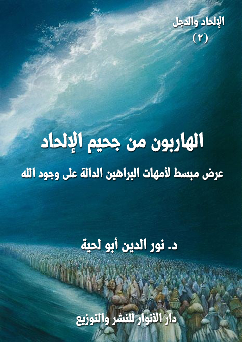

الكتاب: الهاربون من جحيم الإلحاد
الوصف: عرض مبسط لأمهات البراهين الدالة على وجود الله
المؤلف: أ.د. نور الدين أبو لحية
الناشر: دار الأنوار للنشر والتوزيع
الطبعة: الأولى، 1438 هـ
عدد الصفحات: 425
ISBN: 978-620-2-34776-1
لمطالعة الكتاب من تطبيق مؤلفاتي المجاني وهو أحسن وأيسر: هنا

التعريف بالكتاب
يتناول هذا الكتاب المناهج الكبرى التي استعملها العلماء والفلاسفة والمتكلمون من المدارس المختلفة للدلالة على وجود الله، مع ضرب الأمثلة عن البراهين المرتبطة بها، وتقريراتها المختلفة، محاولا تبسيط كل ذلك، باستعمال الحوار والقصة والمثال وغيرها من أساليب التبسيط.
ذلك أن الكثير من تلك المناهج ـ وخاصة الفلسفية أو الكلامية منها ـ تعرض بطريقة يصعب على العامة والبسطاء التعرف عليها والاستفادة منها مع أهميتها البالغة، ولذلك تبقى محصورة في دوائر ضيقة، مع أنها من الأسلحة المهمة والنافعة التي يواجه بها الإلحاد، وخاصة الإلحاد الجديد الذي يعتمد عرض الأطروحات الإلحادية القديمة بطريقة بسيطة، ويجد من يسمع له، وفي نفس الوقت لا يجد في الطرف المقابل إلا طروحات غاية في التعقيد والغموض، والتي قد تثير فيه من الإشكالات أكثر مما تحل له من العقد.
الهاربون من جحيم الإلحاد (5)
يتناول هذا الكتاب المناهج الكبرى التي استعملها العلماء والفلاسفة والمتكلمون من المدارس المختلفة للدلالة على وجود الله، مع ضرب الأمثلة عن البراهين المرتبطة بها، وتقريراتها المختلفة، محاولا تبسيط كل ذلك، باستعمال الحوار والقصة والمثال وغيرها من أساليب التبسيط.
ذلك أن الكثير من تلك المناهج ـ وخاصة الفلسفية أو الكلامية منها ـ تُعرض بطريقة يصعب على العامة والبسطاء التعرف عليها والاستفادة منها مع أهميتها البالغة، ولذلك تبقى محصورة في دوائر ضيقة، مع أنها من الأسلحة المهمة والنافعة التي يواجه بها الإلحاد، وخاصة الإلحاد الجديد الذي يعتمد عرض الأطروحات الإلحادية القديمة بطريقة بسيطة، ويجد من يسمع له، وفي نفس الوقت لا يجد في الطرف المقابل إلا طروحات غاية في التعقيد والغموض، والتي قد تثير فيه من الإشكالات أكثر مما تحل له من العقد.
بالإضافة إلى ذلك كله، فقد بنينا الحديث عن هذه المناهج والبراهين والتقريرات المرتبطة بها على أساس التنوع الحاصل في طرق التفكير ومدارسه ومناهجه.. ولذلك لم نستعمل تلك الطريقة التي وقع فيها بعض المؤمنين الذين راحوا ينتقدون مناهج وبراهين لم تتناسب مع طرقهم في التفكير، فراحوا يعطون الملاحدة الأدوات التي يواجهون بها تلك الأدلة.
ولذلك قبلنا جميع الأدلة، وبتقريراتها المختلفة، بناء على القاعدة المعروفة [لله طرائق بعدد الخلائق]، فقد لا يفهم بعض الناس دليلا من الأدلة كالدليل الأنطولوجي لأنسلم وديكارت، أو دليل الصديقين للفارابي وابن سينا والملا صدرا.. لكن في نفس الوقت نرى من فهم تلك الأدلة، واستفاد منها، وتحول بموجبها من الإلحاد إلى الإيمان.. ولذلك لا معنى لانتقادها أو رفضها بحجة عدم تناسبها مع الاتجاه الفكري أو المدرسة الفكرية.
الهاربون من جحيم الإلحاد (6)
ولهذا كان موقفنا في الكثير من القضايا هو قبول كل ما يدعم الإيمان بغض النظر عن التفاصيل المرتبطة به.. فمن المسائل المطروحة في هذا الباب ـ مثلا ـ مسألة قدم العالم، وهل هي في حال صحتها ـ كما يقول الكثير من الفلاسفة ـ تتناقض مع الإيمان، أو لا تتناقض معه، وهل قدم العالم شرط لثبوت الصانع، أو ليس شرطا.. فلم نهتم بهذه المسألة باعتبارها مسألة جزئية، وإنما اهتممنا بها باعتبارها شبهة قد يستفيد منها الملاحدة.
ولذلك بحثنا فيها على كلا الاحتمالين.. على احتمال الحدوث، وهو الذي نؤمن به، وقد ذكرنا براهين كثيرة خاصة بذلك.. أو على احتمال عدم الحدوث ـ كما يقول الفلاسفة ـ وقد ذكرنا أيضا أنه حتى لو كانت الحالة كذلك، فإنها لا تتناقض مع وجود الله بناء على مبدأ العلية والإمكان.
وقد استلهمنا الجانب الروائي والقصصي في هذا الكتاب مما ورد عن اجتماع المؤمنين في الجنة، وحديث بعضهم مع بعض عن سبب هدايتهم وضلالهم، وكيف خرجوا من ذلك، وهو المشهد الذي نص عليه قوله تعالى: {فَأَقْبَلَ بَعْضُهُمْ عَلَى بَعْضٍ يَتَسَاءَلُونَ (50) قَالَ قَائِلٌ مِنْهُمْ إِنِّي كَانَ لِي قَرِينٌ (51) يَقُولُ أَإِنَّكَ لَمِنَ الْمُصَدِّقِينَ (52) أَإِذَا مِتْنَا وَكُنَّا تُرَابًا وَعِظَامًا أَإِنَّا لَمَدِينُونَ (53) قَالَ هَلْ أَنْتُمْ مُطَّلِعُونَ (54) فَاطَّلَعَ فَرَآهُ فِي سَوَاءِ الْجَحِيمِ (55) قَالَ تَاللَّهِ إِنْ كِدْتَ لَتُرْدِينِ (56) وَلَوْلَا نِعْمَةُ رَبِّي لَكُنْتُ مِنَ الْمُحْضَرِينَ (57) أَفَمَا نَحْنُ بِمَيِّتِينَ (58) إِلَّا مَوْتَتَنَا الْأُولَى وَمَا نَحْنُ بِمُعَذَّبِينَ (59) إِنَّ هَذَا لَهُوَ الْفَوْزُ الْعَظِيمُ (60)} [الصافات: 50 - 60]
ولهذا جعلنا المؤلف يرحل بصحبة معلمه [معلم الإيمان] إلى روضات المؤمنين الذين هربوا من جحيم الإلحاد، وهناك يجد حدائق كثيرة، كل حديقة تضم جماعة من الجماعات، مقسمين على أساس المدارس الفكرية التي عرفوا الله من خلالها.
الهاربون من جحيم الإلحاد (7)
وعند زيارته لكل جماعة يتعرف على المنهج العام الذي بنوا عليه استدلالاتهم، ثم يسمع من كل واحد منهم البراهين التفصيلية المرتبطة بذلك المنهج، على سبيل الحكاية الرمزية، مع الحوارات التي تناقش الشبهات، وترد عليها بسلاسة ووضوح وتبسيط.
وقد قسمنا المناهج الكبرى التي تقوم عليها براهين وجود الله إلى سبعة أقسام:
البراهين القاطعة: ونقصد بها أصناف الأدلة والبراهين التي استعملها الفلاسفة والمتكلمون من أمثال برهان العلية، وبرهان لحدوث، وبرهان التطبيق أو نفي التسلسل، وغيرها.. وهي جميعا براهين تنطلق من الكون كواسطة للوصول إلى الله.
المعاني الرقيقة: ونقصد بها أصناف الأدلة التي استعملها الفلاسفة أو الصوفية، وهي الانطلاق من الأعلى إلى الأدنى أو من المكون إلى الكون، ومن أمثلتها برهان الفطرة، وبرهان الصديقين، والبرهان الوجودي أو الأنطولوجي، والبرهان الوجداني.
العناية الرحيمة: ونقصد بها أصناف الأدلة التي استعملها الفلاسفة والمتكلمون والعلماء، والتي تتعلق بالنظر إلى عناية الله بعباده ورحمته بهم، عبر المظاهر المختلفة لتلك العناية، والتي دل العلم الحديث على تفاصيل الكثير منها.
الصنعة العجيبة: ونقصد بها أصناف الأدلة التي يستعملها علم الكلام الجديد، والعلماء المعاصرون في الدلالة على الله انطلاقا من براعة الصنعة وإتقانها، فالصنعة المتقنة تدل على الصانع المبدع، وقد استفدنا في هذا المنهج خصوصا مما كتبه علماء الفيزياء والفلك والطب وغيرهم في هذا الجانب محاولين تبسيطه قدر المستطاع.
النظام البديع: ونقصد بها أصناف الأدلة التي يستعملها علم الكلام الجديد خصوصا لنفي العشوائية والصدفة.. فالنظام يحتاج إلى منظم، ويستدعيه بالضرورة العقلية.
الآيات الباهرة: ونقصد بها أصناف الأدلة التي تواجه الأطروحات الإلحادية التي تتصور أن الأدلة على الله أدلة نظرية وفلسفية فقط، ليس لها أي جانب حسي أو تجريبي.. فهي
الهاربون من جحيم الإلحاد (8)
تعطي الكثير من المناهج التي يمكنها أن تحول الإيمان بالله إلى تجربة حسية، كسائر التجارب.
الهداية المبينة: ونقصد بها أصناف الأدلة التي استعملتها الكتب المقدسة في الدلالة على الله، لا عبر الاستدلال بنصوص تلك الكتب المقدسة نفسها، لأن ذلك قد يعبر دورا، وإنما باعتبارها ظاهرة من الظواهر الحسية، التي تحتاج إلى البحث فيها من هذا الجانب، وقد حاولنا أن نبين أن هذه الظاهرة أكبر ظاهرة تعريفية بالله، فالله لم يعلن عن نفسه من خلال الكون وظواهره فقط، وإنما أعلن عنه عبر رسله وكلماته المقدسة لعباده.. وقد اقتصرنا على بعض الأمثلة على ذلك، بناء على أننا خصصنا سلسلة [حقائق ورقائق] جميعا لإثبات النبوة بالمناهج المختلفة، وإثبات النبوة، ليس سوى إثبات للألوهية بالدرجة الأولى.
وقد اعتمدنا في هذا الكتاب على مصادر كثيرة متنوعة، وضعنا التوثيقات المرتبطة بها في الهوامش، ولم نبالغ في التوثيق عند كل محل، لأننا نتصرف كثيرا في النصوص، فالهدف ليس النصوص بحد ذاتها، ولا أصحابها، وإنما الأفكار التي تحملها.
وننبه أيضا إلى أننا في هذا الكتاب باعتباره يمزج العلم بالفن والأدب لم نراع التسلسل التاريخي في الأحداث والوقائع التي يرويها أبطال الرواية، ولا المعلومات الدقيقة المرتبطة بأشخاصهم.. لأن كل ذلك لم نقصد منه سوى تقريب الصورة، وتيسير الفهم، وتوضيح المقاصد.
وننبه أيضا إلى أن الكتاب باعتباره يخاطب جهات متعددة، فإن أساليبه متعددة، فمنها المغرق في التعقيد الفلسفي، ومنها العلمي البسيط اليسير، ومنها الخطابي الوعظي.. ولذلك يمكن للقارئ الذي لم يفهم نصا من النصوص، أو برهانا من البراهين أن ينتقل لغيره من غير أن يؤثر ذلك في فهمه للمسائل المطروحة، ولو أننا نعمد كل برهان إلى وضع تقريرات مختلفة تخاطب أصناف الناس: الفيلسوف والعالم والعامي وغيرهم.
وننبه في الأخير إلى أن هذا الكتاب ليس سوى جزء من سلسلة [الإلحاد.. والدجل]،
الهاربون من جحيم الإلحاد (9)
ولهذا لم نتعمق في تفاصيل بعض الأدلة، باعتبار أننا سنتحدث عنها بتفصيل في محالها من الأجزاء الباقية.
الهاربون من جحيم الإلحاد (10)
في صباح ذلك اليوم الذي التقيت فيه معلمي الجديد [معلم الإيمان] كنت في غاية الاكتئاب والإحباط بسبب مشهد افتتحت به يومي، جعلني أمتلئ حنقا على التطرف والمتطرفين على أي ملة كانوا.. متدينين أو غير متدينين.
فقد رأيت شابا كنت أعرفه بالتزامه الديني المتشدد، وبلحيته الطويلة، ولسانه الذي لا يقل عنها طولا.. لكني رأيته في ذلك الصباح بصورة معاكسة تماما، فقد انتقل مباشرة ومن غير جسور من تطرف إلى تطرف، ومن غلو إلى غلو..
وكما تجلى تطرفه الأول على شعر لحيته.. فقد تجلى تطرفه الثاني على شعر رأسه.. فقد رأيته يقصه قصات غريبة، جعلتني أقترب منه، وأقول له بكل لطف: ألست فلانا؟
قال: بلى.. فما حاجتك إلي؟
قلت: ألا ترى أن ما فعلت بشعر رأسك لا يتناسب مع مؤمن متدين.. فأنت تعلم نهي النبي صلى الله عليه وآله وسلم عن..
بمجرد أن قلت هذا، قاطعني بغضب وجفاء وتجهم لا يقل عن تجهمه في تطرفه الأول، وقال: دعني من أولئك البدو الجفاة الغلاظ.. فمن أين لي بأن الله أرسل بشرا.. ومن أين لك بأنه يوجد إله أصلا.. أنت لا تعلم ما قال العلم الحديث.. وما قال..
قاطعته، وقلت: هل أنت الذي تقول هذا؟.. ما بك يا رجل؟.. أين ذهب عقلك؟
قال: بل أين ذهب عقلك أنت؟.. لقد كنت غبيا مثلك.. لكني اكتشفت الحقيقة بعد أن عاد إلي عقلي ووعيي.. وأنا الآن أعيش حياتي بكل حرية، لا يقيدني فيها إله، ولا يتحكم في دين.. فأنا أحق بحياتي من غيري.. لقد اكتشفت ـ كما اكتشف سارتر ـ أن وجود الله يعطل وجودي أنا، فلذلك كان (الأفضل أن لا يكون الله موجودًا حتى أُوجد أنا)
الهاربون من جحيم الإلحاد (11)
قال ذلك، ثم انصرف عني، وهو يصفر ويرقص كالمجانين.. حينها لم أجد من فرط اكتئابي إلا أن أسير خارج قريتي لأستلقي على عشب بعض المروج، أتأمل السماء والجمال المودع فيها، وأتعجب من تلك العقول التي تغفل عن كل هذه الصنعة الإلهية، والعناية الربانية، لترتع في مستنقعات الشياطين.
حينها جاءني معلمي الجديد [معلم الإيمان] محاطا بهالة النور التي تغشاه من مفرق رأسه إلى أخمص قدميه، وقال لي: قم لنزور الهاربين من جحيم الإلحاد..
قلت: أتريد أن تعود بي إلى فندق الملاحدة.. ذلك الفندق الذي امتلأت فيه بالمرارة والألم؟
قال: لا.. ستزور اليوم جنات الهاربين من جحيم الإلحاد.. أولئك الذين أعملوا عقولهم، وطهروا نفوسهم، فاستعدوا لنيل فضل الله بالهداية التي أخرجتهم من ظلمات الضلالة إلى نور الإيمان.. ومن جحيم الجحود إلى نعيم العرفان.
قلت: لا تذكرني بالجاحدين المارقين.. فقد رأيت اليوم أحدهم، وكاد قلبي ينفطر لمرآه، وكادت يدي تمتد لرقبته، فتخنقها.. ليتك سمعت ما قال.
قال: ما أكثر من قال ما قال.. لكنه عاد إلى وعيه، وعادت إليه فطرته، وفر من جحيم الملاحدة لتستقبله جنان فضل الله.. فالله كريم غفور شكور..
قلت: لكنك لم تسمع ما قال.. ولو سمعته لما رددت علي هذا.
قال: ربما لم أسمعه، ولكني سمعت السحرة حين دخلوا على فرعون قائلين: {بِعِزَّةِ فِرْعَوْنَ إِنَّا لَنَحْنُ الْغَالِبُونَ} [الشعراء: 44].. ولم يخرجوا من عنده إلا وهم يقولون: {آمَنَّا بِرَبِّ الْعَالَمِينَ (47) رَبِّ مُوسَى وَهَارُونَ} [الشعراء: 47، 48]
قلت: ربما كان لأولئك السحرة بعض العقل الذي جعلهم يرددون ذلك.
الهاربون من جحيم الإلحاد (12)
قال: لا تحجر هداية الله وفضله العظيم.. وسلم لربك، ولا تقترح عليه.. وإن كان لك من شيء تفعله نحوهم، فهو أن تدعو الله لهم بالهداية، وأن تقوم بما يجب عليك من إقامة الحجة والدليل.. فالله تعالى يقول: {ادْعُ إِلَى سَبِيلِ رَبِّكَ بِالْحِكْمَةِ وَالْمَوْعِظَةِ الْحَسَنَةِ وَجَادِلْهُمْ بِالَّتِي هِيَ أَحْسَنُ إِنَّ رَبَّكَ هُوَ أَعْلَمُ بِمَنْ ضَلَّ عَنْ سَبِيلِهِ وَهُوَ أَعْلَمُ بِالْمُهْتَدِينَ} [النحل: 125]
قلت: لكن هؤلاء لا يفهمون حجة.. ولا يقتنعون بدليل.. وكيف يتاح لهم ذلك، وقلوبهم مغلقة، وعقولهم معطلة، ونفوسهم مدنسة؟
قال: أد ما عليك من واجب.. واترك لله الهداية.. فـ {إِنَّكَ لَا تَهْدِي مَنْ أَحْبَبْتَ وَلَكِنَّ اللَّهَ يَهْدِي مَنْ يَشَاءُ وَهُوَ أَعْلَمُ بِالْمُهْتَدِينَ} [القصص: 56]
قلت: بأي لغة تريد أن أحدثهم.. وبأي حجة تريد أن أخاطبهم.. وهم قد سدوا آذانهم عن كل ألوان الحجج؟
قال: خاطبهم بأي لغة تتناسب مع عقولهم وأمزجتهم.. فلله طرائق بعدد الخلائق.
قلت: فهلا وصفت لي بعضها.. فأنت معلم الإيمان.
قال: لأجل هذا جئتك اليوم.
قلت: هل تقصد تعليمي براهين الإيمان؟
قال: سأذهب بك إلى من يعلمك تلك البراهين..
قلت: من تقصد؟
قال: أولئك الذين اكتووا بنار الإلحاد، ثم منّ الله عليهم بالهداية، فهم أدرى الناس بمسالك الإيمان لدرايتهم بمسالك الشبه.
قلت: أتقصد أننا سنزور في رحلتنا هذه ملاحدة؟
الهاربون من جحيم الإلحاد (13)
قال: سنزور من اكتووا في يوم من أيام حياتهم بنار الإلحاد.. لكن هداية الله تداركتهم بسبب صفاء سرائرهم، وطهر نفوسهم.. فلذلك خرجوا من جحيم الإلحاد.. ودخلوا جنات الإيمان.
قلت: فمن هم؟
قال: كثيرون.. ستراهم.. وتسمعهم.. ولك أن تسألهم.. ولهم أن يجيبوك.
قلت: هل سنذهب الآن إليهم.
قال: لا.. سيأتون هم إلينا..
قلت: لم أفهم ما تعني.
قال: حدق بصر الإيمان.. وسترى ما لم تكن ترى، وتسمع ما لم تكن تسمع.
قلت: ما علي فعله؟
قال: أغمض عين الملك، وافتح عين الملكوت.. وسترى من العوالم ما كان محجوبا عنك.
فعلت ما طلبه مني، كما دربني على ذلك معلم السلام.. وفجأة رأيت شيئا عجيبا..
لقد تحولت تلك المروج التي كنت مستلقيا على عشبها إلى جنات وارفة ممتلئة بكل أصناف الأزهار، وكل أنواع الطيور.. وكان أريجها يعبق بنسيم عليل ممتلئ بالروائح الطيبة.. وكأن الجنة قد تنزلت من عليائها إلى ذلك المكان..
وفجأة رأيت بشرا كثيرين يجتمعون جماعات متفرقة.. يجلسون على أرائك من العشب الخالص.. يبتسم بعضهم لبعض، ويحدث بعضهم بعضا..
الهاربون من جحيم الإلحاد (14)
فجأة اقترب مني أحدهم، وقال: مرحبا بك يا تلميذ الإيمان.. لقد أخبرنا معلم الإيمان عنك، وعن زيارتك لنا، ونتشرف بأن نكون أول من يستقبلك.
قلت: من أنت؟
قال: لن تعرفني.. ولا حاجة لك بمعرفتي.. لأن كل من تراه هنا تخلى عن اسمه ورسمه منذ عرفه..
قلت: أنت تذكرني بذلك الولي الصالح الذي سئل عن اسمه، فقال: لقد ذهب عني، لا أعاده الله إلي.
قال: صدق.. فمن عرف الله لم يحجب عنه بغيره كائنا من كان حتى نفسه التي بين جنبيه..
قلت: إن هذا من الحجب التي حالت بين بعض قومي وبين الإيمان.. فقد خافوا على وجودهم أن يلغى بسبب وجود الله.. فلذلك راحوا يلغون وجود الله ليبقى لهم وجودهم.
قال: وهل لهم وجود من دون مدده.. إن إلغاءهم لوجود الله هو إلغاء لوجودهم، فلا وجود إلا منه، ولا وجود إلا به..
قلت: هنيئا لك هذه المرتبة الرفيعة.. وهذا المقام السامي.. لاشك أنك سليل أسرة من الصالحين الذين توارثوا الولاية وأمجادها.
قال: بل أنا سليل أسرة من الملاحدة الذين ألغوا لله من حياتهم.. ولولا أن منّ الله علي بالهداية لكنت الآن في فندق الملاحدة، لا في روضات جنات المؤمنين التي تراها.
قلت: فكيف تخلصت من قيود الإلحاد.. وكيف هربت من سجونهم؟
قال: هلم بنا إلى مجلسنا، وسترى نفرا من أصحابي، وسنحدثك جميعا عن نعمة الله علينا
الهاربون من جحيم الإلحاد (15)
بالهداية، وكيف أخرجنا الله من ظلمات الغواية إلى نور الهداية.
قلت: أتقصد هذه الأرائك التي يجلس عليها أولئك النفر من النوارنيين؟
قال: أجل..
قلت: فلم أرى حلقات كثيرة منفصلة.. لم لم تجتمعوا جميعا في محل واحد، بحيث يسمع بعضكم بعضا، ويحكي بعضهم لبعض؟
قال: ألم تسمع ما قاله معلم الإيمان لك.. لله طرائق بعدد الخلائق؟
قلت: أجل.. لقد قال لي ذلك.
قال: فكل من تراه له طريقته الخاصة التي وصل بها إلى الله.. فالله يدلي حبال فضله لعباده كل حين.. فمن شاء أن يتعلق بها تعلق.. ومن شاء أن يبقى في عوالم نفسه بقي.
قلت: فبأي حبل تعلقتم؟
قال: أنا وأصحابي تعلقنا بحبل [البراهين القاطعة]
قلت: فلم تعلقتم بها دون غيرها؟
قال: لقد كنا قبل تنعمنا بنعمة الإيمان من الفلاسفة الذين توهموا أن العقل يرفض الله.. ولا يثبت وجوده.. أو يتوقف في ذلك.. لكنا بعد البحث والتحري، والتأمل والتدقيق وصلنا إلى الحقيقة العظمى، وهي أن الله هو الدليل على خلقه، وليس الخلق هو الدليل على الله.. فلولا الله ما كان شيء من الأشياء.
قلت: لقد ذكرتني بقولك بهذا بـ[فرنسيس بيكون]، فقد قال: (القليل من الفلسفة يميل بعقل الإنسان إلى الإلحاد، ولكن التعمق فيها ينتهي بالعقول إلى الإيمان.. إذا أمعن (العقل) النظر وشهد سلسلة الأسباب كيف تتصل حلقاتها فأنه لا يجد بدًا من التسليم بالله) (1)
قال: صدق فرنسيس بيكون.. لقد كان في يوم من الأيام صديقي.. والحمد لله كانت
__________
(1) مُلحدون محدثون معاصرون، د. رمسيس عوض، ص 58.
الهاربون من جحيم الإلحاد (16)
نصيحته تلك سببا من أسباب هدايتي.
قلت: فهلا حدثتني عن ذلك.
قال: هلم بنا نجلس إلى تلك الأرائك حيث يجتمع أصحابي، وهناك ستسمع مني ومنهم.
جلسنا في حلقة من الحلقات، وبمجرد جلوسنا اقتربت أرائك الإخوان المنورين بنور الإيمان من بعضها بحركات آلية في منتهى الدقة والجمال، مما جعلني أعيش قوله تعالى في وصف أهل الجنة: {إِخْوَانًا عَلَى سُرُرٍ مُتَقَابِلِينَ} [الحجر: 47]
كان الجو ممتلئا بالأنوار الجميلة الهادئة.. وكان النسيم مملوءا بالعطر الفواح الطيب.. فانشرحت نفسي انشراحا شديدا، ورحت أقول من حيث لا أشعر: هلم بنا إلى الحديث عن سر وجودكم هنا.. فما أرسلني معلمي معلم الإيمان إلا لهذا؟
قال أحدهم، وهو صاحبي الذي جاء بي إلى ذلك المجلس: {إِنِّي كَانَ لِي قَرِينٌ (51) يَقُولُ أَإِنَّكَ لَمِنَ الْمُصَدِّقِينَ (52) أَإِذَا مِتْنَا وَكُنَّا تُرَابًا وَعِظَامًا أَإِنَّا لَمَدِينُونَ (53)} [الصافات: 51 - 53].. ويقول لي: هل تصدق حقا أن هناك إله في هذا الوجود.. فإن كان هناك إله، فأين هو، ولم لا نراه، ولم لا يظهر لنا نفسه؟
وكنت أصدقه في كثير مما يقوله تبعية طوعية مني، لانبهاري بالكثير من منجزاته، والتي جعلتني أعطيه العصمة المطلقة، وأقول في نفسي: يستحيل على من استطاع أن يصل إلى كل ذلك المال والجاه، وأن يصطاد كل تلك القلوب والعقول، أن يكون كاذبا فيما ادعي..
لكن الله بفضله الكريم خلصني منه بواقعة بسيطة وقعت لي، لم أكن أعلم أنها تخرجني من جحيم الإلحاد إلى جنات الإيمان.. فإن شئتم أن أذكرها لكم فعلت.. وإن شئتم اقتصرت
الهاربون من جحيم الإلحاد (17)
منها على البراهين التي أخرجني الله بها من أوهامي.
قال أحدهم: هلم اذكرها لنا تفاصيلها.. فما تحلو مجالسنا هذه إلا بالتفاصيل.
قال الرجل: في ذلك اليوم دعيت للشهادة في المحكمة من طرف صاحبي الذي ذكرته لكم.. وقد ذهبت إليها على الرغم من أنني لم أعاين شيئا.. ولكني كنت واثقا تماما أن صاحبي صاحب العلم والمال والجاه لا يمكن أن يظلم أو يغدر.. فقد كانت ثقتي فيه لا حد لها.. لكن الله شاء أن يجعل ذلك اليوم سببا في اكتشافي لحقيقته، واكتشافي بعد ذلك لله تعالى.
وقد وضح لي صاحبي، ومدراء أعماله ما علي أن أقوله بدقة.. فحفظته عن ظهر قلب.. لكني ما دخلت القاعة، وسمعت كلام المتهم، ورأيت سنحة وجهه حتى نسيت كل شيء.
لقد كان أول ما بدأ به المتهم كلامه، هو شهادته على نفسه، وإقراره بأنه صاحب الفعلة التي اتهم بها، وأنه لا يحتاج إلى أي شهود يثبتون ذلك أو ينفونه.. وسرني ذلك كثيرا، فقد ألقى عن ظهري تبعة الشهادة بما لا أعلم (1)..
لكن المتهم لم يكتف بذلك، بل راح يقول للقاضي، والمدعين عليه: لكن اسمعني ـ سيدي ـ قبل أن تحكم علي بما تشاء لأذكر لك سر فعلتي تلك.. ولعلك بعدها تعذرني.. ولعلك تنزل علي ما تشاء من العقوبة.
لم يجد القاضي ومن حوله من المستشارين سوى أن يأذنوا له بالحديث، فقال: كل ما سأقوله لكم حقيقة مطلقة يشهد عليها صاحب المعمل الذي ادعى علي، ويشهد عليها كذلك العمال الذين حضروا، فإن رأوا أني أضفت شيئا من عندي، فيمكنهم أن يكذبوني.
قال ذلك، ثم التفت الى العمال الكثيرين الذين حضروا قاعة المحاكمة، وقال: سيدي القاضي.. إن هؤلاء العمال الذي تراهم يشهدون أن المدعي علي كان يجمعنا كل أسبوع ليلقي علينا محاضراته التشكيكية في كل الحقائق، مما جعل الكثير منا يكاد يفقد عقله، وبعضنا خرج
__________
(1) استلهمنا هذا المعنى من قصة إبراهيم عليه السلام، وما فعله مع الأصنام ليقيم الحجة على قومه.
الهاربون من جحيم الإلحاد (18)
من جميع معتقداته التي ورثها، وكان سعيدا بها من دون أن يجد أي معتقدات صحيحة نافعة يمكن أن تعوضها.. ولذلك فإنني أدعي على المدعي علي بأن جريمته أكبر من جريمتي.. فأنا لم أفعل سوى أن قطعت التيار الكهربائي عن الآلات عدة ساعات، مما أحدث بعض الخسارة في المعمل.. لكن هذا الرجل قطع تيار الحياة عن أرواح أصحابي من العمال قطعا أبديا.. وهو بذلك قد قام بقتلهم من حيث لا يشعر.
قال القاضي: وضح ما تقول.. فنحن لا نفهم شيئا.
قال المتهم: أنتم تعلمون أن الرجل الواقف أمامكم، والذي يطلق عليه الناس اسم [ديفيد هيوم (1)]، ليس رجل أعمال فحسب، وإنما هو فيلسوف أيضا، مثله مثل زملائه في الفلسفة ديكارت وسبينوزا وبيكون وكانط وجون ستيوارت ميل وبرنارد راسل.. وغيرهم.
قال القاضي: نعم نعلم ذلك.. فهل في ذلك مشكلة؟
قال المتهم: لكن فلسفته ـ سيدي ـ ليست فلسفة عادية، إنها نوع من السموم القاتلة.. إن أفكاره تنخر العقل والروح، فلا تبقي منهما شيئا.. بل تجعل الإنسان يشك في كل شيء.
قال القاضي: وضح أكثر.
قال المتهم: إن المتهم الواقف أمامكم سيدي يتميز عن غيره من الفلاسفة بأنه سلك خطاً فلسفيا جديداً خطيرا.. فلا هو سقط في المثالية المشغولة بالتأمل العقلي.. ولا هو ناصر المذهب التجريبي.. لقد كان يذكر لنا كل حين أن مصدر المعرفة للإنسان لا يكون بالعقل، كما أنه لا يكون بالحواس.. بل هو يرى أن مصدر المعرفة عند الإنسان لا يكون إلا بالعادة والتكرار..
__________
(1) ديفيد هيوم (1711، 1776)، فيلسوف واقتصادي ومؤرخ اسكتلندي ولد وتوفي بأدنبره، أهم كتبه: بحث في الطبيعة الإنسانية، ثلاثة أجزاء، وفحص عن الفهم الإنساني، وفحص عن مبادئ الأخلاق، والتاريخ الطبيعي للديني، وغير ذلك راجع تاريخ الفلسفة الحديثة ليوسف كرم 172 ـ 173.
الهاربون من جحيم الإلحاد (19)
ولذلك أنكر وجود ما يسمى بالعقل البشري، وقال: إن العقل ليس سوى ذاكرة نحفظ بها تجاربنا وتجارب الآخرين.. وبهذا أبطل العلية، وفتح الباب على مصراعيه لهدم المنهج الإستقرائي، ومنه لهدم المنهج التجريبي.. وبذلك أحدث هذا الرجل من الفضائح الفلسفية ما هو وبال على البشرية جميعا.. و..
قاطعه القاضي، وقال: قبل أن تكمل، دعنا نسأل صاحب الدعوى ديفيد هيوم عن مدى صحة ما قلت.. وهل هو حقا يرفض السببية؟
قال ديفيد: أجل ـ سيدي القاضي ـ فقد اكتشفت أن السبية ليست سوى نتيجة للبرهان الاستقرائي القائم من الملاحظة المستمدة من الاطراد في الطبيعة كوسيلة للنظر للمستقبل والتنبؤ به.. فلو رأينا ظاهرتين تتبع إحداهما الأخرى على الدوام، فالنتيجة أنهما سيستمران في التتابع إلى الأبد..
التفت القاضي إلى المتهم، وقال: واصل حديثك..
توجه المتهم إلى ديفيد هيوم، وقال (1): اسمعني ـ ديفيد ـ لأقول لك بكل صراحة: لقد حجبك حسك الممتلئ بالزهو والغرور عن كل شيء.. فرحت تعتبره المجال الوحيد للمعرفة، والمنبع الفريد للإدراك.. ورحت تحصر المعارف في المادة الجامدة، وما ارتبط بها.. ورحت تعتبر كل ما يتحدث عنه العقلاء من مصادر للمعرفة غير الحس والمادة أوهاما لا حقيقة لها، وخرافة لا وجود لها إلا في مخيلة أصحابها.
ولم تكتف بذلك، بل رحت تعتبر كل معتقدات الإنسان وآراءه عن العالم الخارجي مجرد خيالات وأوهام لا وجود لها.. وأنها مجرد مدركات ذهنية مختزنه، وأن الإنسان لا يفعل سوى أن يسقط كل ذلك على العالم الخارجي، ويفسره به، فتكون الحصيلة أن يعلن عن ذاته، وعن مكونات نفسه، ولا يعلن عن الحقائق الخارجية التي يزخر بها العالم الواقعي.
__________
(1) النص الوارد هنا مقتبس بتصرف من كتاب [ما قاله الملاحدة ولم يسجله التاريخ]
الهاربون من جحيم الإلحاد (20)
ولم تكتف بذلك، بل رحت تمعن في الحس والكثافة، فتعتبر كل أفعال الإنسان وكل سلوكاته مجرد ردود أفعال لما يعتمل في نفسه من إحساس باللذة أو الألم، واستجابة لكل ما يشعر به اتجاه الأشياء من سعادة أو شقاء.. وبذلك أصبحت الحواس الظاهرة هي المتحكمة في كل شيء ابتداء من الإحساس باللذة والألم.
بل إنك اعتبرت الحواس الباطنة مجرد تابع ذليل للحواس الباطنية.. فألغيت بذلك وجودها وحقيقتها.
أتدري ما فعلت بفلسفتك الرعناء هذه.. لقد قضيت على كل حقائق الوجود، كما قضيت على كل القيم النبيلة.. وكيف لا تقضي عليها، وقد جعلت الأخلاق قائمة على أصول حسية مادية بحتة.. وكيف لا تقضي عليها، وقد جردت الإنسان من مسئوليته على أفعاله، وجعلت حركاته كلها مجرد ردود أفعال لما يحس به من لذة، أو ما يحس به من ألم..
سكت قليلا، ثم قال: إن المدعي علي الواقف أمامكم ليس من أولئك المترددين المتوقفين اللاأدريين من أصحاب الإلحاد السلبي.. بل كان من أصحاب الإلحاد الإيجابي الذين راحوا يحاولون التماس الأدلة على نفي وجود الله.. وقد رأى أن من أصحابه في كل تاريخ البشرية من وضع لذلك مبادئ ونظريات ممتلئة بالعبث واللاعقلانية كنقض مبدأ الخلق، ومشكلة العدل والشر، واستحالة الوحي، ونقد الكتب المقدسة للأديان، واستحالة الحياة بعد الموت.. فراح يضيف إليها شيئا جديدا لم يسبقه إليه أحد، بل لم يفكر فيه أحد أصلا، وهو [إبطال مبدأ السببية] (1) الذي اتفقت عليه جميع العقول، بل اعتبر من (إحدى بدائه الفكر الأساسية)، ذلك أنه (لا يحدث شيء بلا علة، أو على الأقل بلا سبب محدد) (2)
__________
(1) استفدنا المادة العلمية هنا من مقال مهم بعنوان: الأسس اللا عقلية للإلحاد.. مشكلة مبدأ العالم نموذجاً، لعمرو بسيوني.
(2) المعجم الفلسفي لجميل صليبا، 1/ 649.
الهاربون من جحيم الإلحاد (21)
بل إن الفطرة تقتضيه، فالطفل الصغير إن تعرض لتأثير مؤثر ما؛ تراه يطلب ذلك المؤثر ويبحث عنه، فيلتفت ليبحث عمن ضربه خلسة، لكونه مما ارتكز في فطرته، وفي مبادئ عملياته العقلية الأولى أن لكل فعل فاعلا، ولكل مصنوع صانعا.. بل إنه إن لم يجد ذلك المؤثر يرتبك، بل لعله يخاف ويهلع، وسبب ذلك الخوف ليس الجن أو الشياطين.. فالطفل لا يدرك وجود تلك القوى غير المنظورة أصلا في تلك المرحلة المبكرة من حياته، ولكن سبب ذلك هو الاضطراب النفسي الذي يصيبه نتيجة اختلال المبادئ التي يفهم بها الوجود.
ولهذا كان البحث في العلل قديما قدم الفكر نفسه، فمنذ العصور الفلسفية لليونان اهتم أرسطو بدرس العلل، وقسمها إلى علل أربع: المادية، والصورية (الهيولى)، والفاعلية، والغائية (1).. وقد أثبت بالأدلة العقلية أن الله هو العلة الأولى، وليس معلولا لشيء آخر.
لكن صاحبنا هذا أثناء دفاعه عن الإلحاد، وحقده على الإيمان أنكر هذا المبدأ لسبب وحيد، وهو أن جميع المؤمنين من فلاسفة ورجال دين يعتمدون عليه لإثبات وجود الله.
التفت القاضي إلى ديفيد، وقال: هل حقا ما يقول الرجل؟
قال ديفيد: أجل.. كل ما قاله صحيح.. وأنا فخور بأني وجدت من عمالي من فهم فلسفتي.. لاشك أن هذا العامل قرأ كتابي الأكبر (بحث في الطبيعة الإنسانية)، والذي ذكرت فيه أن فكرة العلية قائمة على أسس ثلاثة: هي الاتصال (2)، والأسبقية (3)، والارتباط الضروري.. ثم رحت أفند السبية فيهما جميعا.
__________
(1) تاريخ الفلسفة اليونانية ليوسف كرم، 148.
(2) يقصد بالاتصال أن الأسباب والمسببات متصلة ببعضها، وأن الشيء لا يمكن أن يحصل في زمان أو مكان يبْعُد عن زمانه ومكانه بالفعل.
(3) لا يرى هيوم ضرورة أن تكون العلة ـ بحسب الظاهر ـ سابقة على معلولها، بل يراها أمرا يحتمل (الجدل)، ومع تسليمه أن التجربة في معظم الأحيان تنتصر لأسبقية العلة على المعلول، لكن مبدأ الأسبقية يبقى ـ عنده ـ دائما غير قابل للتدليل بنوع من الاستنتاج أو البرهان!.
الهاربون من جحيم الإلحاد (22)
لقد عبرت عن مقولتي في نفي الارتباط الضروري بقولي: (رؤية أي شيئين أو فعلين، مهما تكن العلاقة بينهما، لا يمكن أن تعطينا أ ي فكرة عن قوة، أو ارتباط بينهما، وأن هذه الفكرة تنشأ عن تكرار وجودهما معا، وأن التكرار لا يكشف ولا يحدث أي شيء في الموضوعات، وإنما يؤثر فقط في العقل بذلك الانتقال المعتاد الذي يحدثه، وأن هذه الانتقال المعتاد من العلة إلى المعلول هو: القوة والضرورة)
وقلت: (ليست لدينا أية فكرة عن العلة والمعلول غير فكرة عن أشياء كانت مرتبطة دائما، وفي جميع الأحوال الماضية بدت غير منفصلة بعضها عن بعض، وليس في وسعنا النفوذ إلى سبب هذا الارتباط.. وإنما نحن نلاحظ هذه الواقعة فقط، ونجد أنه تبعا لهذا الارتباط المستمر فإن الأشياء تتحد بالضرورة في الخيال، فإذا حضر انطباع الواحد كوَّنا نحن في الحال فكرة زميله المرتبط به في العادة) (1)
التفت القاضي إلى المتهم، وقال: واصل.. لكن لا تغرق بنا في بحر الفلسفة العميق.. حدثنا فقط عن آثار أقواله عليك وعلى أصحابك من العمال.
قال المتهم: أجل ـ سيدي ـ فهدفي من كل ذلك الحديث هو الوصول إلى هذه النقطة الخطيرة.. فقد كان لأقواله تلك، والتي شهد بها على نفسه أمامكم آثار كثيرة على أصحابي من العمال وغيرهم.. فقد كان له دوره في إمداد الملاحدة بمادة لاعقلانية جديدة يقضون بها على كل الحجج العقلية للمؤمنين.
لقد عبر بعضهم عن ذلك، فقال: (هيوم أول فيلسوف أوروبي نقل فكرة العلة من معانيها الأرسطية إلى معنى التتابع المجرد بين السبب والمسبب، أي التتابع الذي لا يعني شيئا أكثر من أن السبب سابق لمسببه فيما دلت عليه العادة (التجربة). وقد كان يمكن عقلا أن يجيء
__________
(1) انظر: تحقيق في الذهن البشري لهيوم، ترجمة د محمد محجوب، 116 ـ 117، و126 وهيوم لزكي نجيب محمود 148.
الهاربون من جحيم الإلحاد (23)
الترتيب على صورة أخرى، لكنه جاء هكذا) (1)
وقد استفاد من مقولته تلك عمانويل كانط (2)، الذي أعطى الملاحدة المبرر العقلي لنفي وجود الله، باعتبار أنه لا يمكن التدليل عليه بالدليل العقلي.. بل راح ـ تحت تأثير تلك المقولة ـ يزعم أنه يستحيل إثبات وجود الله بالعقل، كما أنه يستحيل إثبات عدمه.. ثم ترك القضية بعد ذلك للضمير، ولمصادرات العقل العملي.
لقد كان قبل احتكاكه به وبأفكاره المسمومة لا يقول بذلك، بل كان يقرر العلية في كتبه، لكنه بعد اطلاعه على مقالته تحول إلى كانط المؤمن الوحيد الذي يحبه الملاحدة، ويستدلون بمقالاته لضرب الدين.. لقد قال في ذلك: (إن هيوم أيقظني من سباتي الاعتقادي، وكان ذلك برأيه في مبدأ العلية بنوع خاص، إذ كان قد قال: إن مبدأ العلية ليس قضية تحليلية، أي: إن المعلول ليس متضمنًا في العلة أو مرتبطًا بها ارتباطًا ضروريًّا، وإن الضرورة التي تبين له ما هي إلا وليدة عادة تتكون بتكرار التجربة) (3)
سكت قليلا، ثم قال (4): لقد كان المدعي يجمعنا ـ معشر العمال البسطاء ـ كل حين، ويقول لنا: أنتم تزعمون أنه إذا كان للبيت مهندس، فلا بد أن يكون للكون خالق.. وهذا قياس فاسد.. فنحن لم نشاهد عالَما آخر لنقارنه بعالمنا كي نستنتج أن هذا العالم مخلوق بالضرورة.
__________
(1) مناهج البحث عند مفكري الإسلام لعلي سامي النشار، 164.
(2) عمانويل كانط (1724 ـ 1804)، حاول التوسط بين التجريبية والعقلانية المثالية، ووجه نقدا عقليا للدين، أهم كتبه: نقد العقل الخالص النظري (المشهور بنقد العقل المحض)، ونقد العقل العملي، ونقد الحكم، وميتافيزيقا الأخلاق، ورسالة في السلام الدئم راجع يوسف كرم 208 ـ 216.
(3) تاريخ الفلسفة الحديثة، ليوسف كرم 210.
(4) انظر: الإلحاد ووجود الله، أحمد محمد حسن وأحمد دعدوش.
الهاربون من جحيم الإلحاد (24)
كان يقول هذا، وهو مدرك تمام الإدراك أن البيت والكون من جنس واحد، فكلاهما كيان مادي حادث في الزمان والمكان، وكلاهما يحتاج إلى طاقة، والاختلاف بينهما يقتصر على الصفات فقط، وليس الجنس.
قال القاضي: سمعنا ما قلت.. لكنا لم ندرك بعد علاقة ذلك بالجريمة التي فعلتها.
قال المتهم: لقد فعلت تلك الجريمة التي اعترفت بها أمامكم بكل طواعية، لأثبت له قانون العلية الذي راح ينفيه، ويتهم المؤمنين بالجنون لقولهم به.. لقد ذكرت له في بعض المجالس التي عقدها لنا لتلقين الإلحاد قصة العجوز التي سئلت عن سر إيمانها، فقالت: (من آلة النسيج هذه، فعند ما أمسك مقبضها وأدوّره بهذا الدوران ينسج الحبل، وحيث أرفعُ يدي وأتوقف عن التدوير تتوقّف ويبقي الصوف والقطن على حاله، عندها لا نسيج ينسج، ولا ليف يبرم.. من هنا أيقنت أن للأفلاك والنجوم والكواكب السيّارة والشمس والقمر والأرض ونظام الخلق بأجمعه خالقاً مقتدراً، متى شاء عطّل الوجود ورماه في هوّة العدم. وإن شاء أمدّه بأسباب الحياة وأدار عجلة استمراره) (1)
وذكرت له أن طائفة من الملاحدة طلبوا من بعض العلماء أن يثبت لهم وجود الله، فقال لهم: (قبل أن أناظركم هلم بنا إلى الشاطئ، فقد علمت أن هناك سفينة مملوءة من البضائع والأرزاق جاءت تشق عباب الماء حتى أرست في الميناء، ونزلت الحمولة وذهبت، وليس فيها قائد ولا حمالون ولا عساكر ولا حراس.. فهي فرصة لنا للغنيمة منها).. ضحك الملاحدة لقوله، وقالوا له: (كيف تريد أن تناظرنا وأنت لا عقل لك.. فهل يعقل أن سفينة تأتي بدون قائد وتنزل وتنصرف؟! حتى صبياننا لا يصدقون هذا).. فقال: (كيف لا تعقلون هذا، وتعقلون أن هذه السماوات والشمس والقمر والنجوم والجبال والشجر والدواب والناس كلها بدون صانع؟)
__________
(1) معرفة الله، ج 1، ص: 148.
الهاربون من جحيم الإلحاد (25)
وذكرت له قول الأعرابي عندما سئل: بِمَ عرفتَ ربك؟ فقال: (البَعرةُ تدل على البعير، والأثَر يدل على المسير، ليل داجٍ، ونهار ساجٍ، وسماء ذات أبراج، أفلا تدل على الصانع الخبير؟!)
لكنه بدل أن يواجه حججي بالحجج راح يسخر مني أمام العمال، ويحول المسألة عن مسارها، ويقول: إن هذه المقولة مليئة بالمغالطات المنطقية.. وأولها لم البعير؟!.. لم لا يكون الجاموس أم البقر أم الماعز أم الجمل؟!.. وهذا ينطبق على الكون، فلماذا هو الله؟ لم ليس فيشنو أو أودين أو زيوس أو أهووا مازدا؟
والثاني أننا نعرف شكل البعرة من الخبرات السابقة، ونعلم كيف يتم تكوينها؛ لذا عندما نراها يساعدنا دماغنا على إمدادنا بمعلومة سابقة تمكننا من التعرف على الجسم الموجود أمامنا، والآن تأملوا معي ذلك الأعرابي الذي وجد البعرة وأثر السير، تخيلوا لو أنه رأى حفرة على شكل مثلث.. ماذا كان سيقول؟ البعرة تدل على البعير، والحفرة تلك تدل على.. ببساطة لن يعلم؛ لأنه ليست لديه خبرات سابقة تمكنه من التعرف عليه.
كان العمال يضحكون من أمثال هذه الكلمات، وهم لا يدركون الكم الكبير من المغالطات التي تحويها..
التفت القاضي إلى ديفيد، وقال: هل صحيح ما ذكره الرجل؟
قال ديفيد: أجل.. فقد نسي أنه يتحدث مع فيلسوف.. فمن العجوز ومن الأعرابي حتى أتلقى منهم معارفي.. إنهم عوام بسطاء لا عقول لهم.. فكيف أسلم لهم عقلي؟.. ولو أنه بدل ذلك حدثني بطريقتنا ـ نحن الفلاسفة ـ لربما أكون قد ناقشته مناقشة علمية، أو ربما أكون اتبعته في دعواه.
رفع رجل من القاعة يده، وقال: ما دام قد طلب هذا، فليسمح لي ـ سيدي القاضي ـ أن ألبي رغبته في هذا المجلس، وأن أحدثه بالطريقة التي يريدها.. فأنا ضيف على هذه المدينة،
الهاربون من جحيم الإلحاد (26)
وأشتغل بالفلسفة، ولدي فيها أبحاث وكتب.. وقد أتيت إلى هنا عندما سمعت بالقصة، لأرى هل يحتفظ صديقي ديفيد بمبادئه في إنكار العلية أم تراه يتركها لتعارضها مع مصالحه.. وقد رأيت أنه تركها بسهولة وبساطة، فهو بمجرد حصول الحادثة في مصنعه تأكد أن هناك من يقف وراءها، فراح يتحرى عنه إلى أن وجده.. وهكذا لو تعامل مع الحقائق الكبرى، وتحرى عنها لوجد كل الأدلة التي ترشد إليها.
قال القاضي: لقد طلب أن تحدثه بطريقة الفلاسفة.. لا بطريقة العوام.
قال الفيلسوف: أجل.. سأحدثه بذلك.. إن ما عبر عنه العامل بلغته البسيطة هو ما يعبر عنه في الفلسفة بدليل العلية وهو دليل من بين آلاف الأدلة على وجود الله.. بعضهم يسميه الدليل الكياني (1).
والمقدمة الأولى من هذا الدليل هي أننا نرى في العالم حادثات، وتقلبات، حتى إن وجودنا نحن من جملة تلك الحادثات.. وهذه مقدمةٌ، مبنية على الإحساس والمشاهدة، ومسلم بها عند أهل العلم القديم، والعلم الحديث.
أما المقدمة الثانية، والتي أنكرها صاحبنا، فهي أنه [لا بد لكل حادثٍ من علةٍ]، وهذه المقدمة، وإن كانت لا تستند بكليتها إلى الإحساس، والتجربة، والمشاهدة؛ بناءً على أن العلية أمر معنويٌّ، لا يشاهَد، ولا أناَّ لم نشاهِد كل حادثٍ، إلا أنها ليست دون المقدمة الأولى المبنية على الحسِّ في القوة؛ بل أقوى منها.
قال القاضي: كيف ذلك؟
قال الفيلسوف: لأن حصول العلم بالمحسوس، بواسطة الإحساس، يتوقف عند التحليل العلمي على تصديق هذه المقدمة الثانية، ولهذا، يحق القول، بأن: (الشبهة في مبدإ العلية، تستلزم الشبهة في وجود المحسوسات)
__________
(1) استفدنا بعض التقريرات هنا من [موقف العلم والعقل من رب العالمين]، مصطفى صبري.
الهاربون من جحيم الإلحاد (27)
قال القاضي: كيف ذلك؟
قال الفيلسوف: ذلك أن هذا المبدأ، القائل بلزوم علة لكل حادثة من مبادئ الذهن الأولى، بل هي من القضايا التي يتوقف عليها عقل كل إنسانٍ، ويحكم بها، قبل الحكم بسائر القضايا، ويجعل لها قيمة، وأهمية تجعلانها فوق كل مناقشة.. فتلك القضايا للتفكر، كالعضلات للمشي، على تشبيه الفيلسوف [له بينج]
ذلك أن كل إنسانٍ يستخدمها ـ حتى ديفيد هيوم نفسه ـ ربما البعض لا يعرفها في حالته الابتدائية، أي يستخدمها من حيث لا يشعر، وهي آخِرُ تأمين على ما يعرف الإنسان، وما يريد أن يعرفه من الحقائق؛ ولولاها، لما تقررت أي حقيقة في الأذهان.
لقد قال أرسطو معبرا عن ذلك: (للمبادئ الأولى خصلتان؛ الأولى: عدم احتياجها إلى الإثبات بالدليل.. والثانية: كونها معلومة بيقين، أعلى من جميع النتائج، التي يمكن أن تُستنتج منها؛ لأن الاستنتاج مجرى اليقين، والمبادئ معادنه).. وقال: (لو احتاج كل معرفة إلى البرهنة، لاستحال العلم).. أي، للزم التسلسل في البراهين.
فجميع العلوم ـ سيدي القاضي ـ مدينة لمبدإ العلية؛ لأن العلم معرفة الشيء بسببه؛ وبعبارة أخرى بدليله؛ فلولا مبدأ العلية في الإنسان، لما انبعثت نفسه إلى تحري الأسباب، والعلل، وارتفعت العلوم.
و هذا الذي ذكرته ـ سيدي القاضي ـ لا خلاف فيه بين المذاهب الفلسفية؛ وإنما الخلاف في أن تلك المبادئ: فطرية مطلقاً؛ أو فطريةٌ للفردِ، مكتسبةٌ للنوع؛ أو مكتسبةٌ للفرد أيضاً؛ وأصح المذاهب أولها، كما أن الأخير أضعفها.
التفت القاضي إلى ديفيد، وقال: هل ترى الرجل حدثك باللغة التي تناسبك؟
قال ديفيد: لا.. أريد لغة أخرى أكثر وضوحا..
قال الفيلسوف: لا بأس سأعرض لك البرهان على الطريقة المتبعة في علم الكلام، وهي:
الهاربون من جحيم الإلحاد (28)
كل حادثٍ، يلزم أن يكون ممكناً؛ لا مستحيلاً، وإلا لما حدَثَ؛ ولا واجباً، وإلا لما سبقه العدم.. والممكن، ما لا يقتضى لذاته أن يكون موجوداً، ولا أن يكون معدوماً.. فالوجود والعدم، سيان بالنسبة إليه؛ فإذا وُجدَ، وُجدَ لعلةٍ ترجحه لهُ، لئلاَّ يلزم الرجحان من غير مرجحٍ، وهو محالٌ، ومستلزمٌ لعدم تساوي الوجود والعدم، فيما فُرض تساويهما فيه.
و عدمُ التساوي فيما فُرضَ فيه التساوي، يستلزم خلاف المفروض، المؤدي إلى التناقض.
فعلى هذه الطريقة، تكون المقدمة الثانية من مقدمات البرهان على وجود الله، القائلة بأن لكل حادث علةٌ، ثابتةً بالبرهان، وعلى الطريقة الأولى تكون بديهية.
فمقدمات هذا الدليل، أدناها درجةً في اليقينية، هي المقدمة الأولى، المبنية على الحس (1).. فإذا كانت مقدمات الدليل يقينية، كانت النتيجة المترتبة عليها أيضاً يقينية، إلا أن مرتبتها في اليقين، تكون على قدر أدنى المقدمات مرتبةً فيهِ، لأن نتيجية القياس المنطقي تتبع أخس المقدمتين اللتين يتألف منهما القياس.. حتى إن هذه الكائنات المحسوسة، التي نسميها [العالم]، إن لم تكن موجودةً، وكانت حواسنا تغالطنا، فعند ذلك ينهار الدليل الذي أقمناه لإثبات وجود الله، بانهيار مقدمة من مقدماته.
لكنا ـ جميعا سيدي القاضي ـ نحمد الله على أننا لسنا من الحسبانية، الذين لا يستيقنون وجود العالم، وينفون اليقين في كل شيء.. ولسنا كذلك من [أشباه الحسبانيين] القائلين بأن العالم عبارة عن صورة نفسية، أنشأتها أذهاننا في نفسها، ومخيلاتُنا في الخارج، وهم الذين يتزعمهم الفيلسوف [كانت].. كما أننا لسنا من القائلين بوحدة الوجود، والذين أعدموا الدليل على وجود الله بإعدام العالم؛ لأنهم لم يُعدِموا الدليل، وإنما ألحقوه بالمدلول.
نحن لسنا جميع أولئك.. ولذلك نرى أن العاقل يدرك وجود الله، كما يدرك وجود المحسوسات.. أي أن إدراك وجودها، ليس أقوى من إدراك وجودهِ بدليله العقلي المنطقي.
__________
(1) أي المقدمة القائلة بوجود أي حادث في الدنيا..
الهاربون من جحيم الإلحاد (29)
لقد عبر عن ذلك [له بينج]، وهو من أكبر الفلاسفة الغربيين الألمان، فقال: (إن اليقين البرهاني، عبارة عن اليقين البديهي، الذي ينطبق على رابطة بين الحقائق المتعددة، بدلاً من انطباقه على حقيقة منفردة)
وهكذا قال [ديكارت]: (نحن ندرك وجود الإدراك، ووجود الله، المستنبَطَ منه، بلا واسطةٍ؛ أما وجود العالم، فليس له مؤيدٌ غير صدوقية الله، الذي لا يحتمل أن يخدعنا، فيما جعلَنا ندرك وجود العالم، ونعاينه).. وقول ديكارت هذا، طورٌ آخر في إدراك وجود الله، وهو طورٌ يليق بخواص العقلاء.
قال ذلك، ثم التفت للحضور، وقال: إني من موقفي هذا أتحدى حضرة الفيلسوف هيوم، وكل من يأبون الاعتراف بقوة هذا الدليل وقطعيته، أن يأتوا باعتراضهم عليه، من أي ناحية استطاعوا.
قام أحد الحضور، وقال: ما دمت ذكرت أن المقدمة الأولى من مقدمات هذا البرهان ليست في أعلى درجات اليقين، فإن نتيجة القياس المنطقي بذلك تكون تابعة لأخس المقدمات.. وبذلك لا يثبت بهذا البرهان وجود الله، على الوجه المطلوب، الذي هو أن يكون وجوده ضرورياًّ، والذي به يتحقق كونه [واجب الوجود]
ابتسم الفيلسوف، وقال: لاشك أنك أيها السائل، وأنتم يا جميع الحاضرين، لا تشكون في ذواتكم ووجودكم، ولا تشكون في وجود الأشياء من حولكم.. وإلا لما كنتم موجودين هنا.. فأنتم جئتم إلى هنا لتثبتوا التهمة على هذا الرجل المسكين.. فإن لم يكن موجودا، ولم يكن ما فعله سببا في حصول ما حصل.. فلم وجودكم هنا، ولم ادعاؤكم عليه؟
قال الرجل: فلم ذكرت أن هذه المقدمة ليست في أعلى درجات اليقين؟
قال الفيلسوف: لقد ذكرت ذلك لأولئك الذين خرجوا من طبيعتهم البشرية، فراحوا يشككون في حقائق الأشياء.. ولذلك فإن الشبهة في ثبوت وجود الله على الوجه المطلوب
الهاربون من جحيم الإلحاد (30)
عندهم، تأتي من الشبهة في ثبوت وجود العالم نفسه.. فهم لا ينكرون وجود الله فقط، وإنما ينكرون وجود العالم أيضا.. وهؤلاء بلا شك لا يخالفون عامة الناس فقط، وإنما يخالفون أيضا بداهة الحس.
ولهذا سمينا هذا النوع من الضرورةِ: [الضرورةَ بشرط المحمولِ]؛ وهي كافيةٌ لاستلزام الضرورة المطلقة، لوجود الله، بناء على صدق قولنا: (إن كان العالم موجوداً، ضروري الوجود، ما دام موجوداً؛ فوجود الله ضروريٌّ ضرورةً مطلقةً، ليكون موجدَ هذا العالم المحتاج إلى الإيجاد)، فيندفع تأثير الشبهة الثانية أيضاً، المتصلة بوجود العالم، في قضية (وجود الله، الضروري الوجود)
و لو أننا تنازلنا، وأعرنا الفلاسفة الريبيين شيئاً من الاعتداد، وقلنا في تصوير قضيتنا: (إن كان العالم موجوداً؛ فالله موجودٌ بالضرورةِ)؛ كفانا ذلك في إثبات المطلوب.
و لا يرد علينا انتفاء هذه الضرورة، لوجود الله على تقدير عدم وجود العالم، لأنا لا نكتم أن دليلنا على معرفة وجود الله، هو وجود العالم.. فإذا انتفى الدليل، يكون انتفاء المدلول، الذي هو معرفة وجود الله طبيعياًّ..
وبهذا الكلام ينقطع دابر كل شبهة تحوم حول المقدمة الأولى لدليل إثبات الواجب.. فإن كان لكم ـ سيدي القاضي أو للحضور الكرام ـ شبهة أخرى، فأنا مستعد لجوابها هنا.
قام رجل، وقال (1): صدقت في كل ما ذكرت.. ولكن لم لا تعتبر علة وجود العالم هي قوانين الكون نفسها.. أو هي الطبيعة.. لم يشترط أن يكون ذلك هو الله.. أو واجب الوجود، كما ذكرت؟
قام آخر، وقال: ألا ترى أن الكون فيه أنظمة وقوانين تُسيِّره؛ وهو بذلك ليس بحاجة
__________
(1) اقتبسنا بعض المعلومات الواردة هنا من مقال بعنوان: مغالطات أكذوبة الملاحدة: أن الكونَ يسير بقوانينَ؛ فلا يحتاج إلى خالق ليدبِّرَ أمره..
الهاربون من جحيم الإلحاد (31)
إلى خالق يدبر أموره؟
قال آخر: العالم تحكُمُه قوانين، ولسنا بحاجة إلى أن نفترضَ وراء القوانين خالقًا.
قال آخر: قوانينَ الكون هي التي تحكُمُ الكون، ولا داعيَ للقول بوجود خالق يدبِّرُ أمر الكون ويُسيِّرُه.
ابتسم الفيلسوف، وقال: مع احترامي الشديد لكم أيها السادة إلا أن قولكم هذا يشبه من يعتقد أن القوانين التي تعمَل بها السيارة يمكن أن تُسيِّر السيارةَ دون الحاجة لمن يقُودها.. ومثله مثل من يعتقد أن القوانين التي تعمل بها الطائرة يمكن أن تجعَلها تطير دون الحاجة لمن يقودها.. ومثله مثل من يعتقد أن القوانينَ الحسابية يمكن أن تُجريَ عملية حسابية دون الحاجة إلى محاسبٍ مالي.
ولا يخفى عليكم ـ سادتي الكرام ـ تفاهةُ هذا الاعتقاد.. إذ قوانينُ الكون ليست عندها المقدرة على تدبير وتسييرِ الكون، سواء أكانت مجتمعة أم متفرقة.. فقوانين السيارة ليست عندها المقدرة على قيادة السيارة، سواء أكانت مجتمعة أم متفرقة.. وقوانين الطائرة ليست عندها المقدرة على طيران الطائرة، سواء أكانت مجتمعة أم متفرقة!
وهكذا، فإن قوانين الكون هي وصفٌ لطريقة سَيْر الكون، وليست هي مَن يُسيِّر الكون، كما أن قوانين الطائرة هي وصفٌ لطريقة طيران الطائرة، وليست هي مَن يقود الطائرة.
إن قوانينَ الكون ـ سادتي الأفاضل ـ تدل بَداهةً على وجود مُقنِّن لها، سنَّ هذه القوانين، وأودَعها في الكون، والعلمُ بذلك كالعلم بوجود كاتبٍ للكتابة، وبانٍ للبناء، ومؤثِّر للأثر، وفاعل للفعل، ومحدِث للحدَث، وهذه القضايا المعيَّنة الجزئية لا يشكُّ فيها أحدٌ مِن العقلاء، ولا يُفتَقَر في العلم بها إلى دليلٍ؛ فهي واضحةٌ ظاهرة.
قام رجل، وقال: إذا كانت قوانينُ الكون تدلُّ بَداهةً على وجود مُقنِّن لها سنَّ هذه القوانينَ وأودَعها في الكون؛ فلم لا يعتبر الكون نفسه هو الذي سن هذه القوانينَ.. أي سن
الهاربون من جحيم الإلحاد (32)
القوانين لنفسه؟
ابتسم الفيلسوف، وقال: لو كان الكونُ هو الذي سنَّ هذه القوانين لنفسه، لاستطاع أن يُغيِّرَها كما يشاء، لكن الواقع أنه لا يستطيع تغييرَها، ولا الخروج عنها، وإنما هي مفروضةٌ عليه فرضًا؛ فدلَّ ذلك على أن هذه القوانينَ ليست مِن الكون نفسِه.
قال آخر: فلم لا نقول بأن الذي سنَّ هذه القوانينَ هي القوانينُ نفسُها؟
ابتسم الفيلسوف، وقال: هذا تصويرٌ للقوانين على أنها فاعلٌ محرك، وهذا تصوُّر غير صحيح، والواقع يرفضه؛ لأن القوانينَ مجردُ وصفِ سلوك الظواهر الطبيعية التي تحدُثُ في الكون وتتكرَّر تحت نفس الظروف، وليست هي الفاعلَ المحركَ للكون.
قال آخر: فلم لا نقول بأن الذي سنَّ قوانينَ الكون هي الصدفةُ؟
ابتسم الفيلسوف، وقال: الصُّدفةَ تصف كيفية الحدث، ووصفُ كيفية حدوث الفعل لا ينفي وجودَ فاعلٍ له.. ومعنى أن الفعلَ حدَث صدفة أنَّ الفعل حدَث دون قصدٍ وترتيب مسبق مِن الفاعل، وليس أن الفعلَ ليس له فاعلٌ.
التفت للرجل، وقال: على التسليم الجدلي بما ذكرت.. أليس مِن الممكن أن توجَد صدفةٌ أخرى تُلْغي هذه القوانينَ وتقضي عليها؟
سكت الرجل، فقال الفيلسوف: إن العلامة المميزة للصدفة: هي عدمُ الثبات، وعدم الاطِّراد، بينما قوانينُ الكون ثابتةٌ مطَّردة.. والصُّدفة لا تنتج قوانينَ مطردة ثابتة.. ولو سلَّمنا جدلًا وتنزُّلًا أنها أنتجت قوانينَ مطردة، فسَرْعان ما تزول هذه القوانينُ.
التفت للحضور، وقال: أجيبوني ـ معشر الحضور الكرام ـ إذا كانت قوانينُ الكون وُجدت صدفةً، فكيف تبقى وتستمرُّ دون وجود قوة خارجية تحافظُ على بقائِها واستمرارِها؟!
لم يجبه أحد، فقال: ما دامت كل الاحتمالات التي ذكرتموها مفندة بدليل الحس والواقع والمشاهدة، فلم يبق إلا احتمال واحد، وهو أن الذي سنَّ قوانينَ الكون شيءٌ خارجٌ عن الكون..
الهاربون من جحيم الإلحاد (33)
هذا هو الصحيحُ الموافقُ للعقل.. وهذا هو ما نعبر عنه بأنه [الخالقُ الذي خلَق الكونَ، وخلَق القوانين التي يَسِير بها الكون]
سكت قليلا، ثم قال: سأبسط المسألة أكثر.. لو سُئل أي شخص منكم يعمل في هذا المصنع: مَن يُدير هذا المصنع؟.. فأجاب: إن هناك قوانين تَسِيره تطبَّق على الجميع.. هل ترون إجابته صحيحة عند العقلاء؟!
سكتوا، فقال: إن وجود قوانينَ تحكُمُ الكون ويَسِير بها لا يمنَع ولا يستلزم عدمَ وجود خالقٍ للكون، بل وجودُ قوانينَ تحكُمُ الكونَ ويَسِير بها يدلُّ - بوضوح - على وجودِ مُقنِّن لهذه القوانين، يحفَظها ويرعاها، ويجعلها مستمرةً ثابتةً مطردة.
بعد أن قال هذا، وبعد أن شعرت كما شعر الجميع بقوة الحجج التي أدلى بها، قام صاحبي ديفيد هيوم يحاول أن يتدارك الموقف بكل ما أوتي من صنوف الحيلة، فقال (1): إن ما ذكرته أيها الفيلسوف المراوغ من مغالطات لا يساوي عندي شيئا.. فوجود الله ـ بالنسبة لي ـ مجرد فرضية كفرضية وجود الوحش الاسباجيتي الطائر..
ثم التفت للحضور، وراح يؤدي دور المهرج، ويقول: هل تستطيعون ـ معشر الحضور ـ إثبات أن وحش المكرونة.. أو السباغيتي.. كما شئتم.. الطائر الذي يأكل البسكويت غير موجود؟.. أليس السؤال المنطقي هنا هو كوني أملك دليلًا على وجوده أم لا؟.. هل عدم قدرتكم على إثبات أنه غير موجود يعني أنه موجود؟
بنفس الطريقة، الله غير موجود؛ لأنكم لا تستطيعون إثبات وجوده، والبرهان لا يقع على عاتقنا للإثبات بأن الله غير موجود، بل يقع على عاتق المؤمن أن يثبت أن الله موجود بالدليل، بنفس الطريقة التي يقع على عاتقي إثبات أن وحش السباغيتي الطائر موجود إذا
__________
(1) اقتبسنا هذه المقولات الإلحادية الساخرة من مقال بعنوان [فساد أكذوبة الملاحدة أن وجود الله مجرد فرضية كفرضية وجود الوحش الاسباجيتي]
الهاربون من جحيم الإلحاد (34)
ادعيت ذلك، وما قلته أنا هو قاعدة علمية؛ فعبء الإثبات يقع على عاتق المدَّعِي، وليس عبء الإنكار يقع على عاتق المستمع.
قال الفيلسوف: كلامك صحيح.. وأنا في حواري معكم لم أذكر سوى برهان واحد من البراهين الدالة على وجود الله، وهو برهان ممتلئ بالعقلانية.. فكل حياتنا ممتلئة بإرجاع الأحداث لأسبابها.. وما دمنا قد رأينا الكون بهذه الصفة، فلابد أن يكون هناك من خلقه، ودبر أموره بالشكل الذي نراه.
غضب صاحبي ديفيد، وقال: وجود علة أولى لا يعني وجود إلهك الديني.. فخلق الكون ليس مسجلًا كبراءة اختراع للإله الذي تعتقد به، ولا أي إله آخر.. لماذا يفترض أن الفرضية المقبولة هي فكرة أحد آلهة الأديان، وليس مثلًا وحش السباغيتي الطائر، أو إذا أردنا فرضية اقترحها بعض علماء الفيزياء النظرية، فلدينا [نظرية – إم] التي يرى ستيفن هوكنج أنها تفسر وجود الكون دون حاجة إلى خالق؟
إن مثلك أيها الفيلسوف مثل رجل ذهب إلى الغابة، وعندما عاد ذكر لقومه أنه رأى وحشًا بسبعة أرجل وعشرين جناحًا، ونظرًا لاستحالة الأمر كذبه الجميع، لكن بدلًا من أن يثبت لهم أن الوحش موجود، طلب منهم محاولة نفي وجوده، فإن لم يستطيعوا نفي وجوده، فهذا يعني أنه موجود.
ألا ترون أن المنطق الذي قام عليه السؤال غبي جدًّا، إذا ادعيت أن عندي إلهًا اسمه وحش السباغيتي الطائر، هذا الإله أوحى برسالة لنا، وطلب منا أن نعبده، هل تستطيع أن تكذب كلامي؟ هل علي أن أثبت لك أن وحش السباغيتي الطائر موجود أم عليك أنت أن تحاول نفي وجوده؟
وبقي يلقي أمثال هذه المغالطات إلى أن أمر القاضي بانفضاض الجمع، وحكم على العامل بالبراءة، لاقتناعه التام بكل ما طرحه الفيلسوف من آراء.
الهاربون من جحيم الإلحاد (35)
أما صاحبي ديفيد فقد اعتزل الناس جميعا في تلك الأيام.. وراح يؤلف الكتب التي ملأها بكل ألوان الضلالة.. وعندما التقيت به آخر مرة، بعد أن ذقت حلاوة الإيمان راح يتجهم في وجهي، ويقول: حتى أنت أيها الأحمق التهمك وحش السباغيتي.
قال ذلك، ثم التفت إلينا، وقال: هذه قصتي مع الإيمان، وكيف نجاني الله تعالى من كيد صاحبي ديفيد.. ولست أدري الآن ما حل به بعد أن فارقته فراقا أبديا.
ما إن انتهى الرجل من حديثه حتى سمعنا نداء من السماء يقول: {هَلْ أَنْتُمْ مُطَّلِعُونَ} [الصافات: 54]
فاطلعنا جميعا إلى مرآة عجيبة تنزلت من السماء، وكان فيها رجل يتألم ألما شديدا، ما إن رآه صاحبها حتى راح يقول له: {تَاللَّهِ إِنْ كِدْتَ لَتُرْدِينِ (56) وَلَوْلَا نِعْمَةُ رَبِّي لَكُنْتُ مِنَ الْمُحْضَرِينَ (57) أَفَمَا نَحْنُ بِمَيِّتِينَ (58) إِلَّا مَوْتَتَنَا الْأُولَى وَمَا نَحْنُ بِمُعَذَّبِينَ (59) إِنَّ هَذَا لَهُوَ الْفَوْزُ الْعَظِيمُ (60) لِمِثْلِ هَذَا فَلْيَعْمَلِ الْعَامِلُونَ (61)} [الصافات: 56 - 61]
بعد أن انتهى الرجل الأول حديثه، قام آخر، وقال: أظن أن الدور وصل إلي، وسأحدثكم ـ أنا العبد الفقير إلى الله ـ عن فضل الله علي بالهداية، وإخراجي من ظلمات الجهل والغواية، وكيف أنقذني ربي من جحيم الملاحدة.. وزج بي في روضات جنات المؤمنين.
قالوا جميعا: يسرنا ذلك.. فهلم حدثنا بنعمة الله عليك.. فلا نعمة أفضل من الهداية.. ولا سعادة أعظم من إذن الله لعبده بالتواصل معه.
قال: في ذلك الزمان الذي كنت أتيه فيه بعقلي على كل شيء، كان لي الكثير من الأصدقاء الفلاسفة الذين زينوا لي أنه حتى لو قلنا بمبدأ العلية، وأنه لا سبب إلا ويقف وراءه مسبب،
الهاربون من جحيم الإلحاد (36)
فإننا مع ذلك لا نحتاج إلى القول بضرورة وجود إله.. لأن الكون قديم قدما أزليا (1).. ولذلك لن يحتاج لمن يوجده.
وقد كانوا يذكرون لي ـ ليملأوني بالانبهار ـ أسماء الكثير من كبار الفلاسفة والعلماء في كل العصور.. ويذكرون لي معها جدلهم مع خصومهم، وكيف استطاعوا أن ينتصروا عليهم بالحجج والبراهين الدامغة.
وكنت مستسلما لكل ذلك، مع أنه لم يكن لدي أي علم قطعي بحقيقة الأمر.. لأن مداركي العقلية والعلمية لم يتح لها ذلك.. فلذلك اكتفيت بالتقليد.. وكان هو المرحلة الأولى من مراحل موقفي من هذه القضية.
أما المرحلة الثانية، فقد تمثلت في خروجي من القول بقدم العالم، إلى التوقف في شأنه، وقد كان ذلك بسبب حضوري مناظرة علمية بين طرفين أحدهما يدعي قدم العالم، والآخر يدعي حدوثه.
فقد قال مدعي حدوث العالم مخاطبا مدعي قدمه: إذا افترضنا أن العالم بدون بداية في الزمان، فإن هذا يعني أن كل حادثة فيه قد سبقتها حوادث أخرى لانهاية لها.. ولا يمكن أن تأتي حادثة من سلسلة لامتناهية من الحوادث.. فكي نثبت ظهور حادثة يجب علينا افتراض بداية أولى للزمان.. وهذا القول نفسه يسرى على المكان، فإذا افترضناه كلاً لامتناهياً، فلا معنى لوجود الأمكنة الجزئية، لأن المكان الجزئي ما هو إلا تركيب لبعض خصائص المكان الواحد الكلي، أي اللامتناهي.. واللامتناهي لا يمكن أن يُخصَّص أو يُجزأ، ولذلك لا يمكن انقسام المكان اللامتناهي، لأن المنقسم هو المتناهي وحده.. وبما أن هناك أمكنة جزئية، وبما أنه من
__________
(1) القدم: أو الوصف بالقديم تعني عند الفلاسفة والمتكلمين ما ليس له أوّل البتّة. فكلّ موجود لم يسبقه عدم البتّة، أو كلّ موجود خلا بتاتا من حال لم يكن موجودا ثمّ كان، سمّوه قديما. وكلّ موجود كان له أوّل أو سُبِقَ بعدم، فمهما امتدّ في الماضي ولو كانت مدّته آلاف آلاف السّنين، فهو ليس بقديم، بل إنّه حادث.
الهاربون من جحيم الإلحاد (37)
الممكن أن ينقسم المكان، فيجب القول بتناهي المكان.
وقال الآخر، أي مدعي حدوث العالم، ردا عليه: لا بأس.. فلنفترض كما زعمت أن للعالم بداية.. وبما أن كل بداية تفترض زماناً خالياً سبقها، فمعنى هذا أننا نفترض زماناً سابقاً على وجود العالم كان خالياً منه.. لكن لا يمكن ظهور شئ من زمان خالٍ، لأن الزمان الخالي لا يمتلك شرطاً يميز وجود أو عدم وجود العالم.. أي ليس به مرجح للوجود على العدم.. وهكذا بالنسبة لمحدودية المكان، فإن القول بذلك يعني أن هذا العالم يقع في مكان خالٍ، وهذا مستحيل، إذ ينطوي على القول بأن للعالم صلة بمكان خالٍ، أي باللاشئ.. فلا يبقى إلا القول بأن العالم لامتناه من حيث الامتدادين الزماني والمكاني.
وهكذا بقيا يشاغبان ويجادلان إلى أن خرجت منهما بهذه الفائدة الجديدة، وهي التوقف في شأن بداية الكون.. وقد كان لذلك أثره الإيجابي الكبير علي في انتقالي من مرحلة الإلحاد المطلق إلى مرحلة الإلحاد النسبي.. فقد صار في نفسي شعور أنه ما دام من المحتمل أن يكون لهذا الكون بداية، فمن الممكن أن يكون له صانع أخرجه من العدم إلى الوجود بناء على مبدأ العلية الذي تتفق عليه العقول.
ثم ما لبثت حتى بدأت نسبة الإلحاد تنقص إلى حد كبير بعد أن التقيت ببعض فلاسفة المسلمين القائلين بقدم العالم، والذي تعجبت منه حين ذكر لي أنه لا تنافي بين الإيمان بالله، وبين قدم العالم.. فالعالم ـ حتى لو قيل بقدمه ـ يظل عاجزا فقيرا محتاجا، ولذلك يحتاج إلى من يعتني به ويرعاه وينظمه ويعطيه من المدد ما يستمر به وجوده (1).
وذكر لي أن أكثر القائلين بقدم العالم من الفلاسفة كانوا من المؤمنين الموحدين، من أمثال أرسطو والفارابي وابن سينا وابن رشد وغيرهم كثير..
__________
(1) اقتبسنا بعض المادة العلمية هنا من مقال بعنوان: شرح اعتراضات الغزالي على دليل الفلاسفة الأوّل في إثباتهم لقدم العالم، لطفي خيرالله..
الهاربون من جحيم الإلحاد (38)
قلت له: لكن كيف يستقيم الإيمان بالله مع القول بقدم العالم.. فالعالم إن كان قديما، فإنه لا يحتاج إلى علة توجده.. وبذلك تنتفي ضرورة وجود الإله؟
ابتسم، وقال: هذا بالنظر المبدئي، أو ببادئ الرأي.. لكن عند التأمل في القضية بعمق تجد أن الأمر لا علاقه له بذلك.. سأشرح لك ذلك على ضوء الإيمان بالله.. وكيف أن الإيمان بالله يقتضي القول بقدم العالم.
رحت أستمع له بكل جوارحي، فقد كان له أسلوب مميز في الكلام يأسر القلوب والعقول أسرا شديدا.. لقد قال لي: أجبني.. لو أراد شخص ما أن يصنع شيئا.. ثم تأخر عن صنعه.. ما ترى أسباب ذلك؟
قلت: أسباب ذلك كثيرة.. فيمكن أن تكون المشكلة في عدم توفر المادة.. أو في عدم توفر الوسيلة.. أو في عدم توفر الإرادة.. أو أسباب أخرى.
قال: فإن توفر كل ذلك.. فهل يمكن أن يتأخر الصانع عن صنع يريده ويرغب في حصوله؟
قلت: ذلك يستحيل.
قال: فهكذا الأمر بالنسبة لله تعالى..
قلت: كيف؟
قال: لو فرضنا أن العالم الّذي هو صنع الله لم يكن قديما.. أي أنه كان في فترة من الفترات غير موجود.. فإن هذا لا يخلو من وجوه.. فإمّا أنّ الله كان عاجزا ثمّ صار قادرا، وحين صار قادرا قام بصنعه، وهذا محال.. وإمّا أن يكون قد افتقر لآلة من الآلات، ثمّ وجدت، وهذا أيضا محال، لأنّه من ضروريات كون الإله إلها قدرته المطلقة، وكون كل ما سواه محتاجا له، والآلات مفعولة له، فكيف تكون شرطا في الخلق؟.. وإمّا أنّ الله لم يكن مريدا لوجود الكون، ولذلك بقي معلّقا في العدم حتى أراده.. وهذا أيضا محال، لأنّه يجعل الذّات الإلهيّة محلاّ للحدوث
الهاربون من جحيم الإلحاد (39)
والتغيّر.. ولأنّه ولو افترضنا جواز كونه محلاّ لتجدّد هذه الإرادة، فإنّ هذه الإرادة نفسها المتجدّدة الّتي كانت سببا لإيجاد العالم الحادث، هي نفسها محتاجة لإرادة أخرى متجدّدة لتوجدها لكونها هي نفسها حادثة.. فيتسلسل الأمر إلى ما لا نهاية، وهذا محال.
قلت له: لكن كيف يستقيم أن يكون العالم قديما، وفي نفس الوقت محتاجا لصانع.. فهو مصنوع بذاته.. ومن كان مصنوعا بذاته لا يحتاج إلى صانع؟
قال: لا.. ليس بالضرورة ذلك..
قلت: كيف ذلك؟
قال: ألا ترى أن ظلك تابع لك، ولا يمكن أن يكون موجودا بدونك، ومع ذلك يظل موجودا معك في كل حين.. وهكذا نور الشمس يظل تابعا للشمس مرتبطا بها في كل الأزمنة، مع أنه لا وجود له من دونها.. وهكذا الخالق.. فمن ضروريات كونه إله كونه خالقا.. ولذلك ينشأ الخلق عنه كما تنشأ عن الشمس أشعتها من غير ارتباط بزمن.
-\--\-
عندما قال لي هذا بدأت نسبة كبيرة من الإلحاد تتلاشى وتتبخر لأشعر بنوع من الراحة النفسية تجاه هذه المسألة.. فالله قد صار في ذهني مثل الشمس تماما، والشمس ضرورية لوجود النور.. وكذلك الله ضروري لوجود خلقه.
لكن المسألة.. وبعد التطورات العلمية الكثيرة التي شهدها العالم حينها.. راحت تميل بعقلي إلى القول بحدوث العالم.. والذي ينفي كل شبهة تتعلق بوجود الله مهما كانت هزيلة وحقيرة.. وقد حصل لي ذلك اليقين بعد حضوري مجلسا من المجالس العلمية، والتي اجتمع فيها نخبة العلماء من المتخصصين في مجالات مختلفة.
سأحكيها لكم طبعا.. ولكن قبل أن أحكيها لكم، سأذكر لكم حديثا جرى لي مع بعض فلاسفة المسلمين من القائلين بحدوث العالم، فقد التقيت به حينها، وأخبرته عن زميله القائل
الهاربون من جحيم الإلحاد (40)
بقدم العالم، والعلل التي تعلل بها لذلك.. فقال لي (1): ما ذكره أخي في الفلسفة من الأسباب الداعية للقول بقدم العالم لا يمكن قبولها جملة، ولا رفضها جملة.. فليس من العلم ولا من الفلسفة ولا من الأدب أن نعمم الإنكار والنقد.. ولهذا فأنا أنكر ـ مثلما أنكر ـ أن يكون سبب حدوث العالم هو فقد المادّة، أو فقد الآلات، لأنّ ذلك يتعارض مع القدرة الإلهيّة المطلقة، وكون كلّ الموجودات ما سوى الله معلول له.. لكنّ المسألة لا تتعلق بذلك.
قلت: وبم تتعلق إذن؟
قال: إن زميلي في الفلسفة قد مال إلى القول بقدم العالم لتوهمه أن حدوث العالم يستدعي القول بتجدد إرادة الله.. وهذا غير صحيح.. فقد توهم ذلك لمقارنته بين إرادة الله وإرادة خلقه، فقاس الغائب على الشاهد، والخالق على المخلوق..
قلت: ما تعني؟
قال: سأضرب لك مثالا يقرب لك ذلك.. عندما يريد النجّار صناعة باب لا شكّ أننا نقول أنه قد تجدّدت إرادته بتلك الصناعة.. أي أنه حدثت فيه صفة لم تكن.. وهذا عيب فيه، ودال على حدوثه.. ولذلك توهم صاحبي في الفلسفة أن القول بحدوث العالم يعني نفس القصور بالنسبة لله تعالى.. بينما الأمر يختلف.
قلت: كيف يختلف.. أنا أرى أن لقوله قوة وحجة صحيحة.
قال: سننظر إلى الأمر من زاوية أخرى.. ألا يمكن أن يكون النجّار قد يريد صناعة الباب، ولكنه بدل صناعته في الحين، يعلّق تحقيق إرادته بوقت متأخّر يراه مناسبا، كأن يقول: إنّي عزمت على أن أصنع بابا، لكنّي سأصنعه السّبت القابل..
قلت: أجل يمكن ذلك.
قال: وحين يحين الموعد الذي حدده.. ويأخذ في صنعه الباب.. هل ترانا نذكر أنه صنعه
__________
(1) أشير هنا باختصار لانتقادات الغزالي لقول الفلاسفة بقدم العالم.
الهاربون من جحيم الإلحاد (41)
بإرادة متجدّدة.. أو بنفس الإرادة الأولى؟
قلت: بنفس الإرادة الأولى..
قال: فهكذا الأمر بالنسبة للقول بحدوث الكون، فإنّ تأخّر صنعه قد نعزوه إلى الإرادة الإلهيّة من غير أن يلزم عن ذلك محال تجدّد صفة الإرادة في الله..
قلت: لكن هناك إشكالا خطيرا يعرض لما ذكرت.
قال: أجل.. أعرفه.. وحله بسيط جدا.
قلت: كيف عرفته، وأنا لم أنطق به.
قال: فكيف أكون فيلسوفا، وأنا لا أعرف الإشكالات التي قد ترد على أي برهان من البراهين؟
قلت: لا بأس.. فاذكره لي إذن.
قال: أنت تريد أن تذكر لي بأنه إذا كانت الأوقات كلّها متماثلة بالنسبة للإرادة الإلهية، فلم تخصّص وقتا دون غيره؟.. وما الذي جعلها ترجح وجود العالم في ذلك الوقت، وليس في وقت آخر؟
قلت: أجل.. هذا بالضبط ما كنت أريد طرحه عليك.. وهو لازم عن مبدأ مدرك ببديهة العقل، وهو أنّه إذا كان هناك أشياء متشابهة، فإنّ الإرادة لا يمكن أن تتعلّق بواحد دون آخر إلاّ اعتباطا واتّفاقا، لا بموجب مخصّص يرجّح جانب الشّيء عن مثله.. فلو افترضنا مثلا رجلا عطشانا ووضعنا بين يديه قدحين من ماء ليس بينهما أيّ اختلاف لا في ذاتهما، ولا بالإضافة للرّجل، فهو إمّا أن لا تترجّح إرادة الرجّل بتاتا لأخذ القدح، وإن ترجّحت فترجّحها لن يكون بحسب مخصّص في قدح منهما، بل اعتباطا واتّفاقا.. وهكذا الأمر في تعلّق الإرادة الأزليّة بإيجاد العالم في وقت دون وقت، لو سُلِّمَ بصحّة ذلك، فإنّه لن يكون إلاّ اتّفاقا، ولكن لو جاز أن يكون ترجّح جانب الوجود عن العدم في العالم قد حصل اتّفاقا، لجاز أن يكون العالم قد وُجِدَ
الهاربون من جحيم الإلحاد (42)
منذ القدم، وعلى الهيئة التّي وجد عليها إنّما كان اتّفاقا.
قال: أنت بهذا المثال تقع فيما وقع فيه أخي في الفلسفة، فتقيس الغائب على الشاهد، والله على عباده.. وإرادة الله على إرادة البشر.
قلت: فهل هناك خلاف بينهما؟
قال: أجل.. كما أن الله يختلف عن خلقه.. فصفاته تختلف عنهم أيضا.. فإرادتنا نحن لكوننا بشرا ذوي نقص لا يمكنها أن تخصّص شيئا عن مثله إلاّ بوجود مرجّح في الشّيء نفسه، فمثلا الرّجل العطشان الذي ذكرته حين يرى أنّ القدحين متشابهين من كلّ الوجوه، لكن أحدهما أيسر مأخذا من الآخر، فإنّ هذا الصّفة االموجودة في القدح الأوّل تجعل إرادته تميل إلى أخذه.. وهذا يختلف اختلافا جذريا عن إرادة الله تعالى صاحب الغنى المطلق، والقدرة المطلقة.
قلت: إن قولك هذا يبقي السؤال كما هو.. فكيف تجيبني، وكيف تجيب إخوانك في الفلسفة؟
قال: أجيبهم بنفس المنهج الذي يفكرون به.. فهم أنفسهم مضطرّون للقول بتخصيص الشّيء عن مثله بالإرادة القديمة.
قلت: كيف ذلك؟
قال: ألا ترى أنّهم قد قالوا بأنّ العالم قد صدر بالضّرورة عن الواجب.. وأنه ذو هيئة خاصة ونظام خاص..
قلت: بلى.. ذلك ما قالوه.
قال: ألا ترى أن هناك وجوها أخرى لا نهائيّة كان يمكن للعالم أن يخلق بها.. فلِمَ اختصّ بهذا الوجه دون الآخر؟ وماالشّيء الّذي كان قد خصّصه، وهو يماثل من حيث الامكان تمام المماثلة الوجه الّذي قد وجد عليه بالفعل؟
قلت: قد يجيبون على ذلك بأنّ نظام العالم الكلّي لا يمكن أن يستقيم إلاّ على الوجه الّذي
الهاربون من جحيم الإلحاد (43)
وُجِدَ عليه، وكلّ الوجوه الأخرى مع كونها ممكنة إلا أنها قد تسبب خللا فيه.. فلو وُجِدَ أكبر أو أصغر، أو ذو عدد أقلّ أو أكثر من الكواكب والأفلاك لاختلّ هذا النّظام.. لذلك فإنّ تخصيص الإرادة القديمة له دون الهيئات الأخرى الممكنة ليس من باب تخصيص الشّيء عن مثله بخلاف حدوث العالم في وقت دون وقت فهو بالضّرورة من باب تخصيص الشّيء عن مثله، لأنّه كلّ الأوقات هي متشابهة، والعالم إن وجد في وقت قبل الوقت الّذي وجد فيه أو بعده لا يتصوّر تغيّر من نظامه شيء.
قال (1): أجل.. يمكنهم الاعتراض بهذا.. ولكني أرى أن هذا فيه الكثير من التحكم والتنافي مع الإرادة الإلهية المطلقة عن كل قيد.. فلم لا نترك الأمر لله في شأن خلقه من دون أن نفرض عليه زمنا ولا هيئة ولا نوعا ولا شكلا.. فمن نحن حتى نحجر على الله؟
-\--\-
كانت تلك نهاية حديثي مع هذا الفيلسوف المسلم الذي أسرني بحديثه وأدبه مع المخالفين له.. ولا أكتمكم أني ملت إلى قوله كثيرا، وبدأت الكثير من الإشكالات تنحل بعد هذا المجلس الذي جلسته معه.
وقد زاد في حلها مجلسا علميا آخر حضرته، عقد في بلدتي في ذلك الحين، بين أكابر علماء ذلك العصر من مختلف التخصصات.. سأحكي لكم بعضه، لأن هناك الكثير من التفاصيل التي قد لا يحتاج إليها تلميذ الإيمان.
بدأ ذلك المجلس برجل كنت أعرفه تماما، وكنت أعرف دفاعه عن الإلحاد، وعن كل المقولات التي تساهم في نشره وتثبيته، ومن بينها القول بقدم العالم..
قام، وقال بحماسة لا نظير لها: اسمعوني يا قوم.. فقدم العالم لم يعد فقط مجرد طروحات
__________
(1) أجاب الغزالي على هذا بذكره بعض ما يقوله الفلاسفة على حسب علم الفلك القديم، وقد أعرضنا عنه لصعوبة فهمه على الكثير من القراء، ولعدم الحاجة إليه.
الهاربون من جحيم الإلحاد (44)
فلسفية قال بها العقل المجرد.. وإنما تحول إلى علم.. فالعلم الآن بكل أدواته يثبت أن العالم قديم قدما أزليا سرمديا.. لقد ذكر هذا كبار علماء العالم في كل المجالات.. ومنهم ثلاثة من كبار علماء الفلك يعملون في جامعة كامبردج بلندن، إنهم فريد هويل، وهيرمان بوندي، وتوم غولد (1).. فقد أثبوا بكل الأدلة العلمية أن المادة كانت الشيء الوحيد الموجود في الكون، وأن الكون وجد في الزمن اللانهائي، وسوف يبقى إلى الأبد.
لقد قال العلامة الجليل (بولتزر) في كتابه [المبادئ الأساسية في الفلسفة] يعبر عن هذا: (الكون ليس شيئاً مخلوقاً، فإذا كان كذلك فهذا يقتضي أنه خلق في لحظة ما من قبل إله، وبالتالي ظهر إلى الوجود من لا شيء، ولقبول الخلق يجب على الإنسان أن يقبل في المقام الأول أنه كانت توجد لحظة لم يكن فيها الكون موجوداً، ثم انبثق شيء من العدم، وهذا أمر لا يمكن للعلم أن يقبل به)
عندما انتهى من حديثه قام رجل آخر، كنت أعرفه جيدا، وأعرف جمعه بين العلم والإيمان، قام وقال: اسمح لي ـ سيدي الكريم ـ أن أذكر لك أن حديثك هذا مبني على معلومات قديمة، وأن قولك هذا مفند الآن تفنيدا علميا مطلقا.. طبعا لن أتحدث لكم إلا عن اختصاصي، وأنا كما تعرفون باحث في الفلك.. ولذلك سأذكر لكم آخر الحقائق العلمية المرتبطة بهذا الجانب.
لاشك أنكم تعلمون أن علم الفلك الحديث تقدم تقدماً كبيراً في هذا العصر.. وكان من نتائج تقدمه تقديمه الدليل المادي لنشأة الكون.. بل إنه أجاب عن كثير من التساؤلات المرتبطة بكيفية ذلك.
طبعا.. نحن هنا لا تعنينا الكثير من التفاصيل المرتبطة بالكيفية، فقد يكون بعضها صحيحا صحة مطلقة، وبعضها مجرد تخمين.. لكن الذي يعنينا هو القول ببداية الكون..
__________
(1) انظر: الموسوعة الكونية الكبرى، د. ماهر أحمد الصوفي، 2/ 57..
الهاربون من جحيم الإلحاد (45)
وأول ما يدل على ذلك الاكتشاف الرهيب الذي توصل إليه العالم الفلكي الأمريكي [أدوين هابل] عام 1929 م، والذي أدى إلى إحداث تغيير كبيرفي علوم الفضاء.. وبسبب هذا الاكتشاف سمي منظار ناسا الشهير فيما بعد باسم (هابل) نسبة إليه.
لقد كان هذا العالم يراقب النجوم بمنظاره.. فاكتشف أن لون الطيف الصادر من النجم الذي كان يراقبه يتحول إلى اللون الأحمر.. ومعنى هذا حسب نظريات علم الفيزياء الفلكية أنه عندما ينقلب لون الطيف الصادر من جسم سماوي (سوبر نوفا) إلى الأشعة الحمراء.. فإن هذا يعني أن النجم يبتعد عن الأرض، وأما إذا كان هذا النجم يقترب من الأرض فإن الطيف يظهر اللون الأزرق، وكان هذا أول اكتشاف لهابل من ناحية حركة النجوم.
ثم تابع هابل أبحاثة، فاكتشف أن النجوم لا تبتعد عن الأرض فحسب، بل يبتعد بعضها عن بعض.. بما يشبه البالون عند نفخه.. وهذا يدل على أن هذا الكون في تمدد دائم كل ثانية.
وقد توصل هابل بعد ذلك إلى أن الكون يتمدد باستمرار وبسرعة متزايدة.. واكتشف أيضاً أن المجرات التي ولدت تبتعد عن مركز الانفجار الأول، وكذلك تبتعد عن بعضها البعض..
التفت العالم المؤمن للحضور، وقال: أتدرون ما يعني هذا؟
قالوا: وما يعني؟
قال: إن هذا يعني أن كل المعارف السابقة، والتي تتبنى سرمدية الكون وأزليته قد تبخرت مع هذا الاكتشاف.. ولهذا، فقد بادر الكثير من العلماء إلى تكذيب هذه النظرية قبل التثبت من صدقها.. لأن الإيمان بها كان يستوجب الكثير من التغيير في طريقة التفكير التي كان يتبعها العلماء في نشأة الكون واستقراره.
الهاربون من جحيم الإلحاد (46)
قام العالم الملحد، وقال: أنا لا أشك في القدرات العلمية لهابل، ولكني لا أرى أي علاقة بين اكتشافاته، وما تدعيه من حدوث الكون.
قال العالم المؤمن: ألا ترون أن من أبرز مقتضيات هذه النظرية أنه إذا كان الكون اليوم يتباعد، فلابد أنه كان في يوم ما متقارباً؟
قالوا: بلى.. هذا ضروري.
قال: ولو فرضنا أن بداية ذلك التباعد قديمة أزلية.. فهل يمكن أن نرى شيئا من الأشياء؟
قالوا: لم نفهم..
قال: تصوروا معي.. لو أن مجموعة رجال يبتعد بعضهم عن بعضهم كل يوم مسافة متر واحد فقط.. فهل يمكن أن يرى بعضهم بعضا بعد مليون سنة؟
قالوا: ذلك مستحيل.. لأن المسافة بينهم حينها ستكون مليون متر.. أي ألف كيلومتر..
قال: فلو فرضنا أن المسافة بينهما كانت أكثر من ذلك..
قالوا: ذلك أدعى بأن تكون مستحيلة استحالة مطلقة.
قال: فهكذا لو جمعنا بين هذه الحقيقة العلمية التي دلت عليها كل الأدلة، والقول بتلك النظرية الفلسفية القديمة القائلة بقدم العالم.. فلو فرضنا أن العالم يتباعد منذ ما لا نهاية فإن هذا يجعلنا لا نرى شيئا من العالم.. ورؤيتنا له دليل على حدوثه.
قالوا: ذلك صحيح، ومنطقي.
الهاربون من جحيم الإلحاد (47)
قال: ولهذا، فإن علم الفلك الحديث يبذل كل الجهود ليحدد عمر الكون (1) بناء على ما لديه من معطيات علمية.. ونحن وإن كنا لا نثق ثقة مطلقة في كل النتائج التي قد يصل إليها، لأنها قد تتغير مع الزمن، لكن الذي يعنينا هو وجود بداية للكون.. ووجود بداية للكون يستدعي بالضرورة العقلية وجود إله صاحب علم وإرادة وقدرة مطلقة قام بإخراجه من العدم إلى الوجود.
قام آخر، وقال: لقد أدلى زميلي الفلكي مشكورا بما لديه من معلومات لها علاقة بتخصصه.. وسأتحدث أنا بما له علاقة بتخصصي.. فأنا مختص في [الديناميكا الحرارية].. طبعا لن أصدع رؤوسكم بالتفاصيل العلمية المرتبطة بذلك (2).. ولكني سأقتصر على ما له علاقة بحدوث العالم.. وسأقتصر بالتحديد على ما يطلق عليه [تبرد الكون]، أو [قانون الديناميكا الحرارية الثاني]، وهو القانون الذي ينص على أن الكون يستمر باستنفاد طاقته حتى يصل إلى حالة التوازن.. أي الحالة التي تستوي فيها درجات حرارة جميع أجزاء الكون.. حتى يصل في نهاية المطاف إلى ما يسمى عندنا ـ معشر الفيزيائيين ـ بالموت الحراري.. هل تدركون ما علاقة هذا بحدوث الكون؟
قال رجل من الحاضرين: إن كان الأمر كما تقول، فإن هذا يعني بالضرورة وجود بداية للكون.. وإلا لوصل الكون إلى حالته الأخيرة من التوازن قبل زمن طويل لا حدود له.
قال العالم المؤمن: صدقت.. فقوانين الديناميكا الحرارية تثبت بكل وضوح أن هذا الكون لا يمكن أن يكون أزليا، فهناك انتقال حراري مستمر من الأجسام الحارة إلى الأجسام الباردة، ولا يمكن أن يحدث العكس بقوة ذاتية.. ومعنى ذلك أن الكون يتجه إلى درجة
__________
(1) من الأمثلة على ذلك إعلان وكالة أبحاث الفضاء الأمريكية ناسا أن عمر الكون 13،7 مليار سنة ضوئية، وذلك من خلال استعمال مجسات فضائية متطورة جداً ومناظير إلكترونية محمولة على أقمار صناعية، وهذا الاكتشاف إقرار من الوكالة بأن لهذا الكون بداية.
(2) سنعرض لها بتفصيل في الجزء الخاص بـ[الإلحاد.. والكون]
الهاربون من جحيم الإلحاد (48)
تتساوى فيها حرارة جميع الأجسام، وينضب منها معين الطاقة.. ويومئذ لن تكون هناك عمليات كيماوية أو طبيعية.. ولن يكون هنالك أثر للحياة نفسها في هذا الكون.. لذلك فإن النتيجة الطبيعية لهذا هي أن هذا الكون لا يمكن أن يكون أزلياً، وإلا لاستهلكت طاقته منذ زمن بعيد، وتوقف كل نشاط في الوجود.
وهكذا توصل العلم إلى أن لهذا الكون بداية.. وهو بذلك يدل دلالة قطعية على وجود الله.. ذلك أن ما كان له بداية لا يمكن أن يكون قد بدأ بنفسه، ولا بد له من مبديء، أو من محرك أول، أو من خالق.
قام عالم آخر، وقال: شكرا جزيلا سادتي العلماء على هذه المعلومات القيمة.. واسمحوا لي أن أشارك في نفس الموضوع، وبحسب تخصصي العلم، والذي كشف لي بطريقة قطعية ليس فيها ارتياب عن أن الكون له بداية.
وحتى أبسط لكم هذا وأختصره، أقول: أنتم تعلمون جميعا أن ذرات الكون كلها مؤلفة من جزيئات كهربائية سالبة وموجبة.. وتعلمون أن الموجبة يطلق عليها اسم البروتون.. والسالبة يطلق عليها اسم الإلكترون.. وتعلمون أن أنوية الذرات إلا ذرة الهيدروجين فيها زيادة على ذلك شحنة معتدلة تسمى نيترون.. وأن البروتون والنيترون يشكلان نواة الذرة بينما الإلكترونات تشكل الكواكب السيارة لهذه النواة.. وهي تدور حولها بسرعة هائلة بحركة دائرية إهليلجية.. وبسبب هذه السرعة الهائلة في حركة الإلكترون يبقى الإلكترون متحركا هذه الحركة، إذ لولا هذا الدوران لجذبت كتلة النواة كتلة الإلكترون.
قالوا: نعلم ذلك جميعا، فما علاقته ببداية الكون؟
قال: بناء على ذلك.. وبناء على أن هذه الحركة التي نجدها في الإلكترون نجدها في كل جرم في الفضاء، نقول: إن الشيء الدائر لا بد أن تكون له نقطة بداية زمانية ومكانية بدأ منها دورته.. ولما كانت الإلكترونات والأجرام كلها في حركة دائرية.. ولما كانت هذه الحركة غير
الهاربون من جحيم الإلحاد (49)
مستأنفة كما يبدو.. فإذن لا بد أن تكون هناك بداية زمانية ومكانية لحركة الإلكترون.. وهذه البداية في الحقيقة هي بداية وجود الذرات نفسها.. وبهذا نكون قد وصلنا إلى أن لهذا الكون بداية ونشأة وخالقا من العدم.. إذ العدم لا ينتج عنه وجود.
قام آخر، وقال: قبل أن أذكر لكم وجهة نظري أحب أن أرسم لخيالكم معنى الأزلية.. لأن البعض قد لا يفهم معنى ما نقوله بسبب تبسيطه لمعناها.. لو فرضنا أننا وضعنا الرقم 1 وأمامه أصفار ممتدة منه إلى محيط الكرة الأرضية، فإن هذا الرقم الكبير من السنين لا يمثل إلا جزءا كالصفر تقريبا بالنسبة إلى اللانهاية أو اللابداية.. ونفس الشيء لو كان الرقم 1 أمامه أصفار من أول الكون إلى نهايته فإن هذا الرقم لا يمثل إلا جزءا من اللانهاية يشبه الصفر.. وكذلك هو بالنسبة للأزل.
وهكذا، فإن الذين يقولون بقدم المادة إنما يعطونها هذا المعنى، وهذا الذي تثبت الظواهر كلها استحالته.. ومن الأمثلة البسيطة على ذلك الطاقة الشمسية.. فمن أين تأتي الشمس بطاقتها؟ وكيف تحافظ على حرارتها؟
قام رجل، وقال: لقد أجيب عن هذا السؤال أجوبة كثيرة.. لعل آخرها هو أن ذراتها هي وسائر النجوم تتحطم في قلبها مرتفع الحرارة.. وبواسطة هذا التحطم الهائل الواسع المستمر تتولد هذه الطاقة الحرارية التي لا مثيل لها.
قال العالم المؤمن: لا شك أنكم تعلمون أن الذرة عندما تتحطم تفقد جزءا من كتلتها، حيث يتحول هذا الجزء إلى طاقة.
قالوا: أجل.
قال: بحسب هذا، فإنه لا يمر يوم على أي شمس حتى تفقد ولو جزءا بسيط من كتلتها.
قال رجل منهم: أجل.. وقد حسب بعضهم المقدار الدقيق لذلك.. لكني لا أذكره.
الهاربون من جحيم الإلحاد (50)
قال العالم المؤمن: فلو أن هذه الشمس قديمة أزلية هل يمكن أن تكون في وضعها الحالي، أو أنها تكون قد استنفدت طاقتها، وانتهى أمرها؟
قالوا جميعا: لا شك أنها تكون قد استنفذت طاقتها..
قال: فطبقوا هذا على سائر مواد الكون.. وسترون أنها جميعا ستنفذ كل طاقتها.. قبل ما لا يمكن عده من السنين.
قال رجل من القوم: فلم لا نقول بأن الكون كله كان في الأصل طاقة، ثم تحول إلى مادة.. وهو الآن مادة يتحول إلى طاقة.. وهكذا يبقى مترددا بين المادة والطاقة؟
قال العالم المؤمن: إن المغالطة في هذا واضحة.. ذلك أن الطاقة كطاقة إنما تظهر إذا وجدت مادة ما تقوم بها، فالطاقة تحتاج إلى ذات، وبدون ذات تكون أشبه بمعدوم، أو بتعبير الفلاسفة القدامى: الطاقة عرض تحتاج إلى جوهر لتظهر فيه.. فإشعاع الشمس عندما يصادف الأرض مثلا تأخذ ذرات الأرض حرارته، وبهذا تصبح ذرات الأرض مشحونة بالطاقة الحرارية، ولكن إذا لم يصادف هذا الشعاع مادة فلن يتحول هو نفسه إلى ذرة مادية.
وبهذا يتضح بما لا شك فيه أن هذا الكون ليس قديما، وأن له بداية، وأنه لا يتصور وجوده لولا أن له خالقا هذا الخالق هو ابتدأ خلقه ووجوده بعد إذ لم يكن.
قام رجل من القوم، وقال: اسمحوا لي ـ أنا تلميذ الفلاسفة القدامى ـ أن أعبر لكم عن هذا بلغة أساتذتي من الفلاسفة.. فقد قسموا ما في الكون إلى نوعين: نوع يقوم بذاته، ونوع لا يقوم بذاته.. فمثلا الجسم يقوم بذاته.. لكن المرض لا يكون بلا جسم.. والذرة تقوم بذاتها.. ولكن الحرارة لا تكون بلا ذات.
وقد سموا ما يقوم بذاته [الجوهر].. وسموا مالا يقوم إلا بالجوهر [عرض].. فالذرة جوهر وحرارتها عرض.. والجسم جوهر والصحة عرض.. وبناء على هذا ذكروا أن الجوهر لا ينفك عن الأعراض، فما رأينا جوهرا إلا ويلازمه عرض ما.. وكل عرض حادث.. فالظلام
الهاربون من جحيم الإلحاد (51)
حادث، فمنذ فترة كان قبله نهار.. والنهار حادث، فمنذ فترة كان قبله ليل.. وحرارة الذرات مهما كانت فإن لها بداية.. وإذا كان لا جوهر إلا بعرض فلا جوهر إلا وله بداية، فالكون جواهره وأعراضه كله حادث وليس أزليا.
بعد أن انتهى الرجل الثاني حديثه، قام آخر، وقال: أظن أن الدور وصل إلي، وسأحدثكم ـ أنا العبد الضعيف ـ عن فضل الله علي بالهداية، وإخراجي من ظلمات الجهل والغواية، وكيف أنقذني ربي من جحيم الملاحدة، وزج بي في روضات جنات المؤمنين.. وكل ذلك بفضل برهان بسيط واضح أطلق عليه المنافحون عن عرض الحقيقة لقب [برهان التطبيق]، وهو البرهان الذي يدل على استحالة التسلسل (1).
قالوا جميعا: يسرنا ذلك.. فهلم حدثنا بنعمة الله عليك.
قال: أذكر جيدا أنه في ذلك الحين كنت تلميذا وفيا للكثير من الفلاسفة والعلماء الذين أخرجوني من حصون فطرتي المنيعة، وألقوني في صحراء الشكوك والعبثية وكل أنواع الفوضى الفكرية.. وكانت خطتهم التي تسللوا بها إلى حصوني ليس ما مارسه ديفيد هيوم ومن تبعه من الفلاسفة، مثلما حكى لكم صاحبي.. وإنما خطة جديدة كانت أكثر ذكاء وحنكة.. استثمرت مبدأ العلية، واستخدمته في غير موضعه.
وكان أستاذي الأكبر فيها فيلسوف يقال له [اللورد برتراند راسل].. وقد تبعته تبعية طوعية، لا بسبب اقتناعي بطروحاته الفكرية، ولكن بسبب بعض مواقفه الإنسانية، مثل رفضه التجنيد في الحرب العالمية الأولى، ومثل تحريضه المواطنين الإنجليز على العصيان، وقد تحمل
__________
(1) ننبه فقط الذين يشكلون على هذا البرهان ويعترضون عليه بأنه نُظم في الأصل لإبطال حوادث لا أول لها كما نعلم... وليس لإبطال ما لا آخر له، والفرق بينهما أنّ وجود حوادث لا آخر لها جائز -عقلًا- لأن سبب وجود هذه السلسلة من الحوادث خارج عن ذاتها، وهذا ما لا يمكن أن تقوله في سلسلة الحوادث التي لا أول لها دون أن تقع في تناقض يرفضه العقل السليم..
الهاربون من جحيم الإلحاد (52)
السجن نتيجة لذلك، إضافة إلى تأليفه قرابة سبعين كتاباً في الفلسفة والرياضيات والسياسة والأخلاق والاجتماعيات، وقد كانت كتبه حينها ثورة في المنهج التحليلي والمنطقي، ولذلك كرم بجائزة نوبل في الأدب..
وقد كان لتلك الصفات، وذلك التكريم أثره الكبير علي، وعلى الكثير من جيلي.. فقد كنا نتصور أن جائزة نوبل لا تعطى إلا لمن كانت له عصمة عقلية وفكرية تحول بينه وبين الخطأ.
ولهذا لم نكن نناقش ما يقول، وإنما نسعى بكل جهدنا أن نفهم ما يقول، ثم نعتقد رغما عنا، وإلا اعتبرنا من حولنا من زمرة المتخلفين الرجعيين الذين لم يرتقوا في سلم التطور الإنساني إلى مداه الأعلى.
في ذلك الزمان البعيد حضرت محاضرة لراسل بعنوان [لماذا لست مسيحيا]، ذكر فيها سبب الحاده، فقال: (لقد قبلت لوقت طويل بفرضية المسبب الأول، حتى جاء اليوم الذي تخليت عن هذه الفرضية، وذلك بعد قراءتي لسيرة حياة جون ستيوارت ميل، حيث قال فيها: (لقد علمني والدي إجابة السؤال عمّن خلقني. وبعدها مباشرة طرحت سؤالاً أبعد من هذا، من خلق الإله؟).. إن هذه الجملة القصيرة، علمتني، إلى الآن، كيف أن مبدأ المسبب الأول هو مبدأ مغالط ومسفسط. فإذا كان لكل شيء مسبب، فيجب أن يكون لله مسبب أيضاً. وإذا كان كل شيء بلا مسبب، فسيكون العالم هو الله! لهذا وجدت أنه لا مصداقية في هذه الفرضية)
أذكر جيدا أنه عندما قال هذا صاح الكل معجبين، وصحت معهم، وقد خرجنا جميعا وقد تخلينا على الله في ذلك المجلس.. من دون أن نناقش ما قال أدنى مناقشة، فقد كانت طريقة راسل في الحديث تشبه طريقة السحرة.. ولذلك خدعنا بها انخداعا تاما.
ولم أكتف بخداع نفسي بذلك الزخرف من الحديث الذي ألقاه علينا، بل رحت أبشر به من حولي.. وقد كان الكثير منهم يستقبل ما أطرحه فرحا مسرورا، وكأنه اكتشف الاكتشاف العجيب الذي يخلصه من ربه، ليرفع عنه إصر كل القيم النبيلة.
الهاربون من جحيم الإلحاد (53)
لكن رجلا واحدا، قال لي، وهو يضحك: لو دخلت إلى مكتبك ووجدت كتابا على الطاولة.. ووجدت في نفس الوقت رجلا جالسا على كرسي، ثم خرجت ورجعت، فوجدت الكتاب الذي كان على الطاولة داخل الدرج، ووجدت الرجل جالسا على البساط.. فلا شك أنك ستسأل من نقل الكتاب إلى الدرج.. دون أن تسأل عمن نقل الرجل إلى البساط.
قلت: أجل.. ذلك صحيح.
قال: أتدري لم؟
قلت: أجل.. فالكتاب ليس له إرادة، ويحتاج إلى من ينقله، ولا يتحرك بذاته، فلذلك كان السؤال منطقيًا واقعيًا.. بخلاف السؤال عن الرجل، ذلك أن لديه قوة وطاقة واختيارا وارادة يستطيع بها أن ينتقل بنفسه من غير أن ينقله أحد.
قال: فطبق هذا على تلك الشبهة التي أثارها لكم ذلك الفيلسوف.. وستصل إلى الجواب..
كان في إمكاني حينها أن أطبق ما قاله، فأكتشف أن من ضروريات خالق الكون أن يكون صاحب إرادة وقدرة، وأنه يختلف تماما عن كونه.. ولذلك لا يمكننا أن نطبق عليه نفس المقاييس التي نطبقها على الكون.. لكنني لم أفعل.. ربما لأنني كنت أبله وحريصا على تلك الفكرة التي تزينت لي بسببها كل أنواع الرذائل، بعد أن أخليت وجودي من ربي.
-\--\-
لكن الله برحمته لم يدعني، بل كان يرسل لي كل حين من ينبهني إلى غفلتي، ويسد علي تلك الأبواب الشيطانية التي فتحها راسل على عقلي وقلبي.
ومن تلك الأبواب أنني بعد أن ألقيت تلك الشبهة في بعض المجالس، قام رجل بكل هدوء، وقال: إن في هذا الإعتراض مغالطة كبيرة لا تتناسب مع فيلسوف مثل برتراند.. لأنه
الهاربون من جحيم الإلحاد (54)
يفترض أن الاله مثله.. أي له مادة مثل مادة الكون، مما يمكن سحب القياس عليها، وهذا غير صحيح.. فالله لا يشبه مخلوقا في شيء..
ولهذا لا يصح أن نخضعه لتصوراتنا، لأنه ليس شبيها بشئ نعرفه حتى نقيسه عليه.. فإذا كان فوق تصوراتنا ومعارفنا، بل فوق قدرات عقولنا مهما تضخمت ملايين المرات، فإن هذا السؤال يعد مستحيلا فى حقه، بل وغير منطقى أيضا.
ذلك أن جميع المخلوقات يصح فى حقها هذا السؤال، لأنها تتحرك وفق قوانين نكاد نعرفها جميعا، ويمكن إخضاعها للتجربة والقياس والحسابات الرياضية، لكن الله ليس خاضعا لكل هذا، لأنه فوق علمنا وتصوراتنا، وما يمكن أن نقترحه على مانعرفه لايمكن اقتراحه على ماهو فوق معارفنا وتصوراتنا.. بل الشئ الوحيد الذى نتأكد منه أنه ليس مشابها لكل مانعرف وما نتوقع معرفته، ولا يمكن أن تسرى عليه تخيلاتنا.
بعد أن أنهى حديثه الهادئ، قام آخر، وقال: وفق أى قانون يمكن أن نسأل هذا السؤال، وهل يمكن للعقل البشرى أن يجعل الله مادة لمعرفته فى ذاته.. إن معنى ذلك هو أن هذا العقل البشرى بلغ من القدرة أن يكون إلها.. ولكن الثابت أن هذا العقل بكل وسائله، وبكل معارفة الحديثة لايزال عاجزا عن تفسير أشيئا كثيرة فى عالم الماديات، ورغم كل معارفه فلا يزال الكون مجهولا بالنسبة له، وهو مازال يطور ويصحح فى معلوماته كل يوم، ومع كل كشف جديد.. فإذا كان العقل ومقاييسه ومعارفه لايمكنه إدراك أغلبية الحقائق المخلوقة، فكيف فى وثبة من الغرور يريد أن يخضع خالقه وخالق معارفه ومقاييسه لأدواته البدائية هذه.. إن المنطق لا يقبل أن يكون الطفل الذى يحبو، ويستطلع الأشياء من حوله قادرا على فهم ما يفهمه الشيخ المجرب العالم.
-\--\-
الهاربون من جحيم الإلحاد (55)
بعد أن قال هذا وغيره بعض ما ذكرته لكم بدأت بعض التشكيكات تتسرب إلى الشبهة التي أودعها في نفسي راسل وغيره من فلاسفة الإلحاد..
لكن الشبهة لم تزل زوالا كليا إلا في ذلك اليوم الذي التقيت فيه ذلك الفيلسوف المسلم الذي راح يخاطب عقلي باللغة التي تتناسب معه، واستطاع أن يضع مشرطه على الورم الذي غرسه راسل في عقلي، وأزاله إزالة كلية.
لقد قال لي، وهو يحاورني: إن ما طرحه أستاذك في الفلسفة مع احترامنا له ولمواقفه الإنسانية وقدراته العلمية والأدبية يتنافى مع بعض القوانين العقلية المهمة التي تتفق العقول على الإذعان لها.. ولذلك اسمح لي أن أناقشه من هذه الزاوية فقط.. لا من زاوية مواقفه الإنسانية التي أحترمها كثيرا.
كان يتكلم بطريقة ممتلئة بالأدب والهدوء، ولذلك لم أملك إلا أن آذن له أن يحدثني..
قال لي (1): إن ما ذكره أستاذك المحترم ينطبق عليه ما يطلق عليه الحكماء [التسلسل]، وهو باطل عقلا عند جميع العقلاء.
وقد نصوا على هذا بذكرهم أن عالمنا الذي نعيش فيه غني بمجموعة من الظواهر الطبيعية.. وكلّ ظاهرة إمّا أن تكون علّة أو معلولة، فهي علّة للظاهرة التي تليها، ومعلولةً لظاهرة قبلها.. ولولا وجود العلّة لم يحدث المعلول، وبانعدام العلّة ينعدم المعلول.. وهكذا يتحقّق وجوده بوجودها.
وفي هذه الحالة نحن في العلل التي نشأت بها الظواهر الكونية بين أمرين.. إما أن نصل بها في التسلسل إلى علة نهائية هي العلّة الموجدة للكون.. وهي الله تعالى، وهو الغني بالذات، ويعتبر هو الخالق لهذه السلسلة.
وإما أن نستمر في التسلسل إلى ما لا نهاية له من العلل.. وهذا مستحيل عقلا.
__________
(1) انظر: مصدر الوجود بين العلم والفلسفة، الشيخ جعفر السبحاني.
الهاربون من جحيم الإلحاد (56)
قلت: كيف اعتبرته مستحيلا؟
قال: كيف يمكننا أن نتصوّر مجموعة من الكائنات الحيّة ـ والتي كانت فاقدة للحياة يوماً ما، ثم أصبحت فجأة قادرة عليها ـ أنها أوجدت نفسها من العدم من دون أن يكون هناك طرف خارجي صاحب قدرة مطلقة هو الذي أوجدها؟
ذلك أن كلّ كائن في هذا العالم يشهد بصدق بأنّه لم يكن صانع نفسه، بل يعترف بوجود علة موجدة له.. وجميعهم يشهدون بأنّ وجودهم وحقيقتهم لم تكن من ذات أنفسهم.. إذن من أين أتى وجودهم وخلقهم، وكيف؟
ليس أمامنا إلاّ طريق واحد، وهو الاعتراف بأن كلّ موجود حادث وناتج عن موجود غني بالذّات، وعنده يتوقّف التسلسل، إذ يعتبر هو العلّة الرئيسية لجميع المعلولات، وهو الخالق القدير.
ثم ابتسم، وقال ـ وقد رأى الحيرة في وجهي ـ: إن من يدّعي بأنّ الكائنات قد أوجدت نفسها من العدم دون استعانة بكائن خارجي، يشابه من يدعي بأننا يمكن أن نحصل على عدد صحيح عند اجتماع ما لا نهاية له من الأصفار، أو يمكننا الحصول على الوجود أو الحياة عندما تتراكم ما لا نهاية من العدوم.
عندما قال ذلك، ورآني أهم بالانصراف عنه، وأنا ممتلئ بالحيرة، ربت على كتفي، وقال: لابد لكلّ متفكّر عاقل أن يعترف بأنّ وجود هذه المخلوقات قد انحصر تحقّقها بكائن حي غني على الإطلاق، إذ يعتبر نهاية للتسلسل، ومنبعاً للكائنات جميعاً.. وأنه هو العلّة المطلقة.. وما دام كذلك، فهو ليس بمعلول.. فيستحيل على العلة المطلقة أن تكون معلولة.. ذلك أن وجودها ينبع من نفسها، وهي غير محتاجة إلى سواها.
ثم قال لي: إن قدر لك أن تلتقي أستاذك في الفلسفة، فوجه إليه نفس السؤال.. قل له: (إذا كان كلّ موجود معلول لعلّة، والعلّة له هي المادّة، فما هي إذن العلّة الموجدة للمادة؟)
الهاربون من جحيم الإلحاد (57)
-\--\-
طبعا.. لم يقدر لي أن ألتقي بأستاذي برتراند.. ولكني التقيت بالكثير من أمثاله، وكلهم راح يتلاعب بالألفاظ ليصرفني عن الحقيقة.. لكن زخرف الألفاظ لم يعد يتلاعب بعقلي أو يتحكم فيه خاصة وأنه قيض لي بعد ذلك أن ألتقي بالكثير من الباحثين الصادقين الذين وضحوا لي الأمر بكل وسائل التوضيح، حتى صرت أرى وجود الله أكثر وضوحا من وجود كل شيء.. لأن كل شيء منه ينبع، وإليه يعود.
ومن أولئك الباحثين الصادقين رجل سمعته يتحدث في جمع من الملاحدة، يخاطبهم بقوله: من كان لديه أي شبهة بعد هذا في وجود الله.. فليطرحها، وسأجيبه عنها بإذن الله.
حينها قام أحدهم، وكان من زملائي الذين تتلمذوا على برتراند راسل وغيره من الفلاسفة، وقال (1): لا شك أنكم أيها المؤمنون بوجود إله، انطلقتم في بحثكم عن الله من السؤال عن علة وجود المادة الأولى للكون.. ثم أجبتم أنفسكم بأن علة وجود المادة الأولى للكون هي الله، ونحن نسألكم بنفس ما سألتم به: وما علة وجود الله؟.. لاشك أنكم ستحتالون علينا بأن الله غير معلول الوجود.. وإن كان الأمر كذلك، فلماذا توقفون مبدأ السببية وتعطلونه عندما يتعلق الأمر بالله؟.. وهنا نجيبكم: ولماذا لا نفترض أن المادة الأولى غير معلولة الوجود؟! وبذلك يُحسم النقاش بيننا وبينكم.. وطبعا يحسم النقاش لصالحنا.
صفق الكثير من الحضور على كلامه، فقال الرجل المؤمن بهدوء: هل انتهيت من طرح إشكالك، لأجيبك عليه؟
قال الملحد: بل أنهيت به كل ما يمكن أن تقوله من حجج.. فهل يمكنك أن تضيف بعد هذا شيئا، وقد ألجأتك إلى هذه المضايق الحرجة؟
__________
(1) انظر: مقالا بعنوان [الملحد وسؤاله الخاطئ من خلق الله؟]، وانظر: الفيزياء ووجود الخالق د. جعفر شيخ إدريس.. صراع مع الملاحدة حتى العظم الشيخ عبدالرحمن الميداني.. كواشف زيوف الشيخ عبدالرحمن الميداني.
الهاربون من جحيم الإلحاد (58)
قال المؤمن: لا بأس دعني أجيبك بما أراه.. وليس عليك أن تقتنع بما أقول.. إننا معشر المؤمنين نرى بمقدمات عقلية كثيرة أن الأصل في الخالق الوجودُ؛ إذ لو كان الأصل فيه العدم لَمَا أوجد الكون؛ ففاقد الشيء لا يعطيه، وإذا كان وجود الله هو الأصل، فهذا يستلزم أنه لا يحتاج إلى موجِدٍ يوجده، ولا علة لوجوده؛ إذ لا يُبحَث عن علةِ وجودِ ما الأصلُ فيه الوجود!
ولهذا، فإن قول القائل: إن خالق الكون بحاجة إلى خالق، رغم أنه خالق، قريب من قول القائل: إن المِلح يحتاج إلى ملح كي يكون مالحًا رغم أنه مالح.. وإن السكر يحتاج إلى سكر حتى يكون حلوًا رغم أنه سكر.. وإن الأحمر يحتاج إلى اللون الأحمر كي يكون أحمرَ رغم أنه أحمر.
وهكذا، فإن قول القائل: (من خلق الله؟) يساوي قوله: ما الذي سبق الشيء الذي لا شيء قبله؟.. ويساوي قوله: ما بداية الشيء الذي لا بداية له؟.. ويساوي قوله: ما بداية وجود الشيء الذي لا بداية لوجوده؟.. وهذه الأقوال جميعا في غاية السخف والسقوط والاستحالة.
قال الملحد: إن قولك بأن الله لا علة لوجوده، يستلزم أن الله توقف في وجوده على نفسه؛ أي: إن الله هو الذي أوجد نفسه بنفسه، وهذا يستلزم أن الله علة لنفسه.
ابتسم المؤمن، وقال: إن كلامك هذا يمكن قبوله لو كان الله ممكن الوجود؛ إذ ممكن الوجود هو ما كان حادثًا بعد عدم؛ أي: وجوده له بداية، فيتصور العقل وجوده وعدم وجوده، فيمكن أن يوجد، ويمكن ألا يوجد، وهذا الحادث بعد عدم لا بد له من موجد يوجده، ومحدثٍ يُحدِثه.. ولكن الله - عندنا معشر المؤمنين - واجب الوجود؛ أي أن وجوده ذاتي لا ينفك عنه، فلم يكُنْ في زمن من الأزمان بمفتقرٍ إلى الوجود.. ولم يكن في زمن من الأزمان معدومًا حتى يحتاج إلى من يخرجه من العدم إلى حَيِّز الوجود.. سبحانه، فهو خالق الزمان والمكان، وعليه فإن الله لا يصدُقُ عليه أنه مخلوق ومعلول حتى نسأل عن خالقه وعلته، أو أن نقول بأنه خلَق نفسه بنفسه.
الهاربون من جحيم الإلحاد (59)
قال الملحد: فلماذا توقفون مبدأ السببية وتعطلونه عندما يتعلق الأمر بالله؟
قال المؤمن: جواب ذلك بسيط، وهو أن الأصل في الخالق الوجود؛ إذ لو كان الأصل فيه العدم لما أوجد الكون؛ لأن فاقد الشيء الذي لا يملِكه ولا يملِك سببًا لإعطائه لا يعطيه، وإذا كان الأصل في الخالق الوجود، فلا يصح أن نسأل عن سبب وجوده.
هذا أولا.. ثانيا.. إن الله ـ كما تدل عليه الأدلة العقلية الكثيرة ـ أزليٌّ؛ فوجوده ذاتي لا ينفك عنه، فلا يصح أن نسأل عن سبب وجوده، ووجوده ليس له بداية.
ثالثا.. إن الله له الكمال المطلق؛ إذ هوواهبُ الكمال لمخلوقاته؛ فهو أحق بالاتصاف به من الموهوب، وكل كمالٍ ثبت للمخلوق الممكن، فإنه يكون ثابتًا للخالق من باب أَوْلى.. وإذا كان الكمال المطلق لله، والاحتياج يناقض الكمال المطلق، فالكامل المطلَق لا يحتاج إلى غيره، وعليه فالخالق لا يحتاج إلى غيره، وإذا لم يحتَجْ إلى غيره فهو غير معلول، وإذا كان غير معلول فلا يصح أن نسأل عن علته.
رابعا.. إن السؤال عن سبب وجود شيء يصح فيما كان الأصل فيه الحدوث، وأنه لم يكن موجودًا ثم أصبح موجودًا بعد عدم، والله قديم وليس حادثًا.
خامسا.. لو قلنا بأن كلَّ خالق له مَن خلَقه؛ أي: خالق الكون له مَن خلقه، ومَن خلَق خالقَ الكون له مَن خلَقه، ومَن خلَق خالقَ خالقِ الكون له مَن خلَقه، وهكذا إلى ما لا نهاية، فإن هذا يستلزم أنْ لا خالقَ للكون، وهذا باطل لوجود الكون؛ فوجود الكون يستلزم عدم تسلسل الفاعلين إلى ما لا نهاية؛ إذ لا بد أن تصل سلسلة الفاعلين إلى علة غير معلولة، ولا بد مِن سبب تنتهي إليه الأسباب، وليس هناك أسباب لا تنتهي إلى شيء، وإلا لم يكن هناك شيء؛ أي: إن التسلسل في الفاعلين ممنوع، بل لا بد أن نصل إلى نهاية، وهذه النهاية في الفاعلين أو المؤثرين هي إلى الله تعالى.. وهذا ما نص عليه كتابنا المقدس في قوله تعالى: {وَأَنَّ إِلَى رَبِّكَ الْمُنْتَهَى} [النجم: 42].. أي أن كل شيء ينتهي إليه.
الهاربون من جحيم الإلحاد (60)
ضحك الملحد بصوت عال، وقال: ألا ترون غباء المؤمنين.. نحن نطلب منه الدليل على وجود الله.. وهو يذكر لنا كلام من يصفه بالإله ليستدل لنا به.
قال المؤمن: أنا لم أذكر لك كلام ربي كدليل عليه، وإنما ذكرته لك لأنه يحوي الدليل.. فالله أخبر أن نهاية كل شيء إليه، كما أن بداية كل شيء منه.
لم يجد الملحد ما يقول، فقال المؤمن، موجها كلامه للحضور: لا شك أن فيكم من خدم في يوم من الأيام الخدمة العسكرية.
قالوا: كلنا فعل ذلك.. فهل لذلك علاقة بوجود الله؟
قال: لو أنكم تدبرتم نظام الجندية وقوانينها لوصلتم إلى الله بسهولة.
قالوا: كيف ذلك؟
قال: ألستم ترون أن هناك مراتب في القيادة في النظام العسكري، حتى أنه لا يطلق جندي رصاصة إلا بعد أمر القائد له بذلك؟
قالوا: أجل.. فهل ترى في ذلك حرجا؟
قال: فلنفرض أن هذا النظام لا نهاية لتسلسله.. أي أن الجندي قبل أن يرمي الرصاصة يستأذن من المجند الذي فوقه مرتبة، وهو كذلك لا يعطي الإذن حتى يستأذن ممن فوقه، وهكذا إلى ما لا نهاية.. أجيبوني.. هل يمكن في هذه الحالة أن يطلق الجندي النار؟
سكت الجميع، لكن بعض الملاحدة قال: لا يمكن أن يطلق الرصاصة في هذه الحالة، لأنه لن يصل إلى الجندي الذي سيعطيه الإذن بإطلاق النار.
قال المؤمن: صدقت.. إذن لابد من انتهاء السلسلة إلى شخص لا يوجد فوقه أحد ليعطيه الإذن بإطلاق النار، حينها ستنطلق الرصاصة.. وبدون هذا الشخص، ومهما كثُر عدد الأشخاص، لن تنطلق الرصاصة؛ لأنهم حينها كالأصفار إذا وضعتها بجانب بعضها البعض،
الهاربون من جحيم الإلحاد (61)
فمهما كثرت وبلغت حدًّا لا نهاية له، فستظل لا تساوي شيئًا، إلا أن يوضع قبلها رقم: 1 فأكثر.. حينها يصبح لها وجود واعتبار.
تأثر الكثير من الملاحدة بقوله هذا إلا رأسهم، فقد راح يشاغب ويجادل، ويسخر، وبما أننا في محل {لَا لَغْوٌ فِيهَا وَلَا تَأْثِيمٌ} [الطور: 23]، فلا يصح أن أذكر لكم ما قاله.
بعد أن انتهى الرجل الأول من حديثه، قام آخر، وقال: أظن أن الدور وصل إلي، وسأحدثكم ـ أنا العبد الضعيف ـ عن فضل الله علي بالهداية، وإخراجي من ظلمات الجهل والغواية، وكيف أنقذني ربي من جحيم الملاحدة.. وزج بي في روضات جنات المؤمنين.
قالوا جميعا: يسرنا ذلك.. فهلم حدثنا بنعمة الله عليك.
قال (1): أذكر جيدا أنه في ذلك الحين كنت تلميذا وفيا للكثير من الفلاسفة والعلماء الذين كانوا يصيحون في عقلي كل حين: إن كل ما تراه من أنواع الجمال والنظام، والإبداع والإتقان ليس سوى نتاج خلق إلهي محكم، وإنما هو ثمرة لصدفة (2) عشوائية تنقلت طورا فطورا إلى أن تحولت إلى العالم الذي نراه بأحيائه وجماداته.
وكان أحدهم، ويدعى [توماس هنري هاكسلي (3)]، والذي كنا ندعوه (كلب داروين) نتيجة إخلاصه الشديد لدارون ونظرية التطور يقول لنا كل حين: لو تركنا ستة قرود تضرب
__________
(1) استفدنا الكثير من المادة العلمية المرتبطة بهذا المطلب من كتاب [الملحد واستدلاله الخاطئ بالصدفة] د. ربيع أحمد.
(2) يقصد بالصدفة عدة معانٍ، منها: حدوث الشيء دون علة؛ كغليان الماء دون أي سبب، وهذا مستحيل؛ فمن المستحيل حدوث شيء دون علة وسبب.. ومنها: حدوث الشيء بعلة مجهولة، مثل صديق كان يمشي في شارع لزيارة أحد أقاربه، فوجد صديقًا له كان ذاهبًا لشراء طعام من السوق صدفة، وهنا ترافق وتزامن.. ومنها: حدوث الكون وانتظامه عبر سلسلة من العلل غير العاقلة وغير المدركة، ومنها: التقاء عرضي لسلسلتين من الأسباب، ومنها: توفر مجموعة من العوامل بطريقة غير واعية لتُشكل ظاهرة..
(3) توماس هنري هاكسلي: (1825 - 1895) عالم أحياء بريطاني.. كان قد لقب بـ (كلب داروين) لدفاعه القوي عن نظرية تشارلز داروين النشوء والتطور.. التقى تشارلز داروين في حوالي 1856.. وهو صاحب نظرية القرد.
الهاربون من جحيم الإلحاد (62)
على آلة كاتبة تحوي 26 حرفا، و4 رموز، ومسافات، وزمنا طويلا، فإنها يمكنها أن أن تكتب الاعمال الكاملة لويليام شكسبير..
وقد حاولنا تجربة ذلك على مجموعة من القردة، وبعد تدريبها على الضرب على لوحة المفاتيح، وبعد أن تركناها مدة طويلة، لم تتمكن من كتابة كلمة واحدة كاملة (1).
وعندما أخبرنا بعض أصحابنا من الملاحدة بذلك راح يجري تعديلا على النظرية، فاستبدلها بنظرية جديدة، وهي [نظرية القردة اللا متناهية]
وقال لنا آخر: لا نحتاج إلى ذلك.. فلو جلس ستة من القردة على آلات كاتبة، وظلت تضرب على حروفها لملايين السنين، فلا نستبعد أبدا أن نجد في بعض الأوراق الأخيرة التي كتبوها قصيدة من قصائد شكسبير..
وقال لنا آخر: دعونا من القردة.. فالحياة نشأت صدفة عبر سلسلة طويلة من التطور الكيميائي ما قبل الحيوي استمر لملايين السنين، ابتداءً من الكيميائيات البسيطة، مرورًا بالجزيئات المتعددة، والجزيئات المتعددة الناسخة ذاتيًّا داخلة بدورات تحفيزية، وصولًا إلى كائنات [ما قبل بكتيرية]، وأخيرًا وصولًا إلى بكتريا بسيطة.
وصور لنا آخر ذلك بدقة، وكأنه كان شاهد عيان لما حصل بالضبط، أو كأنه نصب كاميرات على الكون قبل تشكله، فقال: إن الكون الذي نراه بهذا الانتظام لم يتكون إلا صدفة نتيجة سلسلة من العلل المادية غير العاقلة وغير المدركة.. ونتيجة لتوافر الظروف والعلل المادية لنشأة الكون نشأ الكون دون حاجة لقوة عاقلة مريدة أرادت إنشاءه على هذا الشكل.
وهكذا ظللت مدة طويلة أرتع في أمثال هذه المراعي إلى أن تحولت الحقائق عندي إلى
__________
(1) أراد المركز البريطاني للبحوث اختبار هذه النظرية حاسوبياً.. فوضع ستة قردة افتراضية بدأت تضرب على الآله الكاتبة لمدة شهر كامل لم يجدوا فيها كلمة مكونة من حرف واحد.. في الإنجليزية، مع العلم أن الحرف في الإنجليزية يعتبر كلمة اذا كان مسبوقاً ومتبوعاً بفراغ..
الهاربون من جحيم الإلحاد (63)
مغالطات، وانطمست فطرتي انطماسا تاما، إلى أن من الله علي بذلك اليوم الذي التقيت فيه بعض العلماء العقلاء ممن لم تتدنس فطرهم بأرجاس الهوى.. فقد كان أول من بذر في عقلي بذور التشكيك في الصدفة وأصحابها.
التقيته في متحف طبيعي كان قد وضع فيه الكثير من الآثار القديمة، وكان بجانبها بعض الجماجم وغيرها..
وكان مما شد انتباهي آلة قديمة على شكل اصطرلاب، وفيها رسوم ذات ألوان زاهية لم يؤثر فيها التاريخ الطويل.. فقلت له: إلى أي حضارة تعود هذه التحفة الأثرية الثمينة؟
فقال لي، وكان يعرفني، ويعرف مذهبي: هذه تحفة طبيعية.. وجدت هكذا في الطبيعة، وليست ثمرة لأي حضارة.. ألا ترانا وضعناها بجانب الجماجم وغيرها؟
قلت: أتقصد أن هذه التحفة وجدت هكذا صدفة؟
قال: أجل.. ما دامت الجماجم التي تراها، والتي هي أكثر إبداعا وإتقانا منها وجدت صدفة.. فما المانع أن توجد هذه التحفة صدفة؟
لم أستسغ ما قاله، بل رحت في نفسي أرميه بالخرف.. وقلت له مختبرا: أتظن أن أهرامات المصريين أيضا وجدت صدفة؟
قال: أليس من الممكن أن تهب الزوابع والعواصف وتتجمع الأحجار الكثيرة لتتشكل منها تلك الأهرامات العجيبة؟
قلت: إن ما تقوله محال، ولست أراك إلا صاحب خرافة، ولا علاقة لك بالعلم؟
قال: كيف تقول لي هذا، وأنا العالم الذي أدير هذا المتحف.. وكل ما تراه من تحف هنا من اكتشافي.. وكل ما سجل من تاريخ حولها هو من كتابتي؟
قلت: لكن كلامك يتناقض مع ما تدعيه.
قال: أخبرني أنت عن هذه الجماجم كيف وجدت.. وأنا حينها يمكنني أن أعدل من
الهاربون من جحيم الإلحاد (64)
موقفي.. فأنا مطالب أن أخاطب الناس على قدر عقولهم.
قلت: الذي أعرفه أن هذه الجماجم تشكلت منذ ملايين السنين نتيجة حركة تطورية للكائنات الحية بدأت عن طريق الصدفة..
قال: ألم يحتج التصميم العجيب لها لأي عقل مدبر أو إرادة حكيم أو صانع خبير؟
قلت: لا.. هي لم تحتج لذلك كله.. ولماذا تحتاج ما دامت قوانين الصدفة موجودة؟
قال: دعنا من مصدرها، وأخبرنا عن حقيقتها، فهل هي أكثر إتقانا من هذه التحف التي أعجبتك أم أقل إتقانا منها؟
قلت: بل هي أقل إتقانا بكثير.. لأن الذي صمم هذه التحف ليس سوى جمجمة من هذه الجماجم.
قال: ألا ترى أنك تتناقض مع نفسك.. فتزعم أن الجمجمة الممتلئة بالغرابة وجدت هكذا صدفة، بينما اختراع بسيط من اختراعاتها تراه من المحال أن ينشأ صدفة..
قال ذلك، ثم انصرف عني، وتركني لحيرتي، بعد أن بذر أول بذور التشكيك في نفسي.
-\--\-
بعدها التقيت ببعض الأصدقاء ممن تلمذ معي على [كلب دارون (1)]، وأخبرته عما حصل لي مع مدير المتحف، فقال لي: صدق.. فمن الصعب أن نقبل الصدفة في أمثال تلك المحال.. يمكننا قبول الصدفة فقط باعتبارها تصف كيفية الحدث.. لكننا لا يمكن قبولها لنفي وجود فاعل للحدث.
قلت: لم أفهم.. ما الذي تقصده؟
قال: سأضرب لك مثالا يوضح لك ذلك.. عندما اكتشف أهالي إحدى قرى المنوفية بمصر عن طريق الصدفة مدخل مقبرة فرعونية أثناء إجراء حفائر لتشييد مسجد، وقاموا بإبلاغ
__________
(1) لقب كان يلق به توماس هنري هاكسلي كما مر معنا.
الهاربون من جحيم الإلحاد (65)
مسؤولي المجلس الأعلى للآثار، الذين أوفدوا لجنة فنية وأثرية متخصصة، وتبين لهم ـ بعد البحث والتنقيب ـ أنه من الاكتشافات الأثرية المهمة، وأنه يعود إلى العصر الفرعوني المتأخر للدولة الفرعونية القديمة.
فهنا عبرنا عن الاكتشاف بكونه صدفة.. لكنا لم نعبر عن المكتشَف بأن حصوله كان صدفة، وإنما رحنا نبحث بجد عن حقيقته وتاريخه والتفاصيل المرتبطة به، ولو اعتبرناه صدفة لما فعلنا ذلك.
وهكذا عندما نسمع أن أحد القوانين الفيزيائية اكتشف صدفة.. مثل اكتشاف أرشميدس لقانون الطفو، واكتشاف نيوتن للجاذبية.. لا نفهم من ذلك أن القانون ليس له مكتشِف.. وإنما طريقة الاكتشاف فقط كانت عن طريق الصدفة.
وهكذا عندما نسمع أن شيئًا من الأشياء اخترع صدفة.. مثل اختراع هانز ليبرش للنظارة الطبية، واختراع جون واكر لأعواد الثقاب، واختراع ليبارون سبنسر للميكروويف.. لا نفهم من ذلك أن هذا الشيء ليس له مخترِع.
وهكذا عندما نسمع أن جريمة من الجرائم اكتشفت صدفة لا نفهم من ذلك أن هذه الجريمة ليس لها مرتكب.
قلت: أتعني بذلك أن اعتبار أصحابنا، وخصوصا [كلب دارون] لنشأة الكون بكونها ليست دليلاً على وجود خالق؛ لأن الكون نشأ صدفة نتيجة سلسلة من التفاعلات الطويلة، دون تنظيم أو تخطيط سابق.. مقولة غير صحيحة؟
قال: إذا اعتبرنا ذلك.. فلم لا نعممه في كل شيء؟.. لم نقصره فقط لإزالة الإيمان بالخالق؟.. لم لا نطبقه على كل الأشياء حتى لا نقع في المكاييل المزدوجة؟
-\--\-
لم أدر ما أقول له، لكني تذكرت حينها ذلك الملحد الذي كان يصيح كل حين بأن الكون
الهاربون من جحيم الإلحاد (66)
نشأ صدفة، وأنه لا يحتاج إلى خالق، ولا إلى مدبر..
تذكرت [كارل ساغان]، وروايته [اتصال] التي حولتها [هوليود] إلى فلم سينمائي يحكي قصة عالِمة فلك تدعى [إيلي] كانت تدرس مع زملائها في مركز أبحاث [سيتي] إشارات واردة من أعماق الفضاء، وتبين من خلال البحث أنها تتمتع بصفتي التفرد والتعقيد، وذلك ما جعل أعضاء فريق البحث يؤكد أنها يستحيل أن تكون قد نشأت بالصدفة، ولذا يصيحون: (إنها ليست تشويشا كونيا.. إنها تحمل نظاما).. ثم تكشف أحداث الفيلم عن ورود تلك الرسائل بالفعل من عوالم أخرى.
فالرواية، والفيلم الذي مثلها يؤكد أن رسالة معقدة واحدة كانت كافية لإثبات وجود مرسل ذكي، لكن هذا الرجل نفسه وملايين الملحدين لم يستخدموا نفس هذا المنطق عندما يرون تعقيد الحمض النووي.. بل يعتبرونه نشأ عن صدفة عشوائية.
بعد أن فارقت صاحبي، وما أثاره في من شكوك جديدة، التقيت مسلما ربت على كتفي، وقال بهدوء، وهو يبتسم (1): ألا ترى من الغرابة أن بعض الناس ممن يدعون العقل والحكمة والعلم يرى حجرين موضوعين في نظام معين أو قُطّعا لغرض معين، فيستنتج أن هذا من عمل إنسان ما في الزمان القديم.. لكنه إذا وجد بالقرب من الحجر جمجمة بشرية أكثر كمالاً وأكثر تعقيداً بدرجة لا تقارن لن يفكر في أنها من صنع كائن واع، بل ينظر إليها باعتبارها نشأت بذاتها وصدفة.
أردت أن أجيبه، فأكمل دون أن يتلتف إلي قائلا: وهكذا ترانا نقيم مشاريع عملاقة للبحث عن مؤشرات لوجود كائنات حية في كواكب أخرى، وذلك برصد الإشارات اللاسلكية والميكروية القادمة من أعماق الكون، أملا في أن تحمل رسائل مشفرة تختلف عن النبضات والموجات الكونية العادية.. وهذا يدل على أننا نعتقد فعلا بأن العوالم الأخرى لا
__________
(1) الإسلام بين الشرق والغرب، علي عزت بيجوفيتش.
الهاربون من جحيم الإلحاد (67)
يجب أن تنسحب عليها مبادئنا العقلية.
قال ذلك، ثم انصرف عني، وقد بذر بذورا تشكيكية جديدة، كان لها دورها في سقي شجرة الإيمان في عقلي وقلبي.
-\--\-
التقيت بعدها عالما آخر، لست أدري من أي دين كان، ولا على أي مذهب، قال لي بكل هدوء: اسمعني يا تلميذ [كلب دارون] الوفي هذه الكلمة التي قد لا تنفعك اليوم، ولكن لا شك أنها ستنفعك غدا.. إذا سلمنا جدلا بأن الكون نشأ صدفة نتيجة سلسلة من التفاعلات الطويلة دون تنظيم أو تخطيط سابق، فإن هذا لا ينفي وجود خالق للكون، ومكون له؛ لأن الصدفة ليست فاعلة، ولكنها صفة للفعل الصادر من الفاعل، والفعل لا يوجد بدون فاعل.
قلت: لم أفهم.. ما الذي تقصد؟
قال: لو أن الكون نشأ نتيجة سلسلة من التفاعلات الطويلة دون تنظيم أو تخطيط سابق، فإنه لا بد من وجود موجِد للكون هو الذي أنشأ المادة التي كونت الكون.. وهو الذي جعل جزيئاتها تتفاعل.. وهو الذي أعطاها القابلية للتفاعل والتشكل.. وهذه السلسلة من التفاعلات لها شروط معينة للحدوث.. ولذلك تحتاج إلى من يهيئ لها الشروط المعينة لحدوثها.. وتحتاج إلى من يحافظ عليها كي تعطي نتائجها.. ولذلك فإنه حتى لو سلمنا بالصدفة، فإنها لا تلغي حاجة الكون إلى مكون، والمخلوق إلى خالق.
قلت: ولكن لم لا يقال بالصدفة المحضة.. وهي لا تحتاج لكل ما ذكرت؟
قال: إن قول ذلك ممتلئ بالمحالات العقلية.. ذلك أنه يقتضي أن تكون خصائص مادة الكون هي التي أنشأته.
قلت: أجل.. لم لا نقول بذلك؟.. وبذلك لن يحتاج الكون إلى قوة خارجية.
قال: إن هذا يعني أن الكون أنشأ نفسه بنفسه.. أي أنه علة لنفسه.
الهاربون من جحيم الإلحاد (68)
قلت: فما المانع من ذلك؟
قال: إن ذلك يقتضي أن يكون الكون سابقًا على نفسه في الوجود من حيث هو علة، ومتأخرًا على نفسه في الوجود من حيث هو معلول.. فهل يمكن لعقلك أن يقبل كل هذا التناقض؟
-\--\-
لم أدر ما أجيبه.. فقد كان لحجته من القوة ما لم أملك معه أي رد.. لكني ذهبت إلى بعض كلاب دارون الأوفياء الذين لم يفعلوا سوى أن أضافوا قرودا جديدة لتتعاون جميعا على كتابة المجموعة الكاملة لأعمال شكسبير.
التقيت بعدها بعض المخترعين ممن كانت لهم اليد الطولى في صناعة الكثير من الأجهزة والأدوات، وسألته عن دور الصدفة في اختراعاته، فقال لي: من واقع خبرتي في تخصصي.. فإن الصدفة وحدها أصغر من أن تفسر شيئا.. ذلك أن الاختراعات التي يذكر الناس أنها حصلت لي صدفة.. كنت أنا الذي وفرت لها كل وسائل الظهور إلى أن ظهرت بالشكل الذي هو عليه.. ولذلك لا أستطيع أن أعتبر تلك الاختراعات نشأت صدفة.. وإنما نشأت بسببي، وبسبب الظروف التي وفرتها.
قلت: وما تقول في نشأة الكون صدفة؟
قال: من واقع تجربتي مع اختراعاتي البسيطة، مقارنة بالأجهزة المعقدة الموجودة في الكون، فإن نشأة الكون صدفة مستحيل.. ذلك أن تكوين هذا الكون من ذرات على النحو الذي هو عليه يستلزم أن تكون هذه الذرات قد صممت وهيئت، بحيث إنها إذا اجتمعت بطريقة معينة يتكون منها شيء معين في الكون.. مثلاً تتجمع الذرات بطريقة معينة تكون ماءً.. وبطريقة أخرى تكون أكسجين.. وبطريقة أخرى تكون نيتروجين.. وبطريقة أخرى تكون ذهبًا، وهكذا، فلا بد من وجود مصمم لها ومهيئ لها قبل وجودها وقبل نشأة الكون.
الهاربون من جحيم الإلحاد (69)
قلت: ما تعني بذلك؟
قال: إن فروع العلم كافة تثبت أن هنالك نظامًا معجزًا يسود هذا الكون، أساسه القوانين والسنن الكونية الثابتة التي لا تتغير ولا تتبدل.. فمن الذي سن هذه القوانين وأودعها كل ذرة من ذرات الوجود، بل في كل ما هو دون الذرة عند نشأتها الأولى؟ ومن الذي خلق كل ذلك النظام والتوافق والانسجام؟ من الذي صمم فأبدع وقدَّر فأحسن التقدير؟ هل خلق كل ذلك من غير خالق أم هم الخالقون؟ إن النظام والقانون وذلك الإبداع الذي نلمسه في الكون حيثما اتجهت أبصارنا يدل على أن هناك عليما خبيرا وراء كل ذلك (1).
قلت: ولكن أصحابنا يذكرون أن نشأة الحياة ليست دليلاً على وجود خالق؛ لأنها نشأت صدفة عبر سلسلة طويلة من التطورات الكيميائية ما قبل الحيوية استمر لملايين السنين ابتداءً من الكيميائيات البسيطة، مرورًا بالجزيئات المتعددة، والجزيئات المتعددة الناسخة ذاتيًّا داخلة بدورات تحفيزية، وصولًا إلى كائنات ما قبل بكتيرية، وأخيرًا وصولًا إلى بكتريا بسيطة.
قال: كلامهم هذا لا يمكن أن يصح في موازين العقول، بل هو ينم عن جهلهم بمفهوم الصدفة.. فحتى لو سلمنا جدلا أن الحياة نشأت صدفة نتيجة سلسلة من التفاعلات، فهذا لا ينفي وجود خالق للحياة؛ لأن الصدفة ليست فاعلة، ولكنها صفة للفعل الصادر من الفاعل، والفعل لا يوجد بدون فاعل.
قلت: ولكن نفرا من أصحابي وصفوا الكثير من المشاهد عن نشأة الحياة صدفة.
قال: أعرفهم.. إنهم تكلموا عن كيفية نشأة الحياة ـ بحسب أوهامهم ـ وليس لماذا نشأت الحياة.. ومن الذي أنشأها؟.. ومن الذي جعلها تنشأ بتلك الطريقة؟.. وعذرهم الوحيد الذي قد نلتمسه لهم هو أن العلم يبحث عن الفعل، ولا يبحث عن الفاعل.. ويبحث عن الحدث، ولا يبحث عن المحدث.
__________
(1) من مقدمة مترجم كتاب: الله يتجلى في عصر العلم، الدكتور الدمرداش عبدالمجيد ص 7.
الهاربون من جحيم الإلحاد (70)
ولهذا، فإنه لو كانت الحياة قد نشأت ـ كما يذكرون ـ نتيجة سلسلة من التفاعلات، فإنه لا بد من وجود موجِد للمواد التي تتفاعل.. ولا بد من وجود من أعطى هذه المواد القابلية للتفاعل.. ووفر لها الشروط التي تحتاجها للتفاعل..
وهكذا لو كانت الحياة قد تطورت من مادة غير حية، فمن الذي طور هذه المادة؟.. إذ أي تطور لا بد له من مطوِّر.
قلت: هم يذكرون أن المادة هي التي طورت نفسها عبر ملايين السنين.
قال: إن هذا يستلزم أن الأدنى يتطور بنفسه إلى الأعلى.. والتطور الذاتي إلى الأكمل دون تدبير حكيم عليم قدير خالق، أمرٌ مستحيل عقلًا؛ إذ الناقص لا ينتج الكامل في خطةٍ ثابتة، وهو بمثابة إنتاج العدم للوجود.. بالإضافة إلى ذلك، فإنه يلزم من هذا قبول تحول الناقص إلى الكامل بنفسه، وهذا نظير وجود الشيء من العدم الكلي المحض (1).
-\--\-
لم أدر ما أجيبه.. لكني ذهبت إلى بعض أصدقائي، وحدثتهم بما حصل لي مع الرجل، فلم يجيبوا عن إشكالاتي، وإنما علموني حيلا جديدة، وكأن مشكلتي لم تكن في عقلي الذي صار لا يستوعب الصدفة، أو يتقبلها، وإنما في الانتصار على أولئك الذين يلقونني كل حين من الحجج ما لا أملك معه أي رد.
بعدها التقيت رجلا آخر لا يقل عقلا عن سابقيه، قال لي، وقد رأى حيرتي: خذ مني هذه الحكمة.. وتأمل فيها.. فعساها تنفعك.. إن (احتمال وقوع الحدث لا يستلزم وقوعه)
قلت: ما تعني؟
قال: لو كان عندك قطعة معدنية بها وجه صورة، ووجه كتابة عندما نلقيها على الأرض، فاحتمال وقوع وجه الصورة في كل مرة واحد من اثنين.. أليس كذلك؟
__________
(1) كواشف زيوف للشيخ عبدالرحمن حبنكة الميداني ص 331.
الهاربون من جحيم الإلحاد (71)
قلت: بلى.. هذا ما تقوله قوانين الاحتمالات.
قال: ولكن مع ذلك يمكن أن تلقي القطعة المعدنية عشر مرات، ولا تحصل على وجه الصورة.. بل يمكن أن تلقيها عشرين مرة ولا تحصل على وجه الصورة.
قلت: ذلك صحيح..
قال: فلذلك لا تستسلم لمغالطاتهم في الحساب، وفي تكثير القردة، وفي تطويل الزمان.. فالاحتمالية الرياضية لا تعني قبول الحدث للخروج إلى حيز الواقع دون أن تتوافر له المقدمات التي تنسجم مع القوانين الموجدة له (1).
قلت: هلا ضربت لي مثالا يوضح لي ذلك.
قال: إن قال لك طالب لا يراجع دروسه: إن احتمال نجاحي هو بنسبة 50 بالمائة، ألست تقول له: إن النجاح له أسبابه.. وليس معنى احتمالية نجاحك في الامتحان إمكان أن تنجح دون مراجعة؛ فمن جد وجد، ومن زرع حصد.
قلت: صدقت في ذلك.. ولكن من أساتذتي من لقنني أن أقول لك.. إذا كان هناك احتمال - ولو ضئيلاً - في أن تنشأ الحياة من المادة صدفة بلا خالق عبر ملايين السنين، فمن الممكن أن تنشأ الحياة من المادة صدفة عبر تلك المدة الطويلة.. وفي ظل وجود الكثير من الوقت فإن المستحيل يصبح ممكنًا.. والممكن يصبح من المحتمل.. والمحتمل قد يصبح مؤكدًا.. وما على المرء إلا الانتظار، والوقت نفسه ينفذ المعجزات.
ابتسم، وقال: إن هذا القول يستلزم أن المادة التي لا حياة فيها يمكن أن تعطي الحياة لغيرها، وهذا باطل مستحيل؛ لأن فاقد الشيء لا يعطيه.. فلا يعطي الشيء إلا من يملِكه ويملك أسبابه.. وبما أن المادة تفتقد الحياة، فكيف تهب الحياة لغيرها؟.. وبما أن الحياة شيء غير مادي، فكيف تكون ناتجة من شيء مادي؟
__________
(1) خرافة الإلحاد للدكتور عمر شريف ص 337.
الهاربون من جحيم الإلحاد (72)
ألا ترى أن كلام هؤلاء يستلزم قبول تحول الناقص إلى الكامل بنفسه، وهذا لا يختلف عن دعوى وجود الشيء من العدم الكلي المحض (1).
قلت: ولكنك نسيت عنصر الزمن.. فله دوره الكبير في تحقيق المعجزات.
قال: الوقت عامل هدم لا عامل بناء.. فالكائنات من إنسان وحيوان ونبات وأسماك وطيور وحشرات كلها تهرَمُ وتموت بمرور الوقت.. والجمادات من بيوت وقصور تفسُدُ وتبلى بمرور الوقت.. وإذا تركت طعامًا أو لحمًا تجده يفسد بعد مدة معينة.. حتى النجوم فإنها بمرور الوقت تفقد وقودها من غاز الهيدروجين الذي يزودها بالطاقة.. أضِفْ إلى ذلك كله فإن الشيء الممكن قد يصير مستحيلاً بمرور الوقت.
لم أجد ما أرد عليه، فقد نفذ كل ما لقنني إياه أصدقائي من أسلحة المواجهة، ولما رأى صمتي، قال: أضف إلى ما ذكرت لك هذه القاعدة الذهبية التي تمسح عن عقلك كل فيروسات الصدفة.. إن [تكرار الحدث يقلل من احتمالية الصدفة]
قلت: ما تعني بذلك؟
قال: أنت ترى الباحثين عندما يرون حادثة تتكرر بنفس النمط، فإن أول ما يستبعدونه هو الصدفة، ولهذا يبحثون عن الأسباب الحقيقية للحادثة.. فالصدفة لا تکون أکثرية أو دائمية في الحدوث، بل عشوائية، لا قصد فيها ولا ترتيب، ولا يمكن التنبؤ بها قبل حدوثها.
قلت: فهلا ضربت لي مثالا على ذلك.
قال: لو أنك وجدت حادثة من الحوادث تتكرر من حين لآخر في نفس المكان، وبنفس النمط، لا شك أنك ستستبعد الصدفة، وتبحث عن سبب وراء ذلك، وهذا السبب ربما يكون خللاً ما في هذا المكان، أو شخصًا معينًا يتسبب في ذلك.
قلت: ذلك صحيح.
__________
(1) كواشف زيوف للشيخ عبدالرحمن حبنكة الميداني ص 446.
الهاربون من جحيم الإلحاد (73)
قال: ومثل ذلك ما لو رسب طلاب مدرسة معينة في امتحان معين دون باقي المدارس، لا شك أنك ستستبعد الصدفة، وتبحث عن سبب وراء ذلك، ربما يكون خللاً في المنظومة التعليمية، أو إهمال أُسَرِ الطلاب لأبنائهم.
قلت: ذلك صحيح.. وكل الدراسات الميدانية تنطلق من هذا لتصل إلى النتائج العلمية التي تعالج المشكلة.
قال: وهكذا لو أن شخصا كان يسكن في شقة وحيدًا، يذهب لعمله صباحًا ويأتي ليلاً، لكنه عندما عاد في مرة من المرات وجد نافذة حجرة النوم مفتوحة، رغم أنه يغلق جميع نوافذ الشقة قبل خروجه منها، فإنه يشك في البدء بكونه نسي، لكن إن تكرر هذا الأمر، فلا شك أنه سيستبعد الصدفة، ويبحث عن سبب وراء ذلك، ويفكر في أن شخصًا ما يتسلل إلى شقته.
قلت: ذلك صحيح.. وربما أكون أنا ذلك الشخص، فقد حصل لي بعض ما ذكرت.
عندما قلت له هذا، قرأ لي من القرآن الكريم قوله تعالى: {وَفِي أَنْفُسِكُمْ أَفَلَا تُبْصِرُونَ} [الذاريات: 21]، ثم انصرف عني، وتركني لأفكاري التي صارت أقرب ما تكون إلى تلمس الحقيقة المجردة من أي وقت مضى.
-\--\-
لكني عندما ذهبت إلى أصدقائي وأساتذتي من الملاحدة راحوا يقولون لي: لا تلتفت لكلام أولئك الخرافيين.. فمادة الكون كانت موجودة، ثم انفجرت وتباعدت أجزاؤها وتناثرت، وفي اللحظات الأولى من الانفجار الهائل ارتفعت درجة الحرارة إلى عدة تريليونات، حيث كونت فيها أجزاء الذرات، ومن هذه الأجزاء كونت الذرات، وهي ذرات الهيدروجين والهليوم، ومن هذه الذرات تألَّف الغبار الكوني الذي نشأت منه المجرات فيما بعد، ثم تكونت النجوم والكواكب، وما زالت تتكون حتى وصل الكون إلى ما نراه عليه اليوم، وكل هذا صدفة دون تدخُّل قوى عاقلة مريدة.
الهاربون من جحيم الإلحاد (74)
وبعد أن غادرتهم، رحت إلى بعض أصدقائي من الفيزيائيين، وطرحت عليه المشكلة، فقال لي: إن ما ذكروه من الصدفة المجردة يتنافى مع أول قانون من قوانين الفيزياء، وهو أن الجسم الساكن يبقى ساكنًا ما لم تؤثر عليه قوة خارجية فتحركه، والجسم المتحرك بسرعة ثابتة في خط مستقيم يبقى على هذه الحالة ما لم تؤثر عليه قوة خارجية فتغير الحالة الحركية له.. وبما أن مادة الكون الأولى كانت ساكنة ثم انفجرت، فلا بد من وجود قوة خارجية أدت إلى ذلك؛ فكل حدث لا بد له من محدِث.
قلت: صدقت.. كيف غاب عنهم هذا؟
قال: ليس ذلك فقط ما غاب عنهم.. لقد غاب عنهم أيضا أن أي انفجار يتبعه تناثر لأشلاء عديدة وجسيمات صغيرة، فكيف يتبع الانفجار تجمُّع للجزئيات والجسيمات، وتكوين أرض وجبال وكواكب ونجوم ومجرات وغير ذلك دون وجود قوة خارجية حكيمة عالمة أدت لذلك.. فتناسق الكون وانتظامه يشهد بذلك، وكل شيء في الكون يوجد في المكان المناسب له، وجمال الطبيعة دليل على حكمة وعلم وإبداع خالقها، والعشوائية لا تنتج نظامًا.
قلت: أجل.. كلامك صحيح.. فكيف غاب عنهم كل هذا؟
قال: ليس ذلك فقط ما غاب عنهم.. لقد غاب عنهم أيضا أن أي انفجار يتبعه دمار، فكيف يتبع الانفجار الكوني العظيم عمار، وتكوين أرض وجبال وبحار ومحيطات وأنهار وكواكب وأقمار ونجوم ومجرات دون وجود قوة عالمة حكيمة..
عندما أردت الانصراف من عنده، قال لي: هل سألت نفسك عن السر في توقف الصدفة التي أنشأت هذا الكون عن العمل؟
قلت: ما تقصد؟
قال (1): إذا كان وجود هذا الكون عن طريقة الصدفة، أليس من الممكن، والحال هكذا،
__________
(1) المذاهب الفكرية المعاصرة ودورها في المجتمعات للدكتور غالب عواجي 2/ 1174 - 1175.
الهاربون من جحيم الإلحاد (75)
أن توجد صدفة أخرى تقضي على هذا الكون؟.. وعلى التسليم الجدلي بأن تكوين كوكب من الكواكب كان صدفة، فكيف تفسر الصدفة تكوين الكواكب الأخرى؟.. ولو كان تكوين أحد الأقمار صدفة.. فكيف تفسر الصدفة تكوين الأقمار الأخرى؟.. فإذا سلمنا جدلاً أن الصدفة أحدثت كوكبًا، أفلا يمكنها أن تكرر إحداث كوكب آخر كل مرة؟
-\--\-
بعد أن تركته سرت في طريقي، وقد قررت حينها قرارا جازما أن أتخذ أصدقاء جددا، يملؤون قلبي بالحقائق بدل الخرافات.. ويصدقونني، ولا يكذبون علي.. وما أسرع ما لبى الله أمنيتي.
ففي مسيرتي تلك إلى بيتي، وجدت نفرا من أترابي يتحدثون، فاقتربت منهم، وكانوا في قمة الأدب والأخلاق..
قال أحدهم: لقد أجريت بعض الحسابات التي طلبتموها مني.. وها أنذا أذكرها لكم.. لقد ذكرتم لي أنه لو أن هزة أرضية قلبت صناديق الحروف في مطبعة، بها نصف مليون حرف، فخلطتها ببعضها، فأخبرنا صاحب المطبعة أنه تكون من اختلاط الحروف صدفة عشر كلمات متفرقة؛ وقد وجدت بحساب الاحتمالات أن المسألة تحتمل التصديق، وتحتمل النفي.
لكنه لو أخبرنا بأن الكلمات العشر كونت جملة مفيدة، لازدادت درجة النفي والاستبعاد، لكننا قد لا نجزم بالاستحالة.
لكنه لو أخبرنا بأن الحروف المبعثرة كونت كتابًا من مائة صفحة، وبه قصيدة كاملة منسجمة بألفاظها، وأوزانها، فالاستحالة في هذه الحالة بحكم البديهية.
قال آخر: بورك فيك.. هذه حجة قوية للرد على أولئك السفسطائيين القائلين بالصدفة.. فالكون وأجزاؤه، وما فيها من إتقان وإحكام وعناية أعقد بكثير من مثال حروف المطبعة؛ لأن الحروف هنا جاهزة معبأة في صناديقها.. والصدفة في مجال الكون مستحيلة في
الهاربون من جحيم الإلحاد (76)
ذاتها، فضلًا عن أن ينبثق عنها هذا الإحكام والنظام، ولو سلمنا جدلًا بصدفة واحدة في البداية، فهل يقبل عقلنا بسلسلة طويلة متتابعة من المصادفات (1)؟
قال آخر: وهكذا لو قال شخص: وجدت قصرًا شديد الجمال، مكونًا من خمسة طوابق، فيه ثلاثون غرفة، كل غرفة مفروشة بأجمل أنواع الفرش، ومزخرفة بأجمل أنواع الزخارف، وهذا القصر ليس له بانٍ، ولا مصمم، وإنما تكوَّن صدفة عبر عشرات السنين، أترى أحدًا يصدق هذا الكلام؟.. وإذا لم يصدق أحد أن هذا القصر تكون صدفة، وهو جماد لا حياة فيه، ولا وعي ولا إدراك ولا مشاعر ولا أحاسيس، فكيف يصدق أحدٌ أن هذا الكون تكون صدفة دون قوة عالمة حكيمة رغم ما في الكون من جمال وإبداع؟
قال آخر: يقال لكل قائل بالصدفة: ما تقول في دولاب دائر على نهر، قد أحكمت آلاته، وأحكم تركيبه، وقدرت أدواته أحسن تقدير وأبلغه، بحيث لا يرى الناظر فيه خللًا في مادته ولا في صورته، وقد جعل على حديقة عظيمة فيها من كل أنواع الثمار والزروع يسقيها حاجتها، وفي تلك الحديقة من يلم شعثها، ويحسن مراعاتها وتعهدها والقيام بجميع مصالحها، فلا يختل منها شيء، ولا يتلف ثمارها، ثم يقسم قيمتها عند الجذاذ على سائر المخارج بحسب حاجاتهم وضروراتهم، فيقسم لكل صنف منهم ما يليق به، ويقسمه هكذا على الدوام، أترى هذا اتفاقًا بلا صانع ولا مختار ولا مدبر، بل اتفق وجود ذلك الدولاب والحديقة وكل ذلك اتفاقًا من غير فاعل ولا مدبر؟ أفترى ما يقول لك عقلك في ذلك لو كان؟ وما الذي يفتيك به؟ وما الذي يرشدك إليه (2)؟
قال آخر: وهكذا لو قال شخص: وجدت كتابًا محكَمًا في علم من العلوم، يتكون من مجلدين، والمجلد يتكون من جزأين، وكل جزء مكون من ثلاثمائة صفحة، وكل صفحة بها
__________
(1) عقيدة التوحيد للدكتور محمد ملكاوي ص 149 - 150.
(2) مفتاح دار السعادة لابن القيم 1/ 214.
الهاربون من جحيم الإلحاد (77)
عشرون سطرًا، وكل سطر به عشرون كلمة، وهذا الكتاب ليس له مؤلف، ولا كاتب، وإنما تألف وكتب صدفة عبر عشرات السنين، أترى أحدًا يصدق هذا الكلام؟!.. وإذا لم يصدق أحد أن هذا الكتاب كُتب وأُلِّف صدفة، وهو جماد لا حياة فيه، ولا وعي ولا إدراك ولا مشاعر ولا أحاسيس، فكيف يصدق أحد أن هذا الكون تكوَّن صدفة بما فيه من آلاف الحيوانات، وآلاف الطيور، وآلاف الزواحف، وآلاف النباتات، ويمكن أن تكتب عشرات المجلدات في إحكام ونظام كل نوع من هذه الكائنات؟
-\--\-
ما أنهى صاحبنا حديثه حتى انتشرت أنوار لطيفة على تلك الروضة الجميلة التي اجتمعت فيها كل تلك العقول الكبيرة، وقد سرى أريج تلك العطور إلى كل لطائفي، فحلت به الكثير من العقد التي كنت أحاول كل جهدي فهمها، فلا أفهمها.
وحينذاك عرفت أنه ـ كما أن الله صاحب العقول التي نفكر بها ـ فهو كذلك صاحب تدبيرها.. فمن لم يحل عقله بين وبين ربه.. ومن جعله عقله يتقرب من ربه.. فإن الله بفضله الكريم، يزيده عقلا على عقل، ووعيا على وعي، وفهما على فهم.. ومن حجبه عقله القاصر عن ربه، حجب عن عقله، وصار أبعد الناس عنه.. بل صار أغبى الأغبياء، وأكثر الغافلين غفلة، وإن توهم نفسه أذكى الناس، وأكثرهم إعمالا لعقله..
وكيف يكون صاحب عقل من يكل عقله عن فهم كل تلك الضرورات والبديهيات والمسلمات التي اتفقت عليها كل العقول السليمة؟
وكيف يكون صاحب عقل من راح يجحد الحقيقة العظمى التي شهد لها كل شيء، ودل عليها كل شيء، ونطق بالتنزيه لها والثناء عليها لسان كل شيء؟
الهاربون من جحيم الإلحاد (78)
ما شعرت بتلك المشاعر الإيمانية العميقة التي سرت من عقلي إلى قلبي، حتى رأيت شابا قادما على أريكته العجيبة من روضة أخرى من الرياض المجاورة، ثم ما لبث حتى اقترب مجلسه من مجلسي، ثم نظر إلي، وقال: لقد أرسل لنا معلم الإيمان رسالة يدعونا فيها لاستقبالك في روضتنا.. فهلم بنا إليها.
قلت: شكرا له ولكم.. ولكن كلاما كثيرا لا أزال أحب سماعه من أهل هذا المجلس، فدعني ريثما أنتهي منه، وسأحضر بنفسي.. أو اجلس معنا لتسمعه، فإنك ستسمع كلاما لن تسمع مثله في حياتك.
ابتسم، وقال: لن تخرج من هنا لو ظللت في هذه الروضة، أو في أي روضة.. فكل حديث عن الله جميل..
قلت: فهل في روضتكم أحاديث مثل هذه الأحاديث؟
قال: لو كانت أحاديثنا مثل هذه الأحاديث لكنا هنا، ولم نكن هناك.. ألست تقرأ قوله تعالى: {وَإِذَا النُّفُوسُ زُوِّجَتْ} [التكوير: 7]
قلت: بلى.. وأفهم منها أن الله تعالى بكرمه يضع كل المتشاكلين في محل واحد، لينسجم بعضهم مع بعض، ويكمل بعضهم بعضا.
قال: ولهذا وضع أصحاب البراهين القاطعة في هذه الروضة.. أما روضتنا فمختلفة تماما عنها.. إنها روضة المعاني الرقيقة.
قلت: كيف ذلك؟.. أليست كل البراهين كلها تعود إلى العقول؟
قال: بلى.. ولكن براهينهم تنطلق من الكون لتصل إلى المكون.. أما براهيننا فتنطلق من المكون لتصل إلى الكون.. ولذلك كانت معانيها رقيقة ودقيقة، فلا يستوعبها إلا أصحاب
الهاربون من جحيم الإلحاد (79)
النفوس الطاهرة، والقلوب الخاشعة، والأرواح السامية.
قلت: لم أفهم.. أو لم أعقل.. هل يمكن أن توجد براهين بهذا النوع؟.. وهل هناك من العقول من يسلم لها؟
قال: أجل.. وقد وجد ذلك في كل فن من الفنون.. ألست ترى ملايين طلبة العلم في الدنيا، لكن لا ينبغ منهم إلا العدد المحدود؟
قلت: ذلك صحيح..
قال: فما دامت عقولهم واحدة.. فكيف اختلف النبوغ فيهم؟
قلت: هناك أسباب كثيرة.. فبعضهم يفكر تفكيرا غليظا كثيفا محدودا.. وبعضهم يفكر تفكيرا رقيقا عميقا واسعا.. وهم الثلة القليلة من أصحاب العقول الذين نسميهم عباقرة.
قال: فهكذا الأمر مع الحقائق الإيمانية.. فهناك من يحتاج إلى الأدلة الكثيفة التي تحاول أن تزيل الغشاوة عن عينيه، وقد تفلح ولا تفلح.. وهناك من يكون مبصرا، لا غشاوة على عينيه، ولذلك لا يحتاج إلى أي أدلة، لأنه مبصر بالفطرة أو الاكتساب.
قلت: لقد ذكرتني بقدرات بعض العقول في الحساب.. حيث أنه تلقى إليه المسائل العويصة الصعبة، فيحلها في طرفة عين، وكأنه يراها بأم عينيه.. وهناك من يبذل جهدا كبيرا في حلها، ويستعمل كل ألوان الأقلام، ومع ذلك قد يخطئ في حلها.. لكن كيف يخاطب هؤلاء غيرهم؟.. وكيف يثبت هؤلاء لغيرهم ما ثبت لهم؟
قال: لكل قوم لغتهم الخاصة بهم.. ولذلك ترى من لم ينجذب عقله للبراهين القاطعة، لكنه ما إن يسمع المعاني الرقيقة حتى يذوب فيها.. وينتقل مباشرة من الإلحاد إلى الإيمان.. ومن الغفلة إلى اليقين.
قلت: أتعني أن الأدلة العقلية ليست وحدها براهين المعرفة الإلهية؟
قال: وهل عرف سحرة موسى عليه السلام ربهم وسجدوا له وضحوا بأنفسهم في
الهاربون من جحيم الإلحاد (80)
سبيله نتيجة لخطابات عقلية من موسى عليه السلام؟
قلت: لا.. بل رأوا حججه الواضحة، وأدلته القاطعة التي تحدثت بها العصا.
قال: فقد كانت الآيات الباهرة هي دليلهم إلى الله.
قلت: ذلك صحيح.
قال: وهكذا {لِكُلِّ قَوْمٍ هَادٍ} [الرعد: 7].. ولكل أمة رسول.. ولكل عقل حجة.
قلت: فما حجة قومك؟
قال: تعال معي، واسمع الأمر من أهله.. فخير من حدث عن المرء لسانه.
قلت: وأصحابي هؤلاء.. أأتركهم من غير وداع؟
قال: أنت تراهم يتحدثون، وكأنهم لا يعلمون بحديثك معي.
التفتّ إليهم، فوجدتهم منشغلين عني، ويتحدثون ويضحك بعضهم مع بعض، وكأني لست معهم.. وكأنه لم تكن بيننا أي أحاديث..
قلت: كيف هذا؟.. ولم هذا؟
قال: أنت مكلف بمهمة محدودة ومؤقتة.. ولذلك لن تسمع إلا ما يتاح لك سماعه.. ولن ترى إلا ما يؤذن لك في رؤيته.
قلت: أتعني أن هناك أشياء كثيرة تراها أنت، ولا أراها أنا؟
قال: أجل.. بل إن رؤيتنا نفسها تختلف، وتذوقنا للأشياء يختلف.. فأنت لا تزال تحمل مدارك أهل الدنيا المحدودة.. وأنا وكل من حولي لنا مدارك أخرى تتيح لنا ما لا تتيح لك.
سرنا بين روضات كثيرة مملتئة بالجمال إلى أن وصلنا إلى روضة المعاني الرقيقة، وقد دهشت للأنوار الجميلة التي تحيط بها.. ودهشت لكل تلك الروائح العطرة التي تصل مباشرة إلى القلب، فتجعله يخفق بكل معاني العشق والهيمان.. ودهشت للألوان البديعة للورود والزهور التي لم أر في حياتي مثل جمالها ودقة صنعها.
الهاربون من جحيم الإلحاد (81)
ولكن كل تلك الدهشة التي أصابتني لم تكن تعدل جزءا بسيطا من دهشتي لأولئك الطيبين الذين اجتمعوا يتحدثون عن سر وجودهم في تلك الروضة.. فقد كانوا في منتهى الكمال والجمال، وقمة الأدب واللطف، وغاية العقل والحكمة.
بعد أن استقر بي المجلس، وزال عني بعض آثار تلك الدهشة والانبهار، وسلمت على الجمع المنور بنور الإيمان، وسلموا علي، قال أحدهم مخاطبا رسولهم الذي جاء بي إلى ذلك المجلس: فلتبدأ أنت يا صاحب الفطرة الطاهرة لتحدثنا عن أسرار إيمانك، وكيف أنقذك الله من براثن الملحدين، وزج بك في رحاب روضات المؤمنين.
قال: إن في قصتي لعبرة، وهي تدل على فضل الله العظيم علي بالهداية، فلولاه لكنت الآن في فنادق الملاحدة، أو في غياهب سجونهم.
ففي بداية أمري كنت أعيش في زمن الحكم العسكري المشدد للحزب الشيوعي.. وكنت حينها رفيقا من الرفاق الذين تشبعوا بكل ما تعلموه في المدارس من أنواع الإلحاد والمادية إلى أن أصبحت بينهم في درجة المبلغين والدعاة الذين يمكنهم أن يحطموا أي جدار من جدر الإيمان، وأي حصن من حصونه.
وقد أرسلوني بتلك الأفكار التي سقوني بها مع الماء والحليب إلى بلدة من بلاد المسلمين، كانت لا تزال مصرة على الحفاظ على دينها.. وأعطوني الكثير من الصلاحيات التي تخول لي أن أحول من جحيم حياتهم نعيما إن هم أطاعوني، وتحولوا عن الإيمان إلى المذاهب المادية الإلحادية التي كانت تنتشر في ذلك الحين.
عندما ذهبت كنت موقنا تماما أنه لن تمر إلا أيام قليلة حتى تتحول البلدة عن معتقداتها إلى معتقداتي.. لكني لم أدرك أبدا أن صبية البلدة وعوامها البسطاء يمكنهم أن يحولوا عقلا
الهاربون من جحيم الإلحاد (82)
كعقلي درس كل فنون الإلحاد، وتدرب على كل أنواع المحاجة.
-\--\-
في بداية نزولي بينهم، لم أشأ ـ كما تدربت على ذلك ـ أن أبادرهم بما عندي من معتقدات، بل رحت أحاول السماع منهم، لأعرف الثغرات التي أدخل إليهم من خلالها.
وقد كنت تعلمت من فنون الديالكتيك، واستفدت من نظرية التطور، والكثير من العلوم الحديثة ما تصورت أنها أسلحة يمكنني أن أواجه بها أي حجة من الحجج التي يدلون بها.. لكني لم أجد مبررا لاستعمال أي معرفة من معارفي، أو حجة من حججي.. فقد كان إيمانهم بالله يستند لركن أوثق من كل الأركان، وسند أعلى من كل الأسانيد.. وهو الفطرة والجبلة الطاهرة التي كان كيانهم قد امتلأ بها، فلم يتلطخ بأوزار المادية، ولم يتدنس بدنس الكبرياء والغرور والعجب الذي أصاب أصحاب الفكر المادي.
فذلك السند العالي يصل بفطرتهم نفسها إلى الله مباشرة من دون أي وسائط من الأدلة والبراهين، وكأنهم تذكروا بمجرد مجيئهم للدنيا قوله تعالى مخاطبا الإنسان في عالم الذر: {أَلَسْتُ بِرَبِّكُمْ قَالُوا بَلَى شَهِدْنَا أَنْ تَقُولُوا يَوْمَ الْقِيَامَةِ إِنَّا كُنَّا عَنْ هَذَا غَافِلِينَ} [الأعراف: 172]
أذكر أني في بداية دخولي للمدينة زرت مدرسة من مدارسها، وقد كانت تلقن الإلحاد كما تلقن الرياضيات والعلوم.. لكني مع ذلك اصطدمت بتلاميذها، فقد سألت أحدهم عن الله، وعن الأدلة عليه، فقال لي مبتسما: لست محتاجا إلى ذلك..
قلت: أتراك لا تؤمن بالله؟
قال: وكيف لا أؤمن به.. وأعماقي كلها تشعر به.. ووجداني كله يسبح بحمده.
قلت: فما دليلك عليه؟
قال: لقد ذكرت لك أن أعماقي ووجداني هي دليلي عليه.
قلت: لم أفهم.
الهاربون من جحيم الإلحاد (83)
قال: ألا ترى أنّ غرائز الإنسان ذاتية له لا يمكن فصلها عنه، ولا تحتاج إلى من يدله عليها، أو يعلمه علومها؟.. ألا ترى أنّ عواطف الإنسان وأحاسيسه جزء من خلقته وكيانه، فلا يحتاج إلى من يرشده إليها، أو ينبئه عنها؟
قلت: بلى.. ولكن تلك العواطف والغرائز.
قال: فقد أودع الله في فطرتي منذ نشأتي شعوري بالله، وأنا لا أحتاج دليلا خارجيا فوق هذا الشعور، لأنه أكثر بداهة عندي من الحس نفسه.. وهل يمكن لأحد من الناس أن يشك فيما يحس فيه، أو يشعر به؟
قلت: ولكن كيف توصل قناعاتك هذه للناس؟
قال: بإرشادهم إلى العودة إلى نفوسهم، والتخلي عن كبريائهم الحائل بينهم وبين الشعور بما تدعو إليه فطرهم.
قلت: ما تعني؟
قال: إن المحجوبين عن الله لم يحجبوا عنه بقوة دليل، وإنما حجبوا عنه بكبريائهم، فالله أوضح من أن يحتاج إلى دليل يدل عليه.. إن مثل أولئك كمثل الجوعان الذي راح يقنع نفسه بأنه لا حاجة له إلى الطعام.. وبقي جوعان إلى أن انهارت قواه.
قلت: أراك تشبه الله بالطعام.
قال: ما دمنا نحتاج إلى الطعام، ولا يمكننا الاستغناء عنه.. ولا يمكن لأحد أن يقنعنا بعدم حاجتنا إليه، فيمكنني أن أشبهه بذلك.. بالنسبة لي أو للبشر جميعا.. وإن كان الأمر أعظم من ذلك، فنحن أحوج إلى الله من حاجتنا إلى الطعام والشراب، لأنهما جميعا خلق من خلقه، ويمكن أن يغنينا عنهما كما أغنى عنهما الملائكة، ولكننا لن نستطيع أبدا أن نستغني عن الله..
الهاربون من جحيم الإلحاد (84)
لقد قال الله تعالى يذكر ذلك: {يَاأَيُّهَا النَّاسُ أَنْتُمُ الْفُقَرَاءُ إِلَى اللَّهِ وَاللَّهُ هُوَ الْغَنِيُّ الْحَمِيدُ (15) إِنْ يَشَأْ يُذْهِبْكُمْ وَيَأْتِ بِخَلْقٍ جَدِيدٍ (16) وَمَا ذَلِكَ عَلَى اللَّهِ بِعَزِيزٍ (17)} [فاطر: 15 - 17]
قلت، وأنا أضحك: بحسب قولك هذا.. فإن البشرية جميعا جائعة في هذا العصر.. فكلها تميل إلى الإلحاد؟
قال: ولهذا ترى الصراع بينهم.. لأن عقولهم الجائعة إلى الحقيقة جعلتهم يصارعون كل القيم، ويحطمون أركان كل الفضائل.
قلت: ولكن.. لو كان التوجه إلى الله أمراً فطرياً كما تزعم.. فلم عبد الناس في مختلف العصور آلهة شتى.. ولم تدينوا بأديان مختلفة متناقضة؟
قال: إن ذلك كمن استبد به الجوع، فإنه إذا لم يجد الطعام الطيب الذي يناسبه سيتناول كل ما يمكن أكله، ولو كان خبيثا ليسد به جوعته.. فالفطرة تدعو الإنسان إلى الاتجاه إلى الخالق، لكن الإنسان قد تحيط به عوامل تنحرف به عن المسار الصحيح لها.. والانحراف عن الطريق، لا يلغي وجود الطريق.
قلت: ولكن.. ألا ترى أنه لو كان الدين صحيحا لاتفق عليه الناس.. ولو كان الإله موجودا لاتفق الخلق على صفاته.. ولو كان التوجه إلى الله أمراً فطرياً ـ كما تدعي ـ لما عبد النّاس آلهة شتى؟
قال: مثلما اختلف الخلق في تصور المطاعم والمشارب النافعة لهم.. كذلك اختلفوا في تصورهم لله.. لكن الاختلاف في أنواع الطعام لا يلغي ضرورة الطعام.. وهكذا الاختلاف في الله لا يلغي ضرورة الله.
قلت: ولكن كيف نصل إلى الإله الحقيقي؟
قال: كما نصل إلى الطعام الحقيقي..
الهاربون من جحيم الإلحاد (85)
قلت: كيف؟
قال: بالبحث والعلم.. والتدقيق والتحري.. فلا يصح أن نخلص طعامنا من السموم، ولا نخلص ديننا من السموم.. وبالدين تقوم حياة أرواحنا، كما بالطعام تقوم حياة أجسادنا.
لم أجده ما أقول له.. فقد كان يجيبني عن كل شبهة أطرحها عليه بدقة عالية..
-\--\-
تركته، بعد أن امتلأت نفسي له احتراما، وذهبت إلى أستاذ الفصل المخصص لتدريس الإلحاد، وسألته عن مواقف الطلبة من دروسه، فابتسم، وقال: هم يحفظونها بدقة.. ويكتبون في ورقة الامتحان كل ما أمليه عليهم.. وهم ينالون لذلك علامات جيدة.
قلت: لم أسألك عن هذا.. سألتك عن قناعتهم بما تقول.
ابتسم، وقال: وهل يمكن للجدار أن يقتنع بما تمليه عليه.. إنهم كالجدر التي لا تخترق، والحصون التي لا تهدم.
قلت: فهل استعملت معهم كل وسائل الإقناع؟
قال: استعملت معهم ما خطر ببالك، وما لم يخطر.. حتى أني رضيت منهم أن يعتقدوا بأي اعتقاد مادي شيوعيا كان أو غير شيوعي.. فلم يقبلوا إلا بما ورثوه، والذي يذكرون لي أنه فطرتهم، وقناعتهم التي لا يمكن زحزحتها.
قلت: فهلا ضربت لي مثالا على موقف من مواقفهم.
قال: أذكر مرة أني أردت إقناعهم بعدم وجود الله بالدليل الحسي، فقلت لهم: أترونني؟.. فقالوا: نعم.. قلت: فإذن أنا موجود.. ثم قلت لهم: أترون اللوح؟ قالوا: نعم.. قلت: فاللوح إذن موجود.. ثم قلت لهم: أترون الله؟ قالوا: لا.. قلت: فالله إذن غير موجود! فوقف أحد التلاميذ، وقال: أترون عقل الأستاذ؟.. قالوا جميعا: لا.. قال: فعقل الأستاذ إذن غير موجود.
الهاربون من جحيم الإلحاد (86)
التفت المعلم إلي، وقال: كيف يمكنك أن تقنع أمثال هؤلاء؟
قلت: ألم تلقن في معاهد تكويننا كيفية الإجابة عن مثل هذه الأطروحات؟
قال: أجل.. وطرحتها عليهم جميعا، لكنهم كانوا يقابلونها بأصوات فطرتهم الهادئة.
قلت: أخاف أن تكون قد تأثرت بهم.
قال: إن شئت الصدق.. فقد حصل لي ذلك.. فهم وذووهم من أطيب الناس.. ويأسرونك بأخلاقهم وكرمهم.. وأحسب أنه لولا تلك العقائد التي يعتقدونها ما كان سلوكهم ليرقى لهذه المقامات العالية.
قلت: فهل أسرك سلوكهم.. أم أسرتك عقائدهم أيضا؟
قال: إن شئت الصدق.. فقد أسرني كلاهما.. فكلاهما يرتبط بعضه ببعض.. فهم على الفطرة الإنسانية النقية بعقائدهم أو بسلوكهم.. أما نحن.. فقد حاولنا أن نتملص من إنسانيتنا، والنتيجة ما تراه في واقعنا من كل ألوان الانحلال والعقد والأمراض والصراع.
قلت: ولكن ألا يمكن أن يحيا الإنسان من دون الله؟
قال: كما لا يمكن أن يحيا الإنسان من دون طعام.. فكذلك لا يمكن أن يحيا من دون الله.. ألا ترى من العجب كيف أنه لا توجد حضارة من الحضارات.. ولا قبيلة من القبائل إلا وهي تعتقد في وجود قوة غيبية تتحكم في الكون؟
قلت: ولكنها جميعا مملوء بالخرافات.
قال: أحيانا كثيرة تكون الحقيقة مختلطة بالخرافة.. وليس علينا أن نلغي الحقيقة لأجل خرافة ارتبطت بها.. كما أننا لا يمكن أن نستغني عن الطعام بسبب أن بعض الناس وضع السم في طعام من الأطعمة، وفي يوم من الأيام.
-\--\-
لم أدر ما أقول له.. فقد كان ما قاله حقيقة شهد بها كل المؤرخين، وعلماء الاجتماع حتى
الهاربون من جحيم الإلحاد (87)
فلاسفة قومي الذين راحوا يفلسفون ذلك بحسب ما تصوره أوهامهم، لا بحسب الواقع.
لقد قال [ويليام جيمس ديورَانت] يذكر ذلك: (صحيح أنّ بعض الشعوب البدائية ليس لها ديانة على الظاهر فبعض قبائل الأقزام في إفريقية لم يكن لهم عقائد أو شعائر دينية على الإطلاق، إلاّ أنّ هذه الحالات نادرة الوقوع ولا يزال الاعتقاد القديم بأنّ الدين ظاهرة تعم البشر جميعاً اعتقاداً سليماً وهذه في رأي الفيلسوف حقيقة من الحقائق التاريخية والنفسية) (1)
ويعبر في موضع آخر ـ وهو المؤرخ الكبير للحضارات البشرية ـ عن مدى تجذر الدين في الفطرة، وأن استثمار رجال الدين لذلك يدل على مدى ترسخه فيها، فيقول: (إنّ الكاهن لم يخلق الدين خلقاً لكن استخدمه لأغراضه كما يستخدم السياسي دوافع الإنسان الفطرية وغرائزه، فلم تنشأ العقيدة الدينية عن تلفيقات أو الاعيب كهنوتية إنّما نشأت عن فطرة الإنسان) (2)
ويقول العالم الاجتماعي [صموئيل كونيك] عند حديثه عن جذور الدين في الأسلاف من البشر: (إنّ أسلاف البشر المعاصر ـ كما تشهد آثارهم التى حصل عليها في الحفريات ـ كانوا أصحاب دين، ومتدينين، بدليل أنَّهم كانوا يدفنون موتاهم ضمن طقوس ومراسيم خاصة وكانوا يدفنون معهم أدوات عملهم، وبهذا الطريق كانوا يثبتون اعتقادهم بوجود عالم آخر، وراء هذا العالم) (3)
وعبر عن ذلك آخر لا أذكره الآن، فقال: (لقد وجدت وتوجد جماعات إنسانية من غير علوم وفنون وفلسفات، لكن لم توجد جماعة بغير ديانة.. فالشعور الفطري بوجود خالق مدبر للكون شعور مشترك بين جميع الناس، مغروس في النفوس، يقوم في نفس الطفل الصغير،
__________
(1) قصة الحضارة: 1/ 99..
(2) قصة الحضارة: 1/ 99..
(3) كتاب جامعه شناسي: 192.
الهاربون من جحيم الإلحاد (88)
والإنسان البدائي، والإنسان المتحضر، والجاهل والعالم والباحث والفيلسوف، كل هؤلاء يشعرون بشعور مشترك لا يستطيعون دفعه عن أنفسهم)
-\--\-
بعد انصرافي عن تلك المدرسة التقيت عالم نفس من بلدتي، وقد رأيت أن أسأله عن سر تجذر الدين في أهل تلك البلدة، وعدم استطاعة الديالكتيك وغيره من الفلسفات المادية التأثير فيها.. وقد كنت أتصور أنه سيحدثني بما درسه عن فرويد من الأنا الأدنى أو الأنا الأعلى.. أو يحدثني بما ذكره دوركايم أو إنجلز أو غيرهم من فلاسفتنا.. لكنه لم يفعل ذلك، وإنما قال لي: لقد أجاب عن سؤالك هذا الفيلسوف الانجليزي [توماس كارليل] بقوله: (إنّ الذين يريدون إثبات وجود الله بالبرهان والدليل ما هم إلاّ كالذي يريد الاستدلال على وجود الشمس الساطعة الوهّاجة بالفانوس)
قلت: ما يعني بقوله هذا؟.. وما تعني بنقلك لقوله؟
قال: إن هؤلاء الذين تراهم يقفون بعقولهم وقلوبهم بكل قوة في وجه الزحف المادي الذي اكتسح البشرية جميعا يعود إلى ما ذكره ذلك الفيلسوف الإنجليزي.. فهو قد صور حالهم بكل دقة.. فهم مثل من شاهد الشمس.. وهل يمكن لمن شاهد الشمس أن يقنعه أحد من الناس بعدم وجودها؟
قلت: نعم ذلك صعب جدا.
قال: بل مستحيل.. استحالة مطلقة.
ثم ابتسم، وقال لي: إن مهمتك ـ يا سيدي ـ مستحيلة.. وأنصحك أن تتخلى عنها.
قلت: ولكني لم آت بالأفكار فقط.. وإنما أتيت بالأموال أيضا.. وأتيتهم بما يرفع بؤسهم، ويحول حياتهم إلى الجنة التي يحلمون بها.
قال: لا تتعب نفسك.. فهؤلاء قد يأكلون خبزك، ولكنهم لا يبيعونك دينهم.. ألم يخبرك
الهاربون من جحيم الإلحاد (89)
معلم المدرسة كيف ينال التلاميذ عنده العلامات الكاملة في الإلحاد، وفي نفس الوقت ينالون العلامات الكاملة في الإيمان؟
قلت: بلى.. لقد أخبرني بذلك.
قال: فلذلك لك أن تصرف عليهم من الأموال ما شئت.. لكن تأكد تماما أنه لا أموالك ولا أموال الدولة جميعا تستطيع أن تغرز أنيابها في عقائدهم.. لأن لها من الرسوخ ما لا يمكن أن يؤثر فيه شيء.
لقد عبر الفيلسوف الفرنسي ديكارت عن حالهم بقوله: (لا يبقى ما يقال بعد ذلك إلا أن هذه الفكرة ولدت ووجدت معي منذ خلقت، كما ولدت الفكرة التي لدي عن نفسي، والحق أنه لا ينبغي أن نعجب من أن الله حين خلقني غرس فيّ هذه الفكرة لكي تكون علامة للصانع مطبوعة على صنعته)
بل عبر عن ذلك الفيلسوف الاسكتلندي الشكاك [ديفيد هيوم] الذي قال في [حواراته]: (ليس هنالك من هو أشد مني إحساسًا بالدين المنطبع في نفسي أو أشد تعلقًا بالموجود الإلهي كما ينكشف للعقل بين ابتداع الطبيعة وصناعتها اللذين من الصعب تفسيرهما).. وقال في موضع آخر من الكتاب: (لا توجد حقيقة أظهر وأوضح من وجود إله)
-\--\-
بعد أن قال لي هذا تركته، وأنا يا ئس تماما من النجاح في تحقيق المهمة التي وكلت لي.. لكني في أثناء جمعي لحقائبي للعودة إلى بلادي بخفي حنين.. خطر لي خاطر جعلني أعدل عن ذلك.. لقد قلت لنفسي: إلى أي بلد سأعود.. وهل هناك بلد أفضل من هذا البلد.. وهل هناك جيران أفضل منهم أبقى معهم طول حياتي؟
وبالفعل بدأت حياتي معهم، لكن لا كأستاذ لهم، وإنما كتلميذ من تلاميذهم، وكان أول من التقيت به منهم بعد ذلك القرار شيخ كبير، سألته عن سر ذلك الجدار الذي يقف بين عقلي
الهاربون من جحيم الإلحاد (90)
وقلبي وحقائق الوجود، فقال لي: ذلك هو الران.. وفي إمكانك أن تزيله بضربة قوية منك.. لتعود إلى إنسانيتك حقيقتها.. وإلى فطرتك صفاءها.
قلت: فما الران؟
قال: ذلك الذي ذكره الله تعالى، فقال: {كَلَّا بَلْ رَانَ عَلَى قُلُوبِهِمْ مَا كَانُوا يَكْسِبُون} (المطففين:14)، أي أن كسب الإنسان وعمله وحركة قلمه هي التي ملأت فطرته بقعا منحرفة حالت بينها وبين التعرف على الحق أو سلوكه.
قلت: كيف ذلك؟
قال: لقد فسر نبينا صلى الله عليه وآله وسلم كيفية حصول ذلك على مرآة القلب، فقال: (إن العبد إذا أذنب ذنباً كانت نكتة سوداء في قلبه، فإن تاب منها صقل قلبه، وإن زاد زادت، فذلك قول اللّه تعالى: {كَلَّا بَلْ رَانَ عَلَى قُلُوبِهِم مَّا كَانُوا يَكْسِبُونَ}) (1)
قلت: أريد توضحا أكثر لذلك.
قال: إن أردت تمثيلا واقعيا لذلك، فهو ما نعرفه في الواقع من تأثير الإدمان على الجسد، بحيث لا يملك صاحبه دفع آثاره، فالمدمن هو الذي أقبل على ما أدمن عليه باختياره، ولكنه نتيجة للمبالغة فيه وصل إلى حالة المتحكم فيه بعد أن كان متحكما في نفسه.
ثم التفت إلي، وقال: وأنت يا بني منذ نشأتك الباكرة، وأنت تتملذ على مثل تلك الأفكار التي تألمت لها فطرتك، وانتكست لها طبيعتك.
قلت: فما الحل الذي تراه لعودة فطرتي إلى أصالتها؟
قال: باللجوء إليه وحده.. فهو الذي بيده قلبك وعقلك وكلك.
قال: كيف ألجأ إليه، وأنا لا أؤمن به؟
__________
(1) رواه الترمذي والنسائي، وقال الترمذي: حسن صحيح.
الهاربون من جحيم الإلحاد (91)
قال: خاطبه بتواضع وأدب ومحبة، وقل له: يا مدبر هذا الوجود.. أنا عبدك الضعيف بين يديك.. فإن كنت موجودا ومدبرا لأمري، فخلص قلبي من كل ما يحول بيني وبينك.. واملأ قلبي بالإيمان.
رحت أكتب ما يقول.. ثم أردده كل حين.. وأنا في غاية الخشوع والخضوع.. فما أسرع ما بدأت أشعر أن يدا حانية تمتد إلى فطرتي، فتمسح كل آثار الران التي علقت بها.. وما هي إلا أيام معدودة حتى دخلت رحاب الإيمان من غير أن أحتاج إلى أي برهان.. فالله وحده تولى تعريفي بنفسه بعد أن خلصني من كبريائي وغروري، ومسح على فطرتي كل آثار الانتكاسة التي حصلت لها.
-\--\-
بعد مضي عشر سنوات عدت إلى بلدي، وهناك التقيت بالذي أرسلني إلى تلك البلدة، بعد أن أنهى عمله، وأحيل إلى التقاعد، وقد عجبت إذ رأيته بغير الصورة التي كنت أراها، فقد سلم علي، وسألني عني، وكان في أثناء حديثه معي يذكر الله كل حين.. فسألته عن ذلك.. وكيف يمكن لملحد أن يذكر الله؟.. فابتسم، وقال: لا تذكرني بتلك الأيام.. فقد كنا نعيش موضة قديمة.. أما الموضة الحالية، فهي موضة الإيمان.. لقد عاد للإيمان وجوده في هذه البلاد بعد أن استعملت كل الأساطيل لحربة.
قلت: لكن كيف ذلك؟
قال: النهر قد يجف.. والأرض قد تشح.. لكن ذلك لن يدون طويلا.. فالله بكرمه ينزل الغيث كل حين، ليعيد للحياة جمالها وبهاءها.. ولا جمال ولا بهاء للحياة من دون الله.
قلت: فهلا قصصت لي كيف عدت للإيمان؟
قال: في ذلك اليوم كنت فيه مع بعض الرفاق الذين يفخرون بإلحادهم نمتطي بعض الطائرات لنسير لبعض البلاد المسلمة لننشر بينها الإلحاد.. وكان معنا في الطائرة شيخ مسلم يحمل
الهاربون من جحيم الإلحاد (92)
مسبحة، ويذكر الله كل حين.. وكنا نسخر منه.. لكن حصل أثناء تحليقنا ما جعلنا جميعا نجثو بين يديه ونطلب منه أن يفعل شيئا.
قلت: كيف ذلك؟
قال: لقد أصاب الطائرة عطب شديد، وكادت تهوي بنا، وهناك تخلصنا من إلحادنا.. لقد صحنا جميعا نطلب النجدة من الله.. ثم لجأنا إلى الشيخ نطلب منه أن يدعو الله لنا.. لقد شعرنا حينها بأنه لا يمكن أن يغيثنا غير ربنا.. لقد عادت فطرتنا في ذلك الحين إلى وضعها الطبيعي، بعد أن نبهت ذلك التنبيه الشديد.
وعندما من الله علينا بالنجاة، راح بعض رفاقي يستمرون في حياتهم العادية، وكأنه لم يحصل شيء.. أما أنا فرحت أصحب الشيخ، وأتعلم منه الإيمان، ولم أحتج منه أي دليل، لأن ما حصل لي كان هو الدليل..
لقد أخبرني الشيخ حينها أن ذلك تنبيه من الله.. وأن الله بكرمه يستعمل كل الوسائل التي تغسل الران عن قلوب عباده.. وقرأ علي حينها قوله تعالى: {هُوَ الَّذِي يُسَيِّرُكُمْ فِي الْبَرِّ وَالْبَحْرِ حَتَّى إِذَا كُنْتُمْ فِي الْفُلْكِ وَجَرَيْنَ بِهِمْ بِرِيحٍ طَيِّبَةٍ وَفَرِحُوا بِهَا جَاءَتْهَا رِيحٌ عَاصِفٌ وَجَاءَهُمُ الْمَوْجُ مِنْ كُلِّ مَكَانٍ وَظَنُّوا أَنَّهُمْ أُحِيطَ بِهِمْ دَعَوُا اللَّهَ مُخْلِصِينَ لَهُ الدِّينَ لَئِنْ أَنْجَيْتَنَا مِنْ هَذِهِ لَنَكُونَنَّ مِنَ الشَّاكِرِينَ (22) فَلَمَّا أَنْجَاهُمْ إِذَا هُمْ يَبْغُونَ فِي الْأَرْضِ بِغَيْرِ الْحَقِّ يَاأَيُّهَا النَّاسُ إِنَّمَا بَغْيُكُمْ عَلَى أَنْفُسِكُمْ مَتَاعَ الْحَيَاةِ الدُّنْيَا ثُمَّ إِلَيْنَا مَرْجِعُكُمْ فَنُنَبِّئُكُمْ بِمَا كُنْتُمْ تَعْمَلُونَ (23)} [يونس: 22، 23]
بعد أن أنهى الرجل الأول حديثه، قام آخر، وقال: أظن أن الدور وصل إلي، وسأحدثكم ـ أنا العبد الفقير إلى الله ـ عن فضل الله علي بالهداية، وإخراجي من ظلمات الجهل والغواية، وكيف أنقذني ربي من جحيم الملاحدة.. ووضعني معكم معشر المنورين بنور
الهاربون من جحيم الإلحاد (93)
الإيمان.
قالوا جميعا: يسرنا ذلك.. فهلم حدثنا بنعمة الله عليك.. فلا نعمة أفضل من معرفة الله.. ولا هدية أعظم من التواصل معه.
قال: لقد عشت فترة حياتي الدنيا في فترة سماها أهل القرون التالية [القرون الوسطى].. وكنت من مدرسة فلسفية ترى الكون ثابثا مستقرا منذ الأزل.. وترى أنه لا بداية له ولا نهاية.
ولذلك لم تكن ترى حاجة لوجود إله.. فدور الإله منتف كما تذكر.. لأن دوره هو إخراج الوجود من العدم.. وما دام الوجود خارجا بنفسه، بل لم يسبق له عدم، فإن الحاجة للإله منتفية.
وقد أرسلني قومي حينها بكل ما يملكون من الأدلة لبلدة من بلاد المسلمين، كانت تمتلئ بالفلاسفة والحكماء، وذكروا لي أني إن استطعت إقناعهم، فسأكون قد قدمت خدمة كبيرة للحقيقة، وخلصتهم من كل الخرافات التي يدينون بها.
لكني ما إن ذهبت إليهم، وألقيت إليهم ببضاعتي، حتى ابتسموا، وقالوا: فلنفرض أن ما تقوله صحيح.. ولنفرض أن الكون قديم.. وأزلي.. ولا بداية له.. فهل يعني ذلك عدم وجود إله؟
قلت: أجل.. فإن كان الكون قديما وأزليا.. فما الضرورة لوجود إله؟
قال لي أحدهم، وهو يبتسم: نحن لا نحتاج في إثبات الإله إلى أي وسائط.. فالله يدل بنفسه على نفسه؟
قلت: ألا ترى أن ذلك دور.. فكيف يدل بنفسه على نفسه؟
قال: ليس في ذلك أي دور.. سأشرح لك المسألة بطرق مختلفة.. وسأخاطبك باعتبارك فيلسوفا.. فلدينا نحن أيضا الكثير من الفلاسفة.. وسأبدا لك بفيلسوف كبير عندنا نطلق عليه ابن سينا.
الهاربون من جحيم الإلحاد (94)
قلت: أعرفه جيدا.. إنه من كبار الفلاسفة الذين استفاد منهم قومي.
قال: لقد وضع هذا الفيلسوف الكبير برهانا حول هذا سماه [برهان الصديقين].. سماه بذلك لأنه لا يحتاج إلى أي وسائط.. ولذلك اعتبره أشرف البراهين.. لأنّ الأشياء والمخلوقات لم تأتِ فيه واسطة في الإثبات..
قلت: فكيف قرر هذا البرهان؟
قال: لقد انطلق فيه من ظاهرة متفق عليها بين البشر جميعا، وهي ظاهرة الإمكان.. فمن تعقّل معنى الإمكان، ونظر إلى هذا العالَم فسوف يراه موجودًا ممكنًا.. فكل ما فيه يدل على ذلك.. كل ما فيه يدل على أن الوجود ليس من ذاتيّاته.. وأنّه لذلك يحتاج إلى علة خارجية توفر له هذا الوجود.. وهكذا ننتقل إلى صفة أساسية من صفات موجِد هذا العالم، وهي صفة وجوب الوجود التي تعني ذاتية وجوده، وعدم إمكان تعقّله دون وجود.
قلت: هلا وضحت لي أكثر..
قال: لتفهم هذا البرهان تحتاج إلى التوغّل قليلاً وراء الظواهر الطبيعية والحيثيّات المحسوسة للأشياء.. فهذا - ورغم بداهته - لكنّ أذهاننا لم تعتد عليه.. فغالبًا ما نتعرّف إلى الأشياء بواسطة حيثياتها وخصائصها المحسوسة، ثم ننتقل إلى التعميم من خلال عملية انتزاع فكري نزيل فيها الحيثيات المفرّقة بين الأشياء، ونركّز على الحيثيات المشتركة.
ألست ترى أننا في بدء الأمر نتعرّف على الشخص بما له من حيثيّات خاصّة، كطوله وعرضه واسمه وعنوانه ونسبه وما شاكل ذلك.. لكنّنا لن نطلق عليه صفة الإنسانية إلا إذا قارناه بغيره من الأفراد الكثيرين، ولاحظنا جهة الاشتراك بينهم، وهي الناطقية والفكر والنمو والحركة، فنصل بعدها إلى معنى الإنسانية المشهور بين الفلاسفة وهو [الحيوان الناطق]
لكنّا ـ في هذا البرهان ـ نتجاوز مثل هذه الحركة الفكرية التحليلية، لندخل مباشرة إلى أصل وجود الأشياء.. وهذا يتطلّب المزيد من التعميم.. أي يتطلب الاستمرار في الحركة
الهاربون من جحيم الإلحاد (95)
الفكرية السابقة لننظر إلى ما هو مشترك عام بين جميع الكائنات..
وعند النظر في ذلك المشترك نجد أنه الوجود.. أو هو ذوات الماهيّات بمعزل عن ماهيّاتها.. وعند التأمل في هذا المشترك الذي يجمع بينها، وهو الوجود نجد أنه ـ بحسب الواقع والتصوّر ـ غير واجب لها، بل هو ممكن..
فعند تعقلّنا للإنسان أو لماهية الشجر مثلاً، لا يخطر ببالنا ضرورة أن يكون مصداق الإنسانية أو الشجرية موجودا، بل نستطيع أن نتعقله دون أن نلتزم وجوده.. وهذا معنى الإمكان الذي هو من لوازم الماهيات..
قلت: أتعني أن الإمكان يعني تساوي نسبة الوجود والعدم في عملية التعقّل.. وأن الممكن هو الشيء الذي إذا تصوّرناه لا يوصلنا تصوّره إلى ضرورة أن يكون موجودا، ولا أن يكون معدوما.
قال: أجل.. ذلك صحيح.. ونحن أمام هذه الظاهرة التي نتعقّلها في كلّ العالم ومكوّناته، ونتفق عليها، يتبّين لنا أنّ إمكان العالم وإمكان أيّ موجود هو دليل واضح على وجوب وجود خالقه وعلته.. أو بعبارة أخرى: إن هذه الظاهرة الكونية هي أكبر دليل على ضرورة كون وجود العلّة الخالقة أمرًا حتميًا وواجبًا، ولهذا يوصف الخالق الأول بأنه واجب الوجود.
التفت إلي، وقال: أرى أنك ـ باعتبارك فيلسوفا ـ لن تحتاج إلى جهد كبير لفهم هذا التقرير المبسط.. ذلك أنه لا يعتمد إلا على التعقّل.. وكلّ من تمكّن ذهنه من هذا التجريد، سيجد سهولة للوصول إلى النتيجة من غير أي مقدمات.
قلت: في هذه الحالة لن تحتاجوا إلى إثبات حدوث العالم..
قال: لن نحتاج إلى أي شيء آخر.. فيكفي أن يكون العالم بكل تفاصيله ممكنا لنثبت افتقاره إلى صاحب الوجود الحقيقي.. إن مثل ذلك مثل الظل.. فيكفي أن يكون ظلا حتى
الهاربون من جحيم الإلحاد (96)
نثبت أن هناك ذاتا تسببت في وجوده.. فيستحيل أن يكون الشيء ظلا من غير وجود ذات تسببت في ذلك.
-\--\-
التقيت بعدها حكيما آخر، قال لي ـ وقد رآني مزمعا إلى السفر إلى بلادي ـ: هلم إلي أحكي لك عن برهان الصديقين لتأخذه معك إلى قومك عساهم ينتفعوا به.
قلت: لقد سمعته من بعضكم.. ويكفيني ذلك.
قال: لا.. الفيلسوف لا يكتفي بالتقرير والتقريرين.. فهو لا يخاطب العقل والعقلين.. ولذلك اسمع من الجميع، فعسى أن تجد من التعابير ما يرفع عنك الحجب.
قلت: فهل لك تقرير يرتبط به تريد أن تفيدني إياه.
قال: أجل.. فمن كرم الضيافة أن تكرم الفلاسفة بما يغذي عقولهم بكل ألوان المقدمات، وبأجمل أصناف النتائج، في أجمل صحون التقريرات.
قلت: ولم حرصت على برهان الصديقين دون غيره من البراهين؟
قال: لأنني أحب أن أكون من الصديقين.. ولأني لا أحب أن أضع بين عقلي وبين الله أي واسطة.. ولذلك وجدت هذا البرهان أشرف الطرق لمعرفة الله تعالى، لأنه يعتمد منذ خطواته الأولى على حقيقة واجب الوجود، في حين تبدأ البراهين الأخرى من المخلوقات وتجعلها واسطة لإثبات وجود الله، والمخلوقات مشوبة بالعدم والنقص.. بالإضافة إلى ذلك وجدته أبسط البراهين وأسهلها.. بالإضافة إلى ذلك وجدت أنه البرهان الوحيد الذي يكفي لإثبات ذات الحق، وتوحيد الذات، ومعرفة صفات الحق، وتوحيد الصفات، ومعرفة أفعال الحق، وتوحيد الأفعال، خلافاً لكل لبراهين الأخرى.. بالإضافة إلى ذلك كله وجدت في بعض التقريرات أنني لا حاجة لي عند تقريره لإبطال الدور والتسلسل.
قلت: هل يمكن هذا.. هل يمكن أن تثبت وجود الله من غير حاجة لإبطال الدور
الهاربون من جحيم الإلحاد (97)
والتسلسل؟
قال: أجل.. سأشرح لك ذلك بكل ما أستطيع من تفاصيل.. أنت تعلم أن البراهين التي تثبت وجود الله إما أن تجعل المخلوقات واسطة في الاستدلال، لتستعين بها في إثبات وجوده، وهي التي يطلق عليها البراهين الإنية.. وهي التي تسلك الطريق من المعلول إلى العلة.. وإما ألا تحتاج إلى ذلك.. وهي التي يطلق عليها البراهين اللميّة (1).. وهي التي تصل إلى العلة بواسطة العلة ذاتها.. فلا تجعل من المخلوقات واسطة لإثبات وجود الله.. وإنما تصل إلى الله عن طريق حقيقة الوجود ومفهوم الوجود.. أو بعبارة أخرى تستدل بذات الحق على ذات الحق.
قلت: فهمت هذا.. ولكني أنتظر منك أن تشرح لي ما ذكرت من أن الاستيعاب الجيد لهذا البرهان، يجعلنا لا نحتاج لإبطال الدور والتسلسل.
قال: أجل.. أنت تدفعني الآن لأذكر لك تقريرا لهذا البرهان أورده بعض حكمائنا الكبار.. إنه من يطلق عليه [الملا صدرا] أو صدر المتألهين.. وهو صاحب [الحكمة المتعالية].. وقد أقام تقريره على أساس الأصول والقواعد التي تقوم عليها.. ولتفهم ما أورده سأذكر لك أربع قواعد يقوم عليها تقريره لهذا البرهان.
__________
(1) البرهان اللمِيُّ هو: ما يكون الحد الأوسط فيه علةً لثبوت النتيجة في الذهن والخارج.. والبرهان الإنِّيُّ هو: ما يكون الحد الأوسط فيه علةً لثبوت النتيجة فقط.
ومن الأمثلة على البرهان اللمِيُّ قولنا: هذه الحديدة ارتفعت حرارتها.. وكل حديدة ارتفعت حرارتها فهي متمددة.. فهذه الحديدة إذن متمددة.. فالحد الأوسط في هذا البرهان هو ارتفاع الحرارة، وهو سبب وعلة إثبات النتيجة.. فهذا برهان لمي مأخوذ من كلمة [لم] الدالة على السببية، لأن الحد الأوسط هو علة لإثبات النتيجة في الذهن، وهو بنفس الوقت علة حقيقية لثبوت التمدد في الخارج.
ومن الأمثلة على البرهان الإنِّيُّ قولنا: هذه الحديدة متمددة.. وكل حديدة متمددة مرتفعةُ الحرارة.. فهذه الحديدة مرتفعة الحرارة.. فإن الحد الأوسط هنا وهو التمدد علة لإثبات النتيجة، ولكنه ليس علة ارتفاع الحرارة بل بالعكس هو معلول وعلته هي ارتفاع الحرارة.. فهذا برهان إنِّي منسوب لكلمة إنّ التي تدل في اللغة على التحقيق والثبوت.
الهاربون من جحيم الإلحاد (98)
قلت: فما القاعدة الأولى؟
قال: القاعدة الأولى هي قوله بأصالة الوجود، واعتبارية الماهية.
قلت: ما يعني بذلك؟
قال: من خلال تأملنا في كل موجود في العالم الخارجي نجد أنه لا يملك أكثر من واقعية واحدة.. أي أن الذهن هو الذي ينتزع مفهومي الوجود والماهية من الموجود.
قلت: هلا وضحت لي ذلك.
قال: أنت ترى ـ مثلا ـ إنساناً معيناً، أو شجرة معينة ليس لهما مسميان خارجيان.. اسم أحدهما الوجود.. واسم الآخر الماهية.. ولكننا وبالتحليل الذهني نرى أن ماهية أي شيء وخصوصيته تختلف عن أصل وجوده.. فماهية الشخص أو الشجرة تأتي إلى الذهن كما هي عليه في الخارج، لكن وجوده مختلف ما بين الخارج والذهن، فهو في الخارج غيره في الذهن.. وإذ لم يكن هناك وجود، فلا يمكن أن تتحقق أي ماهية للمخلوقات.. فالوجود هو الذي يخرج ماهية الشجرة أو الإنسان من مرحلة العدم إلى ساحة الوجود، وإلا فإن ماهية الأشياء ليس لها أي نوع تعلق في أن تكون أو لا تكون.. لأنها ـ أي الماهية ـ من حيث هي ليست إلا هي لا موجودة ولا معدومة.. وكون الشيء لا يتحقق إلا بالوجود، وبانتزاع الوجود منه يصير إلى العدم والفناء، يدل عن كون الماهية ليست أصيلة.. بل الأصيل هو الوجود.
قلت: وعيت هذا.. فما القاعدة الثانية؟
قال: القاعدة الثانية هي أن [الوجود مفهوم مشكك]
قلت: ما تعني بذلك؟
قال: عند التأمل في الوجود نفسه نجد أنه حقيقة واحدة.. ولكن مع ذلك لها مراتب في الشدة والضعف.. فجميع الموجودات ابتداءً من واجب الوجود وحتى المادة الأولى التي تشكل منها الكون تتمتع بهذه الحقيقة بحسب مرتبتها.. أي أن الجميع يشترك في سنخ الوجود،
الهاربون من جحيم الإلحاد (99)
ولكن التمايز يكون بالمرتبة.
قلت: وعيت هذا فما القاعدة الثالثة؟
قال: القاعدة الثالثة هي [بساطة الوجود]
قلت: فما تعني؟
قال: عند التأمل في الوجود نفسه نجد أنه حقيقة بسيطة، فليس له جزء، ولا هو جزء لشيءٍ آخر.. لأنه لا يوجد شيء غير الوجود.
قلت: هذا صحيح.. وهي حقيقة بديهية.. فما القاعدة الرابعة؟
قال: القاعدة الرابعة هي [المعلول هو عين الربط والحاجة للعلة]
قلت: فما تعني؟
قال: عند التأمل في علاقة المعلول بالعلة نجد أنها علاقة الفقر.. وبما أن المعلول يأخذ كامل وجوده وهويته من العلة، فإن وجوده وجود ربطي، وليس له أي وجود بدون العلة.. وبذلك يكون ارتباطه بالعلة ارتباطا مطلقا، ولا يمكن أن ننتظر من ذات المعلول إلا المحدودية والاحتياج والفقر.
قلت: وعيت هذا.. فكيف قرر الملا صدرا هذا البرهان بناء على هذه القواعد؟
قال: لقد ذكر أنه ما دام الوجود حقيقة عينية واحدة بسيطة لا اختلاف بين أفرادها لذاتها إلا بالكمال والنقص، والشدة والضعف، ونحو ذلك.. فإن الوجود إذن إما أن يكون مستغنيا عن غيره، وإما مفتقرا لذاته إلى غيره.
قلت: هذا تقسيم صحيح.
قال: أما الأول، وهو المستغني عن غيره، فهو واجب الوجود.. وهو صرف الوجود الذي لا أتم منه، ولا يشوبه عدم ولا نقص.. وأما الثاني، فهو ما سواه من أفعاله وآثاره، ولا قوام لما سواه إلا بواجب الوجود.
الهاربون من جحيم الإلحاد (100)
-\--\-
بعد أن فارقت تلميذ الملا صدرا.. التقيت حكيما آخر، قال لي: تعالى أقرر لك هذا البرهان على منهج [التّقدّم والتّأخّر بين العلّة والمعلول].. وهو منهج استعمله بعض فلاسفتنا، ويدعى [أبو نصر الفارابي]، وقد أقامه ليثبت امتناع تسلسل العلل.. وهو يدل أيضا على إثبات واجب الوجود.
قلت: فكيف برهن على ذلك؟
قال: من المتفق عليه بين العقلاء أن العلّة ذات تقدّم وجودي على المعلول.. لا تقدّمًا زمانيًا.. فالمعلول رغم اقترانه مع العلّة، ليس له تقدّم وتأخّر من هذه الناحية في البين، لكنّه لاحق للعلّة في المرتبة والمرحلة.. وهو ـ بالإضافة إلى ذلك ـ مشروط بوجود العلّة، خلافاً للعلّة فإنها ليست مشروطة بوجود المعلول.. ولذلك يصح أن نقول: (ما لم تتوفر العلة على الوجود فهو لا يتوفّر على الوجود).. ولكن لا يصح أن نقول بشأن العلّة (ما لم يتوفّر المعلول على الوجود فهي لا تتوفّر على الوجوب)
قلت: فهلا وضحت لي هذا.
قال: سأضرب لك مثالا على ذلك يقربه لك.. أرأيت لو أن مجموعة من الجنود تريد القيام بعمل، كالهجوم على العدو مثلاً، لكن أياً من أفراد هذه الجماعة غير مستعد لأن يكون هو المتقدّم في عملية الهجوم، بل غير مستعد لأن يكون في خط واحد مع الآخرين.. فإذا ذهبنا إلى الفرد الثاني يقول ما قاله الأول بالنسبة إلى الثالث.. والثالث يقول ذلك بالنسبة إلى الرابع وهكذا.. فلا نجد فرداً واحداً يوافق على الهجوم بلا شرط، فهل يمكن في مثل هذه الحال أن يحصل الهجوم؟
قلت: لاشك أنه لن يحصل.. لأنّ كل الهجومات مشروطة بهجوم واحد، وليس لدينا هجوم غير مشروط.. والهجومات المشروطة التي تشكلّ سلسلة لا تتوفّر على الوجود من دون
الهاربون من جحيم الإلحاد (101)
تحقّق الشرط، مما يعني عدم وقوع أي هجوم.
قال: فهكذا إذا فرضنا سلسلة غير متناهية من العلل والمعلولات، فبحكم كونها بكلّ آحادها ممكنة الوجود، فسوف يكون وجود كل واحد من هذه السلسلة مشروطاً بوجود الآخر، وهذا الآخر بدوره مشروط بفرد آخر، وجميع آحاد هذه السلسلة كأنها تقول: (ما لم يتوفّر فرد آخر على الوجود فسوف لا أتوفّر على الوجود).. وحيث إنّ لسان الحال هذا هو لسان حال الجميع بلا استثناء، إذاً فجميع هذه الأفراد مشروطة بشرط لا وجود له، إذاً فسوف لا يتوفّر أيّ منها على الوجود.
لكن بما أن هناك موجودات قائمة في عالم الوجود.. إذاً فمن المحتّم وجود واجب بالذات، وعلّة غير معلولة، وشرط غير مشروط في نظام الوجود، حيث كان هو الذي أوجد سائر الموجودات الأخرى.
-\--\-
بعد أن فارقت تلميذ الفارابي، التقيت فيلسوفا آخر يقال له [العلامة الطباطبائي] قال لي (1): بما أنه لا يوجد لدينا أدنى شك في واقعية الوجود، ولا في ثبوته.. فهي واقعية لا تقبل النفي ولا الفناء عند العقلاء ما عدا السفسطائية..
قلت: الحمد لله.. أنا لست سفسطائيا، وأنا مقر بواقعية الوجود، وأنها واقعية دون قيد أو شرط.
قال: بما أنك صرحت بذلك.. فإن عليك أيضا أن تصرح أن هذا العالم وأجزاءه ليس كذلك، فهو يقبل النفي.
قلت: أصرح بذلك أيضا.. فهو ليس لازم الوجود.
قال: إن هذا يدعوك لأن تصرح أيضا بأن هذا العالم ـ ما دام موجودا ـ فهو يستند إلى
__________
(1) ذكر العلامة الطباطبائي هذا التقرير في كتابه [أصول الفلسفة]
الهاربون من جحيم الإلحاد (102)
واقعية لا تقبل النفي، وبوجودها تكون له واقعية، ولو لم تكن هذه الواقعية موجودة لما وجد هذا العالم وأجزاؤه.
سكت، فقال: لا يصح أن تفهمني خطأ.. فتعتبر أن هذه الواقعية متحدة مع الأشياء أو أنها تحل فيها، أو أن أجزاءً من هذه الواقعية قد انفصلت واتصلت بالأشياء.. إنها فقط مثل النور الذي تصبح به الأجسام المظلمة أجساماً مضيئة، ومن دونه تبقى مظلمة.
قلت: وعيت هذا.. أنت تريد أن تصل بي إلى أن أصل الواقعية الواجب الأزلي، وبذلك تكون الواقعيات القابلة للزوال والموجودات المحدودة مرتبطة بهذه الواقعية غير القابلة للزوال ومعتمدة عليها.
قال: ذلك صحيح.. فتأمل فيه.. ودع عنك تلك الوسائط الممتلئة بالشبهات، والتي حجبتك عن الوصول للحقيقة.. فـ (شتان بين من يستدل به، أو يستدل عليه، المستدل به عرف الحق لأهله، فأثبت الأمر من وجود أصله، والاستدلال عليه من عدم الوصول إليه، وإلا فمتى غاب حتى يستدل عليه، ومتى بعد حتى تكون الآثار هي التي توصل إليه)
-\--\-
بعد أن قال لي هذا انزاحت الكثير من الشبهات.. وامتلأت بالكثير من الأنوار لكني لم أتخلص كليا من دين قومي إلا وأنا سائر إلى بلدي، حيث تهت في الصحراء، لولا أن من الله علي ببعض أهل البادية ممن أنقذ جسدي، وأنقذ إيماني أيضا.. فقد رأيته يقوم في منتصف الليل إلى وضوئه، ثم إلى صلاته، ثم إلى دعائه ومناجاته لربه.. وكان مما سمعته منه.. ودخل قلبي من دون استئذان قوله ـ وهو يناجي ربه ـ: (إلهي، كيف يستدل عليك بما هو في وجوده مفتقر إليك.. أيكون لغيرك من الظهور ما ليس لك حتى يكون هو المظهر لك.. متى غبت حتى تحتاج إلى دليل يدل عليك.. ومتى بعدت حتى تكون الآثار هي التي توصل إليك!!)
عندما قال هذا اغرورقت عياني بالدموع، وأسرعت إليه، أسأله عن ربه، فقال لي: ربي
الهاربون من جحيم الإلحاد (103)
معي.. يسكن في قلبي.. وفي كل لطيفة من لطائفي.. ولا حياة لي من دونه.
قال: ولكني أراه محجوبا عن خلقه.
قال: أنت الذي حجبت نفسك عنه.. وإلا فإنه أعظم من أن يحجبه شيء.. فكيف يتصور أن يحجبه شئ، وهو الذي أظهر كل شئ.. وكيف يتصور أن يحجبه شئ، وهو الذي ظهر بكل شئ.. وكيف يتصور أن يحجبه شئ، وهو الذي ظهر في كل شئ.. وكيف يتصور أن يحجبه شئ، وهو الظاهر قبل وجود كل شئ.. وكيف يتصور أن يحجبه شئ، وهو أظهر من كل شئ.. وكيف يتصور أن يحجبه شئ، وهو الواحد الذي ليس معه شئ.. وكيف يتصور أن يحجبه شئ، وهو أقرب إليك من كل شئ.. وكيف يتصور أن يحجبه شئ، ولولاه ما كان وجود شئ.
عندما سمعت هذا منه، لم أجد إلا أن أترك متاعي وكل شيء لي، وأعيش في صحبته في تلك البادية، ننقذ التائهين، ونرشد الغافلين إلى أن الله من علي بالجلوس إليكم، وصحبتكم في هذه الروضة المباركة.
بعد أن أنهى الرجل الثاني حديثه، قام ثالث، وقال: الدور دوري بلا شك، فليس بعد برهان الصديقين إلا البرهان الوجودي (1).. وأنا لي علاقة كبيرة به، وبأصحابه بدءا من الراهب أنسلم، وانتهاء بالفيلسوف الكبير ديكارت..
ولهذا يشرفني أن أحدثكم ـ أنا العبد الفقير إلى الله ـ عن فضل الله علي بالهداية بسبب هذا البرهان العظيم.. فبه أخرجني الله من ظلمات الجهل والغواية، وبه أنقذني من جحيم
__________
(1) سمي بذلك، وبالبرهان الأنطولوجي، لأن الفلاسفة الغربيين – وعلى رأسهم الفيلسوف كانط - أسموا مجمل منظور أنسيلم ومن على شاكلته بالبرهان الأنطولوجي أي البرهان الوجودي المتأسس في تكوين يقينياته على الوجود بين الضرورة والإمكان.
الهاربون من جحيم الإلحاد (104)
الملاحدة.. ووضعني معكم معشر المنورين بنور الإيمان.
قالوا جميعا: يسرنا ذلك.. فهلم حدثنا بنعمة الله عليك.. فلا نعمة أفضل من معرفة الله.. ولا هدية أعظم من التواصل معه.
قال: اسمحوا لي قبل أن أحدثكم عن أسباب فضل الله علي بالهداية، وعلى البرهان الذي جذبني الله به إليه، أن أذكر لكم فضل أستاذي [رينيه ديكارت] ذلك الذي يطلق عليه [مؤسس الفلسفة الحديثة].. فقد كانت فلسفته هي السبب الذي توافق مع عقلي وطبعي، فجعلني أتحول من الإلحاد إلى الإيمان، ومن السفسطة والجدل العقيم إلى التحقيق والعلم المنير.
لقد كانت فلسفته فلسفة جديدة بالفعل.. فقد طرح أفكاره بطريقة مختلفة تماما عن الطريقة التي طرحت بها الفلسفة طوال عشرة قرون من قبله.. أقصد الفلسفة المدرسية المعروفة.. فلسفة أفلاطون وأرسطو اللتين سادتا التفكير الفلسفي في أوربا أيام العصر الوسيط.
والذي جعلني أميل إلى فلسفته خصوصا هو أنها ليست مجرد تأملات خالصة أو أفكار عقيمة.. وإنما كانت ذات مردودات عملية تتعلق بجميع جوانب الحياة.
ومن أهم تلك الجوانب التي أفادتني كثيرا، بل أنقذتني من الإلحاد والسفسطة كما ذكرت لكم أسلوبه الجديد الذي وضعه للوصول إلى المعرفة، وخاصة المعرفة الإلهية.. حيث كان السائد في العصور السابقة، وخاصة في الفلسفة اليونانية أن معرفة الله لا تكون إلا عن طريق الكون.. ثم بعدها يسمو الإنسان بفكره إلى أن يصل إلى وجود الله.
لكن ديكارت خالف هذه النظرة، وطرح فكرة بديلة، وهي الوصول إلى الله تعالى أولا، ثم الوصول إلى كونه.. أي أنه فعل مثلما فعل فلاسفة برهان الصديقين من الدعوة إلى أن تبدأ المعرفة من الأعلى والأشرف إلى الأدنى.. أو كما أشار إلى ذلك وبعده قوله تعالى: {سَنُرِيهِمْ آيَاتِنَا فِي الْآفَاقِ وَفِي أَنْفُسِهِمْ حَتَّى يَتَبَيَّنَ لَهُمْ أَنَّهُ الْحَقُّ أَوَلَمْ يَكْفِ بِرَبِّكَ أَنَّهُ عَلَى كُلِّ شَيْءٍ شَهِيدٌ}
الهاربون من جحيم الإلحاد (105)
[فصلت: 53]
فقد أشارت الآية الكريمة إلى كل أنواع البراهين: سواء تلك التي يبدأ فيها الباحث من الأدنى إلى الأعلى عبر البحث في الآفاق والأنفس.. أو عبر البدء من الأعلى إلى الأدنى، وهو شهادة الله على الكائنات، أو للكائنات.. أي أنه هو الشاهد على وجودها، فلولا وجوده ما كان وجودها.
طبعا لم يكن ديكارت وحده صاحب هذا التوجه في الفلسفة الأوروبية، وإنما كان ممثلا لسلسلة من أصحاب التوجه التأملي العرفاني الذي بدأ بالقديس أوغسطين، وانتهى به.. مثله مثل هذا التوجه عند المسلمين، والذي اختلف فيه أصحاب التوجه العرفاني الصوفي عن التوجه العقلي الفلسفي.. وإن اتفق الجميع على الله.. ولم تختلف إلا مسالكهم في الوصول إليه.
وهكذا عندما كنت في أوروبا في ذلك الزمان كان هناك تياران كلاهما يحاول أن يواجه الإلحاد كل بأسلوبه الخاص:
أما التيار الأول، فتمثل في التوجه الأكويني المنتسب لـ[توماس الأكويني] الذي بنى براهينه على أساس اثنينية العقل والله متأثرا بأفكار أرسطو، وبطروحات الفيلسوف ابن رشد وأتباعه.. وهو ما يهتم به أصحاب روضة [البراهين القاطعة] الذين يرحلون من الكون إلى المكون.
أما التيار الثاني، فهو التوجه الأغوسطيني الإيماني الذي بنى براهينه على أساس اثنينية النفس والله، وقد تأثر أيضا بالأفكار الصوفية الإسلامية، والذين يدعون دوما إلى البدء في الرحلة من الله للوصول إلى أكوانه.. بل ربما يكون تأثر بالطرح القرآني نفسه، والذي يعتبر الله حقيقة بديهية لا تحتاج إلى أي براهين تدل عليها، فالله تعالى يخبر عن منهج دعوة الرسل لأقوامهم، فيقول: {قَالَتْ رُسُلُهُمْ أَفِي اللَّهِ شَكٌّ فَاطِرِ السَّمَاوَاتِ وَالْأَرْضِ} [إبراهيم: 10]
بل إن القرآن الكريم يذكر أن وجود الله حقيقة نفسية موجودة حتى في نفوس الملاحدة
الهاربون من جحيم الإلحاد (106)
أنفسهم، وأن سبب عدم اعترافهم بها هو كبرهم وجحودهم، قال تعالى: {وَجَحَدُوا بِهَا وَاسْتَيْقَنَتْهَا أَنْفُسُهُمْ ظُلْمًا وَعُلُوًّا فَانْظُرْ كَيْفَ كَانَ عَاقِبَةُ الْمُفْسِدِينَ} [النمل: 14].. ولذلك كان كفرهم هو كفر نفسي، قبل أن يكون كفرا عقليا.. أي أنهم كفروا بحقائق آمنت بها أنفسهم، ودلت عليها فطرهم، لكنهم لكبرهم جحدوها.
-\--\-
سكت قليلا، ثم قال (1): لقد كان من أبرز أعلام هذه المدرسة، وربما يكون ديكارت من المتأثرين به والمتتلمذين على يديه الفيلسوف والمتأله [أنسيلم]، والذي تحول في ذلك العصر إلى أفضل ممثل للتوجه الأغوسطيني المؤسس على الإيمان والعرفان.. وميزته أنه حاول أن يكون حلقة وصل بين الأغوسطينية والتوماوية، أو بين الإشراق الداخلي والتأمل العقلي.. وهذا ما جعلني أنجذب إليه.. كما أنجذب إلى ديكارت من بعده.
فقد قدم هذا الفيلسوف في كتابه الموسوم بـ[بروسلجيون]، نفسه على أنه الساعي لـ (إيجاد حجة دامغة لا بد أن تكفي – وحدها – في البرهنة على أن الله موجود حقا، وأنه الخير الأسمى، وأنه غني عن العالمين، وأن جميع الخلق يحتاجون إليه في وجودهم وفي سعادتهم، وفي البرهنة على كل ما نعتقده في الجوهر الإلهي) (2)
وبناء على ذلك خاطب أنسليم نفوس كل أولئك المتشككين أو المترددين أو الملاحدة، بأساليب مختلفة، ولغات متعددة، لينال كل واحد منهم حظه من المعرفة، بحسب طبيعته ومرتبته وتجرده..
ومن خطاباته التي لا أزال أذكرها قوله لهم: عودوا إلى أنفسكم.. وفي {وَفِي أَنْفُسِكُمْ أَفَلَا تُبْصِرُونَ} [الذاريات: 21].. وسترون أن اسم الله مكتوب على صحائفها، وفي
__________
(1) استفدنا المعلومات الواردة هنا من مقال بعنوان: البرهان الأنطولوجي عند أنسيلم، عبد العالي العبدوني.
(2) نماذج من الفلسفة المسيحية في العصر الوسيط: أوغسطين – أنسيلم – توما الأكويني، حسن حنفي، ص 137.
الهاربون من جحيم الإلحاد (107)
صفحاتها.. ذلك أنه حتى الأحمق لا يتصور في ذهنه أن هناك موجود أعظم من الله.. فما لا نستطيع أن نتصور أعظم منه في الذهن هو كذلك في الواقع وإلا لزم الدور في تصور عظمة سواه.. وذلك أن رسوخية ثبوت وجود الله وصلت حد عدم الاستطاعة على تصور عدم وجوده.
وكان يقول لهم: إنكم مهما تصورتم ـ أيها الناس ـ من كائن ممكن الوجود على أنه أكبر شيء، فسوف تجدون بأنه ليس ذلك الكائن الأكبر، لأنه ليس بوجود حقيقي.. ولهذا السبب يجب على الكائن ذي الكمال المطلق أن يحتوي في وجوده، إلى جانب الكمالات الأخرى، الوجود الواقعي الكامل.. فالوجود الحقيقي هو المكون الماهوي لهذا الكائن اللامتناهي، بخلاف باقي الموجودات الممكنة والتي لا تمتلك هكذا ماهية.
وكان يقول لهم: إذا كان الله إلها، فإن الله موجود فالوجود الإلهي كفيل للقول بوجود الله.
وكان يقول لهم: البرهان على وجود الله لا يبدأ من الوجود، بل من فكرة الله نفسها.. ولما كان الله هو ما لا يتصور أعظم منه.. أي الموجود الكامل، وكأن الوجود أحد هذه الكمالات، فالله موجود.. فالموجود الكامل لا يوجد فقط في الذهن، بل أيضا في الواقع وإلا كان مجرد تصور، ولا فرق في ذلك بين المؤمن وغير المؤمن، فهو دليل طبيعي مفطور عليه الإنسان.
وكان يقول لهم: إن الكائن الذي يكون عدم وجوده ممكنا هو أقل كمالا من الوجود الذي يكون فيه عدم الوجود مستحيلا.. ذلك أن اعتقاد عدم وجود موجود يظل منقصة في الموجود لأنه من المتيسر تصور عدم وجوده، أما الموجود الذي لا يتيسر تصور عدم وجوده فهو أكمل من سابقه، لانتفاء هذه المنقصة فيه.
وكان يقول لهم: إن الكائن الذي يوجد بالضرورة، والذي لا يمكن تمييزه عن وجوده
الهاربون من جحيم الإلحاد (108)
هو أكثر كمالا من الكائن الذي يكون وجوده غير مهم، بمعنى أن وجوده أو عدم وجوده سيان.
وكان يقول لهم (1): إن الموجود الذي لا يمكن تصور شيء أعظم منه لا يمكن أن يوجد في العقل وحده، وبالفعل، حتى إذا كان موجودا في العقل وحده، فمن الممكن أن نتصور موجودا مثله له وجود في الواقع أيضا، وهو بالتالي أعظم منه، وعليه، إذا كان موجودا في العقل وحده، فإن الموجود الذي لا يمكن تصور شيء أعظم منه سيكون من طبيعة تستلزم أن يكون بالإمكان تصور شيء أعظم منه.
جاءه في ذلك اليوم أحدهم، وقال: أرى أنك تتكلم كلاما غريبا، لا دلالة له، فهلا وضحته لي، ولهؤلاء الذين يحيطون بك.
قال أنسلم: أجبني.. هل يمكن أن تتصوَّر أي شيء في الذّهن مهما كان عظيما؟
قال الرجل: نعم.. يمكنني ذلك.
قال أنسلم: فهل يمكن أن تتصوَّر ما هو أعظم من ذلك الشَّيء الّذي ورد في خيالك؟
قال الرجل: نعم، يمكن تصوّر شيء أعظم من ذلك.
قال أنسلم: فلنسمِّ هذا الأعظم الذي لا أعظم منه [الله].. أترى أن هذا خاص بك، أم يشمل جميع الناس؟
قال الرجل: بل جميع الناس يستوون في هذا.. حتى الأحمق يمكنه أن يتصوَّر هذا الشَّيء الأعظم في ذهنه؟
قال أنسلم: فهل هذا الشيء الّذي يتصوره الجميع.. المؤمن وغير المؤمن.. موجود في الذهن فقط أم موجود في الذهن، وفي الواقع؟
قال الرجل: ربّما يكون موجودا في الذهن فقط.
قال أنسلم: ألا ترى أننا حين نذكر أنَّ هذا الأعظم موجود في الذّهن فقط نكون قد
__________
(1) إميل برهييه في تاريخ الفلسفة (3/ 51)
الهاربون من جحيم الإلحاد (109)
حقرناه، ولم نعطه أي قيمة، بل إن أي موجود مهما كان حقيرا يصبح أعظم منه.. وبالتّالي فإنَّ هذا الأعظم لا يبقى عظيمًا.
قال الرجل: هذا صحيح...
قال أنسلم: فإذن ليكون هذا الأعظم عظيمًا ينبغي أن يكون موجودًا في الذّهن وفي الواقع.
قال الرجل: نعم، بكلّ تأكيد.
قال أنسلم: إذن، مادمنا نستطيع تصوُّر هذا الموجود الأعظم، والّذي هو الله، فإنَّ هذا يعني أن الله موجود في الذّهن وفي الواقع.
-\--\-
أذكر أن الكثير في ذلك الزمان أعجبوا بهذا البرهان، واستفادوا منه، وتخلصوا من كثير من الشبه التي كانت تعرض لهم جراء البراهين الأخرى.. لكن آخرين راحوا يعترضون عليه، ويسخرون منه حتى من الرهبان أنفسهم.. لكنه كان لا يأبه لهم.. لأن حديثه لم يكن معهم، وإنما كان مع المتجردين.. ولهذا كان يقول لهم، ولراهب مارموتيو خصوصا، والذي اعترض عليه كثيرا: لا تعترض علي.. فلكل قوم مشربهم.. {وَلِكُلِّ قَوْمٍ هَادٍ} [الرعد: 7].. و{لَكُمْ دِينُكُمْ وَلِيَ دِينِ} [الكافرون: 6]
وأذكر في ذلك الحين أن ذلك الراهب كتب كتابا حاوره فيه على لسان شخص غير مؤمن بوجود خالق للكون قال له فيه: يلزم من برهانك هذا أن مجرد التصور لشيء ما يستلزم وجوده الخارجي.. وبناء على قولك هذا توجد [الجزيرة المثلى].. ولو أن الجزيرة المثلى لم توجد، فإن ذلك سوف يتناقض مع كونها مثلى.. وعليه فإنها وغيرها مما نعتبرها مثاليًا، يجب وجوده.. وهذا أمر غير منطقي؛ لأن الجزيرة المثلى لا توجد بالفعل.. وإذا كانت البراهين الموازية للبرهان الأصلي غير منطقية فالأخير يكون غير منطقي كذلك.
الهاربون من جحيم الإلحاد (110)
وقد كتب له أنسلم ردًا يقول له فيه: أنت لم تع برهاني.. ففرق كبير بين الوجود الواجب، والوجود الممكن.. أما الجزيرة التي ذكرتها ورحت تشنع بها علي فهي ممكنة، ووجودها ممكن؛ لأنه يفتقر إلى وجود البحر والأرض، والجزر نفسها لا يلزم وجودها، فهو إذن وجود غير واجب.. فكيف تبطل ما ذكرت بما ذكرت.. وكيف تبطل بالممكن الواجب.
-\--\-
سكت قليلا، ثم قال: هذا بعض ما سمعته من الراهب أنسلم.. أما ديكارت.. وهو أستاذي الأكبر.. فقد سمعت منه الكثير.. دعوني قبل أن أحدثكم عن برهانه الذي لا يختلف كثيرا عن برهان أنسلم أن أذكر لكم قيمة هذا الرجل، مقارنة بأولئك الفلاسفة الجاحدين (1).
ذلك أني رأيت الكثير من الفلاسفة والمسلمين منهم خصوصا يهتمون بكانت الألماني، أكثر من اهتمامهم بديكارت الفرنسي.. مع أن فلسفة كانت كانت من أبرز أسباب التيه في فهم موقف الدين من العقل والعلم.. ففلسفة كانت ـ كما تعلمون ـ كانت تهدف إلى إبعاد العلم والعقل النظري من المسائل الدينية بخلاف فلسفة ديكارت.
وللأسف فقد كانوا يسيئون أيضا إلى فلسفة ديكارت حينما يسمونها فلسفة الشك، وحين يعتبرون ديكارت زعيم الشاكين، والمشككين للناس في الله.. وهذا خطأ جسيم، فديكارت كان في طليعة المؤمنين بالله، الموقنين إيقاناً يجعله أساس العلم وأصله ومنبعه.
أما مسألة الشك الشائعة عنه، فإن ديكارت ـ على حسب ما عرفته من خلال فلسفته، ومن خلال صحبتي له ـ لم يضعها لإثارة الشك في كل شيء، وإنما وضعها لهدم صرح الشك، الذي كان الحسبانيون قد أسسوه في قلوب الناس.
فقد كان العصر الذي يعيش فيه.. وهو بداية عصر التنوير قد امتحن بتسلط الحسبانية
__________
(1) الثناء المذكور هنا هو للعلامة مصطفى صبري في كتابه [موقف العقل والعلم] الذي يذكر إعجابه به كل حين، ويتعجب من عدم اهتمام المصريين في زمنه به في نفس الوقت الذي يهتمون بكانط.
الهاربون من جحيم الإلحاد (111)
المتوارثة من الفلسفة اليونانية عليه، وعلى أفكار الفلاسفة الغربيين، ولاسيما المسيحيين منهم، فكان ديكارت ـ بمنهجه وفلسفته ـ أول من دك دعائم الشك في الغرب، وأبعده عن الفلسفة.
وكان من دلائل ذكائه وعبقريته أنه جعل الشك نفسه يهدم الشك.. ولذلك قال مخاطبا المشككين: إني أشك، فأدرك.. لأن الشك نوع من الإدراك، أي أنه إدراك متردد بين الإيجاب والسلب.. ثم أدرك من هذا أني موجود.. ولو لم أكن موجوداً لانتفى شكي، وإدراكي المندمج فيه بانتفائي، مع أني قلت لكم: إني أشك، وأنتم معاشر الريبيين صدقتموني في قولي هذا.
وبهذه المقولة وضع ديكارت أساس العلم تجاه داء الشك المزمن، مستخلصاً دواءه من نفس الداء، وحصل على أول يقين من إدراك الإنسان وجود نفسه.
لقد قال معبرا عن ذلك: إن قضية [أدرك فأنا إذن موجودٌ]، حقيقة بديهية.
وبذلك يخطئ من يظن أن ديكارت كان يدعو إلى الشك في كل شيء، بل إنه هو الذي استخرج -حتى من الشك- حقيقة متحققة.. وهو الفيلسوف الوحيد بين فلاسفة الغرب الذي ألغى ثنائية العقل والإيمان المنتقلة من فلسفة القرون الوسطى، والتي تأثرت بها المسيحية، فأدخلت الإيمان في نظرية اليقين ركناً جديداً؛ بحجة أن العقل لا يتخلص من الحسبانية في اكتساب اليقين، فيحتاج إلى دعمه بالإيمان المبني على الإرادة.. ولم يكن ذلك سوى توهيناً للعقل، أكثر من دعم له، لاتهامه بالعجز، وتفضيل قوة الإيمان على قوته.
وأنتم تعلمون السبب الذي جعل رجال الدين المسيحي يتوجهون هذا التوجه، فهو ليس حرصا على الإيمان بوجود الله، ولا حرصا على كمالاته، لأن العقل يؤيد هذين الأمرين جميعا.. ولكن دفعوا لذلك لعجزهم عن إثبات تلك الإضافات التي أضافوها للإيمان بالله، والتي عجزت العقول عن تعقلها أو تصورها.
لقد قال [بول زانه] يذكر ذلك: (يُفهم أن القرون الوسطى، لم توفق في علمها، ولم تستطع تأليف العقل بالإيمان، فسعى لتغليب الثاني على الأول)
الهاربون من جحيم الإلحاد (112)
ولهذا، فإن ديكارت عندما جاء في ذلك العصر راح يلغي ثنائية العقل والإيمان، باطراح الإيمان، وإعادة حقوق العقل إليه، وتخليصه من الحسبانية، وقضائه على الشك، بسلاحٍ مأخوذٍ من الشك نفسه.
وليس معنى إشادتي بطرحه للإيمان، أنه فعل ذلك مطلقاً، كما قد يتوهم، وإنما طرح اعتباره ركناً في نظرية اليقين، وسنداً للعقل في إدراك الحقائق؛ فليس العقل عنده تابعاً للإيمان، بل الإيمان تابع للعقل.
لقد عبر عن ذلك بقوله: (إن قضية [أدرك فأنا إذن موجودٌ] حقيقةٌ بديهية، وهذه الحقيقة لا تسقط في أي زمان بساحة الذاكرة، ولا تزال غير فاقدة لبداهتها حتى تصل إلى الله؛ فإذا وصلت إليه تُيقِّن أن العقل أنشئ لفهم الحقيقة، ويتضمن هذا اليقينَ المقدماتُ المستخدمة في إثبات وجود الله أيضاً) (1)
وهو يقصد بذلك أنه يشك في كل ما ليس بمبرهن عليه، ولا يُقبَل، ما عدا الظاهر بذاته، أو بغيره، أو تدل الأدلة والبراهين عليه..
وقد مارس بذلك ما مارسه جميع المؤمنين الذي قد ينطلقون من الشك، ليحققوا الإيمان، فالخروج من الإيمان الوراثي يستدعي طرح تساؤلات تشكيكية ليصل صاحبها بعدها إلى بحر الحقيقة الذي لا ساحل له.. ولذلك يحتاج إلى أن يبحر في زورق صحيح من البراهين العقلية، ليتمكن من الاستمرار في الطريق.
لقد فعل ذلك الكثير من الفلاسفة والمفكرين، ومنهم [طوماس في سوم أولوزيك] الذي بدأ أبحاثه الإلهية بطرح هذا السؤال: (هل الله موجود؟)، ثم راح يجيب عليه بقوله: (و ليكن جوابنا بالنفي).. ثم راح يورد الاعتراضات العقلية على ذلك النفي إلى أن أثبت الوجود.
-\--\-
__________
(1) المطالب والمذاهب، (ص: 68).
الهاربون من جحيم الإلحاد (113)
والميزة الثانية التي جعلت من أستاذي الكبير ديكارت أستاذا للإيمان كما أنه أستاذ في الفلسفة هو اعتباره لموجودية الإدراك الأساس الذي ينطلق منه اكتشاف الحقائق.
قد عبر عن ذلك بقوله: (مهما كان ترتيب المعاني، الذي يراد تقريره في الفلسفة، فالشيء الذي يبقى حقيقة دائماً، هو الشعور؛ فقد أشك في وجود الأجسام، وقد أشك في وجود الله، وفي الحقائق الرياضية؛ لكن لا أشك أصلاً في وجود شعوري، لأن شكي في وجود شعوري، شعورٌ أيضاً؛ والحال أن شعوري، أي شكي معناه أني موجودٌ، فإن من لا يوجد، لا يشكُّ أيضاً؛ وبناءً عليه، فأنا مدرك، شاعرٌ، موجودٌ، من حيثُ أني مدركٌ، إن لم أكن موجوداً بأي حيثية)
وبناء على هذا لم يستعمل ديكارت الأدلة الطبيعية.. لا الدليل الكياني.. ولا دليل العلة الغائية.. الذي استعمله سائر الفلاسفة.. لأنه رأى أن وجودَ الكائنات المادية يحتاج أولا إلى إثبات وجودها إلى وجود الله؛ والذي لا يحتاج في إثبات وجوده إلى وجود الله، إنما هو وجود نفسه، فلا دور.. فوجود نفسه، المستفاد من إدراكه، هو الحقيقة الأولى الثابتة، ثم يترتب عليه وجود الله، ثم يترتب عليه ثبوت وجود العالم.
ففلسفة ديكارت بهذا تمتاز بكونه أثبت وجود الله، قبل إثبات وجود العالم المادي، واستدل عليه من وجود نفسه الناطقة، ووجود شعوره، وتمتاز أيضاً بكونه بنى حقية وجود العالم على صدوقية الله.
لعل كل ذلك.. وكل تلك المعاني السامية التي أشار إليها ديكارت متضمنة في قوله تعالى: {فَوَرَبِّ السَّمَاءِ وَالْأَرْضِ إِنَّهُ لَحَقٌّ مِثْلَ مَا أَنَّكُمْ تَنْطِقُونَ} [الذاريات: 23]، فقد أخبر الله تعالى في هذه الآية الكريمة عن أحقية ربوبية الله للكون بدليل شعوري نفسي وهو النطق.. فكما أن الإنسان يشعر بنطقه، ولا يجادله أحد في وجوده، فإن ذلك الشعور لابد أن يكون أداته ووسيلته للوصول إلى الحق.
-\--\-
الهاربون من جحيم الإلحاد (114)
بناء على هذا، راح ديكارت مثله مثل أنسلم والقديس أوغسطين وغيرهما من الفلاسفة والباحثين عن الله يخاطبون زمر المشككين واللاأدريين والملاحدة بقوله: إذا قلت الله، فإني أفهم منه جوهراً أزلياًّ غير متناهٍ، ولا قابلٍ للتغير، عليماً، قديراً، أوجدني وسائر الأشياء على تقدير ثبوتها.. فمن أين يأتيني هذا المفهوم؟.. ومن حيث أنه معنى من المعاني، يلزم أن يوضح منشأه؟.. وهب أني لكوني جوهراً، أتصور في نفسي جوهراً غيري، ولكني جوهرٌ متناهٍ؛ فكيف أتصور جوهراً غير متناهٍ؟.. ألا يكفي هذا للدلالة على وجود الله؟
وكان يقول ـ مخاطبا علماء الرياضيات والهندسة (1) ـ: من الحقائق ما هو ضروريٌّ أزلي، وتلك الحقائق لا تخرج من أن تكون حقاًّ، ولو لم يوجد شيءٌ من الأشياء، التي تعمل فيها، مثلاً إن زوايا المثلث مساوية لقائمتين، فلا تحتاج هذه الحقيقة في أن تكون حقاًّ، إلى تحقق أي مثلث في الواقع، ولا تحتاج أيضاً إلى وجود الذهن الإنساني ليعلمها، فهي حقٌّ، ولو لم يوجد إنسان في الدنيا، وإذا لم يكن لها أي توقف على العالم، ولا على الروح الإنسانية، لزم أن تكون مربوطة بوجود آخر.
وكان يقول مخاطبا لهم: إن وجود الله يقيني، أكثر من يقينية الدعاوى الهندسية، والقوانين الرياضية، لأن تلك الدعاوى، وتلك القوانين التي لا تحتاج في كونها حقاًّ، ثابتةٌ إلى وجود ما تنطبق عليه من الكائنات في العالم، ولا في أذهان من يتصورونها من علماء البشر الرياضيين.
وكانوا يقول مخاطبا الذين لم يستسيغوا رفض التسلسل، ولم تقنعهم البراهين المرتبطة بذلك: أنتم لستم في حاجة للبرهنة على بطلان التسلسل، فبقاء الكون على ما عليه دليل على الله.. ذلك أن حفظ الجوهر، وإبقاءه، عينُ خلقه.. فمن خلقني سابقاً، هو الذي يبقيني حالاً؛ مع أني لا يمكنني إن لم أسنده إلى من يملك جميع الكمالات، وأجد مفهومه في ذهني، أن أسنده
__________
(1) هذا الاستدلال في إثبات وجود الله للفيلسوف بوسسوئه، وهو يشبه ما يطرحه ديكارت..
الهاربون من جحيم الإلحاد (115)
لا إليّ، ولا إلى والديّ، ولا إلى أيّ علة أخرى.
وكان يرد على الذين يناقشونه في هذا الدليل بقوله: إن العلة الموجدة لأي شيء، يلزم أن تبقى ما دام معلولها باقياً، حتى لو زالت علته، انعدم معها المعلول، فيكون زوال العلة علةٌ لعدم الحادث؛ ومن هنا يقال: (علة العدمِ، عدم العلة)
-\--\-
بعد هذا كله اسمحوا لي معشر الإخوان المنورين بنور الإيمان أن أذكر لكم أهم دليل ذكره ديكارت، أعتبره السبب الأكبر في خروجي من أوهام الإلحاد.. إنه ما يطلق عليه [الدليل الوجودي]، أو [الدليل الانطلوجي]، والذي استفاده من أنسلم، وقرره تقريرات جميلة، وفي منتهى الوضوح والدقة.
سأنقل لكم بعض ما قاله، وهو يخاطب زمر الملحدين والمشككين الذين انتشروا بكثرة في ذلك الزمان.. لقد كان يقول لهم: ألا ترون الفنان أو الصانع الذي يختم بصفته واسمه على صورته واختراعه ليسجل ذلك براءة اختراعه وتصميمه له؟
قالوا: بلى.. نحن نرى ذلك.. ولا أحد إلا ويفعل ذلك.. حتى تنسب الأشياء إلى أصحابها.
قال: أترون أن الذي أبدع هذا الكون جميعا تركه من دون أن يضع فيه أي ختم أو بصمة أو توقيع أو علامة على كونه الخالق المدبر؟
قالوا: فأين ذلك.. فنحن نرى صورة التواقيع التي يوقعها الفنانون والمخترعون.. ولا نرى صورة توقيع الإله الذي تذكره.
قال: {وَفِي أَنْفُسِكُمْ أَفَلَا تُبْصِرُونَ} [الذاريات: 21]
قالوا: ما تعني؟
قال: ألا ترون في نفوسكم أنه إذا تحققت للإنسان معرفة ذاته بصورة تامة، وأدرك أن
الهاربون من جحيم الإلحاد (116)
أخص خصائصه يتمثل في الدافع نحو الكمال، فإنه حينئذ يعرف حقيقتين في وقت واحد.. الحقيقة الأولى تتمثل في أنه شيء ناقص ومعتمد على غيره ومفتقر إليه.. والحقيقة الثانية أن هذا الموجود الذي يعتمد عليه يملك بالفعل – وإلى ما لا نهاية – كل الكمال.. وبذلك يكون افتقاره المطلق هو دليله إلى الغني المطلق.
لقد أشارت إلى ذلك تلك الكلمات الخاتمة المقدسة التي أنزلها الله على عباده، والتي يقول فيها: {يَاأَيُّهَا النَّاسُ أَنْتُمُ الْفُقَرَاءُ إِلَى اللَّهِ وَاللَّهُ هُوَ الْغَنِيُّ الْحَمِيدُ} [فاطر: 15]
وقد عبر عن هذا البرهان في محل آخر، فقال: (إني لأتصور هذه المشابهة المتضمنة لفكرة الله بعين الملكة التي أتصور بها نفسي، أي أني حيث أجعل نفسي موضوع تفكيري، لا أتبين فقط أني شيء ناقص، غير تام، ومعتمد على غيري، ودائم النزوع والاشتياق إلى شيء أحن وأعظم مني، بل أعرف أيضاً وفي الوقت نفسه أن الذي اعتمد عليه يملك في ذاته كل هذه الأشياء العظيمة التي أشتاق إليها، والتي أجد في نفس أفكارً عنها، وأنه يملكها لاعلى نحو معين أو بالقوة فحسب، بل يتمتع بها في الواقع وبالفعل وإلى غير نهاية، ومن ثم أعرف أنه هو الله)
وعبر عنه في محل آخر، فقال: ألا ترون معشر المشككين أن نفس الشكوك التي تعتريكم دليل على الله.. ذلك أن الشك ينطوي على النقص.. ولما كان ماهو ناقص لايمكن أن يكون سبباً لما هو كامل بمقتضى مبدأ السبب الكافي الذي يكشفه لنا نور العقل الفطري.. ولما كان ذلك كذلك فمن المحال أن نحصل على فكرة الكمال اللامتناهي من تراكم أفكار أشياء متناهية، لأن المتناهيات لايمكن أن تؤدي إلى لامتناهي، ولهذا، مهما بلغت معرفتي من العظم، فإنها لا تبلغ حداً لامتناهياً بالفعل، لأنها لايمكن أن تصل إلى نقطة لاتكون عندها قابلة للزيادة.
وعبر عنه في محل آخر، فقال: ما دمتم لا تنظرون إلى أنفسكم.. فانظروا إلي أنا جيدا.. انظروا إلى ديكارت.. وسترون أنه موجود غير تام الكمال.. بل ناقص.. وهو ليس الكائن الوحيد في الوجود، إذ لابد لوجوده من علة.. والعلة لابد أن تكون مكافئة على الأقل للمعلول
الهاربون من جحيم الإلحاد (117)
إن لم تكن أكثر منه فضلاً وكيفاً.. وبما أن ديكارت الذي يقف أمامكم ليس علة لوجود نفسه، إذ لو كان كذلك لاستطاع أن يحصل من نفسه لنفسه على كل مايعرف أنه ينقصه من الكمالات، لأن الكمال ليس إلا محمولاً من محمولات الوجود، والذي يستطيع أن يهب الوجود يستطيع أن يهب الكمال.. والتأمل في هذا يدلكم على وجود علة وجوده، وهي ذات تتوفر على كل ما لا يمكن تصوره من الكمالات وهذه هي ذات الله تعالى (1).
وعبر عنه في محل آخر مخاطبا به بعض المهندسين والرياضيين، فقال: كما أن فكرتنا عن المثلث تستتبع أن تكون زواياه الداخلية مساوية لقائمتين (180 درجة)، كذلك فإن فكرتنا عن الله باعتباره كائناً كاملاً متناهياً تستلزم وجوده بالضرورة.. ففكرة الوجود متضمنة في تعريف المثلث.. وعليه فإذا كان من التناقض أن نعتبر الزوايا الداخلية للمثلث لاتساوي قائمتين، فمن التناقض كذلك أن نعتبر الله غير موجود، لأن الوجود متضمن في ماهية الله على نحو ما تكون مساواة الزوايا الداخلية للمثلث لقائمتين متضمنة في تعريف المثلث.
-\--\-
سكت قليلا، ثم قال: لقد كانت أمثال تلك الطروحات والتأمل فيها وحدها كاف لعقلي أن يدع كبرياءة وغروره، ويلتحق بركب الإيمان..
لقد كنت حينها شغوفا بالرياضيات.. وكانت الرياضيات والمثلثات وكل تلك الأرقام المجردة دليلي على الله..
أذكر جيدا أنني التقيت في ذلك الزمان البعيد، أي قبل ديكارت بفترة طويلة، عالما من علماء المسلمين.. التقيت به في قرطبة.. يقال له [ابن حزم].. وقد رأى مدى حبي للرياضيات والأعداد، فقال لي: تعال لأعرج بك من عالم الأعداد إلى عالم الألوهية..
قلت: وهل يمكن ذلك؟
__________
(1) الفلسفة الحديثة من ديكارت إلى هيوم، ص 97. وانظر: دراسات في الفلسفة الحديثة والمعاصرة، د/ يحي هويدي، ص 46.
الهاربون من جحيم الإلحاد (118)
قال: يستحيل على ربك أن يخلق شيئا، ثم لا يضع فيه التوقيع الدال عليه.
جلست فرحا مسرورا لما دعاني إليه.. فقال، وهو يحاورني (1): إن خاصة العدد هو أن يوجد عدد آخر مساو له، وعدد آخر ليس مساوياً له، هذا لا يخلو منه عدد أصلاً.
قلت: كيف ذلك؟
قال: المساواة هي أن تكون أبعاضه كلها مساوية له إذا جزئت.. ألا ترى أن الفرد والفرد مساويان للاثنين، وأن الزوج والفرد ليسا مساويين للزوج الذي هو الاثنان، والخمسة مساوية للاثنين والثلاثة، غير مساوية للثلاثة.. وهكذا كل عدد في العالم.
قلت: وعيت هذا.. فما تريد منه؟
قال: كل ما كان له أبعاض فهو مركب كثيراً بلا شك، فهو إذن بالضرورة ليس واحداً، فالواحد ضرورة هو الذي لا أبعاض له.
قلت: هذا صحيح.
قال: فإن الحس وضرورة العقل يشهدان بوجود الواحد، إذ لو لم يكن الواحد موجوداً لم يقدر على عدد أصلاً، إذ الواحد مبدأ العدد والمعدود الذي لا يوصل الى عدد ولا معدود إلا بعد وجوده، ولو لم يوجد الواحد لما وجد في العالم عدد ولا معدود أصلاً.
قلت: وعيت هذا.. فما تريد منه؟
قال: بما أن العالم كله أعداد ومعدودات موجودة.. فإن الواحد لابد أن يكون موجودا بالضرورة.
قلت: كيف ذلك؟
قال: لو نظرنا في العالم كله نظراً طبيعياً ضرورياً لم نجد فيه واحداً على الحقيقة البتة بوجه من الوجوه، لأن كل جرم من العالم منقسم.. محتمل للتجزئة.. متكثر بالانقسام أبداً بلا نهاية..
__________
(1) انظر: الفصل لابن حزم 1/ 83 - 84.
الهاربون من جحيم الإلحاد (119)
وكل حركة فهي أيضاً منقسمة بانقسام المتحرك بها الذي هو المدة.. وكذلك كل معقول، من جنس أو نوع أو فصل.. وكذلك كل عرض محمول في جرم فإنه منقسم بانقسام حامله..
قلت: صحيح.. وهذا أمر يعلم بضرورة العقل والمشاهدة، وليس العالم كله شيئاً غير ما ذكرت.
قال: بما أن أمر العالم كما ذكرت.. وبما أنه ليس في العالم واحد البتة.. وبما أن البرهان قائم على ضرورة وجود الواحد، فإذن لابد من وجوده.. وبما أنه ليس في العالم، فهو إذا شيء غير العالم..
-\--\-
لست أدري كيف صحت من قوة هذا البرهان وسلامته ودقته.. وكنت أبشر به وبغيره من البراهين التي استفدتها من ديكارت وأنسلم وغيرهما إلى أن من الله علي بلقياكم في هذه الروضة من روضات النعيم.
نعم وجد من أهل ذلك الزمان ممن لم يكن لهم القدرة على استيعاب ما أذكره لهم.. لكني لم أكن أعنف عليهم، ولم أكن أتهمهم بالغفلة أو الغباء، وإنما كنت أقول لهم بكل رحمة وشفقة ونصح: اذهبوا فلستم بحاجة إليها.. فلله من الأبواب والطرق ما لا عد له ولا حصر.. فلا تكتفوا بإعدام ما لا تفهمونه، فعدم قدرتي على إثبات الحقيقة الأزلية لعقولكم لا يعني عدم ثبوتها، وإنما يعني أننا نفكر بطرق مختلفة.
بعد أن أنهى الرجل الثالث حديثه، قام رجل رابع، وقال: سأحكي لكم الآن حكاية برهاني.. والذي له علاقة بجميع ما ذكرتموه من براهين.. لا أدعي أنه يعوضها، أو يتجاوزها.. ولكنه يفيدها..
الهاربون من جحيم الإلحاد (120)
فالكثير ممن ينكر برهان الفطرة، أو برهان الصديقين، أو البرهان الوجودي، أو حتى براهين الفلاسفة الذين يستخدمون الوسائط للدلالة على الله.. لا يكون إنكاره لها إلا بسبب خرم خطير في ذاته ووجدانه جعله لا يرى الأشياء بحقيقتها.. ولذلك كان البرهان الوجداني هو النظارة التي تصحح له الرؤية، فيفهم البراهين بدقة.
إن تلك النظارة الوجدانية، أو ذلك التلسكوب الإيماني، أو ذلك الميكروسكوب العقدي، هو الذي أخرجني من ظلمة نفسي ودنسها إلى أنوار الوجود وقدسيتها.. حتى جعلني أرى المعاني الإيمانية رؤية أوضح من رؤية العينين الباصرتين.. ولذلك لم أعد أحتاج إلى أي دليل.. وهل بعد العيان من خبر؟.. وهل بعد المشاهدة من إنكار؟
وأول من علمني حقائق هذا البرهان ومقدماته، وأقنعني به، ومارسته معه، وتدربت عليه بصحبته عالم من علماء المسلمين وعارفيهم التقيت به في ذلك الزمان البعيد في بلدة من خراسان، وقد سمعت أنه كان تلميذا للفيلسوف واللاهوتي [أبي حامد الغزالي]، التقيته، وبثثت له شكوكي، وأني لم أعد أطيقها.
قال لي: لا تقلق من ذلك.. فالشك مقدمة اليقين ومبدؤه.. وقد حدثني شيخي أبو حامد الغزالي أنه مر بتجربة شك أخرجته من صحراء التقليد إلى جنان التحقيق.. لقد ذكر لي ذلك، فقال: (إن اختلاف الخلق في الأديان والملل، ثم اختلاف الأئمة في المذاهب، على كثرة الفرق وتباين الطرق بحر عميق غرق فيه الأكثرون، وما نجا منه إلا الأقلون، وكل فريق يزعم أنه الناجي.. وقد كان التعطش إلى درك حقائق الأمور دأبي وديدني من أول أمري وريعان عمري، غريزة وفطرة من الله وضعتا في جبلتي، لا باختياري وحيلتي، حتى انحلت عني رابطة التقليد وانكسرت على العقائد الموروثة على قرب عهد سن الصبا، إذ رأيت صبيان النصارى لا يكون لهم نشوء إلا على التنصر، وصبيان اليهود لا نشوء لهم إلا على التهود، وصبيان المسلمين لا نشوء لهم إلا على الإسلام، وسمعت الحديث المروي عن رسول الله صلى الله عليه وآله وسلم يقول: (كل مولود
الهاربون من جحيم الإلحاد (121)
يولد على الفطرة، فأبواه يهودانه وينصرناه ويمجسانه)، فتحرك باطني إلى حقيقة الفطرة الأصلية، وحقيقة العقائد العارضة بتقليد الوالدين والأستاذين، والتمييز بين هذه التقليدات وأوائلها تلقينات، وفي تميز الحق منها عن الباطل اختلافات) (1)
قلت: عجبا.. إن ما ذكرته عن شيخك.. هو نفس ما ذكره شيخي.
قال: ومن شيخك؟
قلت: ألا تعرفه.. إنه ديكارت أبو الفلسفة الحديثة ورائدها.
قال: بلى.. أعرفه جيدا.
قلت: فقد حدث عن نفسه، فقال: (ليس بالأمر الجديد ما تبينت من أنني منذ حداثة سني قد تلقيت طائفة من الآراء الباطلة وكنت أحسبها صحيحة، وأن ما بنيته منذ ذلك الحين على مبادئ هذا حالها من الزعزعة والاضطراب، لا يمكن أن يكون إلا شيئاً مشكوكاً فيه جداً.. فحكمت حينئذ بأنه لا بد لي مرة في حياتي من الشروع الجدي في إطلاق نفسي من جميع الآراء التي تلقيتها في اعتقادي من قبل، ولا بد لي من بناء جديد من الأسس إذا كنت أريد أن أقيم في العلوم شيئاً وطيداً مستقراً) (2)
ابتسم، وقال: ما دام لك مثل هذا الشيخ.. فما الذي جعلك تقطع الفيافي والقفار لتشكو لغيره ما حصل لك؟.. وهل يمكن لمن يكون لديه طبيب مثل ديكارت أن يبحث عن طبيب آخر؟
قلت: لك الحق فيما تقول.. ولكن ديكارت هو الذي أصابني بهذا الداء، ثم عجز عن علاجه.
قال: كيف ذلك؟
__________
(1) المنقذ من الضلال (ص: 110)
(2) التأملات في الفلسفة الأولى، رينه ديكارت، ص 53.
الهاربون من جحيم الإلحاد (122)
قلت: لقد شجعني على الشك.. وعندما طرح علي البراهين التي تزيل الشك لم ينمح، ولم يزل، بل زاد وترسخ إلى أن أصبحت أعاني منه عناء شديدا.
قال: ألم ينصحك بالذهاب للفلاسفة الذين استعملوا الوسائط للدلالة على الله؟
قلت: بلى.. لقد أرسلني إليهم.. لكن الشك بلغ بي مبلغا عظيما وصل إلى إنكار العقليات والحسيات.. وهي جميعا مما يعتمد عليه في كل برهان.. وأنا الآن في حال السفسطة.
قال: فقد وقعت على الخبير إذن.. إن ما ذكرته عن نفسك هو نفس ما ذكره أستاذي أبي حامد عن نفسه.. سأحكي لك ما قال، وسأذكر لك العلاج الذي إن استعملته فلن تخرج من طوس إلا وأنت ولي أو قديس.
قلت: فما قال الغزالي؟
قال: لقد ذكر عن نفسه أنه ـ في مرحلة الشك التي اعتترته ـ فجعلته يرفض كل المعلومات التي حصلها عليها عن طريق الحواس بالتقليد والتلقين.. اتجه إلى المحسوسات لعله يجد فيها اليقين، لكنه اصطدم بأنها هي الأخرى عرضة للشك.. فالمعرفة الحسية عرضة للخطأ.. وأكبر دليل على ذلك ما يقع من خداع الحواس، حيث نرى الكواكب صغيرة جدا في مقدار الدينارن بينما الأدلة الهندسية تثبت عكس ما نرى، بل تثبت أن الكواكب منها ما هو أكبر من الأرض بكثير.
ابتسمت، وقلت: هذا بالضبط ما حصل لي.. بل هو نفسه ما حصل لديكارت.. فقد استبعد في حوار جرى لي معه شهادة الحواس، وقال لي: ألا ترى أنّها تخدعنا أحياناً كثرة.. ولذلك من الفطنة ألاّ نأمن أمناً تامّاً من خدعنا ولو مرَّةً واحدة.. لقد قال لي معبرا عن ذلك: (كل ما تلقيته حتى اليوم وآمنت بأنه أصدق الأشياء وأوثقها قد اكتسبته من الحواس أو بواسطة الحواس، غير أني جربت هذه الحواس في بعض الأحيان فوجدتها خداعة، ومن الحكمة أن لا نطمئن كل الاطمئنان إلى من خدعونا ولو مرة واحدة)
الهاربون من جحيم الإلحاد (123)
وقد ضرب لي في نهاية تأمله الفلسفي الثاني، مثال قطعة الشمع الذي كان يكرره علي وعلى تلاميذه مرات كثيرة، فقد ذكر أن قطعة الشمع التي تم استخلاصها من خلية النحل صلبة وباردة ومتينة نسبيا، وعندما نلمسها يصدر عنها صوت، لكننا ما إن نقربها من النار حتى تتغير تغيرا تاما، فشكلها يتغير، وتتحول إلى سائل، وتسخن، ولا يصدر عنها أي صوت..
ثم يعقب على هذا المشهد بقوله: بذلك لا يتم تصور الشمع إذن إلا عبر فحص عقلي.. فالحواس لا تمنحنا مطلقا إلا معطيات هاربة، قابلة للانمحاء وغير منتظمة.. بل إنها لا تقدم لنا أي فكرة عن الأشياء كما نصوغها نحن بواسطة العقل.
قال: لقد ذكرني كلامك هذا بإشكال خطير يتعلق بالحواس، وصعوبة الاعتماد على المعارف المرتبطة بها.. فقد ذكر أستاذي الغزالي عند نقده للحواس اختلاط اليقظة بالنوم، وصعوبة التفريق بينهما، فقال: (فتوقفت النفس في جواب ذلك قليلاً، وأيدت إشكالها بالمنام وقالت: أما تراك تعتقد في النوم أموراً، وتتخيل أحوالاً، وتعتقد لها ثباتاً واستقراراً، ولا شك في تلك الحالة فيها، ثم تستيقظ فتعلم أنه لم يكن لجميع متخيلاتك ومعتقداتك أصل وطائل؟ فبم تأمن أن يكون جميع ما تعتقده في يقظتك بحس أو عقل هو حق بالإضافة إلى حالتك التي أنت فيها. لكن يمكن أن تطرأ عليك حالة تكون نسبتها إلى يقظتك كنسبة يقظتك إلى منامك، وتكون يقظتك نوماً بالنسبة إليها، فإذا أوردت تلك الحالة تيقنت أن جميع ما توهمت بعقلك خيالات لا حاصل لها) (1)
قلت: عجبا.. ما أعظم التشابه بين أستاذك الغزالي وأستاذي ديكارت.. فقد ذكر هو الآخر هذا الجانب، وما ينشأ عنه من إشكالات، فقال: (ينبغي علي هنا أن أعتبر أني إنسان، وأن من عادتي لذلك أن أنام، وأني أرى في أحلامي عين الأشياء التي يتخيلها أولئك المخبولون في يقظتهم؛ بل قد أرى أحياناً أشياء أبعد عن الواقع مما يتخيلون.. كم مرة وقع لي أن أرى في المنام
__________
(1) المنقذ-ص 30..
الهاربون من جحيم الإلحاد (124)
أني في هذا المكان، وأني لابس ثيابي، وأني قرب النار، مع أني أكون في سريري متجرداً من ثيابي، يبدو لي الآن أني لا أنظر إلى هذه الورقة بعينين نائمتين، وأن هذا الرأس الذي أهزه ليس ناعساً.. لكن عندما أطيل التفكير في الأمر، أتذكر أني كثيراً ما انخدعت في النوم بأشباه هذه الرؤى، وعندما أقف عند هذا الخاطر أرى بغاية الجلاء أنه ليس هناك أمارات يقينة نستطيع بها أن نميز بين اليقظة والنوم تمييزاً دقيقاً، فيساورني الذهول، وأن ذهولي لعظيم، حتى يكاد يصل إلى إقناعي بأني نائم) (1)
قال: لم يتوقف شك أستاذي على تأثير المنام على الإدراكات الحسية.. بل إنه امتد ليشمل المدركات العقلية أيضاً، فالمنام تخيل، والتخيل قوامه الصور الحسية التي تختزنها الذاكرة.. وهذا حال المحسوسات، فما هو مصير المعقولات.. أو الضرورات العقلية؟
لقد ذكر أستاذي الغزالي تلك الشكوك التي راودته حول العقليات، فقال: (فلعله لا ثقة إلا بالعقليات التي هي من الأوليات كقولنا: العشرة أكثر من الثلاثة، والنفي والإثبات لا يجتمعان في الشيء الواحد، والشيء الواحد لا يكون حادثاً قديماً، موجوداً معدوماً واجباً محالاً) (2)
قلت: وقد ذكر ذلك أستاذي ديكارت، فقال: (في حين أن الحساب والهندسة وما شاكلهما من العلوم التي لا تنظر إلا في أمور بسيطة جداً وعامة جداً، دون اهتمام كثير بالوقوف على مبلغ تحقق هذه الأمور في الخارج أو عدم تحققها، إنما تشتمل على شيء يقيني لا سبيل إلى الشك فيه: فسواء كنت متيقظاً أو نائماً هناك حقيقة ثابتة وهي أن مجموع اثنين وثلاثة هو خمسة
__________
(1) التأملات – ص 55.
(2) المنقذ-ص 29.
الهاربون من جحيم الإلحاد (125)
دائماً، وأن المربع لن يزيد على أربعة أضلاع أبداً، وليس يبدو في الإمكان أن حقائق بلغت هذه المرتبة من الوضوح والجلاء يصح أن تكون موضع شبهة خطأ أو انعدام يقين) (1)
قال: لكن أستاذي لم يلبث حتى أصابه الشك في تلك الضرورة العقلية أيضا، وقد قال معبرا عن ذلك الشك: (لعل وراء إدراك العقل حاكماً آخر، إذا تجلى كذب العقل في حكمه كما تجلى حاكم العقل فكذب الحس في حكمه، وعدم تجلي ذلك الأمر لا يدل على استحالته) (2)
قلت: وقد عرض نفس ذلك الشك على أستاذي ديكارت، فقال: (ومع ذلك فإن معتقداً قد رسخ في ذهني منذ زمن طويل، وهو أن هناك إلهاً قادراً على كل شيء، وهو صانعي وخالقي على نحو ما أنا موجود، فما يدريني لعله قد قضى بأن لا يكون هناك أرض ولا سماء ولا جسم ممتد ولا شكل ولا مقدار ولا مكان، ودبَّر مع ذلك كله أن أحس هذه الأشياء جميعاً، وأن تبدو لي موجودة على نحو ما أراها؟ بل لما كنت أرى أحياناً أن أناساً يغلطون في الأمور التي يحسبون أنهم أعلم الناس بها، فما يدريني لعله قد أراد أن أغلط أنا أيضاً كلما جمعت اثنين إلى ثلاثة، أو أحصيت أضلاع مربع ما) (3)
وقال: (إذن فسأفترض، لا أن الله ـ وهو أرحم الراحمين وهو المصدر الأعلى للحقيقة ـ بل إن شيطاناً خبيثاً ذا مكر وبأس شديدين قد استعمل ما أوتي من مهارة لإضلالي، وسأفترض أن السماء والهواء والأشياء الخارجية لا تعدو أن تكون أوهاماً وخيالات قد نصبها ذلك الشيطان فخاخاً لاقتناص سذاجتي في التصديق، وسأعد نفسي خلواً من اليدين والعينين واللحم والدم، وخلواً من الحواس، وأن الوهم هو الذي يخيل لي أني مالك لهذه الأشياء كلها وسأصر على التشبث بهذا الخاطر) (4)
__________
(1) التأملات – ص 56 - 57..
(2) المنقذ –ص 29 - 30..
(3) التأملات ص 57..
(4) التأملات ص 57..
الهاربون من جحيم الإلحاد (126)
-\--\-
قال: أرى أن كلا الأستاذين قد مرا بنفس التجربة.. فلذلك لا أظن أنك ستجد عندي ما لم تجد عنده.
قلت: اذكر لي ما عندك.. وكيف خرج أستاذك من الشك إلى اليقين لعلي أنتفع به؟
قال: اذكر لي أنت أولا كيف خرج أستاذك.. لأن المخرج الذي خرج به أستاذي يحتاج إلى الكثير من العمل.
قلت: لقد ذكر أستاذي المخرج الذي خرج به من ذلك.. فقال: (ولكنني سرعان ما لاحظت وأنا أحاول على هذا المنوال أن أعتقد بطلان كل شيء، أنه يلزمني ضرورة، أنا صاحب هذا الاعتقاد، أن أكون شيئاً من الأشياء، ولما رأيت هذه الحقيقة، أنا أفكر، إذن أنا موجود، هي من الرسوخ بحيث لا تزعزعها فروض الريبيين. مهما يكن فيها من شطط حكمت بأني أستطيع مطمئناً أن أتخذها مبدأ أول للفلسفة التي كنت أبحث عنها) (1)
قال: أما أستاذي، فقد خرج من ذلك باعتقاده بالهداية الإلهية التي تنزلت عليه بعد أن امتلأ فقرا إلى الله وحاجة إليه، وبعد أن تألم ألما شديدا نتيجة ذلك الحجاب الذي ابتلي به، وقد قال معبرا عن ذلك: (ورجعت الضروريات العقلية مقبولة موثوقاً بها على أمن ويقين، ولم يكن ذلك بنظم دليل وترتيب كلام، بل بنور قذفه الله تعالى في الصدور، وذلك النور هو مفتاح أكثر المعارف، فمن ظن أن الكشف موقوف على الأدلة المحررة فقد ضيَّق رحمة الله تعالى الواسعة) (2)
قلت: ولكن.. هل ذلك خاص به.. أم هو عام لكل من عرض له من الشك ما عرض له؟
__________
(1) مقالة في الطريقة- ص 134..
(2) المنقذ من الضلال –ص 31..
الهاربون من جحيم الإلحاد (127)
قال: جلت رحمة الله أن تفرق بين الفقراء والمحتاجين.. ألا ترى رزق الله يشمل الجميع؟
قلت: ولكن كيف خصته العناية دوني.. فأنا لا أزال أسير شكي.. وقد سرت البلاد، وخدمت العباد.. ولما يزل شكي.
قال: لقد مررت بنفس تجربتك.. وأتيت شيخي وأستاذي الغزالي، وأخبرته عن ذلك، فقال لي: يا بني أنت محتاج لأن تعدل في جهاز استقبالك للحقائق.. ذلك أنه لا ينكر أحد الحقائق أو يشك فيها إلا بسبب خلل حصل لوجدانه، فجعله لا يرى الحقائق، أو جعله يبصرها بصورة مشوهة.
قلت: أكل الملاحدة والمشككين واللاأدريين حصل لهم هذا؟
قال: أجل.. ولولا ذلك ما أنكروا الحقائق، فلها من الوضوح والقوة ما لا يستطيع أن يجادل فيه مجادل.
قلت: كيف ذلك؟
قال (1): اعلم ـ يا بني ـ أن القلب أو العقل الذي نتلقى بواسطته المعارف يشبه المرآة، والحقائق لها من الجمال والصفاء مثلما للمرآة.. فإذا قابلت مرآة القلب والعقل الصافية بمرآة الحقائق حلت صور إحداهما في الأخرى.
قلت: فلم لا يحصل ذلك لكل الناس.. وتنتهي الشكوك، وينتهي معها الإلحاد، وكل أنواع الضلال؟
قال: بسبب علل تحصل في مرآة العقل والقلب تحول بينه وبين رؤية الحقائق.
قلت: فما هي؟
قال: إن هذا يستدعي البحث عن الحجب التي تحول بين مرائي الناس والصور المقابلة
__________
(1) ما نذكره من حقيقة العلم اللدني والاستدلال له مستفاد من مراجع مختلفة للغزالي منها (الإحياء)، و(كيمياء السعادة)، و(معارج القدس في معرفة النفس).
الهاربون من جحيم الإلحاد (128)
لها.. وإدراك ذلك بسيط لا يستدعي إلا التأمل في سر عدم انكشاف الأشياء للمرآة الحسية مع وجودها، ووجود الأشياء حولها.. فأخبرني عما تراه من أسباب ذلك.
قلت: ربما لا تنكشف للمرآة الصورة بسبب نقصان صورتها كجوهر الحديد قبل أن يدور ويشكل ويصقل.. وربما يكون لكدورة المادة التي صنعت منها المرآة، وإن كانت تامة الشكل.. وربما لكونها معدولاً بها عن جهة الصورة إلى غيرها، كما إذا كانت الصورة وراء المرآة.. وربما لحجاب مرسل بين المرآة والصورة.. وربما للجهل بالجهة التي فيها الصورة المطلوبة حتى يتعذر بسببه أن يحاذى بها شطر الصورة وجهتها.
قال: فهكذا مرآة القلب.. فهي تحجب عن الحقائق بالأسباب الخمسة التي ذكرتها.. أما أولها، فهو نقصانها في ذاتها كقلب الصبي، فإنه لا ينجلى له المعلومات لنقصانه..
وأما الثاني، فلكدورة المعاصي والخبث الذي يتراكم على وجه القلب من كثرة الشهوات، فإن ذلك يمنع صفاء القلب وجلاءه فيمتنع ظهور الحق فيه لظلمته وتراكمه..
وأما الثالث، فأن يكون معدولاً به عن جهة الحقيقة المطلوبة، فإن قلب المطيع الصالح وإن كان صافياً، فإنه ليس يتضح فيه جلية الحق لأنه ليس يطلب الحق وليس محاذياً بمرآته شطر المطلوب..
وأما الرابع، فالحجاب.. فإن المطيع القاهر لشهواته المتجرد الفكر في حقيقة من الحقائق قد لا ينكشف له ذلك لكونه محجوباً عنه باعتقاد سبق إليه منذ الصبا على سبيل التقليد والقبول بحسن الظن، فإن ذلك يحول بينه وبين حقيقة الحق ويمنع من أن ينكشف في قلبه خلاف ما تلقفه من ظاهر التقليد..
وأما الخامس، فالجهل بالجهة التي يقع منها العثور على المطلوب، فإن طالب العلم ليس يمكنه أن يحصل العلم بالمجهول إلا بالتذكر للعلوم التي تناسب مطلوبه حتى إذا تذكرها ورتبها في نفسه ترتيباً مخصوصاً يعرفه العلماء بطرق الاعتبار، فعند ذلك يكون قد عثر على جهة
الهاربون من جحيم الإلحاد (129)
المطلوب فتنجلى حقيقة المطلوب لقلبه، فإن العلوم المطلوبة التي ليست فطرية لا تقتنص إلا بشبكة العلوم الحاصلة، بل كل علم لا يحصل إلا من علمين سابقين يأتلفا ويزدوجان على وجه الخصوص فيحصل من ازدواجهما علم ثالث.
قلت: أهذه هي الأسباب المانعة للقلوب من معرفة حقائق الأمور؟
قال: أجل.. فكل قلب هو بالفطرة صالح لمعرفة الحقائق، لأنه أمر رباني شريف فارق سائر جواهر العالم بهذه الخاصية والشرف.
-\--\-
قلت: ولكن العجب لا يزال يحول بيني وبين فهم ما تقول.. فأنت بقولك هذا تجعل الإنسان تلميذا لمصادر خارجية غير العقل وغير الحواس.. بل غير أساتذته الذين يدرس على يديهم.
قال: أجل.. ففي وجداننا من الأساتذة والمعلمين والمربين من يغنونا عن كثير من المدارس التي تراها.
قلت: كيف ذلك؟
قال: سأضرب لك مثالا قد يقرب لك هذا.. لو فرضنا حوضاً محفوراً في الأرض، فإنه يحتمل أن يساق الماء من فوقه بأنهار تفتح فيه، ويحتمل أن يحفر أسفل الحوض ويرفع منه التراب إلى أن يقرب من مستقر الماء الصافي، فينفجر الماء من أسفل الحوض ويكون ذلك الماء أصفى وأدوم، وقد يكون أغزر وأكثر.. فذلك القلب مثل الحوض، والعلم مثل الماء، وتكون الحواس الخمس مثال الأنهار.. وقد يمكن أن تساق العلوم إلى القلب بواسطة أنهار الحواس والاعتبار بالمشاهدات حتى يمتلئ علماً، ويمكن أن تسد هذه الأنهار بالخلوة والعزلة وغض البصر، ويعمد إلى عمق القلب بتطهيره ورفع طبقات الحجب عنه حتى تنفجر ينابيع العلم من داخله.
قلت: فكيف يتفجر العلم من ذات القلب وهو خال عنه؟
الهاربون من جحيم الإلحاد (130)
قال: كما أن المهندس يصور أبنية الدار في بياض، ثم يخرجها إلى الوجود على وفق تلك النسخة، فكذلك فاطر السموات والأرض كتب نسخة العالم من أوله إلى آخره في اللوح المحفوظ، ثم أخرج إلى الوجود على وفق تلك النسخة، والعالم الذي خرج إلى الوجود بصورته تتأدى منه صورة أخرى إلى الحس والخيال، فإن من ينظر إلى السماء والأرض ثم يغض بصره يرى صورة السماء والأرض في خياله حتى كأنه ينظر إليها، ولو انعدمت السماء والأرض وبقي هو في نفسه لوجد صورة السماء والأرض في نفسه كأنه يشاهدهما وينظر إليهما، ثم يتأدى من خياله أثر إلى القلب فيحصل فيه حقائق الأشياء التي دخلت في الحس والخيال. والحاصل في القلب موافق للعالم الحاصل في الخيال، والحاصل في الخيال موافق للعالم الموجود في نفسه خارجاً من خيال الإنسان وقلبه، والعالم الموجود موافق للنسخة الموجودة في اللوح المحفوظ.
قلت: لكأن للعالم ـ بحسب ما تصفه ـ أربع درجات في الوجود: وجود في اللوح المحفوظ وهو سابق على وجوده الجسماني، ويتبعه وجوده الحقيقي، ويتبع وجوده الحقيقي وجوده الخيالي.. أي وجود صورته في الخيال.. ويبتع وجوده الخيال وجوده العقلي.. أي وجود صورته في القلب.
قال: أجل.. وبعض هذه الوجودات روحانية وبعضها جسمانية، والروحانية بعضها أشد روحانية من البعض.. وهذا اللطف من الحكمة الإلهية، إذ جعل حدقتك على صغر حجمها تنطبع صورة العالم والسموات والأرض على اتساع أكنافها فيها، ثم يسري من وجودها في الحس وجود إلى الخيال، ثم منه وجود في القلب.
قلت: وعيت هذا.. لكن لا يزال في نفسي بعض الغموض.
قال: أعلم ذلك.. وسأوضحه لك بهذه الحكاية.. روي في الحكايات أن أهل الصين وأهل الروم تباهوا بين يدي بعض الملوك بحسن صناعة النقش والصور، فاستقر رأي الملك على أن يسلم إليهم صفة لينقش أهل الصين منها جانباً وأهل الروم جانبياً ويرخى بينهم
الهاربون من جحيم الإلحاد (131)
حجاب يمنع اطلاع كل فريق على الآخر ففعل ذلك، فجمع أهل الروم من الأصباغ الغريبة ما لا ينحصر، ودخل أهل الصين من غير صبغ وأقبلوا يجلون جانبهم ويصقلونه، فلما فرغ أهل الروم ادعى أهل الصين أنهم فرغوا أيضاً فعجب الملك من قولهم وأنهم كيف فرغوا من النقش من غير صبغ؟ فقيل: وكيف فرغتم من غير صبغ! فقالوا: ما عليكم ارفعوا الحجاب، فرفعوا وإذا بجانبهم يتلألأ منه عجائب الصنائع الرومية مع زيادة إشراق وبريق، إذ قد صار كالمرآة المجلوة لكثرة التصقيل فازداد حسن جانبهم بمزيد التقصيل.
قلت: إن هذا مثال جميل.. فما تفسيره؟
قال: إن عناية الأولياء بتطهير القلب وجلائه وتزكيته وصفائه حتى يتلألأ فيه جلية الحق بنهاية الإشراق كفعل أهل الصين، وعناية الحكماء والعلماء بالاكتساب ونقش العلوم وتحصيل نقشها في القلب كفعل أهل الروم.
-\--\-
قلت: فكيف نعرف هذه الطريق، ونتأكد من وجودها؟
قال: هذه الطريق لا يفهم إلا بالتجربة، وإن لم تحصل بالذوق لم تحصل بالتعليم.. والواجب التصديق بها حتى لا تحرم منها.. ومن لم يبصر لم يصدق، كما قال تعالى: {بَلْ كَذَّبُوا بِمَا لَمْ يُحِيطُوا بِعِلْمِهِ وَلَمَّا يَأْتِهِمْ تَأْوِيلُهُ كَذَلِكَ كَذَّبَ الَّذِينَ مِنْ قَبْلِهِمْ فَانْظُرْ كَيْفَ كَانَ عَاقِبَةُ الظَّالِمِينَ) (يونس:39)، وقال: {وَإِذْ لَمْ يَهْتَدُوا بِهِ فَسَيَقُولُونَ هَذَا إِفْكٌ قَدِيمٌ) (الاحقاف: من الآية 11)
قلت: فكيف تتسنى لي التجربة؟.. ها أنذا بين يديك، فسد عني أبواب هذه الشكوك التي تكاد تقتلني؟
قال: لابد أولا من أن تخلص المجاهدة والرياضة، وتتخلص من يد الشهوة والغضب والأخلاق القبيحة والأعمال الرديئة.. فإن معرفة الله كنز ثمين، وجوهر طاهر، وهي لا تحل إلا
الهاربون من جحيم الإلحاد (132)
بأصحاب العقول والقلوب الطاهرة.
قلت: فهبني فعلت ذلك.. فما أفعل بعده؟
قال: حينها تتوجه إلى الله.. وتفتح عين الباطن وسمعه، وتردد بكل شوق: (الله - الله – الله).. وحينها سيفتح فضل الله عليك.. ويكشف عن عقلك وقلبك الحجب لترى الحقائق واضحة لا تحتاج أي دليل يدل عليها.. وهل يحتاج النهار إلى دليل؟
عندما قال لي هذا، رحت أصحبه، وأمارس كل ما يطلبه مني من أنواع الرياضات.. وقد فتح الله علي بسبب ذلك من غير أي معاناة.. بل أضاف لي من فضله من الأذواق والمواجيد ما لا يساويه أي نعيم من نعم الدنيا.
-\--\-
بعد أن حكى لي تلميذ الغزالي حكايته هذه شعرت بشوق عظيم للقيام بنفس التجربة التي قام بها.. وما هي إلا أيام معدودات حتى رأيت الحقائق أوضح من أن أتكلف أي دليل يدل عليها.
وقد شعرت حينها بمدى صدق أولئك الأولياء الذين كنت أسخر منهم، وأعتبرهم أبعد الناس عن العقل، بينما كانوا أكثر الناس استعمالا له.. فقد كانوا يرددون كل حين مخاطبين ربهم عز وجل:
لقد ظهرت فلا تخفي على أحد... إلا على أكمه لا يبصر القمرا
لكن بطنت بما أظهرت محتجباً... وكيف يعرف من بالعزة أستترا
-\--\-
ما أنهى صاحبنا حديثه حتى انتشرت أنوار لطيفة على تلك الروضة الجميلة التي اجتمعت فيها كل تلك النفوس الطاهرة، والأرواح السامية، والعقول الكبيرة، وقد سرى أريج تلك العطور إلى كل لطائفي، فحلت به الكثير من العقد التي كنت أحاول كل جهدي فهمها،
الهاربون من جحيم الإلحاد (133)
فلا أفهمها.
وحينذاك عرفت أن الله تعالى أقرب إلينا من أنفسنا، وأننا لوخلعنا حجب الكبرياء والغفلة والغرور والجهل التي تحول بيننا وبينه، فإننا لن ندرك وجوده فقط، بل ندرك معها عظمته ولطفه وكرمه.. بل فوق ذلك يصبح لنا من العلاقة به والتواصل معه ما يملأ حياتنا بالسعادة والطمأنينة والسلام.
وأدركت مع ذلك أيضا غبن أولئك الذين يسارعون لرفض الأدلة والبراهين الدالة على وجود الله وعظمته دون أن يسمحوا لأنفسهم بلحظة تبصر أو تأمل حتى ترى مدى مصداقية تلك الأدلة.. في نفس الوقت الذي نراهم فيه يستعملون كل وسائل التحقيق من أجل بعض مصالحهم الزائلة الباهتة التي لا تساوي شيئا أمام الله.
وحين أدركت هذا عرفت عزة الله، وأنهم ما حجبوا عنه إلا بسبب حجبه لهم، فهو أكرم من أن يعرفوه.. وهو أعز من أن يتصلوا به.. فجناب الله العظيم عزيز لا يناله إلا من طهرت نفسه، وسلم عقله، وسمت روحه.
الهاربون من جحيم الإلحاد (134)
ما خطر هذا ببالي حتى جاءني من روضة من الروضات المجاورة رجل على أريكته العجيبة المتحركة، واقترب مني، وقال: صدق الله تعالى حين قال: {يَاأَيُّهَا الَّذِينَ آمَنُوا اسْتَجِيبُوا لِلَّهِ وَلِلرَّسُولِ إِذَا دَعَاكُمْ لِمَا يُحْيِيكُمْ وَاعْلَمُوا أَنَّ اللَّهَ يَحُولُ بَيْنَ الْمَرْءِ وَقَلْبِهِ وَأَنَّهُ إِلَيْهِ تُحْشَرُونَ} [الأنفال: 24]
قلت: ما تعني بإيرادك لهذه الآية؟
قال: هذه الآية الكريمة توضح سرا من أسرار الإلحاد.. وهو ذلك التكبر عن الاستجابة.. فأنت تعلم أن الكثير من الذين حجبوا عن شهود الله ومعرفته.. بل حجبوا عن مجرد الاعتراف به والإذعان له.. لم يحصل لهم ذلك بسبب وجود ما يحجب عقولهم عن الله، لأن كل ما هو موجود مستنير بنوره، ومن ثم فهو دال عليه.. وإنما حجبوا بسبب ذلك الإعراض والكبر والغرور.. ولذلك بدل أن يقابلوا بلطف الله ورحمته، قوبلوا بقهر الله وعزته.. فالله لا يعطي الإنسان إلى بحسب قابليته، كما قال تعالى: {كُلًّا نُمِدُّ هَؤُلَاءِ وَهَؤُلَاءِ مِنْ عَطَاءِ رَبِّكَ وَمَا كَانَ عَطَاءُ رَبِّكَ مَحْظُورًا} [الإسراء: 20]
قلت: صدق الله العلي العظيم.. لكأنك كنت تسمع حديثي مع نفسي.
ابتسم، وقال: بل كنت أقرؤه في ملامح وجهك.. ألست تؤمن بالفراسة؟
قلت: بلى.. وكيف لا أؤمن بها، وقد ورد في النصوص المقدسة الحديث عنها.
قال: فقد آتى الله المؤمنين في هذه الروضات تلك الفراسة، ولذلك يفهمون بعضهم بعضا من غير حديث..
قلت: ذلك من فضل الله العظيم.. ما أعظم عناية الله بعباده.
قال: أجل.. فالله خلقهم، وهو أدرى بحاجاتهم، ولذلك يعطيهم من فضله بحسب
الهاربون من جحيم الإلحاد (135)
جوده وكرمه، وهو لا حدود له.. ولذلك لا حدود للعناية التي يعتني الله بها بعباده في كل طور من أطوار حياتهم.
قلت: لأجل هذا نرى القرآن الكريم مملوءات بذكر نعم الله على عباده، فالله تعالى يخاطب عباده بكل حنان ورحمة، ويقول لهم: {أَلَمْ نَجْعَلِ الْأَرْضَ مِهَادًا (6) وَالْجِبَالَ أَوْتَادًا (7) وَخَلَقْنَاكُمْ أَزْوَاجًا (8) وَجَعَلْنَا نَوْمَكُمْ سُبَاتًا (9) وَجَعَلْنَا اللَّيْلَ لِبَاسًا (10) وَجَعَلْنَا النَّهَارَ مَعَاشًا (11) وَبَنَيْنَا فَوْقَكُمْ سَبْعًا شِدَادًا (12) وَجَعَلْنَا سِرَاجًا وَهَّاجًا (13) وَأَنْزَلْنَا مِنَ الْمُعْصِرَاتِ مَاءً ثَجَّاجًا (14) لِنُخْرِجَ بِهِ حَبًّا وَنَبَاتًا (15) وَجَنَّاتٍ أَلْفَافًا (16)} [النبأ: 6 - 16]
قال: إن مثل ذلك مثل رجل كريم أعد ضيافة لقوم من الناس، ثم راح يخبرهم بما أعد لهم من وسائل الراحة ليلتفتوا إليها.
قلت: أجل.. فالقرآن الكريم يذكر لنا ذلك، ويعده لنا، حتى نلتفت إليه، بل يأمرنا بعدّه، فيقول: {وَإِنْ تَعُدُّوا نِعْمَةَ اللَّهِ لَا تُحْصُوهَا إِنَّ اللَّهَ لَغَفُورٌ رَحِيمٌ} [النحل: 18]
قال: ويقول أيضا: {وَإِنْ تَعُدُّوا نِعْمَتَ اللَّهِ لَا تُحْصُوهَا إِنَّ الْإِنْسَانَ لَظَلُومٌ كَفَّارٌ} [إبراهيم: 34].. أتدري لم ختمت الآية باتهام الإنسان بالظلم والكفران؟
قلت: أجل.. فهي تعبر عن الواقع.. فمع كون هذه النعم من فضل الله العظيم على عباده إلا أن من العباد من راح يعتبرها نعما عبثية وصلته عن طريق الصدفة والتطور، ولم تصله عن طريق إرادة حكيمة، ولطف وتدبير عظيم.
قال: إن مثل ذلك مثل ضيف لئيم، يقابل كل الكرم الذي يبديه له مضيفه بأنواع الإهانة والتحقير والجحود.
قلت: أجل.. فجهل الإنسان الذي ينتج عنه الكفر، وكبره الذي ينتج عنه الظلم، هما اللذان يعميان الإنسان الملحد عن رؤية بداهة نعم الله.. بل تجعلانه لا ينسبها إلى الله بإخلاص وتجرد، بل ينسبها إلى أي شيء، مهما كان تافها وباطلا.
الهاربون من جحيم الإلحاد (136)
قال: صدق الله العلي العظيم حين أشار إلى ذلك، فقال: {وَإِذَا ذُكِرَ اللَّهُ وَحْدَهُ اشْمَأَزَّتْ قُلُوبُ الَّذِينَ لَا يُؤْمِنُونَ بِالْآخِرَةِ وَإِذَا ذُكِرَ الَّذِينَ مِنْ دُونِهِ إِذَا هُمْ يَسْتَبْشِرُونَ} [الزمر: 45]
قلت: بل أشار إلى ذلك عندما ذكر عجز البشر عن مواجهة ذبابة تلتهم طعامهم، قال تعالى: {يَاأَيُّهَا النَّاسُ ضُرِبَ مَثَلٌ فَاسْتَمِعُوا لَهُ إِنَّ الَّذِينَ تَدْعُونَ مِنْ دُونِ اللَّهِ لَنْ يَخْلُقُوا ذُبَابًا وَلَوِ اجْتَمَعُوا لَهُ وَإِنْ يَسْلُبْهُمُ الذُّبَابُ شَيْئًا لَا يَسْتَنْقِذُوهُ مِنْهُ ضَعُفَ الطَّالِبُ وَالْمَطْلُوبُ} [الحج: 73]
قال: إن هذه الآية تتحدى كل أولئك الماديين من عبدة الطبيعة والمادة أن يخلقوا ذبابة واحدة.. أو أن يستعيدوا شيئا سلبهم منهم الذباب..
قلت: إن التحدى لا يزال قائما.. فهم مع كل وسائلهم التي يفخرون بها، لم يستطيعوا صناعة الحياة في خلية واحدة.. بينما يتصورون أن الحياة هكذا صنعت صدفة من غير سبب.
قال: ولهذا يبتلي الله عباده بسلب النعم، لا عقوبة لهم، وإنما تأديبا وتربية ليكتشفوا حقيقة المنعم، لأنه لا سعادة لهم إلا في جواره وصحبته، والعيش في ظلال رعايته وعنايته.
قلت: لقد ذكرتني بذلك التأديب الإلهي الذي حصل لقوم فرعون عندما أعرضوا عن موسى عليه السلام، والذي نص عليه قوله تعالى: {وَقَالُوا مَهْمَا تَأْتِنَا بِهِ مِنْ آيَةٍ لِتَسْحَرَنَا بِهَا فَمَا نَحْنُ لَكَ بِمُؤْمِنِينَ (132) فَأَرْسَلْنَا عَلَيْهِمُ الطُّوفَانَ وَالْجَرَادَ وَالْقُمَّلَ وَالضَّفَادِعَ وَالدَّمَ آيَاتٍ مُفَصَّلَاتٍ فَاسْتَكْبَرُوا وَكَانُوا قَوْمًا مُجْرِمِينَ (133) وَلَمَّا وَقَعَ عَلَيْهِمُ الرِّجْزُ قَالُوا يَامُوسَى ادْعُ لَنَا رَبَّكَ بِمَا عَهِدَ عِنْدَكَ لَئِنْ كَشَفْتَ عَنَّا الرِّجْزَ لَنُؤْمِنَنَّ لَكَ وَلَنُرْسِلَنَّ مَعَكَ بَنِي إِسْرَائِيلَ (134)} [الأعراف: 132 - 134]
قال: وما أكثر ما يبتلى البشر بمثل هذا في جميع الأزمنة، لكنهم بدل أن يعلموا أن صاحب النعم هو مغيرها، تجدهم ينسبون كل شيء للطبيعة، بل يتهمون الله بأنه صانع للشرور، ويروحون يجحدونه بسبب ذلك.
الهاربون من جحيم الإلحاد (137)
قلت: لقد ذكر الله ذلك الموقف عن قوم فرعون، فقال: {فَلَمَّا كَشَفْنَا عَنْهُمُ الرِّجْزَ إِلَى أَجَلٍ هُمْ بَالِغُوهُ إِذَا هُمْ يَنْكُثُونَ (135) فَانْتَقَمْنَا مِنْهُمْ فَأَغْرَقْنَاهُمْ فِي الْيَمِّ بِأَنَّهُمْ كَذَّبُوا بِآيَاتِنَا وَكَانُوا عَنْهَا غَافِلِينَ (136)} [الأعراف: 135 - 137]
قال: وهذه سنة الله مع عباده.. فالنعم رسول من رسل الهداية.. فمن رآها بقلب طاهر وعقل سليم عرج بها في سموات الحقائق لينال نعما أعظم، ورعاية أكرم.. لكنه إن لم يلتفت لها، وحجب عنها، وجحدها كانت مصيدة من مصايد الهلاك، ومنهجا من مناهج الخسران.
قلت: أجل.. واسمح لي أني لم أتعرف إليك.. فمن أنت؟ ومن أي روضة من رياض الجنان التي أراها؟
قال: أنا عبد من عباد الله المتمرغين في نعمه، المستضافين في دار ضيافته.. أما روضتي فهي [روضة العناية الرحيمة].. فقد كانت عناية الله هي الطريق الذي عرفنا به ربنا وعبدناه.. وكانت هي ملاذنا الذي فررنا به من جحيم الإلحاد إلى جنات الإيمان.
قلت: فهلم بنا إليها.. فما أجملها من روضة، وما أعقلها من براهين.
-\--\-
سرنا بين روضات كثيرة مملتئة بالجمال إلى أن وصلنا إلى روضة العناية الرحيمة، وقد دهشت لجمالها وبهائها وكثرة النعم المفاضة عليها.. ولكن كل تلك الدهشة لم تكن تعدل جزءا من دهشتي لكثرة أولئك الطيبين الذين اجتمعوا يتحدثون عن سر وجودهم في تلك الروضة.. فقد كانوا كثيرين جدا، بحيث لم أستطع عدهم، وكأنهم شعوب كثيرة اجتمعت في تلك الروضة.. والعجب أنها وسعتهم جميعا.
سألت صاحبي عن سر ذلك، فقال لي: إن كل واحد من هؤلاء جذب إلى الله بنوع من أنواع العناية.. وبما أن أنواع العناية لا حد لها، فلذلك كان لهؤلاء من الكثرة ما تراه.. بل إن من لا تراه أكبر بكثير ممن تراه..
الهاربون من جحيم الإلحاد (138)
قلت: فهل سأسمع هنا براهينهم التي وصلوا بها إلى الله؟
قال: ستسمع بعضها فقط.. وإلا فإن الدنيا جميعا لا تكفي لإحصاء ما يرتبط بهذا النوع من البراهين من الحجج والدلائل.
بعد أن استقر بي المجلس، وزال عني بعض آثار تلك الدهشة والانبهار، وسلمت على ذلك الجمع المنور بنور الإيمان، وسلموا علي، قال أحدهم مخاطبا رسولهم الذي جاء بي إليهم: فلتبدأ أنت يا صاحب النفس الطاهرة، والعقل السليم لتحدثنا عن أسرار إيمانك، وكيف أخرجك الله من قيود الملاحدة، وزج بك في رحاب روضات المؤمنين.
ابتسم، وقال: لا أزال أذكر تلك الأيام جيدا.. فقد كانت من أغلى هدايا الله التي أهداها لي.. وكلها غالية.. لقد ربيت في أسرة طيبة.. كان كل من فيها مسخر لخدمتي ابتداء من والدي، وانتهاء بالخدم الكثيرين الذين لا وظيفة لهم سوى تحقيق مطالبي، وجلب السعادة لي..
لكني مع ذلك كله لم أكن سعيدا.. فقد كان أولئك المحيطين بي والمسخرين بخدمتي يلبون مطالب جسدي، ولكنهم لا يعرفون مطالب روحي، فلذلك لم يكونوا يلتفون إليها..
في ذلك الوقت، وفي تلك الأيام التي من الله علي بالهداية التقيت رجلا من المؤمنين، وقد كان بسيطا جدا، لكنه كان يشعر بسعادة عظيمة، فسألته عن ذلك، فقال: وكيف لا أسعد بذلك، وأنا في رعاية إله حكيم، وفر لي كل ما أحتاجه، وأنا موقن أنه كما لم يضيعني في حياتي هذه، فإنه لن يضيعني في حياتي الأخرى.. وأنه كما سخر لي من فضله العظيم ما ملأني بالسعادة، فإن فضله وكرمه وجوده سيظل معي أبد الآبدين.
كنت في ذلك الحين ممتلئا بتلك الأفكار التي تتربى عليها الأسر الأرستقراطية التي تدعي التنوير، بينما هي تعيش في أحلك أنواع الظلمات، ولذلك قلت له، وأنا أسخر منه: عن
الهاربون من جحيم الإلحاد (139)
أي إله تتحدث؟.. وفي أي حياة تأمل؟.. ليس هناك إلا ما تراه عيناك من حياة.. وليس هناك من مدبر للكون غير تلك الصدفة العبثية، والطبيعة العمياء.
قال لي، وهو يبتسم: ما دام الأمر كذلك.. فكيف سخر الخدم لك، ولم يسخروا لغيرك من الذين تراهم، وما أكثرهم.. أم أن الصدفة اختارتك من بينهم؟
قلت: الخدم الذين يخدمونني.. لا يخدمونني إلا لمالي.. وهم تبع لوالدي.. ولو كان لأولئك الذين تذكرهم أموال كأموالي، ووالد ثري كوالدي، لسخر لهم من الخدم والحشم ما سخر لي.
قال: فاعبر من خدمك وحشمك الذين سخروا لك لتصل إلى الله وتعرف آلاءه التي وفرها لك كما وفرها لكل شيء.. فيستحيل على العطية أن لا يكون لها معط، ويستحيل على النعمة أن لا يكون لها منعم.
-\--\-
قال لي هذه الكلمات، ثم انصرف، وقد غرس في قلبي بذرة الإيمان التي تعاهدها الله بفضله، فنَمَت رويدا رويدا إلى أن تحولت إلى شجرة باسقة، أثمرت بعد ذلك كل أنواع القيم والفضائل، وخلّصت روحي من كل تلك الكآبة التي كانت تسكن فيها.
كانت كلماته هي المفتاح الذي أزاح عني غشاوة رؤية المنعم.. فقد كنت أعيش النعم، وأتصور أنها هكذا جاءت.. وأنها اختارتني هكذا صدفة.. لكني بعد التأمل والتحقيق.. وبعد الرحلة والسير.. شعرت بصحبة المنعم ولطفه العظيم، وكأنه يناولي بيده كل فضل من أفضاله ونعمة من نعمة.
في ذلك الحين.. وقبل أن يستقر الإيمان في قلبي.. التقيت فيلسوفا من بلاد المسلمين، كان تلميذا لابن رشد، وحدثني عنه كثيرا، وهو ممتلئ بالإعجاب به، فقلت له: عجبا.. هل يمكن أن يكون المرء فيلسوفا، ثم يكون مسلما؟
الهاربون من جحيم الإلحاد (140)
قال: وما المانع من ذلك.. بل إن الفلسفة الحقيقية هي طريق الإيمان، ومن حجبته فلسفته عن الإيمان، فهو لم يعرف الفلسفة، ولم يشم رائحتها.
ثم حدثني عن أستاذه الفيلسوف، وكيف ألف الرسائل والكتب التي تربط بين الإيمان والفلسفة، وأنه لا تعارض بينهما.. وحدثني في ذلك عن كتاب له بعنوان [فصل المقال فيما بين الحكمة والشريعة من الاتصال]، وأخبرني أنه ذكر فيه أن الفلسفة ليست سوى رحلة إلى الموجودات وحقائقها، وهي لن توصلنا إلا إلى موجدها.. ولذلك لا تعارض بين الدين والفلسفة.. فكلاهما سبيل صالح للتعرف على الخالق الذي حث على وجوب استعمال النظر العقلي والبرهان والحجة بجميع أنواعها.
وأخبرني أنه ذكر في الكتاب كيف أوجبت النصوص المقدسة التي أوحاها الله لرسله النظر العقلي في الموجودات، والذي يسمى بالبرهان.. والذي لا يمكن استعماله إلا بمعرفة أنواعه وقواعده وأشكاله وأوجه الاختلاف بينه وبين باقي أنواع القياس كالقياس الجدلي، والخطابي والمغالطي وغيرها.
كما أخبرني أن البشر مختلفون في طباعهم وطريقة تفكيرهم، فمنهم من يصدق بالأقاويل الجدلية التي تعتمد على المقدمات الظنية، ومنهم من يصدق بالأقاويل الخطابية التي تعتمد على المقدمات العاطفية، ومنهم من يصدق بالبرهان العقلي القائم على الحجج المنطقية.
وأخبرني أن صاحبه دافع عن الفلاسفة ضد من أنكر عليهم، مبينا أنهم يؤمنون بوجود الله، وأن البراهين العقلية تؤدي لا محالة إلى معرفة الله حق المعرفة.
وأخبرني أن تلك الإشاعات التي تشاع عنهم بأنهم يقولون بأن الله تعالى لا يعلم الجزئيات كذب عليهم، وتحريف لكلامهم، بل إنهم يرون أن الله تعالى يعلمها بطريقة سامية لا يمكننا فهمها، والدليل على ذلك أنهم يرون أن الرؤيا الصادقة تتضمن الإنذارا بالجزئيات الحادثة في المستقبل، وهي كلها من الجزئيات المتغيرة، مما يعني علمه بها كما يعلم بالكليات.
الهاربون من جحيم الإلحاد (141)
وهكذا راح يدافع عن موقفم من المسائل المختلفة، ولم يكن يعنيني أكثر ما ذكره، بل كل ما ذكره، فقد كنت مشغولا بالبحث عن الحقيقة التي بذرها في عقلي ذلك المؤمن الذي التقيته، ولذلك رحت أسأله: دعنا من الفلسفة والفلاسفة، وأخبرني بما هو أهم من ذلك كله.. أخبرني بالبرهان الذي جعل صاحبك يختار الإيمان على الإلحاد.. وهل هو من البراهين المنطقية، أم هو من الخطابات العاطفية والمغالطية والجدلية.
قال: يستحيل على صاحبي أن يختار في هذه المسألة الخطيرة تلك الأنواع الغثة من الخطابات.. فتلك قد ترتبط بإقناع الجماهير والغوغاء بالمصالح المؤقتة.. أما مسألة وجود الله وكمالاته، فإنها تحتاج إلى الإثبات بأقوى أنواع البراهين.
قلت: فهل تحفظ عن أستاذك شيئا في هذا الباب؟
قال: أجل.. وكيف لا أحفظ.. ولم يكن هناك مجلس، ولا مناسبة إلا حدثنا عنه، ليملأ قلوبنا بالإيمان.
قلت: فاذكر لي ما كان يقول لكم.
قال: لا يمكن ذلك.. فمجالسه في ذلك لا تعد ولا تحصى.
قلت: فأخبرني عن مجامعه.
قال: لقد كان أستاذي الحكيم ابن رشد يعلم كل أنواع البراهين التي أثرت عن الفلاسفة من أمثال برهان الحركة والعلية والتطبيق وغيرها كثير.. ولكنه كان يؤثر ما يسميه برهان العناية على غيرها من البراهين: لوضوحه أولا.. ولتناسبه مع ما ورد في كلمات الله المقدسة ثانيا.
لقد سمعته يقول في ذلك: (الطريق التي نبه الكتاب العزيز عليها ودعا الكل من بابها إذا استقرئ الكتاب العزيز وجدت تنحصر في جنسين: أحدهما: طريق الوقوف على العناية بالإنسان وخلق جميع الموجودات من أجلها ولنسم هذه (دليل العناية).. والطريقة الثانية: ما يظهر من اختراع جواهر الأشياء الموجودات مثل اختراع الحياة في الجماد والإدراكات الحسية
الهاربون من جحيم الإلحاد (142)
والعقل، ولنسم هذه (دليل الاختراع) (1)
ثم راح يذكر لي وجه الاستدلال على البرهان الأول [برهان العناية].. فذكر لي أنه ينبني على أصلين بقدر فهمهما والرسوخ في معرفتهما، بقدر ما يتوضح البرهان، وتزال الإشكالات المرتبطة به.
أما الأصل الأول، فهو (أن جميع الموجودات التي ها هنا موافقة لوجود الإنسان)، وأما الأصل الثاني، فهو (أن هذه الموافقة ضرورة من قبل فاعل قاصد لذلك، مريد، إذ ليس يمكن أن تكون هذه الموافقة بالاتفاق.. أي صدفة)
ثم راح يفصل لي بعض الحقائق المرتبطة بالأصل الأول، فقال: (فأما كونها موافقة لوجود الإنسان، فيحصل اليقين بذلك باعتبار موافقة الليل والنهار، والشمس والقمر لوجود الإنسان، وكذلك موافقة الأزمنة الأربعة له، والمكان الذي هو فيه أيضا وهو الأرض، وكذلك تظهر أيضا موافقة كثير من الحيوان له والنبات والجماد وجزئيات كثيرة مثل الأمطار والأنهار والبحار، وبالجملة، الأرض والماء والنار والهواء، وكذلك أيضا تظهر العناية في أعضاء البدن وأعضاء الحيوان، أعني كونها موافقة لحياته ووجوده.. وبالجملة فمعرفة ذلك أعني منافع الموجودات داخلة في هذا الجنس، ولذلك وجب على من أراد أن يعرف الله تعالى المعرفة التامة أن يفحص عن منافع المجودات)
وهكذا ذكر لي [دلالة الاختراع] على الله، ولها علاقة أيضا بـ[دلالة العناية]، وذكر لي أنها أيضا تنبني على أصلين موجودين بالقوة في جميع فِطر الناس، أما أحدهما، فهو (أن هذه الموجودات مخترعة.. فإنا نرى أجساما جمادية، ثم تحدث فيها الحياة، فنعلم قطعا أن ها هنا موجدا للحياة ومنعما بها، وهو الله تبارك وتعالى.. وأما السموات فنعلم من قبل حركاتها التي لا تفتر أنها مأمورة بالعناية بما ها هنا ومسخرة لنا، والمسخر المأمور مخترع من قبل غيره ضرورة)
__________
(1) وهو ما ذكرناه في الفصل التالي لهذا الفصل باسم برهان [الصنعة العجيبة]
الهاربون من جحيم الإلحاد (143)
وأما الأصل الثاني، فهو (أن كل مُخترَع فله مُختَرِع، فيصح من هذين الأصلين أن للموجود فاعلا مخترِعا له)
ثم ذكر لي دعوة ابن رشد إلى البحث في الآفاق والأنفس للتعرف على الله.. فقد نصب الله دلائل التعرف عليه في مخلوقاته.. وقرأ علي قوله تعالى: {سَنُرِيهِمْ آيَاتِنَا فِي الْآفَاقِ وَفِي أَنْفُسِهِمْ حَتَّى يَتَبَيَّنَ لَهُمْ أَنَّهُ الْحَقُّ أَوَلَمْ يَكْفِ بِرَبِّكَ أَنَّهُ عَلَى كُلِّ شَيْءٍ شَهِيدٌ} [فصلت: 53]
ثم ذكر لي قول ابن رشد: (ولذلك كان واجبا على من أراد معرفة الله حق معرفته أن يعرف جواهر الأشياء ليقف على الاختراع الحقيقي في جميع الموجودات، لأن من لم يعرف حقيقة الشيء لم يعرف حقيقة الاختراع، وإلى هذا الإشارة بقوله تعالى: {أَوَلَمْ يَنْظُرُوا فِي مَلَكُوتِ السَّمَاوَاتِ وَالْأَرْضِ وَمَا خَلَقَ اللَّهُ مِنْ شَيْءٍ} [الأعراف: 185].. وكذلك أيضا من تتبع معنى الحكمة في وجود موجود، أعني معرفة السبب الذي من أجله خلق، والغاية المقصودة به كان وقوفه عى دليل العناية أتم)
ثم ذكر لي أن هذا النوع من الأدلة هو الذي دلت عليه النصوص المقدسة، ففي القرآن الكريم الكثير من (الآيات المنبهة على الأدلة المفضية إلى وجود الصانع سبحانه في الكتاب العزيز وهي منحصرة في هذين الجنسين من الأدلة، فذلك بيّن لمن تأمل الآيات الواردة في الكتاب العزيز في هذا المعنى.. وذلك أن الآيات التي في الكتاب العزيز في هذه المعنى إذا تصفحت وجدت على ثلاثة أنواع: إما آيات تتضمن التنبيه على دلالة العناية، وإما آيات تتضمن التنبيه على دلالة الاختراع، وإما آيات تجمع الأمرين من الدلالة جميعا)
ثم أحضر مصحفا، وقرأ لي الكثير من النصوص المقدسة التي تتحدث عن هذه الأنواع من النعم، والتي تبين مجامعها الكثيرة.
وقد شد انتباهي منها تلك الآيات التي تتحدث عن التسخير.. فرحت أبحث عن أسراره.. وكيف أن كل شيء مسخر للإنسان متناسب معه مهيأ له ليستفيد منه، مثلما كان الخدم
الهاربون من جحيم الإلحاد (144)
والحشم المحيطون بي مسخرون لكل غرض من أغراضي، وحاجة من حاجاتي.
وقد جعلني ذلك أخرج من كسلي، ومن حياتي التي لا معنى لها، لأخوض بحار علوم مختلفة، أتعلم أسرارها، وأستكنه أغوارها، وألاحظ في كل طرف من أطرافها العناية الإلهية، وهي تقدم لي خدماتها التي لا تنتهي.
-\--\-
بعد هذا اسمحوا لي أن أذكر لكم مجلسا من المجالس التي جلستها، والتي رسخت في قلبي الإيمان، وأخرجتني من رؤية النعم والاستغراق فيها إلى رؤية المنعم والبحث عنه، ومحاولة التواصل معه.
في ذلك المجلس الذي جمع ناسا مختلفي المشارب والأذواق والمذاهب والطوائف قام رجل من أهلنا ممن يزعمون لأنفسهم التنوير المضمخ بخرافات الإلحاد يخاطب شيخا وقورا من مشايخ المسلمين، ويقول له ساخرا: إن قرءانكم يزعم أن كل ما في السموات والأرض مسخر للإنسان.. ففيه هذه الآية: {أَلَمْ تَرَوْا أَنَّ اللَّهَ سَخَّرَ لَكُم مَّا فِي السَّمَاوَاتِ وَمَا فِي الأَرْضِ وَأَسْبَغَ عَلَيْكُمْ نِعَمَهُ ظَاهِرَةً وَبَاطِنَةً وَمِنَ النَّاسِ مَن يُجَادِلُ فِي اللَّهِ بِغَيْرِ عِلْمٍ وَلا هُدًى وَلا كِتَابٍ مُّنِيرٍ} [لقمان:28].. وفيه هذه الآية: {وَسَخَّرَ لَكُم مَّا فِي السَّمَاوَاتِ وَمَا فِي الأَرْضِ جَمِيعًا مِّنْهُ إِنَّ فِي ذَلِكَ لَآيَاتٍ لِّقَوْمٍ يَتَفَكَّرُونَ} [الجاثية:13]
وهو دليل على أن الذي كتب تلك الكلمات لا يعرف الكون وسعته.. ولا يعرف أن الأرض ليست ذرة رمل في بحر الكون الواسع.. فكيف يسخر الكون جميعا للإنسان، وهو لا يساوي شيئا في الكون جميعا؟
ابتسم الشيخ، وقال: هل يمكنك أن تغلق أنفك وفمك ولو لدقائق محدودة؟
قال الرجل: ألم يعجبك كلامي.. فرحت تأمرني بالسكوت؟
قال الشيخ: لا.. أنا لم آمرك بالسكوت.. لكني أجبتك عن سؤالك.. فطلبت منك أن
الهاربون من جحيم الإلحاد (145)
تتوقف عن التنفس لبضع دقائق، وأحببت أن أرى هل تطيق ذلك، أم لا؟
قال الرجل: لا حاجة لي لأن أفعل ذلك.. فأنا أعلم أنني لا أطيق ذلك..
قال الشيخ: لم؟
قال الرجل: هذا لن تفهمه أنت.. ولكني مع ذلك سأشرحه للحضور..
ثم توجه للحضور، وقال: لقد دلت الحقائق العلمية التجريبية على أن وظيفة الجهاز التنفسي هي توفير غاز الأوكسجين لكل خلية من خلايا الجسم، ومن ثم تخليصها من غاز ثاني أكسيد الكربون الذي تنتجه هذه الخلايا.. والأوكسجين عنصر ضروري لإنجاز عملية تحويل المواد الغذائية إلى طاقة تلزم لإجراء مختلف أنواع العمليات الحيوية التي تجري في داخل الخلايا، أو ما يسمى بالحرق أو الهدم، وينتج عن عملية التحويل هذه غاز ثاني أكسيد الكربون.. وتقوم مكونات الجهاز التنفسي المختلفة بأخذ الأوكسجين من الجو، ومن ثم يتم إيصاله إلى خلايا الجسم من خلال الدم، والذي يعود محملا بثاني أكسيد الكربون فيقوم الجهاز التنفسي بسحبه من الدم وطرده إلى الجو..
وبما أن الجسم لا يمكنه أن يخزن الأوكسجين في داخله فإنه من الضروري تزويده بهذه العنصر الهام بشكل متواصل؛ حيث أن انقطاع وصوله للجسم لمدة ثلاث دقائق في المتوسط يؤدي إلى موت الإنسان، بينما يمكن أن يعيش الإنسان بدون طعام لعدة أسابيع، وبدون ماء لعدة أيام.
وإلى جانب هذه الوظيفة الرئيسية يقوم الجهاز التنفسي بوظيفتين ثانويتين: أولاهما استخدام الهواء الخارج من الرئتين لتوليد الأصوات من خلال مروره على الحبال الصوتية، ومن ثم الفم والأنف.. وثانيهما استخدام الهواء المستنشق المحمل بالمواد المتطايرة من مختلف المصادر للتعرف على روائحها من خلال مستقبلات الشم الموجودة في سقف الأنف.
قال الشيخ: بورك فيك على هذه المعلومات القيمة التي أفدتنا بها.. فأجبني الآن أو
الهاربون من جحيم الإلحاد (146)
أجب الحضور.. لو أن هذا الأكسجين الذي تتحدث عنه لم يكن موجودا، أو كان موجودا بنسبة ضئيلة أو نسبة زائدة.. هل يمكنك أن تستفيد منه؟
قال الرجل: أظن أنك تريد أن تختبر معلوماتي.. لا بأس.. سأذكر لك معارفي فيها، فأنا مختص في هذه الجوانب (1).. إن الأكسجين يعتبر بلا شك الغاز الأهم الموجود على الأرض.. فلو كان غير موجود لما تمكن أي كائن حي من العيش على هذا الكوكب.. وقد أثبت العلماء أن هذا العنصر يشكل ربع نسبة الغازات الجوية الموجودة حولنا.. وأثبتوا أنه لو اختفى عن الأرض لمدة 5 ثوان فقط فإن نتائج كارثية كبيرة ستحصل..
منها أن كل شخص تلمس جلده أشعة الشمس سوف يصاب بحروق خطيرة، وذلك لأن جزيئات الأكسجين تحمينا من الأشعة فوق البنفسجية المنبعثة من الشمس.
ومنها أن سماء الصباح سوف تكون مظلمة كالليل تماما، لأنه بانعدام الأكسجين سوف تقل قابلية الجسيمات الموجودة في الجو على بعثرة الضوء الأزرق.
ومنها أن كل قطع الحديد غير المعالجة سوف تلتحم مع بعضها البعض فورا، لأن ما يمنع الحديد من الإلتصاق هو في الواقع طبقة من الأكسيد.
ومنها أنأن القشرة الأرضية ستنهار، وذلك لأن الأكسجين يشكل نسبة 45 في المائة منها.
ومنها أن جميع آذان المخلوقات سوف تنفجر، لأن الأكسجين يشكل 21 في المائة من غازات الهواء الجوي فبانعدامه سوف نفقد نسبة 21 بالمائة من في لحظة، أي ما يعادل الإنتقال فوريا لأعلى قمة في جبال الأنديز بارتفاع حوالي 2000 متر.
ومنها أن كل مبنى صنع من الأسمنت سوف يتحول إلى غبار، فالأكسجين يعتبر مادة مهمة للتماسك بين الجزيئات في المواد الخرسانية، وبدونه المركبات الأخرى لا يمكنها تحمل الثقل.
__________
(1) انظر مقالا بعنوان: ماذا سيحدث لو اختفى الأكسجين لمدة 5 ثواني عن كوكبنا؟
الهاربون من جحيم الإلحاد (147)
ومنها أن المحيطات سوف تتبخر وتتناثر في الفضاء، فكما هو معروف الماء مكون من ذرتين هيدروجين وذرة أكسجين، وباختفاء الأكسجين سيبقى الهيدروجين على شكل غاز، ولأنه خفيف الوزن سوف يرتفع إلى طبقات الجو العليا ومنها سوف يتسرب للفضاء الخارجي.
قال الشيخ: فهذا الغاز ـ على حسب ما ذكرت ـ مسخر في خدمة الإنسان.. ولا حياة للإنسان من دونه.
قال الرجل: أجل.. والحقائق العلمية كلها تثبت ذلك.. فخدماته للإنسان والطبيعة التي يستفيد منها الإنسان لا حدود لها.
قال الشيخ: فهل لوجود هذا الغاز بهذا الشكل على الأرض، وبالمقادير التي يوجد عليها علاقة بالأرض فقط.. أم له علاقة بالمجموعة الشمسية أيضا؟
قال الرجل: ما تقول؟.. إن معلوماتك محدودة كثيرا في هذا الجانب.. فهذا الغاز ونسبته له علاقة بكل ما تراه في السماء من كواكب.. فالكون مرتبط بعضه ببعض..
فقد اكتشف علماء الفلك والكونيات مثل العالِم الشهير [سير. مارتن رِيس] أن كوننا يتمتع بخاصية غاية في الإدهاش وهي ما تُسمَّى بـ[الضبط الطفيف] حيث وجد رِيس أن خصائص الكون تتحدَّد بستة عوامل فيزيائية، وهذه العوامل تتخذ قيمًا معينة لا بد منها لوجود حياة في الكون، فإذا حاد أي منهم عن قيمته حيودًا طفيفًا استحال إعالة الكون للشفرة الحيوية، وبالتالي استحالة وجود حياة..
من هذه العوامل ما يطلق عليه [إبسلن]، قيمته في كوننا هي بالضبظ 0.007 وهي نسبة الهيدروجين الذي تحوَّل إلى هيليوم في الانفجار العظيم.. وهذا العامل لو قلت قيمته إلى 0.006 مثلًا لضعفت القوى النووية الضعيفة، وبالتالي لم يُتح للذرات الثقيلة مثل الكربون اللازم للحياة أن تتكون، ولم يُتح للنجوم أن تتكون ولصار الكون كله مليئًا بعنصر الهيدروجين فقط.. أما إذا زادت لقيمة مثل 0.008 فإن كل الهيدروجين سيتحول إلى هيليوم.. ولما تبقى
الهاربون من جحيم الإلحاد (148)
أية ذرات هيدروجين تعطي طاقة اندماجها في النجوم إلى هليوم للكون والحياة فيه.
ومنها ما يطلق عليه [أن] وقيمته في كوننا (1 وعلى يمينه 36 صفرًا) وهي نسبة القوة الكهرومغناطيسية في الكون إلى القوة الجذبوية فيه، فلو كانت الجاذبية أضعف قليلًا لما تكونت النجوم، ولما أدفأت ولا أنارت كوكبنا ولانحدرت درجة حرارته إلى الهاوية السحيقة بحيث الصمت المطبق فلا حياة.. وإذا زادت قوة الجذب الكوني قليلًا لتكونت النجوم سريعًا، واحترقت سريعًا لاندفاع كميات رهيبة من الطاقة منها، وذلك لكثافتها المهولة التي تسمح بازدياد معدل احتراق وقود النجوم النووي وانتهائه سريعًا. ويترتب على ذلك احتراق أي أثر للحياة أثناء تسرُّب الطاقة من النجوم سريعًا ثم يخيم الموت الأسود البارد على الكون.
ومنها ما يطلق عليه [أوميغا]، فلو كانت قليلة لاتسع الكون سريعًا دون كبحٍ لجماحه، وخيمت الظلمة والبرودة على الكون لتتجمد أي حياة.. ولو كانت أكبر من ذلك قليلًا لانكمش الكون سريعًا وعاد إلى انهدام عظيم قبل تواجد الظروف المواتية لخلق أي حياة.. لقد قال مارتن ريس معبرا عن ذلك: (لو اختلفت أوميغا عن الواحد الصحيح بعد ثانية واحدة من الانفجار العظيم بقيمة 1 على مليون بليون -البليون = 1000000000 - لما كنت تقرأ مقالتي الآن أيها القارئ العزيز!)
ومنها ما يطلق عليه [الثابت الكونياتي].. وهذه الكمية هي التي تعبر عن تسارع اتساع الكون والتي يجب أن تكون قيمتها في نطاق ضيق جدًا، فإذا زادت قليلًا لاتسع الكون قبل أن تستقر الحياة المخلوقة على الأرض، وكذلك يحدث لو قلت قليلًا فسينهدم الكون بعد قليل من فتق الرتق، وبالتالي فسيكون كونًا مبتسرًا لا حياة فيه.
ومنها ما يطلق عليه [كا] وهي كمية عجيبة تعبر عن مدى عدم انتظام كثافة الطاقة الفائرة عند فتق الرتق وهي تساوي في كوننا (1\ 100000)، فلو كانت هذه الطاقة منتظمة ومتماثلة تمام التماثل لظلت هكذا إلى الأبد، ولما تكونت النجوم ولا الكواكب، ولما كان يوجد
الهاربون من جحيم الإلحاد (149)
تمايز بين أبعاض الكون، وبالتالى لاستحال وجود أية حياة.. ولو كانت غير منتظمة أكثر مما هي عليه لعج الكون بالثقوب السوداء التي تجعل النجوم قريبة جدًا من بعضها مما لا يتيح تكون كواكب تدور حولها وبالتالي يستحيل وجود حياة.
ومنها ما يطلق عليه [دي] وهي عدد الأبعاد الفضائية، وقد وجد العلماء استحالة وجود حياة إذا كان الكون بعدًا واحدًا لأنه حسب ميكانيكا الكم فإن الجسيمات في البُعد الواحد تمرُّ من بعضها البعض ولا يمكن أن تتماسك بحال.. أما في بعدين فيستحيل وجود حياة لأنها لن تستطيع أن تتغذى.. تخيلوا معي كائنًا ثنائي الأبعاد فإن قناته الهضمية من موضع الفم إلى موضع الإخراج ستقسِمه إلى جزئين وتتفكك الحياة التي تعتمِد على التغذية.. أي كل أنواع الحياة المعروفة. من ناحية أخرى فنظرًا لتعقيد مخ الحياة الذكية للإنسان، فلا يمكن بحالٍ أن تتكون شبكة عصبية معقدة، فكل خلية عصبية ترتبط بـ 10000 خلية أخرى من أخواتها في مخ الإنسان في كون ذي بعد واحد أو بعدين اثنين.. أما لو زادت عدد الأبعاد عن 3 أبعاد فضائية فقد وجد بول ايرينفيست المعاصر لأينشتين سنة 1917 م أن مدارات الكوكب والإلكترونات حول الشموس وأنوية الذرات بالترتيب لن تكون مستقرة وبالتالي يستحيل تواجد أية حياة.
قال الشيخ، وهو يبتسم: بورك فيك يا بني.. فقد قمت بدلي بتفسير الآية الكريمة التي سردتها علي.. وقد كفيتني شرحها.. بل لم أكن لأشرحها بمثل ما شرحتها أنت.
قال الرجل: ما تعني بقولك هذا؟
قال الشيخ: أنت ترى ـ بحسب ما شرحت ـ أن كل ما في الكون مسخر للإنسان.. وأنه لو اختل جزء بسيط منه لقضي على كل شيء بما فيه الإنسان.. أنسيت أنك نقلت عن مارتن ريس قوله: (لو اختلفت أوميغا عن الواحد الصحيح بعد ثانية واحدة من الانفجار العظيم بقيمة 1 على مليون بليون -البليون = 1000000000 - لما كنت تقرأ مقالتي الآن أيها القارئ
الهاربون من جحيم الإلحاد (150)
العزيز!)
-\--\-
لم يجد الرجل ما يجيب.. وانصرف الشيخ، ورحت أتبعه.. فدخل المسجد.. ودخلت معه إليه من غير أن أكون مؤمنا في ذلك الوقت.. وما هي إلا فترة وجيزة حتى صعد المنبر، وراح يقرأ آيات التسخير في القرآن الكريم، ثم يخطب في الحاضرين.. ومما أذكره قوله: هل فكَّرت ـ أيها الإنسان ـ يومًا لماذا تصحو من النوم صباح كل يوم فتجد هناك جاذبية أرضية ولم يحدث مرة في حياتك أن انقطعت خدمة الجاذبية عن منزلك كما تنقطع خدمة الكهرباء بسبب الأعطال الفنية في شركة الكهرباء؟!
هل تفكَّرت يومًا لماذا لا يزداد ثابت الجذب العام فجأة عشرة أضعاف فتجد نفسط ملقىً على الأرض لا تستطيع حِراكًا، بل تجد أن الغلاف الجوي قد انضغط جدًا حتى صار الضغط رهيبًا؟! بل وتجد القمر قد اقترب إلينا بحيث يجرُّ معه مياه البحار والمحيطات جرًّا ليُصبح المدُّ رهيبًا فتغرق المدن الساحلية. بل وتجد الأرض قد اقتربت من الشمس فازدات حرارتها فوق احتمالنا؟ لقد ذكر الله تعالى ذلك، فقال: {إنَّ اللَّهَ يُمْسِكُ السَّمَاوَاتِ وَالأَرْضَ أَن تَزُولا وَلَئِن زَالَتَا إِنْ أَمْسَكَهُمَا مِنْ أَحَدٍ مِّن بَعْدِهِ إِنَّهُ كَانَ حَلِيمًا غَفُورًا} [فاطر:41]، هذا مثال واحد لقيومية الله تعالى على تسخير الجاذبية الكونية لنستفيد منها، فكيف بباقي المسخرات التي لا عد لها؟
ثم أضاف يقول: إن الكون بعظمته مُسخَّرٌ لك أيها الإنسان. وهو ليس مُسخَّرًا لك لتستخدمه في معصية من سخَّره لك، وإنما هو مُسخَّرٌ لك لتقوم بوظيفتك المحدَّدة بوضوح من قِبل ربك تعالى وهي عبادته.
فإن أردت أن تستخدم نعمة الله التي لا تُحصى في معصيته، فلتعصه بدون جسدك المملوك لله المُسخَّر لك وبدون كونه المملوك له تعالى المُسخَّر لك حتى تكون قد تحليت ببعض
الهاربون من جحيم الإلحاد (151)
الحياء. فمن قلة الحياء أن تُعادي ربك بفضله!
-\--\-
بعد أن سمعت هذا خرجت إلى بعض المراصد الفلكية، بعد أن سمعت أن هناك فيزيائيين وفلكيين كبارا حضروا البلدة بعد أن اكتشف بعض أهلها اكتشافات فلكية مهمة، فجاءوا لزيارته وتكريمه.
وقد تسنى لي بفعل علاقات الكثيرة، أن أجلس إليهم، وأستمع منهم.. ويا سبحان الله.. فقد كانت أحاديثهم كلها تدور حول تسخير الله لمخلوقاته.. وكأن الله قد أرسل لي هذا المفتاح لألج منه إلى أبواب فضله وكرامته.
لقد كان مما سمعته منهم قول أحدهم: إنه لمن المدهش حقا أن يكون هذا الكون الشاسع الهائل بكل ما فيه من أجرام سماوية، ومخلوقات أرضية، مسخرا تسخيرا خاصا لخدمتنا نحن البشر.
قال آخر: لقد كانت النظرة السائدة إبان الثورة العلمية الأوروبية، وخاصة بعد نظريات لابلاس ونيوتن وغيرهما، احتقار الإنسان، واحتقار ما ورد في الكتب المقدسة من تسخير الكون له.. ولهذا اعتبروا الأرض كوكبا تافها، كتفاهة حبة الرمل إذا ما قورنت بشواطئ البحار.. لكن بعد التطورات الكثيرة التي عرفتها الفيزياء الحديثة ظهرت نظريات أكثر علمية وأكثر دقة، وقد أعادت للإنسان مكانتها التي اعتبرتها الأديان والكتب المقدسة.
قال آخر: لقد قال مؤلف كتاب العلم من منظوره الجديد يحكي قصة ذلك: (وهكذا بعد أن كان الإنسان يعتبر مخلوقاً يسكن كوكباً متواضعاً يدور حول نجم لا شأن له في مجرة تحوى 100 مليار نجم آخر، أصبح الآن يقوم بدور المشارك في مسرحية كونية عظيمة، هذا إلى جانب جميع الأحداث الكونية بدءاً بالانفجار العظيم فصاعداً كانت قد صممت بحيث تسمح بوجود مخلوقات واعية في مكان ما من الكون المتمدد وفي حقبة من حقب تاريخه.. كل هذه
الهاربون من جحيم الإلحاد (152)
أدلة تحمل في طياتها الإقناع الكافي بنشوء تصور كوني جديد للعالم.. فالنظرة القديمة هي في سبيل إفساح المجال أمام نظرة جديدة تركز على الإنسان بوصفه مراقباً ومشاركاً واعياً وتفرد للعقل وللعمليات الذهنية مكانة تضاهي مكانة العالم المادي) (1)
قال آخر: وقال [أندرو كونواي ايغي] أحد أشهر علماء الطبيعة في أوائل القرن العشرين: (ففي علم وظائف الأعضاء تدل خياشيم الأسماك على أسبقية الماء، كما تدل أجنحة الطيور ورئات الإنسان على أسبقية الهواء، وتدل أعين الإنسان على أسبقية الضوء، كما يدل حب الاستطلاع العلمي على أسبقية الوقائع، وكما تدل الحياة على أسبقية القانون الطبيعي اللازم لنشأتها.. وإنني أتساءل الآن: أفلا يدل التدبر العميق والتفكير الصافي والشجاعة العظمى والواجب الأعظم والإيمان الكبير والحب العميق.. أفلا يدل كل أولئك على شيء سابق؟ من الحماقة أن نظن أن أعمق الأفكار والعواطف والأعمال التي نشاهدها في الإنسان لا تدل على شيء سابق.. إنها تدل على أسبقية وجود عقل علوي. إنها تدل على وجود خالق يتجلى في خبرة أولئك الذين لا يضعون الحواجز في طريق عقولهم عند البحث عن العقل الأسمى أو الخالق الأعلى) (2)
ما سمعت هذا حتى رحت أصرخ في القاعة، وأمام الجمع الكثير من العلماء: (يا الله.. يا الله.. يا الله)، وبقيت أرددها وأبكي.. والعجب أن كل القاعة بعلمائها وفلاسفتها وعوامها وخواصها رددوها معي بكل عشق وشوق.
بعد أن أنهى الرجل الأول حديثه، قام آخر، وقال: بعد أن حدثكم صديقي وأخي عن
__________
(1) العلم من منظوره الجديد، ص 12.
(2) الله يتجلى في عصر العلم، كريسى موريسون، ج 2 ص 156.
الهاربون من جحيم الإلحاد (153)
[برهان التسخير]، وكيف خرج به من ظلمات الجهل والغواية إلى نور الإيمان والهداية.. فاسمعوا حديثي الذي لا يقل عنه عجبا.. وهو عن برهان من براهين العناية الرحيمة، أطلقت عليه اسم [برهان التوفير].. وهو برهان يدل على الله من كل الوجوه، وبكل المقدمات، وبجميع اللغات..
فالله برحمته وفر لنا كل ما نحتاجه.. وبقدر ما نحتاجه.. وفي الوقت الذي نحتاجه.. وبالدقة التي نحتاجها.. وكل ذلك لا يدل على وجوده فقط، بل يدل على مدى عنايته ورحمته ولطفه بعباده، وأنه ما خلقهم إلا ليكرمهم، ويمن عليهم من فضله.
وقد كان التأمل في هذا وحده هو رسول ربي إلي للإيمان.. فقد كنت في بيئة لم يكن فيها مؤمن واحد.. ولا شيخ واحد.. ولم أكن أسمع بالأديان أصلا.. لأني لم أكن أعيش إلا وسط المخابر.
لكن التأمل في الكائنات والبحث في المعارف المختلفة قادوني جميعا إلى الله.. وسأحكي لكم قصة هدايتي.. وكيف جذبني الله إليه بهذه السلاسل من فضله.
كان أول ما أثار انتباهي في هذا هو اللبن.. ذلك الغذاء الأساسي الذي يعتمد عليه الرضيع في نشأته.. والذي لولاه لم تستمر الحياة، ولم تصر إلى الصورة التي نراها.. لقد كان اللبن مثار اهتمام شديد من طرفي في ذلك الوقت الذي كنت لا أؤمن فيه إلا بمادية الحياة، وأنها لم تكن سوى نتيجة تطور وجد بالصدفة..
لقد وجدت ذلك السائل العجيب، وفي تلك المرحلة الدقيقة والخطيرة من عمر الإنسان، آية من آيات الله العظمى، التي لو تأملها الإنسان، واكتفى بها لوصل إلى الله.. ولهذا وجدت في رحلتي إلى الله كيف أشاد القرآن الكريم به، وكيف دعا إلى النظر فيه باعتباره برهانا عظيما من براهين الدلالة على الله.. قال تعالى: {وَالْوَالِدَاتُ يُرْضِعْنَ أَوْلَادَهُنَّ حَوْلَيْنِ كَامِلَيْنِ لِمَنْ أَرَادَ أَنْ يُتِمَّ الرَّضَاعَةَ} [البقرة: 233]، وقال: {وَإِنَّ لَكُمْ فِي الْأَنْعَامِ لَعِبْرَةً نُسْقِيكُمْ مِمَّا فِي
الهاربون من جحيم الإلحاد (154)
بُطُونِهِ مِنْ بَيْنِ فَرْثٍ وَدَمٍ لَبَنًا خَالِصًا سَائِغًا لِلشَّارِبِينَ} [النحل: 66]
لقد كان أول ما بدأت به أبحاثي هو مقارنتي بين اللبن الطبيعي الذي تفرزه الأم بعد الولادة مباشرة، لتوفر لابنها الغذاء الذي يحتاجه، وبين اللبن الذي أنتجته مصانعنا المتطورة، والذي لم تستطع تصنيعه ولا تصميمه إلا بعد أبحاث طويلة، ومن كبار المختصين، وبإسناد كبير من جهات كثيرة متعددة.. وعندما رأيت الفرق العظيم بينهما، قلت في نفسي: هل يمكن أن يكون اللبن الذي وجد صدفة، وبطريقة عشوائية، ومن طبيعة عمياء صماء بكماء أكثر إتقانا وإبداعا من لبن وضعه كبار الباحثين، وبعد خبرة طويلة؟
لقد جعلني هذا أعيد النظر في مواقفي فيمن صمم اللبن الأول.. لقد قلت في نفسي: هل يمكن أن تكون الصورة المتقنة التي لا تحوي أي ثغرة، ولا أي خطأ، صورة عشوائية، لم يقم برسمها أي فنان، بينما الصورة الممتلئة بالأخطاء والثغرات صورة تحتاج إلى مبدع وفنان؟
اسمحوا لي أن ألقي على مسامعكم بعض ما اكتشفت في ذلك الحين، والذي كان من أول البراهين والآيات التي جذبتني إلى الله (1).
لقد رأيت من خلال أبحاثي، وأبحاث غيري الكثيرة في هذا المجال، أن حليب الأم يتطور تركيبه من يوم لآخر بحسب ما يلائم حاجة الرضيع الغذائية، وبحسب تحمل جسمه، وما يلائم غريزته وأجهزته التي تتطور يوماً بعد يوم، وذلك عكس الحليب الصناعي الثابت التركيب..
فمثلاً تفرز الأم في الأيام الأولى لبنا يحوي أضعاف ما يحوي اللبن العادي من البروتين والعناصر المعدنية، لكنه فقير بالدسم والسكر، كما يحوي أضدادا لرفع مناعة الوليد، وله فعل ملين، هو الغذاء المثالي للوليد.
__________
(1) رجعنا للمعلومات العلمية في هذا المطلب إلى كتاب (مع الطب في القرآن الكريم) للدكتور عبد الحميد دياب، والدكتور أحمد قرقوز.
الهاربون من جحيم الإلحاد (155)
كما رأيت أنه يخف إدرار اللبن من ثدي الأم، أو يخف تركيزه بين فترة وأخرى بشكل غريزي، وذلك لإراحة الجهاز الهضمي عند الوليد، ثم يعود بعدها بما يلائم حاجة الطفل.
ورأيت أن لبن الأم أسهل هضماً من اللبن الصناعي، وذلك لاحتوائه على خمائر هاضمة تساعد خمائر المعدة عند الطفل على الهضم، وتستطيع المعدة إفراغ محتواها منه بعد ساعة ونصف، وتبقى حموضة المعدة طبيعية ومناسبة للقضاء على الجراثيم التي تصلها، بينما يتأخر هضم خثرات الجبن في غيره من الألبان، لثلاثة أو أربع ساعات، كما تعدل الأملاح الكثيرة الموجودة في غيره من الألبان حموضة المعدة، وتنقصها مما يسمح للجراثيم وخاصة الكولونية بالتكاثر مما يؤدي للإسهال والإقياء.
بالإضافة إلى هذا وجدت أن حليب الأم معقم، بينما يندر أن يخلو الحليب في الرضاع الصناعي من التلوث الجرثومي، وذلك يحدث إما عند عملية الحلب، أو باستخدام الآنية المختلفة أو بتلوث زجاجة الإرضاع.
ووجدت أن درجة حرارة لبن الأم ثابتة وملائمة لحرارة الطفل، ولا يتوفر ذلك دائماً في الإرضاع الصناعي.
ووجدت أن لبن الأم يحتوي على أجسام ضدية نوعية، تساعد الطفل على مقاومة الأمراض، ووجدت أنها تتواجد بنسبة أقل بكثير في غيره من الألبان، كما أنها غير نوعية، ولهذا فمن الثابت أن الأطفال الذين يرضعون من أمهاتهم أقل عرضة للإنتان ممن يعتمدون على الإرضاع الصناعي.
ووجدت أن الإرضاع الطبيعي يدعم الزمرة الجرثومية الطبيعية في الأمعاء ذات الدور الفعال في امتصاص الفيتامينات وغيرها من العناصر الغذائية، بينما يسبب الإرضاع الصناعي اضطراب هذه الزمرة.
الهاربون من جحيم الإلحاد (156)
ووجدت في مقابل ذلك أن الإرضاع الصناعي يهيء الطفل للإصابة أكثر، بأمراض مختلفة، كالتهابات الطرق التنفسية، وتحدد الرئة المزمن الذي يرتبط بترسب بروتين اللبن في بلاسما الطفل.. والتهاب الأذن الوسطى، لأن الطفل في الإرضاع الصناعي يتناول وجبته وهو مضطجع على ظهره، فعند قيامه بأول عملية بلع بعد الرضاعة ينفتح نفير أوستاش ويدخل الحليب واللعاب إلى الأذن الوسطى مؤدياً لالتهابها.
ووجدت أن الرضاع الصناعي يزيد حالات التهاب اللثة والأنسجة الداعمة للسن بنسبة ثلاثة أضعاف، عن الذين يرضعون رضاعة طبيعية، أما تشنج الحنجرة، فلا يشاهد عند الأطفال الذين يعتمدون على رضاعة طبيعية.
وقد وجدت بعد كل هذا أن هذه الفروق وغيرها ليست بسيطة، أو يمكن المرور عليها مرور الكرام، بل إنها مهمة جدا، وهي تفسر لنا نسبة الوفيات عند الأطفال الذين يعتمدون الإرضاع الصناعي عن نسبة وفيات إخوانهم الذين يرضعنو رضاعة طبيعية بمقدار أربعة أضعاف رغم كل التحسينات التي أدخلت على طريقة إعداد الحليب في الطرق الصناعية، وعلى طريقة إعطائه للرضيع..
بالإضافة إلى ذلك كله وجدت أن هناك فوائد نفسية واجتماعية كثيرة للأم ورضيعها بسبب تلك الرضاعة الطبيعية، فقد أكد علماء النفس أن الرضاعة ليست مجرد إشباع حاجة عضوية إنما هو موقف نفسي اجتماعي شامل، تشمل الرضيع والأم وهو أول فرصة للتفاعل الاجتماعي.
ففي الرضاعة الطبيعية يشعر الطفل بالحنان والحب والطمأنينة، ويحدث اندماج في المشاعر بين الطفل وأمه، وهذا يحدث من التصاقه بأمه أثناء الرضاعة، وخصوصا الرضاعة لفترة طويلة.. وبذلك تقوي العلاقة بين الطفل والأم عكس الطفل الذي يأخذ غذاءه عن طريق الرضاعة الصناعية، فهو محروم من الحب والحنان والشعور، ولهذا يكون دائما خائفا،
الهاربون من جحيم الإلحاد (157)
وتكون العلاقة بينه وبين أمه مضطربة الى حد كبير مما يؤدي فيما بعد أو أثناء فترة الطفولة الى الاستعداد للإصابة بالأمراض النفسية المختلفة.
ولذلك وجدت أن الرضاعة الطبيعية تعتبر مناعة طبيعية ضد حدوث المرض النفسي والعقلي سواء في فترة الطفولة أو باقي مراحل الحياة.. ووجدت أن الأطفال الذين تم تغذيتهم عن طريق الرضاعة الطبيعية أكثر ذكاء، ويمتازون بسلوكيات سوية، مثل التعامل مع الآخرين والتفاعل الجيد والسليم مع المواقف المختلفة.. بخلاف الأطفال الذين كانوا يتعاطون الرضاعة الصناعية الذين كانوا أقل ذكاء، وأكثر توترا، وأقل تعاونا مع الآخرين.. وكانوا يعانون من بعض الأمراض النفسية مثل الحركة الزائدة، أو التخلف في بعض منهم والتردد والإصابة بالنزعات العصبية والأزمات وكذلك الأنانية والتمركز حول الذات والعنف والاندفاعية.
ووجدت بالإضافة إلى ذلك كله أن في الرضاعة الطبيعية فوائد اقتصادية كبيرة، لا على الأسرة وحدها بل على المجتمع أيضا، ولهذا رأيت حرص الشركات الكبرى الممونة للرضاعة الصناعية على إشهار منتوجاتها تحت عناوين مختلفة.
وقد قرأت حينها مقالا لأحدهم يذكر فيه هذه الناحية الخطيرة التي جلبتها الحضارة الحديثة للإنسانية، يقول فيه: (يعتبر مسحوق اللبن الصناعي صنفا محببا من أصناف الغذاء الذي تقدمه الدول الغنية إلى الدول التي تعاني من كوارث ومجاعات، ولكن المعارضة على هذه المعونات تتزايد لأنها تعيق استمرار الرضاعة الطبيعية التي تعتبر أفضل وسيلة لحماية الطفل، فاستخدام قارورة الرضاعة مرة واحدة قد يجعل الطفل يعاف الرضاعة من الثدي مرة أخرى، كما تتعرض هذه المساحيق بسهولة إلى التلوث أثناء تحضيرها نتيجة لتدني مستويات النظافة في المناطق المنكوبة، وهذا كله يعرض الأطفال في تلك المجتمعات الفقيرة للخطر، ويهدد بانتشار أوبئة الإسهال والنزلات الشعبية والرئوية القاتلة.. وعلى الرغم من توصيات خبراء التغذية
الهاربون من جحيم الإلحاد (158)
بعدم التوسع في استخدامها، مازالت المجتمعات الدولية تقدم الألبان الصناعية كمعونات، وتعتبر منظمة الصليب الأحمر أكبر المنظمات التي توزع الألبان الصناعية في العالم، وأحد الأسباب الهامة وراء انخفاض معدلات الرضاعة الطبيعية كان بسبب برامج المساعدات الدولية في فترة الأربعينيات والخمسينيات) (1)
-\--\-
سكت قليلا، ثم قال: لم يكن حليب الأم وحده سبب هدايتي مع أنه كان حقيقا بذلك.. ولكني ولكثرة ما غرس في عقلي وقلبي من شبهات كنت أعاني من تلك الخراسانة المسلحة التي وضعها في عقلي العلم الحديث المطعم بالإلحاد.. ولهذا رحت أستعمل كل معاول العلم الحقيقي لأحطم ذلك الجدار السميك الذي يحول بيني وبين إدراك حقائق الوجود.
لقد قلت في نفسي: فليكن هذا السائل العجيب بداية رحلتي للحقيقة.. فهل التوفير الذي وفر للرضيع في بداية نشوئه، خاص به أم أن مصمم هذا الكون تعامل مع الكل بهذا الاعتبار، فوفر له كل ما يحتاجه بالقدر الذي يحتاجه والنسبة التي يحتاجها والزمن الذي يحتاجه؟
وكان أول ما بدأت به ذلك الطعام الذي لا يستغني عنه أحد من المخلوقات الحية، وهو ذلك الهواء الذي نتنفسه، والذي لولاه لم تكن الحياة، ولم تستمر..
واسمحوا لي قبل أن أحدثكم عنه، أن أذكر لكم شريكي في البحث فيه وفي غيره.. بل شريكي في البحث عن الإيمان.. وهو صديقي العزيز [كريسى موريسون] الذي كان حينها يمارس أهم الوظائف العلمية في أمريكا، فقد كان رئيسا لأكاديمية العلوم بنيويورك، ورئيسا للمعهد الامريكي لمدينة نيويورك، وعضوا للمجلس التنفيذي لمجلس البحوث القومي بالولايات المتحدة، وزميلا في المتحف الامريكي للتاريخ الطبيعي، وعضوا للمعهد الملكي
__________
(1) انظر: مقالا بعنوان (معونات الألبان الصناعية.. خطر يهدد أطفال العالم) للدكتور: محمد مصطفى كامل مروان.
الهاربون من جحيم الإلحاد (159)
البريطاني.. وكل هذه المراتب العلمية الكبيرة التي أتيحت له كانت بسبب أبحاثه الكثيرة والجادة في المجالات العلمية المختلفة.
قال لي في بداية التقائي به في أكاديمية العلوم بنيويورك، وهو يحاورني: لا شك أن لبن الأم قد أثار اهتمامك، وجعلك تتساءل تساؤلات فلسفية، لا صبغة علمية لها؟
قلت: كيف تقول ذلك.. ونحن نمزج في دراساتنا العلم بالفلسفة، بل نخلطهما خلطا عجيبا، لا يتسنى لأحد أن يتخلص منه بسهولة.. هذا إن استطاع أن يتخلص.
قال: كيف ذلك؟
قلت: ألسنا نعبر عن الحليب الصحي المتناسب مع طبيعة الإنسان وحاجاته باسم [الحليب الطبيعي]، بينما نعبر عن منتجاتنا في هذا المجال، والمملوءة بالثغرات بـ[اللبن الصناعي]؟
قال: وما في ذلك؟
قلت: ألم تتساءل عن سر نسبة الحليب الصحي المتناسب مع الإنسان إلى الطبيعة، بينما نسب الآخر للصناعة؟
قال: هم يعبرون عن ذلك لكون الطبيعة هي التي صنعته.. بينما الحليب الآخر نسب إلينا لأننا نحن ومصانعنا المتطورة هي التي قامت بذلك.
قلت: ومن الطبيعة؟.. وهل لها من الذكاء والقدرات العقلية والعلمية ما تستطيع تصميم مثل ذلك اللبن العجيب الذي عجزت عن تقليده مصانعنا المتطورة؟
قال: صدقت في هذا.. فنحن نهرب بنسبتنا الأشياء للطبيعة عن البحث عن منتجها الحقيقي..
قال لي ذلك، ثم أخذني إلى بعض المخابر، وراح يحدثني عن الهواء، ذلك الغذاء الأساسي
الهاربون من جحيم الإلحاد (160)
الذي لا يستغني عنه الإنسان.. بل لا تستغني عنه الحياة.. وقال لي (1): إن الأوكسجين هو نسمة الحياة لكل الحيوانات التي فوق الأرض، ولا يمكن الحصول عليه لهذا الغرض إلا من الهواء.. وهذا يدعونا إلى التساؤل عن سبب كون هذا العنصر ذي النشاط البالغ من الوجهة الكيموية، قد أفلت من الاتحاد مع غيره من العناصر، وترك في الجو بنفس النسبة تقريبا اللازمة لجميع الكائنات الحية؟
فلو كان الأوكسجين بنسبة 50 بالمائة مثلا أو أكثر من الهواء بدلا من 21 بالمائة، فإن جميع المواد القابلة للاحتراق في العالم تصبح عرضة للاشتعال لدرجة أن أول شرارة من البرق تصيب شجرة لابد أن تلهب الغابة حتى لتكاد تنفجر.
ولو أن نسبة الأوكسجين في الهواء قد هبطت إلى 10 بالمائة أو أقل، فإن الحياة ربما طابقت نفسها عليها في خلال الدهور، ولكن في هذه الحالة كان القليل من عناصر المدنية التي ألفها الإنسان – كالنار مثلا – تتوافر له.. واذا امتص الأوكسجين الطليق، ذلك الجزء الواحد من عدة ملايين من مادة الأرض، فن كل حياة حيوانية تنقرض على الفور.
وقال لي، وهو يشير إلى غاز آخر: إن ثاني أوكسيد الكربون، من الغازات الضرورية التي تعتمد عليها الحياة، وهو يعلق بالأرض، ولا يتم فصله إلى أوكسيجين وكربون إلا بصعوبة كبيرة.. وعليه تعتمد حياة كل نبات.. فأوراق الشجر هي بمثابة رئات، ولها القدرة في ضوء الشمس على تجزئة ثاني اوكسيد الكربون العنيد إلى كربون واوكسيجين.
وبتعبير آخر: يلفظ الأوكسجين ويحتفظ بالكربون متحداً مع هيدروجين الماء الذي يستمده النبات من جذوره. وبكيمياء سحرية، يصنع من هذه العناصر سكرا أو سيلولوزا ومواد كيموية أخرى عديدة وفواكه وأزهاراً.. ويغذي النبات نفسه، وينتج فائضا يكفي لتغذية
__________
(1) المعلومات التي سنوردها هنا ملخصة بتصرف كبير من كتاب [العلم يدعو للإيمان]، كريسى موريسون، وهو من أهم الكتب التي ألفت في هذا المجال.
الهاربون من جحيم الإلحاد (161)
كل حيوان على وجه الأرض. وفي الوقت نفسه، يلفظ النبات الأوكسجين الذي نتنسمه، والذي بدونه تنتهي الحياة بعد خمس دقائق.
وهكذا نجد أن جميع النباتات، والغابات والأعشاب، وكل قطعة من الطحلب، وكل ما يتعلق بحياة الزرع، تبني تكوينها من الكربون والماء على الأخص.. والحيوانات تلفظ ثاني اوكسيد الكربون، بينما تلفظ النباتات الأوكسيجين، ولو كانت هذه المقايضة غير قائمة، فإن الحياة الحيوانية أو النباتية كانت تستنفد في النهاية كل الأوكسجين أو كل ثاني اوكسيد الكربون، تقريباً، ومتى انقلب التوازن تماماً ذوي النبات أو مات الانسان، فيلحق به الآخر وشيكا.
وقد اكتشف أخيراً أن وجود ثاني اوكسيد الكربون بمقادير صغيرة، هو أيضاً ضروري لمعظم حياة الحيوان، كما اكتشف أن النباتات تستخدم بعض الاوكسيجين.
وقال لي، وهو يشير إلى غاز آخر: ويجب أن يضاف الهيدروجين أيضا، وإن كنا لا نتنسمه، فبدون الهيدروجين لا يمكن وجود الماء.. فالأوكسجين والهيدروجين وثاني اوكسيد الكربون والكربون.. سواء أكانت منعزلة أم على علاقاتها المختلفة بعضها مع بعض هي العناصر الرئيسية لتكون الحياة.. وهي عين الأساس الذي تقوم عليه الحياة..
قلت: أليس من الغريب أن تجتمع جميع هذه الغازات الضرورية في محل واحد، وبنسب مضبوطة مع الحياة.. وأن تتوفر في نفس الوقت لجميع الكائنات الحية من دون بذل أي جهد في تحصيلها؟
قال: بلى.. إنه غريب جدا، فالاحتمالات المرتبطة بذلك لا تعد ولا تحصى.. والقول بأن كل ذلك جاء مصادفة من غير يد خارجية صممته مستحيل من الناحية العقلية استحالة تامة.. بل إنه قول يتحدى جميع العلوم الرياضية.
قلت، وأنا أبتسم: ولكن مع ذلك.. هناك غاز قد يشير إلى احتمالية ذلك.. فهو غاز موجود في الطبيعة بشكل كثيف وكثير من غير أن تكون هناك أي دواع لوجوده.. وبذلك قد
الهاربون من جحيم الإلحاد (162)
يكون مبررا للقائلين بالعبثية والصدفة.
ابتسم، وقال: لا أشك أنك تقصد النتروجين؟
قلت: أجل.. ألست تراه لا أهمية له ولا ضرورة، لا للنبات، ولا للحيوان، ولا للإنسان؟
قال: لا تقل هذا أبدا.. فأنت تخطئ في حقه، وفي حق المصمم العظيم الذي صممه، فهذا الغاز لا يقل أهمية عن كل الغازات التي ذكرتها، ونسبته مضبوطة بدقة مثل سائر الغازات.. فهو يعمل كمخفف للأوكسيجين، ويخفضه إلى النسبة التي تلائم الإنسان والحيوان.. وهو يتوافر بقدر حاجتنا بالضبط، لا يزيد عنها ولا ينقص.
بالإضافة إلى ذلك، فإن النتروجين لو توافر بمقادير أكثر أو أقل مما هو عليه، لما أمكن أن تكون الحياة بهذا الشكل، ذلك أن هناك سلسلة من المواد الكيموية التي يجد النتروجين جزءا منها، والتي يمكن أن يقال عنها بصفة عامة أنها نتروجين مركب.. أي النتروجين الذي يمكن ان تتلقاه النباتات، أو النتروجين الذي يتكون منه العنصر النتروجيني في أغذيتنا التي بدونها يموت الإنسان جوعا.. وبدون النتروجين، في شكل ما، لا يمكن أن ينمو أي نبات من النباتات الغذائية.
-\--\-
وهكذا بقيت مع صديقي [كريسى موريسون] ننتقل من عنصر إلى عنصر، ومن مادة إلى مادة، وقد وجدنا أن الله تعالى بحكمته ورحمته ورعايته ولطفه بعباده وفر لهم كل ما يحتاجونه، وبدقة عالية لا يمكن تصورها.
لقد جعلنا ذلك نشهد أن لهذا الكون مصمما وخالقا وبارئا، وأنه من الخرافة والجهل عدم اعتبار ذلك.. وقد طرح علي صديقي موريسون حينها أن نشترك في كتابة كتاب يلخص أبحاثنا في هذا الجانب.. وأن نسميه [العلم يدعو للإيمان]، فطلبت منه أن يقوم بصياغته
الهاربون من جحيم الإلحاد (163)
وبحثه، فهو صاحب المبادرة فيه.. وقد نفذ ما طلبته منه، وقال في مقدمته يذكر شهادته في هذا الجانب: (إن وجود الخالق تدل عليه تنظيمات لا نهاية لها، تكون الحياة بدونها مستحيلة. وإن وجود الإنسان على ظهر الارض، والمظاهر الفاخرة لذكائه، إنما هي جزء من برنامج ينفذه بارئ الكون) (1)
بعد أن أنهى الرجل الثاني حديثه، قام آخر، وقال: بعد أن حدثكم صديقي وأخي عن [برهان التوفير]، وكيف خرج به من ظلمات الجهل والغواية إلى نور الإيمان والهداية.. فاسمعوا حديثي الذي لا يقل عنه عجبا.. وهو عن برهان من براهين العناية الرحيمة، أطلقت عليه اسم [برهان التيسير].. وهو برهان يدل على الله من كل الوجوه، وبكل المقدمات، وبجميع اللغات..
فالله برحمته لم يوفر لنا فقط كل ما نحتاجه، بل يسر لنا أيضا تناوله والحصول عليه والاستفادة منه بطرق عجيبة غاية في الدقة والجمال.
لست أدري ما أقول لكم حول الجديد الذي سأذكره في قصتي إضافة لما ذكره أخي وصديقي صاحب [برهان التوفير]، ذلك أن نفس ما عرض له عرض لي، ونفس الطريقة التي قام بها في البحث قمت بها، ونحن لا نختلف إلا في الصديق الذي لقيه هو، والصديق الذي لقيته أنا.. أما هو فقد لقي عالما غربيا.. وأما أنا فقد لقيت عالما عربيا.. وأنتم تعلمون أن العلم لا وطن له.. والحقيقة لا جنسية لها.
عندما لقيته في ذلك الوقت، وكنت مشحونا من رأسي إلى قدمي بتلك المادية المقيتة التي حفظناها في المدارس كما نحفظ جدول الضرب.. وكنت حينها منشغلا بالاضطرابات
__________
(1) من مقدمة كتاب [العلم يدعو للإيمان]
الهاربون من جحيم الإلحاد (164)
السياسية التي أصابت العالم، فكدرت عليه صفوه، وجعلته يستعلي بعضه على بعض، ويظلم بعضه بعضا.. قال لي وهو يحاورني: دعني من سياسة العالم، وهلم بنا نبحث في سياسة الجسد.. لنرى عجائب التنظيم المودعة فيه.. فلعلنا نجد في نظام الجسد ما يحفظ نظام العالم.
قلت: وهل هناك سياسة في الجسد حتى نستفيد منها في سياسة العالم؟
قال: لو لم تكن في الجسد سياسة وتنظيم، لما قام لحظة واحدة.
قلت: ها أنا أستمع.. فحدثني.
قال (1): يمكن تشبيه الجسم إلى حد بعيد بالأمة والدولة.. فالخلايا هي أفراد الشعب العامل.. وتجمع الخلايا في عمل واحد يشبه المديريات والمؤسسات.. والاختصاصات في الجسم تشبه الوزارات إلى حد ما.. فالجهاز العصبي المركزي هو بمثابة السلطة الحاكمة المهيمنة، المخلصة، العاقلة، العالمة، والجسم كله يمثل الشعب المتفاني في الطاعة وتقديم الولاء.
قلت مبتسما: وجهاز الدوران.. ما هي الوزارة التي سلمتها له؟
قال: هو يجمع بين خاصية نقل الغذاء والاكسجين إلى الأنسجة العطشى الجائعة وإرجاع بقايا الاحتراق ونفايات الغذاء، فهذا الجهاز يعبّد الطرق، ويشق الممرات ويحس الوصل.. ولذا فهو أشبه بوزارة المواصلات.
قلت: والجهاز الهضمي؟
قال: هو ينقل إلى الأمعاء النشويات والبروتينات والدسم والماء والأملاح المعدنية والفيتامينات، ويلقي الفضلات والقمامة التي لا يحتاجها البدن، ولذا فإن هذا الجهاز أشبه بوزارة التموين في الجسم.
قلت، وكأني أريد أن أتحداه: والغدد العرقية؟
قال بهدوء، وكأنه أعد الإجابة إعدادا: هي أشبه بوزارة السياحة والاصطياف لأنها تبرد
__________
(1) اقتبسنا المعلومات الواردة هنا بتصرف من كتاب [الطب محراب للإيمان] للطبيب خالص جلبي كنجو..
الهاربون من جحيم الإلحاد (165)
الجسم وتخفف من حرارته.
قلت: والجلد واللحف (1) والأظافر والاشعار؟
قال: هي تمثل الانسان من الخارج، فهي أشبه بوزارة الخارجية!
قلت: وجهاز التنفس؟
قال: هو يأتي بالغازات الضرورية للبدن مثل الاكسجين، ويطرح غاز الفحم، وهكذا يتصفى الدم من الكدر، ولذا فهو أشبه بوزارة الاقتصاد لأنه يستورد ويصدر.
قلت: والعضلات والمفاصل والعظام؟
قال: هي أشبه بوزارة الدفاع أو الحربية والجيش، لأنها تدافع عن الانسان كما تقوم بالهجوم إذا لزم الأمر.
قلت: والكبد؟
قال: هو مركز الجمارك العام، لأن كل ما يرد إلى البدن من الطريق الهضمي يمر فيه حيث يبعد المشتبه به، ويدخل المرغوب فيه، كما يعدل الشيء المشكوك به ويرسل معه مراقباً حتى يلقيه خارج الحدود عن طريق الكلية، وهو ما يعرف بالازدواج الكبريتي أو الغلو كوروني، لأن هاتين المادتين تترافقان مع المادة التي ستطرح إلى الكلية.
قلت: والطحال؟
قال: هو المقبرة الموحشة للكريات الحمر، لأن الكرية لا تعيش أكثر من شهرين وسطياً حيث تنقل إلى الطحال وتواري مثواها الأخير..
قلت: والنخاع الموجود في باطن العظام وأماكن أخرى متناثرة في الجسم؟
قال: هو أشبه ما يكون بوزارة الصناعة لأنه يصنع الكريات الحمر والبيض
__________
(1) يقصد باللحف الأغشية الخارجية التي تغطي الفوهات الخارجية مثل العين حيث تغطيها الملتحمة، والفم من الداخل الغشاء المخاطي وهكذا..
الهاربون من جحيم الإلحاد (166)
والصفيحات، وعناصر أخرى كثيرة.
قلت: والجهاز البولي؟
قال: هو أشبه بوزارة الداخلية، لأنه يطرح العناصر غير المرغوب فيها خارج الحدود، ويحافظ على نظام البدن الداخلي حتى يتزن ولا يتقلب، كما ينظم السوائل الداخلة والخارجة حتى لا يحصل العبث بالنظام الداخلي، ولذا فهو مصفاة البدن الكبيرة والمحافظة على الاتزان الداخلي.
قلت: والحواس؟
قال: هي امتدادات وزارة الخارجية.. أي الجلد.
قلت: واللسان وأعضاء التصويت؟
قال: هي وزارة الإعلام التي تذيع الأخبار وتبث الأحاديث، وتنقل الأفكار والمفاهيم، والإذاعة هي مراكز التصويت المتجمعة في الحبال الصوتية والحنجرة وغضاريفها، واللسان وعضلاته، والجمجمة وحفرها، والشفة ومقدم الفم.
-\--\-
لقد كان حوارنا هذا مقدمة لحوارات كثيرة جعلتنا نخرج من عالم الإنسان المحدود إلى عالم الوجود اللا محدود.. لقد جعلنا هذا نتساءل عن سر ذلك التيسير الذي توفر لكل شيء حتى يعيش حياته بأحسن ما يرام، من غير تكلف ولا عنت إلا العنت الذي يجلبه لنفسه.
من تلك الحوارات التي جمعتني مع صديقي الطبيب [خالص جلبي]، والتي جمعها بعد ذلك في كتاب خاص سماه [الطب محراب للإيمان] هذا الحوار، وهو يوضح بدقة البرهان الذي ذكرته لكم [برهان التيسير] بإعطاء نموذج عنه، وهو تيسير حصول الإنسان على غذائه من الطبيعة.. لأن التوفير وحده لا يكفي ما لم يكن هناك تيسير.
قال لي، وهو يحاورني: ألم تتساءل كيف يستطيع الإنسان أن يتغذى بكل هذه الأنواع،
الهاربون من جحيم الإلحاد (167)
من الأطعمة، من الماء الى الخبز الى اللحم إلى الفاكهة الى الخضراوات.. وكيف تهضم أمعاؤه كل هذه الأصناف المتباينة من الأغذية؟.. كيف تهضم المشوي والمقلي والمسلوق؟.. وكيف تهضم المطبوخ والنيء؟.. وكيف تتقبل وبنفس الوقت المالح والحامض والحلو والمر؟.. ثم كيف تتحول هذه الأغذية الى طاقة تحرك البدن، ومواد ترميم، وخامات تصنيع جديدة؟
قلت: بلى.. لقد تساءلت كثيرا عن ذلك..
قاطعني، وهو يقول، وكأنه لم يسمعني: لننظر في الأسنان والشفاه والفم، وكيف ركب بشكل مدهش لتقبل الطعام.. فالأسنان منها القواطع والثنايا الأمامية لتقطيع الطعام، ومنها الأنياب لتمزيق اللحم والأشياء القاسية، والأضراس في كل جانب لطحن وجرش المأكولات، بحيث أن اللقمة تنقلب إلى عجينة عندما تصل إلى المري والمعدة.
التفت إلي، وقال: وهل تعرف دور الغدد اللعابية في هذه العملية؟
قلت: لا.. فما دورها؟
قال: هذه الغدد تفرز المصل والمخاط والخمائر الخاصة بهضم النشويات، وتبلل الطعام، وتبلل الحلق ويصل إفرازها اليومي إلى قرابة اللتر، والخميرة التي تهضم النشا يبقى تأثيرها حتى الساعة والنصف.. ولولاها لتأخر امتصاص النشويات، كما تذيب مفرزات الغدد المواد فنشعر بطعمها، وهكذا نشعر بطعم المواد ومذاقها، كما تشترك في تزليق المواد الصلبة فيسهل بلعها، وفي تليين الغذاء فيسهل مضغه، كما تقوم هذه المفرزات بتعديل المواد الداخلة الى الفم فيما إذا كانت ضارة أو حارة أو باردة، كما تقوم بجرف الخلايا المتوسفة وبقايا الأغذية والجراثيم.. وهكذا تفعل هذه الغدد كما تفعل أمانة البلدية في تنظيف هذه الأماكن وتطهيرها، كما تعتبر مشعراً في العطش فعندما تنقص السوائل في البدن يشعر الإنسان بجفاف حلقه فيشرب الماء.
التفت إلي، وقال: ألا ترى كيف اجتمعت كل هذه الوظائف في هذا اللعاب العجيب،
الهاربون من جحيم الإلحاد (168)
فهو المنظف، والمطهر، والمعدل، والمرطب، والمزلق، والملين، والحامي، والمبلل، والمذوق، والمحلل، والمشعر، وجرس الانذار في الفم.. إنها عشرات الوظائف في سائل واحد في الفم ناهيك عن المواد المتعددة الداخلة في تركيبه من الماء والمعادن والأملاح والقلويات والخمائر.
سكت قليلا، ثم قال: هل تعرف دور المعدة في الطعام؟
قلت: ذلك مما يشترك الجميع في معرفته.
قال: بل ذلك مما يشترك الجميع في الجهل به.. فهم يتصورون عملية الهضم عملية سهلة بسيطة، بينهما هي من أعقد العمليات التي لا تستطيع مصانعنا مهما تطورت أن تقلدها.
قلت: كيف ذلك؟
قال: سأبدأ لك من الأول.. عندما يصل الطعام إلى المعدة ينفتح الفؤاد على مصراعيه لدخول اللقمة الطعامية، وتتسارع غدد المعدة لفرش المكان لاستقبال الضيف، وينهمر المخاط المزلق، والحمض والخمائر، ومواد أخرى ليبدأ التفاعل التاريخي لهضم الطعام.. فجدار المعدة مفروش بخمسة وثلاثين مليون غدة، فيها أربعة أنواع من الخلايا، وتفرز هذه الخلايا مواد متباينة منها خميرة المعدة المسماة بالببسين، وحمض كلور الماء، والمخاط، وهكذا يتهيأ ربط المعدة بالحمض، كما يتسارع تفاعل هضم الطعام، ويزداد تحلله.. وهكذا ينقلب إلى ما يسمى بالكيلوس بعد أن تعمل به خمائر الهضم الموجودة في المعدة، ويتهيأ الطعام لدخول الأمعاء الدقيقة حتى يمتص ويرسل إلى مركز الجمارك العام وهو الكبد.
قاطعته، وقلت: أجبني.. لم تهضم المعدة اللحم وهي لحم، ولكنها لا تهضم نفسها؟
قال: السر في ذلك يعود إلى المخاط الذي تفرزه ملايين الغدد المستقرة في جدار المعدة، وهو إما أن يحوي مادة معدلة تحمي المعدة أو تحدث فراشاً داخلياً يغطي جدار المعدة كله من الداخل.
قلت: لقد وصلنا بالطعام إلى المعدة، وقامت بهضمه، فما الذي يحصل بعد ذلك؟
الهاربون من جحيم الإلحاد (169)
قال: بعد أن يصل الطعام إلى المعي الدقيق تتدفق عليه عصارات قادمة من الكبد والمعثكلة لهضم الطعام وتحليله الى عناصره الأولية.. وهكذا يتحلل السكر والبروتين والدسم وغيره، ثم تنشأ عمليات معقدة تشترك فيها عشرات الخمائر من أجل ايجاد الصيغة المناسبة لوضع المواد حتى يمكن ادخالها من زغابات الأمعاء.. وحينذاك ننظر فنرى بستاناً عجيبا من الزغابات، وهي تتراقص على طول نفق الامعاء، وكأنها السنبل الأخضر تداعبه النسمات الرخية، ويبلغ هذا الحقل السحري من الزغابات رقماً عجيباً حيث يوجد في السنتمتر المربع الواحد ثلاثة آلاف زغابة، مع العلم أن طول هذا النفق يبلغ ثمانية أمتار، ويفرش سطحاً يبلغ (48) ثمانية وأربعين متراً مربعاً، أي إن عدد الزغابات يصل في المعي الرقيق (1440) مليون زغابة معوية، ويقع خلفها سطح دموي يبلغ (11) متراً مربعاً ومعه أمتار مربعة من اللنف، لأن العرق اللنفاوي هو الذي ينقل الدسم بشكل رئيسي، وكل زغابة معوية عالم بذاته فهي مؤلفة من شريان ووريد دموي وعرق لنفاوي، كما يوجد على سطحها الخارجي المطل على لمعة المعي طبق من العصيات الصغيرة المترابطة التي تقدر بـ (3000) في كل خلية أي يبلغ عددها في (الملم 2 الواحد) الملمتر المربع الواحد (200) مليون فكم ستبلغ في سطح الامعاء كلها؟!
قلت: فما الذي يحصل بعد ذلك؟
قال: من هذا المكان يتحول الطعام إلى سائل من نوع خاص حتى يمتص، وهنا ترتب جوازات السفر حتى يمكن عبور الغشاء المخاطي، والدخول إلى الزغابة المعوية، وبالتالي إلى الدم الداخلي حتى يمكن الوصول إلى الكبد، لأن الأوردة التي تنقل محتوى الأغذية المختصة من الأمعاء تنقل بواسطة الوريد الباب، وهذا يصل أولاً إلى الكبد مركز الجمارك العام.
قلت: فما الذي يحصل هناك؟
قال: الكبد عبارة عن غدة تزن كيلوغرام ونصف، وهي تقوم بما يصل إلى سبعين وظيفة من وظائف الجسم الهامة، والتي بدونها لا يعيش الجسم أكثر من ساعات محدودة معدودة..
الهاربون من جحيم الإلحاد (170)
ففي هذا المركز مستودعات التخزين العظيمة للسكر والبروتين والدسم والماء والدم والفيتامينات.. وهذا التخزين متحرك، وليس بثابت، فالمواد في حركة دائمة وتبدل دائم.. كما أن فيه تحولات مدهشة، فالسكر عندما يخزن يكثف إلى الغليكوجين، كما ينحل إلى غلوكوز عندما يراد إطلاقه إلى الدوران، وهذا الاختزان عجيب في تنوعه، فالمستودعات العادية لا يمكنها أن تخزن الجوامد والسوائل وبقرب بعضها البعض، بينما يقوم الكبد بتخزين السكر والبروتين والدسم والماء والدم والأملاح والفيتامينات وبشكل محوّر، وقدرة الكبد في اختزان الدم تجعله احتياطياً محترماً في حالات احتياج البدن للدم، كما تجعله يتدخل في تنظيم كتلة الدم الجوّالة في الدوران، وبالتالي في ضغط الدم.
وأما عمليات التكوين فهي أغرب، فمن الكبد يتم تصنيع بروتينات الدم، والأجسام الضديه والعوامل المتدخلة في تخثر الدم.. وكلها ضرورية للجسم لا يمكن الاستغناء عنها، فمثلاً نجد من وظائف الكبد تكوين [البورترومبين، والهيبارين].. ومن اتزان هذين العنصرين ينساب الدم في العروق كأفضل ما يكون، وينقل الغذاء والأكسجين، ويعود حاملاً غاز الفحم وفضلات الاحتراق، ولو زادت نسبة أحد هذين العنصرين بمقدار طفيف جداً لكان هذا معناه تخثر الدم، أي تجلطه وانقلابه إلى أشبه ما يكون بالوحل، كما أن العكس يجعل الدم في ميوعته كالماء.. وبهذا الاتزان البديع ينساب الدم في مجاريه محتفظا بلزوجته، قائماً بوظائفه.
قلت: لقد ذكرت أن الكبد يقوم بدور الجمارك.
قال: أجل.. حيث أنه يصطاد الجراثيم والصباغات والمواد السامة.. وهو لأجل ذلك يفتش الدم القادم، فيبعد المشبوه ويمرر الطبيعي، فإذا ما لوحظ أن هناك من يبعث بالنظام تصدى له بطرق يعجز عنها أعقل العقلاء.. وهذه العملية تسمى بتعديل السموم، فالسموم الداخلة إلى البدن يقوم الكبد بإيقاف أذاها بعدة طرق، منها الاعتقال والقاء القبض على المجرم الضار حيث توضع في يديه الأقفال ويرسل مخفوراً إلى المراكز التي تتولى طرحه خارج البدن،
الهاربون من جحيم الإلحاد (171)
وهي ما تعرف بالازدواج الكبريتي أو الغلوكوروني، أو الازدواج مع الحمض الأميني.
بالإضافة الى هذا توجد الشبكات المنتشرة في الكبد التي تصطاد الجراثيم والاصبغة، وهي أشبه بدوريات الشرطة التي تقف عند المراكز الحساسة، وهكذا يتخلص البدن من أذى السموم والجراثيم والأصبغة.
هذا جزء بسيط من رحلتي مع صديقي [خالص جلبي] في البحث في هذا البرهان.. برهان التيسير.. وقد كان من نتائج تلك البحوث تنور قلوبنا بالإيمان، وقد كان الطب هو المحراب الذي وصلنا به إلى أعظم هدية من الله لعباده: هدية الإيمان.
بعد أن أنهى الرجل الثالث حديثه، قام آخر، وقال: بعد أن حدثكم صديقي وأخي عن [برهان التيسير]، وكيف خرج به من ظلمات الجهل والغواية إلى نور الإيمان والهداية.. فاسمعوا حديثي الذي لا يقل عنه عجبا.. وهو عن برهان من براهين العناية الرحيمة، أطلقت عليه اسم [برهان التطوير].. وهو برهان يدل على الله من كل الوجوه، وبكل المقدمات، وبجميع اللغات..
فالله برحمته لم يوفر لنا فقط كل ما نحتاجه، ولم ييسر لنا فقط كل ما نتناوله، وإنما أيضا وفر لنا من القدرات، وأعطانا من الطاقات، ورزقنا من المواهب ما نطور به أنفسنا، فنخرج به من عالمنا الحدود إلى عوالم أوسع وأكبر، وهذا ما لم يتوفر في أي صناعة من صناعات الدنيا، فلم نر في حياتنا دراجة تتحول إلى سيارة، أو سيارة قديمة تتحول إلى سيارة جديدة.. وهكذا نرى الفرق الكبير بين صنعة الله وصنعة خلقه.
بداية قصتي تنطلق من مخبري البيولوجي المتطور الذي كنت أعمل باحثا متخصصا فيه،
الهاربون من جحيم الإلحاد (172)
وقد استرعى انتباهي حينها (1) تلك المادة العجيبة المسماة [الكولسترول]، التي يصنعها الجسم البشري، فهي ـ مع كونها في الأصل ـ مادة شحمية دسمة، تدخل ضمن دسم البدن.. والأصل فيها كأي مادة أن تبقى كذلك..
لكنها لا تفعل.. بل تظهر بصور مختلفة بحسب الحاجة، وكأنها كائن عاقل يعرف ما يفعل بالضبط.. ولذلك رأيتها تتحول في كل لحظة إلى مركب جديد وشخصية جديدة، فهي تارة كولسترول في الدم بشكل مادة شحمية إذا ترسبت على جدران الأوعية الدموية سببت ارتفاع الضغط.. وتارة بشكل ينافي ذلك تماماً مع أن البناء الكيمياوي واحد في كلا الحالتين.. ولكن تتغير بعض ذرات البناء فقط، فإذا بهذا المركب يصبح هورموناً يعطي صفات الذكورة كلها من توزع الشعر في البدن وخاصة الوجه، وغلظ الصوت، وشدة العضلات.. وغيرها.. وبينما هو يمارس تلك الوظيفة إذا بتحولات بسيطة تطرأ على بعض ذراته، فإذا به ينقلب بشكل عجيب ليصبح هورموناً أنثوياً يعطى للأنثى كل صفات الأنوثة من توزع الشعر، ورقة الجلد، ونعومة الصوت، وضعف العضلات.. وغيرها.
ولا تكتفي هذه المادة العجيبة بكل تلك التحولات، بل إنها تمعن في الغرابة حين تتحول إلى منتج جديد تماما هو [فيتامين د] الذي يلعب دوراً مهماً في امتصاص الكلس من الأمعاء، وترسيبه على العظام، وبناء العظام وتمتينها حتى يتسنى للإنسان أن يعتمد على هذا الهيكل.. وكل ذلك بسبب تغيير جديد بسيط في هذا المركب ينسجم مع حاجة الجسم..
ولا تكتفي بذلك، بل إنها تتحول إلى حموض صفراوية تفرز من الكبد، لتسهل امتصاص الأغذية من الأمعاء، وتقلب الخمائر في الأمعاء من شكل خامل هادئ إلى شكل فعال نشيط.
ولا تكتفي بذلك، بل إنها تتحول إلى أهم هورمونات قشر الكظر الذي يحبس الملح
__________
(1) انظر: الطب محراب للإيمان، خالص جلبي، ج 1.
الهاربون من جحيم الإلحاد (173)
والماء في الجسم.. وتتحول إلى مركب يشد عضلات القلب ويقويها.
وهكذا رأيته يتحول من مادة دسمة.. إلى هورمون.. إلى فيتامين.. إلى حمض صفراوي.. إلى مادة تقوي القلب.. وكل هذه التحولات جعلتني أمتلأ بالعجب.. فكيف لهذه المادة أن تفعل كل هذه الأفعال وتتحول كل هذه التحولات.. وتحت إدارة من؟.. تحت إدارة الطبيعة التي كنت أؤمن بها في ذلك الحين.. وكيف تفعل الطبيعة ذلك؟.. وهي مجرد قوانين لا مقنن لها.. وأعمى لا قائد له.
-\--\-
كانت تلك المادة هي أول مرحلة لي في البحث عن الله.. وقد جعلتني أتأمل الكثير من الظواهر الموجودة في جسم الإنسان أو جسم الكون جميعا، فوجدت أنها جميعا تتفق مع تلك المادة في تلك التحولات والتطورات المنظمة والهادفة والغريبة.
وكان من أغرب ما رأيته.. والذي يستحيل تفسيره تفسيرا ماديا مهما أوتينا من قوة الجدل والدجل [العقل البشري] (1) الذي لم يكتف بتشيدد الأهرام بمضاعفة القوة الفردية.. ولكنه اكتشف الرافعة والطنبور، والعجلة، والنار، وجعل حيوانات الحمل مستأنسة، وأضاف اليها عجلته، وبذلك أطال في ساقيه، وقوى من ظهره..
ولم يكتف بذلك، بل تغلب على قوة سقوط الماء، وتحكم في البخار والغاز، والكهرباء، وحول العمل اليدوي إلى مجرد السيطرة على الأجهزة الميكانيكية التي هي من مستحدثات عقله..
وهو في انتقاله من مكان إلى مكان فاق الظبي في سرعته.. وحين ركب أجنحة لعربته سبق الطيور في طيرانها.. فهل حدث ذلك كله عن طريق تفاعل في المادة وقع مصادفة؟
أذكر جيدا أني ذهبت بتلك الحيرة إلى صديق لي، كان هو الآخر ملحدا وماديا وطبيعيا
__________
(1) انظر: العلم يدعو للإيمان: كريسى موريسون.
الهاربون من جحيم الإلحاد (174)
لا يؤمن بالغيب، ولا بالإله، لكني عندما ذكرت له ذلك، راح هو الآخر يبدي له استغرابه مما لاحظه في مجال تخصصه، وقد كان متخصصا في علم [وظائف الأعضاء]
قال لي، وهو يحاورني، وقد امتلأ بالدهشة (1): لست أدري ما أقول لك.. لقد ألفت كتب كثيرة في فيزيولوجيا الهضم.. لكن كل عام يأتي باكتشافات جديدة مدهشة تجعله جديدا دائما.. وتجعلنا نرى هذا الجهاز من أخطر أجهزة الدنيا، وأشدها تعقيدا وغرابة.. فنحن نلقي الطعام الذي نأكله إلى هذا الجهاز، ثم نغفل عنه وننام، بينما يعمل هو بكل الوسائل العاقلة ليحول من ذلك الطعام الغفل إلى مواد ينتفع بها الجسم، ثم يطرح ما لا يحتاجه منها.
انظر إلينا، وكيف نأكل شرائح اللحم والكرنب والحنطة والسمك المقلي.. وندفعها بأي قدر من الماء، ثم نختمها بأي مشروب أو فواكه أو حلويات.. وقد نضيف إليها أدوية وعقاقير غاية في التعقيد.. ومن بين كل هذا الخليط، تختار المعدة تلك الأشياء التي هي ذات فائدة، وذلك بتحطيم كل صنف من الطعام إلى أجزائه الكيمياوية، دون مراعاة للفضلات، وتعيد تكوين الباقي إلى بروتينات جديدة تصبح غذاء لمختلف الخلايا..
ثم تختار أداة الهضم الكبريت واليود والحديد وكل المواد الأخرى الضرورية، وتعني بعدم ضياع الأجزاء الجوهرية، وبإمكان انتاج الهرمونات، وبأن تكون جميع الحاجات الحيوية للحياة حاضرة في مقادير منتظمة، ومستعدة لمواجهة كل ضرورة.
وهي تخزن الدهن والمواد الاحتياطية الأخرى، للقاء كل حالة طارئة، مثل الجوع، وتفعل ذلك كله بالرغم من تفكير الإنسان أو تعليله.
التفت إلي، وقال: إننا نصب هذه الأنواع التي لا تحصى من المواد في هذا المعمل الكيمياوي، بصرف النظر كلية تقريباً عما تناوله، معتمدين على ما نحسبه عملية ذاتية لإبقائنا على قيد الحياة.
__________
(1) انظر: العلم يدعو للإيمان: كريسى موريسون.
الهاربون من جحيم الإلحاد (175)
وحين تتحلل هذه الأطعمة، وتجهز من جديد، تقدم باستمرار إلى كل خلية من بلايين الخلايا، التي تبلغ من العدد أكثر من عدد الجنس البشري كله على وجه الأرض.. ويجب أن يكون التوريد إلى كل خلية فردية مستمراً، وألا يورد سوى تلك المواد التي تحتاج إليها تلك الخلية المعنية لتحويلها إلى عظام وأظافر ولحم وعينين وأسنان كما تتلقاها الخلية المختصة.
سكت قليلا، ثم قال: ألا ترى أننا أمام معمل كيمياوي ينتج من المواد أكثر مما ينتجه أي معمل ابتكره ذكاء الانسان الممتلئ بالغرور؟.. ألا ترى أننا أمام نظام للتوريد أعظم من أي نظام للنقل أو التوزيع عرفه العالم، ويتم كل شيء فيه بمنتهى النظام، ومنذ الطفولة إلى الشيخوخة لا يخطئ هذا المعمل خطأ ذا بال، مع أن المواد نفسها التي يعالجها يمكن أن تكون بالفعل أكثر من مليون نوع من الجزيئات، وكثير منها سام؟
-\--\-
عندما قال لي هذا سرت معه إلى صديق لنا كان طبيب أعصاب، وبثثنا له شكوانا من تلك الفلسفات التي درسناها، والتي صورت لنا كل شيء على أنه مولود للطبيعة، وابن لها، مع كونها عدما محضا.. في نفس الوقت الذي نفتخر فيه بمنجزات باهتة لا يمكن أن تساوي معملا بسيطا من المعامل التي تشتغل في جسم كل إنسان ليل نهار دون كلل أو ملل.
عندما قلنا له هذا بدا عليه التأثر الشديد، وقال (1): أجل.. لقد اكتشفت أننا ضحايا لخدعة كبرى.. فنحن الذين نزعم لأنفسنا العلم نتعامل بكل أنواع المكاييل المزدوجة مع الكون ومدبره، حيث نعطي لأنفسنا وجراء أعمال بسيطة الحق في حفظ براءة اختراعنا وتسجيله بأسمائنا وصفاتنا.. بينما إذا عدنا لمنتجات هذا الكون البديعة، والتي تستدعي مبدعا رحنا نرميها بالعشوائية والصدفة والعبثية والعدمية.. وكل أنواع الهرطقات الفلسفية التي تصرفنا عن حقيقة الأمر.
__________
(1) موسوعة الإعجاز العلمي في القرآن والسنة: محمد راتب النابلسي.
الهاربون من جحيم الإلحاد (176)
سكت قليلا، ثم قال: لا تستغربوا مما أقوله.. فما أراه كل يوم من مشاهدات لا يدل إلا على هذا.. انظروا إلى جسم الإنسان.. هذا الجسم المعجزة الذي لا يمكن فك ألغازه.. انظروا في الخلايا العظمية، والنسج، والعضلات، والأجهزة، حتى الشعر، وأي خلية في الجسم ترونها تتبدل من خمس إلى سبع سنوات.. أي أننا بعد كل سبع سنوات نرى إنسانا آخر بخلايا جديدة، وبجسم جديد..
وضع يده على صدري بهدوء، وقال: انظر.. ليس في جسمك خلية واحدة قديمة، فعظمك يتبدل، وجلدك يتبدل، وشعرك يتبدل، وأقصر عمر خلية في جسم الإنسان خلية بطانة الأمعاء، الزغابات تتبدل كل ثمان وأربعين ساعة، أي في كل ثمان وأربعين ساعة هناك زغابات جديدة، وأطول هذه الخلايا تعيش سبع سنوات، أو خمس سنوات، معنى ذلك أنك تتبدل تبدلا جذريا كل سبع سنين على الأكثر..
أطلق يده عني، وسار في القاعة قليلا، وهو يقول: تصوروا لو أن هذا التبدل حصل في خلايا الدماغ المرتبطة بالذاكرة..
وضع يده على صدر صاحبي، وراح يقول له مخاطبا: حينها سيتبدل دماغك.. وحينها ستنسى اختصاصك.. وستنسى حرفتك.. وستنسى معارفك.. وستنسى أولادك.. وستنسى خبراتك.. وستنسى ذكرياتك.. وستنسى زوجتك وأولادك.
انظروا إلى هذا العجب الذي يفرضه علينا أولئك الكهنة الذين يرفضون وجود المبدع المصمم العظيم الذي يدل عليه كل شيء.. إنهم يلقوننا في جحيم الجنون، وهاوية العبث.
-\--\-
عندما قال لنا هذا سرنا جميعا إلى صديق لنا كان عالم حيوانات، وبثثنا له شكوانا من تلك المادية التي ملئت بها عقولنا، والتي وجدنا في تخصصاتنا ما يدل على استحالتها.
عندما قلنا له هذا أشار لنا إلى قفص كان أمامه، وكان فيه خفاش.. وقال: ما ذكرتموه لي
الهاربون من جحيم الإلحاد (177)
عن الكوليسترول والمعدة والدماغ رأيته هنا في هذا القفص.. فالخفاش الذي ترون من عجائب هذا الكون التي لا يمكن تفسيرها تفسيرا ماديا (1).
لقد رأيت فيه من الطاقات والقدرات ما ملأني بالعجب (2).. فمقدرة الخفاش على تحديد هدفه عن طريق الصدى أمر يثير الدهشة والاستغراب.
لقد اكتشفت ـ من خلال سلسلة كبيرة من التجارب قمت بها أنا وزملائي ـ أنه يستحيل أن تفسر تلك القدرات تفسيرا ماديا ولا بيولوجيا ولا تطوريا..
سأحكي لكم عن بعض التجارب التي أجريناها عليه.. منها ـ مثلا ـ أننا ـ وفي بداية بحثنا عن أدواته الإدراكية ـ تركناه في غرفة مظلمة تماماً، ووضعنا ذبابة في إحدى زوايا الغرفة كفريسة له.. وضعنا كاميرا ليلية لمراقبة الوضع.. وما إن بدأت الذبابة بالطيران حتى تحرك الخفاش بغاية الخفة نحوها، وانقض عليها.. فاستنتجنا من هذا أن الخفاش يتمتع بحاسة إدراك حادة جداً حتى في الظلام الحالك.
لكنا رحنا نتساءل: هل حاسة الإدراك هذه لها علاقة بحاسة السمع؟ أم أن هذا المخلوق يرى في الظلام؟.. للإجابة على ذلك قمنا بتجربة أخرى، فوضعنا يُسروعين في زاوية من زوايا الغرفة نفسها وغطيناهما بصحيفة، وعندما أطلق الخفاش لم يُضِعْ وقتاً في رفع الصحيفة والتهام اليُسروعين.. فأدركنا أن مهارة الخفاش لا علاقة لها بحاسة الرؤيا.
ثم رحنا نقوم بتجربة جديدة في دهليز طويل، حيث وُضِعَ خفاش في إحدى الزوايا ومجموعة من الفراش في الزاوية الأخرى. وضعت حواجز متعامدة مع الجدران الجانبية، يحتوي كل منها على ثقب كبير بما يكفي لمرور الخفاش منه، ولكن هذه الثقوب لم تكن متعاقبة، بل كانت موجودة في كل حاجز بمكان يختلف عن الآخر، أي أنه يتوجب على الخفاش أن
__________
(1) انظر: التصميم في الطبيعة: هارون يحيى، ترجمة: أورخان محمد علي.
(2) انظر: التصميم في الطبيعة: هارون يحيى، ترجمة: أورخان محمد علي.
الهاربون من جحيم الإلحاد (178)
يسلك طريقاً متعرجاً ليجتازها.. وبدأنا المراقبة.. فرأينا أنه بمجرد تحريرنا للخفاش في هذا الدهليز الغارق في الظلام حتى وصل إلى الحاجز الأول، ثم تمكن من اجتياز الثقب بسهولة.. وهكذا لم يتمكن الخفاش من تحديد الحاجز فحسب، بل من تحديد مكان الثقوب أيضاً، وبعدما اجتاز الثقب الأخير كان الخفاش قد ملأ معدته بصيده الثمين.
لقد صعقنا لما شاهدناه.. لكنا رحنا نجري تجارب أخرى أكثر طرافة، منها أننا جهزنا نفقا طويلا مظلم بأسلاك فولاذية يبلغ قطر كل منها 0،6 ملم تتدلى بشكل عشوائي من السقف.. وقد رأينا الخفاش يتابع رحلته دون أن يلمس أياً من هذه العوائق على الرغم من ضآلتها.
وقد اكتشفنا من خلال هذه التجارب وغيرها أن لدى الخفاش قدرة معجزة على الإدراك تتعلق بنظام تحديد الصدى لديه، حيث يتمكن بواسطته من تحديد خارطة البيئة التي يوجد فيها من خلال الانعكاسات الصوتية التي تصدر عن الأشياء، والتي لا يمكن للأذن البشرية أن تتحسسها.. وهذا يعني أن إحساس الخفاش بالذبابة كان بسبب الأصوات التي انعكست منها إليه.
وبموجب ذلك عرفنا أن نظام صدى الصوت عند الخفاش يسجل كل نبضات الأصوات الصادرة، ويقارن الأصوات الأصلية مع الصدى العائد، ويقدم الوقت الفاصل بين توليد الصوت الصادر واستقبال الصدى الوارد تقييماً دقيقاً عن المسافة الفاصلة بين الخفاش والهدف.
التفت إلينا، وقال: هذا مثال بسيط عن بعض قدرات هذا الكائن العجيب.. وأرى أنه آية من الآيات ومعجزة من المعجزات التي تدعونا إلى البحث عن مصممها العظيم الذي لا يمكن تصور عظمتها.. فالطبيعة والمادة والصدفة والتطور كل ذلك لا يفسر لنا الحقيقة التي يحتوي عليها دماغ هذا المخلوق العجيب.
الهاربون من جحيم الإلحاد (179)
-\--\-
عندما قال لنا هذا سرنا جميعا إلى صديق لنا كان عالم نفس، وحدثناه عما رأينا من العجائب، وطلبنا منه أن يعطينا تفسيرا لها.. فقال: وهل أكذب عليكم حين أدعي أنه في إمكاني أن أعطيكم تفسيرا لها.. فأنا أيضا ممتلئ عجبا مثلكم.. وأرى أن كل الأطروحات التي فسر لنا بها الكون ممتلئة بالدجل والكذب والتزوير.. فهذا الكون يستحيل أن يقوم وحده.. فكل الأدلة تدل على أنه تحت إدارة إله حكيم قدير لا يمكن تصور عظمته.
سكت قليلا، ثم قال (1): بما أنكم حدثتموني على ضوء اختصاصاتكم، فسأحدثكم على ضوء اختصاصي، فقد رأيت أن التصور من أعجب طاقات الإنسان التي لا يمكن تفسيرها تفسيرا ماديا.. فالإنسان ـ باستعماله لتصوره ـ يسافر على الفور إلى حيث يشاء.. والخطيب قد ينتقل بسامعيه إلى حيث يريد.. فهو إذا وصف جزيرة مرجانية من جزر الهند الشرقية انتقل ذهنه وأذهان سامعية إلى تلك الجزيرة.. فإذا بهم يرون بأذهانهم سلسلة صخور مرجانية تحيط بها، ويرون الشاطئ المرجاني، وتغيرات لون المحيط، والسماء المطلة عليها، والنخيل التي تهزها الريح، وجزيرة في الوسط في حلة قشيبة من نباتات المناطق الحارة.
وهكذا قد يصف لهم البحيرة الرائقة، وهي زرقاء مثل صفحة السماء، صافية كالمرآة، واذا انتقل به الفكر إلى أبعد من ذلك، فقد يرى سامعوه أعماق تلك البحيرة.
سكت قليلا، ثم قال: لقد اكتشفت أن قوة التصور هي مصدر سعادة للطفل.. حيث أنه يستخدمها في لعبه كما يحلو له.. وما عليكم إلا أن تطلعوا على ما يعتقده الأطفال في نفوسهم حين اللعب معا.. فالغلام الذي يحمل على كتفه بندقية من الخشب، قد يعتقد أنه جندي بالفعل.
لا تتوقف فائدة ذلك عند الطفل.. فالتعليم والتجربة والبيئة والمهارة، كل أولئك قد تحيل الخيال الرائع إلى قطعة فنية، سواء أكانت رواية تمثيلية أم قطعة موسيقية أم لوحة رسم أم
__________
(1) انظر: العلم يدعو للإيمان: كريسى موريسون.
الهاربون من جحيم الإلحاد (180)
جهازا دقيقا.. والأفكار إنما هي بنات التصور، فهي اذن أسس العبقرية، وأعظم نتاج العقل البشري.
عندما قال لنا هذا، سألناه عن سره، فقال: دعوني من التفسيرات التي درسناها وحفظناها وبسببها رقينا في وظائفنا.. دعونا من كل ذلك.. وهلم بنا نبحث عن الحقيقة من بابها الصحيح، لا من أبوابها العشوائية.
قلنا: ما جئناك إلا لذلك؟
قال: هل رأيتم في حياتكم آلة تتطور من تلقاء ذاتها، لتتحول إلى آلة أخرى، وبوظائف أخرى في منتهى الدقة والكمال؟
قلنا: لا.. لم نر ذلك.. فلم تسعد البشرية بمثل هذا الاختراع إلى الآن؟
قال: فهل يمكن لأي آلة من الآلات التي ترون أن تتطور من تلقاء ذاتها؟
قلنا: كيف؟
قال: مثلا يتطور جهاز الحاسوب من الجيل الأول ليقفز للجيل الثاني أو الجيل الثالث من دون حاجة لأي مطورين أو مصممين أو علماء أو فنيين؟
قلنا: ذلك مستحيل.. بل إن تغييرا بسيطا في أي جهاز، ولأداء وظائف محدودة جدا، نحتاج إلى جيش من الخبراء في كل المجالات.
قال: فكيف إذن يعتبرون عجائب الكوليسترول الذي يتغير بحسب الحاجة.. والمعدة.. والمخ.. والخفاش.. وكل شيء.. كيف يعتبرون هذا حركة من دون محرك، وصنعة من دون صانع؟
سكتنا، فقال: لكم أن تسكتوا.. أما أنا فقد أخذت قراري.
أخرج لنا مصحفا، وقال: لقد رأيت في هذا المصحف كل الأجوبة على أسئلتي.. فربي الذي خلق كل شيء، أرسل لي من يدلني عليه، ويعلمني به، وقد وضع لي في هذا الكتاب كل
الهاربون من جحيم الإلحاد (181)
الأدلة التي تجعلني أرى الكون بصورته الحقيقية، لا بصورته التي علمنا إياها دجاجلة المادة والطبيعة.
قال لنا ذلك، ثم راح يقرأ علينا قوله تعالى: {وَاللَّهُ أَخْرَجَكُمْ مِنْ بُطُونِ أُمَّهَاتِكُمْ لَا تَعْلَمُونَ شَيْئًا وَجَعَلَ لَكُمُ السَّمْعَ وَالْأَبْصَارَ وَالْأَفْئِدَةَ لَعَلَّكُمْ تَشْكُرُونَ (78) أَلَمْ يَرَوْا إِلَى الطَّيْرِ مُسَخَّرَاتٍ فِي جَوِّ السَّمَاءِ مَا يُمْسِكُهُنَّ إِلَّا اللَّهُ إِنَّ فِي ذَلِكَ لَآيَاتٍ لِقَوْمٍ يُؤْمِنُونَ (79)} [النحل: 78، 79]، وغيرها من الآيات الكونية، والتي ختمت بقوله تعالى: {يَعْرِفُونَ نِعْمَتَ اللَّهِ ثُمَّ يُنْكِرُونَهَا وَأَكْثَرُهُمُ الْكَافِرُونَ} [النحل: 83]
ثم قال: ألا ترون أن هذه الآية الكريمة تخاطبنا، فنحن الذين نعرف نعمة الله، ونحن الذين نعرف الكثير من تفاصيل خلقه وعجائبها، ومع ذلك ننكر نسبتها إلى الله العليم المريد القدير.. وننسبها إلى الطبيعة الصماء البكماء العمياء.. أليس ذلك ينطبق علينا؟
لم نجد ما نقوله له.. ولكنا رحنا نسأله عن رحلته إلى ذلك الكتاب المقدس الذي يحمله.. وقد حكى لنا من تفاصيلها ما جعلنا ندخل معه جنة الإيمان، ونفر من جحيم الكفران والطغيان.
-\--\-
ما أنهى صاحبنا حديثه حتى انتشرت أنوار لطيفة على تلك الروضة الجميلة التي اجتمع فيها كل أولئك العلماء المنورين بنور الإيمان، وقد سرى أريج تلك الأنوار إلى كل لطائفي، فصرت أرى يد الله الحانية، وهي تمتد إلينا كل حين بكل صنوف الرعاية والحماية واللطف.
ورأيتها أنها كلها تدعونا إلى رحلة أعظم وأشرف نرى فيها الحقائق، ونتصل بها، ونتعايش معها بكل سعادة.. فالله ما أرسل إلينا هدايا لطفه إلا لنهتدي إليه، ونطرق بابه، حتى لا نحجب بالنعمة عن المنعم، وبالهدية عن المهدي، وبالرعاية عن الراعي.
الهاربون من جحيم الإلحاد (182)
في تلك اللحظات، جاءني رجل على أريكته العجيبة المتحركة، واقترب مني، وقال: كما أن النعمة تحتاج إلى منعم.. والهدية إلى مهد، والرعاية إلى راع.. فالصنعة ـ كذلك ـ تحتاج إلى صانع.. فهلم بنا إلى روضة [الصنعة العجيبة]، لتسمع من رفاقي في الإيمان كيف رحلوا من الصنعة إلى الصانع، كما رحل أهل هذه الروضة من العناية إلى المعتني.
لم أشأ أن أسأله، فقد علمت أنه لا توجد حركة عشوائية في تلك الجنات المقدسة.. فلذلك سرت معه بكل لطف وسكينة إلى أن رأيت روضة جميلة مزودة بكل ألوان التقنيات البديعة التي لم أر مثلها في حياتي.. والعجيب أنها جميعا تخلو من كل أنواع التلوث التي تعاني منها صناعتنا، فليس فيها تلوث صوتي ولا بيئي.. ولا أي شيء، بل هي جمال محض.
ما إن وصلنا، واستقر بنا المجلس في تلك الروضة البديعة، وسلمت على ذلك الجمع المنور بنور الإيمان، وسلموا علي، حتى قال أحدهم مخاطبا رسولهم الذي جاء بي إليهم: فلتبدأ أنت يا صاحب النفس الطاهرة، والعقل السليم لتحدثنا عن رحلتك إلى الله، وكيف تمت، وكيف خرجت من سجون الملاحدة وجحيمهم، لتنال فضل الله بالدخول إلى روضات جنات المؤمنين؟
قال: لا أزال أذكر تلك الأيام جيدا، حين كنت مزهوا بنفسي، وبتلك الهالة الإعلامية التي كانت تحيط بي، وتسجل كل حركاتي، وتعتبرني العبقري الذي لا يفرى فريه، ولا يبلغ مبلغه.. وأذكر أيضا أولئك الأغنياء وأصحاب الأموال الضخمة الذين كانوا يرسلون الرسل، ويتزلفون لي بكل الوسائل لعلي أنعم عليهم باختراع من اختراعاتي، ليؤسسوا من خلالها مصانعهم ومعاملهم وشركاتهم.
الهاربون من جحيم الإلحاد (183)
ولا أزال أذكر تلك المعاناة النفسية التي كانت هي الأخرى تلاحقني عند كل ثناء يثنى علي، أو مديح أمدح به.. لقد كنت أقول لنفسي الجاحدة الممتلئة بالكبر: ألا يخجلك أن تفتخري بتلك المخترعات البسيطة التي توصلت إليها في نفس الوقت الذي تجحدين فيه من صمم كل تلك الاختراعات التي لا حدود لها، بما فيها عقلك الذي تفتخرين به؟
وكنت أقول لها: أليس كل ما اخترعته لا يعدو أن يكون تقليدا لما وجدته في الطبيعة من مخترعات مصممة تصميما دقيقا لا حدود له.. فهل كنت تقلدين أعمى أبكم أصم.. وهو تلك الطبيعة.. أم أنك كنت تقلدين صنعة عليم لطيف خبير؟
-\--\-
في تلك الأيام كان لي صديق نصوح، هو الآن بيننا، ربما كان الوحيد الذي صحبني بصدق، فلم يكن يطلب مني مالا ولا جاها ولا أي غرض من أغراض الدنيا.. كان يصحبني فقط ليستفيد من علمي، واستفيد من حكمته.. وكان ما استفدته منه أكثر مما استفاد مني.. فقد فارقه ما استفاده مني، وبقي ما استفدته منه.
في ذلك اليوم الذي حكيت له فيه همومي، قال لي: ما ذكرته من تساؤلاتك صحيح وطبيعي، وهو يدل على أن فطرتك لا تزال سليمة.. لقد فكرت قبلك كثيرا في مثل هذه الأمور، ووصلت (1) إلى أن كل المخلوقات الموجودة على سطح الأرض، بما فيها نحن البشر، ليست سوى تصميم فريد ممتلئ بالغرابة.. وبما أن كل تصميم لا بد له من مصمم.. فالنتجية الطبيعية لتينك المقدمتين الضروريتين هي أنه لا بد لهذه الخلائق من خالق خلقها وقت ما يشاء، وحفظ بقاءها بقوة وحكمة مطلقة.
قلت، وأنا لا أزال تحت إصر تلك الفلسفات المادية التي شربناها مع الحليب في صغرنا الباكر: لكن ما تقوله مرفوض من قبل نظرية التطور، فهي ترى أن جميع أنواع المخلوقات قد
__________
(1) انظر: التصميم في الطبيعة: هارون يحيى، ترجمة: أورخان محمد علي.
الهاربون من جحيم الإلحاد (184)
ظهرت إلى الوجود عبر سلسلة من الأحداث المتصادفة التي تطور كل منها عن الآخر.. وبذلك فإن المقدمة الأساسية لهذه النظرية هي أن جميع أشكال الحياة تمر عبر تغيرات عشوائية.
قال: على أي أساس يقولون هذا؟
قلت: أنت تعرف ذلك.. فهم يذكرون أن الطفرة هي التي قامت بذلك، فتحولت الحياة إلى ما نراها عليها؟
قال: أليست الطفرة هي تلك الانفصالات والانحرافات غير المنتظمة في جينات الكائنات الحية؟
قلت: بلى هي كذلك.. أنت تعرف ذلك، ولا حاجة لك أن تسألني.
قال: ألا ترى أن أكثر حالات الطفرات التي عرفتها البشرية كانت تضعف أو تضر بالكائنات الحية التي تطرأ عليها.. وفي أفضل الحالات كانت ذات تأثير حيادي.
قلت: أجل.. ذلك صحيح.. وهو ثابت علميا.
قال: فكيف يمكن لتلك الطفرة أن تصمم هذه التصميمات العجيبة.. إن هذا التفكير لا يشبه سوى من أطلق رصاصا على جمع من الناس، وهو يأمل أن تسفر الإصابات عن أشخاص أوفر صحة وأحسن حالاً.. فهل يمكن قبول هذا؟
لم أدر ما أقول له.. ولكني كنت أشعر بصدق ما يقول، فقد كان القول بالطفرة، وكونها المخترع لتلك التصميمات العجيبة نوعا من الجنون الذي لا يقبله عقل..
حين سكت، ولم أرد عليه، بادرني بقوله: ألست تحفظ ما قاله دارون في كتابه (أصل الأنواع) عن الأعضاء المعقدة.
قلت: أجل.. فقد قال: (إذا تمت البرهنة على وجود أي عضو معقد تشكل عبر تعديلات ضخمة ومتتالية، فإن نظريتي ستنسف من أساسها)
قال: فهل تمت البرهنة على ما عجز دارون عن البرهنة عليه بسبب إمكانيات القرن
الهاربون من جحيم الإلحاد (185)
التاسع عشر العلمية البسيطة؟
قلت: أجل.. فالبحث العلمي الدقيق الذي تميز به القرن العشرون، والذي تناول أدق التفاصيل، برهن على أن غالبية الأنظمة الحيوية هي بنية معقدة لا يمكن تجزئتها.. ومن الأمثلة على ذلك أن الآذان تتحسس الأصوات فقط إذا مرت عبر سلسلة من الأعضاء الصغيرة.. فإذا ما نزع أو عطّل أي واحد منها مثل إحدى عظيمات الأذن الوسطى، فإن النتيجة تعطيل حاسة السمع بشكل تام.
قال: فالعلم أثبت إذن تعقيد هذا الجهاز المصمم لالتقاط الأصوات؟
قلت: أجل.. فكي تتفاعل الأذن مع الأصوات الخارجية، يجب أن تعمل كل أجزائها دون استثناء في وقت متزامن ابتداء من القناة السمعية الخارجية.. إلى غشاء الطبل.. إلى عظيمات الأذن الوسطى، وهي المطرقة والسندان وعظم الركاب.. إلى السائل الذي يملأ قوقعة الأذن.. إلى المستقبلات السمعية.. إلى شبكة الأعصاب المتصلة مع المركز السمعي في الدماغ.. وغيرها من التفاصيل التي لم أذكرها.
قال: فهل يمكن لهذا النظام السمعي أن يتطور بشكل أجزاء منفصلة؟
قلت: لا.. لا يمكن ذلك أبدا.. لا يمكن لأي جزء أن يعمل بمعزل عن باقي أجزاء النظام.
قلت ذلك بقوة، وكأني أحمل مطرقة، وأضرب بها تلك الخرافات التي جعلتني أهرب من المصمم الحقيقي لأضع كل تلك التصميمات البديعة في يدي طفرة أو طبيعة عشوائية صماء بكماء.
-\--\-
في ذلك الحين تسنى لي أن أزور بلدة من بلاد المسلمين دعيت إلى بعض جامعاتها كأستاذ زائر، وهناك سئلت أسئلة كثيرة حرجة، حاولت أن أتملص منها قدر الإمكان، لكن نفسي لم
الهاربون من جحيم الإلحاد (186)
تتملص منها، بل بقيت تلح علي بها إلى أن هداني الله بسببها إلى الإيمان.
لقد قال لي أحدهم، وكان يبدو شابا متدينا: لقد ورد في كتابنا المقدس هذه الآية الكريمة: {هَذَا خَلْقُ اللَّهِ فَأَرُونِي مَاذَا خَلَقَ الَّذِينَ مِنْ دُونِهِ} [لقمان: 11]، ونحن نريد منك توضيحها لنا بحسب اختصاصك.
حينها ابتسمت، وقلت مخاطبا سائر الطلبة: أظن أن زميلكم لم يعرف من أكون، فتصورني رجل دين.. أنا لست كذلك يا بني.. أنا عالم ومخترع.. وفوق ذلك أنا لا أؤمن بكل الأديان.. بل لا أؤمن بالله أصلا.. حيث أني وجدت في المادة والطبيعة ما يفسر لي الكون والحياة.
قلت ذلك كما تعودت أن أقوله مراغما به حقيقتي التي كانت تخالفني أي مخالفة، بل تقف في وجهي بكل قوة..
لكن ذلك الشاب، ومع تلك الشدة التي واجهته بها، رد علي بأدب: أنا لا شأن لي بمعتقداتك.. فذلك شيء خاص بك.. ولكني أردت فقط أن أعلم علاقة تصميماتك واختراعاتك التي نجلها ونقدرها كما نجلك ونقدرك بهذه التصميمات التي نراها نحن تصميات إلهية، وتراها أنت تصميمات طبيعية مادية لا علاقة لها بإله.
قلت، وقد أثر في أدبه وأخلاقه: أما إن قلت هذا.. فأقول لك الحقيقة بكل تواضع.. إن كل ما نقوم به نحن المخترعين ليس سوى تقليد للنماذج الموجودة في الطبيعة.. كل ما تراه من اختراعات ليس سوى مجرد تقليد يحاول أن يرقى إلى ما في الطبيعة من كمالات، ولكنه لا يستطيع، فيكتفي بما قدر عليه.
قال أحد الحاضرين: كيف ذلك؟
قلت: لا يمكن لأي مصمم بشري أن يصمم شيئاً لم يره أو يعرفه في حياته، فهو يستمد إيحاءات مشروعه من الطبيعة حوله، فكل ما فيها هو تصميم قائم بحد بذاته.. سأضرب لكم
الهاربون من جحيم الإلحاد (187)
مثالا يقرب لكم ذلك (1).. لقد قام الجيش الأمريكي باختراع آلات صغيرة جدا، تم تصنيعها لاستخدامها كجيش صغير أعضاؤه بحجم النملة، ليخترق صفوف الأعداء دون أن يُؤْبَه له، ويقوم بتعطيل الرادارات والمحركات النفاثة، وتعطيل معلومات الحواسيب.
وقد بادرت الشركتان اليابانيتان العملاقتان [ميتسوبيشي وماتسوشيتا] بتنظيم شراكة للعمل في هذا الموضوع، وأثمرت عن رجل آلي صغير جداً يزن حوالي 0،42 غرام ويسير بسرعة 4 أمتار في الدقيقة.
وهكذا رحت أعدد لهم الكثير من الأمثلة في هذا المجال، ومما ذكرته لهم، قولي: إن نظام الطيران عند حشرة [اليعسوب] ليس إلا معجزة من معجزات التصميم.. فقد أنجزت الشركة الرائدة في صناعة طائرات الهيليكوبتر [سيكوريسكي] إحدى طائراتها متخذة اليعسوب نموذجاً لها.. كما بدأت شركة IBM التي ساعدت [سيكورسكي] في مشروعها بوضع نموذج اليعسوب على الحاسب (IBM 3081)، وقد تم تنفيذ ألفي طريقة أداء على الكمبيوتر على ضوء المناورات التي يقوم بها اليعسوب في الهواء، وبذلك تم بناء نموذج سيكورسكي للطائرات الحربية ولطائرات النقل على غرار نموذج اليعسوب.
وقد قام [جيلز مارتن] المصور للظواهر الطبيعية، بإجراء دراسات على اليعسوب استغرقت سنتين، وهو يذكر بأن هذه المخلوقات لها آلية طيران غاية في التعقيد.
ثم رحت أخرج صورة من محفظتي لليعسوب، وأقول لهم: يشبه جسم اليعسوب البنية الحلزونية المغلفة بالمعدن، حيث يتصالب جناحاه مع جسمه ويبدو لونهما متدرجاً من اللون الأزرق الثلجي إلى الأحمر الداكن.. وبسبب هذه البنية يتميز هذا المخلوق بقدرة عجيبة على المناورات.. وبغض النظر عن السرعة أو الاتجاه الذي يتحرك وفقه، يمكن لهذه الحشرة أن تتوقف فجأة، ثم تشرع بالطيران في الاتجاه المعاكس.. كما يمكنها فضلاً عن ذلك أن تبقى معلقة
__________
(1) انظر: التصميم في الطبيعة: هارون يحيى، ترجمة: أورخان محمد علي.
الهاربون من جحيم الإلحاد (188)
في الهواء بغرض الصيد في هذا الوضع، ولتستطيع أن تتحرك بمرونة نحو فريستها، كذلك يمكنها أن تزيد من سرعتها التي تعتبر غير عادية بالنسبة لحشرة 40 كم في الساعة.. وعندما يصطدم اليعسوب مع هذه السرعة بالفريسة تكون صدمة المفاجئة شديدة الوقع.. وبسبب أسلحة اليعسوب التي تتميز بمرونة فائقة ومقاومة شديدة فإن البنية المرنة لجسمه تمتص صدمة الارتطام، وهذا بالطبع ما لا يحدث للفريسة التي ما تلبث أن تقع مُغمى عليها أو حتى ميتة من شدة الصدمة.
وبعد الاصطدام تأخذ ساقا اليعسوب دورها كأكثر أسلحته فتكاً، حيث تمتد الساقان إلى الأمام للإمساك بالفريسة المصدومة التي لا تلبث أن تصبح رهينة الفكين القويين ليتوليا تمزيقها.
أما عيناه فتعتبران أفضل نموذج لعيون الحشرات، حيث يحمل اليعسوب عينين تحتوي كل منها على ثلاثين ألف عدسة مختلفة، وتزود هاتان العينان الشبه كرويتين ـ والتي يبلغ حجم كل منهما نصف حجم الرأس تقريباً ـ الحشرة بمجال رؤيا واسع جداً.. وبفضلهما يمكن أن يبقى اليعسوب على اطلاع بما يجري وراء ظهره.
وهكذا يبدو اليعسوب مجموعة من الأنظمة، كل منها يحتوي على بنية فريدة ومثالية، إلا أن أي تشوه قد يطرأ على أيً من هذه الأنظمة يعطل عمل النظام الآخر، ومع ذلك فقد صممت كل هذه الأنظمة دون أي صدع أو شرخ، وهكذا أمكن لهذه الحشرة أن تستمر في دورتها الحيوية؟
بعد أن أنهيت هذه الأمثلة وغيرها، قام شاب آخر، وقال: والذبابة.. ألم تلهمكم هي الأخرى بعض الاختراعات التي نراها؟
ابتسمت، وقلت: لقد ذكرتني بشيء مهم.. فقد قام المهندسون الذين طوروا الرجل الآلي بدراسة الحشرات لاستقاء أفكارهم.. فقد أظهر الرجل الآلي الذي قام بناؤه على مبدأ
الهاربون من جحيم الإلحاد (189)
أرجل الحشرات توازناً أفضل.. وعندما تم تركيب وسائد شافطة على أقدام الرجل الآلي أصبح بإمكانه السير على الجدران مثل الذبابة تماماً..
ثم ابتسمت، وقلت: ألا تعجبون أن يكون الرجل الآلي الذي صنعته تلك الشركة اليابانية، والذي انبهر له مئات الملايين من الناس.. لم يكن سوى تقليدا للذبابة ولغيرها من الحشرات؟
قال آخر: كيف ذلك.. وهل يمكن لهذا الذباب الذي يتوفر بالملايير أن تكون له كل هذه الأهمية، وكل هذه الطاقات؟
قلت: أجل.. فالذبابة المنزلية ظاهرة على درجة كبيرة من التعقيد.. حيث أنها تقوم في البداية بمعاينة الأعضاء التي ستستخدمها في الطيران.. ثم تأخذ وضعية التأهب للطيران، وذلك بتعديل وضع أعضاء التوازن في الجهة الأمامية.. ثم تقوم بحساب زاوية الإقلاع معتمدة على اتجاه الريح وسرعة الضوء التي تحددها بواسطة حساسات موجودة على قرون الاستشعار.. ثم في الأخير تقوم بالطيران.. وكل هذه العمليات مجتمعة لا تستغرق أكثر من جزء من مائة جزء من الثانية.. وهي قادرة على زيادة سرعتها حتى تصل إلى 10 كم في الساعة.
لهذا السبب يطلق عليها عندنا [سيدة الطيران البهلواني]، فهي تسلك أثناء طيرانها مساراً متعرجاً في الهواء بطريقة خارقة، كما يمكنها الإقلاع عمودياً من المكان الذي تقف فيه، وأن تحط بنجاح على أي سطح بغض النظر عن انحداره أو عدم ملائمته، كما يمكنها أن تقف على الأسقف مع أن قانون الجاذبية يستدعي وقوعها إلى الأسفل، إلا أنها صممت بنظام خاص يقلب المستحيل معقولاً، حيث يوجد على رؤوس أقدامها وسادات شافطة، تفرز سائلاً لزجاً عندما تلامس السقف.
وهكذا رحت أصف لهم بدقة العجائب التي أودعها الله في الذبابة وقدراتها على الطيران، مما أثار إعجابهم، وقد سمعت بعضهم حينها يقرأ قوله تعالى: {يَاأَيُّهَا النَّاسُ ضُرِبَ
الهاربون من جحيم الإلحاد (190)
مَثَلٌ فَاسْتَمِعُوا لَهُ إِنَّ الَّذِينَ تَدْعُونَ مِنْ دُونِ اللَّهِ لَنْ يَخْلُقُوا ذُبَابًا وَلَوِ اجْتَمَعُوا لَهُ وَإِنْ يَسْلُبْهُمُ الذُّبَابُ شَيْئًا لَا يَسْتَنْقِذُوهُ مِنْهُ ضَعُفَ الطَّالِبُ وَالْمَطْلُوبُ} [الحج: 73]، لكني تظاهرت بعدم سماعي له، لأني لم أحب أن أبدو بغير المظهر الذي جئت به.
-\--\-
بعد أن قلت هذا، قام شاب آخر، وقال: اسمح لي أن أقول لك بأنني أنا ومجموعة من زملائي مثلك نحب العلم، ونكتفي بتفسيراته، ولذلك لنا موقف سلبي من الدين، ومن الإله.. مع تعايشنا طبعا مع زملائنا الذين يخالفوننا الرأي.. ولكنا نجد بعض الإشكالات، فأرجو أن تجيبني عنها، ولعلها تكون سببا في خروج زملائنا المؤمنين من التفسيرات الدينية التي ترجع الأمر لمصمم غيبي تسميه [الله].. إلى التفسيرات علمية واقعية نسميها [الطبيعة والمادة]
قلت: ما دام الأمر كما تقول، فهات أسئلتك، وسأجيبك على ضوء اختصاصي.
قال: لقد قرأنا عن أعلام نظرية التطور الكبار أن الطيور تنحدر من الزواحف.. وأنها في أصلها كانت منها، ثم تطورت.. لكنا نرى أن هذا التفسير لا يدل على أي آلية من آليات عمل أجسام الطيور التي تختلف كلياً عن بنية الثدييات.
قلت، وقد استفزني السؤال، وذكرني بحديث صاحبي: وما المانع من ذلك؟
قال: المانع من ذلك أشياء كثيرة.. مثلا تشكل الأجنحة في الطيور، والتي تعتبر الخاصية الرئيسية فيها عائقاً كبيراً يصعب تفسيره.. حتى أن بعض التطوريين عبر عن ذلك بقوله: (من الميزات التي تمتاز بها الأعين والأجنحة هي أنها يمكن أن تعمل فقط إذا كانت مكتملة التطور.. بتعبير آخر: العين المتطورة نصفياً لا يمكن أن ترى، وأجنحة نصفية لا يمكن أن تطير.. أما كيف جاءت هذه الأعضاء إلى الطبيعة، فهذا أمر لا يزال يكتنفه الغموض)
لم أجد إلا أن أصارحه بقولي: لا يمكنني أن أجيبك عن هذا السؤال.. ففي الحقيقة من
الهاربون من جحيم الإلحاد (191)
الصعب الإجابة عنه، بل من المستحيل.. ذلك أن البنية المتقنة للأجنحة من التعقيد بحيث يصعب تصورها أو تفسيرها خلال سلسلة من الطفرات المتتالية.. ومثل ذلك تفسير تحول الساق الأمامية لإحدى الزواحف إلى جناح عصفور، هي أيضا تبقى غير ممكنة التفسير إلى الأبد..
وليس ذلك فقط، بل إن وجود الأجنحة لا يكفي وحده لتتحول الزواحف أو غيرها إلى طيور.. ذلك أن عددا كبيرا من الآليات التي يستخدمها الطائر في الطيران هي أيضا تحتاج إلى تفسير.. فعظام الطائر على سبيل المثال أخف من تلك التي تحملها الثدييات بشكل متميز.. ومثل ذلك بنية الرئة وعملها.. والبنيات الهيكلية والعضلية.. كلها تختلف عن تلك الموجودة في الثدييات.. وهكذا لا يمكن لكل هذه الآليات أن توجد عبر الزمان عن طريق عمليات تراكمية..
قال الشاب: إنك بقولك هذا تحطم الأسس التي يقوم عليها إيماننا بنظرية التطور، والتي وجدنا أنها ملاذنا الوحيد الذي يفسر نشأة الحياة بعيدا عن الحاجة لإله.
قلت: لست أدري ما أقول لك.. ولكن هذه هي الحقيقة التي أؤمن بها.. فنظرية التطور من الضعف بحيث لا تستطيع أن تتكهن بأمثال هذه التفاصيل.
قال الشاب: ولكن قولك هذا يصب في مصلحة المؤمنين بوجود إله؟
قلت: أنا لا يهمني في مصلحة من يصب.. أنا أتكلم عن الحقيقة العلمية في هذا الجانب، أما كونها أداة تستخدم في مصلحة الدين أو غيره، فلا شأن لي بذلك.
قال الشاب: فكيف نواجه من يخالفنا من المتدينين، وأنت إمامنا تقول هذا؟
لم أجد ما أقول له إلا ما تعودت سماعه من أساتذتي عندما يصيبهم البهت والحرية: أخبروهم أن العلم لم يكتشف ذلك بعد.. وقد يكتشفه في المستقبل.
قال الشاب: فقد يواجهوننا بنفس جوابنا، فيقولون: وما أدراكم لعل العلم سيكشف
الهاربون من جحيم الإلحاد (192)
عن وجود المصمم الحقيقي الذي صمم هذا الكون، وأنه عليم خبير لطيف، وليس طبيعة عمياء صماء بكماء.
-\--\-
لم أجد ما أقول له إلا أنني أدركت بعد خروجي من تلك المحاضرة أن الشاب لم يكن ملحدا كما ذكر، وإنما كان مؤمنا، وكان يعرف الطريقة التي يصطاد بها أمثالي.. ومع علمي بذلك إلا أنني لم أتأثر، وإنما فرحت بكوني أجبت بما علي أن أجيب به.
لقد كان لتلك الرحلة أثرها في نفسي، وقد ذهبت لصاحبي الذي ذكرته لكم، وأخبرته عنها، فطلب مني أن أذهب معه لتلك البلاد، وأن نلاقي أولئك الشباب، وبالفعل ذهبت معه إليها، لكن لا بصفتي أستاذي زائرا مخترعا ممتلئا بالزهو والغرور، وإنما رجعت إليها بصفتي تلميذا بسيطا من تلاميذ الإيمان.
وقد بقيت بينهم مع صديقي شهرا كاملا نتحاور، ونتناظر في كل المسائل.. وعلى الرغم من طرحنا لكل ما في جعبتنا من الشبهات إلا أن أولئك الشباب المنورين بنور الإيمان أجابوا عنها أحسن إجابة، وأدق إجابة.
لم نملك بعد ذلك إلا أن ندخل جنة الإيمان، ونفر من جحيم الجحود والكفران.
بعد أن أنهى الرجل الأول حديثه، قام آخر، وقال: بعد أن حدثكم صديقي وأخي عن [برهان التصميم]، وكيف خرج به من ظلمات الجهل والغواية إلى نور الإيمان والهداية.. فاسمعوا حديثي عن برهان من براهين الصنعة البديعة، أطلقت عليه اسم [برهان التكيف].. وهو برهان يدل على الله من كل الوجوه، وبكل المقدمات، وبجميع اللغات، فالله تعالى وفر لكل صنعة صنعها البيئة المناسبة لها، والكيفية التي تستطيع أن تؤدي بها وظائفها بكل يسر
الهاربون من جحيم الإلحاد (193)
وسهولة.
ولأبسط لكم هذا أضرب لكم مثالا عن السيارة ومخترعها هل ترونه اخترع السيارة فقط، أم أنه اخترع معها الطريق التي تسير عليها، وكل الظروف التي تحيط بها.. لاشك أنكم تعلمون أن كل مخترع أو صانع في الدنيا يقتصر على بعض أجزاء الصنعة، أما تفاصيل البيئة المحيطة بها، فيحتاج إلى خبراء آخرين، وفي كل المجالات.
أما صنعة الله تعالى، فهي في منتهى الكمال، ولذلك تراعي كل الظروف والبيئات التي تتواجد فيها.. وقد كان هذا أول ما أثار في التساؤلات الداعية للبحث في الحقائق الإيمانية.
وقد بدأ ذلك برحلة علمية قمت بها إلى الصحراء (1) حيث الحر القائظ نهاراً، والبرد القارس ليلاً، والجفاف المستمر لأسابيع، بل لشهور عديدة.. فكل هذه الخصائص تميّز الحياة في البيئة الصحراوية.
لكن رغم هذه الظروف التي تبدو صعبة للغاية، وجدت الكثير من أنواع الكائنات الحية تستطيع أن تعيش في هذه البيئة، وبكل يسر وسهولة.. وهذا مما ملأني بالعجب.
قلت حينها لمرشدي، وهو من سكان تلك الصحراء التي ذهبت إليها: كيف تستطيع هذه الحيوانات أن تعيش في هذا الجحيم الذي لا يطاق؟
ابتسم، وقال: لا تقلق عليها.. فقد خلق الله لها من الخصائص الجسمية ما تستطيع به العيش في هذه البيئة القاسية.
قلت له مختبرا: دعنا من الحديث عن الله.. وحدثنا بلغة العلم.. فالعلم لا يعرف إلا ما تنتجه المخابر والمعامل.
قال مبتسما: لقد أجبتك بكلا الإجابتين.. فقد أخبرتك بما ذكره العلم من تزويدها بالخصائص المناسبة التي تيسر عليها التكيف مع البيئة التي تعيش فيها.. وذكرت لك أيضا أن
__________
(1) انظر: الروعة في كل مكان: هارون يحيى، ترجمة: مصطفى الستيتي.
الهاربون من جحيم الإلحاد (194)
تلك الخصائص لا يمكن أن تكون وليدة ذاتها، وإنما وليدة طرف خارجي، وذلك الطرف خارجي هو ما أطلق عليه أنا وجميع المؤمنين اسم [الله].. وإن شئت أن تطلق عليه اسما آخر، فلك ذلك.
قلت: أنا والعلماء نطلق عليه اسم [الصدفة]
قال: الصدفة ليست طرفا خارجيا.. بل هي نوع من الهروب من الحقيقة.. والصدفة محكومة بالاحتمالات الرياضية، وهي يستحيل أن تنطبق على هذه الكائنات الغريبة التي تراها.. بل يستحيل أن تنطبق على شيء.. فالعبث لا ينتج نظاما، ولا صنعة بديعة.. بل لا ينتج شيئا.
لم أشأ أن أرد عليه، لأن كنت مقتنعا بجوابه.. فالصدفة لم تكن إلا هروبا من الحقيقة العظمى.. التي يدل كل شيء عليها.
-\--\-
بعد أن جرى بيني وبينه هذا الحوار سرت معه مسافات هائلة وسط الصحراء، ومعنا جميع الأجهزة والمعدات.. وفي الطريق وجدنا الأفعى الصّحراوية، وقد بدت لنا غريبة عجيبة في تلك الصحراء القاحلة التي تكاد تصبح نارا حارقة.. ومع ذلك رأيناها، وهي تعيش تحت الرمال، بل تدفن نفسها في الرمال بحركة تموجية جانبية، ثم يتحرك ذيلها بسرعة من اليسار إلى اليمين، وسرعان ما تشمل هذه الحركة جسم الأفعى كله حتى تدفن داخل الرمال، وعلى شكل ثلاثة التواءات.. وأحياناً تترك عيناً واحدة أو كلتيهما خارج الرمال، حتى تستطيع اصطياد فرائسها.
لقد أثار ذلك تعجبي، فسألت المرشد عن الأذى الذي يمكن أن يلحق بعيون الأفعى بسبب هبوب العواصف الرملية، فقال لي: لا تقلق عليها، فقد زود الله عينها بالكثير من المزايا التي تحميها من أذى العواصف، فهي مغلفة بطبقة شفافة تقيها أثرها.
لم أشأ أن أعلق عليه هذه المرة، فقد علمت أن اسم [الله] يجري على لسانه بشكل
الهاربون من جحيم الإلحاد (195)
اعتيادي، كما يجري اسم [الطبيعة] على لساني، ولم يكن هناك فرق بيني وبينه سوى في كون إلهه عالما قدير خبيرا حيا، وطبيعتي بكماء صماء عمياء ميتة.
-\--\-
بعدها سرنا في الصحراء، حيث رأينا الثّعلب الصحراوي الذي يُعَدُّ من أصغر أنواع الثعالب، والذي يمتاز باتساع أذنيه إلى درجة كبيرة.
وقد سألت صاحبي عنه، وعن سر أذنيه الكبيرتين، فقال لي: لقد حبا الله هذا النوع من الثعالب بأذنين كبيرتين، لا لتمييز أصوات الفرائس فحسب، بل لضبط درجة حرارة الجسم أيضا.. فلها كلا هذين الدورين المهمين لحياته واستقراره.
أكملنا سيرنا، حيث رأينا [السّحلية ذات الأنف المجدافي]، وهي تقوم بتحريك أقدامها وذيلها على الرمال بحركة شبيهة بالرقص.. فسألت صاحبي عنها، فذكر لي أن غرضها من ذلك هو تبريد أقدامها وذيلها..
وهكذا سرنا في الصحراء، وهو يفسر لي كل ما أراه من مشاهد، ويبين لي ما أودع الله فيها من الخصائص والقوى التي تتيح لها العيش بسهولة ويسر.. إلى أن مررنا على مجموعة كبيرة من الجمال في وسط الصحراء.. فقال لي من غير أن أسأله: انظر إلى الجمل، فقد دعانا ربنا إلى النظر إليه، والتأمل فيما أودع فيه من لطيف صنعه.. لقد قال في ذلك: {أَفَلَا يَنْظُرُونَ إِلَى الْإِبِلِ كَيْفَ خُلِقَتْ} [الغاشية: 17]
قلت، وأنا أبتسم: أليس من العجب أن يتحدث الإله الذي تذكر أنه صمم هذا الكون جميعا، عن هذا المخلوق.. فأين يكون الجمل أمام المجرات والنجوم العظيمة والثقوب السوداء؟
ابتسم، وقال: الكل خلق الله.. وله أن يحدثنا عما يشاء.. وهو يخاطبنا نحن البشر، كما خاطب غيرنا من المخلوقات، بما يتناسب مع طبيعتنا وبيئاتنا المختلفة..
الهاربون من جحيم الإلحاد (196)
والله لم يحدثنا عن الجمل فقط.. بل حدثنا عن السموات والأرض والنجوم والكواكب والبحار والأنهار والجبال والصحراء.. وكل ما يخطر ببالك، وما لا يخطر على بالك.. حتى البعوض حدثنا الله عنه، وأمرنا بالاعتبار به، قال تعالى: {إِنَّ اللَّهَ لَا يَسْتَحْيِي أَنْ يَضْرِبَ مَثَلًا مَا بَعُوضَةً فَمَا فَوْقَهَا فَأَمَّا الَّذِينَ آمَنُوا فَيَعْلَمُونَ أَنَّهُ الْحَقُّ مِنْ رَبِّهِمْ وَأَمَّا الَّذِينَ كَفَرُوا فَيَقُولُونَ مَاذَا أَرَادَ اللَّهُ بِهَذَا مَثَلًا يُضِلُّ بِهِ كَثِيرًا وَيَهْدِي بِهِ كَثِيرًا وَمَا يُضِلُّ بِهِ إِلَّا الْفَاسِقِينَ} [البقرة: 26]
كان لقراءته وقع خاص في قلبي، وكان للمعاني التي شرحها لي من الآية تأثيرها الكبير في نفسي، فرحت أقول له جادا لا مازحا: ما دام ربك قد أمرك بالنظر إلى الجمال، فلا شك أنك قد نفذت أمره، فأخبرني ما الذي رأيته فيها؟
قال، وقد سره سؤالي (1):أول ما يلفت الأنظار في الإبل خصائصها البينات والشكل الخارجي الذي لا يخلو تكوينه من لطائف تأخذ بالألباب، فالعينان محاطتان بطبقتين من الأهداب الطوال تقيانهما القذى والرمال.. أما الأذنان فصغيرتان قليلتا البروز، فضلاً عن أن الشعر يكتنفها من كل جانب، ليقيها الرمال التي تذروها الرياح، ولهما القدرة عن الانثناء خلفاً والالتصاق بالرأس إذا ما هبت العواصف الرملية.. أما المنخران، فيتخذات شكل شقين ضيقين محاطين بالشعر وحافتهما لحمية، فيستطيع الجمل أن يغلقهما دون ما قد تحمله الرياح إلى رئتيه من دقائق الرمال.. أما ذيله، فيحمل على جانبيه شعراً يحمى الأجزاء الخلفية من حبات الرمل التي تثيرها الرياح السافيات كأنها وابل من طبقات الرصاص.. أما قوائم الجمل، فهي طويلة لترفع جسمه عن كثير مما يثور تحته من غبار، كما أنها تساعده على اتساع الخطو وخفة الحركة.
وهكذا تتحصن أقدام الجمل بخف يغلفه جلد قوي غليظ يضم وسادة عريضة لينة تتسع عندما يدوس الجمل بها فوق الأرض، ومن ثم يستطيع السير فوق أكثر الرمل نعومة،
__________
(1) انظر: كتاب رحيق العلم والإيمان، الدكتور أحمد فؤاد باشا.
الهاربون من جحيم الإلحاد (197)
وهو ما يصعب على أية دابة سواه، وهذاما يجعله جديراً بلقب (سفينة الصحراء)
ومما يناسب ارتفاع قوائم الجمل طول عنقه، حتى يتناول طعامه من نبات الأرض، كما أنه يستطيع قضم أوراق الأشجار المرتفعة حين يصادفها، هذا فضلاً عن أن هذا العنق الطويل يزيد الرأس ارتفاعاً عن الأقذاء، ويساعد الجمل على النهوض بالأثقال.
لهذه الخصائص وغيرها، والتي حباها الله للإبل، لا تزال تعتبر في كثير من المناطق القاحلة الوسيلة المثلى لارتياد الصحارى، فقد تقطع قافلة الإبل بما عليها من زاد ومتاع نحوا من خمسين أو ستين كيلومترا في اليوم الواحد، ولم تستطع السيارات بعد منافسة الجمل في ارتياد المناطق الصحراوية الوعرة غير المعبدة.
وحين يبرك الجمل للراحة أو يناخ ليعد للرحيل يعتمد جسمه الثقيل على وسائد من جلد قوي سميك على مفاصل أرجله، ويرتكز بمعظم ثقله على كلكله، حتى أنه لو جثم به فوق حيوان أو إنسان طحنه طحناً.
وهذه الوسائد إحدى معجزات الخالق التي أنعم بها على هذا الحيوان العجيب، حيث أنها تهيئه لأن يبرك فوق الرمل الخشنة الشديدة الحرارة التي كثيراً ما لا يجد الجمل سواها مفترشاً له، فلا يبالي بها ولا يصيبه منها أذى.
قلت: فأنت ترى بأن الله أعد الإبل إعدادا من أجل مهام السفر الصعبة!؟
قال: ليس ذلك فقط.. أو بالأحرى ذلك ما يمكن أن يعرف بالنظر البسيط القاصر.
قلت: فهل هناك نظر آخر أعمق وأطول؟
قال: أجل.. هناك أشياء تحتاج إلى نظر أعمق، أو بأجهزة تعين البصر القاصر.
قلت: فحدثني عن بعض ما دل عليه النظر الأعمق.
قال: منها أن الجمل يحافظ على مياهه بقدر الإمكان، لأنه في صحراء قليلة المياه، فلذلك لا تراه يتنفس من فمه، ولا يلهث أبداً مهما اشتد الحر، أو استبد به العطش، وهو بذلك يتجنب
الهاربون من جحيم الإلحاد (198)
تبخر الماء من هذا السبيل.. وهو لا يفرز إلا مقدار ضئيلاً من العرق عند الضرورة القصوى بفضل قدرة جسمه على التكيف مع المعيشة في ظروف الصحراء التي تتغير فيها درجة الحارة بين الليل والنهار، ويستطيع جهاز ضبط الحرارة في جسم الجمل أن يجعل مدى تفاوت الحرارة نحو سبع درجات كاملة دون ضرر، ولا يضطر الجمل إلى العرق إلا إذا تجاوزت حرارة جسمه 41 م ويكون هذا في فترة قصيرة من النهار، أما في المساء فإن الجمل يتخلص من الحرارة التي اختزنها عن طريق الإشعاع إلى هواء الليل البارد دون أن يفقد قطرة ماء، وهذه الآلية وحدها توفر للجمل خمسة ألتار كاملة من الماء.
و هناك أمر آخر يستحق الذكر، وهو أن الجسم يكتسب الحرارة من الوسط المحيط به بقدر الفرق بين درجة حرارته ودرجة ذلك الوسط، ولو لم يكن جهاز ضبط حرارة جسم الجمل ذكياً ومرنا بقدرة الخالق اللطيف لكان الفرق بين درجة حرارة الجمل ودرجة حرارة هجير الظهيرة فرقاً كبيراً يجعل الجمل إلى 41 م في نهار الصحراء الحارق يصبح هذا الفرق ضئيلاً وتقل تبعاً لذلك كمية الحرارة التي يمتصها الجسم، وهذا يعني ان الجمل الظمآن يكون أقدر على تحمل القيظ من الجمل الريان، فسبحان الله العليم بخلقه.
قاطعته قائلا: فكل هذا من الخصائص التي وفرت لهذا الحيوان ليكون مركبا صالحا في الصحراء القاحلة.
قال: هذا بعض ما تمكن العلم من معرفته.. وهناك الكثير مما لا يزال في طي الغيب.
-\--\-
بقيت معه مدة أحدثه ويحدثني، وقد حاولت أن أستعمل كل الوسائل لإقناعه بالصدفة والتطور والطبيعة وكل المصطلحات التي حفظناها إلا أنه كان يأبى علي، لكنه في الأخير أبدى نوعا من الاستسلام المشروط، حيث قال لي، ونحن في جوف الصحراء: سأقوم بعمل خطير، وهو أن أثقب عجلات هذه السيارة.. أو أفرغها من الوقود.. وبعد ذلك نترك للصدفة أن
الهاربون من جحيم الإلحاد (199)
تعمل عملها في تصليح العجلات، أو في توفير عجلات بديلة، أو في توفير الوقود الضائع.. إن قبلت بهذا فسؤؤمن بالصدفة؟
قلت، وقد امتلأت بالرعب: كيف تقول هذا.. أتريد أن تلقي بنا إلى التهلكة؟
قال: فلم تطبق الصدفة على من تشاء، وتنزعها ممن تشاء.. أترى أن العقل الحكيم يقول هذا؟
لم أجد ما أجيبه به.. لكني امتلأت رعبا مما قاله، حتى أني طلبت منه أن نعود، وأنا في غاية الخوف، لأني أعلم أن من ضاع في تلك الصحراء القاحلة لن يعود أبدا.
لكن قوله هذا كان له تأثيره الشديد على لجم ذلك الغرور الذي أصابني طيلة حياتي، حتى أن الهلع صار يصيبني كل ما سمعت كلمة [الصدفة] إلى أن جاء ذلك اليوم الذي تخلصت فيه من كبريائي وعقدي النفسية، وصحت فيه بملأ صوتي بالإيمان، وقد كان أول ما فعلته هو ذهابي لتلك الصحراء، وزيارتي لذلك الصديق العبقري الذي أوصل لي رسائله بكل دقة وهدوء وأدب.
بعد أن أنهى الرجل الثالث حديثه، قام آخر، وقال: بعد أن حدثكم صديقي وأخي عن [برهان التكيف]، وكيف خرج به من ظلمات الجهل والغواية إلى نور الإيمان والهداية.. فاسمعوا حديثي عن برهان من براهين الصنعة العجيبة، أطلقت عليه اسم [برهان التناسق].. وهو برهان يدل على الله من كل الوجوه، وبكل المقدمات، وبجميع اللغات..
فقد كان أول ما شد انتباهي ـ وأنا الذي كنت أمارس ألوانا مختلفة من الفنون ابتداء بالرسم والنحت وانتهاء بالغناء والموسيقى ـ هو ذلك الجمال العظيم الذي يبدو ملازماً لكل أجزاء الكون، والذي لم يستطع عقلي أن يهضم كونه جاء صدفة، وعن طرق عشوائية لا تدبير
الهاربون من جحيم الإلحاد (200)
وراءها ولا تصميم.
لقد كان (1) جمال السحب، وقوس قزح، والسماء الزرقاء، والبهجة الرائعة التي تملا نفس الناظر إلى النجوم، وإلى القمر في طلوعه، والشمس في غروبها، وروعة الظهر الفائقة، كل ذلك يهز كياني ومشاعري ويملأني بتشرب كل ألوان الجمال وسحره.
وهكذا كنت أتأمل من خلال المجاهر أصغر حيوان، وأدق زهرة، فأرى كيف تزينها خطوط من الجمال محكمة الصنع.. وكنت أرى الخطوط البلورية التي توجد في العناصر والمركبات، من ندفة الثلج إلى الأشكال الأصغر منها، إلى ما لا نهاية، كلها في منتهى الجمال والدقة والتناسق.
وهكذا كنت أرى كل ورقة من الأوراق وهي تختال في أكمل شكل، وأجمل تخطيط.. وأرى لكل نبتة صفة فردية، وخطوط فن أصيلة، وبتنظيمات كاملة، ووفق تصميمات صحيحة، وأرى ألوانها، وهي موزعة بشكل مدهش، ومن النادر، إن لم يكن من المحال، ان تختلط معاً.
وهكذا كنت أرى الوادي الأخضر، والأشجار الباسقة، والصخور، والجبال التي يجلل قممها الثلج.. وأرى التتابع الفاخر لأمواج المحيط، وتلاطمها على أرض الشاطئ، وتحليق الطيور في الجو. سواء فوق البحر أو على طول الشاطئ أو في الغابة مع ألوانها المكيفة.
كل ذلك كان يهزني هزا، وأحاول تقليده في اللوحات التي أرسمها، والموسيقى التي أسجلها، ولكني لم أكن أوصل إلى المهتمين بفني والمعجبين به سوى مقدارا ضئيلا من ذلك الجمال الذي حبا الله به الكائنات.
-\--\-
وقد كنت مع كل ذلك الجمال الذي أعيشه في صحبة الكائنات أتألم ألما شديدا للأفكار التي تعشش في عقلي، والتي ربيت عليها، وغذيت بها، والتي تجعلني أرمي كل ذلك الجمال
__________
(1) انظر: العلم يدعو للإيمان: كريسى موريسون.
الهاربون من جحيم الإلحاد (201)
والإبداع والتنسيق بالعشوائية والصدفة.. إلى أن جاء ذلك اليوم الذي التقيت فيه الفنان الحقيقي الذي دلني على ربي، وهداني إليه، وبواسطته حللت بينكم في هذه الروضة الممتلئة بالبركات.
لقد قال لي، بعد أن زار معرضا كنت أقمته في البلدة التي يسكن فيها: مرحبا بك ضيفا عندنا.. واسمح لي أن أذكر لك شيئا سمعته عنك.. ولست أدري مدى صحته.. وأظن على الغالب أنه غير صحيح.
قلت: أنا في الاستماع، فاذكر ما سمعت، وسأجيبك.
قال: سمعت أن لوحاتك هذه ليست من تصميمك، وأنك لست المبدع الذي أبدعها، ولا الفنان الذي أخرجها..
قلت، وقد امتلأت غيظا: من قال هذا.. من قال هذا فهو حاسد حاقد.. وأنا مستعد لأن أرميه في السجن بسبب هذه الدعوى الممتلئة بالحسد.
اجتمع الناس حولنا، عندما سمعوا صراخي، وراحوا يحاولون بكل الوسائل أن يهدئوني، لكني لم أستطع الهدوء، فقد شعرت أن كرامتي قد هدرت، وأن عرضي قد استبيح بتلك الدعوى.. لذلك أمسكت بتلابيب الرجل الذي حدثني، ورحت أطلب منه أن يذكر لي اسم الذي قال له هذا.
لكنه قال لي بهدوء، وأمام جميع الحضور: سأذكره لك.. فدع عنك ثيابي..
تركته، فقال بكل هدوء: إنها امرأة سمعت أن اسمها [صدفة]، وبعضهم يطلق عليها [طبيعة]، ولست أدري كيف تسمى في بلادكم.. لقد أخبرني بعضهم أنها هي التي صممت هذه اللوحات.. وما كان دورك أنت إلا إخراجها ونسبتها إلى نفسك.
لم ألتفت في ذلك الحين من فرط غضبي لما ذكره من أسماء، وما يريد بها.. بل رحت أقول للجمع الحاضر: هل تعرفون هذه المرأة.. أعد لهم ذكر اسمها.. أخبروني أين تسكن.. وسأبلغ
الهاربون من جحيم الإلحاد (202)
الشرطة عنها حالا؟
ضحك الجميع، فتعجبت لضحكهم، وزاد غضبي، لكنهم استطاعوا تهدئتي، وأخبروني بما أراده الرجل، فتنفست الصعداء، وشعرت حينها بأنه قد وجه لي أكبر حجة يمكن أن يوجهها أحد من الناس..
-\--\-
طلبت من بعض أصدقائي عندما انتهى المعرض أن يحضره لي، فقال لي، وقد توهم أني أريد به سوءا: لا تغضب، فالرجل لم يقصد أن يؤذيك.. فأنا أعرفه جيدا، فهو فنان مبدع، وهو مثلك تماما يمارس أنواعا مختلفة من الفنون.. لكنه أراد فقط أن يمزح معك.
قلت: لا.. الرجل لا يمزح.. الرجل لم يقل إلا الحق.. لقد قدم لي أعظم هدية.. وأنا أريد حضوره ليكمل لي ما بدأه.. ليخلصني من غفوتي وجهالتي، ويعيد إلي ذاتي وحقيقتي.
تعجب الرجل من هذا الحديث الذي حدثته به، وكيف تحولت من تلك الحال الغاضبة إلى هذه الحال الجديدة، ولذلك أسرع يحث الخطى إليه، وما هي إلا ساعات قليلة حتى جاء به، فطلبت منه أن يذكر لي سر قوله ذلك، فقال: لقد كررت عليك ما حصل لي في يوم من الأيام حين كنت أؤمن بالصدفة والطبيعة، وأنها ملهمة الكون كل الجمال الذي يحويه..
وقد أرسل الله لي حينها رجلا رآني منبهرا أمام لوحة طبيعية جميلة، بيعت بأثمان غالية جدا، فقال لي، وهو يحاورني (1): أراك مندهشا أمام هذه اللوحة، فانيا في جمالها؟
قلت: أجل.. إنها أثر عظيم؟
قال: لماذا حكمت عليها بذلك؟
قلت: لما فيها من إبداع في التصوير والتعبير والجو والظلال والتناسق والتفاعل.. إنها بكل ما فيها تثير الإعجاب في نفس كل من يشاهدها.
__________
(1) انظر: الله جل جلاله: سعيد حوى.
الهاربون من جحيم الإلحاد (203)
قال: لك الحق في ذلك، فهي مثيرة للإعجاب.. فمن أبدعها.. أم ترى الألوان تساقطت عليها، فتشكلت هكذا صدفة؟
قلت، وقد امتلأت غضبا: يستحيل على هذا الأثر الفني العظيم أن يكون وليد صدفة عشوائية.. إن الذي أبدعها فنان ماهر.. يعرف كل لون أين يضعه.. وكل شكل كيف يرسمه.. نعم لا أعرفه.. ولكني مع ذلك موقن تماما أن من رسمها يستحيل ألا يكون فنانا ماهرا.
قال: ما دمت تعتبر من المحال أن تكون هذه اللوحة خرجت هكذا صدفة، مع كونها لم تفعل سوى أن حاولت تصوير مشهد طبيعي موجود، نراه جميعا بالأبعاد الثلاثة.. ألم يخطر ببالك أن تكون تلك المشاهد هي أيضا ليست وليدة صدفة.. أم أنك تعتبر المقلد مبدعا، والمصمم صدفة؟
لم أجد بما أجيبه إلا أني رحت أراجع حسابات أفكاري، فرحت أصرف بصري عن اللوحة المحدودة الضيقة وأتجول به في أنحاء الكون الواسع، فرأيت مشهدا إبداعيا عظيما في الكون لم أكن أراه من قبل.. لقد أعمتني الألفة عن النظر إليه، والتأمل فيه..
لقد وجدت أن ربنا المبدع العظيم هو الذي جعل فينا الإحساس بالإبداع، وحب الجمال، وتذوقه، لننتقل بمداركنا من لوحات الوجود، وحجب السماوات والأرض، إلى رب الوجود ورب السموات والأرض.. كما ننتقل من التعرف على جمال اللوحة إلى جمال روح الفنان الذي أبدعها.
لقد قال لي صاحبي هذا بعد أن رآني متأملا ما يقول: لا يفوتنك يا صاح أن ترى الإبداع، ولا تعرف المبدع، أو تلمس الإحسان، وتنسى المحسن، أو تعشق الجمال ولا يمتلئ قلبك بحب خالق الجمال.
-\--\-
ما قال لي هذا حتى شعرت بأنوار الإيمان تتغلغل إلى روحي وقلبي وعقلي وكل
الهاربون من جحيم الإلحاد (204)
لطائفي.. وقد سرت معه في ذلك المساء نحو بعض الحدائق الغناء، وقد رأيت فيها من اللوحات والرسوم ما لم أكن أراه.. وكان أجمل ما شدني فيها هو ذلك التوقيع الرباني الذي يحمله كل لون من ألوانها، وشكل من أشكالها.
بعد أن أنهى الرجل الثالث حديثه، قام آخر، وقال: بعد أن حدثكم صديقي وأخي عن [برهان التناسق]، وكيف خرج به من ظلمات الجهل والغواية إلى نور الإيمان والهداية.. فاسمعوا حديثي الذي لا يقل عنه عجبا.. وهو عن برهان من براهين الصنعة العجيبة، أطلقت عليه اسم [برهان التكامل].. وهو برهان يدل على الله من كل الوجوه، وبكل المقدمات، وبجميع اللغات..
فالله تعالى كما أعطى كل شيء خلقه وهداه وأبدعه وزينه بجميع أنواع الزينة وفر له كذلك من أبناء جنسه أو غيرهم ما يتكامل بهم، ويؤدي دوره ووظائفه معهم، وهذا ما تفتقر إليه جميع الصناعات البشرية.
وقد كان التفكير هذا هو بداية رحلتي إلى الله، وخروجي من الجهل والغواية التي ربيت عليها بين مدارس قومي، والتي جعلتني أرى كل شيء عبثا لا معنى له إلا المعنى الذي تحمله المواد التي يتركب منها.
لقد رأيت (1) أن رحيق أزهار بعض النباتات يوجد في جوفها العميق، وقد بدا لي ذلك في البداية أمرا سلبيا لا معنى له.. فالحشرات والطّيور لا تستطيع الوصول إليه، ولذلك يكون انتشاره غير ممكن، وينتج عن ذلك ـ كما توهمت ـ استحالة إخصاب الزهرة.. لكني وجدت بعد ذلك أن هناك من الكائنا الحية من يستطيع أن يصل إلى ذلك الرحيق القابع في جوف الزهرة..
__________
(1) انظر: الروعة في كل مكان: هارون يحيى، ترجمة: مصطفى الستيتي.
الهاربون من جحيم الإلحاد (205)
وكأن الله خص تلك الكائنات بذلك الرحيق حتى لا تنافسها فيه الكائنات الحية الأخرى، والتي تجد غذاءها في أزهار أخرى كثيرة.
وهكذا وجدت تلاؤما مدهشا بين شجرة الثريا وحشرة العثّ.. فشجرة الثريا يكون سطحها الخارجي مغطى بأوراق كبيرة تشبه الشارات المعلقة على الصدور، وفي مركز هذه البقعة الورقية توجد ساق رفيعة تحمل أزهارا تشبه لون القشدة.. وتتميز بكون حبوب اللقاح فيها تكون في أجزاء منحنية، ولهذا السبب لايمكن لأي حشرة أن تجمع هذه الحبوب إلا إذا كانت ذات فم يستطيع الانحناء بسهولة مثل حشرة العثّ.
ولهذا نرى هذه الحشرة تقوم بتجميع هذه الحبوب وجعلها مكورة، ومن ثم تحملها إلى شجرة ثريا أخرى، وفي مرحلة أولى تنزل هذه الحشرة إلى قاع الزهرة كي تضع بيضها، ثم تصعد إلى حافة الزهرة، وتقوم بضرب ما جلبته من حبوب اللقاح المجمعة بشكل كرات على حافة الزهرة كي تتساقط حبوب اللقاح نحو الأسفل.
فهذه الحشرة بعملها هذا توفر مادة غذائية لازمة لليرقات التي ستخرج من البيض فيما بعد، وهي أيضا تساعد على إخصاب الزهرة، لأن أشجار الثريا لا تستطيع أن تخصب أزهارها إلا بتلك الواسطة.
وهكذا وجدت أن ثمة ترابطا عجيبا بين إخصاب زهرة الثريا وتغذية حشرة العث، ووجدت أن هذا الترابط الوثيق لم يحدث بإرادة الثريا، ولا بإرادة حشرة العث.. فرحت أبحث عن سر ذلك الترابط ومن وضعه.. وكيف تكاملت المصلحتان؟
وقد وجدت في خلال بحثي أنه لا يمكن لنبتة أو حشرة أن تطور أسلوبا ما اعتمادا على احتياجات كائن آخر، ولا يمكن لهما أن يكونا على علم بهذه الاحتياجات؛ لأن هذه الكائنات الحية غير عاقلة وغير مدركة، ولا يمكن أن تنقل ما تتبعه من أسلوب حياتي إلى كائن حي آخر.
فعرفت أن هذا الترابط الوثيق، أو الانسجام الخارق الموجود بين الكائنات الحية مصدره
الهاربون من جحيم الإلحاد (206)
أمر خارج عنها، وأن هناك قوة غيبية هي التي جعلت كل واحد منهما للآخر في نفس حاجته إليه.
-\--\-
أخذت هذه التساؤلات التي أثارت اهتمامي إلى صديق قديم لي، كان زميلا في الدراسة، وكنت أراه كثير المناقشة للأساتذة حول القضايا العلمية التي يطرحونها، وكان دائما يغلبهم في الحوار، فلا يكادون يستطيعون إجابته، فيتحاشونه، ويسخرون منه.
وقد تذكرته في ذلك اليوم، فرحت إليه عساني أجد عنده من العلم ما توقف فيه عقلي.. وما إن بادرته بذلك، حتى قال لي (1): هل يمكن للزهرة أن تعرف ما تريده الحشرة؟ وهل يمكن لها أن تخطط لإيقاع الحشرة في حبائلها، وأن تقوم بتغييرات في بنيتها للوصول إلى ذلك الهدف؟
قلت: من المستحيل طبعا أن تقوم زهرة ما أو حشرة ما بإدخال تغييرات على شكلها بمحض إرادتها.. فالزهرة أضعف من أن تفعل ذلك.
قال: لكنا لو ألقينا نظرة على ما يحدث في العالم الذي نعيشه نرى أمثلة عديدة على هذه التغييرات، أو بالأحرى على هذه الأساليب.. من الأمثلة على ذلك الأسلوب الذي تتبعه نبتة [أوركيدة الكوريانثيس] في جذب الحشرات كوسيلة للتكاثر.. حيث أن تكاثر هذا النبات يعتمد على تحميل حبوب اللقاح على أجسام الحشرات.. وأزهار هذا النبات تكون على شكل باقات متجمعة، وأمام كل زهرة توجد وريقتان على شكل جناح مقعر، وخلف كل وريقة توجد وريقة أخرى صغيرة مقعرة، وعند تفتح هذه الأزهار يسيل إفراز خاص نحو الحافة السفلى لهذه الوريقات.. وبعد مدة تتخذ الزهرة لونا أخضر قاتما، وتفوح منها كذلك رائحة جذابة تجلب إليها النحل، ومصدر هذه الرائحة هو السائل الذي تم إفرازه عند تفتح الزهرة.
وهكذا تبدأ ذكور النحل بالطيران حول الزهرة التي تفوح منها الرائحة الجذابة، ثم
__________
(1) انظر: الروعة في كل مكان: هارون يحيى، ترجمة: مصطفى الستيتي.
الهاربون من جحيم الإلحاد (207)
تحاول هذه الذكور التمسك بحواف الزهرة القائمة ثم تحطّ عليها، وتبدأ بالبحث عن مكان في الجزء الرابط بين الزهرة وجذع النبات كي تتمسك به بأرجلها الخلفية، لكن هذا الجزء بالذات يمتاز بالانحناء والملمس الدّهني الأملس، ولذلك فإن الذكور التي تحوم حول الزهرة سرعان ما تسقط داخل تلك الوريقات المقعرة المليئة بالسائل الذي تم إفرازه حينما تحاول التمسك بالزهرة.
وهكذا لا يجد النحل الذي يسقط داخل الزهرة مخرجا إلا الجدار الأمامي لها، وهو عبارة عن أنبوب ضيق يفتح إلى الخارج، وتكون حافة هذا الأنبوب بموازاة السائل الدهني الذي يغمر قاع الخلية.. ولهذا يضطر النحل إلى السباحة حتى يصل إلى الحافة أو المخرج، وأثناء سباحته يمر من تحت الأعضاء الذكرية للزهرة والتي تكون محمّلة بحبوب اللقاح.. وهكذا تنجح الحشرة في الخروج من الزهرة، وتنجح الزهرة في إيصال حويصلاتها إلى زهرة أخرى.. وبذلك يحدث الإخصاب.
التفت إلي، وقال: أنت ترى أن هذه العملية ليست مفيدة في إخصاب الزهرة فحسب، بل هي مفيدة للنحل أيضا؛ لأنّ السائل الذي يسبح فيه النّحل مهم جدا بالنسبة إليه، فهذا السائل يكسب الذكر الرائحة المميزة والتي بواسطتها يستطيع جذب الأنثى أثناء فترة التكاثر.
قلت: إن ما ذكرته هو نفس ما اكتشفته.. فما تفسير ذلك؟
قال: لا يمكن تفسير ذلك بأي نظرية من النظريات المادية التي درسناها.. فمن المستحيل للزهرة أن تطور أي أسلوب لخداع أي حشرة أو جذبها بمحض إرادتها، ومن المستحيل لأي حشرة أن تطور أي أسلوب للحصول على أي مادة ضرورية لها من أي زهرة وبمحض إرادتها؟
قلت: فما التفسير الذي تراه خلافا للنظريات التي درسناها؟
قال: إنّ هذا الانسجام بين هذه الكائنات يدل على أن هناك قوة خارجية لها من العلم
الهاربون من جحيم الإلحاد (208)
والحكمة واللطف والإرادة ما يجعلها توفق بين هذه الكائنات وتربط بينها بهذه الروابط التي لم يقصداها.
قلت: فما هي هذه القوة.. ألا يمكن أن تكون هي الإله الذي يذكره المتدينون؟
-\--\-
قال: دعنا لا نستعجل.. وهلم بنا إلى بعض أساتذتنا، فلعلنا نجد عنده الجواب، فهو أكثر منا سنا، وأطول منا خبرة.
ثم سمى لي الأستاذ، وهو [أنتوني فلو].. وقد عجبت لأن ذلك الأستاذ هو نفسه الذي كان يثير معه الكثير من النقاشات، فقلت له: أتدري ما تقول.. إن أنتوني أبعد الناس عن مثل هذه المسائل، ألم تر كيف كان يدرسنا أمثال هذه النظريات التي يعتبرها مقدسة، ولا يحق لأحد أن يناقش فيها.. بل إنه كان يعتبر مجرد مناقشتها خروجا من العقل والعلمية وسقوطا في التيه والخرافة.
قال: كان ذلك كذلك منذ زمن بعيد.. أما الآن فربما يكون قد تغير.. لقد لاحظت عليه إبان تدريسه لنا أنه لم يكن مقتنعا تماما بما يقول.. فهلم بنا إليه، فإن وجدنا عنده الجواب الكافي، اكتفينا به وإلا فما أكثر الأساتذة والباحثين.
ذهبنا إلى بيته الذي كان يعرف صاحبي جيدا، وقد عجبت إذ قيل لنا: انتظروه حتى ينهي صلاته.
فقد كنت أتصور أن كل الناس يمكنهم أن يؤمنوا إلا أنتوني فلو، فقد كان أشرس دعاة الإلحاد، بل ألف أكثر من ثلاثين كتابًا تدور حول فكرة الإلحاد.
قلت لمن ذكر لنا أنه يصلى: أمتأكد أنت مما تقول؟
قال: وكيف لا أكون متأكدا، وأنا حفيده الذي ربيت على يديه.. وقد كنت أصلي معه، وانتهت صلاتنا، لكنه بقي يضيف ما تعود إليها من النوافل؟
الهاربون من جحيم الإلحاد (209)
قلت: لكنه ألف أكثر من ثلاثين كتابًا تدعو إلى الإلحاد؟
قال: وقد ألف أيضا، وقبل فترة قصيرة كتابا نسخ به كل كتبه السابقة، وقد سماه [هنالك إله].. وقد تعرض بسبب ذلك لحملة تشهير ضخمة من المواقع الإلحادية في العالم، بل أزاحوا عنه كل تلك النياشين التي علقوها له بسبب وحيد، وهو اختياره الإيمان.
ما هي إلا لحظات، حتى قدم [أنتوني]، وحيانا بكل أدب، بل طلب منا أن ندخل بيته، وقدم لنا الشاي، وعاملنا بكل احترام من غير أن يسألنا عن غرضنا الذي جئنا من أجله.. وهذا ما لم نكن نعهده منه، فقد كان قاسيا شرسا صعب المعاملة.
سألته، وهو يقدم لنا الشاي: سمعت أنك بعد رحلتك الطويلة في عالم الإلحاد، تحولت إلى الإيمان.
قال: أجل يا بني.. لقد من الله علي بالهداية بعد غفلتي الطويلة.. وبعد صراعي الشديد معه، لكنه لحلمه ورأفته قابلني بجوده ومغفرته، ومنّ على قلبي بنور الإيمان.
قلت: فكيف كان ذلك.. ولم كان ذلك؟
قال: أسباب ذلك كثيرة ذكرتها في كتابي الذي أدعو فيه كل من ساهمت في تضليلهم إلى الإيمان.. ومنها ذلك التعقيد العالي، والمثير للدهشة في شريط الدي آن أي في الخلية الحية، فقد رأيته مصمما تعصميما عجيبا لم أشك أبدا أن يكون هناك مُصمم ذكي وراءه.
ومن تلك الأسباب ما رأيته من تعاون عجيب في عالم الحشرات، وهو ما جعلني أوقن تماما باستحال تفسير ذلك ماديا.
سأضرب لكما مثلا على ذلك بالنحل البناء (1).. والذي يُعَدُّ من أكثر أنواع النحل اهتماما ببناء الخلايا، حيث تقوم الأنثى بالبحث عن المكان المناسب لبناء الخلية، وعندما تجده تشرع في تنظيفه مباشرة.. وبما أن بناء الخلية يحتاج إلى كمية من الطين، فلهذا تلجأ إلى تراب ناعم، وتخلطه
__________
(1) الكلام المذكور هنا ليس من أبحاث أنتوني فلو، وإنما هو من كتاب: الروعة في كل مكان: هارون يحيى.
الهاربون من جحيم الإلحاد (210)
بإفراز خاص لتحوله إلى طين ملائم لبناء الخلية، ثم تبدأ بالبناء بالتقاط كمية من الطين بواسطة فكها الذي تستخدمه كوسيلة للحفر في الطين، ومن ثمّ تحركه بأقدامها ليصبح على هيئة كرة، ومع إضافة جزء بعد آخر تبدو النّحلة وكأنها تعد قالبا للبناء، ثم تمسك الأنثى بهذه الكتلة الطينية بواسطة الفك السفلي لتعود بها إلى المكان المعد لبناء الخلية.
وعندما تعود إلى المكان المعدّ لبناء الخلية لا تبدأ بالعمل بصورة عشوائية، بل تباشر العمل وفق خطة معينة مرسومة لبناء الخلية، وهي تقترب في شكلها من النّفق، ووفقا لهذه الخطة، تستخدم الكرة الطينية التي أعدتها مسبقا لبناء الجزء الخلفي لأول غرفة في الخلية ذات الطرف المسدود، وتستمر شيئا فشيئا في تكملة بناء هذه الغرفة عن طريق جلب كميات أخرى من الطين.
وعند اكتمال البناء تبدأ بجلب الغذاء لتخزينه في هذا الجزء من الخلية، وأوّل ما تقوم بتخزينه هو حبوب اللقاح التي جمعتها، وتخزنها في هذا الجزء الخلفي من الخلية، وبعد كلّ عملية تخزين تقوم بإفراز العسل على كل طبقة من حبوب اللقاح التي جمعتها في رحلة سابقة، وبهذا الشّكل تكون قد أنهت تحضيراتها الأولية قبل وضع البيض.
وبعد أن تنتهي من تخزين حبوب اللقاح تبدأ على الفور بوضع البيض، ثم تعود إلى إكمال البناء انطلاقا من الأماكن التي توقفت فيها ووضعت عليها إشارات معينة.
وهكذا تستمر في بناء الخلية جزءا بعد جزء بعد أن تضع البيض في كل جزء يتم بناؤه، وبذلك تأخذ هذه الأقسام المبنية شكلا متسلسلا ومتعاقبا، ويصبح كل جزء في الخلية يحتوي على بيضة مع جزء من حبوب اللّقاح التي تم خزنها للغذاء.. ويفصل كل جزء عن الآخر بجدار طيني.
وبعد أن تنتهي من بناء آخر جزء في الخلية وغلقه تترك فراغا محددا وتسدّه بمسد محدد أيضا، وهذا المسدّ يمنع الغرباء من بناء الأعشاش أمام الخلية، وبالتالي يكون بإمكان اليرقات
الهاربون من جحيم الإلحاد (211)
الخروج إلى العالم الخارجي.
التفت إلينا، وقال: لقد اتضح لنا من خلال كلّ خطوة من الخطوات التي يقطعها النحل البناء لإنشاء خليته أن هناك سلوكا عاقلا ومدركا لما يفعل.
وقد سمعت وأنا في فرط دهشتي من ذلك الأسلوب العجيب لتلك الحشرة البسيطة مسلما يقرأ قوله تعالى: {وَأَوْحَى رَبُّكَ إِلَى النَّحْلِ أَنِ اتَّخِذِي مِنَ الْجِبَالِ بُيُوتًا وَمِنَ الشَّجَرِ وَمِمَّا يَعْرِشُونَ (68) ثُمَّ كُلِي مِنْ كُلِّ الثَّمَرَاتِ فَاسْلُكِي سُبُلَ رَبِّكِ ذُلُلًا يَخْرُجُ مِنْ بُطُونِهَا شَرَابٌ مُخْتَلِفٌ أَلْوَانُهُ فِيهِ شِفَاءٌ لِلنَّاسِ إِنَّ فِي ذَلِكَ لَآيَةً لِقَوْمٍ يَتَفَكَّرُونَ (69)} [النحل: 68، 69]
وقد هزتني الآية هزا، فرحت أطلب من القارئ أن يعيدها علي، فرحت أتأملها، وأتأمل الطلب الأخير الذي ورد فيها، والذي يحث على التفكير.. فلا يكتشف آيات الله في خلقه إلا المفكرون.
وبعد عمليات تفكير طويلة ومعقدة اكتشفت فيها أن هذه الكائنات أضعف من أن تقوم بما تقوم به من دون إلهام إلهي، وتوجيه رباني.. وكان ذلك مقدمة إيماني الذي سرت فيه إلى النهاية التي رأيتموها.
-\--\-
لست أدري كيف تركناه من غير أن نخبره خبرنا، ولا سبب مجيئنا إليه، لكنا آثرنا ألا نخبره في ذلك الحين، فلم يكن الوقت مناسبا، وفي طريقنا إلى منازلنا التقينا صديقا آخر لنا، سألناه عن وجهته، فذكر لنا أنه ذاهب لأستاذنا [أنتوني فلو]، فسألناه عن سبب تذكره له، فقال: لقد كنت أتابع شريطا وثائقيا عن عالم النمل الأبيض.. ورأيته كيف يجتمع ويتآلف في جيش واحد ليبني ناطحات السّحاب.. وقد جعلني ذلك أتساءل: هل يمكن لعمال عميان أن ينشئوا ناطحات سحاب عملاقة مثل مبنى (إمباير ستايت)؟
لقد رأيت أن هذا مستحيل بالنسبة للإنسان صاحب الوعي والعقل، فكيف استطاع
الهاربون من جحيم الإلحاد (212)
النّمل الأبيض الأعمى أن يشيّد مثل هذه الأبنية طوال حياته؟
قلنا له: لم نفهم ما تعني؟
قال: لاشك أنكم لا تعرفون النمل الأبيض وقدراته العجيبة على بناء أعشاش قوية للغاية لا يستطيع حتى الإنسان أن يهدمها بسهولة.. ليس ذلك فقط، بل إن كل نوع من أنواع النمل الأبيض يبني عشه بالشكل الذي يلبي احتياجاته.. فهناك نوع يبني عشه بالشكل الذي يقيه من الحر القائظ، ونوع آخر يبنيه كي يقيه من الأمطار الغزيرة، ومن الأعشاش ما يبنى في جوف الأشجار، ومنها ما يبنى تحت التربة، ومنها ما يبنى فوقها.
بالإضافة إلى ذلك، فإن هذه الأعشاش تحتوي على قنوات للتهوية وممرات خاصة ومتاهات للتمويه.. وفوق ذلك كله، فإن الخاصّية الإعجازية الملفتة للانتباه لدى هذا النوع من النّمل هي كونها عمياء تماما، وعلى الرغم من ذلك تستطيع أن تبني هذه الأعشاش الشبيهة بالأبراج العالية.
وهذا الأمر يثير الحيرة طبعا.. فالنّمل لا يستطيع رؤية القنوات التي ينشئها، ولا المواد الخام التي يستخدمها في البناء، ولا التراب الذي يُعَدُّ المادة الأساسية في البناء، ولا الغرف التي يشيدها على ارتفاع عال جدا.
ولو قارنا بين الأعشاش التي يشيدها النمل الأبيض والأبنية التي يشيدها الإنسان لكانت النتيجة محيرة للعقول إلى درجة كبيرة.. ولاستيعاب نتيجة هذه المقارنة يمكن الرجوع إلى ناطحات السحاب (إمباير ستايت) الموجودة في أمريكا، فارتفاع العمارة الشاهقة يبلغ 443 مترا، أما طول النمل الأبيض فيبلغ 1 - 2 سم.. وعلى الرغم من هذا القصر فإنه يستطيع بناء عشّ يبلغ ارتفاعه سبعة أمتار.. ولو كان النمل الأبيض بطول الإنسان العادي لاستطاع بناء ناطحة سحاب ارتفاعها أربعة أمثال (إمباير ستايت). وهذا العمل الذي يعجز عنه الإنسان يقوم بإنجازه النمل الأبيض الأعمى منذ أن وجد على وجه البسيطة، أي منذ ملايين السنين.
الهاربون من جحيم الإلحاد (213)
لم نجد ما نقول له أمام هذه المعلومات الخطيرة التي ذكرها لنا إلا أن نطلب منه أن نسير جميعا إلى أستاذنا القديم، والذي علمنا الإلحاد في مراحل الدراسة، لنتعلم منه الإيمان بعد تخرجنا.
-\--\-
ما أنهى صاحبنا حديثه حتى انتشرت أنوار لطيفة على تلك الروضة الجميلة التي اجتمع فيها كل أولئك العلماء المنورين بنور الإيمان، وقد سرى أريج تلك الأنوار إلى كل لطائفي، فصرت أرى عظمة الله، وهي تتجلى بكل بهاء وجمال في كل صنعة من مصنوعاته.
ورأيتها جميعا تدعونا بلسان حالها ومقالها إلى رحلة أعظم وأشرف نرى فيها الحقائق، ونتصل بها، ونتعايش معها بكل سعادة.. فالله ما أرانا بديع صنعه وجميل فضله إلا لنهتدي إليه، ونطرق بابه، حتى لا نحجب بالصنعة عن الصانع، وبالتصميم عن المصمم، وبالجمال عن الجميل المبدع.
الهاربون من جحيم الإلحاد (214)
في تلك اللحظات، جاءني رجل على أريكته العجيبة المتحركة، واقترب مني، وقال: كما أن الصنعة تحتاج إلى صانع.. والتصميم إلى مصمم، والإبداع إلى مبدع.. فالنظام ـ كذلك ـ يحتاج إلى منظم.. فهلم بنا إلى روضة [النظام البديع]، لتسمع من رفاقي في الإيمان كيف رحلوا من النظام إلى المنظم، كما رحل أهل هذه الروضة من الصنعة إلى الصانع.
سرت معه بين تلك الجنات، كما طلب مني، إلى أن رأيت روضة جميلة لا تختلف عن سائر الروضات في جمالها وإتقانها، وقد كان مما أثار إعجابي بها ذلك النظام الذي بدت به، وهو نظام لا يمكن تصويره، ولا التعبير عنه..
ما إن وصلنا، واستقر بنا المجلس في تلك الروضة البديعة، وسلمت على ذلك الجمع المنور بنور الإيمان، وسلموا علي، حتى قال أحدهم مخاطبا رسولهم الذي جاء بي إليهم: فلتبدأ أنت يا صاحب النفس الطاهرة، والعقل السليم لتحدثنا عن رحلتك إلى الله، وكيف تمت، وكيف خرجت من سجون الملاحدة وجحيمهم، لتنال فضل الله بالدخول إلى روضات جنات المؤمنين؟
قال: لا أزال أذكر تلك الأيام جيدا، حينها كنت أجمع بين تخصصين علميين: تخصص في العلوم القانونية، وتخصص في العلوم المادية.. وقد كان من فضل الله علي الجمع بين ذينك التخصصين.. فقد كان الأول هو من دعاني لتصحيح أخطائي عن الثاني.. وكان الثاني هو ملهمي في تعديل بعض أفكاري في التخصص الأول.
لقد كان مما شد انتباهي في الكون، كما شد انتباهي في المجتمعات القوانين التي تحكمها، فقد كنت أرى أن ثبات القوانين وحزمها ودقتها هي وحدها الكفيلة بتنظيم المجتمعات
الهاربون من جحيم الإلحاد (215)
ورقيها، وأن تخلفها هو سبب كل المآسي التي تحصل لها.. وقد دفعني إلى ذلك ما كنت أراه في المجتمعات المتخلفة من عدم التزام بالقوانين، وتلاعب بها، واحتيال عليها.
وقد شاء الله أن يكون ذلك التفكير هو المقدمة التي أركب بها سفينة الإيمان، لأجلس فيها معكم هذا المجلس..
والبداية كانت مع القوانين الفيزيائية والكيميائية التي بهرتني بثباتها الذي لولاه لم يكن الكون بالصورة التي هو عليها.. بل لولاه لم تكن هناك علوم ولا معارف أصلا، فهي جميعا وليدة للثبات الذي بنيت عليه قوانين الكون ونواميسه.
من الأمثلة على ذلك (1) قوانين [الانصهار والجمود] في المعادن.. فالمواد الصلبة تتحول إلى حالة سائلة بالانصهار.. ولولا هذه الخاصة لم نتمكن من استخراج المعادن من مظانها لاختلاطها بالتربة.. وكيف يمكن أن نعيد تشكيلها لولا انصهارها وتجمدها.. فبالانصهار والتجمد نأخذ المعادن من أعماق الأرض، وبهما نشكل المعادن كما نريد.. وقد جعلني هذا أتساءل عن المقنن الذي وضع لها هذه القوانين، والتي كانت سببا في الاستفادة منها، ولولا ذلك لم يستفد منها أحد.
ومن الأمثلة على ذلك قوانين [التبخر والتكثيف]، فلولا هذان القانونان لم تنزل الأمطار، ولم تتشكل ذلك أن البحر الملح الأجاج، هو الذي يتبخر ماؤه بفعل أشعة الشمس ليتشكل منه الماء، فمن الذي قنن قانون ذلك التبخر؟.. ومن قنن قانون التكثيف حيث يتحول الماء إلى بخار، والبخار إلى ماء دون أن تعلق المواد الراسبة في السائل في البخار؟
مع العلم أنه لولا هذين القانونين.. قانون التبخر والتكثيف.. لما كانت أمطار، ولما كانت مياه عذبة نشربها، ونرتوي بها.
وهكذا رحت أنظر في ظاهرة الذوبان.. فلولا ذوبان أملاح المعادن في الماء لما أمكن
__________
(1) موسوعة الإعجاز العلمي في القرآن والسنة: محمد راتب النابلسي.
الهاربون من جحيم الإلحاد (216)
للنبات أن يأخذ كل المعادن من التربة.. فكل أملاح المعادن تذوب في الماء، ثم يصعد الماء مع أملاح المعادن المذابة، لتأخذ الأوراق حاجتها.. ولولا هذه الظاهرة والقوانين المرتبطة بها لما ذابت الأطعمة على شكل سائل، ولما تنقل هذا السائل إلى الدم، ليتحول إلى الخلايا.
-\--\-
حملت هذه الأسئلة، ورحت إلى بعض أصدقائي الذين أشربوا مثلي بشراب الإلحاد، فقال لي (1): إن ما ذكرته شد انتباهي أنا أيضا.. وقد تذكرت ما قاله بعض أساتذتنا من أن هناك خصيصية صغيرة في الماء، لو أنها فقدت لانتهت الحياة على سطح الأرض.. وأتذكر كيف امتلأنا رعبا حين ذكر لنا ذلك..
وحين سألناه عنها، قال لنا: إن الماء إذا بردته ينكمش، شأنه في ذلك كشأن كل العناصر التي على وجه الأرض من الغازات، والسوائل، والأجسام الصلبة، حيث إن كل العناصر تتمدد بالحرارة، وتنكمش بالبرودة، والماء منها، فإذا أردت أن تبرد الماء، وكان في درجة الغليان وراقبت حجمه بأجهزة حساسة فإنه ينكمش، فإذا انخفضت الدرجة إلى زائد أربع درجات؛ عندئذ تنعكس القاعدة، فيزداد حجمه ويتمدد.. وهذا عجيب جدا.. يمكنكم أن تروه بأعينكم.. يمكنكم أن تضعوا في الثلاجة ماء في وعاء، وراقبوا حجمه، فسترونه بعد التجمد يزداد حجمه، فإذا كان في قارورة تنكسر.
وحين سألناه عن علاقة هذه الخاصية بحياة الإنسان، قال لنا: لو أن الماء إذا تجمد انكمش، أي قل حجمه، فزادت كثافته، فغاص في أعماق البحار، فإنه سيأتي يوم تصبح جميع البحار فيه متجمدة من سطحها إلى أعماقها.. فإذا تجمدت انعدم التبخر، وإذا انعدم التبخر انعدمت الأمطار، فماتت النباتات، ومات الحيوان، ومات الإنسان، فلو أن الماء شأنه في التمدد والانكماش كشأن جميع العناصر، لكانت الحياة قد انتهت منذ ملايين السنين، ولكن ازدياد
__________
(1) موسوعة الإعجاز العلمي في القرآن والسنة: محمد راتب النابلسي.
الهاربون من جحيم الإلحاد (217)
حجم الماء، وتمدده في هذه الدرجة الحرجة، في درجة زائد أربع، هذه الخصيصة التي أودعها الله فيه هي التي تجعل الحياة مستمرة على وجه الأرض، فإذا تجمدت المحيطات كان هذا التجمد باعثا على ازدياد حجم الماء، وإذا ازداد حجمه قلت كثافته، وإذا قلت كثافته طفا على وجه الماء، فلذلك نرى في المحيطات المتجمدة في القطبين التجمد في الطبقة السطحية، وأما في أعماق البحر فالمياه سائلة تسبح فيها الكائنات الحية مثلها مثلما في غيرها من البحار.
-\--\-
التفت إلي صديقي، وقال: أتذكر جيدا أنني سألت حينها أستاذي عن واضع هذا القانون الذي حمى الأرض من أن تنعدم فيها الحياة، وكيف خص الماء دون غيره به.. فأجابني الأستاذ بكل برودة: إنها الطبيعة؟
فسألته: كيف تعمل الطبيعة؟
فقال: الطبيعة هي ذلك القانون.. فالقوانين هي الطبيعة.. والطبيعة هي القوانين.
فقلت له: الذي أعلمه أن القانون يحتاج إلى مقنن.. والنظام إلى منظم.
فقال لي بكل برودة: إلا قوانين الطبيعة.. فهي وحدها التي لا تحتاج إلى كل ذلك.
طبعا لم أقتنع بمقولته.. ورحت أبحث وأبحث إلى أن أيقنت أن كل ما قاله الأستاذ لنا في ذلك الحين كان نوعا من الهروب من الحقيقة..
التفت إلي، وقال: هذه هي رؤيتي التي وصلت إليها، ولا عليك أن تتهمني بالخرافة أو ما يتهم به المؤمنون عندكم من اتهامات.. فلذلك أقول لك، وبكل صراحة: إن هذه الخصيصة التي وجدت في الماء، فجعلته بذلك الشكل لم تأت مصادفة، وإنما أتت من لدن حكيم لطيف خبير عارف بمصالح خلقه، ولذلك خلق الكون بما يتناسب معهم.. ووضع فيه من القوانين ما يتناسب مع مصالحهم.
قال ذلك، ثم راح يسألني عن تخصصي الأول في القانون إلى الدرجة التي ظننت أنه قد
الهاربون من جحيم الإلحاد (218)
خرج من الموضوع، لكني اكتشفت أنه راح يستثمر تخصصي فيه ليقنعني بما ذكره لي.
قال لي: بحكم خبرتك في القانون وفي تواريخ القوانين.. هل رأيت قانونا يحكم أي مجتمع من المجتمعات دون أن تكون هناك جهة ما قامت بتشريعه.. وجهة أخرى قامت بتنفيذه.. وجهة أخرى راحت تراقب الصرامة في ذلك التنفيذ؟
قلت: أجل.. فلا يوجد قانون من دون مقنن.. ولا نظام من دون منظم.
قال: فكيف نحكم على هذه القوانين المنظمة للكون، والتي لولاها لم يكن بالصورة التي هو عليها، بأنها صدرت من غير مقنن ولا منظم ولا مقدر؟
قلت: أساتذتنا يذكرون أنها الطبيعة.
ابتسم، وقال: ما دام للطبيعة كل هذه السلطة، فلم لم تذهب إلى تلك الشعوب المتخلفة، لتفرض عليها من القوانين ما يخرجها من تخلفها وفوضاها وعبثيتها.
قلت: في إمكان تلك الشعوب أن تنظم نفسها بنفسها.
قال: لكنها لم تفعل.. فكيف سكتت الطبيعة عنها؟
قلت: أنت تتحدث عن الطبيعة، وكأنها كائن مستقل له قدراته الخاصة.
قال: وما هي إذن؟
قلت: هي القوانين نفسها.
قال: فهل يمكن للقوانين وحدها أن تفعل شيئا.. وهل يمكن للقوانين أن تصدر من غير عاقل ولا واع ولا مدرك؟
-\--\-
لم أجد بما أجيبه.. وتركت نفسي تسدر في غيها، ورحت ألقي آلاف الأكوام من التجاهل على تلك الأسئلة التي كانت تلح علي إلى أن من الله علي في يوم من الأيام، وفي زيارة سياحية لي لبعض بلاد المسلمين، أن أزيل تلك الأكوام، وأكتشف الحقيقة، وأذعن لكل متطلباتها.
الهاربون من جحيم الإلحاد (219)
لقد رأيت حينها رجلا يخطب في الناس، فرحت أقترب منه، فسمعته يقول (1): لقد طلب مني بعضكم أن أفسر له قوله تعالى: {أَلَمْ تَرَ أَنَّ اللَّهَ سَخَّرَ لَكُمْ مَا فِي الْأَرْضِ وَالْفُلْكَ تَجْرِي فِي الْبَحْرِ بِأَمْرِهِ وَيُمْسِكُ السَّمَاءَ أَنْ تَقَعَ عَلَى الْأَرْضِ إِلَّا بِإِذْنِهِ إِنَّ اللَّهَ بِالنَّاسِ لَرَءُوفٌ رَحِيمٌ} [الحج: 65]، وقوله: {أَلَمْ تَرَ أَنَّ الْفُلْكَ تَجْرِي فِي الْبَحْرِ بِنِعْمَتِ اللَّهِ لِيُرِيَكُمْ مِنْ آيَاتِهِ إِنَّ فِي ذَلِكَ لَآيَاتٍ لِكُلِّ صَبَّارٍ شَكُورٍ} [لقمان: 31]، وسألني عن معنى التسخير في الآيتين الكريمتين.. وسأجيبه على ذلك، فأرجو أن تصغوا آذانكم لي، وإن كنت أخطأت فقوموني.
سكت قليلا، ثم قال: عندما تضع الدولة قانونا يسمح للرعية بالاستفادة من مرافق معينة مجانا.. ألا يمكن للدولة حينها ـ على لسان مسؤوليها ـ أن تقول للرعية: لقد سخرنا كل تلك المرافق لمصلحتكم؟
قالوا: بلى.. ذلك صحيح.
قال: فاعبروا من تلك المرافق البسيطة إلى ما ذكره الله تعالى عن البحر.. فالله تعالى وفر لعباده فيه من القوانين والنظم ما ييسر عليهم استغلاله وتسخيره لمصالحهم.
قالوا: كيف ذلك؟
قال: لولا أن الله تعالى جعل في المياه [قانون الدفع نحو الأعلى] لما أمكن لأي سفينة أن تنقل تلك البضائع الثقيلة التي تحملها..
قالوا: لم نفهم ما تعني.
قال: لقد جعل الله بمنه وكرمه البحر وسيلة اتصال بين القارات، وجعل سطحه موزعا بين القارات، وحتى يمكن الربط بينها، فقد جعل في المياه قانونا يسمح بالتواصل بين البشر، وبين أهل تلك القارات، ولولاه لما أمكن التواصل.. وهذا القانون هو قانون الدفع، فكل جسم غاطس في الماء يتلقى من الأسفل إلى الأعلى دفعا عموديا، قائما، مساويا لوزن الماء المزاح المعادل
__________
(1) موسوعة الإعجاز العلمي في القرآن والسنة: محمد راتب النابلسي.
الهاربون من جحيم الإلحاد (220)
لحجم ذلك الجسم.. فلولا هذا القاون لما أمكن لأحد أن يركب البحر.. ولما أمكن للأسماك أن تسبح فيه.. ولما وجدت في البحر سمكة واحدة، فالأسماك تسبح في البحر لأن وزنها أقل من وزن الماء الذي أزاحته بانغماسها في الماء، لذلك تجد السمكة قوة دافعة نحو الأعلى.. ولولا هذا القانون لما أمكن لسفينة أن تمخر عباب البحر، لذلك قال لنا ربنا في كلماته المقدسة: {اللَّهُ الَّذِي سَخَّرَ لَكُمُ الْبَحْرَ لِتَجْرِيَ الْفُلْكُ فِيهِ بِأَمْرِهِ وَلِتَبْتَغُوا مِنْ فَضْلِهِ وَلَعَلَّكُمْ تَشْكُرُونَ} [الجاثية: 12]
-\--\-
عندما قال هذا، شعرت بنوع من الحنين لهذا الإله الذي تحدث عنه، فرحت أتقرب منه وأسأله، وقد وجدت عنده الجواب عن جميع الأسئلة التي كانت تحيرني، والتي كنت أهرب من الإجابة عنها، ومن العجيب أنني عند زيارتي لمدرسته، وجدت فيها صديقي الذي حدثتكم عنه.. والأغرب من ذلك أني وجدت معه أستاذه الذي حدثني عنه.. فالكل شملهم نور الإيمان الذي شملني بفضل الله وهدايته.
بعد أن أنهى الرجل الأول حديثه، قام آخر، وقال: بعد أن حدثكم صديقي وأخي عن [برهان الثبات]، وكيف خرج به من ظلمات الجهل والغواية إلى نور الإيمان والهداية.. فاسمعوا حديثي عن برهان من براهين النظام البديع، أطلقت عليه اسم [برهان التدبير].. وهو برهان يدل على الله من كل الوجوه، وبكل المقدمات، وبجميع اللغات.. فالله تعالى لم يخلق الكون ويتركه هكذا سدى، وإنما خلقه ودبر أمره، وأمر كل ما يرتبط به.. فالله هو القادر المدبر، والخالق المصرف.
وقد كان دافعي للتأمل في هذا البرهان، والولوج منه إلى الله هو أنني ـ بالإضافة إلى معارفي العلمية التي اكتسبتها من خلال البيئة التي كنت أعيش فيها ـ كنت أمارس وظيفة قيادية
الهاربون من جحيم الإلحاد (221)
في بعض المراكز التي كان لي الإشراف عليها وإدارتها، والتحكم فيها، وكنت مسؤولا عن كل ما يحصل.. ولهذا كنت أرى مدى المشقة والجهد الشديد في ذلك التدبير البسيط الذي كنت أمارسه..
وقد كان ذلك دافعا لي للتأمل في كيفية تدبير هذا الكون العجيب، واستغرب عقلي أيما استغراب أن تكون الصدفة العبثية أو الطبيعة العمياء هي التي تقوم بذلك..
كنت حينها اتجه ببصري إلى جميع الأشياء التي تحيط بي، فأرى كل شيء ينطق بلسان حاله على وجود مدبر حكيم يدبر شؤونه بمنتهى الحكمة والإبداع، والقانون والنظام.
التقيت حينها بأول دليل يدلني على الله، وكان زميلا من زملائي القدامى في الدراسة، كان اسمه [سيسل هامان]، وهو من علماء الحياة الكبار الذين ينكرون بشدة كل النظريات المادية التي تفسر الكون وحركته بعيدا عن الله، قال لي، بعد أن سألته عن سر إنكاره للمادية ونظرياتها (1): سر في طريق مشمس، وتأمل بدائع تركيب الأزهار، واستمع إلى تغريد الطيور، وانظر إلى عجائب الأعشاش، فهل كان محض مصادفة أن تنتج الازهار ذلك الرحيق الحلو الذي يجتذب الحشرات، فتلقح الازهار وتؤدي إلى زيادة المحصول في العام التالي؟
وهل هو محض مصادفة أن تهبط حبوب اللقاح الرقيقة على مبسم الزهرة، فتنبت وتسير في القلم حتى تصل إلى المبيض فيتم التلقيح وتتكون البذور؟
أليس من المنطق أن نعتقد بأن يد الله التي لا نراها هي التي رتبت ونظمت هذه الأشياء تبعا لقوانين ما زلنا في بداية الطريق نحو معرفتها والكشف عنها؟
أراني عشا لبعض الطيور، ثم قال لي: هذا عش طائر بالتيمور.. هل تعرفه؟
__________
(1) الله يتجلى في عصر العلم - كريسى موريسون، وهو من مقال بعنوان: الزهر وطيور بالتيمور، كتبه: سيسل هامان، وهو عالم بيولوجي حاصل على درجة الدكتوراه من جامعة بوردو- أستاذ في جامعة كنتاكي وجامعة سانت لويز سابقا – أستاذ في كلية آسبوري – اخصائي في تقسيم الطفيليات الحيوانية.
الهاربون من جحيم الإلحاد (222)
قلت: أجل.. فما علاقته بما تحدثني عنه؟
قال: لكل شيء علاقة بالله.. وكل شيء يمكن أن يكون دليلك على الله.. وكل شيء يمكن أن يأخذ بيدك ليدخل بك إلى رحاب الله.
قلت: وهذا الطير كيف دخل بك أنت إلى الله؟
قال: ألم تتساءل من الذي علم هذا الطير ذلك الفن الرفيع؟ ولماذا تتشابه جميع الأعشاش التي تبنيها الطيور من هذا النوع؟
قلت: إن قومنا يذكرون أنها الغريزة.. هكذا علمونا في المدارس.
قال: إن ذلك ليس سوى هروب من السؤال.. أو هو نوع من المخارج للسؤال، ولكنه ليس الإجابة.. أو هو على الأقل إجابة قاصرة.. فما هي الغرائز؟
قلت: إنهم يذكرون أنها السلوك الذي لا يتعلمه الحيوان.. وإنما يوجد فيه هكذا.
ضحك، وقال: وهل يمكن أن يوجد شيء من دون موجد.. أو تتحرك حركة من غير محرك.. أو يتم تدبير من غير مدبر؟
سكت، فقال: نعم إنني اعتقد بوجود الله.. وأعتقد أنه هو القدير الذي خلق الكون وحفظه، وليس ذلك فحسب، بل إنني أعتقد أنه هو الذي يرعى درة خلقة وهو الإنسان.
ربت على كتفي بهدوء، ثم قال: لا يخطر على بالك أن ذلك يعود إلى تأثير البيئة التي عشت فيها فحسب، فأنت تعرف جيدا البيئة التي نعيش فيها.. ولكنه يرجع إلى مشاهداتي العلمية لعجائب الكون، كما يرجع إلى شعوري به وإحساسي بوجوده داخل نفسي.. فحيثما قلب الإنسان وجهه وجد أسئلة لا يجد لها جوابا، وهو عند محاولته العثور على الجواب يفترض فروضا عديدة، ثم لا يلبث أن يهجر معظمها أو يعدله تعديلا شاملاً قبل أن يصل إلى الاجابة عن سؤاله.
-\--\-
الهاربون من جحيم الإلحاد (223)
قال لي ذلك، ثم أخذني لبعض المنتزهات، وقال: دعني أحدثك عن بعض مشاهداتي التي جعلتني أعتقد بالله وبتدبيره للكون.. عندما أذهب ـ بحكم وظيفتي وتخصصي ـ إلى المعمل وأفحص قطرة من ماء المستنقع تحت المجهر لكي أشاهد سكانها، فإنني أرى من عجائب هذا الكون ما يبعث على الدهشة.. فتلك الأميبا تتحرك في بطء، وتتجه نحو كائن صغير فتحوطه بجسمها، فإذا به داخلها، وإذا به يتم هضمه وتمثيله داخل جسمها الرقيق.. فإذا ما لاحظنا هذا الحيوان فترة أطول، فإننا نشاهد كيف ينشطر جسمه شطرين، ثم ينمو كل من هذين الشطرين ليكون حيوانا جديدا كاملا.
تلك خلية واحدة تقوم بجميع وظائف الحياة التي تحتاج الكائنات الكبيرة الأخرى في أدائها إلى آلاف الخلايا أو ملايينها..
لقد تساءلت في نفسي كلما رأيت ذلك، وقلت: لاشك أن صناعة هذا الحيوان العجيب الذي بلغ من الصغر حد النهاية تحتاج إلى أكثر من المصادفة..
سكت قليلا، ثم قال: لقد كشفت قوانين الكيمياء الحيوية من أسرار الحياة وظواهرها ما لم تكشفه القوانين في أي ميدان آخر من ميادين الدراسات العلمية.. لقد كان الناس ينظرون إلى خفايا عمليات الهضم والامتصاص، ويستدلون بها على وجود التدبير المقدس.. أما في الوقت الحاضر فقد أمكن شرح هذه العمليات ومعرفة التفاعلات الكيماوية التي تنطوي عليها والخميرة التي تقوم بكل تفاعل.. ولكن هل يدل ذلك على أنه لم يعد لله مكان في كونه؟ فمن إذن الذي دبر لهذه التفاعلات أن تسير؟ وأن تسيطر عليها الأنزيمات تلك السيطرة الدقيقة المحكمة؟
إن نظرة واحدة إلى إحدى الخرائط التي تبين التفاعلات الدائرية العديدة وما يدور بين كل منها والآخر من تفاعلات أخرى، كفيلة بأن تقنع الإنسان بأن مثل هذه العلاقات لا يمكن أن تتم بمحض المصادفة، ولعل هذا الميدان يهيئ للانسان من العلم ما لا يهيئه اي ميدان آخر
الهاربون من جحيم الإلحاد (224)
بان الله يسير هذا الكون تبعا لسنن رسمها ودبرها عندما خلق الحياة.
سكت قليلا، ثم رفع رأسه إلى السماء، وقال: إذا رفعنا أعيننا نحو السماء، فلا بد أن يستولي علينا العجب من كثرة ما نشاهده فيها من النجوم والكواكب السابحة فيها، والتي تتبع نظاما دقيقا لا تحيد عنه قيد أنملة مهما مرت بها الليالي وتعاقبت عليها الفصول والأعوام والقرون.. إنها تدور في أفلاكها بنظام يمكننا من التنبؤ بما يحدث من الكسوف والخسوف قبل وقوعه بقرون عديدة.. فهل يظن أحد بعد ذلك أن هذه الكواكب والنجوم قد لا تكون أكثر من تجمعات عشوائية من المادة تتخبط على غير هدى في الفضاء؟
وإذا لم يكن لها نظام ثابت، ولم تكن تتبع قوانين معينة، فهل كان من الممكن أن يثق الإنسان بها، ويهتدي بهديها في خضم البحار السبعة، وفي متاهات الطرق الجوية التي تتبعها الطائرات؟
التفت إلي، فرآني صامتا محتارا، فقال: قد لا يسلم بعض الناس بوجود الله وبقدرته، ومع ذلك فإنهم يسلمون بأن هذه الأجرام السماوية تخضع لقوانين خاصة، وتتبع نظاما معينا، وأنها ليست حرة تتخبط في السماء كيف تشاء.
وضع يده على نبع ماء كان موجودا في ذلك المنتزه، ثم قال: الحق أقول لك.. إنه من قطرة الماء التي رأيتها تحت المجهر.. إلى تلك النجوم التي شاهدتها خلال المنظار المكبر.. لم يسعني إلا أن أمجد ذلك النظام الرائع، وتلك الدقة البالغة، وتلك القوانين التي تعبر عن تماثل السلوك وتجانسه..
لا تتصور أن هذا اعتقادي وحدي.. فكل الناس ـ بما فيهم الماديون أنفسهم ـ يعتقدون أن هنالك قوانين يمكن كشفها وتحديدها، وإلا لما أضاع الناس أعمارهم بحثا عنها.. فبدون هذا الاعتقاد وتلك الثقة في نظام الكون يصير البحث عبثا ليس وراءه طائل. ولو أنه كلما أجريت تجربة أعطيت نتيجة مخالفة لسابقتها بسبب توقفها على المصادفة أو عدم وجود قوانين
الهاربون من جحيم الإلحاد (225)
مسيطرة، فأي تقدم كان من الممكن أن يحققه الإنسان؟
لكن الفرق بين اعتقادي واعتقاد الماديين هو أنهم يهربون من السؤال عن مصدر تلك القوانين، أو يدلسون في الإجابة عليه لأي سبب من الأسباب.. أما أنا فرحت أجيب عنه بكل علمية وعقلانية مهما كلفني ذلك..
لقد رأيت أنه لابد أن يكون وراء كل ذلك النظام خالق أعلى، فليس مما يقبله العقل أن يكون هنالك نظام أو قوانين دون أن يكون وراءها عقل أعلى ومنظم مبدع..
لقد رأيت أنه كلما وصل الإنسان إلى قانون جديد فإن هذا القانون ينادي بلسان حاله قائلا: (إن الله هو خالق، وليس الإنسان سوى مستكشف)
-\--\-
بعد انصرافه، وبعد مدة من الزمن قيض الله لي بفضله صديقا لي.. كان طبيبا.. زرته في عيادته لإجراء بعض الكشوف، وقد استغربت في تحوله من الإلحاد إلى الإيمان.. فقد كان كل ما في عيادته يدل على ذلك.. وعندما سألته عن سر ذلك التحول العجيب، قال لي (1): لقد كان من أوائل ما اهتديت به إلى الله تأملي في قلب الإنسان، فقد رأيت أن الله دبر أمره تدبيرا عجيبا، ولولاه لما بقي حي على هذه الأرض.. فقد جعله متبدل الاستطاعة، بحسب الظروف التي يمر بها، فبينما ينبض من ستين إلى ثمانين نبضة في الدقيقة، وهذا هو الحد الأدنى الثابت، إذا به حينما يواجه ظروفا صعبة، مثل صعود جبال، أو حينما يواجه مشكلة نفسية، أو حينما يخاف.. ترتفع نبضاته إلى مئة وثمانين نبضة.
التفت إلي، وقال: أليس هذا تدبيرا عجيبا.. أرني أي محرك في الدنيا تتبدل استطاعته بحسب الظروف؟
قلت: المحرك له استطاعة.
__________
(1) موسوعة الإعجاز العلمي في القرآن والسنة: محمد راتب النابلسي.
الهاربون من جحيم الإلحاد (226)
قال: أعلم ذلك.. لكن له استطاعة واحدة، أما هذا القلب البشري فتتبدل استطاعته بحسب الظروف التي يمر بها.
-\--\-
سكت قليلا، ثم قال: وهكذا رأيت العين.. فهي ترى كل شيء بوضوح تام بعد ستة أمتار، أما قبل الستة أمتار فلا بد من عملية في غاية الإعجاز، هي عملية المطابقة، فإذا أردت أن تنظر إلى كرة، فكأن ثمة جهة ثالثة تقيس المسافة بين العين والكرة، وتضغظ على الجسم البلوري ضغطا بمعشار الميكرون، حيث يبقى خيال هذا الجسم على شبكية العين، وهذه المطابقة حتى هذه الساعة تفسيراتها غير مقنعة، لذلك لم أجد من تفسير صحيح لها إلا عناية الله عز وجل وتدبيره لعباده، وأبسط شؤون عباده.
-\--\-
سكت قليلا، ثم قال: دعني أحدثك عن شيء آخر.. أنت تعلم أن الإنسان من الكائنات الثابتة حرارتها، لكن كيف يواجه الإنسان الجو الحار؟
قلت: يواجهه بملايين الغدد العرقية.. وهي جهاز بالغ الدقة في تكييف الجسم، فحينما تفرز هذه الغدد السائل، وحينما يتم التبادل الحروري بين هذا الماء، وحرارة الجلد يكسب الماء من الجلد حرارته، وتخف بذلك حرارة الجلد.
قال: فالتعرق إذن وسيلة بالغة الدقة والتعقيد، يتلافى بها الجسم ارتفاع الحرارة، فإذا انفخضت الحرارة عن الحد المعقول يأتي الرجفان ليحرك العضلات، وليولد حرارة، ويقف شعر الجسم ليخزن كمية من الهواء الساخن تعينه على تلافي الجو البارد، إذا بالقشعريرة والتعرق يستطيع الجسم موجهة الجو الحار والبارد.
قلت: أجل.. كل ذلك صحيح.
قال: أرأيت إلى هذا الإنسان المعجز في خلقه.. تارة فيه ثوابت.. وتارة فيه تغيرات..
الهاربون من جحيم الإلحاد (227)
ضربات القلب ثابتة، ولكن تصل عند الضرورة إلى مئة وثمانين.. ورؤية العين ثابتة، ولكن دون الستة أمتار تجري مطابقة من أدق العمليات في العين.. وحرارة الجسم ثابتة، لكن القشعريرة والتعرق وسيلتان يتكيف بهما الجسم مع الجو الحار والجو البارد.. والدماغ يشعر بالألم بشكل ثابت، لكن حينما يزداد الألم يتدخل الدماغ، فيفرز مادة تخدره، وهذه هي حالة الإغماء التي يعاني منها الإنسان أحيانا..
التفت إلي، وقال: أليس في كل هذا تدبيرا حكيما من الله اللطيف الخبير بعباده؟
لم أجد بما أجيبه حينها، فقد كان من الصعب علي أن أتخلص من كل تلك الرواسب التي تشكلت في عقلي من صغري الباكر.. لكني كنت أشعر أن مثل هذه الأحاديث تشبه ذلك المعول الذي يهوي على الصخور ليحطمها.. وبالفعل فقد كان أولئك الأصدقاء الذين أخرجهم الله من جحيم الإلحاد هم السبب الذي به اهتديت إلى الله.
-\--\-
بعدها بفترة قصيرة التقيت صديقا آخر، كان أستاذا في الجامعة، ومتخصصا في علم وظائف الأعضاء.. وقد احترت أيضا في حالته الجديدة.. فلم أكن أراه إلا ماديا مسرفا في ماديته.. لكنه تحول إلى عكس ذلك تماما، قال لي، وهو يحدثني عن سبب إيمانه (1): لاشك أنك تعرف أجراس الإنذار التي نستعملها في بيوتنا أو في غيرها من المحال؟
قلت: أجل.. وهي من منتجات حضارتنا المادية التي أراك تنفر منها.
قال: أنا لا أنفر من منتجات حضارتنا، وإنما أنفر من طريقة تفكيرها المادي، وإلا فلا علاقة للتطور العلمي بجحود الله.. بل إن الله هو الذي علمنا كيف ننجز أمثال تلك الأجراس.
قلت: كيف ذلك؟
__________
(1) انظر: موسوعة الإعجاز العلمي في القرآن والسنة: محمد راتب النابلسي.
الهاربون من جحيم الإلحاد (228)
قال (1): لقد كان ذلك من أسباب إيماني.. فقد رأيته أن الله الذي خلق الإنسان في أحسن تقويم زوده بالكثير من الأجهزة التي تدبر شؤون حياته.. ومنها أجهزة الإنذار المبكر.. وهذه الأجهزة متوضعة في الجلد، فالجلد هو سطح يغطي شبكة هائلة من الأعصاب.. وهي تنتهي بجسيمات خاصة، يختص كل منها بنقل حس معين، فهناك جسيمات تنقل الحر والبرد.. وهناك جسيمات تتحسس بالضغط، واللمس، فأنت ترى الإنسان يتقلب في الليلة الواحدة ما يزيد على أربعين مرة، لأن الجسم إذا ضغط على جهة معينة ضاقت الشرايين، فضعفت التروية، لذلك هذه الجسيمات تنقل الإحساس بالضغط إلى المخ، وأنت نائم، والمخ يصدر أمرا بالحركة.
سكت قليلا، ثم قال: لقد ذكر ربي في كلماته المقدسة هذا المعنى، كنموذج عن تدبير الله لأبسط شؤون خلقه.. لقد قال في ذلك: {وَنُقَلِّبُهُمْ ذَاتَ الْيَمِينِ وَذَاتَ الشِّمَالِ} [الكهف: 18]
-\--\-
وهكذا بقيت أتردد بين أصدقاء كثيرين، كلهم تحولوا إلى الإيمان بعد أن عاينوا لطائف تدبير الله لخلقه..
لكني مع ذلك كله لم أتمكن من تحطيم آخر صنم إلحادي يجثو على عقلي إلا في ذلك اليوم الذي استمعت فيه إلى خطبة شيخ مسلم، وجدته في ميدان الحرية يحدث الناس عن لطائف تدبير الله، ويملؤهم بالأمل الذي يدعوهم إلى الثقة في الله، وأنه لا يريد بهم إلا الخير.
كان مما سمعته منه قوله (2): كما أن كل شيء من الكائنات ملك لله، لا يحق التصرف فيه إلا باسم الله، فإن كل شيء مما نراه من أنواع التدبير ملك لله كذلك، فالله تعالى هو المتصرف في كل شيء المحرك لكل شيء الفاعل لكل شيء.. اسمعوا إلى الله تعالى، وهو يخاطب عباده بكل
__________
(1) انظر: موسوعة الإعجاز العلمي في القرآن والسنة: محمد راتب النابلسي.
(2) انظر: رسالة أكوان الله من سلسلة رسائل السلام.
الهاربون من جحيم الإلحاد (229)
رحمة ولطف قائلا:: {إِنَّ رَبَّكُمُ اللَّهُ الَّذِي خَلَقَ السَّمَاوَاتِ وَالْأَرْضَ فِي سِتَّةِ أَيَّامٍ ثُمَّ اسْتَوَى عَلَى الْعَرْشِ يُدَبِّرُ الْأَمْرَ مَا مِنْ شَفِيعٍ إِلَّا مِنْ بَعْدِ إِذْنِهِ ذَلِكُمُ اللَّهُ رَبُّكُمْ فَاعْبُدُوهُ أَفَلا تَذَكَّرُونَ} (يونس:3)
ليست هذه الآية فقط هي التي تتحدث عن لطائف تدبير الله لكونه.. فكلمات الله المقدسة لعباده تمتلئ بذلك.. فهي تذكر أنواع التدبير الإلهي للأشياء، وتعرضها بصيغ مختلفة ليقرأ المؤمن من خلال تدبير الله للأشياء صفات كمال الله، قال تعالى: {قُلْ مَنْ يَرْزُقُكُمْ مِنَ السَّمَاءِ وَالْأَرْضِ أَمَّنْ يَمْلِكُ السَّمْعَ وَالْأَبْصَارَ وَمَنْ يُخْرِجُ الْحَيَّ مِنَ الْمَيِّتِ وَيُخْرِجُ الْمَيِّتَ مِنَ الْحَيِّ وَمَنْ يُدَبِّرُ الْأَمْرَ فَسَيَقُولُونَ اللَّهُ فَقُلْ أَفَلا تَتَّقُونَ} (يونس:31)
وهذا التدبير يشمل جميع الأشياء، حتى ما نتوهمه مظاهر طبيعية، ناتجة عن أسبابها الفلكية الحسية، قال تعالى: {يُولِجُ اللَّيْلَ فِي النَّهَارِ وَيُولِجُ النَّهَارَ فِي اللَّيْلِ وَسَخَّرَ الشَّمْسَ وَالْقَمَرَ كُلٌّ يَجْرِي لِأَجَلٍ مُسَمّىً ذَلِكُمُ اللَّهُ رَبُّكُمْ لَهُ الْمُلْكُ وَالَّذِينَ تَدْعُونَ مِنْ دُونِهِ مَا يَمْلِكُونَ مِنْ قِطْمِيرٍ} (فاطر:13)
فالله تعالى هو الذي يمدنا بضوء النهار وسكينة الليل، لا حركات الأرض، قال تعالى: {وَجَعَلْنَا اللَّيْلَ وَالنَّهَارَ آيَتَيْنِ فَمَحَوْنَا آيَةَ اللَّيْلِ وَجَعَلْنَا آيَةَ النَّهَارِ مُبْصِرَةً لِتَبْتَغُوا فَضْلاً مِنْ رَبِّكُمْ وَلِتَعْلَمُوا عَدَدَ السِّنِينَ وَالْحِسَابَ وَكُلَّ شَيْءٍ فَصَّلْنَاهُ تَفْصِيلاً} (الاسراء:12)
والله هو الذي يقلب الليل والنهار، لا ما نتوهمه من أسباب، قال تعالى: {يُقَلِّبُ اللَّهُ اللَّيْلَ وَالنَّهَارَ إِنَّ فِي ذَلِكَ لَعِبْرَةً لِأُولِي الْأَبْصَارِ} (النور:44)، وقال تعالى: {وَهُوَ الَّذِي جَعَلَ لَكُمُ اللَّيْلَ لِبَاساً وَالنَّوْمَ سُبَاتاً وَجَعَلَ النَّهَارَ نُشُوراً} (الفرقان:47)، وقال تعالى: {وَهُوَ الَّذِي جَعَلَ اللَّيْلَ وَالنَّهَارَ خِلْفَةً لِمَنْ أَرَادَ أَنْ يَذَّكَّرَ أَوْ أَرَادَ شُكُوراً} (الفرقان:62)
قال رجل من الحاضرين: ألا ترى أن ما تذكره من تدبير الله للكون يتنافى مع ما يذهب إليه العلم من أنواع التفسيرات لكل ما يحدث؟
الهاربون من جحيم الإلحاد (230)
قال الشيخ: معاذ الله أن أقول ذلك.. أو يقول القرآن الكريم ذلك.. فليس هناك أي تناقض بين ما ذكرتُ وما ذكرتَ، فلا علمنا بتدبير الله ينفي الأسباب التي وضعها الله، ولا الأسباب تنفي تدبير الله، فالأشياء وأسبابها جميعا خلق من خلق الله، ولهذا ورد التعبير القرآني عن تعاقب الليل والنهار بصيغة التقليب، قال تعالى: {يُقَلِّبُ اللَّهُ اللَّيْلَ وَالنَّهَارَ إِنَّ فِي ذَلِكَ لَعِبْرَةً لِأُولِي الْأَبْصَارِ} (النور:44)
وبمثل ذلك يتحدث القرآن الكريم عن جميع المظاهر التي ينسبها الجاحدون والغافلون للطبيعة، فالرياح لا تهب، وإنما ترسل، قال تعالى: {وَهُوَ الَّذِي يُرْسِلُ الرِّيَاحَ بُشْراً بَيْنَ يَدَيْ رَحْمَتِهِ حَتَّى إِذَا أَقَلَّتْ سَحَاباً ثِقَالاً سُقْنَاهُ لِبَلَدٍ مَيِّتٍ فَأَنْزَلْنَا بِهِ الْمَاءَ فَأَخْرَجْنَا بِهِ مِنْ كُلِّ الثَّمَرَاتِ كَذَلِكَ نُخْرِجُ الْمَوْتَى لَعَلَّكُمْ تَذَكَّرُونَ} (لأعراف:57)
وبمثل ذلك جاء تعبير (فَأَسْقَيْنَاكُمُوهُ) بدل تعبير (فشربتم) في قوله تعالى: {وَأَرْسَلْنَا الرِّيَاحَ لَوَاقِحَ فَأَنْزَلْنَا مِنَ السَّمَاءِ مَاءً فَأَسْقَيْنَاكُمُوهُ وَمَا أَنْتُمْ لَهُ بِخَازِنِينَ} (الحجر:22)
وبمثل ذلك جاء تعبير (فَأَحْيَيْنَا) بدل (حيت) في قوله تعالى: {وَاللَّهُ الَّذِي أَرْسَلَ الرِّيَاحَ فَتُثِيرُ سَحَاباً فَسُقْنَاهُ إِلَى بَلَدٍ مَيِّتٍ فَأَحْيَيْنَا بِهِ الْأَرْضَ بَعْدَ مَوْتِهَا كَذَلِكَ النُّشُورُ} (فاطر:9)
بل إن القرآن الكريم يرشدنا إلى نسبة ما نتوهمه من أفعالنا إلى الله، فالله تعالى ينسب إليه ما يتصور الإنسان تفرده بتصريفه، قال تعالى عن عملية الحرث والزرع التي ينسبها كل إنسان إلى نفسه: {أَفَرَأَيْتُم مَّا تَحْرُثُونَ أَأَنتُمْ تَزْرَعُونَهُ أَمْ نَحْنُ الزَّارِعُونَ}، ومثله قوله تعالى: {فَلَمْ تَقْتُلُوهُمْ وَلَكِنَّ اللَّهَ قَتَلَهُمْ وَمَا رَمَيْتَ إِذْ رَمَيْتَ وَلَكِنَّ اللَّهَ رَمَى} (لأنفال: 17)، فالله تعالى هو المتفرد بالتدبير والتصريف.
وهكذا.. مما لا يمكن حصره في القرآن الكريم.. فالقرآن الكريم ينبهنا إلى الفاعل الحقيقي حتى لا ننحجب بعالم الحكمة عن قدرة الله، فعالم الحكمة يرينا الأسباب، وعالم القدرة يرينا رب الأسباب، وكلاهما يدل عليه العقل والذوق.
الهاربون من جحيم الإلحاد (231)
ولهذا كان أكبر القوادح في التوحيد نسبة أحداث الكون للكون، بل نص القرآن الكريم على كونه شركا، قال تعالى: {فَإِذَا رَكِبُوا فِي الْفُلْكِ دَعَوُا اللَّهَ مُخْلِصِينَ لَهُ الدِّينَ فَلَمَّا نَجَّاهُمْ إِلَى الْبَرِّ إِذَا هُمْ يُشْرِكُونَ} (العنكبوت:65)
لقد قال علماؤنا معبرين عن المعنى الذي تشير إليه تلك الآيات الكريمة: (ومن انكشف له أمر العلم كما هو عليه علم أنّ الريح هو الهواء، والهواء لا يتحرّك بنفسه ما لم يحرّكه محرّك، وكذلك محرّكه، وهكذا إلى أن ينتهي إلى المحرك الأوّل الذي لا محرّك له ولا هو متحرك في نفسه عز وجل) (1)
ولهذا بين لنا الله تعالى ما ينبغي أقواله عند ركوب الفلك، فقال: {وَقَالَ ارْكَبُوا فِيهَا بِسْمِ اللَّهِ مَجْرَاهَا وَمُرْسَاهَا إِنَّ رَبِّي لَغَفُورٌ رَحِيمٌ} (هود:41) فمجرى السفينة ومرساها من الله تعالى.
وعلمنا أن نقول: {لِتَسْتَوُوا عَلَى ظُهُورِهِ ثُمَّ تَذْكُرُوا نِعْمَةَ رَبِّكُمْ إِذَا اسْتَوَيْتُمْ عَلَيْهِ وَتَقُولُوا سُبْحَانَ الَّذِي سَخَّرَ لَنَا هَذَا وَمَا كُنَّا لَهُ مُقْرِنِينَ} (الزخرف:13)
فالأنعام مسخرة ـ كما تنص الآية ـ وهي لذلك تسير بأمر الله، وتتحرك بتصريف الله، والعاقل هو الذي يلجأ إلى الآمر لا إلى المأمور.
-\--\-
قال رجل من القوم: ألست ترى أنكم معشر المؤمنين تهربون من الواقع بنسبة التدبير إلى الله؟
قال الشيخ: لس ذلك كذلك يا أخي.. فشعورنا بالتدبير الإلهي، لا ينفي مسؤولياتنا وواجباتنا.. ولا يجعلنا نتوقف عن البحث عن عالم الحكمة والأسباب.. نحن نشارككم في كل ذلك.. ولكنا نزيد عليكم بأشياء ممتلئة بالسمو والرفعة.. فنحن نحترم تدبير الله لشؤون خلقه، ونشعر بالأنس حين يمتلئ القلب بنشوة النظر إلى الله وهو يجيب الحاجات المختلفة للكائنات،
__________
(1) إحياء علوم الدين.
الهاربون من جحيم الإلحاد (232)
كما قال تعالى: {يَسْأَلُهُ مَنْ فِي السَّمَاوَاتِ وَالْأَرْضِ كُلَّ يَوْمٍ هُوَ فِي شَأْنٍ} (الرحمن:29).. ثم بعد هذا نتطلع لما في يد الله من فضل.. ونتضرع إليه في تحقيقه فهو صاحب الحكمة والقدرة، ويعمل وفق ما نراه من قوانين، أو ما لا نراه منها.
وفوق ذلك، فإن العالم بتصريف الله للكائنات لا يحزن ما يحصل له منها، أو ما يفوته من منافعها، لأن سبب الحزن هو فوات المقدور عليه، أما ما يعتقد استحالته فإن نفس استحالته تعزيه عن عدم حصوله عليه.
فلذلك لا يخاف مالك على ملكه، ما دام الله هو مؤتي الملك ونازعه، فإن أتى فبفضل الله، وإن ذهب فبقدرة الله، ولن تستطيع قوة في العالم نزعه أو تثبيته، قال تعالى: {قُلِ اللَّهُمَّ مَالِكَ الْمُلْكِ تُؤْتِي الْمُلْكَ مَنْ تَشَاءُ وَتَنْزِعُ الْمُلْكَ مِمَّنْ تَشَاءُ وَتُعِزُّ مَنْ تَشَاءُ وَتُذِلُّ مَنْ تَشَاءُ بِيَدِكَ الْخَيْرُ إِنَّكَ عَلَى كُلِّ شَيْءٍ قَدِيرٌ} (آل عمران:26)
ولا يخاف على رزقه ما دام الله هو الرازق قال تعالى: {قُلْ مَنْ يَرْزُقُكُمْ مِنَ السَّمَاءِ وَالْأَرْضِ أَمَّنْ يَمْلِكُ السَّمْعَ وَالْأَبْصَارَ وَمَنْ يُخْرِجُ الْحَيَّ مِنَ الْمَيِّتِ وَيُخْرِجُ الْمَيِّتَ مِنَ الْحَيِّ وَمَنْ يُدَبِّرُ الْأَمْرَ فَسَيَقُولُونَ اللَّهُ فَقُلْ أَفَلا تَتَّقُونَ} (يونس:31)
ولا يخاف الضر، ولا يرجو النفع من غيره، قال تعالى: {قُلْ لا أَمْلِكُ لِنَفْسِي ضَرّاً وَلا نَفْعاً إِلَّا مَا شَاءَ اللَّهُ لِكُلِّ أُمَّةٍ أَجَلٌ إِذَا جَاءَ أَجَلُهُمْ فَلا يَسْتَأْخِرُونَ سَاعَةً وَلا يَسْتَقْدِمُونَ} (يونس:49)
وهكذا في جميع شؤون حياته.. لقد قال بعض علمائنا معبرا عن ذلك: (.. أن ينكشف لك أن لا فاعل إلا الله تعالى، وأن كل موجود من خلق ورزق وعطاء ومنع وحياة وموت وغنى وفقر إلى غير ذلك مما ينطلق عليه اسم فالمنفرد بإبداعه واختراعه هو الله عز وجل لا شريك له فيه، وإذا انكشف لك هذا لم تنظر إلى غيره، بل كان منه خوفك وإليه رجاؤك وبه ثقتك وعليه اتكالك، فإنه الفاعل على الانفراد دون غيره، وما سواه مسخرون لا استقلال لهم بتحريك ذرّة
الهاربون من جحيم الإلحاد (233)
من ملكوت السموات والأرض، وإذا انفتحت لك أبواب المكاشفة اتضح لك هذا اتضاحاً أتم من المشاهدة بالبصر) (1)
وهذه المعارف إذا انصبغ بها كيان الإنسان وتوحد قلبه عند النظر للكون أو التعامل معه هو الكفيل الوحيد بتحقيق الراحة والسعادة والطمأنينة، لأن مصدر القلق والاضطراب هو الشتات الذي يحصل في الإنسان نتيجة رؤية الأشياء قائمة بذاتها، فتتوزع في نفسه الرغبة منها أو الرهبة، وهي متناقضة مختلفة، فيحصل فيه من التناقض بحسب ما في الأشياء من تناقض.. أما إذا رآها جميعا بيد الله، فإن قلبه يتوحد مع الله.
وهكذا فإن من نتائج هذه النظرة السامية: اللجوء إلى الله لا إلى الكون، وطلب الأشياء من الله لا من الأشياء، فالله هو المتصرف لا الأشياء.. ومن الحماقة أن نترك الآمر ونتوجه إلى المأمور، وقد ذكر بعض علمائنا مثالا يبين تهافت الذين ينسبون الأشياء إلى ما يتوهمونه، ثم يلجؤون إليه بضراعة والرجاء بقوله: (فالتفات العبد في النجاة إلى الريح يضاهي التفات من أخذ لتحز رقبته فكتب الملك توقيعاً بالعفو عنه وتخليته، فأخذ يشتغل بذكر الحبر والكاغد والقلم الذي به كتب التوقيع يقول: لولا القلم لما تخلصت، فيرى نجاته من القلم لا من محرّك القلم وهو غاية الجهل) (2)
ومن نتائج تلك النظرة السامية شعورنا بأن كل النعم المسخرة في الكون هي من فضل الله علينا، وهي نظرة تخالف نظرة المادي الجاحد لله، الذي يمتلئ كبرا وغرورا، فيتصور أنه مصارع عنيف، فلذلك يفرض وجوده على هذه الأرض بجهده وحيلته وقوته، ويقول ـ كما عبر القرآن الكريم على لسان قارون ـ: {إِنَّمَا أُوتِيتُهُ عَلَى عِلْمٍ عِنْدِي} (القصص: 78) فلذلك رد عليه تعالى مكملا: {أَوَلَمْ يَعْلَمْ أَنَّ اللَّهَ قَدْ أَهْلَكَ مِنْ قَبْلِهِ مِنَ الْقُرُونِ مَنْ هُوَ أَشَدُّ مِنْهُ قُوَّةً وَأَكْثَرُ جَمْعاً وَلا يُسْأَلُ عَنْ ذُنُوبِهِمُ
__________
(1) إحياء علوم الدين.
(2) إحياء علوم الدين.
الهاربون من جحيم الإلحاد (234)
الْمُجْرِمُونَ} (القصص: 78) فهل علمه من القصور ما جعله لا يمتد إلى معرفة مصاير القرى الهالكة، ليرى أسباب هلاكها؟
ومثل قارون من أنعم الله عليه بنعمة العافية بعد البلاء، فينسى المبتلي والمعافي، لا يذكر إلا نفسه، قال تعالى: {فَإِذَا مَسَّ الْأِنْسَانَ ضُرٌّ دَعَانَا ثُمَّ إِذَا خَوَّلْنَاهُ نِعْمَةً مِنَّا قَالَ إِنَّمَا أُوتِيتُهُ عَلَى عِلْمٍ بَلْ هِيَ فِتْنَةٌ وَلَكِنَّ أَكْثَرَهُمْ لا يَعْلَمُونَ} (الزمر:49)
وهكذا الإنسان الثامل بخمرة العلم الحديث، والساجد أمام وثن العقل يتصور أنه يصارع الطبيعة، ويغلبها غلبة الأبطال.
وفي مقابل ذلك نجد القرآن الكريم يصور النعم المستسخرة بصورة الهدايا المقدمة على أطباق، ومعها ختم المهدي، فالله تعالى صور ـ مثلا ـ الأرض بصورة المركب الذلول، المحتوية على كل المنافع، فقال تعالى: {هُوَ الَّذِي جَعَلَ لَكُمُ الْأَرْضَ ذَلُولاً فَامْشُوا فِي مَنَاكِبِهَا وَكُلُوا مِنْ رِزْقِهِ وَإِلَيْهِ النُّشُورُ} (الملك:15)
فالآية تصف الأرض بكونها ذلولا، وهذا الوصف يطلق عادة على الدابة، ليصور في الأذهان ويغرس في العقول والقلوب بينما يصورها الجاحدون في صورة الدابة الرامحة الراكضة التي تحتاج فارسا قويا مثل فرسان رعاة البقر ليقوم بترويض جماحها على نغمات تصفيق المعجبين.
وقد عقد بعض علمائنا مقارنة بين التعبير القرآني في وصف الشمس في قوله تعالى: {وَجَعَلَ الشمسَ سراجاً} (نوح:16)، وبين التعبير العلمي الحديث الجاف، فقال عن التعبير القرآني: (في تعبير السراج تصوير العالم بصورة قصر، وتصوير الأشياء الموجودة فيه في صورة لوازم ذلك القصر، ومزيّناته، ومطعوماته لسكان القصر ومسافريه، واحساسٌ أنه قد أحضَرتها لضيوفه وخدّامه يدُ كريمٍ رحيم، وما الشمسُ إلاّ مأمور مسخَّر وسراج منوَّر. ففي تعبير السراج تنبيه الى رحمة الخالق في عظمة ربوبيته، وافهامُ إحسانه في سعة رحمته، واحساسُ كرمه في عظمة سلطنته) (1)
__________
(1) انظر: المكتوب التاسع عشر، النورسي.
الهاربون من جحيم الإلحاد (235)
أما العلم الحديث فيعرف الشمس بأنها (كتلة عظيمة من المائع الناري تدور حول نفسها في مستقرها، تطايرت منها شرارات وهي أرضنا وسيارات أخرى فتدور هذه الاجرام العظيمة المختلفة في الجسامة.. ضخامتها كذا.. ماهيتها كذا..)
وعقب على هذه المقارنة بقوله: (فانظر ماذا أفادتك هذه المسألة غيرَ الحيرة المدهشة والدهشة الموحشة، فلم تُفِدْك كمالاً علمياً ولا ذوقاً روحياً ولا غاية إنسانية ولا فائدة دينية)
-\--\-
كانت كلمات ذلك الشيخ هي الدافع الذي جعلني ألتقي به، وأسأله عن كل الشبهات التي تملأ عقلي وقلبي، وقد أجابني عنها جميعا بقوله وسلوكه وأخلاقه الرفيعة، والعجب أني عندما زرته في بيته رأيت جميع أصدقائي الذين كنت حدثتكم عنهم.
بعد أن أنهى الرجل الثاني حديثه، قام آخر، وقال: بعد أن حدثكم صديقي وأخي عن [برهان التدبير]، وكيف خرج به من ظلمات الجهل والغواية إلى نور الإيمان والهداية.. فاسمعوا حديثي عن برهان من براهين النظام البديع، أطلقت عليه اسم [برهان الغائية].. وهو برهان يدل على الله من كل الوجوه، وبكل المقدمات، وبجميع اللغات..
فالله برحمته لم يضع قوانين ثابتة لكونه فقط.. ولم يقم بتدبيره فقط.. وإنما أضاف إلى ذلك بلسم رحمته ولطفه، فجعل كل تدبيراته في غاية المنفعة والمصلحة لعباده.. فلن ترى فيها إلا الرحمة واللطف، سواء علمنا ذلك أو جهلناه.
وقد بدأت بذور هذا النوع من التفكير تنمو في عقلي منذ بداية دراستي الجامعية، فقد كنت أدرس الطب، وكنت أتعجب من جسم الإنسان الذي لا يوجد فيه أي شيء زائد أو لا وظيفة له، أو لا قيمة له.. فكل شيء له دوره المحدد المضبوط حتى ما كنا نتوهمه لا قيمة له،
الهاربون من جحيم الإلحاد (236)
ثبتت قيمته العلمية مع الزمن.
من الأمثلة على ذلك ما يطلق عليه [الغدة الصعترية] (1)، وهي غدة تنمو في بداية الولادة، وتضمر بعد سنتين، مما حمل بعض العلماء على أن يعتبروا هذه الغدة لا وظيفة لها، ولا شأن لها في حياة الإنسان إطلاقا.. لكنهم اكتشفوا بعد ذلك، ومن غير قصد، أن هذه الغدة من أخطر الغدد في حياة الإنسان.
سأحكي لكم ما ذكر لنا أستاذنا في ذلك الحين عند حديثه عن هذه الغدة، وكيف كان حديثه البذرة الأولى لشجرة الإيمان في قلبي وعقلي.. لقد قال لنا: لاشك أنكم تعرفون أن جهاز المناعة المكتسب من أخطر الأجهزة في الجسم، وأنه جيش دفاعي عالي المستوى والجاهزية، فيه فرق الاستطلاع، وفرق تصنيع السلاح، وفرق القتال، وفرق الخدمات، وفرقة المغاوير، وغيرها.
قلنا: نعرف ذلك.. وقد شرحته لنا سابقا بتفصيل.
قال: أجل.. وأضيفوا إلى تلك المعلومات ما تقوم به هذه الغدة التي توهمناها في البداية غدة لا قمية لها ولا دور.. وتبين بعد ذلك أن لها دورا مهما جدا، فهي بمثابة مدرسة حربية تدرس الكريات البيضاء التي فرزت للقتال مادتين أساسيتين.. الأولى التعريف بالذات والصديق.. والثانية التعريف بالعدو الممرض.
أما في المقرر الأول، فتعرض على هذه الخلايا مئات الألوف من البروتينات التي تدخل في بناء الجسم البشري، ثم ترمز هذه العناصر الصديقة، وتدرب هذه الخلايا على ألا تهاجمها، لأنها إن هاجمتها فمعنى ذلك أن الجسم يدمر نفسه، ويتلف بعضه.
أما في المقرر الثاني، فيعرض على هذه الخلايا ما عرفه النوع البشري عبر الأجيال على أنه عنصر ممرض، من خلال مناعات الأم التي تصل إلى المولود من خلال الحليب، ومن خلال
__________
(1) موسوعة الإعجاز العلمي في القرآن والسنة: محمد راتب النابلسي.
الهاربون من جحيم الإلحاد (237)
التجربة الحية.. ومن خلال هذه المحاضرات تعرف هذه الكريات البيضاء المقاتلة العناصر المعادية التي عليها أن تهاجمها، أو تذيع نبأ وجودها، أو تسهم في إلقاء القبض عليها.
وبعد أن تدرس الغدة الصعترية هذه المقررات على الكريات البيضاء تقوم بامتحانها في بوابات امتحانية خاصة.. وفي نوعين من الامتحان.. في الامتحان الأول يعرض على الكرية البيضاء الممتحنة عنصر صديق، فإن هاجمته أخفقت في الامتحان، ومنعت من مغادرة الغدة الصعترية، وقتلت؛ لأنها إن خرجت إلى الدم هاجمت الجسم الذي شكلها.. وفي الامتحان الثاني يعرض على الكرية البيضاء الممتحنة عنصر عدو ممرض، فإن أخفقت في تمييزه، والرد عليه رسبت في الامتحان، ومنعت من مغادرة الكلية، وقتلت، لأنها إن خرجت إلى الدم غفلت عن العدو، ومكنته من مهاجمة الجسم.
قلنا: ما دام لهذه الغدة كل هذه الخطورة، فلم تضمر بعد ذلك؟
قال: يستمر عمل هذه الكلية الحربية (الغدة الصعترية) من بدء الولادة، وحتى السنة الثالثة، وبعدها تقوم بتوريث علم مراقبة وضبط عمل الكريات البيضاء إلى الكريات البيضاء الناجحة في الامتحان، والتي سميت بعد التخرج الخلايا التائية المثقفة، لتقوم بدورها في نقل هذا العلم على أجيال الكريات البيضاء اللاحقة.
سكت قليلا، ثم قال: أظن أن الغدة الصعترية علمتكم أنه لا يوجد عبث في الكون.. فكل شيء له غاية ووظيفة محددة لا يتجاوزها.. ووجودة مرتبط بتلك الوظيفة.
قلنا: أجل.. فهو درس قيم لنا.
قال: فاعبروا منه إلى الكون جميعا.. فهل ترون الذي صمم هذه الغدة، وأعطاها هذه الوظائف التي لم ننتبه لها، فرميناها بالعبثية، يسلك سلوكا عبثيا مع سائر الكون.
سكتنا، فقال: لا يكفي أن تحفظوا العلوم، بل لا بد أن تفكروا وتتدبروا فيما وراء الظواهر من حقائق.. فما وراءها أعظم منها بكثير.
الهاربون من جحيم الإلحاد (238)
قال لنا ذلك، ثم ترك الحرية لنا في التفكير، ولم يفسر لنا شيئا.. ولكن كلامه مع ذلك بقي يحرك عقلي إلى أن هداني الله للإيمان.
-\--\-
أذكر في ذلك الحين أني ذهبت في فصل الشتاء إلى بعض المناطق الريفية الممتلئة بالبساتين والحقول، وهناك أصابني زكام شديد، فجيء لي بالكثير من الحمضيات، فأكلتها وشربت عصيرها، فتحسنت كثيرا.
وقد سألت حينها الذي جاءني بها، وقد رأيته في كل حين يذكر الله، ويثني عليه، عن سر إيمانه، فقال لي: هذه الفواكه هي سر إيماني..
قلت: كيف ذلك؟
قال: لقد رأيت أنها دون أكثر الفواكه تنبت في فصل الشتاء، وكأنها جهزت خصيصا لهذا الفصل ومواجهة الأمراض المرتبطة به.. لقد رأيت أن في البرتقال مركبات غذائية، وفيتامينات واقية، وأبرزها فيتامين (ج)، الذي يقاوم ضعف البنية.. ويقاوم إدماء الجلد.. ويقاوم تحلل المادة الكلسية في العظام.. ويقاوم ارتباك الهضم.. ويقاوم فقد الشهية.. ويقاوم الالتهابات.
-\--\-
بعد أن فارقت هذا الرجل، وما تركه في من آثار.. ذهبت إلى الصحراء.. وهناك وبسبب ما رأيت من مآس وآلام كدت أفقد تلك البذور التي بذرت في عقلي من الإيمان.. لكن الله تداركني بلطفه.. وكانت تلك الصحراء مع المآسي والآلات التي تحملها سببا في تقوية إيماني، بل في تخلصي التام من كل مظاهر الوثنية الإلحادية.
وقد كان سبب ذلك رجل مؤمن غاية الإيمان، رآني ضيق النفس بسبب الحشرات والبعوض وغيرها، حتى قلت: ما فائدة هذه الحشرات.. ولم وجدت.. إنها شر محض.
الهاربون من جحيم الإلحاد (239)
فقال لي (1): لك الحق في أن تضيق نفسك، ولك الحق في أن تتألم.. لكن ليس لك الحق في أن تعتبرها شرا محضا.. فهذه الكائنات التي ضاقت نفسك منها، حتى ما كان منها ساما لها منافع عديدة في توازن البيئة.. فهي تقوم بتطهير الأجواء من التلوث، لأنها تأخذ السموم من الهواء كما تفعل الأشجار التي تأخذ ثاني أكسيد الكربون من الجو وتحوّله إلى أوكسجين.
قلت ساخطا: والأفاعي التي تسبب الخوف والهلع والرعب والتسمم.. ألها فوائد هي الأخرى؟
قال: أجل.. لها فوائد عظيمة للبيئة، فسم الأفاعي يعتبر من الأدوية ذات الفوائد الكبيرة، ويستخدم حاليًا في علاج العديد من الأمراض.. بالإضافة إلى ذلك فإن الأفاعي ذات فائدة في ضبط حالة التوازن في البيئة، فهي تتغذى على الحشرات والأحياء التي لو بقيت وتكاثرت لأثّرت على حياة الإنسان، ومن بين تلك الحيوانات التي تقضي عليها الفئران.
قلت مازحا: والبومة.. أليست نذير شؤم، ولا تستحق سوى القتل؟
قال: لا تقل ذلك.. فالبوم الذي يعيش داخل المدن والقرى، هو من يصطاد الفئران التي تستغل ظلمة الليل لتعيث الفساد والخراب..
قلت: والخفافيش؟
قال: لقد ذكرتني بسؤالك عنها بما فعله سكان إحدى الولايات الأمريكية حين اعترضوا قبل أعوام على اتخاذ عشرات الآلاف من الخفافيش ملاذا لها تحت أحد الجسور مطالبين بقتلها أو ترحيلها، ولكنهم سحبوا الشكوى بعد أن شرحت لهم البلدية أن هذه الحيوانات تأكل يومياً ما مجموعه عشرون طناً من الحشرات الطائرة خلال الليل، معظمها من البعوض والهوام.
قلت: والحشرات.. ذلك الهم الأكبر الذي يملؤنا بالضيق والتقزز؟
__________
(1) انظر مقالا بعنوان: الذّباب إذا غاب.. اختلّ توازنَ البيئة!، موقع فلسطين أون لاين.
الهاربون من جحيم الإلحاد (240)
قال: لقد دلت الدراسات على أن 99 بالمائة من الحشرات مفيدة للإنسان، إما بشكل مباشر كالنحل ودودة القز، أو غير مباشر كالحشرات التي تلتهم الحشرات الضارة.. والحشرات المؤذية كالذباب والبعوض يعتبر وجودها ضروريًا مع ملامستها للإنسان لتمنحه المناعة من الأمراض منذ صغره أكثر الأحيان.
قلت: والفئران.. والفساد الذي تحدثه؟
قال: الفئران أيضا لها دورها الكبير في الحفاظ على التوازن البيئي، والقضاء عليها قد يؤدى إلى خلل فيه، مما يؤدى إلى ظهور الثعابين وخروجها من جحورها على مشارف المدن، وتبدأ في مهاجمة الحيوانات، وقد تدخل إلى المنازل.. وزيادة أعدادها سببه سلوك الإنسان وتصرفاته التي أدت إلى انقراض الأعداء الطبيعيين لها، والتي كانت تتغذى عليها مثل الحدأة والبومة والثعابين.
وهكذا بقي يحدثني عن كل ما كنت أراه مؤذيا، ولا مبرر لوجوده، فيقنعني بأن له دوره خاص، وأن سوء تعاملنا مع البيئة هو الذي يسبب لنا المتاعب.
-\--\-
لكن كل هذه المعاني التي نمت في عقلي، راحت تتبخر بسبب حديث سمعته من بعض أصدقائي من الملاحدة الذي ردد على مسامعي ما سماه [معضلة الشر]، وقال لي معبرا عنها: أي عقل يمكن أن يعترف بوجود الله، وهو يرى الشر أمامه في كل مكان؟.. كيف يسكت الله عن كل هذه الانتهاكات في حق الأطفال كل يوم؟.. كيف يرضى الله عن كل هذا الشر، وكل هذا الدم؟.. لماذا يخلق الله أطفالًا مُشوّهين إذا كان قادرًا على خلقهم في صورة سويّة؟.. وهل الإله عاجز، فهو لا يستطيع أن يوقف كل هذا السوء والشر في العالم؟.. أم أنه شرير، فهو يتغنّى بصراخ الأطفال، ويتلذذ بإهراق الدماء، ويستمتع بقتل العزل والأبرياء؟
لم أجد ما أقول له، فلم يكن لدي من المعارف في هذا الباب ما أجيبه به.. وقد توالت
الهاربون من جحيم الإلحاد (241)
علي بعدها الأحاديث التي لا تبشر إلا بهذا.. من ذلك أني سمعت (مايكل روس)، وهو أشهر فلاسفة العلوم المنافحين بشراسة عن الداروينية، يقول في مناظرته مع (فزالا رنا): أنا لا أرفض الإيمان بوجود الله إلا لسبب واحد، وهو مشكلة الشر.
وسمعت الشاعر الألماني الملحد (جورج بوخنر) يعتبر هذه المشكلة [صخرة الإلحاد]
وسمعت كاهن الإلحاد الأكبر (ريتشارد دوكنز)، يعتبرها من أدلته الكبرى على الإلحاد، حيث يقول في كتابه [وهم الإله]: (لا بد من المسير إلى قول بسيط وسهل وهو الإقرار بوجود الشر، ورد وجود الله)
لقد اعتبر كل هؤلاء، أن وجود الشر في العالم يتنافى مع كون الإله عليما؛ لأن علمه يقتضي أن يمنع هذا الشر من الوجود.. ويتنافى مع كونه قديرا؛ لأن قدرته تقتضي أن يمنع هذا الشر من الوجود.. ويتنافى مع كونه رحيما؛ لأن رحمته تقتضي أن يمنع هذا الشر من الوجود.. ولذلك فإن وجود الشر ينفي وجود هذا الإله الذي لا يمكن أن يفتقد الصفات الثلاث السابقة جملة [وجود إله كامل العلم.. كامل القدرة.. كامل الرحمة]
كانت هذه المعضلة هي العائق الذي حال بين قلبي وبين تذوق الإيمان أو الإذعان له، مع كثرة الأدلة التي تدل عليه.
-\--\-
لكن هذه المعضلة سرعان ما بدأت تتبخر بعد أن سرت في الأرض، ولاقيت ناسا كثيرين.. وكان أولهم رجل مؤمن قال لي ساخرا بعد أن عرضت عليه هذه المعضلة (1): فلنفرض أن الشر الذي ذكره مقصود لذاته، وأنه من عمل الإله.. فهل ينفي ذلك وجوده؟
قلت: أجل.. ينفي وجوده.. فكيف يكون إلها شريرا؟
قال: ولكنك لم تنف وجود الملوك الظلمة، والطغاة المستبدين.. فهل ينفي طغيانهم
__________
(1) اقتبسنا بعض الردود هنا من مقال بعنوان: [هل يمكن للإله أن يكون شريرًا؟] محمود ماهر.
الهاربون من جحيم الإلحاد (242)
حقيقة وجودهم؟
لم أدر ما أجيبه به، لكني قلت: الحكام والطغاة شيء.. والله شيء آخر.
قال: هذا يسمونه التفكير الرغبوي.. فأنت تريد أن تفرض على الله كيف يكون، وكيف يتعامل مع خلقه.. والأصل أن تبحث أولا عن أدلة وجوده، فإن رأيتها كافية واقتنعت بها حينذاك تبحث في أفعاله وأسرارها.. ولا يحق لعاقل أن يفرض على الله ما الذي يفعله.
قلت: ما تعني بقولك هذا؟
قال: الشر لا يعني العدم.. بل الشر يعني أنه ليس شيئا جميلا.. ولكنه ليس شيئا معدوما.. بدليل أننا نرى أشياء كثيرة شريرة، فهل ذلك ينفي وجودها.. وبهذا فإن هذه التي سميناها معضلة تقضي على نفسها بنفسها.. فكيف تثبت وجود الشر، ثم تنفي وجود صانع له بحجة أنه لا يمكن أن يكون الصانع شريرا.
قلت: لم أفهم ما تقصد؟
قال: ألست ترى الخلق يذكرون نيرون وجرائمه، وفرعون وطغيانه؟
قلت: بلى.. هم يذكرون ذلك.. وقد يكونون مخطئين فيه.
قال: فهل يمكن لعاقل أن يذكر من أدلة عدم وجود نيرون وفرعون كونه طاغية أو ظالما؟
قلت: لا يمكنهم ذلك.
قال: فهكذا تعامل مع ربك.. فلا تفرض عليه ما يفعل.
قلت: أتؤمن بالله.. وتؤمن في نفس الوقت بكونه شريرا؟
قال: أنا أؤمن بالله، وأؤمن بحكمته المطلقة، وأؤمن أن عقلي أضعف بكثير من أن يفهم أسرار حكمته في خلقه.. ولهذا أسلم الأمر له.. نعم قد أرى بعض الأشياء مثل الثعابين والفئران شريرة لكني موقن أن الحكيم الذي أبدعها لم يبدعها هكذا عبثا، وإنما له حكمته في
الهاربون من جحيم الإلحاد (243)
وجودها، وعدم فهي لها لا يعني عدم وجودها.. كما أن عدم فهمي لبعض وظائف الأعضاء في جسمي لا يعني أنها أعضاء لا قيمة لها، ولا حاجة.
قال لي ذلك، ثم انصرف بعد أن قضى على الكثير من وساوسي المتعلقة بتلك المعضلة..
-\--\-
التقيت بعده آخر، قال لي بمجرد أن عرضتها عليه: لو أنك تأملت فيما طرحته لي، لاكتشفت أن وجود الشر يؤكد وجود مصدر مفارق للعالم، بدلا من أن يكون دليلا على عدم وجوده.
قلت: كيف ذلك؟
قال: لأن الاعتقاد بأن وجود الشر لا يتناسب مع وجود إله رحيم يحب الخير هو ميل نفسي، وليس دليلا عقليا، فلا يتناقض في العقل وجود هذا الإله مع سماحه بوجود الشر في العالم الذي خلقه لغرض الامتحان.. فوجود الشر يؤكد بالفعل وجود إله مفارق لهذا العالم المادي، لأنه اعتراف بوجود إله يمثل الخير بالفطرة، وإلا فمن أين أتى التمييز البشري بين الخير والشر إن كان الأصل في الوجود المادي هو عدم الترجيح في الأفعال بين خير وشر؟
سكت قليلا، ثم قال: الإله المفارق للموجودات هو الذي أعطى معنى الخير، وهو الذي منح الإنسان القدرة على تمييزه عن الشر، بينما لا يستطيع أي باحث أن يجزم بأن الخير بمعناه العام هو الأصل الوحيد في نفوس الإنسان والحيوانات، خصوصا وأن من يؤمن بنظرية التطور يرى أن استمرار الحياة قائم أصلا على الصراع وأن البقاء للأقوى، فالأقوى هو الأقدر على قتل الضعيف ونهب حقوقه وليس العكس.
-\--\-
التقيت بعدها آخر.. قال لي من غير أن أسأله ـ وكأنه علم ما يجول في نفسي ـ: ألا ترى أن الأصل في كل شيء هو الخير، وأن الشر غير موجود إطلاقًا، غير أنه يتخلل الخير، كشذرات
الهاربون من جحيم الإلحاد (244)
أو استثناءات؟
قلت: ما تعني بذلك؟
قال: ألا ترى أن الأصل في كل شيء هو الصحة، وأما المرض فيدخل عليها، ولا يلبث ـ عادة أن يذهب ثانية، وترجع الصحة مرة أخرى.. وأن الأصل في المطر أنه خير، ولكن يتخلل هذا الخير استثناءات، فيصير المطر سيولًا تدمّر الطرق والبيوت، لكن هذا مجرد استثناء.. والأصل في الحياة أنها سلام، ولكن يشوب هذا السلام استثناءات؛ فتحدث حروب ونزاعات تدمر القرى والبلاد، لكن هذا مجرد استثناء.. والأصل في الجو الاعتدال، وأما العواصف، أو موجات البرد والحر، فتحدث خلال فترات قليلة من السنة، ويظل الجو معتدلًا باقي السنة.. والأصل في البراكين أنها تنفجر في المحيطات أو بعيدًا عن البشر، لكن تحدث استثناءات، فتنفجر بجانب قرية ما.
قلت: أجل.. ما تقول صحيح.. لكن لماذا صرنا نشعر بأن كل المطر شر، وأن الحروب والمعارك تسود العالم، وبأن البراكين تنفجر يوميًا مسببة مئات الآلاف من القتلى؟
قال: سبب ذلك بسيط، وهو أننا نسمع أخبار هذه الاستثناءات ونهتم لها، حتى أمسينا نعتقد أنها الأصل: فنحن لا نسمع في الأخبار ـ مثلًا ـ عن هطول الأمطار بسلام في بلد كذا، وأنها سقت الناس، بعد ظمأ، وروت الزرع، بعد جفاء، وصار الناس يهللون من الفرحة، ولا نسمع في الأخبار عن الدولة كذا، التي تنعم بالسلام، ويسودها الأمن والأمان، ولا نسمع عن البركان الذي انفجر في المحيط، ولم يؤذ أحدًا.. نحن لا نسمع عن هذا أبدًا، بل نسمع عن الآلام والمصائب فقط؛ حتى ثبت في عقولنا أن الكوارث والحروب تعمّ الأرض.
ربت على كتفي، وقال: لذلك لا تسمع لأولئك الذين انغلقت قلوبهم عن الخير، فلم يروا في الكون إلا الشر.. فإن الشر محدود جدا مقارنة بالخير.. ومن يعترض على أسباب الشر،
الهاربون من جحيم الإلحاد (245)
كمن يعترض على خلق الماء؛ اعتراضًا على الفيضانات.. أو كمن يعترض على خلق المعادن المخصّبة للتربة، والحرارة اللازمة لحياة الإنسان؛ إعتراضًا على ثوران البراكين.
ثم سار، وهو يقول: لو كان الإله شريرًا.. فلماذا الشر نسبي؟.. ولو كان الإله شريرًا، لماذا أعطانا العقل، وسخر لنا الأرض، وأمدنا بالأدوات اللازمة؛ لكي نتغلب على هذا الشر النسبي؟.. ولو أن معاشر الملاحدة قارنوا بين ما نراه في عالم الدنيا من خير وما نراه فيها من شر نسبي، لعلموا أن هذا الإله له كامل العناية بعباده.. وأن عدم إدراكنا لسر وجود ما نراه من شر، لا يعني أنه شر بالفعل، وأن المقصود منه إذيتنا.. ولو أنهم تركوا كبرياءهم وغرورهم وراحوا إلى المصادر المقدسة للأديان، لوجدوا عندها الحل السهل البسيط العقلاني لهذه التي سموها معضلة..
-\--\-
كان لكلامه تأثيرا كبيرا على نفسي.. سرت بعدها، فلقيني صديق شاعر، راح يسمعني قصيدة قال فيها:
أيها الشاكي وما بك داءٌ... كيف تغدو اذا غدوت عليلا
ان شر الجناة في الارض نفس... تتوقى قبل الرحيل الرحيلا
وترى الشوك في الورد وتعمى.... أن ترى فوقها الندى اكليلا
والذي نفسه بغير جمالٍ... لا يرى في الوجود شيئاً جميلا
فتمتع بالصبح ما دمت فيه... لا تخف ان يزول حتى يزولا
ادركَت كنهها طير الروابي... فمن العار ان تظل جهولا
ايها الشاكي وما بك داءٌ... كن جميلاً ترى الوجود جميلا
-\--\-
كان لكل هذا تأثيره الكبير على انحلال عقد تلك المعضلة من عقلي وقلبي، لكن القضاء
الهاربون من جحيم الإلحاد (246)
النهائي عليها لم يتم إلا في ذلك اليوم، وفي بلدتي، وفي ساحة الحرية فيها، حيث لقيت مسلما يقف في وسط جمع من الناس يحدثهم عن هذه الشبهة من منطلق الكلمات المقدسة التي أوحى بها الله إلى نبيه.
لم أسمع ما دار بينهم من أول الحديث، لكني سمعت أحدهم يسأله، ويقول له (1): نعم، لقد أقنعتنا بأن أقدار الله لا تتنزل إلا بالخير، فصفات الله تعالى، والتي هي كلها محامد لا يصدر منها إلا الخير، وإنما كسب الإنسان هو الذي يحول الخير شرا، والعافية بلاء، والجمال دمامة.. لكن ما القول في بعض ما نراه شرا مجردا، لا وجه للخيرية فيه، كخلق الشياطين المضللة، بل كتقدير المعاصي نفسها، فلو أن الله تعالى خلقنا معصومين لما حاق بنا ذلك العذاب، ولما تنزلت بنا تلك الآلام؟
ابتسم الشيخ، وقال: الجواب عن ذلك بسيط، وهو أن كل ما قد نتصوره من شر مجرد، هو في حقيقته ـ ومن جهة تقدير الله له ـ خير عظيم، ولكن سوء تعاملنا معه هو الذي يحول ذلك الخير إلى شر نتهم به الأقدار..
سأضرب لك مثالا على ذلك بالنار، فإن لها فوائد ومنافع كثيرة جداً، فلا يحق لأحد أن يقول: إن إيجاد النار شرّ اذا ما أساء استعمالها باختياره وجعلها شّراً ووبالاً على نفسه (2).. وهكذا الكلام عن المعاصي، فهي ليست شرا ـ من جهة تقديرها ـ بل قد أخبر صلى الله عليه وآله وسلم أن البشر لو لم يخطئوا لخلق الله بدلهم من يخطئ، ولكن الشر في سوء التعامل معها.
فالمعاصي المقدرة من الله رحمة محضة، كرحمة الله عباده بخلق النار، ولكن العاصي الذي يسيئ التعامل مع هذا التقدير هو الذي يحرق نفسه بها، كالذي يحرق نفسه بالعبث مع النار.
__________
(1) النص المذكور هنا ملخص باختصار شديد من كتاب [أسرار الأقدار]، سلسلة [رسائل السلام]، ومن شاء المزيد من التفاصيل يجده فيه.
(2) الكلمة السادسة والعشرون، رسالة القدر، النورسي.
الهاربون من جحيم الإلحاد (247)
قام رجل من الجالسين، وقال: إن ما تقوله غريب.. بل هو نوع من الإلحاد والهرطقة، والشطح والبدعة، فكيف تكون المعاصي رحمة؟
قال: لو أنك تأملت في قصة آدم وإبليس لعرفت ذلك.. فإبليس عصى الله تعالى، ولعلها أول معصية تحدث في الكون، لكنه انشغل بكون المعصية مقدرة عن التعامل معها وفق ما يحبه الله ويرضاه، فلذلك عندما سأله الله تعالى، وهو أعلم به، عن الدافع لمعصيته، أجابه بكبرياء: {لَمْ أَكُنْ لِأَسْجُدَ لِبَشَرٍ خَلَقْتَهُ مِنْ صَلْصَالٍ مِنْ حَمَأٍ مَسْنُونٍ} (الحجر: 33)
كان في إمكان إبليس بعد ما حاقت به اللعنة أن يقول: اغفر لي وتب علي، ولكن ما تنطوي نفسه المتكبرة، والتي أبرز كبرياءها أمره بالسجود لآدم عليه السلام جعلته يطلب شيئا آخر، هو مدد لمعصيته الأولى، جعلته يقول: {أَرَأَيْتَكَ هَذَا الَّذِي كَرَّمْتَ عَلَيَّ لَئِنْ أَخَّرْتَنِ إِلَى يَوْمِ الْقِيَامَةِ لَأَحْتَنِكَنَّ ذُرِّيَّتَهُ إِلَّا قَلِيلاً} (الاسراء: 62)
فإبليس، أو طبيعة إبليس حولت من المعصية إلى شر محض استحق بسببه تلك الآلام.
أما آدم عليه السلام، فإن المعصية كانت وسيلة لتبوئه تلك المكانة العظيمة من الله، ففرق كبير بين آدم الذي يسرح بين الجنان، وآدم الذي هبط إلى الأرض متبتلا للرحمن، قد انطوى قلبه على كل المشاعر النبيلة نحو ربه.
فآدم عليه السلام بأكله من الشجرة، وإدراكه حقيقة نفسه الشهوانية أقر بقصوره وكمال ربه: {فَتَلَقَّى آدَمُ مِنْ رَبِّهِ كَلِمَاتٍ فَتَابَ عَلَيْهِ إِنَّهُ هُوَ التَّوَّابُ الرَّحِيمُ} (البقرة:37)، فكان ذلك الإقرار هو سبب الرفعة العظيمة التي نالها في جوار الله.
انطلاقا من هذين المثالين اللذين قصهما القرآن الكريم، فإن المعاصي، وإن احتوت على مساخط الرب تعالى إلا أن في تقديرها من المحاسن ما يجعلها رحمة محضة سواء من ناحية علاقة الإنسان بنفسه أو علاقته بربه أو علاقته بالمجتمع..
الهاربون من جحيم الإلحاد (248)
أما من الناحية النفسية، فإنه بالمعاصي يعرف الإنسان نفسه، وأنها الخطاءة الجاهلة، وأن كل ما فيها من علم أو عمل أو خير فمن الله منَّ به عليه لا من نفسه.. ولتقريب الرحمة المنطوية في هذا المعنى أقول لكم: إن دور المعاصي في تقويم الإنسان وتهذيبه وتطييبه ليصلح لمعرفة ربه ولدخول جنته هو نفس دور الأعراض التي تصاحب الأمراض من حمى وآلام وغيرها، فإنها وإن كانت مكروهة في نفسها، إلا أن فيها خيرا عظيما، فلولاها لم يتعرف الإنسان على مرضه، ولم يسع للعلاج منه، ولذلك، فإن أخطر الأمراض ما تسرب تسربا خفيا إلى الجسد وصار ينخر فيه إلى أن يستحكم نخره من غير ان يظهر لذلك من الآلام ما يتناسب مع دوره التهديمي.
زيادة على هذا، فإن الانشغال برؤية الطاعة قد يصحبه الإدلال على الله بها، وهو من أكبر الموبقات، بخلاف المعية التي يصحبها الانكسار، ولهذا ورد في الحديث الشريف: (لو لم تكونوا تذنبون لخفت عليكم ما هو أكبر من ذلك العجب العجب) (1)، وفي الأثر الإلهي: (لولا أن الذنب خير لعبدي المؤمن من العجب ما خليت بين عبدي المؤمن وبين الذنب)
زيادة على هذا، فإن حسن التعامل مع المعصية يزيد في مناعته منها ويدفعه إلى المزيد من التيقظ والحذر من مصايد العدو ومكايده، ويعرفه من أين يدخل عليه، وبماذا يحذر منه، كالطبيب الذى ذاق المرض والدواء.
-\--\-
قام رجل من القوم، وقال: كيف تقول هذا.. وما الرحمة التي أتنعم بها، وأنا مبتلى بشيطان يضع خرطومه على صدري لا يكف عن بث الوساوس في قلبي؟ وكيف أتنعم وشياطين الإنس والجن تترصد لي؟
ابتسم الشيخ، وقال: إن سمو الإنسان وكماله وتدرجه في معارج الرحلة إلى الله مربتط بمجاهدته هذه الشياطين، فلذلك ـ كما يقول بعض علمائنا ـ (لا يسيغ لمن استسلم للشيطان
__________
(1) رواه الخرائطي في مساوي الاخلاق، والحاكم في تاريخه وأبو نعيم والديلمي.
الهاربون من جحيم الإلحاد (249)
- باختياره وكسبه الخاطئ - أن يقول: ان خلق الشيطان شرٌ، اذ قد عمل الشر لنفسه بكسبه الذاتي) (1)
فالشيطان ليس له من دور إلا الكشف عن الخبايا الآثمة للنفس، ولذلك يبرأ يوم القيامة من أن يكون له أي سلطان على سلوك الإنسان، بل إن سلوك الإنسان كان نابعا من طبيعته واختياره.. والشياطين في هذا تشبه تلك المحاليل الكاشفة التي توضع على مواد معينة للتعرف على مكوناتها، فإن انفعال تلك المواد هو الذي يحدد طبيعتها، أما المحاليل، فليس لها من دور إلا الكشف عن تلك المواد.
ولهذا أخبر تعالى الشيطان بأنه ليس له من سلطان على عباده المخلصين، قال تعالى: {إِنَّ عِبَادِي لَيْسَ لَكَ عَلَيْهِمْ سُلْطَانٌ إِلَّا مَنِ اتَّبَعَكَ مِنَ الْغَاوِينَ} (الحجر:42)، بل استثنى الشيطان نفسه هؤلاء بقوله: {إِلَّا عِبَادَكَ مِنْهُمُ الْمُخْلَصِينَ} (الحجر:40)
وذلك لأن عباد الله المخلصين، هم الذين تخلصوا من كل الشوائب التي تتفاعل معها وساوس الشيطان، فلذلك لا يصدر منهم إلا الخير.
ومثل تسليط الشياطين تسليط الدواعي التي تمتطيها الشياطين للاستيلاء على قلب الإنسان من الشهوة والغضب ودواعيهما، وإرسال رياح الفتن لاختبار طبيعة الإنسان، فإن كل ذلك ـ بالتأمل الصادق ـ رحمة إلهية عظمى.
فإنه لولا هذا لفات الإنسان من الفضائل ما هو أضعاف الآلام الممزوجة بهذه الدواعي، فلولاها لم تحصل فضيلة الصبر ولا جهاد النفس ومنعها من حظوظها وشهواتها محبة لله وإِيثاراً لمرضاته وطلباً للزلفى لديه والقرب منه.
__________
(1) اللمعة الثالثة عشر، النورسي.
الهاربون من جحيم الإلحاد (250)
بل لولاها ما تحقق سير السائرين إلى الله، كما يقول ابن عطاء الله: (لولا ميادين النفوس ما تحقق سير السائرين، إذ لا مسافة بينك وبينه حتى تطويها رحلتك، ولا قطعة بينك وبينه حتى تمحوها وصلتك)
فالسير إلى الله إنما هو قطع عقبات النفس، إذ لا مسافة حسية بين الله وعبده، ولا مقاطعة توجب البعد المعنوي بين الله وعبده حتى تمحوها وصلته، وليس ثم حجاب غير حجاب النفس.
فلذلك كان من رحمة الله خلق هذه النفس بهذه الصورة ليتحقق من قطع عقباتها التعرف على الله والوصول إليه.
-\--\-
قام رجل من القوم، وقال: فلماذا لا نكون بهيئة أخرى ومع ذلك ينعم علينا ـ من غير مجاهدة ـ بهذه المعرفة وذلك الوصول؟
ابتسم الشيخ، وقال: إن الأمر لو لم يكن بهذه الصفة، لما كانت النشأَة الإِنسانية إِنسانية، بل كانت ملكية، ولما كان الإنسان حينها إنسانا بل كان ملاكا.
قال الرجل: فلماذا لم أكن ملاكا، وينتهي الأمر؟
قال الشيخ: أنت تقول هذا، لأنك لا تعلم قيمة النشأة الإنسانية، فهي في منتهى السمو والرفعة، بل إن الإنسان فهرس العالم الأكبر، وجامع تفاصيله.. والله تعالى أنعم على الإنسان بأن جعله عالماً متوسطاً بين ملكه، وهو عالم الشهادة، وملكوته وهو عالم الغيب، ولم يجعله ملكياً محضاً ولا ملكوتياً محضاً، بل جعل فيه من كلا العالمين ليعلمه جلالة قدره بين مخلوقاته، حيث جمعت بين الظاهر والباطن، وبين الجسمانيات والروحانيات، فانطوى فيه العالم الأكبر.
-\--\-
الهاربون من جحيم الإلحاد (251)
قام رجل آخر، وقال: نعم، إن كسب الإنسان هو الذي يحول الخير شرا والعافية بلاء، والجمال دمامة، ولكن ما القول في أولئك الصالحين العارفين الذين يتربعون على عروش الولاية، والذين يمتلئ كيانهم بجميع الأنوار، ولا يعرج منهم إلى ربهم إلا الحسنات المتلألئة العظيمة، فكيف يجازون بالبلاء الذي تنهد له الجبال؟
قال: لذلك حكم كثيرة لا يمكن تفصيلها جميعا هنا.. لكني أقتصر على بعضها فقط (1).. فمنها أن الصالحين يعطيهم الله من القوة والإيمان بحيث يواجهون البلاء بالابتسامة العذبة، ويرونه هدايا جزيلة من محبوبهم تعالى الذي فنوا بمحبته عن كل ألم، فلذلك (لو أصبحت الكرة الارضية قنبلة مُدمِّرة وانفجرت، فلربما لا تخيف عابداً لله ذا قلب منوَّر، بل قد ينظر اليها أنها خارقة من خوارق القدرة الصمدانية، ويتملاها باعجاب ومتعة، بينما الفاسق ذو القلب الميت ولو كان فيلسوفاً ـ ممن يُعدّ ذا عقل راجح ـ اذا رأى في الفضاء نجماً مذنباً يعتوره الخوف ويرتعش هلعاً ويتساءل بقلق: ألا يمكن لهذا النجم أن يرتطم بأرضنا؟ فيتردى في وادي الأوهام)
لقد ضرب بعض العلماء على ذلك مثالا برجلين يسافران معاً الى عاصمة سلطان عظيم، ويدخلان الى قصر السلطان العامر بالعجائب والغرائب، أحدهما لا يعرف السلطان ويريد ان يسكن في القصر خلسة ويمضي حياته بغصب الاموال، فيعمل في حديقة القصر. ولكن ادارة تلك الحديقة وتدبيرها وتنظيم وارداتها وتشغيل مكائنها واعطاء ارزاق حيواناتها الغريبة وامثالها من امورها المرهقة دفعته الى الاضطراب الدائم والقلق المستمر، حتى اصبحت تلك الحديقة الزاهية الشبيهة بالجنة جحيماً لا يطاق. اذ يتألم لكل شئ يعجز عن ادارته، فيقضي وقته بالآهات والحسرات. واخيراً يُلقى به في السجن عقاباً وتأديباً له لسوء تصرفه وادبه.
__________
(1) انظر في تفاصيل هذا رسالة (ابتسامة الأنين)
الهاربون من جحيم الإلحاد (252)
أما الشخص الثاني فانه يعرف السلطان، ويعدّ نفسه ضيفاً عليه، ويعتقد ان جميع الاعمال في القصر والحديقة تدار بسهولة تامة.. بنظام وقانون وعلى وفق برنامج ومخطط، فيلقى الصعوبات والتكاليف الى قانون السلطان، مستفيداً بانشراح تام وصفاء كامل من متع تلك الحديقة الزاهرة كالجنة، ويرى كل شئ جميلاً حقاً، استناداً الى عطف السلطان ورحمته، واعتماداً على جمال قوانينه الادارية.. فيقضي حياته في لذة كاملة وسعادة تامة (1).
هذا الجواب الأول.. أما الجواب الثاني.. فهو ما دل عليه قوله تعالى: {أَحَسِبَ النَّاسُ أَنْ يُتْرَكُوا أَنْ يَقُولُوا آمَنَّا وَهُمْ لا يُفْتَنُونَ} (العنكبوت:2)، فقد أخبر تعالى أن من مقتضيات ادعاء الإيمان الابتلاء حتى يعلم الصادق من الكاذب، ومن يؤثر الله، ومن يؤثر هواه..
وأما الجواب الثالث، فقد عبر عنه بعضهم عندما سئل: (أيما أفضل للرجل أن يمكن أو يبتلى؟)، فقال: (لا يمكن حتى يبتلى، فإن الله ابتلى نوحا وإبراهيم وموسى وعيسى ومحمدا ـ صلوات الله وسلامه عليهم أجمعين ـ فلما صبروا مكنهم)
فالله تعالى ـ بحكمته المطلقة ـ يربي عباده الصالحين الذين جعلهم وسائط للهداية والرحمة بينه وبين خلقه بأنواع البلاء المتناسب مع نوع الرسالة التي يكلفون بها.
ومثل ذلك مثل من يريد تعلم صناعة معينة، فإنه يحتاج إلى التدريب الذي يتناسب مع تلك الصناعة، فإن نجح فيه أهل ومكن من صناعته، وإن لم ينجح طرد وأبعد عنها.
وقد ضرب الله تعالى الأمثلة القرآنية الكثيرة على ذلك، ولعل أوضحها ما حكاه عن نبيين كريمين هما يوسف وموسى ـ عليهما السلام ـ فإن الله تعالى دربهما بصنوف البلاء ليتمكنا من أداء الوظيفة التي كلفا بها.
وأما الجواب الرابع، فهو أن العارفين الذين يعتبرون أفعال الله تعالى فيهم وفي غيرهم رسائل رحمة ومودة لا يفهمون من تلك الأنات والبلايا إلا أنها حروف من الله تشهدهم وجود
__________
(1) الكلمة السادسة والعشرون.
الهاربون من جحيم الإلحاد (253)
فاقتهم، وتشعرهم بحقيقتهم، لتشغلهم بالله عن أنفسهم، ولهذا قيل: إن السبب الذي حمل فرعون على قوله: {أَنَا رَبُّكُمْ الْأَعْلَى} (النازعات:24) طول العافية والغنى.
-\--\-
قام رجل من القوم، وقال: نعم إن المزيج الذي مزجت به هذه الآلام هو نتيجة حتمية لأفعال المكلفين، أو لها علاقة بتهذيبهم، أو لها علاقة برفع درجاتهم وتقريبهم من ربهم وتعريفهم به، لكن ما القول في الآلام المحضة التي يعاني مرارتها الذين لم يمنحهم الرحيم تعالى قابلية التكليف، فلا علاقة للآلام بتهذيبهم، لعدم تلطخهم، ولا علاقة له بأعمالهم لعدم تكليفهم؟
قال: إن هذه المسألة من أخطر المسائل التي تاه فيها العقل البشري، إلى أن جر بعضهم إلى الإلحاد بسببها، حيث اعتقد أن ذلك من تصرف الطبيعة وفعلها، وليس لذلك فاعل مختار مدبر بمشيئته وقدرته.
وذهب آخرون إلى القول بالتناسخ.. وأن الأرواح الفاجرة الظالمة تودع فى الحيوانات التى تناسبها، فينالها من أَلم الضرب والعذاب بحسبها، فلذلك كانت مستحقة لما يصيبها من آلام.
وذهب آخرون إلى إسناد الشر والخير إلى إلهين مستقلين كل منهما يذهب بخلقه، وذكروا أَن هذه الآلام والشرور من الإِله الشرير المظلم، فلا تضاف إِلى الإِله الخير العادل ولا تدخل تحت قدرته.
وذهب آخرون إلى أن البهائم مكلفة مأْمورة منهية مثابة معاقبة، وأن فى كل أُمة منها رسول ونبى منها، وهذه الآلام والعقوبات الدنيوية جزاءٌ على مخالفتها لرسولها ونبيها.
الهاربون من جحيم الإلحاد (254)
وذهب آخرون إلى أن البهائم والأَطفال لا تتألم أبدا (1).
وكل هذه أقوال جر إليها العقل المجرد الذي لم يستند إلى الوحي، ولا إلى ما تقتضيه المعرفة بالله من حقائق.
قال الرجل: هذا ما قالوا.. فما تقول أنت؟
قال: أنا أقر بين أيديكم بأن كشف سر الرحمة في هذا يتطلب الإيمان بجميع الحقائق، وأولها الثقة في الله وفي حكمته ولطفه وتدبيره لخلقه، فهو أعلم بهم، وأدرى بمصالحهم، وما نجهله من ذلك في الوقت الحالي قد يكشف في يوم من الأيام، فلذلك لا يصح أن نستعجل.
ولذلك علينا أن نحيل علم تفاصيل الرحمة المنطوية في ظل هذه الآلام إلى الله تعالى، لأنه أخبرنا بأن رحمته وسعت كل شيء، وأن المزيج المؤلم الذي يختلط برحمته هو مزيج يرتبط بالكسب، لا بالرحمة والمقادير.. فلذلك، إذا جهلنا سرا ما نلجئه إلى هذه المعرفة التي برهنت عليها كل الدلائل.
بالإضافة إلى ذلك، فإن من أسماء الله تعالى (الشكور)، وهو يعني أن الله تعالى برحمته قد يستسخر من خلقه من يقوم بوظيفة معينة إظهارا لحكمة من حكمه أو لمقتضى من مقتضيات أسمائه الحسنى، فإذا قام ذلك المستسخر بتلك الوظيفة جازاه عليها أضعاف أضعاف الآلام التي تحملها.
__________
(1) وهذا المذهب له وجوه من الحقيقة تدل عليه، فالأطفال والبهائم لا تدرك الآلام حسبما يدركها العقلاءُ، فإن العاقل إذا أدرك تأَلم جوارحه وأَحس به تأْلم قلبه وطال حزنه وكثر هم روحه وغمها، وهذه الآلام زائدة على مجرد أَلم الطبيعة، ولا ريب أن البهائم والأطفال لا تحصل لها تلك الآلام كما يحصل للعاقل المميز، فإن أَراد القوم هذا فهم مصيبون، وإن أرادوا أنه لا شعور لها بالآلام البتة وأنها لا تحس بها فمكابرة ظاهرة، فإن الواحد منا يعلم باضطرار أَنه كان يتألم فى طفولته بمس النار له وبالضرب وغير ذلك. انظر: طريق الهجرتين: 249.
الهاربون من جحيم الإلحاد (255)
فلذلك كان من حكمة الله التي اقتضاها وجود الكون بهذه الصورة أن توجد الآلام التي قد نتوهمها آلاما محضة، ولكنها في حقيقتها تنطوي على رحمة خفية إما في ذات وجودها، أو بما يترتب عليها.
فلذلك من حكمة الله أن يستسخر هؤلاء لتحمل بعض الآلام اللحظية ليستوفوا بعد ذلك أجورا تتناسب مع شكر الله وجوده.
ولو أنا نرى أن الله تعالى يخفف عنهم الآلام إلى درجة قد لا يحسون بها، وإلى ذلك الإشارة بما أخبر عنه صلى الله عليه وآله وسلم من أن (الشهيد لا مس القتل إلا كما يجد أحدكم مس القرصة يقرصها) (1)
-\--\-
قام رجل من القوم، وقال: فإذا كان الله قادراً على التفضل بالعوض وبأضعافه بدون توسط الألم فأى حاجة إلى توسطه؟ وهل يصح لأحدنا أن يؤلم غيره ثم يعوضه عن آلامه؟
قال الشيخ: الجواب عن ذلك هو أن الله تعالى مع مشيئته المطلقة التي لا يحدها شيء، ولا يحجر عليها حاجر أخبرنا ـ من خلال النصوص الكثيرة ـ على أن حكمته تأبى وضع شيء في غير موضعه، لذلك ورد أنه ـ بالنسبة للمكلفين ـ يوزع البلاء عليهم بحسب ما يصلحهم، كما ورد في الأثر الإلهي: (وإن من عبادي المؤمنين لمن سألني من العبادة فأكفه عنه ولو أعطيته إياه لدخله العجب وأفسده ذلك وإن من عبادي المؤمنين لمن لا يصلحه إلا الغنى ولو أفقرته لأفسده ذلك وإن من عبادي المؤمنين لمن لا يصلحه إلا الفقر ولو أغنيته لأفسده ذلك وإن من عبادي المؤمنين لمن لا يصلحه إلا الصحة ولو أسقمته لأفسده ذلك وإن من عبادي المؤمنين لمن
__________
(1) رواه الترمذي والنسائي وابن حبان.
الهاربون من جحيم الإلحاد (256)
لا يصلحه إلا السقم ولو أصححته لأفسده ذلك وإني أدبر لعبادي بعلمي بقلوبهم إني عليم خبير) (1)
ولذلك ـ نؤمن انطلاقا من ذلك ـ إيمانا جازما أن الرحمة في ذلك البلاء بغض النظر عن نوع الرحمة في ذلك.
وانطلاقا من هذا نرى (2) فرقا عظيما بين إيلام البشر وإيلام الله، فإِن من قطع يد غيره أَو رجله ليعوضه عنها لم يحسن ذلك منه، لأن العوض يصل إليه وهو مقطوع اليد والرجل، وليس من العقلاءِ من يختار ملك الدنيا مع ذلك، والله يوصل الأعواض فى الآخرة إلى الأحياء وهم أكمل شيءٍ خلقاً وأَتمه أَعضاءً، فلذلك افترق الشاهد والغائب فى هذا.
أما إذا فرض أن الأذى تحقق مع سلامة الأعضاءِ، وكان فيه مصلحة ورضى المضروب بذلك وعظمت الأعواض عنه فهو حسن فى العقل لا محالة، لأن العوض يخرج الألم عن كونه ظلماً، لأنه نفع موقوف على مضرة الألم، وباعتبار كونه لطفاً فى الدين يخرج عن كونه عبثاً.
-\--\-
بعد أن سمعت هذا منه لم أجد إلا أن أتبعه، وأسمع منه، وأتتلمذ على يديه، ومن العجب أني وجدت كل من لقيتهم سابقا في مدرسته، بما فيهم من بث معضلة الشر في نفسي، بل إنه أصبح من بيننا جميعا أكبر من يواجهها ويدعو إلى مناظرة من يتزعمها.
بعد أن أنهى الرجل الثالث حديثه، قام آخر، وقال: بعد أن حدثكم صديقي وأخي عن [برهان الغائية]، وكيف خرج به من ظلمات الجهل والغواية إلى نور الإيمان والهداية.. فاسمعوا
__________
(1) رواه ابن ابى الدنيا في كتاب الاولياء والحكيم وابن مردوديه وأبو نعيم في الاسماء وابن عساكر.
(2) انظر: طريق الهجرتين وباب السعادتين (ص: 149)
الهاربون من جحيم الإلحاد (257)
حديثي عن برهان من براهين النظام البديع، أطلقت عليه اسم [برهان التوازن].. وهو برهان يدل على الله من كل الوجوه، وبكل المقدمات، وبجميع اللغات..
فالله تعالى كما وضع للكون قوانينه الثابتة، وسننه المرعية.. وكما قام بتدبيره وتصريفه على أحسن الوجوه.. وكما قام بإعطاء كل شيء خلقه، ثم هدايته إلى غايته التي خلقه من أجلها.. فإنه كذلك خلق كل شيء بميزان دقيق، ومقادير محددة، ودقة عالية، فلا يطغى شيء على شيء، ولا يظلم شيئا.
وقد كان أول ما دعاني إلى التفكير في هذا، والاستدلال به على وجود الله، مع كوني عشت في بيئة بعيدة عن الله، ولا تلقي له بالا، أني وجدت كل شيء خلقه الله في محله المناسب، وبموازين دقيقة مقدرة، لا يمكن اكتشافها ولا فهمها إلا بعد دراسات وتحليلات عميقة ومن علوم مختلفة..
وقد كان أول سؤال خطر على بالي حينها هو: كيف يمكن أن تكون الموازين الدقيقة محض صدفة، أو وليدة طبيعة عمياء بكاء صماء، بينما من اكتشف ذلك، أو بعض ذلك، يعتبر ذكيا وعبقريا وتوهب له الجوائز العالمية.. أي منطق هذا الذي يفكر بهذه الطريقة؟
ولذلك كان مجرد اكتشافي لبعض القوانين الضابطة للكون وحده كاف في شعوري بالله.. ولم أحتج بحمد الله إلى أي معلم أو فيلسوف ليثبت لي ذلك.. لكن البحث الذي عانيته هو في تحديد الإله الذي يتناسب مع الحقيقة، ويتناسب كذلك مع الكون.
وقد يسر الله لي وضع ضوابط ذلك أيضا، فقد وجدت أن الإله الذي يذكر تلك الموازين، ويدعو إلى مراعاتها، ويضع الشريعة التي تتناسب معها هو الإله الذي دبر الكون، وهو الإله الذي يستحق العبادة.. وما أسرع ما وجدت ذلك بفضل الله ورحمته وهدايته.
وهذا لا يعني أني لم ألتق في حياتي بباحثين أو علماء.. فقد التقيت الكثير منهم، وكلهم بحمد الله شعر بما شعرت، وآمن قلبه وعقله بما آمنت.
الهاربون من جحيم الإلحاد (258)
-\--\-
وقد كان أولهم أستاذي في علوم الأرض، الذي راح يحدثني عن الأرض، فيقول (1): الأرض كوكب يعج بالحياة، ويحوي الكثير من الأنظمة المعقدة التي تعمل مع بعضها البعض بشكل متكامل متوازن وبدون أي توقف.. وعندما نقارن الأرض بالكواكب الأخرى، يتضح من النظرة الأولى أن الأرض تتميز بتصميم خاص لحياة البشر، فقد بُنيت بتوازن دقيق بحيث تغلب الحياة على كل بقعة من بقاعها، من أعالي الغلاف الجوي حتى أعماق الأرض.
قلت له: هلا وضحت لي ذلك.
قال: مثلا نرى أن حجم الأرض هو الحجم المثالي من حيت الكتلة لتتمسك بغلافها الجوي.. ولهذا إذا نقصت هذه الكتلة قليلاً، ستكون قوة الجاذبية غير كافية، وسيتبدد الغلاف الجوي في الفضاء.. أما إذا ازدادت كتلتها قليلاً، فإن قوة الجاذبية ستزداد بشكل كبير، وستتشرب الأرض كل الغازات الموجودة في الغلاف الجوي..
وهكذا نرى أن سُمك القشرة الأرضية يحوي نوعا آخر مهما من التوازن الدقيق.. فلو كانت القشرة الأرضية أسمك، لانتقل الكثير من الأوكسجين من الغلاف الجوي إلى القشرة الأرضية، وهو ما يسبب في تأثيرات خطيرة على الحياة البشرية.. أما إذا كان العكس، وكانت القشرة الأرضية أرقّ، فإن البراكين ستنشط كثيرا، ويكون حينها من الصعب أن توجد حياة.
وهكذا نرى التوازن في طبقة الأوزون في الغلاف الجوي، وهو أمر حاسم في حياة البشر، لأنه إذا كانت أقل سمكًا مما هي عليه حاليًا، لأصبحت حرارة سطح الكرة الأرضية منخفضة جدًا.. أما إذا كانت أرقّ بقليل فإن حرارة سطح الأرض ستكون مرتفعة جدًا، وسينفذ الكثير من الأشعة فوق البنفسجية.
وهكذا نرى التوازن في وضع هذه الأرض التي نعيش عليها، لتكون صالحة لنوع الحياة.
__________
(1) انظر مقالا بعنوان: التوازن في الكون، وهذه المعلومة موجودة في المصادر المختلفة.
الهاربون من جحيم الإلحاد (259)
فإن افتراض أي اختلال في أية نسبة من نسبها يؤدي بهذه الحياة كلها، أو لا يسمح أصلاً بقيامها.. فحجم هذه الأرض، وكتلتها، وبعدها عن الشمس. وكتلة هذه الشمس، ودرجة حرارتها، وميل الأرض على محورها بهذا القدر، وسرعتها في دورتها حول نفسها وحول الشمس. وبعد القمر عن الأرض وحجمه وكتلته وتوزيع الماء واليابس في هذه الأرض.. إلى آلاف من هذه النسب المقدرة تقديراً، لو وقع الاختلال في أي منها لتبدل كل شيء، ولكانت هي النهاية المقدرة لعمر هذه الحياة على هذه الأرض!
قلت: ألهذه الدرجة كان للتوازن دوره في حفظ الأرض، وما عليها من حياة؟
قال: أجل.. إن فقدان توازن واحد فقط من هذه التوازنات سيضع نهاية للحياة على الأرض..
قلت: فهل يمكن أن تكون كل هذه التوازنات الدقيقة، ما علمنا منها، وما لم نعلم وجدت هكذا بمحض صدفة؟
سكت، وقال: سل عقلك.. فستجد فيه كل الأجوبة.. ولا تسل الناس، فيضلوك.
وقد عرفت حينها من يقصد، فقد كان أكثر من يدرس في تلك الجامعة من الملاحدة، وقد خشي أن يسميهم لي، فلذلك اكتفى بدلالتي على الأستاذ الأكبر الذي نصبه الله في شخص كل إنسان.. أستاذ العقل.. حجة الله على عباده، ورسوله إليهم.
-\--\-
أما الأستاذ الثاني الذي اهتديت به لبعض مظاهر التوازن في الكون، فقد كان أستاذ الفلك، الذي راح يحدثني كما يحدث زملائي عن عجائب الكون، والنظام الدقيق الذي يسير به..
وكان مما ذكره لنا قوله: إن كل ما ترون في الكون من نجوم وكواكب موضوعة في محالة بدقة عالية.. فلكل نجم وكوكب فلك أو مدار، لا يتجاوزه في جريانه أو دورانه.. والمسافات
الهاربون من جحيم الإلحاد (260)
بين النجوم والكواكب مسافات هائلة لايمكن تخيلها.. وقد قدر لها أن تكون كذلك لتحفظ من التصادم والتصدع.. فالشمس لا ينبغي لها أن تدرك القمر.. والليل لا يسبق النهار، ولا يزحمه في طريقه، لأن الدورة التي تجيء بالليل والنهار لا تختل أبداً فلا يسبق أحدهما الآخر أو يزحمه في الجريان.
لقد وجدت بعد إيماني، وبعد بحثي عن الإله الحقيقي أن ما ذكره أستاذنا في الفلك ليس سوى إعادة صياغة لما ورد في القرآن الكريم من الحديث عن الكون، وتوازناته الدقيقة، فالله تعالى يقول: {لَا الشَّمْسُ يَنْبَغِي لَهَا أَنْ تُدْرِكَ الْقَمَرَ وَلَا اللَّيْلُ سَابِقُ النَّهَارِ وَكُلٌّ فِي فَلَكٍ يَسْبَحُونَ} [يس: 40]
-\--\-
أما الأستاذ الثالث الذي اهتديت به لبعض مظاهر التوازن في الكون، فقد كان أستاذ علوم الحياة، فقد فسر لنا من حيث لا يشعر قوله تعالى: {وَمَا مِنْ دَابَّةٍ فِي الْأَرْضِ وَلَا طَائِرٍ يَطِيرُ بِجَنَاحَيْهِ إِلَّا أُمَمٌ أَمْثَالُكُمْ مَا فَرَّطْنَا فِي الْكِتَابِ مِنْ شَيْءٍ ثُمَّ إِلَى رَبِّهِمْ يُحْشَرُونَ} [الأنعام: 38]
لقد قال لنا في ذلك، وهو يضرب لنا بعض الأمثلة عن التوازن الموجود في الأحياء: إن الجوارح التي تتغذى بصغار الطيور قليلة العدد، لأنها قليلة البيض، قليلة التفريخ، فضلاً على أنها لا تعيش إلا في مواطن خاصة محدودة.. وهي في مقابل هذا طويلة الأعمار، ولو كانت مع عمرها الطويل، كثيرة الفراخ مستطيعة الحياة في كل موطن، لقضت على صغار الطيور وأفنتها على كثرتها وكثرة تفريخها.. وذلك كي تتعادل عوامل البقاء وعوامل الفناء بين الجوارح والطيور.
وضرب لنا الأمثلة على ذلك أيضا بالذبابة التي تبيض ملايين البويضات، ولكنها لا تعيش إلا أسبوعين.. ولو كانت تعيش بضعة أعوام، تبيض فيها بهذه النسبة لغطى الذباب وجه
الهاربون من جحيم الإلحاد (261)
الأرض بنتاجه؛ ولغدت حياة كثير من الأجناس، وأولها الإنسان، مستحيلة على وجه هذه الأرض.. ولكن التوازن الذي لا يختل، في القدرة التي تدبر هذا الكون، وازنت بين كثرة النسل وقصر العمر فكان هذا الذي نراه.
وذكر لنا الميكروبات، وهي أكثر الأحياء عدداً، وأسرعها تكاثراً، وأشدها فتكاً، وهي كذلك أضعف الأحياء مقاومة وأقصرها عمراً، حيث تموت بملايين الملايين من البرد، ومن الحر، ومن الضوء، ومن أحماض المعدات، ومن أمصال الدم، ومن عوامل أخرى كثيرة، ولا تتغلب إلا على عدد محدود من الحيوان والإنسان، ولو كانت قوية المقاومة أو طويلة العمر لدمرت الحياة والأحياء.
وذكر لنا عجائب التوازن في خلق الطيور.. حيث خلقت أجسام الطيور في تصميم خاص يلغي أي احتمال لاختلال التوازن أثناء الطيران.. فرأس الطير مثلاً صُمِّمَ ليكون بوزن خفيف حتى لا ينحني الطائر أثناء الطيران.. وبنية الرياش متناسبة مع الديناميكية الهوائية، حيث تسهم الرياش، وخاصة رياش الذيل والأجنحة بشكل فعال جداً في توازن الطائر..
-\--\-
أما الأستاذ الرابع الذي اهتديت به لبعض مظاهر التوازن في الكون، فقد كان أستاذ العلوم، وقد ضرب لنا أمثلة كثيرة عن ذلك أبدعها الله في جسم الإنسان، قال لنا، وهو متفاعل تفاعلا شديدا مع درسه (1): إذا جئنا إلى تشريح الإنسان نفسه فسوف نرى المعجز والملغز من أمر هذا التوازن الدقيق المحسوب.. فكل عنصر له في الدم نسبة ومقدار.. الصوديوم.. البوتاسيوم.. الكالسيوم.. السكر.. الكوليسترول.. البولينا.. وأي اختلال في هذه النسب ولو بمقادير ضئيلة يكون معناه المرض.. فإذا تفاقم الاختلال فهو العجز والموت.. والجسم مسلح بوسائل آلية تعمل في تلقائية على حفظ هذا التوازن طوال الحياة.
__________
(1) رحلتي من الشك إلى الإيمان، مصطفى محمود.
الهاربون من جحيم الإلحاد (262)
بل إن قلوية الدم لها ضوابط لحفظها.. وحموضة البول لها ضوابط لحفظها.. ودرجة الحرارة المكيفة دائماً عند 37 مئوية من ورائها عمليات فسيولوجية وكيميائية ثابتة متزنة عن هذا المستوى.. وكذلك ضغط الدم.. وتوتر العضلات.. ونبض القلب.. ونظام الامتصاص والإخراج.. ونظام الاحتراق الكيميائي في فرن الكبد.. ثم الاتزان العصبي بين عوامل التهدئة والإثارة.
ثم عملية التنظيم التي تقوم بها الهرمونات والإنزيمات بين التعجيل والإبطاء للعمليات الكيميائية والحيوية.
وقال لنا، وقد خفف من بعض انفعاله متحدثا عن دور الفيتامينات في حياة الإنسان: لقد تنبه العالم في فترة متأخرة إلى أهمية الفيتامينات.. ولا شك أن الإنسان قد عاش ملايين السنين دون أن يدري بوجود هذه المواد الضرورية لبقائه على قيد الحياة.. مع أهميتها الشديدة، فنقصانها أو فقدانها يسبب الكثير من الأمراض المعروفة بأمراض نقص التغذية.
وهكذا عاش الإنسان فترات طويلة قبل أن يعرف وظائف المعامل الكيمياوية الصغيرة المعروفة باسم الغدد الصماء، التي تمده بالتركيبات الكيمياوية الضرورية له ضرورة مطلقة، والتي تصنعها وتسيطر على وجوه نشاطه. وفضلا عن ذلك، فان تلك المواد التي بلغت من القوة أن جزءا من بليون منها يحدث آثارا بعيدة المدى.. وهي مرتبة بحيث ينظم كل منها غيرها، ويضبطه ويوازنه.. ومن المتفق عليه أنه إذا اختل توازن هذه الافرازات المعقدة تعقيدا مدهشا، فإنها تحدث اختلالا ذهنيا وجسمانيا بالغ الخطر.. ولوعمت هذه الكارثة لانتشرت المدينة وانحطت البشرية إلى حالة الحيوانات، هذا إذا بقيت على قيد الحياة.
-\--\-
أما الأستاذ الخامس الذي اهتديت به لبعض مظاهر التوازن في الكون، فقد كان أستاذ علوم النبات، وقد فسر لنا من حيث لا يشعر قوله تعالى: {وَالْأَرْضَ مَدَدْنَاهَا وَأَلْقَيْنَا فِيهَا
الهاربون من جحيم الإلحاد (263)
رَوَاسِيَ وَأَنْبَتْنَا فِيهَا مِنْ كُلِّ شَيْءٍ مَوْزُونٍ (19) وَجَعَلْنَا لَكُمْ فِيهَا مَعَايِشَ وَمَنْ لَسْتُمْ لَهُ بِرَازِقِينَ (20) وَإِنْ مِنْ شَيْءٍ إِلَّا عِنْدَنَا خَزَائِنُهُ وَمَا نُنَزِّلُهُ إِلَّا بِقَدَرٍ مَعْلُومٍ (21)} [الحجر: 19 - 21]
وقد حكى لنا للدلالة على ذلك قصة نبتة الصبار، فقال: منذ سنوات عديدة زرع نوع من الصبار في استراليا، كسياج وقاتي.. ولكن هذا الزرع مضى في سبيله حتى غطى مساحة تقرب من مساحة انجلترا، وزاحم أهالى المدن والقرى، وأتلف مزارعهم، وحان دون الزراعة، ولم يجد الأهالى وسيلة لصده عن الانتشار، وصارت أستراليا في خطر من اكتساحها بجيش من الزرع صامت، يتقدم في سبيله دون عائق!
وطاف علماء الحشرات بنواحي العالم حتى وجدوا أخيرا حشرة لا تعيش إلا على ذلك الصبار ولا تتغذى بغيره، وهي سريعة الانتشار وليس لها عدو يعوقها في استراليا.. وما لبثت هذه الحشرة حتى تغلبت على الصبار، ثم تراجعت، ولم يبق منها سوى بقية قليلة للوقاية، تكفي لصد الصبار عن الانتشار إلى الابد..
وهكذا كانت هذه الدروس وغيرها سببا لهدايتي، وسرعان ما رحت أبحث في الأديان عن الإله الذي يتناسب مع هذا الكون المتوازن، وسرعان ما وجدته في القرآن الكريم، فقد كان الكتاب المقدس الوحيد الذي عرف الله بكل صفات الكمال من دون تحريف ولا تبديل.. وكان الكتاب الوحيد الذي صحح ما أضافه الكتبة الكذبة إلى سائر الكلمات المقدسة التي كلم الله بها عباده.
-\--\-
ما أنهى صاحبنا حديثه حتى انتشرت أنوار لطيفة على تلك الروضة الجميلة التي اجتمع فيها كل أولئك العلماء المنورين بنور الإيمان، وقد سرى أريج تلك الأنوار إلى كل لطائفي، فصرت أرى عظمة الله، وهي تتجلى بكل بهاء وجمال في كل صنعة من مصنوعاته.
ورأيتها جميعا تدعونا بلسان حالها ومقالها إلى رحلة أعظم وأشرف نرى فيها الحقائق،
الهاربون من جحيم الإلحاد (264)
ونتصل بها، ونتعايش معها بكل سعادة.. فالله ما أرانا بديع صنعه وجميل فضله إلا لنهتدي إليه، ونطرق بابه، حتى لا نحجب بالصنعة عن الصانع، وبالتصميم عن المصمم، وبالجمال عن الجميل المبدع.
الهاربون من جحيم الإلحاد (265)
في تلك اللحظات، جاءني رجل على أريكته العجيبة المتحركة، واقترب مني، وقال: كما أن الصنعة تحتاج إلى صانع.. والتصميم إلى مصمم.. والإبداع إلى مبدع.. والنظام إلى منظم.. فإن الآية تحتاج إلى عليم قدير لطيف له من الكمال ما يعجز العقل عن معرفته.. فهلم بنا إلى روضة [الآيات الباهرة]، لتسمع من رفاقي في الإيمان كيف رحلوا إلى الله عن طريق النظر في آياته الباهرة، ومعجزاته الخارقة.
قلت: أراك تريد أن تأخذني إلى أقوام الأنبياء الذين عاينوا المعجزات، ورأو الآيات الباهرات، مثل ناقة صالح، وعصا موسى، ومائدة المسيح؟
قال: وهل الآيات والمعجزات خاصة بذلك؟
قلت: هذا ما نعرفه.. ولذلك نرى من ملاحدة قومنا من يطلبون المعجزات الحسية الخارقة ليؤمنوا.. فيتوقف المؤمنون عن جوابهم، لأن ذلك يرتبط بالرسل، وليس بآحاد الناس.
قال: لو أنكم قرأتم القرآن الكريم لعرفتم أن الآيات والمعجزات مبثوثة في كل شيء، وان اسم الله موضوع في كل مسمى، بل لا مسمى من دونه.
قلت: أنت تذكرني بقول أبي العتاهية:
وفي كل شيء له آية... تدل على أنه واحد
قال: وأذكرك قبله بقوله تعالى: {إِنَّ فِي خَلْقِ السَّمَاوَاتِ وَالْأَرْضِ وَاخْتِلَافِ اللَّيْلِ وَالنَّهَارِ وَالْفُلْكِ الَّتِي تَجْرِي فِي الْبَحْرِ بِمَا يَنْفَعُ النَّاسَ وَمَا أَنْزَلَ اللَّهُ مِنَ السَّمَاءِ مِنْ مَاءٍ فَأَحْيَا بِهِ الْأَرْضَ بَعْدَ مَوْتِهَا وَبَثَّ فِيهَا مِنْ كُلِّ دَابَّةٍ وَتَصْرِيفِ الرِّيَاحِ وَالسَّحَابِ الْمُسَخَّرِ بَيْنَ السَّمَاءِ وَالْأَرْضِ لَآيَاتٍ لِقَوْمٍ يَعْقِلُونَ} [البقرة: 164]، وغيرها من الآيات الكثيرة التي تدعو إلى النظر في الآيات المبثوثة في الكون.. فكل آية منها دليل قائم بذاته على الله.
الهاربون من جحيم الإلحاد (266)
قلت: لقد ذكرتني بعلم من أعلامنا المعاصرين (1) صاغ هذا النوع من الأدلة صياغة منطقية، فقال: (والحجة القرآنية هذه يمكن وضعها في هذا الشكل المنطقي، كأن نقول مخاطبين الملحد: أنت تعلم من نفسك أنك حادث وجدت بعد أن لم تكن.. فإما أن تكون قد وجدت من العدم أو أن شيئاً أوجدك.. من المستحيل أن توجد من العدم.. إذن فقد أوجدك شيء.. هذا الموجد إما أن يكون نفسك أو أن يكون غيرك.. من المستحيل أن تكون أنت الذي أوجدت نفسك.. إذن لابد أن يكون شيء غيرك هو الذي أوجدك.. هذا الغير إما أن يكون مثلك في حاجته إلى من يوجده أو لا يكون.. لا يمكن أن يكون مثلك؛ إذ ما قيل عنك سيقال عنه أيضاً.. لابد إذن أن يكون خالقاً بنفسه غير مفتقر إلى من يوجده؛ وهذا هو الله تعالى)
قال: صدق في ذلك.. فكل شيء خلقه الله آية دالة عليه.. وهلم بنا إلى أصحابنا ليحدثوك عن آيات الله في خلقه، وكيف أنقذتهم من جحيم الإلحاد، وقذفت بهم في جنان الإيمان؟
سرت معه بين تلك الجنات، كما طلب مني، إلى أن رأيت روضة لا يمكن وصف جمالها، فقد كانت معجزة بكل ما في الكلمة من معنى، حتى أن اللغة لا تسمح بوصف ما فيها.
ما إن وصلنا، واستقر بنا المجلس في تلك الروضة البديعة، وسلمت على ذلك الجمع المنور بنور الإيمان، وسلموا علي، حتى قال أحدهم مخاطبا رسولهم الذي جاء بي إليهم: فلتبدأ أنت يا صاحب النفس الطاهرة، والعقل السليم لتحدثنا عن رحلتك إلى الله، وكيف تمت،
__________
(1) أقصد محمد أبو القاسم حاج حمد (1941 - 2004 م)، فقد دعا في كتبه إلى الاهتمام بهذا النوع من الأدلة، فقال: (هذه الحجة القرآنية - التي أسميناها دليل الآيات - يمكن وضعها هي الأخرى في صيغة من الصيغ المنطقية العقلية المعروفة، وذلك أن الحجج المنطقية ليست محصورة في الاستنباط، أو ما كان يسميه علماؤنا بقياس الشمول، بل هنالك حجج أخرى منطقية عقلية صحيحة يستعملها الناس في علومهم بل في حياتهم اليومية، وإن لم يصوغها الصياغات المنطقية)
الهاربون من جحيم الإلحاد (267)
وكيف خرجت من سجون الملاحدة وجحيمهم، لتنال فضل الله بالدخول إلى روضات جنات المؤمنين؟
قال: لا أزال أذكر تلك الأيام جيدا، حينها كنت أصيح في كل حين في وجوه المؤمنين: إن كان لإلهكم وجود فليرنا نفسه، أو ليعلن عنها، أو ليظهر آية من الآيات حتى لو كانت بسيطة.. فلا يمكن أن نؤمن بشيء من غير أن يظهر نفسه.
وكنت أضيف إلى هذه الكلمات الكثير من التصرفات التهريجية التي أتحدى بهم المؤمنين، فأضع ورقة صغيرة على الطاولة، وأقول لهم: أنتم تزعمون أن إلهكم قادر على كل شيء.. ما دام كذلك، فليظهر نفسه برفع هذه الورقة، ولو مترا واحدا.. بل حتى سنتمتر.. أو ملمتر.
ثم أمكث مدة أنتظر.. وبعدها أقول لهم: هل رأيتم عجز إلهكم؟.. إنه لا يستطيع رفع ورقة مع أننا أعطيناه وقتا كافيا لفعل ذلك.
ثم أطلب من صبي من الصبيان أن يحمل الورقة، ويرفعها، ثم أقول: ها أنتم رأيتم بأم أعينكم أن هذا الصبي الصغير أقوى من إله المؤمنين.
وكان المؤمنون عندما يسمعون هذا يتألمون، ولا يجدون ما يقولون، وإن كانوا في قرارة قلوبهم يتمنون لو أن الله حقق المعجزة، ورفع الورقة.. أما غيرهم، فكانوا يضحكون ويصفرون ويرقصون ويتصورون أنني قد وضعت حجرا في أفواه المؤمنين بتلك اللعب التي ألعبها.
لكني في قرارة نفسي لم أكن مقتنعا بما أقول، فالله ليس ملزما أن يستجيب لأمثالي من الساخرين، ولو أنه فعل ذلك لأصبح الكل يطالبه بما يشاء، ولتغير نظام المجتمع، بل نظام الكون لأن هناك من لا يقنع برفع الورقة، فيطالبه بأن يغيب الشمس، أو يحول الليل نهارا والنهار ليلا.. أو يقتل فلانا.. أو يحيي ميتا.. وهكذا يصبح الكل يتدلل على الله، ويطالبه بالمعجزات ليمن عليه بعد ذلك بالإيمان.. وكأن الله مفتقر لخلقه حتى يؤمنوا به.
الهاربون من جحيم الإلحاد (268)
وعندما أعود إلى بيتي، ويعود إلي الكثير من عقلي أدرك أنني لم أكن أمارس احتجاجات عقلية، بل كنت أمارس مغالطات تهريجية لا علاقة لها بالمنطق، ولا بالعقل.
بل إنني كنت أشعر أنني لم أكن أغالط إلا نفسي، فأين الإلحاد، وأين المنطق؟.. وهل يمكن أن يكون الملحد منطقيا أو عقلانيا؟.. وكيف يكون كذلك، وهو لا يؤمن إلا بالمادة، والمادي لا يمكنه أن يؤمن بقوانين المنطق، لأنه يعتقد بأن كل شيء في الوجود مادة فقط.. وقوانين المنطق ليست مادية.. ولهذا فإن قوانين المنطق لا يمكن أن تتواجد في العالم الإلحادي.. وبالرغم من ذلك، فإن المُلحد يناقض نفسه حين يستخدمها..
إنه في ذلك يشبه الشخص الذي يذكر أنه لا يؤمن بالهواء، وفي نفس الوقت لا يستطيع أن يعيش من دون هواء.. هكذا هو الملحد بالضبط، هو ينكر السيارة التي يركبها، ويجحد العقل الذي يستعمله، ويغفل عن الحقيقة التي يستند إليها وجوده.
-\--\-
أذكر أني التقيت بعد نهاية بعض تلك التهريجات قسا مسيحيا، فقلت له ساخرا: هل تؤمن بأن المسيح مشى على الماء؟
فقال لي: أجل.. وأنت هل تؤمن بأن الماء وجد هكذا وحده من لا شيء؟
قلت: أجل.. أنا أؤمن بذلك.
قال: فلماذا تنكر علي معجزة أنت تؤمن بما هو أخطر منها.. فإن قلت لي: أثبت لي بأن المسيح مشى على الماء.. فإني سأقول لك أنا أيضا: أخرج لي لترا أو قطرة من الماء من لاشي..
ثم قال لي: أنا أؤمن بإله خالق يستطيع أن يُعطل أو يعّلق قوانين الطبيعة التي خلقها، ويمارس ما شاء فيها من المعجزات، لأنه لا شيء يعجزه.. وقد دلني الدليل العقلي على ذلك.. ذلك أنه أثبت لي قدرته بكل هذه الآيات المعجزات التي أراها.. وبذلك فأنا لا أقفز على عقلي، ولا أؤمن بالخرافة.. لأني ما دمت مؤمنا بأن الله خالق كل شيء في الكون، فليس من الغرابة أن
الهاربون من جحيم الإلحاد (269)
أؤمن بأنه ليس مقيدا بقوانين الكون الذي خلقه هو، ووضعها هو.. وبذلك فإن الله ما دام خلق الماء، فإنه بالتأكيد يستطيع أن يجعل في أي شخص شاء القدرة على أن يمشي عليه.
-\--\-
ثم قال لي، وهو يبتسم (1): أنتم أيضا تؤمنون بالمعجزات التي تنسبونها للصدفة والطبيعة.. بل إن معجزاتكم أخطر من معجزاتنا، لأننا ننسب معجزاتنا لعاقل عليم خبير، وأنتم تنسبون معجزاتكم لطبيعة عمياء بكماء صماء لا عقل لها.. ونحن ننسبها لإله مريد يعرف ماذا يفعل.. وأنتم تنسبونها لطبيعة عشوائية لا تعرف شيئا.
ثم قال لي بعد أن صمت أمامه، فلم أجد ما أقول له: أخبر أصدقاءك التطوريين الذين يذكرون أن النجوم والكواكب تشكلت عندما ضغطت أجزاء من المادة والغاز ضغطا تلقائيًا أنهم ينتهكون قانون العالم [بويل] عن الغازات، والذي يصرح بأن الغازات لا يمكن ضغطها بدون آليات داخلية.. فما هي الآليات التي تدخلت هنا؟
لم أجد ما أجيبه به، فقال: لا شيء.. إنهم يذكرون أنها حدثت بنفسها.. أي أن كل ذلك حصل معجزة.. وهم يعتقدون بأن الكائنات البيولوجية تستطيع أن تنتج نسلا عالي التعقيد بواسطة الانتقاء الطبيعي.. مع أن هذا ليس علما، بل إنه يدخل في نطاق المعجزات.
ثم سكت قليلا، وقال: أخبرهم أن لديهم من المعجزات في ديانتهم التطورية ما يفوق ما لدينا من معجزات.. لأن كل ما نؤمن به ليس خوارق، وإنما هي حقائق لأنها مستندة لقدير على كل شيء، والقادر على كل شيء لا يعجزه شيء.
-\--\-
التقيت بعده رجلا من المسلمين، رحت أسخر منه قائلا: أليس في كتابكم المقدس هذه الآية: {قُلْنَا يَانَارُ كُونِي بَرْدًا وَسَلَامًا عَلَى إِبْرَاهِيمَ} [الأنبياء: 69]
__________
(1) انظر مقالا بعنوان: الإلحاد: أساطير وخرافات.
الهاربون من جحيم الإلحاد (270)
فقال: أجل.. هي فيه.. ونحن نعتقد بموجبها، وموجب غيرها من الآيات أن النار لا تحرق إلا بإرادة الله، فإذا شاء الله لها أن تحرق أحرقت، وإن لم يشأ لم تفعل.. ونعتقد فوق ذلك أن الماء مائع بمشيئة الله، فإذا شاء الله له أن يكون صلبا صار صلبا.. لقد ذكر كتابنا المقدس ذلك، فقال: {فَأَوْحَيْنَا إِلَى مُوسَى أَنِ اضْرِبْ بِعَصَاكَ الْبَحْرَ فَانْفَلَقَ فَكَانَ كُلُّ فِرْقٍ كَالطَّوْدِ الْعَظِيمِ} [الشعراء: 63]
قلت: ألا ترى أنك بهذه الاعتقادات لم تبق إنسانا عصريا ولا علميا، بل عدت إلى القرون البدائية الممتلئة بالجهل والخرافة؟
قال: لا تقل هذا، فالجهل والخرافة موجودة في كل العصور، ولا علاقة لها بعصر دون عصر.. وما دمت مؤمنا بأن هناك إلها خالقا لهذا الكون، فإني لا أستطيع أن أفرض عليه ما يفعل.. لأن علمي لم يبلغ مبلغ علمه، ولا قدرتي بلغت مبلغ قدرته.. فلذلك كان العلم والعقل يقتضي مني أن أسلم له.. مثلما أسلم جسدي للطبيب الخبير، ومثلما أسلم كل أموري للخبراء الذين أثق فيهم من دون أن أجادلهم.
لقد ذكر ربي ذلك في رسائله التي خاطبنا بها عندما أراد أن يقنعنا بوجود البعث والحياة بعد الموت.. فقد قال: {وَضَرَبَ لَنَا مَثَلًا وَنَسِيَ خَلْقَهُ قَالَ مَنْ يُحْيِ الْعِظَامَ وَهِيَ رَمِيمٌ (78) قُلْ يُحْيِيهَا الَّذِي أَنْشَأَهَا أَوَّلَ مَرَّةٍ وَهُوَ بِكُلِّ خَلْقٍ عَلِيمٌ (79) الَّذِي جَعَلَ لَكُمْ مِنَ الشَّجَرِ الْأَخْضَرِ نَارًا فَإِذَا أَنْتُمْ مِنْهُ تُوقِدُونَ (80) أَوَلَيْسَ الَّذِي خَلَقَ السَّمَاوَاتِ وَالْأَرْضَ بِقَادِرٍ عَلَى أَنْ يَخْلُقَ مِثْلَهُمْ بَلَى وَهُوَ الْخَلَّاقُ الْعَلِيمُ (81) إِنَّمَا أَمْرُهُ إِذَا أَرَادَ شَيْئًا أَنْ يَقُولَ لَهُ كُنْ فَيَكُونُ (82)} [يس: 78 - 83]
فهذه الآيات الكريمة تثبت أن صاحب القدرة المطلقة يمكن أن يفعل ما يشاء، {وَإِذَا قَضَى أَمْرًا فَإِنَّمَا يَقُولُ لَهُ كُنْ فَيَكُونُ} [البقرة: 117]
قلت: أرى أن دينكم حول عقولكم إلى سلة للمهملات لا يمكن أن ينفع فيها منطق
الهاربون من جحيم الإلحاد (271)
ولا عقل.
قال: لا بأس سأسلم لك جدلا بأني أعتقد بالخرافات.. وتعال لنقيس خرافاتي وخرافاتك.. فهل تراهنني على ذلك؟
قلت: بماذا؟
قال: بما شئت.. وبما أنك لا تؤمن إلا بالمادة.. فحدد المبلغ الذي تشاء لأراهنك عليه، وحكم بيننا من تشاء من الناس.
لم أدر ما أجيبه به، لأني أعلم مدى ضحالة المنطق الذي أفكر به.. فقلت: دعنا من هذا، وأثبت لي ما نقول، فنحن نتحاور لا نتقامر.
قال: أحسنت في هذا.. واعذرني لأني استعملت الأسلوب الذي يستعمله أصحابك لأني ظننتك مثلهم.. وما دمت قد قلت هذا، فلا شك أنك أعقل منهم بكثير.
قلت: هات التحدي الذي أردت أن تتحداني به.
قال: أرأيت إن رأينا آلة عظيمة تستطيع أن تقوم بوظائف كثيرة.. فذكرت لك أن صاحبها الذي اخترعها والعارف بتفاصيلها يمكنه أن يعطلها متى شاء، بل يمكنه إذا أجرى عليها بعض التعديلات التي لا نراها أن يحولها إلى أداة لوظائف أخرى.. هل أكون في ذلك مخطئا أو خرافيا؟
قلت: لا.. لن تكون كذلك.. فمصمم الآلة أدرى بتفاصيلها.. ولذلك هو يحتفط من معارفها وتقنياتها ما لم يبثه لسائر الناس.
قال: فإذا ما قال شخص: إن ذلك مستحيل.. وإن صاحبها لا يستطيع ذلك.
قلت: من السهل الرد عليه.. فما علينا إلا أن نطلب من صاحبها أن يدله على بعض التفاصيل التي لم يرها غيره.
قال: فطبق هذا على صنعة الله.. فنحن نؤمن بأن الله هو الذي صمم آلة هذا الكون
الهاربون من جحيم الإلحاد (272)
العظيم بكل تفاصيلها.. ولذلك ـ باعتبار علمه وقدرته بتفاصيلها ـ يمكن أن يفعل ما يشاء، مما نعقله ومما لا نعقله.. لأن عقولنا لن ترقى لمبلغ علمه.
قلت: أصدقك في هذا لو كنت أؤمن بإله.. وأنا لا أؤمن بإله.
قال: في ذلك الحين أنت أشد خرافة من الذي اعترف بصاحب الصنعة، وأنكر قدرته على تغييرها.
قلت: كيف ذلك؟
قال: لأنك تؤمن بالكون.. وتؤمن بحدوثه.. وأنه كان وقت من الأوقات لا يوجد زمان ولامكان.. ثم فجأة وجد المكان والزمان، ووجد هذا الكون العظيم.. ووجدت الحياة بتفاصيلها من لا شيء.
قلت: أجل أنا أؤمن بهذا.. وهو منطقي وبديهي.
قال: إن هذا يشبه من يعتبر تلك الآلة التي ذكرناها ليس لها صانع، وإنما جاءت لوحدها من دون أن يكون لها مصمم أو صانع أو عليم أو قدير.
-\--\-
التقيت بعده آخر، وكان عالما في الفيزياء النظرية، ويرأس كلية الرياضيات في إحدى الجامعات الكندية، وكان من الحائزين على إحدى الجوائز العالمية في مجال تخصصه، قال لي، وهو يعاتبني (1): ألا ترى أنك تسرف في السخرية من المؤمنين، فلو أنك أبدلت أسلوبك ذلك بأسلوب أكثر علمية وعقلانية؟
__________
(1) النص مقبس بتصرف من كتاب [العلم في منظوره الجديد] لروبرت م. أغروس وجورج ن. ستانسيو، ترجمة كمال خالايلي، والذي طبعته سلسلة عالم المعرفة، ورقمه في السلسلة (134).. وهو يتحدث عن التطورات التي وقعت في العلم الحديث، وعن النتائج الفلسفية والدينية المترتبة عليها. وأثبت المؤلفان أن العلم الحديث يقرر وجود الله، وأن للكون بداية وينفي بصورة قاطعة أزلية الكون. وفي الكتاب شرح مفصل وواضح لكثير من النظريات العلمية التي لها تعلق بقضية الدين نفياً أو إثباتا من الملاحدة وغيرهم..
الهاربون من جحيم الإلحاد (273)
قلت: لا ينفع معهم إلا ذلك.. فما ترجو ممن يؤمن بالخرافات والأباطيل.. وهل تريدني أن أسكت عمن يملأ عقول البشر بالضلالات والأوهام؟
قال: لا بأس.. لك أن تفعل ذلك.. ولكن عليك أيضا أن تعممه على جميع من ينشر الخرافات.. وليس على أهل الأديان وحدهم.. هكذا يقتضي المنطق والعلم.
قلت: ما تقصد؟
قال: أقصد كل من يؤمن بخرافة.. أو آمن بها في وقت من الأوقات حتى لو نسب للعلم وللبحث العلمي.
قلت: أجل.. فالكثير من رجال الدين ينسبون أنفسهم للعلم من غير أن يكون لهم حظ فيه.
قال: من رجال الدين وغيرهم.. ما تقول في نيوتن وأعلام الفيزياء التقليدية؟
قلت: لا شك أنهم من كبار العلماء، وهم الذين خلصوا البشرية من كثير من الأوهام التي سببها الدين.
قال: ألا ترى أن النظام الذي جاء به نيوتن ومن معه للكون لم يعد له مبرر، فالمادة فى رأى نيوتن مكونة من جسيمات كبيرة وصلبة ومتحركة وغير قابلة للاختراق وذات أحجام وأشكال مختلفة.. أما خواص المادة فيعدد منها نيوتن التمدد والصلابة واللااختراقية والقصور الذاتي.. وأما طبيعة هذه الجسيمات وخواصها، فهي عنده ثابتة إلى الأبد.. والذرة عنده أصغر جسيم يمكن تصوره.. أما الزمان والمكان فكلاهما فى تصور نيوتن حقيقتان مطلقتان.. أى أنهما سيظلان موجوديين حتى لو فنيت كل الأشياء المادية فى الكون.. وهو يعتبر المكان مطلقا بطبيعته ذاتها ودون علاقة بأى شئ خارج عنه، ويظل متماثلا وغير متحرك.. ويعتبر الزمان مطلقا.. ويعتبر التغيرات التى تطرأ على الاشياء المادية قاصرة على مختلف عمليات انفصال هذه الجسيمات الثابتة وعلى عمليات اتحادها وحركاتها الجديدة..
الهاربون من جحيم الإلحاد (274)
قلت: أجل.. كل ما ذكرته من ذلك صحيح.
قال: فهل يعتبر الفيزيائيون المحدثون ما ذكره نيوتن حقيقة أم خرافة؟
لم أدر ما أجيبه، فقال: لا بأس.. سأطرح السؤال عليك بطريقة أكثر تهذيبا، ومراعاة للمشاعر، فأنا أعلم قيمة نيوتن وزملائه عندكم.. أخبرني لو أن باحثا في مخبر من المخابر الفيزيائية لم يدرس إلا فيزياء نيوتن ولا يؤمن بها، هل يمكن قبوله في هذه المخابر؟
قلت: مع أن نظام نيوتن لقي نجاحاً في العديد من المجالات، ولاسيما في مجالي الفيزياء والكيمياء، وأحرز تقدماً بفضل جهود علماء من أمثال فاراداي وكلفن وهيرشل ومئات غيرهم، وتمت له الغلبة بشرحه ظواهر الحركة والحرارة والضوء والكهرباء، إلا أن نظامه يعتبر في الوقت الحالي عتيقا وبدائيا.. فالعلم تطور كثيرا في هذا المجال.. ولذلك دخلت معلومات نيوتن في إطار التاريخ، وخرجت من إطار العلوم.
قال: كيف ذلك؟
قلت: لقد حصل في القرن العشرين فتوحات علمية جديدة باهرة، ولكنها للأسف لم تكمل فيزياء نيوتن، بل أطاحت بها.. فقد هدم أينشتاين في عام 1905 ركنين أساسيين من أركان النظام القديم.. ذلك أن نظرية النسبية الخاصة قادت علم الفيزياء إلى التخلى إلى الأبد عن فكرتي المكان المطلق والزمان المطلق.. حيث أثبت أينشتاين أن علاقات المكان والزمان وقوانين الحركة لايمكن تعريفها إلا بوصفها الموقف الشخصي للمراقب ولظروفه المادية.. أما السمات الأخرى لنظرية النسبية الخاصة، كتكافؤ المادة والطاقة، فهي في الواقع نتائج مترتبة على محورية المراقب.. وبفضل النسبية الخاصة أضحى المراقب فجأة جزءا أساسياً من عالم الفيزياء، ولم يعد في مقدور الباحث العلمي أن يعتبر نفسه متفرجاً حيادياً كما في نظام نيوتن.
قلت: هل هذا ما حصل فقط؟
قال: لا.. لم يحصل هذا فقط.. بل حدثت ثورة متشابهة في فيزياء الجسيمات.. فقد أثبت
الهاربون من جحيم الإلحاد (275)
ايرنست رزرفورد عام 1911 أن الذرة تتكون من نواة متناهية الصغر يحيط بها حشد من الإلكترونيات.. وحاول الفيزيائيون أن يفسروا تركيب الذرة استناداً إلى فيزياء نيوتن، غير أن كل محاولة من محاولاتهم كانت تسفر عن تناقضات تبعث على الإحباط.. وأخيراً أدى هذا الفشل إلى التخلى كلياً عن نظام نيوتن على المستوى الذري وإلى التعجيل بتطوير ميكانيكا الكم في العشرينات من هذا القرن على أيدي علماء من أمثال نيلزبور وفيرنرهابزنلبلاغ.. وبمجيء ميكانيكا الكم تضاعفت أهمية دور المراقب في النظرية الفيزيائية.
قال: فأنت بقولك هذا أثبت أن نظرية النسبية وميكانيكا الكم تمثلان خروجا مشتركاً بينهما على تفسير نيوتن بإدخالهما العقل في المعادلة.
قلت: أجل.. فقد أكدت الفيزياء في القرن العشرين تدريجياً على أن الفكر يقوم بدور جوهري في الكون.
قال: ألا ترى أن الأمر أصبح مثيرا.. وأن العلم أصبح متجها أكثر للإله؟
قلت: كيف ذلك؟
قال: أن يصدر التأكيد على دور العقل في علم الفيزياء محير.. ذلك أنه إن قدر للمادة وللمذاهب المادية أن يصادفوا نجاحاً في أي مكان، فإن أول نجاح يمكنهم توقعه هو في مجال دراسة المادة ذاتها.. أي في علم الفيزياء.. والتي أضافت إلى المادة والقوانين الطبيعية العقل، والذي أصبح عنصرا فعالا بعد أن لم يكن شيئا مذكورا في النظرية القديمة.
-\--\-
لم أجد ما أجيبه به، فقد كان كلامه في غاية الدقة والمنطقية.. لكني مع ذلك لم أستسلم، بل رحت أمعن في كبريائي، ورحت أتبع أولئك الذين امتلأوا كبرا على الحقائق، فراحوا يفرضون المحال، ويتعلقون بخرافات جديدة، لا لشيء إلا لإثبات عدم حاجة الكون لإله.
لقد ذهبت إليهم لينقذوني من أسئلة المؤمنين المحيرة.. فراحوا يطرحون علي جيلا
الهاربون من جحيم الإلحاد (276)
جديدا من الحيل سموه بأسماء متعددة منها (1) [الأكوان المتعددة]، و[نظرية الأوتار]، و[النظرية (إم)]، وراحوا يطلبون مني أن أبشر بها..
أذكر جيدا أنني سمعت حينها وينبرغ يقول لزميله دوكينز: (إذا اكتشفت أن هذا الكون المدهش معد فعلياً بعناية، فأعتقد أنه ليس أمامك ساعتها إلا أحد احتمالين، إما خالق عظيم، وإما أكوان متعددة)
وبما أنه لم يكن من السهل علينا تقبل الخالق العظيم، فقد رحنا نبشر بكل بلاهة بالأكوان المتعددة، على الرغم من أنه كان من المستحيل إثبات وجودها علميا، وفوق ذلك إثبات نشأتها ومصدر قوانينها وثوابتها الفيزيائية.
لقد قال لنا حينها صديقنا الفيزيائي [ليونارد سوسكايند]: (إن الثابت الكوني من الرهبة بمكان بحيث أنه يصير بهذا المقدار الذي لا يسمح بتدمير النجوم والكواكب والذرات، لكن ما هذه القوة الغامضة والعجيبة التي استطاعت أن تحسب هذا الموقف المعقد للغاية؟ إن قوانين الفيزياء متوازنة على حافة سكين حاد للغاية، وإذا كان الأمر كذلك فإنه يطرح أسئلة كبيرة)
وقد حاول صديقنا الآخر [البروفيسور لورنس كراوس] أن يعطينا بدائل أخرى، حيث ذكر في كتابه [كون من لاشيء] إمكانية انبثاق الكون المادي من العدم من تلقاء نفسه.. ولم يلتفت إلى أنه حاول خداع قرائه بأن (اللاشيء) هو (العدم) نفسه.. لأن اللاشيء مقبول في اللغة، لكنه مغالطة كبيرة في الفيزياء.. فحسب فيزياء الكم لا يوجد فراغ، أي ليس هناك شيء هو عدم محض.. فالعدم هو نقيض الوجود أصلا، ولا يمكن للعدم أن يوجد، وقياس طاقة الفراغ في زمن محدد يجب أن يحوي قدرا ما من الطاقة حتى لو كان للجسيمات الافتراضية التي تظهر وتختفي، وهو ما يسمى بالقدر الأدنى من الطاقة الممكنة، فلا يمكن إذن أن يوجد هذا العدم المحض ليكون هو أصل الكون.
__________
(1) سنناقش هذه المسائل في الجزء الخاص بذلك، وهو [الإلحاد.. والكون]
الهاربون من جحيم الإلحاد (277)
لكني مع ذلك كله أعجبتني فرضية الأكوان المتعددة، فرحت أبشر بها، وكأنها حقيقة مطلقة، بل كأنها وحي تنزل علينا لينقذنا من براهين المؤمنين.
-\--\-
لقد كنت أقول في محاضراتي الممتلئة بالتهريج والعبث: إن دقة ضبط الكون التي يستند إليها المؤمنون في نفي الصدفة والعشوائية لا مبرر لها تحت ستار العلم الجديد.. فقد ذكر أعلامنا المعاصرون الكبار من أمثال ستيفن وينبرج، وستيفن هوكينج، وغيرهما أن هذا الضبط المدهش يمكن أن يكون له تفسير إذا افترضنا أن هناك أوتارا تهتز في الوجود ينتج عنها معا أكوان مثل الفقاعات.. أي أكوان متعددة.. وبعدد مهول جدا.. وبتوليفات من القوانين والثوابت العشوائية المغايرة لكوننا.. ولذلك من المستغرب أن يكون كوننا هو الوحيد الذي ظهر منها بهذا التوليف الذي سمح له بأن يكون كما هو الآن بما فيه ظهور الحياة وظهور الإنسان.
كنت أقول هذا.. ثم أضع بين أيديهم أرقاما وصورا وجداول كثيرة.. أنا نفسي لم أكن أفهمها.. ولكني كنت أفعل ذلك حتى أجعلهم يعتنقون ما أريد من أفكار، فقد اكتشفت أن الغموض والتعمية هي الطريقة الوحيدة لنشر الفكر الإلحادي.
أذكر أنني بعد انتهائي من بعض محاضراتي في هذه النظريات التي كنت أمليها على أصحابي كما تملى الكلمات الإلهية المقدسة التقيت بعض المؤمنين، ولست أدري من أي دين كان، قال لي: هلا شرحت لي ما كنت تقوله، لأني أريد أن أسألك عن بعض ما خطر بالي نحوه.. ولا تخف.. فأنا لست من المؤمنين.. أنا ملحد مثلك.. ومن مؤسسة إلحادية كبرى تابعة لدوكينز.
قلت: مرحبا بك.. في الحقيقة أصبح هذا النوع من الطروحات الجديدة هو موضة العصر، ولذلك أنصحكم بتعلم كل ما يرتبط به للقضاء التام على كل شبهات المؤمنين.
قال: فعلمني من ذلك ما ينفعني.
قلت: هناك اقتراحات كثيرة تتعلق بالكيفية التي قد تكون تكاثرت بها هذه الأكوان،
الهاربون من جحيم الإلحاد (278)
وبالأمكنة التي قد تشغلها.. منها مثلا أنها قد تكون موجودة في بقاع من الفضاء بعيدة جدا عن موقعنا، وهذا ما توصل إليه نموذج التضخم الشواشي الذي أنجزه (كوت) و(لند) وآخرون (1).. ومنها أنها قد تكون نشأت في عصور مختلفة من الزمن، وهذا ما نصَّ عليه نموذج الكون الدوري الذي اقترحه (ستاينهارت) و(توروك).. وقد تكون في فضائنا نفسه، ولكن في فرع مختلف من دالة الموجة الكمومية، وهذا ما دافع عنه (دوتش) (2).. وربّما لا يكون لها موقع لكونها منفصلة كليا عن زمكاننا، وهذا ما اقترحه (تكمارك) و(سكيام) (3)..
ومهما يكن فالخلاف بينها بسيط، وهي مجرد اقتراحات، ونحن لا يهمنا منها إلا استخدامها في مواجهة المؤمنين.. لأنها لم توضع إلا لذلك.
قال: فهلا وضحت لي نموذجا منها أبشر به، مثلما تفعل أنت.
قلت: أجل.. لك ذلك ما دمت من تلاميذ دوكينز، فهو صديقنا الغالي الذي لا نستطيع أن نرفض له ولا لتلاميذه طلبا.. اسمعني جيدا.. إن أكثر الخيارات قبولا على نطاق واسع هو نموذج التضخم الشواشي، وفكرته هي أن الفضاء بمعناه الواسع، هو خلاء يتمدد إلى الأبد، ويرافق هذا التمدد آثار كمومية تولد باستمرار أكواناً جديدة.. مثله مثل الطفل الذي يذر فقاقيع الصابون في الهواء.
ويعود هذا المفهوم إلى الثمانينات من القرن العشرين، وقد درسه الفيزيائيون بالتفصيل، معتمدين على أشمل نظرياتهم في الطبيعة: نظرية الأوتار.. حيث تسمح هذه النظرية بأن تبدو الفقاقيع مختلفة جدا بعضها عن بعض.. وفي الحقيقة، لا تبدأ كل منها حياتها بتوزع عشوائي
__________
(1) انظر: (الكون التضخمي المتجدد ذاتيا)، مجلة العلوم، العددان 8/ 9 (1995)،ص 24.
(2) انظر: (الفيزياء الكمومية للسفر في الزمن)،مجلة العلوم، العددان 11/ 12 (1996)،ص 42.
(3) انظر: (أكوان متكافئة)،مجلة العلوم، العددان 11/ 12 (2003)،ص 4.
الهاربون من جحيم الإلحاد (279)
للمادة فحسب، بل أيضا بأنواع عشوائية من المادة..
أنت ترى أن عالمنا يحتوي على جسيمات مثل الإلكترونات والكواركات، وهي تتفاعل فيما بينها بتأثير قوى مثل القوة الكهرطيسية.. وهذا لا يستدعي أن تكون الأكوان الأخرى بنفس الشكل، فقد تكون لها أنواع مختلفة من الجسيمات والقوى.. أي أن هناك قوانين فيزيائية أخرى هي التي تحكمها.. وقد أطلق العلماء على المجموعة الكاملة من القوانين المحلية باسم المشهد الطبيعي.. وهو مشهد ضخم يضمن وجود قدر هائل من الأكوان المتنوعة.
قال: فهمت هذا، وشكرا جزيلا..
قلت: انتظر.. لا زلت تحتاج إلى بعض التفاصيل المهمة.
قال: أنا في الاستماع فهلم بها.
قلت: حين يحدق الفلكيون في الكون، فإن مدى رؤيتهم تمتد مسافة 42 بليون سنة ضوئية تقريبا، وهو مدى أفق رؤيتنا الذي يمثل المسافة التي قطعها الضوء منذ الانفجار الأعظم.. ويمثل أيضا مقدار تمدد حجم الكون منذ حدوث هذا الانفجار.. وبافتراض أن الفضاء لا يتوقف عند هذا الحد، وأنه قد يكون لامتناهيا في الكبر، يطرح الكوسمولوجيون تخمينات علمية لما قد تكون عليه بقية الفضاء.. وأقرب فرضية تخطر بالبال هي أن حجم فضائنا يمثل عينة من الكون كلّه، والكائنات الغريبة عنا والبعيدة، ترى حجوما مختلفة، لكنها جميعا تبدو أساسا متشابهة، ماعدا تغيرات عشوائية في توزع المادة.. وهذه المناطق جميعها، المرئية منها وغير المرئية، تكوّن نمطا أساسيا لكون متعدد.
ويذهب كوسمولوجيون آخرون شوطا أبعد إذ يتصورون أن الأشياء البعيدة جدا عنا تظهر بمظهر مختلف تماما عما نراه، وربما يكون جوارنا إحدى فقاقيع عديدة عائمة في خلفية خاوية، وتختلف القوانين الفيزيائية من فقاعة إلى أخرى، وهذا يؤدي إلى تنوع من النتائج يكاد لا يمكن إدراكه.. وقد تكون الفقاقيع الأخرى مستحيلة الرصد، ولو من حيث المبدأ.
الهاربون من جحيم الإلحاد (280)
وكثير من الفيزيائيين الذين يتحدثون عن الكون المتعدد، وبخاصة المدافعين عن مشهد الأوتار، لا يهتمون بالأكوان المتوازية في حد ذاتها؛ فالاعتراضات على الكون المتعدد كمفهوم أمر غير ذي بال بالنسبة إليهم. فنظرياتهم تحيا أو تموت بناء على اتساقها الداخلي وعلى التجارب المختبرية المأمولة؛ وهم يقبلون بوجود كون متعدد كإطار في نظرياتهم غير مهتمين بكيفية نشوئه لأن هذا الموضوع يعني الكوسمولوجيين.
أراد أن ينصرف، فقلت له: انتظر.. لا زال هناك المزيد من الشرح.
قلت ذلك، ورحت أشرح من غير أن يأذن لي بالكلام.. ولكني رحت أفعل لأني كنت أتصور أني كلما أكثرت من ذكر هذه المعاني كلما تقررت في نفسي، وزادت قناعتي بها.. قلت له: هناك اختلافات كبيرة بين الفلكيين والفزيائيين في هيئة الكون الرصود.. هل هو كروي الشكل (تحدبه إيجابي) أو زائدي (تحدبه سلبي) أو منبسط (غير محدب).. وبصورة عامة لا تتنبأ سيناريوهات الكون المتعدد بكروية الكون، لأن الكرة منغلقة على نفسها، وبالتالي فحجمها منته.. ولسوء الحظ، فهذا الاختبار ليس دقيقا، فالكون الموجود وراء أفقنا قد يكون له شكل مختلف عن ذاك الموجود في الجزء المرصود؛ وأكثر من ذلك، لا تستثني جميع نظريات الكون المتعدد هندسة كروية.. وهناك اختبار أفضل هو طبولوجيا الكون: فهل يلتف الكون حول نفسه مثل كعكة، أو مثل قطعة الحلوى الشهيرة على شكل عقدة؟ فإذا كان كذلك، فسيكون حجمه منتهيا، الذي قد يستبعد قَطْعا معظم نماذج التضخم، وبوجه خاص، سيناريوهات الكون المتعدد المبنية على التضخم الشواشي. قد يولد أشكالا تتكرر في السماء، مثل الدوائر العملاقة في إشعاع الخلفية الكوني الميكروي الموجة.. وقد بحث الراصدون عنها ولكنهم فشلوا في العثور على أي من هذه الأشكال. لا يمكن اعتبار هذه النتيجة اللاغية في مصلحة الكون المتعدد.
الهاربون من جحيم الإلحاد (281)
وأخيرا، قد يستطيع الفيزيائيون إثبات أو دحض بعض النظريات التي تتنبأ بوجود كون متعدد.. وربما يعثرون على دليل رصدي يدحض النماذج الشواشية للتضخم، أو يكتشفون تناقضا رياضياتيا أو تجربيا يجبرهم على هجر مشهد نظرية الأوتار، وسيقوض هذا السيناريو عندئذ أغلب الدوافع لدعم فكرة الكون المتعدد، مع أنه ربما لا يلغي هذا المفهوم برمته.
كنت أقول هذا بثقة عظيمة، وكأنني عاينت تلك الأكوان المتعددة غير المحدودة، ورأيت تفاصيلها، مع أن ذلك لم يكن سوى مخارج للهروب من الله.. فلم يكن القصد هو البحث عن الكون وتفاصيله، وإنما كان الهروب من الله.. ولو إلى الخرافة.
لأن النظريات القديمة كانت ملاذا آمنا للملحدين بسبب قولها بالكون المستقر والأزلي، لكن عندما ثبت علميا استحالة أزلية الكون وقع الملاحدة في حرج كبير، فراحوا يرسمون سيناريوهات مختلفة ليجادلوا بها المؤمنين.
بقيت مدة طويلة أحدث من ذكر لي أنه تلميذ لدوكينز.. وقد رأيت أني كلما ازدادت حماستي في الشرح، كلما اصفر لونه، وتغيرت ملامحه إلى أن سقط بين يدي مغمى عليه، فأسرعت به إلى المستشفى، فلما أفاق اقتربت منه، فراح يصيح: أبعدوه عني.. أبعدوه عني.. إنه يكاد يصيبني بالجنون.. إن عقلي لا يطيق سماعه.
-\--\-
أسرع الممرضون إلي يخرجونني من عنده.. ولم ألتق به بعد ذلك إلا في مدرسة [الكون المؤمن]، وهي المدرسة التي التجأت إليها في مرحلة متقدمة من عمري بعد أن رأيت أن خرافات الملاحدة حول الكون لا يقبلها إلا المجانين.. ورأيت أن إرجاع أمر نشأة الكون وما بث فيه من تصميم عجيب إلى إله قدير حكيم لطيف خبير أعلم وأعقل بكثير.
ومنذ ذلك الحين تغيرت نظرتي للكون تماما، فقد أصبحت أراه بصورة جميلة جدا، ولم
الهاربون من جحيم الإلحاد (282)
ينف هذا في عقلي وجود عوالم متعددة، ولكن الفرق بين العوالم الجديدة التي صرت أؤمن بها، والأكوان المتعددة التي لقنني إياها أصحابي هو أن أكوانهم المتعددة عشوائية، أما العوالم التي صرت أؤمن بها، فهي عوالم في منتهى العقل والحكمة والنظام، لأن مصممها عالم وحكيم ومنزه عن العبث.
بعد أن أنهى الرجل الأول حديثه، قام آخر، وقال: بعد أن حدثكم صديقي وأخي عن [برهان الكون]، وكيف خرج به من ظلمات الجهل والغواية إلى نور الإيمان والهداية.. فاسمعوا حديثي عن برهان من براهين الآيات الباهرة، أطلقت عليه اسم [برهان الحياة].. وهو برهان يدل على الله من كل الوجوه، وبكل المقدمات، وبجميع اللغات..
وأحب أن أصرح لكم بأني لم أصل إلى هذا البرهان إلا بعد عناء شديد، فقد شكلت المدارس ووسائل الإعلام والمنابر الثقافية عقلي تشكيلا جديدا مخالفا للفطرة، بحيث أصبح لا يسمح بمرور الحقائق الإيمانية، حتى لو كانت في قمة العقلانية والعلمية.
ولهذا كان من العصي علي تقبل كل أولئك الذين أرسلهم الله لي لهدايتي وتقويم عقلي، ولكن الله تداركني في الأخير، فوفر لي من الزلازل ما أعاد لعقلي وعيه وفطرته وطهارته.. وقد كان ذلك مقدمة للإيمان.. فلا يمكن للإيمان أن يحل في عقل مشوش، ولا في قلب مدنس بدنس الأهواء.
في بداية أمري (1) كنت أعتقد أن يد العلم والمعرفة قد أزالت جميع الحجب عن عالم المجهولات للبشرية، ولم تدع بقعة ظلماء في عالم الكون إلاّ أضاءتها بنور العلم.
__________
(1) انظر: مصدر الوجود بين العلم والفلسفة: الشيخ جعفر السبحاني..
الهاربون من جحيم الإلحاد (283)
ولهذا رحت أصرخ مخاطبا جميع المؤمنين: ما حاجتكم لله بعد أن اكتُشفت الخفايا المكنونة في الطبيعة، وما وراء الطبيعة.. إنّنا كنا نحتاج إلى الله عندما كنّا نجهل العلل والحوادث، أمّا اليوم، وبفضل العلم وتقدّمه، فقد اكتشفنا تلك العلل، واطلعنا عليها سواء ما كان منها في السماء، أو ما كان في الأرض.
وكنت أضرب المثل لهم بالعوامل الذي كانت تسبّب الأمراض.. والعوامل المسببة للزلزال والمطر وغيرهما، ثم أقول لهم: أرأيتم ها قد حل العلم كل المعضلات.. وعرف كل العلل والأسباب.. وعلم بكل العلل المجهولة التي كنتم تنسبونها إلى الله.. فما حاجتكم إلى الله بعد هذا؟
وكان الكثير منهم يسكتون.. وكان بعضهم يذكر لي مقولات العلماء الذين كانوا أكثر تواضعا مع مكانتهم العلمية، فيذكرون لي رد أنشتاين على من سأله ـ بعد كشفه عن أسرار الذرّة ـ عن نسبة معلوماته إلى مجهولاته؟ فأجاب وهو واقف بجانب سُلّم قصير في مكتبته، قائلاً: (إنّ النسبة تشابه نسبة هذا السُّلّم إلى فضاء العالم اللامتناهي)
ويذكرون لي قول [والتر اوسكار لندربرج]: (إنّ العلوم البشرية لا زالت في مراحلها الإبتدائية، إذ في الوقت الذي يقيس الإنسان حجمه مع حجم الأجرام السماويّة، والمسافات بين النجوم، يجد نفسه جرماً صغيراً، ونسبته هذه تافهةً للغاية كما هو واضح)
ويذكرون لي قول [يول كلارنس ابرسولد]، وهو المتخصّص في الفيزياء الذريّة والفيزياء الحياتية وخاصية الإشعاعات النيوترونية والإيزوتوبية: (كنت أعتقد في السابق أنّ العلم يوماً ما سوف يكتشف كلّ شيء، ولكن كلّما تقدّمت في دراستي، وأخذت استعرض الكائنات من الذرة إلى الأجرام، ومن الميكروب إلى الإنسان، أيقنت أنّ هناك الكثير الذي لا يزال في عالم المجهولات.. إنّ العلماء باستطاعتهم دراسة كيفية وكمّية الأجسام، ولكن يستحيل عليهم أن يبيّنوا علّة وجودها وعلّة خاصيتها)
الهاربون من جحيم الإلحاد (284)
ويذكرون لي قول العالم الطبيعي [ايروينج ويليام نبلوج]: (إنّ العلم يسعى لإتمام فرضياته كي يقترب من الحقائق، ولكنّه يبدو كلّما حاول الاقتراب من الحقائق ازداد عنها بعداً.. إنّ إدراكنا من هذا العالم يتمّ بواسطة حواسّنا الناقصة، وأدواتنا غير الدقيقة وغير الحسّاسة.. لا يستطيع العلم أن يحدّثنا عن جسم صغير جداً (الذرة)، والتي يصعب رؤيتها حتى بالمجهر، من أين أتت، ولا يستطيع أيضاً أن يعيّن على أي قانون أو صدفة ترغم الذرات على أن تجتمع مع بعضها البعض كي ينشأ منها جسم حي)
لكني كنت أصم أذني عما ذكروه، وأقول لهم: ومن أدراكم أن هؤلاء قالوا هذا الكلام.. وحتى لو قالوه، فالعبرة بالعلم لا بالرجال.. والحقائق تثبت بذاتها لا بمن يمثلها.
-\--\-
ولهذا كنت أصف لهم ما قال العلم في نشأة الحياة، وأنه لا ضرورة لوجود خالق ولا مصمم ولا صانع.. فالحياة كلها تطور بعضها من بعض.. ولذلك لا حاجة لعوامل غيبية لتفسير تنوعها.
أذكر جيدا أن بعضهم سألني في بعض المجالس عن الثدييات البحرية، وكيف نشأت، فرحت أصف ذلك، كما لقنني أساتذتي، وكأنني شاهد عيان لما حصل بدقة، فقلت لهم، وأنا واثق تماما مما أقول: لقد تطورت قبل 60 مليون سنة.. حيث غامرت بعض الثدييات، ونزلت إلى الماء بحثا عن الطعام.. وهناك، ومع الوقت، بدأت تختفي الأرجل الخلفية، ثم ما لبثت الأرجل الأمامية أن تحولت إلى زعانف، وتغير شكل الأنف، واختفى الشعر وتحول إلى جلد.
قال لي آخر، وكأنه عند حكواتي، وليس عند عالم: فما أصل الثدييات؟
أجبت بسرعة: أصلها يعود للزواحف.. وقصة ذلك كما حكاها لنا العلماء المتخصصون هي أنه في فترة من الفترات شرعت بعض الزواحف في تطوير أُسلوب للحفاظ على حرارة جسمها، حيث تحولت القشور إلى فرو.. حينها حدث بالصدفة أن بعض صغار الزواحف
الهاربون من جحيم الإلحاد (285)
بدأت تلعق عرق الأُم لتلطيف جسمها، وبدأت بعض الغُدد في إفراز عرق أكثر كثافة، ثم تحول هذا العرق في النهاية إلى لبن.
قال لي آخر: هل صحيح أن أصل الحوت البحري يرجع إلى الدببة؟
قلت: أجل.. لقد ذكر داروين ذلك في الطبعة الأولى من كتابه العظيم (أصل الأنواع)، حيث قال ـ تعليقا على مشاهدة صديقه (هرني) للدب الأسود يعوم لساعات في أمريكا الشمالية فاتحا فمه ليصطاد الحشرات مثلما يفعل الحوت ـ: (أنا لا أجد أي صعوبة في تخيل نوع من الدببة وبمزيد من السلوكيات البحرية في حياتها ومزيد من اتساع فمها ومع الانتخاب الطبيعي أن تصبح يوما ما مخلوقا في حجم الحوت الضخم) (1)
-\--\-
كان الجميع يستمتع بحديثي، وكنت أتصور أن استمتاعهم كان بسبب دقته العلمية، واكتشفت بعد ذلك أنه كان بسبب استغراقه في الخيال الذي يناسب الحكواتيين أكثر من مناسبته للعلماء والباحثين..
قال لي حينها بعضهم: ما الحاجة لكل هذا.. وما الفائدة التي ترجى منها، فسواء كانت الثدييات البحرية خلقت ابتداء، أو تطورت من غيرها، فإنها تبقى دائما ثدييات بحرية.
قلت له بقوة: أنت لا تعلم ما تقول.. إننا أمام احتمالين لا ثالث لهما.. فإما أن نقول بأن الكائنات الحية على وجه الأرض جاءت فجأة.. وهذا يدعم النظرة الإيمان التي تقول بالخلق المباشر.. وإما أن نذكر بأنها تطورت من بعضها البعض، وبذلك لا يجد المؤمنون مبررا لافتراض وجود الخالق.. ولا يوجد بديل ثالث..
-\--\-
لكن الحظوظ لم تكن دائما في صالحي.. فقد كنت أحيانا أصطدم ببعض أصحاب العقول
__________
(1) الطبعة الأولى من أصل الأنواع، ص 184.. وقد حذفها بعد ذلك استجابة لطلب أصحابه.
الهاربون من جحيم الإلحاد (286)
الذين لا أتمكن من إقناعهم.. فلذلك أرميهم بعدم فهم هذه النظرية، وأذكر أن عقولهم لم تتطور بعد لفهمها.. فقد صار مقياسي لتواصل التطور في عالم الإنسان هو الموقف من هذه النظرية.
من أولئك الذين رميتهم بهذا عالم من علماء الفيزيولوجيا تركني أتحدث وقتا طويلا إلى أن تصورت أني أقنعته إقناعا تاما، لكني بعد أن أنهيت حديثي قال لي (1): يكفيك لحظة تأمل في خلية واحدة من خلايا الإنسان لتكف عن كل هذه الدعاوى التي تطلقها.. خلية فقط.. لا أطالب بأكثر من ذلك.. مع العلم أن عدد الخلايا في الجسم البشري يزيد على مئة ألف ألف مليون، أي مئة ألف بليون، أو مئة ترليون خلية.
تظاهرت بالسكون والهدوء، وقلت: هيا هات ما عندك.. لكن إياك أن تسرب خرافات المتدينين.. فالعلم لا يقبل الخرافة.
قال: أنا عالم مختص في هذا المجال، وقد كنت أقول بقولك.. لكني عندما رحت أتأمل الخلية الإنسانية وجدت شيئا عجيبا جعلني أرمي كل تلك التصورات التي كنت أتصورها بالخرافة والدجل.. لقد رأيت أن كل خلية في الإنسان تشبه المصنع، وبما أن كل مصنع به مدير، ومشرف، وأرضية، وقسم للتسوق والاستقبال، وعمال لهم دور في تصنيع منتجات المصنع، وقسم لتعبئة المنتجات وتهيئتها، وحراس أمن، ومولد للطاقة.. فقد رأيت أن الخلية الإنسانية تتوفر فيها كل هذه المقومات.
ففيها النواة، وهي كالمدير للخلية، تتحكم في جميع أنشطة الخلية، وصفات البروتين الذي سوف يصنع.. وفي الخلية السيتوبلازم، وهو كالأرضية للخلية، تسبح فيه عضيات الخلية.. وفي الخلية غشاء خلوي، وهو يشبه قسم التسوق والاستقبال؛ حيث إن أي جسم يحاول دخول الخلية عليه أن يبرز هويته، وينظم مرور المواد عبر الخلية، وما الذي يدخل، وما الذي يخرج.. وفي الخلية الريبوسومات، وهي تشبه العمال، حيث لها الدور في تصنيع
__________
(1) انظر: كواشف زيوف للشيخ عبدالرحمن حبنكة الميداني.
الهاربون من جحيم الإلحاد (287)
البروتينات.. وفي الخلية الشبكة الإندوبلازمية، وهي مكان عمل الريبوسومات.. وفي الخلية جهاز جولجي، وهو يشبه قسم التعبئة والتهيئة والتغليف؛ فهو يقوم بإعداد وتهيئة البروتين للاستعمال أو التصدير.. وفي الخلية الأجسام الحالة، وهي تشبه رجال الأمن؛ حيث تهاجم كل جسم يحاول الإضرار بالخلية.. وفي الخلية الميتوكوندريا، وهي كمولدات الطاقة.
التفت إلي، وقال: انظر.. هذه خلية واحدة.. وفيها كل هذا.. إنها مصنع متكامل، وكل شيء فيها يجري بنظام ودقة.. فهل سمعت أن عاقلا يمكن أن يقبل بوجود ملايير ملايير المصانع هكذا صدفة دون وجود مصدر وراءها.. هل رأيت مصنعا واحدا بهذا الشكل في حياتك تشكل صدفة؟.. بل هل رأيت أي مصنع مهما كان حقيرا صنع صدفة؟
لم أجد بما أجيبه، فقال: هل يمكن أن يوجد جهاز دقيق الحجم، معقد التركيب، محكم الوظائف بلا موجد؟.. ما حكم ما يقول هذا عند العقلاء؟.. وأيهما أعظم في الحكم: هذا الجهاز الدقيق أم هذه الخلية الحية، دقيقة الحجم، معقدة التركيب، محكمة الوظائف؟
وهي بالإضافة إلى ذلك كله تنمو وتتكاثر وتتنفس وتتغذى، وتقوم بعمليات حيوية تعجز عن محاكاتها أكبر المصانع في العالم.. والأعجب من ذلك كله أن المواد الميتة خارج الخلية كالكربوهيدرات والبروتينات عندما تعبر غشاء الخلية، ويسمح لها بالاندماج مع مكونات الخلية وعضياتها تتحول من مواد ميتة لا حياة فيها إلى عضيات حية تتغذى وتتنفس.
-\--\-
قال ذلك، ثم أخذ يصيح في الحضور الذين كانوا يستمعون لحوارنا: إني أسأل أي شخص منكم هل رأى في حياته أجزاء ساعة تجمعت، ثم تحولت إلى ساعة في غاية الروعة والدقة.. ثم أخذت تعمل دون الحاجة لمجمع ومركب ومحرك عالم حكيم.. هل تقبل عقولكم هذا؟
صاحوا جميعا: لا يمكن ذلك.. فذلك مستحيل.. بل هو معجزة.
الهاربون من جحيم الإلحاد (288)
قال: والخلية الحية أعظم وأعقد بكثير من الساعة؛ فهي حية ذاتية الحركة، تستجيب للمؤثرات، وتنمو تتكاثر، وتنتج طاقة تخرج فضلاتها.
قال ذلك، ثم راح يسألهم: إني أسأل أي شخص منكم.. هل رأى في حياته أجزاء سيارة تجمعت، وكونت سيارة في غاية الروعة والدقة، والسيارة تعمل دون الحاجة لمجمع ومركب ومحرك عالم حكيم.. هل تقبل عقولكم هذا؟
صاحوا جميعا: لا يمكن ذلك.. فذلك مستحيل.. بل هو معجزة.
قال: والخلية الحية أعظم وأعقد بكثير من السيارة؛ فهي حية ذاتية الحركة، تستجيب للمؤثرات، تنمو تتكاثر، تنتج طاقة تخرج فضلاتها.
ثم قال: إني أسأل أي فنان فيكم رأى لوحة فنية ممتلئة بالجمال.. هل يمكنه أن يذكر أنها هكذا رسمت صدفة دون رسام مبدع رسمها؟
قالوا: ذلك مستحيل.
قال: فكيف إذا كانت هذه الصورة مجسمة.. هل يمكن أن تنشأ هكذا صدفة دون تدخل كائن مريد مبدعظ.. فكيف بهذا الكون الشاسع المليء بالمناظر الخلابة، والكائنات العجيبة المدهشة؟
-\--\-
لم يكن ذلك العالم وحده من وقف في وجهي أثناء بثي لأطروحاتي الإلحادية، بل كان منهم الكثير.. أذكر منهم ذلك الذي راح يقول لي: أنت لا تزال تأخذ علمك من جهة واحدة فقط.. والعلم يحتاج منا إلى البحث أكثر، ومن كل المصادر.. فالحقيقة أعظم من أن يحتكرها أحد من الناس.
قلت: فهل تعرف من العلماء من يخالفني..
ورحت أؤكد على كلمة العلماء، وأقول: لا أريد خرافيين ولا متدينين.. بل علماء.. علماء
الهاربون من جحيم الإلحاد (289)
حقيقيين.. أي يعرفون المنهج التجريبي لا المنهج الميتافيزيقي.
قال: أنا أعرف [جوناثان ويلز]، وهو عالم أحياء أمريكي أنهى الدّراسات العليا والدكتوراه في جامعتي يالي وكاليفورنيا.. فهو متخصص، وليس مجرد هاوِ.. وقد سافر على متن سفينة، وظل يراقب مناقير البط مثله مثل داروين، وقد قال معبرا عن اكتشافاته في هذه الجانب: (من النّادر للغاية أن يتم اطلاع المجتمع كله بما يقوم به العلماء المتخصصون من تفسيرات علمية تتعلق بالإبهام والغموض العميقين بخصوص أصل الانسان، وبديلا عن ذلك نتلقى مجرد خبر عن آخر نظرية لهذا الشخص أو ذاك ولا ينقلون لنا الحقيقة التي لم يستطيعوا هم أيضاً فهمها بخصوص هذا الموضوع.. فيتم الترويج للنظرية وتزيبها بشكل دقيق، وبالاستعانة ببعض الرسوم والصور المتخَيَّلة لإنسان الكهف أو لجد الانسان بوضع كثير من الماكياج عليها والواضح أن أحداً من قبل لم ينسج خيالاً واسعا إلى هذا الحد بخصوص جزئية بسيطة إلى هذا القدر في أى فرع من فروع العلم المختلفة) (1)
قال ذلك، ثم راح يعقب عليه، وهو يلتفت لي بقوله: انظر إنه يصرح أن الداروينية خيال علمي.. ولست أنا الذي قلت هذا، بل هو عالم البيولوجيا الأمريكي جوناثان ويلز..
وهو ليس وحده في هذا.. بل قال قبله ريتشاد ليكي، وهو أحد علماء الباليوأنثروبولوجيا، الذي يبحث في أصول الإنسان القديم: (لو أنكم جئتم برجل علم ذكي ماهر من فرع مختلف من فروع العلم، وأطلعتموه على ما لدينا من دلائل غير كافية فإنه سيقول لكم وبكل تأكيد: انسوا هذا الموضوع، فليس لديكم دعامة أو سند كاف للاستمرار فيه، فالدلائل لدينا غير كافية إطلاقا) (2)
__________
(1) أيقونات التطور: لم يكون معظم ما ندرسه عن التطور خاطئاً، جوناثان ويلز، ص 225 ملخصاً..
(2) انظر: المصادر الموثقة لهذا النص وغيره في كتاب: الرد على الملحدين العرب: د. هيثم طلعت علي سرور..
الهاربون من جحيم الإلحاد (290)
وقال: (لقد أصبحت الفكرة التي تقول بأن تاريخ تطور الكائنات الحياة عبارة عن مسألة أو قضية استكشافية أصبحت مجرد خرافة.. فلو كان بهذا الشكل ووجدنا حفريات كثيرة لكائنات شبيهة بالإنسان لكان من الضروري أن تتحول حكاية التطور إلى شكل أكثر وضوحاً، غير أنّ الحقيقة هي أنه عندما كان يحدث شيء كان يحدث شيء آخر على النقيض تماما من الأول)
لم أجد بما أجيبه، فقال: ألم تلاحظ أنك لا تزال متخلفا عن أبناء جيلك؟
قلت: كيف ذلك؟
قال: ألم تر أنه بدءا من أوائل التسعينات بدأ الإستهزاء بالتطوريين في الأوساط العلمية حتى أن هنري جي، وهو المحرر العلمي في مجلة الطبيعة، قال: (إنّ عملية أخذ مجموعة من الحفريات، والقول بأنها تعكس وجود سلسلة قرابة هي في الواقع ليست فرضية علمية يمكن إخضاعها للاختبار، وكل ما في الأمر أنها مجرد حكاية أو حدوته من أحاجي منتصف الليل المسلية التي قد تكون مُوَجِّهَةً أو مُرْشِدَةً للانسان في كثير من الأحيان إلا أنها ومع ذلك لا تستند لأيّ أساس علمي)
وهكذا قال ميلفورد ولبوف من جامعة ميتشجان، وآلان ثورن من جامعة كانبيرا، حيث ذكرا أن (الإنسان منتصب القامة ليس إلا تصنيفا خياليا لا وجود له، وأن الحفريات التي أدمجت في هذا التصنيف هي عبارة عن الإنسان العاقل من أعراق مختلفة)
بل إن كثيرا من علماء الغرب أصبحوا يرددون قائلين: (نحن في حاجة ماسة وعاجلة إلى عدم الدفع بالعلم إلى دائرة الخرافة)، فما الذي يستفيده العلم من معرفة درجات القرابة بين الحيوانات المختلفة.. وهل تحول العلماء إلى علماء أنساب؟
قال ذلك، ثم نظر إلي بعطف وحنان، وقال: لا يسعني في نهاية حديثي معك إلا أن أبدي لك عن مقدار عطفي وشفقتي لحالتك.. وأذكر لك ما قاله [جريج كيربي] لبعض المبشرين بهذه النظرية: (لو أنكم قضيتم حياتكم كلها في جمع العظام والقطع الصغيرة من الجمجمة
الهاربون من جحيم الإلحاد (291)
والذقن، فإنكم ستشعرون برغبة ملحة في أن تبالغوا في أهمية هذا القطع الصغيرة التي قمتم بجمعها)
ثم أضاف قائلا: الدلائل العلمية كلها تقف ضد التطور.. العلم نفسه يقف ضد التطور.. وما دامت هذه النظرية قد انهارت فليس لك من حل إلا الإيمان بالخالق المبدع.. وصدقني لن تجد في حياتك ما هو ألذ من الإيمان.. لعقلك وقلبك وكل لطائفك.
-\--\-
لكني مع ذلك كله لم أكن أستسلم أبدا، بل كنت أحتال بصنوف من الحيل على كل مؤمن.. من ذلك مثلا أني كنت أقول لهم: هل يزول اعتقادكم بالله، عند استطاعة الإنسان خلق كائن حيّ؟
طبعا كان العوام يسلمون لي، ويتصورون أن الأمر قد تحقق بالفعل، وأن هناك بشرا أو حيوانات قد تم خلقها في المخابر والمعامل، لكن الباحثين المتحررين كانوا يصطدمون معي، وكان بعضهم يسخر مني، وكان بعضهم يتعامل معي بهدوء، ويجيب عن أطروحتي بلغة علمية في قمة العقل والحكمة.
ومنهم ذلك الذي راح يخاطبني بهدوء بقوله: أنت تذكرني بقول بعضهم: (إنّني أستطيع أن أخلق لكم إنسانا من الماء والهواء وبعض المواد الكيمياوية)
قلت، وقد امتلأت حماسة لذكره لهذا: أجل.. فهو رجل من أصحابنا.. أرأيتم ثقة العلماء بعلومهم، وبأنفسهم.
قال: لكنه غفل عن أنّ مصنوعه هذا لا يختلف عن أي تمثال غير ذي روح، فهو يعتقد بأنّه يكفي لخلق الإنسان أن تجتمع بعض العناصر، وتخلط مع بعضها البعض.. ولكن كل ذلك لم يتم مع مرور فترة طويلة على تصريحه ذلك.. فالعلماء إلى الوقت الحاضر لم يستطيعوا أن يوجدوا خليّة حية واحدة في المختبر.
الهاربون من جحيم الإلحاد (292)
قلت: دعنا من الواقع الحالي.. لكن المستقبل مليئ بالمبشرات.. فيمكن للبشر في المستقبل أن يخلقوا خليّة حيّة في أُنبوبة الاختبار.
قال: لا بأس.. فلنسلم بذلك.. ولكن بشرط أن لا يستخدموا المواد الأولية الموجودة في الطبيعة.. لأنهم إذا فعلوا ذلك لن يكون دورهم سوى التجميع والتركيب لا الصناعة البحتة.. وبذلك لا يحق لهم أن يزعموا أن الاختراع اختراعهم، لأن المواد الأوليّة وحقيقتها وكيفية نشوئها خارجة عن علمهم، ولعلّ أسرار الحياة كامنة فيها، ولعلها تكون هي منبعا للحركة، وما عَملُ الإنسان إلاّ توفير الظروف المناسبة لنموّها وحيويّتها.
قلت: ما تعني بذلك؟
قال: لو قدر أن يستخدم الإنسان الكهرباء، وبعضا من المواد الكيمياوية لإنشاء موجود حي، فإنّ حقيقة الكهرباء لا تزال بعيدة عن إدراك العقل البشري، وبعد افتراض وجود الكائن الحي، يبقى أن نعلم كيف تستطيع أن تكون هي المولدة للحركة والإحساس في الكائن الجديد.. كما أنّ هناك بعض القوى في جسم الإنسان لا تزال معقّدة وغير مفهومة في معظم الأقسام.. وبذلك فإنا لا نستطيع القول بأنّ الإنسان قادر على خلق خليّة حيّة، وإعطاء الروح إلى الجماد.. بل إننا نقول إنّ الإنسان قد وفّر المقدّمات والشروط اللازمة لها، دون معرفة بالمقوّمات، وأُعطيت الحياة من قبل قوى غيبية وعوامل مجهولة.
ثم سكت قليلا، وقال: أجبني.. ألا تستدل بصنع الإنسان لهذا الكائن الحي ـ في حال قدرته عليه ـ على نبوغه وعقله وذكائه؟
قلت: بلى.. وذلك مما ينفي وجود الله.
قال: لا.. ذلك ليس دليلا.. بل إنه دليل على أن الله خلق إنسانا ذكيا وعبقريا استطاع أن يفعل ما فعل.
ثم قال لي: إذا كان البشر جميعا، وبكل معاملهم ومخابهم لم يستطيعوا أن ينشئوا خلية
الهاربون من جحيم الإلحاد (293)
واحدة من العدم.. فكيف بهذا العالم الرحب والكون الواسع؟
-\--\-
لكن كل ذلك الصرح الذي أسسته لنفسي، وكل تلك الحصون التي تحصنت بها راحت تتهاوى واحدا واحدا إلى أن سقطت في الأخير، وكانت آخر لبنة سقطت منها بيد بعض المؤمنين الذي راح يسألني قائلا (1): هل ترى العلم أكثر عقلانية من الإيمان؟
قلت: أجل.. لقد ذكر أستاذنا الكبير [ريتشرد دوكنز] في كتابه المقدس [وهم الإله] أن الإيمان الديني غير عقلاني.. وأنه عملية عدم التفكير.. وهي عملية شريرة، لأنها لا تتطلب أي تبرير، ولا حجج.. بل هي تفرض نفسها على العقول فرضا.
قال لي: كيف ذلك؟
قلت: مثلا إذا أردنا أن نعرف أن الماء مكون من ذرتي هيدروجين وذرة أكسجين، استطعنا أن نثبت ذلك في المخابر، وبالبراهين العلمية.
قال: أنا لا أختلف معك في هذا.. ولا يوجد من يختلف معك في هذا الأمر.. ونحن نتفق مع دوكنز والملحدين أن العلم يعطي أدلة واضحة وموثوقة ودقيقة على أسئلة مهمة كثيرة.. ولكن، ماذا بخصوص هذا السؤال: ما معنى الحياة؟.. هذا سؤال مهم وجوهري.. هل يستطيع العلم على أن يجيب عليه؟ حسب دوكنز والملحدين، العلم لا يكشف عن معنى الحياة، ولهذا؟ لا يوجد معنى للحياة؟ فهل هذا صحيح؟
لم أجد بما أجيبه، فراح يقول: لقد سمعت من أحد علماء جامعة أكسفورد، وهو [بيتر براين مدوَّر]، وهو حائز على جائزة نوبل في الطب قوله: (العلم هو أكثر طريقة ناجحة للحصول على المعرفة، ولكن يجب التفريق بين الأسئلة الميتافيزيقية، التي يجب أن يُجاب عليها بواسطة الدين والميتافيزيقيا، وبين الأسئلة التي طبيعتها تختص بالكون المادي والتي لا يوجد
__________
(1) انظر مقالا بعنوان: الإلحاد: أساطير وخرافات.
الهاربون من جحيم الإلحاد (294)
حدود للعلم لمعرفتها)
ولهذا إن أردت أن تبحث عن سر الحياة، وسر الكون، فابحث عن الدين الحقيقي الذي يدلك على ذلك.. أما في المناهج التجريبية التي نستعملها في العلم فلن تجد فيها أي تفسير لذلك.. وحال من يبحث في العلم عن هذا مثل حال من يريد أن يسمع بعينيه أو يتكلم بأذنيه.
عندما قال لي هذا، لم أجد إلا أن أبذل جهدا كبيرا في البحث عن الدين الحقيقي، والحمد لله، فقد يسر الله لي فوجدته، ووجدت الأستاذ الذي لقنني إياه، وقد وجدت عنده الكثير من الأساتذة الذين ملأوا عقلي بأمثال تلك الأوهام التي قضيت جزءا طويلا من عمري أدافع عنها، وأبشر بها.
بعد أن أنهى الرجل الثاني حديثه، قام آخر، وقال: بعد أن حدثكم صديقي وأخي عن [برهان الحياة]، وكيف خرج به من ظلمات الجهل والغواية إلى نور الإيمان والهداية.. فاسمعوا حديثي عن برهان من براهين الآيات الباهرة، أطلقت عليه اسم [برهان الوعي].. وهو برهان يدل على الله من كل الوجوه، وبكل المقدمات، وبجميع اللغات..
فالله برحمته لم يخلق الكون كمادة فحسب، وإنما أضاف إليه الحياة.. ثم أضاف إلى الحياة أهم عنصر فيها، وهو الوعي والعقل.. وذلك من أكبر الآيات الباهرة التي لا يمكن لأحد من العقلاء أن يجادل في حاجتها إلى قوة خارجية تتصف بكل أنواع الكمال تكون مصدرا لها.. فيستحيل على العقل الأصغر أن لا يكون مصدره عقلا أكبر.. ففاقد الشيء لا يعطيه.
ولذلك كان ديدني مع أصدقائي وأساتذتي من الملاحدة استعمال كل الحيل لتفسير العقل والوعي تفسيرا ماديا بيولوجيا بعيد عن كل مصدر خارجي.
الهاربون من جحيم الإلحاد (295)
وقد استعملنا لذلك حيلا كثيرة (1).. منها تعريف العقل بكونه ليس سوى تفاعلات بين جسيمات مادية، مثله مثل الماء سائل الذي تنزلق جزيئاته بجانب بعضها بعضا بقليل من الإحتكاك.. ومثله مثل المطاط المتمغط بسبب مرونة جزيئاته.. ومثله مثل الماس شديد الصلابة بسبب كون كون ذرات الكربون الموجودة فيه متراصة على هيئة شعرية محكمة النسج.. وبذلك فإن نفس القوانين لابد أن تنطبق على العقل.
وقد اجتمعت حينها مع مجموعة من الأصدقاء مع عالم الأحياء [توماس هـ. هكسلي]، فقال لي: إن الأفكار التي أعبر عنها بالنطق، وأفكاركم فيما يتعلق بها، إنما هي عبارة عن تغيرات جزيئية.. ولذلك فخير طريقة للبحث في العقل هي إظهار كيفية انبثاق العقل من المادة.
قال له أحدنا: ولكن النتائج المستتبعة لهذه الرؤية هي أن العقل البشري سيصبح خاضعا للحتمية الطبيعية.. وبذلك لا تبقى له حرية الاختيار والتفكير.. لأن المادة لا تتصرف إلا بضرورة ميكانيكية.
فرد عليه بقوله: ذلك هو الواقع.. ونحن لا نصف إلا الواقع.. فالحتمية هي قانون الكون جميعا، ولا يصح أن نخرج أي شيء من دائرتها، لا الفسيولوجيا، ولا الكيمياء، ولا الفيزياء.. ولا أي شيء آخر.. وبما أن العقل أحد هذه الأشياء، فلا يصح إخراجه أيضا.. وإلا وقعنا في التناقض، ولم نستطع رد التساؤلات التي يسألها المؤمنون عن مصدر العقل.
حينذاك أصابتني حماسة قوية، هي حماسة الشباب، فرحت أقول باندفاع: أجل ما تقوله صحيح.. فالتغيرات المادية هي التي تسبب الأفكار، لا العكس.
حينها ألقى صديقنا [و. ك كليفورد]، عالم الرياضيات المعروف معادلته التي عبر عنها بقوله: (إذا قال أحد أن الإرادة تؤثر في المادة فقوله ليس كاذباً فحسب، وإنما هو هراء)
__________
(1) انظر الفرق بين النظرة القديمة والجديدة نحو العقل في كتاب [العلم في منظوره الجديد] لروبرت م. أغروس وجورج ن. ستانسيو، ترجمة كمال خالايلي.
الهاربون من جحيم الإلحاد (296)
أعجب صديقنا هكسلي بهذا التجاوب الذي أبديناه لفكرته، فراح يفسر لنا العلاقة بين العقل والجسد بقوله: (يبدو أن الوعي متصل بآليات الجسم كنتيجة ثانوية لعمل الجسم، لا أكثر، وأن ليس له أي قدرة كانت على تعديل عمل الجسم مثلما يلازم صفير البخار حركة القاطرة دونما تأثيرعلى آليتها)
حينها قلت بحماسة: أجل.. لك الحق في ذلك.. وحينها سنصطاد عصفوين بحجر واحد.. أما الأول فهو الرد على المؤمنين الذين يذكرون افتقار العقل الأصغر إلى العقل الأكبر.. ونرد كذلك على دعواهم بالآخرة والحياة بعد الموت.. فلاشيء في الإنسان يمكن أن يبقى بعد الموت.. لأنه إذا كان التفكير والإرادة نشاطين من أنشطة الدماغ، فليس هناك سبب يجعلنا نفترض أن هذين النشاطين يمكن أن يستمرا بعد فناء الدماغ.. وإذا كان كل جزء من أجزاء الإنسان مادة، فلابد من أن يكون كل جزء منه عرضه للفناء.. فلاخلود إلا للمادة.
-\--\-
كانت هذه آراؤنا ودعاوانا العريضة التي خرجنا نتيه بها على الناس، وكأننا اكتشفنا الحقيقة التي غفل عنها جميع عقلاء العالم على مدار التاريخ.. لكنا كنا نقف محتارين عندما يطلب منا توضيحات حول كيفية انبثاق العقل من المادة..
وكان الكثير منا للتهرب من هذه المسألة يذكر أن المستقبل سيأتي بالجواب.. أذكر أنه في عام 1886 كتب هكسلي يقول: (وهكذا سيوسع علم وظائف الأعضاء في المستقبل شيئا فشيئا من عالم المادة وقوانينها إلى أن يصبح مساويا في امتداده نطاق المعرفة والشعور والعمل)
لكن نبوءة صديقنا هكسلي لم تتحقق، فعندما قدم القرن العشرون بكشوفه الكثيرة في عالم وظائف الأعضاء، لم يأت بأي دليل يساند تلك النظرة المادية.. بل إنه أتى فوق ذلك بما يضادها تماما، وبما يثبت للعقل دوره المميز الذي حاولنا تغييبه في وسط المادة.
-\--\-
الهاربون من جحيم الإلحاد (297)
أذكر حينها أني ذهبت إلى زميل لي كان في بداية أمره مثلي تلميذا لهكسلي، وتلميذا لرؤيتنا المادية، كان اسمه [السير تشارلز سرنغتون]، وقد كان بحق مؤسس فسيولوجيا الأعصاب الحديثة.. ذهبت إليه أستفسر منه عن الجديد الذي جاءت به كشوفه، ومدى الخدمات التي قدمتها لنبوءة أستاذنا، فقال لي: يؤسفني أن أقول أنه، ونتيجة بحوثي الرائدة في الجهاز العصبي والدماغ وصلت إلى أنه (ظهر فرق جذري بين الحياة والعقل، فالحياة مسألة كيمياء وفيزياء، أما العقل فهو يستعصي على الكيمياء والفيزياء)
قلت: ما تقصد؟
قال: قد نفسر الحياة بكونها التغذية الذاتية، واستقلاب الخلايا والنمو.. وحينها يمكن التعبير عن أن هذه الظواهر تتم بواسطة قوانين الفيزياء والكيمياء.. لكن أنشطة العقل لا يمكن أبدا أن تخضع لآليات الفيزياء والكيمياء.
-\--\-
تركته، وأنا أحاول كل جهدي أن أنسى ما ذكره.. ثم ذهبت إلى صديق آخر هو [السير جون اكلس]، وهو متخصص في الأعصاب، فحكيت له ما قال تشارلز، فقال لي: (التجارب التي تنم عن الوعي تختلف في نوعها كل الاختلاف عما يحدث في آلية الأعصاب.. ومع ذلك فإن مايحدث في آلية الأعصاب شرط ضروري للتجربة.. وإن كان هذا شرطاً غير كاف)
قلت: ما تعني بذلك؟
قال: سأضرب لك مثالا يوضح لك هذا.. عندما يرى أحدنا شجرة.. فإن أشعة الشمس المنعكسة من الشجرة تدخل في بؤبؤ عينه، وتمر من خلال العدسة التي تركز صورة مقلوبة ومصغرة للشجرة على شبكة العين، فتحدث فيها تغيرات فيزيائية وكيميائية..
قلت: أراك تريد أن تفسر عملية الإبصار كما فسرها أساتذتنا.
قال: لا.. فهذه العملية لا تفسر عملية الإبصار.. لأن الإنسان حتى لو كان فاقد الوعي،
الهاربون من جحيم الإلحاد (298)
فإننا يمكن تركيز تلك الصورة على شبكية عينيه.. وهي بذلك ستحدث نفس التغيرات الفيزيائية والكيمائية.. ومع ذلك لايبصر شيئا.
قلت: فكيف تفسر عملية الإبصار إذن؟
قال: إذا أردنا أن نفسر الإبصار فنحن بحاجة إلى أكثر من ذلك كثيراً.. فالشبكية، وهي صفحة من المستقبلات شديدة التراص (عشرة ملايين مخروط ومائة مليون قضيب)، تبدأ، حين ينشطها الضوء المنبعث من الشجرة بإرسال نبضات الى العصب البصري الذي ينقلها بدوره إلى قشرة الدماغ البصرية..
قلت: هذا جيد.. وهو متوافق مع رؤيتنا المادية.
قال: أجل.. كل شيء إلى الآن قابل لأن يفسر بلغة الفيزياء والكيمياء.. ولكن المشكلة تكمن في مكان اللون الأخضر وسائر الألوان من كل هذا.. فالدماغ نفسه رمادي اللون أبيضه.. فكيف يستطيع أن يتلقى لونا جديداً دون أن يفقد لونه السابق؟.. وكيف يستطيع أن يبصر الضوء إذا كان دماغه مغلقاً ومعزولاً تماما عن أي ضوء؟..
ابتسم، وقال: لو أننا عند الرؤية ـ على حسب تفسيراتنا التي تلقيناها من أساتذتنا ـ أحسسنا بأزيز من الكهرباء في أدمغتنا لكان ذلك مقبولا ومعقولا.. لكن أن يكون الأمر بتلك الصورة، فنرى الألوان والأشكال والحركات والضوء.. وبأبعادها الثلاثة.. فإن هذا من العسير على أي عاقل أن يتصور كون سببه يعود إلى المواد الكيميائية والكهرباء.
قلت: فما سر الإبصار.. أو الإدراك الحسي في تصورك؟
قال: أليس صحيحاً أن أكثر تجاربنا شيوعاً تقبل دون أي تقدير لما تنطوي عليه من غموض هائل؟.. ألسنا لا نزال كالأطفال في نظرتنا إلى مانقبله من تجاربنا المتعلقة بالحياة الواعية، فلا نتريث إلا نادراً للتفكير في أعجوبة التجربة الواعية أو لتقديرها؟
لم أدر ما أقول له، فراح يقول: البصر، مثلا، يعطينا في كل لحظة صورة ثلاثية الأبعاد
الهاربون من جحيم الإلحاد (299)
لعالم خارجي.. ولا يكتفي بذلك، بل يركب في هذه الصورة من سمات الالتماع والتلون ما لاوجود له إلا في الإبصار الناشيء عن نشاط الدماغ.. ونحن بالطبع ندرك الآن النظائر المادية لهذه التجارب المتولدة من الإدراك الحسي كحدة المصدر المشع والطول الموجي للإشعاع المنبعث، ومع ذلك فعمليات الإدراك ذاتها تنشأ بطريقة مجهولة تماما عن المعلومات المنقولة بالرموز من شبكية العين إلى الدماغ.
قلت له، وقد أعجبتني أطروحاته من الوجهة العلمية، وإن لم ترضني من الوجهة الفلسفية: كيف ذلك؟
قال: إن كل عملية إدراك حسي تتكون من ثلاث مراحل: المنبه الأصلي لعضو الحس.. والنبضات العصبية المرسلة إلى الدماغ.. ونمط النشاط العصبي المثار في الدماغ.
قلت: هلا وضحت لي هذا أكثر.
قال: سأبسط لك ذلك.. إن عالم الإحساس ـ حسبما وصلت إليه أبحاثي وأبحاث كثيرة جديدة ـ أنه يحتاج ـ كما ذكر أساتذتنا ـ إلى الفيزياء والكيمياء.. ولكنه ليس مقصوراً عليهما..
قلت: هلا ضربت لي مثالا يوضح هذا.
قال: من المؤكد أن وجود كتاب ما يتوقف على عناصر الورق والصمغ والحبر التي يتكون منها، ومن دونها لايمكن أن يوجد الكتاب.. ومع ذلك، فالكتاب لايٌفهم فهماً كافياً بمجرد إجراء تحليل كيميائي للحبر ولألياف الورق.. وحتى لو عرفنا طبيعة كل جزء من جزيئات الورق والحبرمعرفة كاملة، فذلك لايكشف لنا شيئا عن محتوى الكتاب.. ذلك أن محتوى الكتاب يشكل نظاماً أسمى يتجاوز عالم الفيزياء والكيمياء.. وبذلك فإن أحاسيسنا تتوقف على أعضاء الجسم، ولكن لايمكن حصرها في الخواص الفيزيائية والكيميائية للمادة.
-\--\-
لست أدري كيف أخذت هذه المعلومات، وعدت إلى صديقي [السير تشارلز
الهاربون من جحيم الإلحاد (300)
سرنغتون]، وذكرتها له، فقال لي، وهو يبتسم: وأخيرا عدت إلي..
قلت: أنت لا تزال صديقي.. وحتى لو اختلفت معك، فهذا لا يفسد المودة بيننا.
قال: لاشك انك جئتني من عند صديقنا [السير جون اكلس]
قلت: كيف عرفت ذلك؟
قال: كل من ذهب إليه يعود إلي، ليتأكد مما ذكره.. خشية على معارفه المادية من أن تنهار هكذا بسهولة.
قلت: فهل يمكنك إنقاذها؟
قال: ولماذا أنقذها.. والبراهين كلها ترفضها.. لقد أصبحت متيقنا تماما أن النشاط الفسيولوجى والكيميائى للدماغ أمر ضروري للإحساس متزامن معه، ولكنه ليس الإحساس بعينه.. فالمادة وحدها لا تستطيع أن تفسر الإدراك الحسى.
نعم يمكن لأساتذتنا القدامى أن يتحدثوا عن الموجات الضوئية، والتغيرات الكيميائية، والنبضات الكهربائية فى الأعصاب، ونشاط خلايا المخ.. أما الحديث عن عمليات الإبصار والشم والذوق والسمع واللمس ذاتها، فليس لهم الحق في الحديث عنه، لأنه ليس مجالهم.
ثم أضاف يقول، وهو يتأمل الأفق البعيد: إن الإدراك الحسى حقيقة.. ولكنه ليس مادة، ولا هو من خواص المادة.. وليس فى مقدور المادة أن تفسره.. ولهذا، فإن وجودنا مؤلف من عنصرين جوهريين: الجسم والعقل.. أو المادة والوعي.
-\--\-
بعد أن انهارت أول لبنات القصر المادي الذي كانت تسكن فيه أفكاري حول العقل والوعي.. رحت أستعمل كل أنواع الحيل لتغطية ما وصل إليه البحث العلمي في ذلك المجال.. والذي يوجب بالضرورة وجود الإله.
وللقيام بذلك رحت أستنجد ببعض الأذكياء من أصحابي في أن يجد لنا نموذجا خاليا
الهاربون من جحيم الإلحاد (301)
من الإله مثلما وجد هوكينغ في الكون، ومثلما وجد دوكينز في الحياة.. فقال لي: الأمر أخطر مما ذكر صديقانا.. فالعقل لا يقتصر على المدارك الحسية.. ولذلك فإن عجزنا عن تفسير المدارك الحسية تفسيرا ماديا، يجعلنا نعجز أكثر عن تفسير الملكات العقلية الأخرى.
قلت: ما تعني.. هل ترى أنه من المستحيل أن نجد نموذجا ماديا يفسر الرؤية والسمع وغيرها من المدارك الحسية؟
قال: ليت الأمر كان قاصرا على ذلك.. وإلا استطعنا أن نحتال عليها بصنوف الحيل.. الأمر أخطر بكثير.. فكلمة [إدراك] لا تقتصر على المدارك الحسية فحسب، بل تعنى فوق ذلك المعرفة.. وتعني الوعى.. وبهذا المعنى فإن أي نشاط ينطوى على معرفة أو إدراك هو من أنشطة العقل المدرك التي تبدأ بالإدراك الحسى والحواس الخارجية.. وتنتهي بغيرها من المدارك الكثيرة التي هي أكثر تطورا من المدارك الحسية.
قلت: ما تعني بهذا؟
قال: نعم إن المدارك الحسية هى الأساس الأول لكل المعارف الإنسانية ومصدرها، ومن دونها لا يكون لدى الذاكرة أى شئ تتذكره، ولا للخيال أى شيء يتصوره، ولا للوعي أى شئ يفهمه.. ولكنها مع ذلك ليست المدارك الوحيدة.
ذلك أننا نجد تحت تصرفنا مجموعة كبيرة من ملكات الإحساس الداخلى.. فنحن نملك القدرة على الإحساس لا بالبياض وبحلاوة الطعم فحسب، بل على إدراك الفارق بينهما، فالعين تدرك البياض، ولا تدرك الحلاوة.. واللسان يدرك الحلاوة، ولا يدرك البياض.. فلا اللسان، ولا العين يستطيعان التمييز بين البياض والحلاوة، لأن أيا منهما لا يدرك الاثنين معا.
وهكذا نرى الفرق بين ارتفاع الصوت، وارتفاع الحرارة.. ذلك لأن أى ملكة قادرة على مقارنة شيئين لا بد لها من أن تعرفهما كليهما.. وما من حاسة خارجية تستطيع أن تؤدى هذه المهمة تبعا لذلك.. وهذا يقتضي أن تكون فينا حاسة داخلية تستطيع أن تدرك جميع الصفات
الهاربون من جحيم الإلحاد (302)
التى تدركها الحواس الخارجية، وأن تميز بينهما.
-\--\-
بعد أن انهارت لبنة أخرى من لبنات أفكاري المادية حول العقل والوعي.. رحت أستنجد بصديق آخر كان أكثر ذكاء منه، لكني لم أكن معه إلا كالمستجير من الرمضاء بالنار، فقد قابل إلحاحي الشديد في أن نسرع بإيجاد حل قبل أن يعود الإيمان بالله من جديد مستغلا هذه الثغرة الخطيرة، ثغرة العقل، ببرودة قائلا: ليس الأمر قاصرا على ذلك فقط.. الأمر أخطر من أن تتصور.. فنحن لا نملك تلك الأدوات فقط.. والتي لا يمكن تفسيرها تفسيرا ماديا، وإنما نملك أيضا القدرة على أن نستدعى أمورا لم تعد حاضرة.
قلت: ما تعني بذلك؟
قال: من عمليات العقل الكبرى التي لا يمكن تفسيرها تفسيرا ماديا بالإضافة إلى ما سبق عملية التذكر.. ففي الإدراكات السابقة يكون الشئ حاضرا بالفعل.. ولكن الشئ الذى نتذكره ليس كذلك.. إذ أن إدراكنا الحسى الأصلى قد زال على نحو ما، ولكنه مع ذلك بقي تحت تصرفنا.. فالذاكرة لا تستحضر التجربة الماضية فحسب، بل تستحضرها بوصفها حدثا ماضيا، وتستطيع ترتيبها من حيث صلتها بتجارب أخرى ماضية.. بل إن الأدعى الى الدهشة هو قدرتنا على أن نجعل أنفسنا نتذكر الشئ المنسى.
قلت: ولكن الذاكرة تخوننا أحيانا، فلا نستطيع أن نتذكر اسم شخص ما.. ألا يشكل هذا مدخلا لتحويل الذاكرة إلى كيان مادي؟
قال: لا.. لا يمكن ذلك.. فنحن نستطيع فى الغالب أن نحمل أنفسنا على تذكر أي شيء بالتركيز على أمور أخرى مرتبطة بذلك الشيء الذي نسيناه.
سكت قليلا، ثم قال: عجائب العقل لا تتوقف على ذلك.. فهاك الخيال، وهو ملكة حسية داخلية أخرى نستطيع بواسطتها أن نتصور لا الأشياء المدركة بالحواس فحسب، بل
الهاربون من جحيم الإلحاد (303)
الأشياء التى لا تدركها هذه الحواس، كجبل من ذهب، أو فيل بحجم البرغوث.. فالخيال، بخلاف الذاكرة، يستخدم المعلومات الواردة من الحواس الخارجية الخمس بحرية، وبطريقة إبداعية.
-\--\-
بعد أن انهارت لبنة أخرى من لبنات أفكاري المادية حول العقل والوعي.. رحت أستنجد بصديق آخر كان أكثر ذكاء من الجميع، فقال لي، وهو يبتسم: أضف إلى ما ذكره زملائي من قدرات العقل العجيبة التي لا يمكن تفسيرها تفسيرا ماديا [الفهم] أو ما نطلق عليه بلغتنا (understanding)
قلت: ما تعني؟
قال: قدرة العقل على معرفة ماهيه الأشياء وعللها.. وهو ما لا يمكن لحواسنا ولا لخيالنا أن يدركه.. بل يحتاج إلى قوة أخرى هي قوة الفهم.. وهي قوة من المستحيل أن نفسرها تفسيرا ماديا.. مع العلم أنها القوة التي تطورت بها العلوم والفنون والفلسفات ولولاها لم تكن حضارة ولا أي شيء آخر.
أردت أن أذهب، فقال لي: توقف.. فهناك قدرة أخرى تحتاج إلى معرفتها ليتهدم كل بنيان العقل المادي الذي تحاول إنقاذه.
قلت: هل هناك شيء آخر تريد أن تضيفه إلى هذا؟
قال: أجل.. هناك الإرادة.. فالإرادة تختار وفقا لما يراه العقل.. ولاشك أنك تؤمن بأن لك إرادة.. ولولا أن لك إرادة لما رحت تدور بيننا لتبحث عن حل للمشكلة التي وقع فيها عقلك.
-\--\-
لم أجد ما أجيبه به إلا أني ذهبت إلى صديق لي يدعى [ويلدربنفيلد]، ذلك الذي يلقبه
الهاربون من جحيم الإلحاد (304)
الناس [أعظم كندي حي]، وقد كان جراحا كبيرا للأعصاب والأدمغة، وقد سمعت أنه قام بما يربو على ألف عملية لمريض فى حالة الوعى، وسمعت أن له ملاحظات مهمة في هذا المجال تفوق فى قوتها وكمالها كل ما سبقها من ملاحظات غير مباشرة مستفادة من بحوث أجريت على حيوانات، أو من عمليات جراحية أجريت على أدمغة أشخاص مبنجين.
وقد سمعت أن له الفضل فى إدماج مباحث الأعصاب وفسيولوجيا الأعصاب وجراحة الأعصاب، وأنه نشر كل ذلك في كتابه المسمى (لغز العقل)
عندما دخلت إليه عيادته، وحكيت له ما جرى لي، قال لي، وهو يبتسم: سأذكر لك حادثة وقعت لي.. لقد اكتشفت بمحض الصدفة أن تنبيه مناطق معينه فى الدماغ بالكهرباء تنبيها خفيفا يحدث استرجاعا فجائيا للذاكرة عند المريض الواعى.. وقد ساورتني حينها الشكوك، ثم أخذتني الدهشه عندما لامس الالكترود قشرة مخ مريضة.. حيث تذكرت المريضة سماعها لآلات موسيقية تعزف لحنا من الألحان.. فرحت أعيد تنبيه الموضع نفسه ثلاثين مرة محاولا تضليلها.. لكنها لم تضلل، وكلما أعدت تنبيه الموضع كانت المريضة تسمع اللحن من جديد، وكان اللحن يبدأ فى المكان نفسه، ويستمر من اللازمة إلى مقطع الأغنية وعندما دندنت، مصاحبة الموسيقا، وكان ايقاعها يسير بالسرعة المتوقعة له.
صحت فرحا: وأخيرا حللت المشكلة يا صديقي.. ها قد أثبت العلم أن الذاكرة ليست سوى كيان مادي موجود في الدماغ.
ابتسم، وقال: هناك شيء لم تنتبه له يا صديقي.. وقد انتبه له كل المرضى الذي كانوا يحسون بالدهشة لتذكر الماضى بمثل تلك التفاصيل الحية.. فقد كانوا ينسبون لي أنني أنا الجراح هو المسؤول عن تنبيه الذاكرة التى ما كانت تتاح لولاي.. هل فهمت ما أعني، أم تريد أن أوضح لك أكثر؟
قلت: هلا وضحت لي أكثر.
الهاربون من جحيم الإلحاد (305)
قال: لقد اكتشفت نتيجة مراقبة مئات المرضى إلى أن عقل المريض الذى يراقب الموقف بمثل هذه العزلة لا بد من أن يكون شيئا آخر يختلف كليا عن فعل الأعصاب اللاإرادية.. ومع أن مضمون الوعى يتوقف إلى حد كبير على النشاط المادي، فالإدراك نفسه لا يتوقف على ذلك.
لقد استطعت بهذه الطريقة أن أرسم خريطة كاملة تبين مناطق الدماغ المسؤولة عن النطق والحركة وجميع الحواس الداخلية والخارجية غير أنني لم أستطع تحديد موقع العقل أو الإرادة فى أى جزء من الدماغ.. فالدماغ هو مقر الإحساس والذاكرة والعواطف والقدرة على الحركة، ولكنه فيما يبدو ليس مقر العقل أو الإرادة.
قلت: كيف ذلك؟
قال: لأني لم أجد فى قشرة الدماغ أى مكان يستطيع التنبيه الكهربائى فيه أن يجعل المريض يعتقد أو يقرر شيئا.. فالالكترود يستطيع أن يثير الأحاسيس والذكريات غير أنه لا يقدر أن يجعل المريض يصطنع القياس المنطقى، أو يحل مسائل فى الجبر، بل إنه لا يستطيع أن يحدث فى الذهن أبسط عناصر الفكر المنطقى.. والالكترود يستطيع أن يجعل جسم المريض يتحرك، ولكنه لا يستطيع أن يجعله يريد تحريكه.. إنه لا يستطيع أن يكره الإرادة فواضح إذا أن العقل البشرى والإرادة البشرية ليس لهم أعضاء جسدية.
-\--\-
بعد أن انهارت كل الأسس التي قامت عليها تصوراتي للعقل، لم أجد إلا أن أخضع لأحكامه، وإلى اعتباره كيانا موجودا محترما، ومختلفا تماما عن المادة.
لكن هداية الله لي في هذا الجانب لم تتوقف على ذلك.. بل هداني إلى ما هو أعظم من ذلك.. وهو هدايتي إليه، لأخرج من جحيم الإلحاد وضلالاته إلى جنة الإيمان وأنواره.
وقد كانت بداية ذلك حوارا حضرته في حديقة من حدائق الحرية، حيث وجدت رجلا مسلما يلتف حوله بعض الناس يسألونه، قال له أحدهم: لماذا لا نرى الله جهرةً، وهل يمكن
الهاربون من جحيم الإلحاد (306)
تصوّر موجود لا يرى بالعين المجردة؟!.. ولماذا لم نر أثراً من الخالق في المختبرات، إنّنا لم نشاهد في عالمنا هذا سوى المادة؟
فقال الرجل المؤمن بهدوء (1): إنكم بتصوراتكم هذه ترون أن الكون بما فيه من كائنات لا يتجاوز المادة.. وترون أن كلّ الموجودات لابد لها من لون وشكل.. ولابد أن تحدّد بزمان أو مكان.. وترون أنه لو فرض أن يكون هناك موجودٌ، ولم يتصف بالصفات المذكورة فهو إلى العدم أقرب منه إلى الوجود.
قالوا: أجل.. نحن نقول ذلك.. وكل العقلاء يقولون ذلك.
قال: فاسمحوا لي أن أسألكم ما دمتم قد ذكرتم هذا.. وما دمتم ذكرتم أنكم أصحاب علم وعقل.. هل استطعتم بعقولكم الجبّارة أن تسيروا في كلّ أرجاء هذا الكون الواسع لتكتشفوا أنّ كلّ ما في هذا الكون مادة وليس إلا المادة.. وهل انتهى علمكم إلى أنّ كلّ موجود لا بد له من بعد زماني أو مكاني، أو أنّه لابد أن يتّصف بلون أو شكل؟
سكت الجميع، فقال: أظن أنكم.. بل نحن جميعا قد بالغنا كثيرا في تصور قدراتنا على استكناه أسرار الوجود.. فالإنسان بما أحرزه من تقدّم في العلوم الطبيعيّة لا يزال عاجزاً عن فهم وإدراك أبسط المواضيع في علم الأحياء، وهي الخلايا وما تشتمل عليه من صفات وعناصر.. فكيف يستطيع أن ينفي كلّ موجود عدا المادة والطاقة؟
وما دام الأمر كذلك، فكيف يتطلع إلى التعرف على ذاته وحقيقته التي لا يمكن إدراكها مطلقا.. لأن ذات الله تختلف عن خلقه.. ونحن لا نعرف من ذوات الأشياء إلا ما له علاقة بنا.
قالوا: فكيف نعرف الله إذن ما دامت عقولنا قاصرة عن معرفته؟
قال: هي قاصرة عن تصوره.. لأن التصور خيال.. والخيال ابن للمدركات الحسية،
__________
(1) انظر: مصدر الوجود بين العلم والفلسفة: الشيخ جعفر السبحاني..
الهاربون من جحيم الإلحاد (307)
ويستحيل على الله أن يخضع للمدركات، لأنه حينئذ سيكون من جنسها.
قالوا: فما المجال المسموح لعقولنا به إذن؟
قال: إذا تتبعنا الحقائق المطلقة وجدناها لا تقتصر على المادّيات فقط.. بل إن الوجود أوسع بكثير من كل تصوراتنا المحدودة.. نعم باستطاعتنا إدراك الألوان والأوزان بحواسنا هذه، أو بمساعدة المجهر.. لكن هناك أشياء كثيرة لا نستطيع أن نشاهدها أو نلمسها أو أن نحسّ بها بحواسّنا هذه، سواء أكانت مجردة أو مجهزة.. بل أنّ العقل يعترف بوجودها قطعاً دون تردّد.. وعن طريق الأدلّة والبراهين العقلية يُؤمن بوجودها في عالم الغيب.
قالوا: فهلا ضربت لنا مثالا على ذلك.
قال: هذه عقولكم أمامكم.. هل يمكن لأي طبيب أو باحث أو مخبر أن يدلكم على مكانها.. نعم هم يعرفون آثارها على وعيكم وتفكيركم، لكنهم لم يشاهدوا العقل أبدا، ولم يلمسوه، ولم يروا لونه.. وإن كنتم لا تصدقونني.. فها هو ذا أمامكم فاسألوه.
ثم التفت إلي، وقال: ها هو أمامكم فقد عمل كل جهده، وبذل كل ما في وسعه ليرى عقله، ويرى المحل الذي يوجد فيه، والشكل الذي يكون عليه.. لكنه في الأخير استسلم، وعرف أن أمره أعظم من أن يحبس في سجون المادة.
-\--\-
أصابني إرباك عندما قال هذا، فلم أكن أعرفه، ولم يكن يعرفني.. ولم تكن بيننا أي علاقة لا من قريب ولا من بعيد..
عندما انتهى من حديثه ذهبت إليه، واكتشفت عنده من أسرار العقول ما لم يدركه كل العلماء الذين أدركتهم والتقيتهم، والعجيب أني وجدتهم جميعا ضيوفا عنده، وتلاميذ يدرسون على يديه.
الهاربون من جحيم الإلحاد (308)
بعد أن أنهى الرجل الثالث حديثه، قام آخر، وقال: بعد أن حدثكم صديقي وأخي عن [برهان الوعي]، وكيف خرج به من ظلمات الجهل والغواية إلى نور الإيمان والهداية.. فاسمعوا حديثي عن برهان من براهين الآيات الباهرة، أطلقت عليه اسم [برهان المشاعر].. وهو برهان يدل على الله من كل الوجوه، وبكل المقدمات، وبجميع اللغات..
فالله برحمته لم يخلق الكون مادة فحسب، وإنما أضاف إليه الحياة.. ثم أضاف إلى الحياة أهم عنصر فيها، وهو الوعي والعقل.. ثم أضاف إلى الوعي والعقل أهم عنصر فيها، وهو المشاعر والأحاسيس والعواطف والمواجيد.. وذلك من أكبر الآيات الباهرة التي لا يمكن لأحد من العقلاء أن يجادل في حاجتها إلى قوة خارجية تتصف بكل أنواع الكمال تكون مصدرا لها جميعا..
وقد أشار القرآن الكريم إلى هذا النوع من الآيات في قوله تعالى: {وَأَنَّهُ هُوَ أَضْحَكَ وَأَبْكَى} [النجم: 43]، فالضحك والبكاء تعبيران حسيان عن الكثير من المشاعر الإنسانية، ومن العجيب أن هذه الآية تليت بقوله تعالى: {وَأَنَّهُ هُوَ أَمَاتَ وَأَحْيَا (44) وَأَنَّهُ خَلَقَ الزَّوْجَيْنِ الذَّكَرَ وَالْأُنْثَى (45) مِنْ نُطْفَةٍ إِذَا تُمْنَى (46) وَأَنَّ عَلَيْهِ النَّشْأَةَ الْأُخْرَى (47) وَأَنَّهُ هُوَ أَغْنَى وَأَقْنَى} [النجم: 44 - 48]، وهي التي تشير إلى برهان الحياة.. وتليت بقوله تعالى: {وَأَنَّهُ هُوَ رَبُّ الشِّعْرَى} [النجم: 49]، وهي التي تشير إلى برهان الكون.
وقد بدأ اهتمامي بهذه المشاعر بأنواعها المختلفة في وقت مبكر حيث كنت لا أزال مرتبطا بالحس، ومتوهما أن الحس هو مصدر كل شيء، فلذلك كنت أرى (1) العواطف ليست سوى ملكات حسية وناشئة عنها.. وكنت أقول لصاحبي الذي جاء يحاورني في ذلك: انظر إلى الغضب.. فهو لا يثيره إلا الإحساس بالضرر أو الإهانة.. والخوف لا يحركه إلا تخيل وقوع شر يتهددنا فى المستقبل.. والحزن لا يسببه إلا الإحساس بألم حاضر أو تذكر ألم مضى زمانه..
__________
(1) انظر: العلم في منظوره الجديد، لروبرت م. أغروس وجورج ن. ستانسيو، ترجمة كمال خالايلي.
الهاربون من جحيم الإلحاد (309)
ولهذا فإن العواطف يطلق عليها أحيانا كثيرة اسم [الأحاسيس]
وكان محاوري يقول لي: قد يكون بعض ما تقوله صحيح.. ولكن العواطف أكبر من ذلك، ومجالها أرحب، وتعبيراتها أعم.. وهي بذاتها ليست أفعالا تندرج تحت الإدراك الحسى.. فالخوف لا يدل على مجرد الإحساس بشئ ما، وإنما يدل على موقف أو رد فعل إزاء ذلك الشئ.. والعاطفة ليست عملية الإبصار، ولكنها رد الفعل إزاء الشئ المبصر، والذى يجعلنا نميل إليه أو يدفعنا بعيدا عنه.
وكان ينظر إلى تصوراتي المادية عن الإنسان وكل ما يرتبط به من عواطف أحاسيس، ويقول لي بحنان ورحمة: انظر جيدا.. فلو كان الإنسان مجرد كائن مادي، كما تزعم لكان من المعقول أن تتخذ أشياء مادية أبسط، كالآلات، نماذج للسلوك البشري.. فلكل آلة دافعة تشغلها، كالبخار أو الكهرباء أو الاحتراق الداخلي..
وحينها أقول له، وكأني وجدت الحل الذي يزيل المشكلة من أساسها: ما دمت ذكرت هذا، فإن أهم عنصر في الإنسان هو قوته الدافعة.. وليس تلك القوى إلا القوى المادية الموجودة في الآلة الإنسانية، والتي تتخذ شكل غرائز وانفعالات.. وعند التأمل فيها نجد أنها مصدر جميع الأعمال التي يقوم بها الإنسان.
عندما أقول له هذا يرد علي بغضب: ما دام الإنسان كائنا ماديا، كما تذكر، فأين العقل؟
وحينها أرد عليه بكل تبجح وكبرياء: العقل لا يملك زمام الأمر، لأنه ليس سوى نتاج ثانوي للمادة..
هذا ما كنت أقوله لصاحبي المؤمن الذي كان يذكرني كل حين بحقيقة الإنسان، لينطلق منها إلى الله.. لكني كنت أقطع عليه الطريق من أولها.. فلا أعترف بالإنسان.. ولا أراه إلا مجموعة تفاعلات كيميائية، مثله مثل أي شيء آخر في الكون.
-\--\-
الهاربون من جحيم الإلحاد (310)
وقد كان يعينني في موقفي هذا، أو يلقنني إياه الكثير من أساتذتي الذين راحوا يحللون النفس الإنسانية ليبحثوا عن دوافعها بحثا ماديا بحتا.. والبداية كانت مع أستاذ من أساتذة التطور الذي راح يفسر لي الإنسان، وجميع أحاسيسه ومشاعره بقوله (1): في البدء.. وبعدما بردت الأرض وتكونت بحارها وجبالها وسهولها وغلافها الجوى واستعدت لاستقبال الحياة عليها، وذلك بعد تعرضها خلال ملايين السنين للتطور من حال إلى حال.. كان أول ظهور للحياة على الأرض فوق سطح الماء والمحيطات والمستنقعات وعلى شواطئ المسطحات المائية التى تكونت عندها مادة الطين، حيث اختلط الماء بالتراب.. ومن عفن الطين المنتن نشأت أبسط وأصغر أنواع الحياة التى نراها ممثلة في بعض أنواع البكتيريا وبعض الكائنات وحيدة الخلية التى لم تتميز بعد على أنها نبات أو حيوان.. ومن هذا الأصل المشترك لجميع الكائنات نبت فرعان من الخلايا المجهرية ـ أى التى لا ترى إلا بواسطة المجاهر المكبرة ـ تولد من أحدهما النبات، ومن الآخر الحيوان.
ثم ذكر لي تفاصيل كثيرة بعدها، وكأنه رآها بأم عينيه، قصها علي كما يقص الحكواتي قصصه وحكاياته.. وعندما سألته عن محل العواطف الإنسانية من كل ذلك، قال لي: إنها الغريزة.. فالغريزة هي التفسير العلمي لكل تلك العواطف التي تراها، والسلوكيات الناشئة عنها.. إنها التفسير الصحيح لقابلية الحيوان للقيام بسلوك معين منذ الولادة.
قلت: أنت تتحدث عن الحيوان.. وأنا أسألك عن الإنسان.
ضحك بصوت عال، وقال: وهل الإنسان سوى حيوان أكثر تطورا.
قلت: فكيف اكتسبت الحيوانات هذه الغريزة؟.. وكيف كان ظهور أول سلوك غريزي لديها؟.. وكيف تم انتقال هذه الغريزة كابراً عن كابر؟
__________
(1) نقلنا هنا بتصرف كبير بعض ما ذكرناه في رسالة [سلام للعالمين]، فصل [الأنا]، من سلسلة [حقائق ورقائق]
الهاربون من جحيم الإلحاد (311)
سكت قليلا، وكأنه يتأمل سؤالي، ثم قال: إن شئت الحقيقة.. هناك أجوبة كثيرة عن هذا.. ولكنها تكاد تكون أسئلة هي الأخرى، لا أجوبة.. فكل سؤال منها سيستدعي منك أسئلة أخرى.. ولو بقينا هنا إلى آخر الدهر مع مثل هذه الأسئلة، فلن نخرج أبدا.
ثم أضاف: ربما تكون الغرائز مجرد جينات موجودة لدى الحيوانات، تظهر على شكل أنماط سلوكية.
قلت: وهل تؤمن بهذا؟
قال: لقد ذكرت لك أن هذا نفسه سيحتاج إلى أسئلة جديدة، بل أسئلة كثيرة.. أولها ستقول لي: لو كانت الكائنات الحية مبرمجة على أن تسلك هذا السلوك المعين فمن الذي برمج هذا السلوك؟.. أنا أعلم أنه لا يوجد أي برنامج مبرمج من تلقاء نفسه.. وأنه لا بد لكل برنامج من مبرمج.
قلت: نعم.. كنت سأسألك هذه الأسئلة.. فما الإجابة التي أعددتها لها؟
قال: لقد وفر أصحابنا العناء على أنفسهم.. فذكروا إجابة ربما ستستدعي منك أسئلة أخرى.
قلت: فما قالوا؟
قال: هم يقولون.. أو بالأحرى نحن نقول بأن الطبيعة الأم ـ التي تتشكل من البحيرات والجبال والأشجار والظواهر المختلفة ـ لها القدرة على الخلق، إنها بديل علمي منطقي عن الخالق..
قلت: إن الطبيعة كيان متعدد الأنواع.. فأي نوع منها لديه القدرة على إكساب الحيوانات المختلفة أنماطها السلوكية المختلفة؟
قال: كنت أعلم أنك ستسأل هذا السؤال.
قلت: لست أنا وحدي الذي يسأله.. بل عقلك أيضا يسأله، أنا أشعر أن عقلك يحتاج إلى إجابة منطقية على هذا السؤال.. إن الطبيعة تتألف من الحجر والتراب والأشجار والنباتات.. فمن من هذه العناصر تكون له القدرة على إكساب الكائنات الحية هذا السلوك المبرمج؟.. أي جزء من الطبيعة لديه القدرة والعقل على فعل ذلك؟
الهاربون من جحيم الإلحاد (312)
هل ترى أنه يمكن للإنسان العاقل أن يقول، وهو يرى لوحة زيتية جميلة: (ما أحلى الأصباغ التي رسمت هذه اللوحة)؟.. بلا شك فإن كلامه لن يكون منطقيا.. إذن فإن ادعاء كون المخلوق خالقاً للأشياء هو بلا شك ادعاء غير منطقي..
حينها غضب الأستاذ، وقال لي: أرى أن صاحبك المؤمن قد أثر فيك.. فاختر لنفسك أحد الخيارين.. إما أن تسير في طريق الدين وما فيه من خرافات وأباطيل.. وإما أن تسير في طريق العلم.. وحينها لابد أن تؤمن بكل الحقائق التي ذكرتها لك..
-\--\-
كان لتلك الدروس والحوارات التي أجريها مع أساتذتي تأثيرها الكبير على شخصيتي، حيث وجدتني بعد أن وضعت بين تلك الخيارات المحدودة أقنع نفسي رغما عنها بما يقولون.. بل وجدتني أنقلب إنسانا آخر.. بل وجدت نفسي قد انسلخت من إنسانيتي، لأرتدي كل مرة حلة من حلل البهائم والسباع.. فمرة أصير خنزيرا أرتع من لذات الدنيا.. ومرة كنت أسير في الشوارع كما تسير الأسود مكشرة عن أنيابها.. ومرة كنت ـ وتحت الضغوط الشديدة ـ أتحول إلى فرد من عائلة الخنافس والجعلان..
وهكذا انتقلت من حيوان إلى حيوان.. وقد وجدت الكثير من الأساتذة يستغلون حالي في ذلك أبشع استغلال..
وكان منهم كارل ماركس الذي اعتبر الكفاح من أجل البقاء بين الكائنات العضوية مع الكفاح من أجل السيطرة السياسية بين الطبقات الاجتماعية.. واعتمد كُتّاب وباحثون آخرون على فكرة الانتخاب الطبيعي لكي يبرروا مفهوم تطور العنصر الإنساني الراقي للجنس البشري.
واستخدم بعض الدارسين الذين عرفوا باسم الداروينيين الاجتماعيين أفكارداروين لتأييد الفكرة التي تقول بأن على الناس في أي مجتمع، وعلى الجماعات أن تتنافس على البقاء حيثما كانت.
الهاربون من جحيم الإلحاد (313)
بل إن الاستعمار ـ وبدلاً من أن يشعر بتأنيب الضمير ـ صار يشعر، بل يعتقد من خلال هذه النظرية أنه يقوم برسالة حضارية عندما يزيل مواريث الأمم والبنى التحتية لها ومجتمعها المدني القائم بها والحرف والصناعات الخاصة بها، ويعتبر نفسه أنه يمدنها.. حتى أن ماركس اعتبر غزو فرنسا للجزائر من التمدن وإزالة الرجعية والتخلف وتحدث بنفس هذا المنطق عن الهند..
-\--\-
وهكذا أرسلني هؤلاء الأساتذة إلى فرويد الذي انحرف بي عن إنسانيتي انحرافا خطيرا، ظللت تحت أسره دهرا طويلا من الزمان.. لقد بدأ فعمق في نفسي الهوة التي كانت تتوسع بيني وبين كل القيم الإنسانية..
أذكر أنه في أول لقاء لي معه، رأيته يقرأ خطابا أرسله له أحد الأطباء الأمريكيين الشبان يلومه فيه على عدم إيمانه، ويسرد له في خطابه قصة مؤثرة عن كيفية رجوعه للإيمان بعد شك في وجود الله، وأن ذلك الرجوع جاء نتيجة لتأثره بوفاة مريضة عجوز بريئة ملامح الوجه؛ كما ذكر هذا الطبيب الشاب في خطابه لفرويد أنه بعد شكه في الله دخل في أزمة نفسية انتهت بسماع صوت من داخل نفسه مازال يحثه على الرجوع لإيمانه حتى رجع له يقينه بوجود الله.
لقد ضحك فرويد حينها، ثم رد عليه يقول: (إن الله لم يسمعني صوتا داخليا كالذي أسمعك إياه.. وإذا تباطأ الله في هذا الأمر رغم علمه بكبر سني، فإنه سوف لا يكون الخطأ خطئي لو بقيت إلى نهاية حياتي على اعتقادي الحالي)
ولم يكتف بذلك، بل راح يحلل خطاب الطبيب نفسيا وينشر ذلك كله في مقال بعنوان: A religious Experience.. في ذلك المقال يهوي فرويد بأحاسيس الرجل الإنسانية التي تجلت في ألمه لرؤية وجه السيدة الوقورة الميتة إلى حضيض التفسير الجنسي والعقدة الأوديبية بأسلوب متهافت ومنطق غريب.
الهاربون من جحيم الإلحاد (314)
ومما جاء في ذلك المقال: (إن رؤية جسد المرأة الميتة الذي ربما كان عاريا أو كان في طريقه لأن يتعرى من الملابس قد ذكَّر هذا الشاب الطبيب بأمه (لا شعوريا) وقد أثارت فيه هذه الذكرى شوقا لوالدته نبع من عقدته الأوديبية.. وهذا الشعور سرعان ما أثار فيه البغض والغضب على والده.. وبما أن أفكاره عن والده وعن الله لم تنفصل بعد بما فيه الكفاية، فإن رغبته في تحطيم والده على المستوى اللاشعوري قد ظهر شعوريا في شكل شكه في وجود الله، وإنه لمن المعلوم لدينا أن الطفل يعتبر ما يفعل والده لأمه في صلته الجنسية بها نوعا من سوء المعاملة والقسوة)
سألته حينها متعجبا من هذا الموقف، وقلت: أهذا هو مصدر العقيدة في الله؟
رد علي بثقة عظيمة: أجل لقد وقفنا من خلال التحليل النفسي على هذا الرباط الوثيق بين عقدة الوالدية.. عقدة أوديب.. وبين نشوة الإيمان بالله لدى الأفراد بما لا يدع مجالا للشك في أن الإله ما هو إلا صورة بديلة عن الأب.
ثم أضاف معقبا بطريقته التمثيلية التي كانت تجذبني بشدة في ذلك الوقت: إنه الصورة المكبرة عن تلك التي يكونها الطفل عن أبيه في طفولته كمصدر للحب والحماية والرعاية، فالتدين وثيق الصلة بالحاجة الدائمة للإنسان الطفل للحماية والمساعدة.
وكان يقول لي بعدها كل حين: (إن التحليل النفسي يمثل المرحلة الأخيرة من الثورة العلمية التي مازالت تعري للبشرية هذاءاتها المتمثلة في الدين)
وكان يقول لي ـ وهو يفسر نزعة التدين ـ: (إن هذه الاعتقادات التي تعرض في الدروس الدينية لا تنبع من الخبرات البشرية المتراكمة، وليست هي نتاجا للتفكير المستقيم إنما هي نوع من الهذاءات؛ بل هي إشباع لأقدم وأقوى وأشد رغبات الجنس البشري إلحاحا.. إن الإحساس بالتهديد والخوف والشعور بعدم الأمان لدى طفل لا يقدر على مواجهة ظروف الحياة أيقظ لديه الحاجة إلى الحماية والحب في الوقت نفسه، وهو الأمر الذي يتولاه الأب عادة.. ثم إن عجز الإنسان البدائي على مواجهة قوى الطبيعة وقلة حيلتة جعلته في حاجة إلى حماية دائمة من هذه الأخطار التي تتهدد حياته فتعلق بـ
الهاربون من جحيم الإلحاد (315)
(أب) أكبر في هذه المرة، إنه الله.. لقد وجدت مشاعر القلق التي تنتاب الإنسان أمام عجزه على مواجهة أخطار الحياة هذه حلها في الدين في ظل الحماية الإلهية والتعاليم السماوية التي سنت القوانين الأخلاقية التي تنتظم العالم وتلبي حاجة الإنسان إلى العدل الأخروي الذي قلما تحقق في عالم الناس، وما يتبع ذلك من الإيمان بالحساب والإيمان بحياة أخرى هي في الحقيقة امتداد لحياة قلما استطاع الإنسان أن يشبع فيها كل رغباته)
هذا موقفه من الدين، وتفسيره له، وعندما سألته عن تفسيره للعواطف والمشاعر التي أعيشها كإنسان، قال لي: كل هذه الأشياء ليست إلا تعبيرا عن الدوافع الغريزيّة لدى الإنسان..
وعندما سألته عن الدين، قال لي: الدين يستقي أصوله من رغبتنا إلى الرعاية السماوية التي نتصورها في صورة الأب الحنون الذي يحل محل الأب الحقيقي، لأن هذا لا يلبث أن يخيب آمالنا كلما شببنا عن الطوق، وبلغنا مبلغ الرجولة.
وعندما سألته عن الأخلاق، قال لي: ما الأخلاق إلا قواعد أوجدها الإنسان لتكون كالحاجز تصد غرائزه التي لو انطلقت من زمامها لجعلت النظام الاجتماعي أمراً مستحيلاً.
وعندما سألته عن الفن، قال لي: أما الفن فقيمته إنما تنبثق من حاجة الإنسان إلى أن يبتدع أنواعاً من الوهم تقيه من النظر إلى الأشياء كما هي في حقيقتها مما لا يسهل على الإنسان أن يحتمله.
ثم رفع يديه إلى السماء، وكأنه يخاطب نفسه، وقال: هذا هو التسامي.. فالأنا ـ التي هي المسيطر على الحركات الإرادية ـ تتقبل الدافع الغريزي وتتسامى به، وذلك بأن تحيله من صورته التي هو عليها أو من وضعه إلى وضع آخر ذي قيمة.
ثم أضاف يقول بقوة: إن المنبهات القوية الصادرة عن المصادر الجنسية المختلفة تنصرف وتستخدم في ميادين أخرى بحيث تؤدي الميول التي كانت خطرة في البداية إلى زيادة القدرات والنشاط النفسي زيادة ملحوظة.. تلك إحدى مصادر الإنتاج الفني، وإن تحليل شخصية الأفراد ذوي المواهب الفنية ليدلنا على العلاقات المتغيرة القائمة بين الخلق الفني والانحراف والعصاب،
الهاربون من جحيم الإلحاد (316)
بقدر ما كان التسامي كاملاً أم ناقصاً.. وإن الجانب الأكبر لما نسميه الطبع مركب من مادة المنبهات الجنسية ومؤلف من ميول ثبتت منذ الطفولة أو اكتسبت عن طريق التسامي أبنية الغاية منها كبت الاتجاهات المنحرفة التي استحال استخدامها.
كان في القاعة التي نجلس فيها لوحة كبيرة من رسم (ليوناردو دافنشي)، أشار إليها، وقال: هذه اللوحة دليل لما أقول.. لقد درست هذه اللوحة دراسة متمعنة.. بل درست جميع الجبل الذي كان سطحه (ليوناردو دافنشي)، وسميت تلك الدراسة (ليوناردو دافنشي دراسة نفسية جنسية لذكريات طفولية)
لقد قمت في ذلك البحث العميق بتحليل شخصية دافنشي تحليلاً نفسياً متكئاً على ملاحظة وجدتها في إحدى أوراق الرسام العظيم.. وهي رؤيا طفولية، فقد روى أنه يذكر عندما كان في المهد أنه رأى نسراً ينزل عليه ويفتح له فمه ويضربه بذيله على شفتيه عدة مرات.
وفي ضوء هذه الرؤيا اكتشفت سر ذلك البطء الذي اشتهر به دافنشي، وهو ينجز أعماله العظيمة، واكتشفت سر تنقلاته الكثيرة، وسر غموض ابتسامة (الجوكندا).. لقد اكتشفت أنه كان ضحية انحراف جنسي على مستوى اللاوعي، تأثرت به حياته، وتأثر به فنه.
أخرج كتبا كثيرة.. وراح يحللها جميعا بمقاييسه التي وضعها، ثم قال: هكذا وجدت جميع المبدعين.. هم جميعا عصابيون، كثيرو الانطواء، على صدام دائم مع الواقع الذي لا يسمح لهم بإظهار دوافعهم الغريزية.. ولذلك يلجؤون لإشباعها إلى عالم الوهم حيث يجدون بديلاً عن الإرضاء المباشر لرغباتهم، ويستعينون للوصول إلى تحويل مطالبهم اللاواقعية إلى غايات قابلة للتحقيق من الوجهة الروحية على الأقل بما يمكن تسميته بالقدرة على التسامي.. وهذه إحدى آليات الدفاع التي تعفيهم من القصاص أو المرض، لكنها ـ مع ذلك ـ تجعلهم رهائن عالم وهمي لن يطول الأمد به حتى يصبح مرضاً عصابيا.
-\--\-
الهاربون من جحيم الإلحاد (317)
بهذه الصورة الباهتة الحقيرة اختصر لي أستاذي فرويد الإنسان ومشاعره وعواطفه.. فكل سلوك عنده ناتج عن تلك الدوافع الغريزية التي يمتلئ بها اللاشعور.. ومهمة المحلل النفسي منحصره في أن يكشف دلالات هذه الرموز الجنسية التي يستحيل فيها الإبداع إلى استراتيجية من الدعارة المقنعة، والهوس الجنسي المراوغ؛ لأن كل قائم في صورة إنما يرمز إلى عضو الذكورة، وأن كل تجويف يعني أعضاء المرأة التناسلية، وأن العمود أو التمثال المنحوت لجسم إنسان منتصب لم يكن في الأصل غير رمز لعضو التناسل، وأن الجزء الداخلي من المبني يرمز إلى رحم المرأة.. وهكذا.
وهكذا بقيت أتردد على أساتذة مختلفين كل منهم يفسر لي حقيقة الإنسان وعواطفه تفسيرا مختلفا، وبثقة عظيمة، كان منهم رجل يقال له (إدلر).. لقد جاءني في اللحظات التي بدأ الشك فيها يتسرب إلي من رؤى فرويد، وقال لي، وهو يهمس في أذني: أتدري.. لقد كان سيدنا فرويد مخطئا خطأ شديدا في إرجاعه السلوك الإنساني إلى الجنس.. لا.. ليس الأمر كما يقول.. لقد بحثت وحللت.. فوجدت أن الموجه للسلوك الإنساني أمر أخطر بكثير من تلك النزوات الحقيرة الموقوتة..
نظرت إليه، والفرحة تملأ أسارير وجهي، وقلت: فما الذي اكتشفت؟
قال: الشعور بالنقص..
قلت: الشعور بالنقص!؟.. ما تقصد؟
قال: لقد رأيت أن كل نشاط يمكن تفسيره بهذه القوة الدافعة.. قوة الشعور بالنقص.. لقد رأيت أنه قوة الدفع الأولى للسلوك.. لقد كتبت في ذلك كتابا أثبت فيه هذا.
ناولني كتابا كان بيده، وقال: هذا هو الكتاب.. لقد سميته.. (فهم الطبيعة البشرية).. اسمع ما أقول فيه: (إن كل طفل وهو يقف بمفرده أعزل عن معونة الآخرين لا يلبث أن يشعر إن عاجلاً، أو آجلاً بعجزه عن معالجة شؤون العالم الواقعي، وهذا الشعور بالعجز هو القوة الدافعة ونقطة الارتكاز الأولى التي يبدأ منها جهاد الإنسان، وهو يقرر الهدف الأقصى لوجوده)
الهاربون من جحيم الإلحاد (318)
أغلق الكتاب، ثم نظر إلي، وقال: الطفل حين يولد، يكون بحاجة إلى نوع من الرعاية والاهتمام، وهي رعاية سرعان ما تستحيل في نظر الطفل إلى نوع من التسلط على نفسيته؛ لأنها تشعره بعجزه، الأمر الذي يولِّد لديه شعوراً بالنقص، مما يفضي به إلى أن يبني لنفسه عالماً من الخيال يكون فيه سيداً مطاعاً، ويسعى إلى تقديم نفسه للآخرين على أنه مركز القوة، وسيد القرار.
قلت: أنت تقلد أستاذنا فرويد في تركيزه في تحليله للسلوك الإنساني على سنوات الطفولة الأولى؟
قال: نعم.. لقد اكتشفت أنها الموجّه للسلوك في المستقبل، لأن الأساليب التي يتخذها الطفل للتعويض عن شعوره بالنقص تقرر طبيعة الهدف الذي يوجه نشاطه خلال حياته كلها.
قلت: ولكن.. هل أمكنك تفسير كل النشاط الإنساني بهذا الدافع؟
قال: أجل.. لقد وجدت أن كل النشاط الإنساني تعبير عن هذا الشعور.. فقط الناس يختلفون في طبيعة النقص، وطريقة التعبير عنه وتعويضه.. وقد وجدت أن هذا التعويض لا يتم إلا على أنقاض الآخرين من خلال قوة الإرادة، وفرضها على الجماعة، والتسلط على المجتمع، فلا يمكن أن تتحقق الأهداف من دون الكفاح، والاقتحام..
قلت: ألا يمكن تحقيق الأهداف عن طريق الألفة والتعاون مع المجتمع..
ضحك ضحكة عالية، وقال: لا.. لا يمكن للفرد النجاح في مساعيه، وهو يحمل هذه القيم.. إن النجاح لا يعني عندي إلا شيئا واحدا.. هو الحيلولة بين الآخرين وبين تحقيق أهدافهم.
قلت: إن هذا يجر إلى الصراع؟
قال: لا يمكن للحياة أن تستقيم بلا صراع.. أليست المادية الجدلية عند لينين، والمادية التاريخية عند ماركس صراع على مطالب الإنسان في هذه الحياة؟
قلت: بلى..
قال: لا يمكن لنظرية من النظريات أن تنجح، وهي تستظل بظل السلام.
الهاربون من جحيم الإلحاد (319)
-\--\-
لم يطل مكثي معه طويلا، فقد جاءني رجل يسمى (يونج) الذي راح يقنعني باللاشعور الجمعي.. والذي اعتبره رواسب نفسية لتجارب ابتدائية لا شعورية، لا تحصى، شارك فيها الأسلاف في عصور بدائية، وقد ورثت في أنسجة الدماغ، بطريقة ما، فهي - إذن - نماذج أساسية قديمة لتجربة إنسانية مركزية.
سألته حينها: الوعي الإنساني عندك إذن ليس مقصوراً على علاقة الطفل بوالديه كما ذكر فرويد؟
قال: أجل.. الوعي الإنساني عندي.. أنا يونج.. إنما يتشكل في ظلال مخزون ثقافي موروث يمتد حتى تجربة الإنسان البدائي مع الكائنات والأشياء، وقوام هذا المخزون هو ما أسميه بـ (اللاشعور الجمعي) أو (الأنماط العُليا)
قلت: الأنماط العليا!؟
قال: أجل.. وهي تتشكل من تلك الأساطير التي يحركها نداء اللاوعي، فتبدو في أحلام الأفراد ورؤى الفنانين العرافين، كي تعيد التوازن النفسي للعصر.
قلت: فمحور نظريتك ينطلق من الأنماط العليا إذن؟
قال: أجل.. ولها عندي.. أنا يونج.. مرتبتان:
أما المرتبة الأولى، فقد أسميتها (الأنماط العليا الشخصية) كنمط الظل، والقِران المقدس والأنيما، وهذه تبرز في شكل شخصي فترى مباشرة.. فالإنسان يلتقي أولاً مع ظله أو مع وجهه الذي يخفيه بواسطة الشخصية، ويلتقي بوالديه اللذين يشكلان له نمط القِران المقدس، ويواجه أحوال اللاشعور، وهي الأنيما أو النفس.
أما المرتبة الثانية، فقد أسميتها (أنماط التحول)، كنمط الأم، ونمط الطفل، ونمط البنت.. فنمط الأم يحمل صورة الأم الطبيعية، والأم الأرض، والأم الروح، ونمط الطفل يحمل صورة الطفل الإله
الهاربون من جحيم الإلحاد (320)
أو الطفل البطل، ونمط البنت يحمل صورة العذراء، والأنثى المجهولة، والأنثى الخرافية، والأنثى الأضحية.
وعلى هذا تكون هذه الأنماط الشخصية، وأنماط التحول ميراثاً إنسانياً انبثق من تصور الإنسان البدائي للكون، وهو ما يسمى بالأساطير.
قلت: أراك تعطي مصداقية كبرى للأساطير مع أنه لا دليل عليها.
لست أدري كيف غضب غضبا شديدا، وقال: لا.. ليست الأساطير كما تزعم.. إن الأساطير هي تاريخ البشرية الأولى.. نعم تنوسيت ملامحه الدقيقة، وأضفى الخيال الإنساني عليه جواً فضفاضاً.. لكنه يظل مع ذلك هو تاريخ الإنسانية الأول.
قلت: وما تقول في الأساطير التي تؤرخ للآلهة؟
قال: لقد ذكرت لك أن العقل الإنساني أضفى خيالا على الحقائق التاريخية التي تحملها الأساطير، فلذلك، فإن الأساطير المرتبطة بالآلهة ليست في الحقيقة إلا تأريخا لعصر الأبطال، حين كان الإنسان يعجب بالقوة والجبروت، والبطولة في شتى ألوانها المادية والمعنوية، ويتطور هذا الإعجاب عند الأجيال إلى نزعة من التقديس تتلاشى معها حيناً بعد حين الحدود الفاصلة بين المحدود المطلق، وبين حقائق الواقع الإنساني، وخفايا الوجود الغيبي، فتصل إلى حد عبادة الآباء، ثم تصل إلى تناسي هذه الأبوة، ودخولها في مرحلة تالية.
قلت: سلمت لك بهذا.. فما تقول في عبقرية الإبداع الفني.. هل تراها كامنة في هذه الصور الأسطورية؟
قال: أجل.. فالصور الأسطورية هي التي تشكل قاسماً مشتركاً بين الناس.. إنها هي التي تطلق قوى المخيلة للمبدع.. ومن هنا كانت الروائع في الأعمال الفنية خالدة ولا وطن لها.. ذلك لأنها إنما تنبع من اللاشعور الجمعي، حيث ينبسط التاريخ وتلتقي الأجيال، فإذا غاص الفنان إلى هذه الأعماق فقد بلغ قلب الإنسانية، وإذا عرض على الناس قبساً من هذا المنبع العظيم عرفوا أنه منهم ولهم.
الهاربون من جحيم الإلحاد (321)
قلت: لقد ذكر لي فرويد أن الإبداع يعتمد على التسامي..
قاطعني، وقال: أخطأ فرويد.. الإبداع لا يعتمد على التسامي.. بل يعتمد على الإسقاط.
قلت: ما الإسقاط؟
قال: هو العملية النفسية التي يحول بها الفنان تلك المشاهد الغريبة التي تطلع عليه من أعماقه اللاشعورية إلى موضوعات خارجية يمكن أن يتأملها الأغيار.
قلت: كيف يتم هذا الإسقاط؟
قال: هذا الإسقاط لا يتم إلا من خلال الرمز الناتج عن إطلاع المبدع حدسياً على اللاشعور الجمعي، ولهذا كان إبداع الرمز أعظم وظائف اللاشعور؛ لأنه أفضل صيغة ممكنة للتعبير عن حقيقة مجهولة نسبياً.
-\--\-
بعد أن حدثني أستاذي (يونج) بتلك الأحاديث، بل أقنعني بها، لم يعد لي من هم في حياتي إلا البحث في الأساطير والخرافات القديمة لأحاول أن أجد من خلالها حقيقتي..
كان البحث مضنيا.. وكان فك الرموز أكثر صعوبة.. وفوق ذلك لم يكن لي من الدلائل ما يقنعني بصحة أي من التحليلات الكثيرة المتناقضة.
في غمرة تلك الجهود الشاقة جاءني رجل يقال له (واطسون).. شيخ (المدرسة السلوكية)، وقال لي: دعك من فرويد.. وهلم إلى نيوتن.. فمن استطاع أن يفسر الكون هو الوحيد المخول بأن يفسر الإنسان، لأنه الوحيد الذي يمكن أن يفهم الإنسان.
قلت: نيوتن يفهم الآلة.. لا الإنسان؟
قال: ليس الإنسان سوى آلة.. لا تختلف عن أي آلة..
قلت: والعقل.. والمشاعر.. والعواطف!؟
ضحك ضحكة هستيرية، وقال: وهل رأيتها؟
الهاربون من جحيم الإلحاد (322)
قلت: الكل يذكر العقل.. ويذكر الشعور.. بل ويذكر اللاشعور..
قال: ما الإنسان إلا ما تراه من جسمه.. أما ما تسميه الشعور فلا يعدو أن يكون حصيلة ثانوية لعمليات جسمية، يصاحبها أحياناً، وإن كان ذلك يحدث بصورة عرضية.
سكت قليلا، ثم استأنف يقول: لست وحدي الذي يقول هذا.. حتى ماركس.. ذلك الأحمق الشيوعي كان يقول: (في الإنتاج الاجتماعي الذي يزاوله الناس تراهم يقيمون علاقات محددة لا غنى عنها، وهي مستقلة عن إرادتهم، وعلاقات الإنتاج تطابق مرحلة محدودة من تطور قواهم المادية في الإنتاج، والمجموع الكلي لهذه العلاقات يؤلف البناء الاقتصادي للمجتمع، وهو الأساس الحقيقي الذي تقوم عليه النظم القانونية والسياسية والتي تطابقها أشكال محدودة من الوعي الاجتماعي. فأسلوب الإنتاج في الحياة المادية هو الذي يعين الصفة العامة للعمليات الاجتماعية والسياسية والمعنوية في الحياة. ليس شعور الناس هو الذي يعين وجودهم، بل إن وجودهم هو الذي يعين مشاعرهم)
قلت: ولكنك بنزع العقل من الإنسان لن تبقي له أي شيء؟
قال: بل أعيده إلى ذاته.. فمن الخطر ومن الخطأ أن يظل الإنسان يبحث في الأساطير عن ذاته.. بينما ذاته أمامه يستطيع أن يشرحها كما يشاء.
قال ذلك، ثم نظر إلي ليتأمل تأثير كلامه علي، ثم قال: لقد ظلت المادية تعاني ضعفاً منذ أن كانت تفتقد هذه الحلقة أي منذ كان الميكانزم العصبي مجهولاً، واستغل المثاليون هذا الضعف، واستفاد منه الرجعيون لنشر الجهل وتشويش الفكر وخلق أساطير عن الطبيعة البشرية..
قال ذلك، ثم نظر إلي، فوجدني لا أزال لا أنبس ببنت شفة، فقال: تعال معي.. لا يمكن أن تقتنع قبل أن ترى بعينك.. فليس الخبر كالعيان.
قلت: إلى أين تريد أن تأخذني؟
قال: ألست تبحث عن الإنسان؟.. تعال أريك الإنسان.
الهاربون من جحيم الإلحاد (323)
سرت معه في كثير من المتاهات إلى أن وصلنا حجرة سمعنا فيها صياح كلب.. فالتصقت به، وقلت: أنا أخاف من الكلاب.. هيا بنا نبتعد عنها.
قال: لن تفهم الإنسان حتى تفهم الكلاب.. تعال معي.
دخلنا حجرة استقبلنا فيها رجل اسمه (بافلوف).. لم يطل به ترحيبه لنا.. بل قادنا إلى حيث يوجد الكلب الذي أفزعني نباحه.. ثم قرع جرسا، فإذا بالكلب يسيل لعابه بقوة.. قال لنا بافلوف: انظروا.. لقد عودت هذا الكلب على أن لا أقدم له الطعام إلا بعد أن أقرع الجرس.. انظروا تأثير ذلك عليه.. صار الجرس عنده مثيرا.. لقد استطعت أن أستبدل رائحة الطعام بصوت الجرس.
التفت إلى صاحبي، وقلت: لقد أخبرتني أنك ستدلني على الإنسان.. فأين هو الإنسان؟
أشار إلى الكلب، وقال: هذا هو الإنسان.
قلت: هذا كلب.. وليس إنسانا.
ضحك مع صاحبه بافلوف ضحكة عالية، ثم قال: نعم.. هناك فروق بينهما.. لكن مع ذلك نستطيع أن ندرس الإنسان من خلال دراستنا للكلب.. بل للحشرات..
قلت: ما الجامع بينهما؟
قال: ألم يفسر نيوتن جميع حركات الكون من خلال تفاحة؟.. فكذلك نحن يمكننا أن نفسر كل الظواهر السلوكية للإنسان من خلال الظواهر السلوكية للكلاب.
قالا لي هذا.. ثم سارا بي في متاهات كثيرة.. ومدة طويلة من الزمان صرت أرى فيها نفسي كما أرى أي آلة.. وقد عذبتني هذه الرؤية كثيرا..
-\--\-
بعد كل تلك الجولات الطويلة التي أخذت جزءا كبيرا من عمري، وتهت فيها عن نفسي وحقيقتي بسبب غفلتي عن ربي جاءني المدد الإلهي الذي خلصني من كل تلك الأوهام والخرافات
الهاربون من جحيم الإلحاد (324)
التي لبست ثياب العلم.. وكان أول ذلك معرفتي لربي، فربي هو الذي عرفني بنفسي وحقيقتي وما وهبني من الكمال، وما أفاض علي من التكريم.
وقد وجدت أن كل ما قام به أساتذتي من تحريفات للحقيقة الإنسانية ليس سوى نوع من الهروب من الله.. وعندما هربوا من الله لم يجدوا إلا السراب.
-\--\-
ما أنهى صاحبنا حديثه حتى انتشرت أنوار لطيفة على تلك الروضة الجميلة التي اجتمع فيها كل أولئك العلماء المنورين بنور الإيمان، وقد سرى أريج تلك الأنوار إلى كل لطائفي، فصرت أرى عظمة الله، وهي تتجلى بكل بهاء وجمال في كل آية من آياته.
لقد رأيتها جميعا تدعونا بلسان حالها ومقالها إلى الرحلة إلى الله.. فالله ما أرنا بديع آياته إلا لنهتدي إليه، ونطرق بابه، ونتعرف عليه.. ونمتلئ بالمشاعر الجميلة، ونحن في صحبته.
الهاربون من جحيم الإلحاد (325)
في تلك اللحظات، جاءني رجل على أريكته العجيبة المتحركة، واقترب مني، وقال: إن الله تعالى بعنايته ورحمته ولطفه بعباده لم يكتف بالإعلان عن نفسه من خلل صنعته، ولا من خلال آياته، ولا النظام الذي نظم به الكون.. وإنما أضاف إلى ذلك كله هدايته لعباده، ودلالته لهم بكل الألسنة واللغات والوسائل والأساليب، حتى لا تبقى حجة لمحتج، ولا عذر لمعتذر.
قلت: ما أحسن هذا النوع من البراهين.. إنه سيدخل بنا إلى حضرات الأنبياء والأولياء والأصفياء.. وسيجعلنا نتواصل مع كلمات الله المقدسة.. ولكن ألا ترى في ذلك دورا؟.. فكيف نكلف الخلق بالإيمان بالرسل، وبكلمات الله المقدسة، وهم لا يؤمنون بالله أصلا؟.. إن ذلك سيجعلنا مثار سخرية لديهم.
قال: أليسوا يطالبون بأدلة حسية على الله؟.. ألم يطالبوا الله في كل حين بأن يعلن عن نفسه إن كان موجودا؟
قلت: بلى.. هم يذكرون ذلك في كل محل، ويجعلون من تبريراتهم لإلحادهم أن الله تعالى لم يدل على نفسه، ولم يعلن عنها، ولو أنه أعلن عنها لكانوا من السباقين للإيمان به.
قال: ألا يدعوهم ذلك للبحث والتنقيب والمسح والتدقيق في كل من يدعي التواصل مع الله ليعرفوا بعد ذلك الصحيح من الزائف، والحق من الباطل؟
قلت: لقد اكتفوا ببعض النماذج، وراحوا يعممونها على الجميع.
قال: وهل هذا من مقتضيات العلم؟
قلت: هم يضعون هذا ضمن الاستقراء الناقص.
قال: وهل ينفع في هذا الاستقراء.. هل يمكن أن نحكم على قرية تلبس ثلاثة من أفرادها بجرم من الجرائم، بكون كل القرية مجرمة؟
الهاربون من جحيم الإلحاد (326)
قلت: ذلك لن ينفع.. بل حتى لو ثبتت التهمة على ثلثي أهل القرية، فلا يمكننا الحكم على ثلثها الباقي ما لم نحقق فيه.
قال: بل لو ثبتت التهمة على كل أهل قرية ما عدا فردا منهم، فلا يصح أن نحكم عليه ما لم نتثبت، فلعله يكون البريء الوحيد بينهم.
قلت: صدقت في هذا.
قال: ولهذا فإن الله أقام حجته على خلقه.. فالصادقون هم الذين راحوا ينقبون عن الحقائق في وسط الركام، ليميزوا الطيب من الخبيث.. والملحدون هم الذين اكتفوا ببعض الخبيث وراحوا يرمون به كل الطيب.
قلت: أنت تفسر الواقع تفسيرا صحيحا ودقيقا.
قال: ولهذا فإن من أكبر الأدلة على الله هي تواصله مع خلقه، إما مع كل واحد منهم، وإما مع الوسائط التي أرسلها لهدايتهم.
قلت: لا شك أن روضتك هي روضة الهداية المبينة.
قال: أجل.. فهلم بنا إليها، لتسمع الحقائق من أهلها.
سرت معه بين تلك الجنات، كما طلب مني، إلى أن رأيت روضة جميلة لا تختلف عن سائر الروضات في جمالها وإتقانها، لكن الذي ميزها عن غيرها هو تلك الهالة من النور التي تنبعث من وجوه أصحابها، فتجعلهم أنوارا خالصة..
ما إن وصلنا، واستقر بنا المجلس في تلك الروضة البديعة، وسلمت على ذلك الجمع المنور بنور الإيمان، وسلموا علي، حتى قال أحدهم مخاطبا رسولهم الذي جاء بي إليهم: فلتبدأ أنت يا صاحب النفس الطاهرة، والعقل السليم لتحدثنا عن رحلتك إلى الله، وكيف تمت،
الهاربون من جحيم الإلحاد (327)
وكيف خرجت من سجون الملاحدة وجحيمهم، لتنال فضل الله بالدخول إلى روضات جنات المؤمنين؟
قال: لقد كان أول ما دعاني إلى الله هو ذلك التفكر والتأمل في خلق الله ابتداء من أصغر ذراته إلى أكبر أجرامه.. ومن أبسط أشكاله إلى أعقد مظاهره..
وقد كان مظهر الهداية، وتواصل الله مع كائناته، هو دليلي الأول إلى الله.. فقد كنت أقول في نفسي: إن كان الله موجودا، فيستحل ألا يتواصل مع خلقه، بأي طريقة من طرق التواصل.. ولابد أن تكون له لغته الخاصة في تواصله بهم.. لأنه يستحيل أن يكون الإله من جنس مخلوقاته، ولذلك فإن تواصله معهم يستحيل أن يكون من جنس تواصل مخلوقاته بعضها ببعض.
وقد عرفت بعد ذلك، بعد أن من الله علي بالهداية التامة أن القرآن الكريم ذكر هذا الدليل على لسان موسى عليه السلام حين سأله فرعون، فقال: {فَمَنْ رَبُّكُمَا يَامُوسَى} [طه: 49]، فقال له موسى عليه السلام: {رَبُّنَا الَّذِي أَعْطَى كُلَّ شَيْءٍ خَلْقَهُ ثُمَّ هَدَى} [طه: 50]
فالله لم يكتف بخلق خلقه، ولا العناية بهم.. بل يتواصل معهم كل حين لهدايتهم ودلالتهم على مصالحهم في كل جزئية منها أو كلية.
ودل على هذا النوع من البراهين كذلك قوله تعالى: {وَأَوْحَى رَبُّكَ إِلَى النَّحْلِ أَنِ اتَّخِذِي مِنَ الْجِبَالِ بُيُوتًا وَمِنَ الشَّجَرِ وَمِمَّا يَعْرِشُونَ (68) ثُمَّ كُلِي مِنْ كُلِّ الثَّمَرَاتِ فَاسْلُكِي سُبُلَ رَبِّكِ ذُلُلًا يَخْرُجُ مِنْ بُطُونِهَا شَرَابٌ مُخْتَلِفٌ أَلْوَانُهُ فِيهِ شِفَاءٌ لِلنَّاسِ إِنَّ فِي ذَلِكَ لَآيَةً لِقَوْمٍ يَتَفَكَّرُونَ} [النحل: 68، 69]، فهاتان الآيتان الكريمتان تشيران إلى أن ما نراه من عجائب النحل ليس بسبب الغريزة كما يصور قومنا، وإنما هي هداية إلهية خاصة، لا نعرف سرها ولا كنهها ولا كيفيتها.. ولكنا نرى بكل دقة آثارها التي تدل عليها.
وقد كان أول ما دعاني إلى هذا النوع من التفكير أني كنت أشاهد في يوم من الأيام شريطا
الهاربون من جحيم الإلحاد (328)
وثائقيا عن ثعبان الماء (1)، وكيف يقطع آلاف الأميال في المحيط، قاصدا الأعماق السحيقة جنوب برمودا حيث يلتقي ثعابين الماء من كل أنحاء العالم، وهناك تبيض وتموت، أما صغارها التي لا تملك وسيلة تتعرف بها على أي شيء، سوى أنها في مياه قفرة، فإنها تعود أدراجها، وتجد طريقها إلى الشاطئ الذي جاءت منه أمهاتها.. ومن ثم إلى كل نهر أو بركة صغيرة.. وقد ملأني هذا بالعجب، فكيف اهتدت تلك الصغار إلى محالها بدقة عالية، لو لم تكن هناك هداية خاصة، هي التي أرتها الطريق، وهي التي أوصلتها إليها.
وهكذا رأيت الجراد البالغ من العمر سبعة عشر عاما في ولاية نيوانكلاند. يغادر شقوقه تحت الأرض حيث عاش في ظلام مع تغير طفيف في درجة الحرارة، ويظهر بالملايين في 24 مايو من السنة السابعة عشرة تماما.. بحيث يضبط مواعيده للظهور في اليوم تقريبا بهداية يعجز عنها الإنسان لولا أنه يستعمل التقويم.
وهكذا رأيت في الإنسان من دلائل الهداية ما ملأني بالعجب.. فقد رأيت كيف تنمو الغدد التي تصنع اللبن أثناء الحمل، يدفعها إلى هذا النمو مواد يفرزها المبيضان، وفي نهاية الحمل وبدء الوضع، تتلقى هذه الغدد النخامية الموجودة في قاعدة الجمجمة أمرا بالبدء في صنع اللبن، وما يكاد الطفل يولد حتى يبحث عن ثدي أمه بهداية لا حد لها، وعملية الرضاعة عملية شاقة، إذ أنها تقتضي انقباضات متوالية في عضلات وجه الرضيع ولسانه وعنقه، وحركات متواصلة في فكه الأسفل، وتنفسا من أنفه، ويقوم الطفل بهذا كله بهداية تامة من أول رضعة لساعة فطامه.. وقد ذكر لي بعض المختصين في هذا أن الرجل نفسه لا يستطيع أن يقوم بعملية الرضاع كما يقوم بها الطفل الذي لا يتجاوز عمره ساعات.
هذه بعض النماذج التي كان التفكير فيها أول رحلتي إلى الله.. وهي ظاهرة أشمل مما ذكرت بكثير.. فهي تنتظم شؤون الكون كله من الإلكترونات في الذرة، إلى الذرة، إلى
__________
(1) انظر: الله جل جلاله: سعيد حوى.
الهاربون من جحيم الإلحاد (329)
العناصر، إلى الأرض، إلى الشموس، إلى المجرات بكل حوادثها إلى كل خلية من خلايا الحيوان، إلى كل جهاز من أجهزته، إلى كل حيوان من وحيد الخلية، إلى النحلة، إلى الإنسان.. وهكذا.
وقد جعلني هذا أتساءل بيني وبين نفسي: هل يمكن أن تكون هناك هداية بلا هاد؟.. وهل يمكن أن تسير الطائرات والسيارات من غير أن يكون هناك قائد يقودها، أو دليل يدلها على الطريق؟
-\--\-
وقد جعلني هذا التفكير أنتقل إلى نوع آخر من البحث، لعله أكثر صلة بالدلالة على الله.. وهو في إمكانية تواصل الله مع عباده.. وهل أن الله وضع القوانين لعباده هكذا، ثم تركهم، أم أنه يقوم بنفسه بدلالتهم عليها كل حين، وأنه إذا ما احتاجوا إليه كان غوثهم وعونهم ومددهم.
طبعا لم أكن في ذلك الحين مؤمنا بإله، كما أني لم أكن كذلك من المكابرين الذين يجحدون الله ويستعملون كل الوسائل لجحوده.. بل كنت لا أدريا.. ولهذا كنت بحوثي وتأملاتي في هذا المجال هي للتأكد من الفرضيات التي وضعتها.. والتي رأيت أن الله بكرمه دلها عليها جميعا ابتداء من ظاهرة الهداية التي ذكرتها إلى ظاهرة التواصل المباشر مع عباده وإجابته لدعواتهم، وتحقيقه لأمنياتهم.
وقد رحت للتأكد من مدى تواصل الله مع عباده أذهب إلى المحال التي يكون فيها المؤمنون الصادقون المتواضعون وأسألهم عن تجاربهم الخاصة في هذا المجال، فكان كل واحد منهم يذكر لي تجربته الخاصة في إجابة الله لدعواته، أو إغاثة الله له في كرب من الكروب أو محنة من المحن..
ويذكرون لي كيف أنهم بمجرد التواصل مع الله بصدق وعبودية وتواضع كيف يعود الرخاء بعد الضراء، وكيف تزول الكروب، وكيف يقضى على الشدائد.
الهاربون من جحيم الإلحاد (330)
وقد ذكر لي بعضهم أن الله تعالى ذكر هذا، فقال: {قُلْ أَرَأَيْتَكُمْ إِنْ أَتَاكُمْ عَذَابُ اللَّهِ أَوْ أَتَتْكُمُ السَّاعَةُ أَغَيْرَ اللَّهِ تَدْعُونَ إِنْ كُنْتُمْ صَادِقِينَ (40) بَلْ إِيَّاهُ تَدْعُونَ فَيَكْشِفُ مَا تَدْعُونَ إِلَيْهِ إِنْ شَاءَ وَتَنْسَوْنَ مَا تُشْرِكُونَ} [الأنعام: 40، 41]
وقال في موضع آخر: {وَإِذَا مَسَّ الْإِنْسَانَ الضُّرُّ دَعَانَا لِجَنْبِهِ أَوْ قَاعِدًا أَوْ قَائِمًا فَلَمَّا كَشَفْنَا عَنْهُ ضُرَّهُ مَرَّ كَأَنْ لَمْ يَدْعُنَا إِلَى ضُرٍّ مَسَّهُ كَذَلِكَ زُيِّنَ لِلْمُسْرِفِينَ مَا كَانُوا يَعْمَلُونَ} [يونس: 12]
وقال في موضع آخر: {قُلْ مَنْ يُنَجِّيكُمْ مِنْ ظُلُمَاتِ الْبَرِّ وَالْبَحْرِ تَدْعُونَهُ تَضَرُّعًا وَخُفْيَةً لَئِنْ أَنْجَانَا مِنْ هَذِهِ لَنَكُونَنَّ مِنَ الشَّاكِرِينَ (63) قُلِ اللَّهُ يُنَجِّيكُمْ مِنْهَا وَمِنْ كُلِّ كَرْبٍ ثُمَّ أَنْتُمْ تُشْرِكُونَ} [الأنعام: 63، 64]
ومن الشواهد التي لا أزال أذكرها في هذا ما نشرته مجلة [المختار ريدر دايجست] في عدد أكتوبر 1944 تحت عنوان [ألا تؤمن بالصلاة والدعاء]، فقد ذكرت حادثة ترتبط بها، وعبرت عنها بقولها: (اليوم تتدفق الأدلة التي لا تنقض من كل ناحية، على فضل الدعاء وقوته، وليس مما يدهش أن يتوجه الناس في ساعة الشدة والحاجة إلى القوة الخارجية، وإنما الشيء الوحيد المدهش في هذا هو أن نراه مدهشا وما يصنع هؤلاء المصلون الداعون من الجنود والبحارة والطيارين؛ إلا كما صنع لنكولن الذي قال في أحلك أيام الحرب الأهلية: بغير معونة من الله الذي هو معي لا أستطيع أن أنجح، وبهذه المعونة لا يمكن أن أخفق، ولا يكاد يوجد فوق الأرض مخلوق لا ينطوي على الشوق الروحاني، أو على شعور باطن مبهم، بأن هناك قوة يتوجه إليها بفطرته)
ثم ذكرت هذه المجلة تصريحات الماجور [ألن لندبرج] من وستفيلد بولاية نيوجيرسي، بعد أن اضطر للنزول بطائرته في البحر في طريقه إلى استراليا بعد أن ساد الاعتقاد بأنه هو والتسعة الذين معه قد فقدوا، وقد قال في بعض حديثه: (تمكنا من الخروج على طوفين من المطاط، وكدنا لا نفعل، ولم تكن معنا كسرة من خبز أو قطرة من ماء، وكان رجال الطائرة كلهم
الهاربون من جحيم الإلحاد (331)
قلقين إلا الشاويش البرت هرنادز المدفعي الخلفي وقد عكف من فوره على الدعاء والابتهال، وسرعان ما راعنا بقوله: إنه يعرف أن الله قد استمع إليه، وأنه سيساعدنا، وظلوا يهيمون تحت شمس محرقة، وقد تشققت شفاههم، وورمت ألسنتهم، فعجزوا عن مجاراة هرناندز في التهليل والتسبيح، ولكنهم كانوا يدعون مع ذلك، وبعد ثلاثة أيام، وقبل دخول الليل لمحوا معالم جزيرة صغيرة، وما لبثوا أن شاهدوا ما لم يكن يجري لهم في خلد، فأقبلت عليهم ثلاثة زوارق فيها رجال عراة الأجساد، واتضح أن منقذيهم من أهل أستراليا الأصليين، وهم صيادون سود الأجسام منفوشو الرؤوس، وقد جاءوا من داخل البلاد على مسافات مئات الأميال، وذكروا أنهم دفعوا بدافع غريب إلى تغيير اتجاههم فجاءوا إلى هذا الشاطئ المرجاني الذي لا سكان فيه وهناك لمحوا لندبرج وزملاءه)
وهكذا قرأت في مجلة الأبحاث الطبية الصادرة في إنكلترا حادثة نشرتها بتوقيع الطبيب الذي جرت معه الحادثة، وقصتها هي أن شابا بقي مريضا بمرض مزمن مدة ثلاثة عشر عاما، وأعيا الأطباء دون أن يصل إلى نتيجة، وقد دخل عليه آخر كطبيب الطبيب الذي يروي القصة، وبعد أن أتم فحصه رأى أنه لا أمل له، وهناك سأله المريض بلهجة يائسة: لا أمل يا دكتور؟ فقال الدكتور: هناك أمل واحد في السماء فجرب أن تدعوا، ألا تعرف أن تصلي؟ ولأول مرة يدعو الشاب الذي دام مرضه ثلاثة عشر عاما، وعندما زاره الطبيب بعد أسبوع وجد المريض معافى، وقد شفي من مرضه الذي لم يستطع الأطباء أن يعالجوه منه)
-\--\-
وهكذا كنت مهتما بهذه الظواهر، وقد وجدت الأدلة الكثيرة التي تشير إليها، وقد جعلني هذا أسير إلى بعض أصدقائي من الأطباء، وأحدثه عن بعض ما شاهدته وقرأت عنه، فقال لي: صدقت.. وأنا تمر علي حالات كثيرة مثل هذه.. وقد رأيت أن تأثير الاستعانة بالله ليس فقط في المدد الذي يحصل ثمرة لها، والذي لا شك عندي فيه، وإنما تكمن قوتها أيضا في نفس
الهاربون من جحيم الإلحاد (332)
الاستعانة بما تحدثه من أمل في القلب، وانشراح في الصدر.
ثم حكى لي قصة وقعت له،، فقال (1): في فترة حياتي المادية كنت أتصور العلاج عملية رياضية محضة، تكفي فيها المواد الكيميائية، ولا علاقة لها بالحالة النفسية أو التوجه الإيماني.. لكني تحولت بعد ذلك لأقر بدور الإيمان والاستعانة بالله في الشفاء.
قلت: هلا وضحت لي أكثر.
قال: لقد درست ـ عندما كنت أتعلم الطب ـ أحد المبادئ المادية الأساسية التي تفسر ما يحدث من تغيرات داخل الجسم عندما يصيبها عطب أو تلف، تفسيراً مادياً صرفاً، كما فحصت قطاعات مجهرية لهذه الأنسجة، وتبينت أن الظروف المناسبة تعينها على أن تلتئم بسرعة وتتقدم نحو الشفاء، وعندما اشتغلت جراحاً في أحد المستشفيات بعد ذلك، كنت أستخدم المبدأ السابق استخداما يتسم بالثقة فيه والاطمئنان إليه. ولم يكن علىّ إلا أن أهيئ الظروف المادية والطبية المناسبة، ثم أدع الجرح يلتئم، وكلي ثقة بالنتيجة المرتقبة.
قلت: هذه هي المعرفة التي يؤمن بها أكثر الأطباء، ويكتفون بها.
قال: ولكنني لم ألبث غير قليل حتى اكتشفت أنني قد فاتني أن أُضِّمن علاجي وأفكاري الطبية أهم العناصر وأبعدها أثراً في إتمام الشفاء ألا وهو الاستعانة بالله.
قلت: فهل ذكرت لنا سر تحولك هذا؟
قال: سأذكر مثالا على التجارب التي مررت بها، والتي جعلتني أتحول إلى هذه القناعة.. عندما كنت أعمل جراحاً في أحد المستشفيات، جاءتني ذات يوم جدة جاوزت السبعين تشكو من شدخ في عظام ردفها، وبعد أن وضعت فترة تحت العلاج أدركت من فحص سلسلة الصور التي أخذت لها على فترات تحت الأشعة أنها تتقدم بسرعة عجيبة نحو الشفاء، ولم تمض أيام قليلة حتى تقدمت إليها
__________
(1) هو بول إرنست أدولف، أستاذ مساعد التشريح بجامعة سانت جونس وعضو جمعية الجراحين الأمريكية، عن كتاب (الله يتجلى في عصر العلم)
الهاربون من جحيم الإلحاد (333)
مهنئاً بما تم لها من شفاء نادر عجيب، عندئذ استطاعت السيدة أن تتحرك فوق المقعد ذي العجلات، ثم سارت وحدها متوكئة على عصاها، وقررنا أن تخرج تلك السيدة في مدى أربع وعشرين ساعة وتذهب إلى بيتها، فلم يعد بها حاجة إلى البقاء في المستشفى.
وكان صباح اليوم التالي هو الأحد، وقد عادتها ابنتها في زيارة الأحد المعتادة حيث أخبرتها أنها تستطيع أن تأخذها والدتها في الصباح إلى المنزل لأنها تستطيع الآن أن تسير متوكئة على عصاها.
ولم تذكر لي ابتنها شيئاً مما جال في خاطرها، ولكنها انتحت بأمها جانباً وأخبرتها أنها قد قررت بالاتفاق مع زوجها أن يأخذا الأم إلى أحد ملاجيء العجزة لأنهما لا يستطيعان أن يأخذاها إلى المنزل.
ولم تكد تنقضي بضع ساعات على ذلك حتى استدعيت على عجل لإسعاف السيدة العجوز، ويا لهول ما رأيت.. لقد كانت المرأة تحتضر، ولم تمض ساعات قليلة حتى أسلمت الروح.
وقد اكتشفت حينها أنها لم تمت من كسر في عظام ردفها، ولكنها ماتت من انكسار في قلبها، لقد حاولت دون جدوى أن أقدم لها أقصى ما يمكن من وسائل الإسعاف، وضاعت كل الجهود سدى.
لقد شفيت تلك السيدة من مرضها بسهولة، ولكن قلبها الكسير لم يمكن شفاؤه برغم ما كانت قد تناولته في أثناء العلاج من الفيتامينات والعقاقير المقوية وما تهيأ لها من أسباب الراحة، ومن الاحتياجات التي كانت تتخذ لتعينها على المرض وتعجل لها الشفاء.. لقد التأمت عظامها المكسورة التئاماً تاماً ومع ذلك فإنها ماتت.
صحت: لماذا؟
نظر إلي، وقال: إن أهم عامل في شفائها لم يكن الفيتامينات ولا العقاقير ولا التئام العظام، ولكنه كان الأمل، وعندما ضاع الأمل تعذر الشفاء.
قلت: فما نواحي الأمل التي غابت عن ذهن هذه العجوز في تصورك كطبيب؟
الهاربون من جحيم الإلحاد (334)
قال: أثرت هذه الحاثة في نفسي تأثيراً عميقاً، وقلت في نفسي: لو أن هذه السيدة وضعت أملها في الله ما ضيعها وما انهارت ولما حدث لها ما حدث.. وبرغم أنني كنت أومن بالله خالق كل شيء بحكم اشتغالي بالعلوم الطبية، فإنني كنت أفضل بين معلوماتي الطبية والمادية، وبين اعتقادي في وجود الله كما لو لم تكن هنالك صلة بين هذين الأمرين.
قلت: فقد وصلت إذن إلى ضرورة الإيمان للشفاء والعافية والسعادة؟
قال: لقد أيقنت أن العلاج الحقيقي لابد أن يشمل الروح والجسم معاً وفي وقت واحد، وأدركت أن من واجبي أن أطبق معلوماتي الطبية والجراحية إلى جانب إيماني بالله وعلمي به، ولقد أقمت كلتا الناحيتين على أساس قويم.. بهذه الطريقة وحدها استطعت أن أقدم لمرضاي العلاج الكامل الذي يحتاجون إليه.. ولقد وجدت بعد تدبر عميق أن معلوماتي الطبية وعقيدتي في الله هما الأساس الذي ينبغي أن تقوم عليه الفلسفة الطبية الحديثة.
قلت: أهذه قناعتك وحدك؟.. أم ترى من زملائك من اقتنع بهذه القانعة؟
قال: الواقع أن النتيجة التي وصلت إليها تتفق كل الاتفاق مع النظرية الطبية الحديثة عن أهمية العنصر السيكولوجي في العلاج الحديث، فقد دلت الإحصائيات الدقيقة على أن 80 بالمائة من المرضى بشتى الأمراض في جميع المدن الأمريكية الكبرى ترجع أمراضهم إلى حد كبير إلى مسببات نفسية، ونصف هذه النسبة من الأشخاص الذين ليس لديهم مرض عضوي في أية صورة من الصور.. وليس معنى ذلك أن هذه الأمراض مجرد أوهام خيالية حقيقة، وليست أسبابها خيالية ولكنها موجودة فعلاً ويمكن الوصول إليها عندما يستخدم الطبيب المعالج بصيرته بها.
-\--\-
بعد أن سمعت هذه الأحاديث من صديقي الطبيب رحت إلى صديق آخر كان مختصا في علم النفس، ورحت أبث له ما اكتشفته، وما أخبرني به صديقي الطبيب، فطلب مني كتابة ما شاهدته، أو سمعت به في هذا المجال، فقلت: لم؟
الهاربون من جحيم الإلحاد (335)
قال: أنا الآن بصدد تقديم بحث حول برهان من براهين وجود الله سميته [المنهج السيكولوجي في إثبات وجود الله] (1)، ولذلك أنا أجمع كل الشهادات المرتبطة بالموضوع، لأبين من خلالها أن من أكبر الأدلة على وجود الله تواصله مع خلقه.
قلت: فهل أتاك غيري، وحدثك بمثل ما حدثتك به.
أخرج لي دفترا كبيرا، وقال: في هذا الدفتر آلاف الشهادات التي تذكر لي ما ذكرت.. وهي كلها شكلت لي ظاهرة تحتاج إلى دراسة وتمعن مثلها مثل سائر الظواهر التي ندرسها بسبب تكرر أمثالها.
قلت: ألا يمكن أن يكون من ذكر لك تلك الشهادات دجالا أو كاذبا أو مزورا؟
قال: أنا لا أتيح هذا الدفتر إلا لمن أثق فيهم.. أو لمن يظهر لي صدقهم.. ومع ذلك فإنني أمحص الكثير منها.. وأحيانا أحتاج إلى التنقل للتأكد من الظواهر التي يذكرونها.
قلت: أترى أن وجود الله يفتقر لمثل هذا الدليل؟.. أو هل ترى أن هناك من سيؤمن بهذا الدليل إن ذكرته؟
قال: أنا لا يهمني من يؤمن أو لا يؤمن.. أنا باحث علمي.. وأؤدي دوري هذا في إطار تخصصي، ولا تهمني نتائج بحثي.
قلت: فهل ترى وجود الله يفتقر إلى الأدلة التي ذكرت؟
قال: وجود الله لا يفتقر لشيء، ولكنا نحن المحجوبون عنه هم الذين نفتقر إلى رفع تلك الحجب.. والبراهين هي التي توصلنا إلى رفع تلك الحجب.
قلت: فما النتائج التي وصلت إليها؟
__________
(1) انظر: مقالا بعنوان: المنهج السيكولوجي في إثبات وجود الله ـ دراسة نقدية مقارنة لمناهج إثبات المبدأ ـ د. السيد محمد علي ديباجي..
الهاربون من جحيم الإلحاد (336)
قال (1): لقد وجدت أن مفهوم الأمل واضح لدى الجميع.. كما أنّ الآمال والمطامح الإنسانية بشكلها المألوف السائد ذات ماهية واحدة تقريباً.. فجميع البشر مثلاً يأملون السعادة، وكلهم يرونها في التحرّر من الآلام والصعوبات، وليس لهذه الآمال حدود تحدّها لكن لها مساحة مشتركة هي السعادة.
كما رأيت أن للبشر كافّة أفكارهم وبرامجهم لمستقبلهم، وهذه البرامج والتطلّعات هي نفسها ـ تقريباً ـ الآمال، أو لنقل: إنها مرتبطة بها، لكننا علمنا ـ طبقاً للمبدأ المنهجي ـ أنه لا ضرورة ولا تعيّن في شؤون العالم وأموره، أي لا توجد مثل هذه الضرورة على نحو كامن في الظاهرة أو الفعل الطبيعي أو العالم الجسماني.
قلت: فما استنتجت من هذا؟
قلت: لقد وجدت من خلال النتيجتين السابقتين أن البشر لهم آمالهم، وهم يرون أن آمالهم هذه في الغالب معقولةً وممكنة.. وقد جعلني هذا أتساءل عن المرجع الذي يتوقّعون منه تلبية حاجاتهم والاستجابة لطموحاتهم.
لقد وجدتهم يتفاءلون بالمسار الطبيعي للأمور في العالم، ويتوقعون أن يكون المستقبل كالماضي، فيخطّطون ويبرمجون لأنفسهم ولمستقبلهم انطلاقاً من تجاربهم ومعلوماتهم التي اكتسبوها في الماضي.. وقد جعلني هذا أتساءل عن الملجأ الذي راحوا يعتمدون عليه حتى دعاهم إلى التفاؤل بهذه الصورة، بل جعلهم يعمرون أرواحهم بالأمل والمشاريع والتطلّعات لمستقبلهم، ويتابعون شؤونهم وينجزونها اعتماداً على تجاربهم السابقة؟
قلت: فما كانت إجابتك على هذه التساؤلات؟
__________
(1) انظر: مقالا بعنوان: المنهج السيكولوجي في إثبات وجود الله ـ دراسة نقدية مقارنة لمناهج إثبات المبدأ ـ د. السيد محمد علي ديباجي..
الهاربون من جحيم الإلحاد (337)
قال: لم أجد إجابة على هذه التساؤلات إلا أنه يوجد في ذواتهم وحقائقهم ووعيهم الداخلي شعور بأن هناك من يلبي لهم كل تلك الطلبات.. وذلك لا يمكن أن يكون إلا الله.
قلت: فهل تثبت من هذا الموقف؟
قال: أجل.. لقد أصبح عندي من الضرورات العقلية.. ولا شأن لي بمن ينكره.
قلت: فكيف ثبت لديك ذلك؟
قال: ألا ترى أن الجوع دلنا على الطعام.. والعطش دلنا على الماء؟
قلت: وما علاقة هذا بذاك؟
قال: والأمل أيضا يدل على أن هناك جهة ما تحقق من الآمال ما لا يطيق أحد تحقيقه.. لقد علمت أنه إن لم يكن ثمة مرجع أو مردّ معروف لضمان تحقق المشاريع والبرامج والآمال، فلماذا تنبثق هذه الآمال والتطلّعات في نفس الإنسان دائماً، وتُتابع في العالم الخارجي إلى أن تؤتي ثمارها ونتائجها؟
لماذا نرسم دائما خطّة ونفكّر ببرنامج، ونأمل أن يتحقق، ثم نحققه في الوقت المقرّر ـ ربما بفوارق طفيفة عن الخطّة والزمن المرسوم أو طبقاً للموعد بالضبط ـ ويرسم ذهننا ونظامنا الفكري مشروعاً ويتأمل أن يؤتي ثماره ونتائجه.. إنه ليس أملاً خيالياً أو طفولياً، إنما هو جزء من بنيتنا الذهنية.
إنّ هذه الآلية ـ التي لا يُنكرها أحد، بل يعيش الجميع وفقاً لها ـ لا تنسجم في ماهيتها مع المسار المعروف لشؤون العالم طبقاً للتحليل الفلسفي والعلمي، رغم أنها في العادة متجانسة ومتماشية معه.
قلت: لكن قد يقال بأن الأمل مجرد عادة من عادات البشر، ولا يمكن اعتباره دليلاً على وجود ملاذ أو سند خارج أذهاننا.
الهاربون من جحيم الإلحاد (338)
قال: العادة مصطلح عرفي لا يتمتع استخدامه بالدقة العلمية والفلسفية، فهو أعجز عن أن يفسّر عقلانية الأمل أو يبرّرها.. فنحن نواجه عملية نفسية في أذهاننا ودواخلنا نجدها معقولة، وهذه العقلانية غير متناغمة تماماً مع المعطيات العلمية والرؤى الفلسفية؛ لأنّ تلك الآلية تظهر الأمل أمراً معقولاً، بينما لا تري هذه المعارف والتصوّرات ضمانةً وتعيّناً لهذا الأمل.. وهكذا لو أردنا اعتبار العادة وحدها أساساً للأمل نكون قد ضللنا الطريق الصحيح؛ لأنّ العادة ـ أولاً ـ لا يمكنها أن تكون أساساً للسلوك، وإنما هي تعبير عن آلية السلوك، وثانياً حينما لا تستطيع النظرة الفلسفية والعلمية تسويغ سلوك ما كيف ستستطيع العادة تسويغه؟!
قلت: فقد يقال بأن الإنسان يتعلّم الأمل من والديه ومعلّميه، فالتعليم إذن هو الأساس العقلاني للأمل!
قال: للتعليم تعاريف متعدّدة، والنقطة المشتركة بينها هي أنه عملية معرفة الموهبة وتفعيلها وليس إيجادها.. أي أنّ التعليم يكشف عن فاعليات الذهن، وينضّجها لتبلغ مرحلة الاكتمال، لا أنه يخلق موهبةً في الذهن؛ وعليه، فحال التعليم حال العادة يعبّر عن آلية السلوك، وهو بالطبع يرجح على العادة في أنه يقوم على منهج خاص وعملية خاصة من المعرفة، لكنه مع ذلك لا يمكن أن يكون عماداً لسلوك دائمي لدى الإنسان مثل الأمل.
وبتعبير بسيط.. الأمل ليس شيئاً يتعلّمه الإنسان، إنما يتعلّم أين يأمل وكيف.. فأساس الأمل جزءٌ من البنية الداخلية للإنسان.
قلت: إذا كان الأمر على النحو الذي ذكرت، فلماذا لا يرتضي كلّ الناس هذه الفكرة، ولماذا لا يتفطنون لها؟
قال: إنّ قبول الشيء والتنبّه إليه غير حقيقته وواقعيّته؛ فقد يكون الأمر حقيقةً واقعةً لكنّه غير ملاحظ من قِبل الإنسان نفسه؛ والأمثلة على مثل هذه الأمور كثيرة جداً في الحياة الخاصّة والاجتماعية.
الهاربون من جحيم الإلحاد (339)
قلت: ما دام الأمر كما تذكر، لوجب أن يكون البشر جميعهم عارفين بالله؛ لأنهم جميعاً ذوو آمال وطموحات.
قال: هناك مشكلة تعترضهم في هذا، وهي أن معرفة الله والاستمرار على هذه المعرفة والعمل على أساسها منوط بإرادة الإنسان وتأملاته النفسية، وإذا لم تتوفر هذه الشروط فقد تتحقّق تلك المعرفة للحظةٍ ما عند هذا الموجود الآمل، لكنها لن تستمرّ.. وإذا فسّر الإنسان ممارساته الآملة بنحو آخر غير الاعتماد على الله، فلأنه لم يوفر شروط معرفة الله وتكريس هذه المعرفة بواسطة إرادته، بل يركّز اهتمامه عادة على سند آخر يظنّه ـ خطأ ـ ملاذه الحقيقي.
ثم راح يضيف: إنّ الناس في ذلك يشبهون الباحثين عن الذهب الذين يعرفون الذهب الحقيقي جيداً، لكنهم يقنعون ويفرحون بالذهب المغشوش بسبب صعوبة الحصول على الذهب الحقيقي.
-\--\-
بعد أن ذكر لي هذا، رحت إلى صديق لي كان مختصا في تاريخ الأديان، وأخبرته بما سمعته، والاستنتاجات التي وصلت إليها، فقال لي: عجبا إن ما ذكرته من براهين واستدلالات هو نفسه الذي دفعني إلى الاهتمام بهذا التخصص..
لقد كنت أقول في نفسي: لو أن الله لم يكن موجودا لما كان كل هذا الاهتمام به، ولماذا يظهر في كل جيل من كبار الفلاسفة والعقلاء والعلماء والقديسين من يدافع عن وجوده؟
قلت: فما الذي وصلت إليه؟
قال: لقد وصلت إلى أن الله هو الذي يحرك تلك العقول لصياغة البراهين الدالة عليه.. لأن الله الذي صمم هذا الكون وأبدعه وأحسن صنعه يستحيل أن يترك خلقه بلا هداية، ولهذا كان من وسائل هدايته إليهم تسخير كبار عباقرة الدنيا ليدلوا عليه.
قلت: ولكن هناك أيضا من ألحدوا.
الهاربون من جحيم الإلحاد (340)
قال: لا نسبة لمن ألحد بمن آمن.. فأكثر العباقرة والعلماء والفلاسفة على مدار التاريخ كانوا مؤمنين.. بل كتبوا يذكرون تجاربهم في الإيمان وبراهينهم عليه، وذلك دليل على أن كل ذلك من الله.. فالله يتواصل مع عباده عبر الفلاسفة والعلماء والقديسين.
قلت: إن هذا يستدعي عصمتهم.
قال: هم ليسوا معصومين كآحاد.. ولكنهم معصومون كمجموع.. أي أن أفكارهم التي اتفقوا عليها هي محل العصمة.. وكلهم اتفقوا على وجود الله، وعلى إثبات كل أنواع الكمالات له.. وكلهم على تنزيهه عن جميع النقائص.. وهذا يكفي وحده للدلالة على الإيمان.
قلت: فهلا برهنت لي على ذلك.. فأنت تعلم أني لا أقبل شيئا من غير برهان.
قال: يسرني ذلك.. فهلم بي إلى مكتبتي، وسأريك الدواوين الكثيرة التي كتبت في الدلالة على الله.
سار بي في مكتبته الواسعة، ثم وقف عند جناح منها، وقال: في هذا الجناح كتب في اللاهوت المسيحي، وقد رأيت أن براهين معرفة الله عندهم تتوزع عادة إلى خمسة أنواع: الوجود، والكون، والغايات، والتجربة الدينية، والأخلاق.
أخرج لي كتابا منها، ثم قال: من الأمثلة على ذلك ما كتبه اللاهوتي المسيحي الكبير القديس أغسطين، الذي أسهب في الحديث عن الله في كتابيه الرئيسيين: [الاعترافات] و[مدينة الله].. ويمكننا استخلاص أدلة إثبات وجود الله في كتاباته مستمدّةً مِن رؤيته العامة للعالم.
أخرج كتابا آخر، ثم قال: بعد نحو ستة قرون من أغسطين ظهر في اللاهوت المسيحي القديس أنسلم ليقدّم برهاناً خالداً في إثبات الخالق.. والواقع أنه قدّم برهانين في هذا المضمار: أحدهما البرهان المصطبغ بطابع الفلسفة الأفلاطونية المحدثة، والقائم على أساس مراتب الكمال، وثانيهما البرهان المعروف بالبرهان الوجودي أو البرهان الأنطولوجي.. وقد أضفى
الهاربون من جحيم الإلحاد (341)
أن سلّم نفسه أهميةً أكبر على البرهان الوجودي وصاغه في كتابه المهم [بروسلوجيوم] بعدة أشكال.
وقد قال آتين جيلسون عنه: [ظهر البرهان الوجودي منذ القرون الوسطى فما بعد بأشكال مختلفة، وأعيدت صياغته من جديد في مذاهب ديكارت، ومالبرانش، وليبنتس، واسبينوزا، وحتى في فلسفة هيغل.. وبدوره ذهب جون هيغ إلى أن هذا البرهان ـ ولأسباب عدّة ـ أهم برهان فلسفي بين براهين إثبات الله، ويمتاز بجاذبية دائمة، إذ لايزال لحدّ الآن علي نفس درجة الجذابية والإمتاع التي كانت له في القرون الوسطى) (1)
سار بي قليلا في أرجاء المكتبة، ثم أشار إلى بعض الكتب، وقال: في هذا الكتاب نرى [توما الأكويني] الذي ترتقي أهميته إلى القديس أغسطين، يسجل في كتابه المعروف (خلاصة اللاهوت) خمسة براهين لإثبات الله مستقاة من الفلسفة الأرسطية والثقافات الأفلاطونية المحدثة، والمسيحية، والإسلامية، وهي: برهان الحركة أو التغيير.. وبرهان العلية.. وبرهان الإمكان.. وبرهان درجات الكمال.. وبرهان النظم.
سار بي قليلا في أرجاء المكتبة، ثم أشار إلى بعض الكتب، وقال: في هذه الكتب نرى براهين ذكرها فلاسفة عقليون مثل ديكارت، وليبنتس، وباسكال.. فديكارت يستنتج وجود الله من الإدراك الواضح لتصوّر الله أو مفهوم الله.. وليبنتس يستنتج وجود الله من التبيان الذاتي لوجود الله (الاعتماد على مبدأ الجهة الكافية).. أما باسكال الذي هاجم براهين إثبات الله وشدّد على أهمية الإيمان، فأطلق نظريته المعروفة [المراهنة] على حدّ تعبير كابلستون، مقدماً دليلاً لإثبات وجود الله، فحواه أن وجود الله ينطوي علي احتمال أكبر قدر من المنفعة وأقل قدر من الضرر؛ وهكذا قدّم هذا الفريق من الفلاسفة والمتكلّمين براهين جديدة مؤسّسين للاهوت جديد.
__________
(1) جون هيغ، إثبات وجود الله: 29، الدكتور عبدالرحيم كواهي.
الهاربون من جحيم الإلحاد (342)
سار بي قليلا في أرجاء المكتبة، ثم أشار إلى بعض الكتب، وقال: في هذه الكتب نرى براهين ذكرها فلاسفة وأدباء وعلماء ممن أُطلق على تصوّراتهم حول الإله اسم [اللاهوت الطبيعي]، وقد سجلوا حضورهم على صعد شتى منذ عصر النهضة، بل حتى قبل ذلك، إلى نهايات القرن الثامن عشر وبواكير التاسع عشر.. وكان من ألمعهم فولتيير، ومونتسكيو، وغاليلو، ونيوتن، وروبرت بويل، وجون راي، ووليام بالي.. والفكرة الرئيسة لدى هؤلاء الطبيعيين هنا هي أن بالمقدور معرفة الله وحكمته عن طريق النظر الدقيق في الطبيعة، ولا حاجة بنا من أجل ذلك إلى اللاهوت الوحياني.
وبالطبع لم يكن هؤلاء يشكّلون جماعةً منتظمة ذات معتقدات متماثلة متشابهة، إنما يمكن رصد أشخاص من بينهم ـ نظير نيوتن ـ لم يتزحزح إيمانهم بالله والمسيح كما ترويه الأناجيل، لكنهم سعوا إلى تكريس دعائم المسيحية علمياً.
كما نجد منهم شخصيات هاجمت اللاهوت الوحياني وأنكرت عليه، وقد ركّز الطبيعيّون جميعهم على برهان النظم وإتقان الصنع.. وانبرى نيوتن في كتاب [البصريات] للدفاع علمياً عن صفة النظام في العالم ودلالتها على حكمة الخالق.. وأطلَّ جون راي (عالم النبات) في كتابه [حكمة الله تتجلّى في آثاره] بنظرة علمية على إتقان الصنع.. وقدم وليام بالي في كتابه [اللاهوت الطبيعي] نماذج لظواهر طبيعية بوصفها أدلةً على وجود الله، وقال روبرت بويل: إن العلم رسالة دينية تتمثل في الكشف عن أسرار الطبيعة التي أودعها الله في العالم)
سار بي قليلا في أرجاء المكتبة، ثم أشار إلى بعض الكتب، وقال: في هذه الكتب نرى انتقادات وجهها علم اللاهوت المسيحي للأطروحات المادية التي ظهرت في القرنين الثامن عشر والتاسع عشر من أمثال أطروحات ديفيد هيوم، وتشارلز داروين، وعمانوئيل كانط، ومن أمثلتها طروحات [شلايرماخر] المهمة المتعلقة بـ[نظرية التجربة الدينية]، ورودولف بولتمان بـ[معرفة الذات الوجودية]، وكارل هايم بتوكيداته على المجال النفسي، وتيليخ باللاهوت
الهاربون من جحيم الإلحاد (343)
المنتظم، وكريكجارد بالثيولوجيا الأنفسية، ووايتهايد باللاهوت القائم على فلسفة الحركة، كما قدّم بعضهم اللاهوت المعتدل، فيما ركّز فلاسفة آخرون على الأخلاق الإنسانية، محاولين ـ كلّهم ـ إحياء الثيولوجيا بلغة جديدة أو الدفاع عن الإيمان الديني حيال تيارات الإلحاد واللادين والنقود العلمية والفلسفية.
ومن الملاحظات المهمة المرتبطة بهذا أن هذا التيار انطوى على ضرب من العودة إلى اللاهوت الوحياني؛ إذ نلاحظ مثل هذه العودة في أعمال الكُتّاب الإنجيليين؛ فجون بيلي ـ على سبيل المثال ـ أحد رموز هذا التيار ويعتبر في كتابه [معرفتنا لله] أنّ العهدين: القديم والجديد خاليان من براهين تثبيت وجود الله، ويقول: إن الله في العهدين: الجديد والقديم وجودٌ متفرد ينبغي معرفته عبر توجّه الروح والنفس الإنسانية إلى ذاتها.
سار بي قليلا في أرجاء المكتبة، ثم أشار إلى بعض الكتب، وقال: في هذه الكتب نرى ردودا علمية على الملاحدة الذين ظهروا في العصر الحديث من أمثال برتراند راسل، وجون هاسبرز، وبعض الوضعيين المنطقيين كرودولف كارناب، وألفرد جولز آير..
سار بي قليلا في أرجاء المكتبة، ثم أشار إلى بعض الكتب، وقال: في هذه الكتب نرى طروحات كثيرة تتعلق ببراهين ذكرها فلاسفة ولاهوتيون مسلمون حول وجود الله.. منها برهان النهايات.. وبرهان الشبه.. وبرهان الاجتماع.. وبرهان الأعراض.. وبرهان استحالة التسلسل.. وبرهان التخصيص.. وبرهان ترجيح الوجود.. وبرهان الخلود.. وكلها قائمة في الأساس لإثبات حدوث العالم، وحاجته إلى موجود قديم أي الله.
سار بي قليلا في أرجاء المكتبة، ثم أشار إلى بعض الكتب، وقال: في هذه الكتب نرى طروحات بعض علماء المسلمين من أمثال الغزالي والفخر الرازى، والتي تستعمل أدوات أخرى في البرهنة على وجود الله، منها هذه الرسالة المسماة [الحكمة في مخلوقات الله عزوجل]، والتي تطرّق فيها الغزالي لوصف حياة وطباع بعض الحيوانات على غرار القائلين بنظم الصنع
الهاربون من جحيم الإلحاد (344)
وإتقانه، ليستدلّ بذلك على وجود الله ويتحدث عن علمه وقدرته وحكمته.. ومثله الفخر الرازي في كتابيه: [المطالب العالية من العلم الإلهي] و[المباحث المشرقية] حين عرض برهان الإمكان والوجوب لإثبات وجود الله.
سار بي قليلا في أرجاء المكتبة، ثم أشار إلى بعض الكتب، وقال: في هذه الكتب نرى طروحات أمثال المفضل، والشيخ الصدوق، والشيخ المفيد، والسيد المرتضى، والتي اعتمدوا فيها على أحاديث أئمتهم من أمثال الإمام علي والإمام الصادق والإمام الرضا؛ ليستدلّوا بالخلقة والنظام وعظمته على وجود الإله الحكيم..
وتليها كتب أخرى ألفها نصيرالدين الطوسي، والعلامة الحلي، وميثم البحراني، واللاهيجي، والذين استعانوا ببراهين الحكماء في هذا المجال مثل برهان الإمكان والوجوب، وغيرها من البراهين.
سار بي قليلا في أرجاء المكتبة، ثم أشار إلى بعض الكتب، وقال: في هذه الكتب نرى كتب الفلاسفة وما فيها من البراهين على وجود الله من أمثال الكندي والفارابي مؤسّس الفلسفة الإسلامية، والذي أتى ببرهان الوجوب والإمكان المعروف لإثبات وجود الله في كتبه المختلفة، مثل [عيون المسائل] و[آراء اهل المدينة الفاضلة] و[شرح رسالة زينون]. وقد أضحى هذا البرهان فيما بعد أساساً فلسفياً مهماً لمفكّرين كبار نظير ابن سينا والملاصدرا.
سار بي قليلا في أرجاء المكتبة، ثم أشار إلى بعض الكتب، وقال: في هذه الكتب نرى براهين أثبتها ابن سينا أكبر الفلاسفة المشائين المسلمين، في مباحث الطبيعيات عن الله بوصفه علّة العلل والمحرك الأول مستعيناً بأدلّة من قبيل العلية والحركة.
أشار إلى كتب أخرى، وقال: هذه كتب لابن رشد في التوحيد ومعرفة الله؛ فقد كان ابن رشد ناقداً للفلاسفة والمتكلّمين في الشرق الإسلامي ومناهجهم في إثبات وجود الله، وساق في كتابه [الكشف عن مناهج الأدلة] دليلين في معرفة الله أسماهما: الاختراع والعناية. وكلا
الهاربون من جحيم الإلحاد (345)
الدليلين مستلهم من القرآن الكريم.. وفي الدليل الأول (الاختراع) يجري الحديث عن مصدر إيجاد الحياة في الموجودات أو المواد الجامدة.. وفي دليل العناية يجري الحديث عن أنّ الإنسان محور كافة المخلوقات؛ إذ إنّ كل شيء قد خلق من أجله فهو المحظيُّ بالعناية الخاصة من بين كل الأشياء والمخلوقات، وهكذا فإنّ علّة ذلك الاختراع وفاعل هذه العناية هو الله.. ويعتمد ابن رشد أيضاً على برهان المحرك الأول لأرسطو ويشرحه.
أشار إلى كتب أخرى، وقال: هذه كتب للفلاسفة الطبيعيين المسلمين كمحمد بن زكريا الرازي، وأبي ريحان البيروني، والذين اعتبروا الله العلّة الأولى والصانع الحكيم، واستدلوا على ذات الخالق بواسطة الصياغة التجريبية لبرهان العلية وبرهان يشبه برهان النظم.
-\--\-
بعد كل تلك الحوارات والشهادات قررت أن أجرب التواصل مع الله بنفسي، لكني لم أجربه كما يجربه أولئك المستكبرون الذين يقفون أمام الملأ، ويتحدون الله بأن يحقق لهم رغباتهم حتى يمنوا عليه بالاعتراف به والإذعان له.. فقد رأيت أن ذلك مسلك تضليلي، وحتى البشر لا يقبلونه لأنفسهم، فهو إذلال للآخر، وليس طلبا له أو منه.
ولذلك رحت بكل تواضع وأدب وسكون أختلي وحدي مع الله، وأخاطبه بكل رقة وحنان وأدب وعبودية، وأقول له: يا رب لقد امتلأ عقلي بالوساوس التي تصرفني عنك، فإن كنت موجودا وقادرا فقيض لي من وسائط هدايتك ما يدلني عليك.. واقذف في قلبي الإيمان لأعرفك، وأتأدب بين يديك.
ما فعلت هذا حتى شعرت براحة نفسية عميقة، ثم شعرت بعدها بأنوار تتنزل علي، ثم ما لبثت حتى وجدت وسائط الهداية الذين علموني كيف أتعامل مع الله، وكيف أقضي عمري جميعا في صحبته والتواصل معه.
الهاربون من جحيم الإلحاد (346)
بعد أن أنهى الرجل الأول حديثه، قام آخر، وقال: بعد أن حدثكم صديقي وأخي عن [برهان التواصل]، وكيف خرج به من ظلمات الجهل والغواية إلى نور الإيمان والهداية.. فاسمعوا حديثي عن برهان من براهين الهداية المبينة، أطلقت عليه اسم [برهان القيم].. وهو برهان يدل على الله من كل الوجوه، وبكل المقدمات، وبجميع اللغات..
وقد دفعني إلى هذا البرهان ما وجدت عليه من رذائل وانحرافات في المجتمعات الملحدة، أو فيمن تبنى الإلحاد فكرا أو عقيدة أو سلوكا.. وفهم سر ذلك ليس صعبا، ذلك أن الملحد لا يعتقد بأي ضوابط أخلاقية.. وفي حال اعتقاده بها، فهو يرى أنه هو وحده من يضع تلك الضوابط، ولا يحق لأحد غيره أن يفرضه عليها.. وفي التنفيذ لا يرى نفسه ملزما بها، لأنه لا يخاف أي عقوبة على انحرافه، ولا يرجو أي جزاء على استقامته.. ذلك أن نظرية للأشياء مادية براغماتية لا مبدئية وأخلاقية.
في تلك الأيام التقيت أول من أرشدني إلى الاهتمام بهذا النوع من التفكير، وقد كان من كبار المفكرين المطلعين على الفلسفات المادية والناقدين لها، كان اسمه [علي عزت بيجوفيتش]، وقد كان حينها رئيس البوسنة والهرسك، ولكن مع ذلك كان في غاية التواضع والأدب.. وما كان له ليكون كذلك لو لم يكن ممتلئا بالقيم الإيمانية.
قال لي، وهو يحاورني (1): لقد لاحظت من خلال مقارناتي الكثيرة بين الموقف المادي من الأخلاق والقيم والموقف الإنساني أن الأخلاق المادية تنطلق من التسوية بين الإنسان والمادة، وبذلك يصبح الهدف الوحيد لكل منهما هو البقاء.. وآلياته الأساسية هي الذكاء والقوة.. في هذا الإطار المادي لا يمكن أن نتحدث إلا عن الفعل ورد الفعل.. فالمثير المادي تتبعه استجابة مادية بلا تردد أو ثنائيات أو ذكريات أو كوابح أو محرمات.
وفي هذا الصراع من أجل البقاء المادي لا يفوز الأفضل بالمعنى الأخلاقي، وإنما الأقوى،
__________
(1) الإسلام بين الشرق والغرب: علي عزت بيجوفيتش.
الهاربون من جحيم الإلحاد (347)
والأكثر تكيفا مع قوانين الطبيعة، أي الأفضل بالمعنى الطبيعي المادي.. لا الأفضل بالمعنى الإنساني..
قلت: فما سر هذا الفرق؟.. ولم كان الأمر كذلك؟
قال: تفسير ذلك سهل.. لأن صوت الطبيعة الذي عبر عنه نيتشه الذي دعا إلى قتل الإله هو: (تخلَّص من الضمير والشفقة والرحمة.. اقهر الضعفاء واصعد فوق جثثهم)
وهو ما عبر عنه نيتشة ـ عند حديثه عن المجتمعات الإنسانية ـ بقوله: (الإنسان جاء إلى الحياة ليتمتع بما فيها، وكل ما يهيء له طريق التمتع فهو خير، وما يقال عن تساوي الخلق بعضهم مع بعض خطأ، بل الحق أن في الناس سادة وعبيدا، وعلى العبيد أن يهيئوا وسائل الراحة للسادة)
وما عبر عنه ـ عند حديثه عن الاقتصاد ـ بقوله: (لابد أن يستثمر القوي الضعفاء بأقل ما يمكن، وأن يحاول كل مكار خداع السيطرة على الآخرين في هذا المجال)
وما عبر عنه ـ عند حديثه عن الأخلاق ـ بقوله: (والأخلاق من الضعف؛ إن الجزء الأعظم من فطرة الإنسان التعدي والظلم، وإن الجزء الأقل هو العقل والعاطفة، والجزء الأعظم هو الذي يجب أن يتبع)، وقوله: (ولابد أن يمارس الإنسان كل نوع من أنواع الإجرام ليعيش في رفاه وسعادة)
وما عبر عنه ـ عند حديثه عن السياسة ـ بقوله: (وعلى هذا الأساس فالسياسة تقوم على خدمة الأقوياء وسحق الضعفاء وكل ما هناك من الدين والأخلاق فإنما هو وسيلة للسيطرة على المستضعفين)
وهكذا في كل الشؤون كان نيتشة ممثلا للمادية والإلحادية بأجلى صورها وأفصح لغاتها.. وما فعله ليس سوى تطبيق للمبادئ الإلحادية، ولقوانين البيولوجيا على الإنسان، فكانت النتيجة المنطقية هي نبذ الحب والرحمة وتبرير العنف والكراهية.
الهاربون من جحيم الإلحاد (348)
وبذلك فإن الأخلاق المادية هي النفعية المادية، ومن ثم يكون الانغماس في كثير من النشاطات المادية للإنسان التي تحقق الربح المادي له هو قمة الالتزام الخلقي المادي.
قلت: هلا ضربت لي مثالا على القيم المادية، ليتضح الأمر لي.
قال: من الأمثلة الواضحة التي تراها أين سرت في المجتمعات الغربية خصوصا، ما يسمى بالجرائم المقنَّنة.. أي التي يسمح بها القانون.. كالفن الإباحي، والكتابات الداعرة، واستعراضات العرايا، وقصص الجرائم وما شابه ذلك.. فأي فيلم داعر أرخص في إنتاجه عشرات المرات من إنتاج فيلم عادي، وأرباحه تزيد عشرات المرات على أرباح الفيلم العادي.
إن إنتاج أمثال هذه الأفلام من منظور المعايير المادية أفضل من إنتاج فيلم يلتزم بالمعايير الثقافية والإنسانية.. ومع غياب أي منظومات أخلاقية متجاوزة للنظام الطبيعي المادي تصبح اللذة هي الخير والألم هو الشر.. ويصبح ما يحققه الإنسان نفسه من منفعة مادية تزيد من إمكانيات بقائه المادي هو الخير الأعظم، أو كما عبر عنذلك [بنتام] صاحب مذهب المنفعة: (لقد أخضعت الطبيعة البشر لحكم سيدين، هما: اللذة والألم، فهما وحدهما اللذان يحكمان أفعالنا)
قلت: ألا يمكن للعقل المادي أن يولد منظومات أخلاقية يستغني بها عن الدين؟
أجابني بقوله: لا.. ذلك مستحيل.. فالعقل يستطيع أن يختبر العلاقات بين الأشياء ويحددها، ولكنه لا يستطيع أن يصدر حكمًا قيميًا عندما تكون القضية قضية استحسان أو استهجان أخلاقي.. فالطبيعة والعقل على السواء لا يمكنهما التمييز بين الصحيح والخطأ، بين الخير والشر.. فهذه الصفات ليست موجودة في الطبيعة.
قلت: ولكني أرى الكثير من السلوكات الطيبة في المجتمعات التي لا تهتم بالدين، ولا تعترف بالإله.
قال: ذلك صحيح.. ولكنه محدود بذلك المجال.. فمحاولة إقامة الأخلاق على أساس
الهاربون من جحيم الإلحاد (349)
عقلي لا تستطيع أن تتحرك أبعد مما يسمى بالأخلاق الاجتماعية، أو قواعد السلوك اللازمة للمحافظة على جماعة معينة.. وهي في واقع الأمر نوع من النظام الاجتماعي.. أو نوع من الإجراءات والقوانين الخارجية، كما أن التحليل العقلي للأخلاق يختزلها إلى أنانية وتضخيم للذات.
قلت: ولكن مع ذلك ألا نستطيع أن نقول بأن الإنسان في تلك المجتمعات قد تجاوب مع ذلك الوضع، وبالتالي أصبح طبيعيا وفطريا بالنسبة له؟
قال: ذلك في ظاهر الأمر.. لكن حين نتفحص الأمر بشيء من العمق نجد أن في الإنسان ما يرفض هذا النموذج المادي.. بل نجد ما يدل على أن الأخلاق الحقيقية ضد الطبيعة والمادة..
قلت: كيف ذلك؟
قال: ألا ترى أن الإنسان يضحي بنفسه من أجل الوطن أو من أجل جوانب معنوية ليست لها أي قيمة مادية، ويموت دفاعا عن الشرف، وهو، حينما يرى مشهد العدالة المهزومة، قد يهب لنصرة المظلوم برغم القوة الغاشمة، وبالرغم من أنه يعرف أن هذا قد يودي به، ولكن مع ذلك يكون على استعداد للتضحية بنفسه من أجل الغير.. فإذا غامر الإنسان بحياته فاقتحم منزلا يحترق لينقذ طفل جاره، ثم عاد يحمل جثته بين ذراعيه، فهل نقول إن عمله كان بلا فائدة لأنه لم يكن ناجحا!؟
قلت: هل تعني بذلك أن القيم الإنسانية تتناقض مع الإلحاد؟
قال: أجل.. فالتضحية على سبيل المثال تمثل خطًّا فارقًا ملموسًا فاصلاً بين الإنسان والحيوان.. وهو مبدأ مناقض لمبدأ المصلحة والمنفعة والحاجات..
قلت: لكني أرى المجتمعات المتقدمة..
بمجرد أن قلت هذا راح يقاطعني، ويقول: بأي معيار تصنفها مجتمعات متقدمة.. إن هذا مصطلح استكباري عنصري لا علاقة له بالأخلاق، ولا بالقيم.. وهو مفهوم مادي، لا
الهاربون من جحيم الإلحاد (350)
علاقه له بالإنسان، ولا بقيم الإنسان.
بل إن هذه المجتمعات التي تصفها بذلك الوصف انحرفت بالإنسان انحرافا شديدا مليئا بالعنصرية والاستبداد والتكبر..
-\--\-
كان هذا أول هاد اهتديت به إلى ما في الإلحاد من انحرافات، وتبين لي من خلاله أنه لا يمكن أن تقوم للإنسان قائمة من غير دين يحفظ وجوده وحقيقته وقيمه، ولو لم يكن في الدين إلا هذه المصلحة لكفى.
التقيت بعده عالم أخلاق، قال لي، وهو يحاورني، بعد أن طرحت عليه تساؤلاتي حول إمكانية الجمع بين التحرر من الدين والتحلي بالقيم (1): هناك مشاكل كثيرة تحول دون ارتباط القيم النبيلة بالإلحاد.. أولها، وربما تعرفه هي أنه لا وجود في المنطق الإلحادي لشيء اسمه النبل أو الأخلاق.. لأن كل شيء مادي.. والمادية يستوي أمامها كل شيء..
والثاني، وهو الأخطر هي أن صاحب الخلق يقوم بالكثير من التضحيات والمتاعب والمجهودات، وهو لذلك ينتظر عوضا.. فقد يكون الصدق ـ مثلا ـ سببا في خسارة مالية، أو فقدان مكانة اجتماعية، بل قد يوقع الصدق أحيانا في عقوبات جسدية.. ونفس الشيء يقال عن الكذب، فالكاذب لا يعاقب دائماً على كذبه في الدنيا، بل قد يكون كذبه وسيلة إلى كسب مالي، أو نيل منصب اجتماعي، أو تفادي أذى جسدي، ولولا ذلك ما كذب إنسان.
فالمشكلة إذن هي أن الذين ينفعون المجتمع قد يصابون بأضرار مادية، بينما الذين يضرونه قد ينتفعون مادياً.. فإذا لم يكن هنالك وازع مثل الوازع الموجود في الدين، وهو وجود خالق يرى ويسمع ما يفعل البشر، ودار أخرى يثيب الله فيها المحسن على إحسانه، ويعاقب
__________
(1) انظر: الفيزياء ووجود الخالق: مناقشة عقلانية إسلامية لبعض الفيزيائيين والفلاسفة الغربيين، أبو القاسم حاج حمد.
الهاربون من جحيم الإلحاد (351)
المسيء على إساءته، فإن الكسب المادي في هذه الحياة هو وحده الكسب المعتبر في النظرة المادية، أما الصادقون الأمناء الموفون بعهودهم فهم بهذا الاعتبار المادي مغفلون لا عقل لهم.
والنتيجة الطبيعية الخطيرة لهذا، هي أن سيطرة مثل هؤلاء على المجتمعات وعلى العالم يصبح تقويضاً لكل المبادئ التي تقوم عليها الحياة الإنسانية.
سكت قليلا، ثم قال: ليس ذلك فقط ما لم يفطن له أولئك المجرمون الذين ينشرون الإلحاد بين الناس باسم التنوير.. هم لا يعرفون أن عامة الناس مفطورون على أن هذه القيم قيم يحسن بهم أن يلتزموا بها، فهي جزء من تكوينهم العقلي، وهم يشعرون لذلك بالسعادة حين يصدقون الحديث، ويؤدون الأمانة، ويوفون بالعهد.. ويشعرون بالشقاء حين يكذبون، أو يخونون، وينكثون.
ولذلك فإن الملحد الذي يريد أن يتصرف وفق ما يقتضيه إلحاده؛ يمر بحالات يشعر فيها بالتمزق بين وازعه الداخلي، وتفكيره العقلاني؛ فبينما يقول له الوازع الداخلي: اصدق فهذا أريح لنفسك وأسعد لقلبك. يقول له فكره: لكنك تعتقد أنه ليس وراء الحياة من حياة، والصدق في هذه الحال يفوِّت عليك لذة عاجلة، ففيم التضحية بها وأنت لا تنتظر أخرى بعدها آجلة؟
قلت: لكن الواقع أنه ما كل الملحدين كذابون، ولا كل المؤمنين صادقون؛ فقد يصدق الملحد، وقد يكذب المؤمن.
قال: أجل.. لكن الملحد حين يصدق يتناقض مع مقتضيات مبدئه، أي إنه لا يصدق صدقاً يفوِّت عليه مصلحة إلا حين يتخلى مؤقتاً عن مبدئه أو عن عقله.. أما المؤمن فالأمر بالنسبة له عكس ذلك تماماً، فهو حين يكذب يكون قد سلك سلوكاً يتناقض مع مبدئه ومع عقله، وحين يصدق يكون موافقاً لهما ولفطرته.. وعليه فإنه كلما كثر عدد الملحدين، واشتد
الهاربون من جحيم الإلحاد (352)
اقترابهم من مقتضيات مذهبهم فإن الكذب عندهم سيزداد لا محالة، وكلما كثر عدد المؤمنين واشتد استمساكهم بدينهم، ازداد عدد الصادقين منهم لا محالة.
قلت: لقد سمعت بعض الفلاسفة الماديين يذكر أنه لا معنى للسلوك الخلقي الذي يمارسه المتدينون.. ذلك أن من يعمل الخير رجاء الثواب لا يكون سلوكه هذا سلوكاً خُلُقيا، ً بل تجارياً؟
ابتسم، وقال: وليكن تجاريا.. وما الضرر فيه.. ما دامت التجارة مع الله.. وما دام ذلك المضحي الذي تألم بسبب تضحيته وصدقه يشعر بلذة ما فعل، وأن ما فعله من خير سيعوض عليه.. ألم يعلم هؤلاء أن التضحية المطلقة التي يدعون إليها، وهم يكذبون في ذلك، أمر يتنافى مع العقل الذي يسير عليه الناس في حياتهم الدنيوية كلها، وإلا لو كانت مثل هذه التضحية مما يدعو إليه العقل، لكان أعقل الناس هم الذين لا يسعون لنيل لذة، ولا يعملون على اتقاء أذى.. وإذا كان هذا غير سائغ عقلاً فلماذا يسوغ في حالة السلوك الخُلُقي؟.. وما الفرق بين هذا السلوك وغيره من أنواع السلوك؟
قلت: قد يقال إن الفرق هو ما ذكرته من أن في الإنسان وازعاً داخلياً يدعوه إلى السلوك الخُلُقي؟
قال: وهنا تكمن مشكلة أخرى للملحد الذي لا يجد كيف يوفق بين ذلك الوازع الداخلي الذي يدعوه إلى مكارم الأخلاق، والعقل الذي يدعوه إلى تحصيل ما ينفعه ودرء ما يضره.. فأنت ترى أنه لا حل عند الملحد؛ لأن إلحاده يوجب عليه، إما أن يكون داعياً إلى نبذ الأخلاق، أو يكون داعياً إلى نبذ العقل، وكلا الطرفين في قصد الأمور ذميم.
قلت: فكيف يحل الدين هذا الإشكال؟
قال: الدين الحق يحل هذا بطريقة بسيطة، وهي أنه يقنع العقول والقلوب بأن الأخلاق نفسها تقتضي أن يثاب المحسن على إحسانه، ويعاقب المسيء على إساءته.. ولكن هذا لا يأتي في
الهاربون من جحيم الإلحاد (353)
دار الدنيا كما هو مشاهد.. ولا يمكن إذن أن يأتي إلا في حياة أخرى بعد هذه الحياة.. وأنت تعلم طبعا أنه لا يمكن القول بوجود حياة ثانية، ووجود جزاء فيها إلا إذا اعتقدنا بأن هنالك إله عليم عادل حكيم، يعلم ما يعمل الناس في حياتهم الأولى ليجازيهم عليه في حياتهم الأخرى.. فالمؤمن يعمل الخير لأن الله فطره على حبه، ويعمله لأن الله يثيبه على فعله، ولا تناقض بين الأمرين لأن إثابة المحسن هي نفسها مبدأ خلقي.
سكت قليلا، ثم قال: من خلال بحثي في هذا الجانب وجدت القرآن.. الكتاب المقدس المسلمين.. مليئا بمثل هذه المعاني، ففيه هذه الآية التي أعتبرها شعارا عظيما للقيم.. {هَلْ جَزَاءُ الْإِحْسَانِ إِلَّا الْإِحْسَانُ} [الرحمن: 60].. وأنت ترى أن السؤال في الآية سؤال استنكاري، وكأنها تقول: إن هذا هو الأمر الذي تدلكم عقولكم على أنه ينبغي أن يكون؛ فكيف تتوقعون غيره؟
تجول قليلا في أنحاء القاعة، ثم قال: إن هذا البرهان الذي يدل بكل اللغات والأساليب على وجود الله.. بل على ضرورة وجوده.. لا يرتبط بنا فقط كبشر، بل هو يرتبط بنظام كوني عظيم ممتلئ بالتناسق والعناية الدالتين على أن لهذا الكون مبدعاً حكيماً رحيما.. والحكيم لا يفعل شيئاً عبثاً.
ولذلك كان عدم وجود دار آخرة يلقى فيها المحسن ثواب إحسانه، والمسيء عقاب إساءته مما يتناقض مع تلك الحكمة وذلك الإحكام.
وقد رأيت من خلال مطالعاتي الكثيرة للقرآن كتاب المسلمين المقدس أنه يدعو إلى التفكر في الكون لمعرفة أن له خالقاً حكيماً لم يخلق أي شيء عبثاً ولا لعباً ولا باطلاً، وإنما خلق بالحق، أي من أجل غاية.. وقد وجدت في أكثرها ربطاً بين نفي البطلان واللعب والعبث عن خلق الكون، وبين أنه لا بد أن تكون هناك دار آخرة.. أي إنه لو لم تكن آخرة لكان خلق هذا
الهاربون من جحيم الإلحاد (354)
الكون كله عبثاً وباطلاً ولعباً ولم يكن حقاً؛ لأن هذا يتنافى مع الإحكام الذي فيه، ومع ما يدل عليه هذا الإحكام من كونه مخلوقاً لخالق حكيم..
فالخالق الحكيم لا يخلق خلقاً فيأمرهم وينهاهم، ثم يجعل مصير الذين استجابوا لرسله فعملوا صالحاً كمصير الذين تمردوا عليهم وخاضوا فيكل فعل قبيح؛ فالآخرة إذن ضرورة خُلُقية.
اسمع لهاتين الآيتين لترى كيف جعلت الإحكام في خلق الله دليلاً على ضرورة وجود الآخرة: {أَمْ حَسِبَ الَّذِينَ اجْتَرَحُوا السَّيِّئَاتِ أَنْ نَجْعَلَهُمْ كَالَّذِينَ آمَنُوا وَعَمِلُوا الصَّالِحَاتِ سَوَاءً مَحْيَاهُمْ وَمَمَاتُهُمْ سَاءَ مَا يَحْكُمُونَ (21) وَخَلَقَ اللَّهُ السَّمَاوَاتِ وَالْأَرْضَ بِالْحَقِّ وَلِتُجْزَى كُلُّ نَفْسٍ بِمَا كَسَبَتْ وَهُمْ لَا يُظْلَمُونَ} [الجاثية: 21، 22]
واسمع لهاتين الآيتين كيف ربطت أولاهما بين خلق السموات والأرض بالحق، وبين عدم الظلم، وكيف ربطت الآية التالية بين عدم خلقها باطلاً وبين مساواة المحسنين بالمسيئين: {وَمَا خَلَقْنَا السَّمَاءَ وَالْأَرْضَ وَمَا بَيْنَهُمَا بَاطِلًا ذَلِكَ ظَنُّ الَّذِينَ كَفَرُوا فَوَيْلٌ لِلَّذِينَ كَفَرُوا مِنَ النَّارِ (27) أَمْ نَجْعَلُ الَّذِينَ آمَنُوا وَعَمِلُوا الصَّالِحَاتِ كَالْمُفْسِدِينَ فِي الْأَرْضِ أَمْ نَجْعَلُ الْمُتَّقِينَ كَالْفُجَّارِ} [ص: 27، 28]
سكت قليلا، ثم قال: إن الآخرة ضرورة خُلُقية، ولو شئت لقلت ضرورة عقلية؛ لأن المبادئ الخُلُقية، هي من بين الموازين التي فطر الله عليها العقول لقياس الأمور وتقويمها، فالذي يتنافى مع الأخلاق يتنافى مع هذا العقل الفطري.
قلت: فكيف تخاطب من لا يؤمن إلا بما تقوله العلوم المادية؟
قال: العلوم المادية البحتة لا تتنافى مع الله، ولا مع اليوم الآخر، بل هي تدل عليهما.. والمشكلة ليست فيها، وإنما في توجيهها وفلسفتها.. ولذلك فإن الذي يتصور الحياة محصورة في تلك القوانين المادية، ويلغي الروح والقيم المرتبطة بها يسيء إلى تلك العلوم لأنه يحملها فوق
الهاربون من جحيم الإلحاد (355)
ما تحتمل، ذلك أنه لا مكان في الفيزياء ولا في غيرها من العلوم الطبيعية للقيم الخٌلٌقية، أو الجمالية أو غيرها من القيم؛ ذلك لأن مجال هذه العلوم إنما هو الكائنات الطبيعية، لكن الناس لا يكفيهم في حياتهم علمهم بالطبيعة مهما ازداد وعظم؛ إنهم يحتاجون مع هذا إلى قيم يهتدون بها في معاملاتهم، فإذا حلَّت العلوم الطبيعية محل الدين كما يريد لها الملحدين في عصرنا، وإذا حُصر الحق فيما يأتي عن طريق هذه العلوم؛ فأنى يجد الناس تلك الهداية التي هي من ضرورات حياتهم؟
سكت قليلا، ثم قال: إن كثيراً من ملاحدة العلماءالطبيعيين يعترفون بهذه المشكلة لكنهم لا يحيرون لها جواباً.. فقد نقل (تيلر) عن عالم الأحياء البريطاني (ميداور) وهو ملحد مثله قوله: (إن الإجابة عن الأسئلة المتعلقة بالبدايات والنهايات أمر خارج – منطقياً – عن مقدرة العلم الطبيعي) (1).. ثم يعلق على هذا بقوله: (إن هذا مسلك يصعب قبوله، فما زالت هنالك فجوه في حياة أناس كثيرين بسبب انعدام الغاية هذه. لقد كتب العالم النفسان كارل يونج: (إنه لم يكن من بين مرضاي الذين هم في النصف الثاني من عمرهم أحد لم تكن مشكلته في النهاية هي الظفر بنظرة دينية إلى الحياة)
ثم ينقل عن صحفي معاصر – يقول عنه: إنه ابن لأحد الفيزيائيين – قوله: (إن العلم الطبيعي ليس سلعة محايدة أو بريئة يمكن أن يستخدمها للاستفادة منها قوم لا يريدون إلا أن يكون لهم نصيب من قوة الغرب المادية.. إنه مدمر روحياً، مودٍ بكل المرجعيات والتقاليد القديمة.. وبعد أن يودي بكل منافسيه يبقى السؤال: أي نوع من الحياة تلك التي يقدمها العلم الطبيعي لأهله؟.. ماذا يقول لنا عن أنفسنا وكيف نحيا؟)، ثم يجيب على ذلك بقوله: (ليس هنالك من جواب جاهز على هذا السؤال)
-\--\-
__________
(1) عندما دقت الساعة صفراً، جون تيلر، ص 5.
الهاربون من جحيم الإلحاد (356)
كان لكلمات عالم الأخلاق المؤمن تأثيرها الكبير على نفسي، لكنها لم تؤثر فيها التأثير الكافي، فقد كنت أتصور أنه يمكن للملاحدة والماديين أن يجدوا منافذ لهم تعوضهم عن الله واليوم الآخر، ومن تلك المنافذ القوانين.. وقد دعاني إلى ذلك ما رأيته من تأثير القوانين وصرامتها في بعض المجتمعات الملحدة..
ولهذا رحت لصديق آخر لي، كان يعمل أستاذا في الجامعة، وكان باحثا في تاريخ القوانين.. رحت أسأله عن العلاقة بين القانون الاخلاق، وهل يمكن إقامة القانون من دون أخلاق؟.. وكان قصدي من هذا السؤال هو إيجاد مخرج للإلحاد حتى يستطيع الحفاظ على القيم من دون تفريط في تصوراته الفكرية.. أي أن تصبح القوانين الرادعة هي المحفز والزاجر بدل الإله.
عندما سألته عن هذا تأمل قليلا، ثم قال: سأضرب لك مثالا تستنتج من خلاله هذه العلاقة.. فلنفرض أنه طرحت قضية أمام القانون، وتعمد الفريقان وشهودهما الكذب، فلم يتبين الصدق أمام القاضي.. حينها هل يمكن للقاضي أن يقضي بالعدل؟
قلت: ذلك مستحيل..
قال: أجل.. ذلك مستحيل.. لأنه لابد من قانون آخر يحرك الناس، ويحملهم على الإدلاء بالبيانات الصادقة للوصول الى العدل.. لقد اعترفت جميع محاكم العالم بهذا المبدأ، حتى أنها تلزم كل شاهد بالقسم قبل الإدلاء بشهادته.. وهو دليل يؤكد أهمية العقائد الدينية لصون حرمة القانون.
سكت قليلا، ثم قال: أمر ثان.. وهو لابد أن تعرفه بخصوص هذه العلاقة، وهو أن القانون لا يمكن أن يؤثر حتى يشعر مرتكب الجريمة بأنه مذنب، ويعتبره المجتمع مذنبا.. ويقبض عليه رجال الشرطة بكل اقتناع، ثم يصدر قاضي المحكمة ـ وهو في غاية الاطمئنان ـ حكما ضد ذلك الرجل.. ولذلك كان لابد أن تكون كل جريمة ذنبا أيضا..
الهاربون من جحيم الإلحاد (357)
لقد نص على هذا أصحاب المدرسة التاريخية من رجال القانون، فقد قال أحدهم: (إن أي تشريع لن يصيب هدفه الا اذا كان مطابقا للاعتقادات السائدة عند المجتمع الذي وضع له ذلك القانون، ولو لم يطابق التشريع اعتقادات المجتمع، فلابد من فشله)
سكت قليلا، ثم قال: أمر ثالث.. وهو أن خوف الشرطة والمحكمة لايكفي لدرء الجرائم، وإنما لابد أن يكون هناك وازع في المجتمع يمنع الناس من ارتكاب الجرائم، لأن الرشاوي، والمحسوبيات، وخدمات المحامين البارعين، وشهود الزور كلها عوامل تكفي لحماية المجرم من أي شرطة أو محكمة إنسانية، والمجرم لايرهب عقابا، أي عقاب، لو استطاع أن يفلت من أيدي القانون.
بعد أن ذكر لي هذا رحت أقول له: فما البديل إذن؟
قال: البديل الوحيد المتاح للإنسان هو العودة لله.. فلا يمكن أن يكتشف نفسه، ولا حقيقته، ولا قيمه، ولا فطرته من دون تلك العودة.
قلت: فهلا وضحت لي سر ذلك؟
قال: لأن الشرع الالهي يستوفي كل ما ذكرته لك من أمور، فعقيدة الآخرة، التي يحملها الشرع الالهي، هي خير وازع عن ارتكاب الجرائم، وهي تكفي لتبقى إحساسا بالجريمة واللوم يعمل في قرارة ضمير الانسان، لو أدلى بشهادة كاذبة أمام القاضي.
والوازع الذي يمنع من ارتكاب الجرائم ليس هو الدين في حد ذاته، فإنه لايقدم لنا تشريعا فحسب، وإنما يخبرنا أن صاحب هذا التشريع يشاهد كل أعمالنا من خير وشر.. فنياتنا وأقوالنا وحركاتنا بأكملها تسجل بواسطة أجهزة هذا المشرع، ولسوف نقف بعد الممات أمامه، ولن نستطيع ان نفرض ستارا على أدنى أعمالنا.
ولو أننا استطعنا الهروب من عقاب محكمة الدنيا، فلن نتمكن بالتأكيد من أن نفلت من عقاب صاحب التشريع السماوي.. ولو أننا حاولنا تفادي عقاب الدنيا. فسوف نذوق عذابا
الهاربون من جحيم الإلحاد (358)
مضاعفا يوم القيامة، يفوق عقاب الأرض ملايين المرات، قسوة وعنفا.
قلت: ولكن واقع المتدينين مختلف عما تقول.. بل نجد فيهم المتطرفين الإرهابيين الذين يرتكبون كل أنواع الجرائم؟
قال: هذا وقع لا يمثل التدين ولا الدين.. وهو واقع أسسه المستكبرون واستثمروه.. أما الدين فأعظم من أن يمثله أولئك المتطرفون.
قلت: ولكنهم مع ذلك متدينون.
قال: أرأيت إن وجدت فاكهة مسمومة بسبب بعض المبيدات التي وضعت عليها.. هل تنظف الفاكهة، أم تبحث عن فاكهة أخرى غير مسمومة، أم أنك تحرم الفاكهة على نفسك، وتدعو غيرك لتحريمها؟
قلت: لا أشك أني لا أقوم بالثالث.. بل أقوم بالأول أو الثاني.
قال: فهكذا الدين.. فوجود أفراد مسمومين فيه لا يلغي الدين، وإنما يدعونا إلى البحث عن الدين الإلهي الصحيح الذي يمثل القيم الإلهية التي أرادها الله للإنسان، ومن الإنسان.
-\--\-
كانت هذه الكلمات دافعا لي للبحث عن الدين الحق الذي تتوفر فيه كل الخصائص التي تجمع بين مقتضيات العقل والسلوك.. والحمد لله ما أسرع ما تداركتني هداية الله وعنايته الخاصة بي.. وما أسرع ما وجدت الهداة الذين من الله علي بصحبتهم، وبأن جعلني فردا في مجموعتهم.
بعد أن أنهى الرجل الثاني حديثه، قام آخر، وقال: بعد أن حدثكم صديقي وأخي عن [برهان القيم]، وكيف خرج به من ظلمات الجهل والغواية إلى نور الإيمان والهداية.. فاسمعوا
الهاربون من جحيم الإلحاد (359)
حديثي عن برهان من براهين الهداية المبينة، أطلقت عليه اسم [برهان النبوة].. وهو برهان يدل على الله من كل الوجوه، وبكل المقدمات، وبجميع اللغات..
فالله برحمته لم يتواصل مع آحاد خلقه برعاية حاجاتهم وإجابة دعواتهم فحسب.. ولم يحفظ عليهم حياتهم بالقيم التي وفرها لهم فقط.. وإنما أضاف إلى ذلك إرسال وسائط الهداية لهم ليكونوا نماذج تيسر عليهم تحقيق الكمال، وليبلغوهم الحقائق التي لا يمكن أن يصلوا إليها بعقولهم المجردة.
وقد كان أول ما دفعني إلى هذا البرهان هو شعوري بأن الذي خلق هذا الكون ـ إن كان موجودا فعلا ـ فإنه لابد أن يتصل بخلقه بأي طريقة من الطرق ليعرفهم بنفسه أولا، ويعرفهم بحقيقتهم وغاية وجودهم ثانيا، وليعلمهم كذلك القيم التي عليهم أن يسلكوها لينسجم وجودهم مع الكون جميعا.
وقد التقيت حينها رجلا جمع بين الفلسفة والعلم راح يقول لي ـ بعد أن عرضت له ما خطر على بالي ـ: إن ما تقوله صحيح.. ومنطقي.. فيستحيل على من صمم هذا الكون بهذا الإبداع، وأبرز فيه لخلقه كل أنواع العناية والرعاية، أن يغفل عن هذه النقطة التي اهتدى إليها عقلك.. ذلك يستحيل.
ذلك أن الانسان لايستطيع أن يصل الى حقائق الوجود الكبرى بجهوده الشخصية.. ولا يستطيع أن يصل إلى فهم أسرار بدء الحياة ونهايتها.. ولا حقائق الشر والخير.. ولا كيفية تنظيم أجهزة الحياة (1).
ولهذا ترى قومنا، بل من قبلهم من الفلاسفة تاهوا بعقولهم، ولم يتمكنوا أن يصلوا بها إلى شيء.. لقد ذكر صديقنا [ألكسيس كريل] هذا، فقال: (إن مبادئ الثورة الفرنسية، وأفكار ماركس، ولينين، لاتنطبق إلا على الانسان العقلي المثالى.. ومن الواجب أن نشعر بصراحة تامة
__________
(1) الاسلام يتحدى: وحيد الدين خان.
الهاربون من جحيم الإلحاد (360)
بأن قوانين العلاقات الانسانية لم تكشف بعد.. أما الاجتماع والاقتصاد وما أشبههما، فهي علوم افتراضية محضة، بدون أدلة يمكن اثباتها بها)
ومثله قال الأستاذ [ج. و. ن. سوليفان]: (إن الكون الذي كشفه العلم الحديث هو أكثر غموضا وابهاما من التاريخ الفكري بأكمله، ولاشك في أن علمنا عن الطبيعة أكثر غزارة من أي عصر مضى، ولكن هذه المعلومات كلها غير مقنعة، فنحن نواجه اليوم الابهام والمتناقضات في كل ناحية)
إن هذا الجهل المطبق للإنسان بمثل هذه الحقائق الضرورية يستدعي البحث عن مصدر آخر نتعرف من خلاله على هذه الحقائق.
ثم التفت إلي، وقال: إن هذه الحالة وحدها تكفي لنتبين حاجتنا الشديدة الى التواصل مع مبدع هذا العالم، ذلك أن سر الحياة يدل على أنه لابد أن تأتي المعرفة من الخارج تماما مثلما يأتينا الضوء والحرارة اللذين تتوقف عليهما حياة الانسان.
قلت: فلم لا يكون هذا التواصل عبر كل شخص على حدة، ولا يحتاج إلى خواص الناس، ليتم التواصل عبر واسطتهم؟
نظر إلى الشمس، وقال: إن طرحك هذا يشبه من يطلب أن يكون لكل إنسان شمسه الخاصة به.. والتي ينير بها الكون متى شاء.. ويجعله مظلما متى شاء.
قلت: ما تعني؟
قال: كما أن الشمس واسطة النور والدفء.. وأشياء كثيرة مما تنعم به أجساد الناس وحياتهم.. فإن وسائط الهداية الإلهية هم شموس الأرواح وهداتها.
قلت: هلا وضحت لي أكثر.
قال (1): الحدس الشخصي لا يُستفاد منه إلا لتثبيت الإيمان واليقين بعد اقتناع العقل
__________
(1) انظر: مقالا بعنوان [نبوة محمد]، أحمد دعدوش وربى الحسني..
الهاربون من جحيم الإلحاد (361)
وانكشاف الحقائق، لكنه لا يصلح أن يكون مصدرا يتفق عليه الناس لأنه خاص بكل منهم على حدة، ولا يمكن طبعا أن يُعتمد مصدرا للتشريع والقوانين، فلا يمكن لبقية الناس أن يتحققوا من زعم أحد بأنه تلقى قانوناً إلهياً بحدسه الخاص.
قلت: فلماذا لا تكون حلقة الوصل هذه من كائنات أخرى غير البشر؟
قال: لقد ذكرني سؤالك هذا بآية وردت في القرآن.. كتاب المسلمين المقدس.. ففيه هذه الآية التي تجيبك بكل لفظة فيها: {قُلْ لَوْ كَانَ فِي الْأَرْضِ مَلَائِكَةٌ يَمْشُونَ مُطْمَئِنِّينَ لَنَزَّلْنَا عَلَيْهِمْ مِنَ السَّمَاءِ مَلَكًا رَسُولًا} [الإسراء: 95]
قلت: لم أفهم المراد منها، فهلا وضحته لي.
قال: هي تريد أن تقول لنا بأن الله يبعث للناس رسلا من جنسهم لكي يتمكنوا من رؤيته ومخالطته والتواصل معه والتعلم من سلوكه وأفعاله وأقواله، وليضعوه أيضا موضع الاختبار والتمحيص.. ولو أن الله منح الناس القدرة على رؤية الملاك المُرسَل في حال إرساله بدلا من رسول بشري، فربما كان الجاحدون سيطرحون اعتراضا آخر من قبيل: وما الذي يضمن لنا أن هذا الملاك مرسل من الله أيضا وليس مجرد كائن فضائي أو شيطان متجسد؟
قلت: إن هذا يقتضي بحثا مستحيلا في هذا الزخم الكبير من الأديان.. فمن أدرانا من هو الصادق من المدعي.
قال: وهنا تكمن مسؤولية الإنسان في البحث عن الوحي الصحيح، والتحقق من صدق نسبته إلى الله وسلامته من التبديل والتحريف، وذلك بالتحقق أولا من صدق الأشخاص الذين زعموا أنهم أنبياء مرسلون من الله، بدراسة سيرتهم ومعجزاتهم وما نُقل عنهم من أقوال وأفعال، ثم بالتحقق من صدق الوحي الذي جاؤوا به، وذلك بعرضه على العقل ودلائل الحس.. وغيرها من أنواع التمحيص والتدقيق.
-\--\-
الهاربون من جحيم الإلحاد (362)
كانت تلك الكلمات القليلة أول ما دفعني إلى القيام بسمح شامل للأديان باعتبارها وحدها من يزعم التواصل مع السماء، لكني اصطدمت بالكثير من أصحابنا الذين راحوا يسخرون منهم، ويزعمون استحالة ذلك التواصل من الناحية العلمية، فكيف يسمع مدعي النبوة، ما لا يسمع الناس، وكيف يتسنى له أن يرى ما لا يرون؟
لكن الله تعالى برحمته ولطفه وهدايته تداركني، فأزال عني تلك الشبهة بأيسر الأدلة وأكثرها إقناعا، قال لي (1): إن هناك وقائع كثيرة جدا تجري من حولنا في كل لحظة، ونحن نعجز عن ادراكها أو سماعها، أو الاحساس بها بوساطة أجهزتنا العصبية، وقد استطاع العلم الحديث أن ييسر لنا إدراكها بفضل الأجهزة العلمية التي اخترعناها.. وهذه الأجهزة تستطيع أن تدل على صوت ذباب طائر على بعد بضعة أميال، وكأنه يطير عند أذنك.. ومن الأجهزة العلمية ما وصل التقدم فيه إلى حد أنها تسجل صدام الأشعة الكونية في الفضاء.
لقد اخترعنا آلات كثيرة أثبتت أنها تستطيع إدراك كثير جدا من الأحداث التي لايمكننا سماعها بالطرق السمعية التقليدية.. وهذ الطاقة غير العادية للسماع لاتخص الآلات العلمية الحديثة، وانما وهبها الله لبعض الحيوانات أيضا.
فمما لاشك فيه أن جهاز سماع الانسان محدود جدا، ولكن أجهزة بعض الحيوانات تختلف كل الاختلاف؛ فالكلب، مثلا، يستطيع أن يشم ريح الحيوان الذي مر من الطريق، ومن ثم استغلت الكلاب في البحث عن الجرائم والمجرمين..
وهناك حيوانات كثيرة تسمع أصواتا تخرج عن نطاق أسماعنا، وقد أثبتت البحوث في هذا الميدان أن بعض الحيوانات يتمتع بقوة الاشراق.. فلو أنك وضعت حشرة مما يطلق عليه (العثة)، وهي حشرة مجنحة على نافذة مفتوحة، فستحدث صوتا يسمع زوجها على مسافة بعيدة جدا.
__________
(1) الاسلام يتحدى: وحيد الدين خان.
الهاربون من جحيم الإلحاد (363)
وهناك نوع خاص من هذه الحشرات يدعى (الجندب)، يحك رجليه وجناحيه ويصوت بطريق غير عادية، ويسمع على مبعدة نصف ميل، وهو يحرك في هذه العملية ستمائة طن من الهواء، ليدعو زوجه، وهذه الزوج ترسل أيضا وهي ساكنة بلا حراك جوابا لانعرفه، وإنما يعرفه الجندب الذكر، ثم يلحق بها أينما كانت.
التفت إلي، وقال: إذا كان الأمر كذلك، فما وجه الغرابة في ادعاء إنسان أنه يسمع صوتا من لدن ربه، لايدركه عامة الناس.. مادام من الممكن أن توجد في هذا العالم حركات وأصوات لاتسمعها آذان الانسان، ولكن تسجلها الآلات.. ومادامت هناك رسائل تدركها حيوانات دون أخرى.. ما هو جانب التعجب والاستبعاد؟.
ثم قال: أم أنك تتصور أن الذي أبدع هذا الكون تضيق قدرته على مثل هذا؟.. إن هذا مستحيل.. فالذي يمكن تلك الحيوانات البسيطة من تلك القدرات الهائلة لا يعجز أن يرسل ـ لحكمة يعلمها ـ رسائل خافتة خفية إلى الانسان المختار للرسالة، بعد أن يودع فيه صلاحية التقاطها وفهمها.. فليس هناك من تصادم في الحقيقة، بين مشاهداتنا وتجاربنا العلمية، فهو واقع من الوقائع الكثيرة التي نشاهدها ونجربها في أمكنة وطرق مختلفة.
ثم نقل لي عن صديقنا الدكتور [الكسيس كريل] قوله: (إن حدود الفرد في إطار الزمان والمكان هي مجرد افتراض، حيث يستطيع عامل الإشراق أن يجعلك تنام، وتضحك، أو تبكي، كما يستطيع أن ينقل اليك كلمات أو خواطر، لست على علم بها.. إنها عملية لاتستعمل فيها أية وسائل، ولايشعر بها غير عامل الإشراق وصاحبه)
ثم قال لي معقبا عليه: فإذا كان الأمر كذلك مع هذا العبد الضعيف، فكيف بالإله القادر على كل شيء.. كيف يعجز أن يتواصل بطرقه الخاصة مع من يشاء من عباده.
قلت: أجل.. ما ذكره كاريل صحيح.. وقد عرض العلماء نظريات عديدة لشرح هذه الصور من عملية الاشراق، ومنها أن أمواجها تصدر من المخ وتنتشر في العالم أجمع بسرعة
الهاربون من جحيم الإلحاد (364)
فائقة، ولذلك سموها بنظرية الموجة المخية.
قال: فإذا كان الأمر كذلك.. وكان في إمكان الإنسان تحويل أفكاره الى إنسان آخر، على بعد غير عادي، وبدون استعمال أي واسطة مادية ظاهرية.. فلماذ تستحيل نفس العملية بين الإله وعباده؟
-\--\-
كانت هذه الحوارات وغيرها دوافع لتقصي الحقيقة من خلال الأديان المختلفة، والبحث فيها، وفي مدعي النبوة إلى أن اكتشفت الحقيقة التي دلت عليها كل البراهين (1).. وذلك في مناظرة كبرى جرت بين مجموعة علماء من أديان مختلفة.
حين دخلت قاعة المحاضرات في الجامعة التي أقيمت فيها المناظرة رأيت مديرها يحمل مكبر الصوت، ويقول: بناء على مبدأ (حرية التعبير) الذي تبنته جامعتنا الموقرة.. اسمحوا لي أن أقدم لكم اليوم شخصيات من مختلف الأديان.. جئنا بها إلى هذه الجامعة العريقة لتجيبنا على هذا السؤال الخطير: من هو الإنسان الذي يمكن اعتباره وسيطا بين الخالق والإنسان، بحيث يستطيع الضمير أن يطمئن للسير خلفه، والاستنان بسنته؟
بعد أن انتهى مدير الجامعة من تقديمه، تقدم الكثير من رجال الدين، وطرحوا أطروحاتهم المختلفة في هذا الباب، لكن الذي أثر في منها ما قاله عالم مسلم هو السيد سليمان الندوي (2)، ذلك
__________
(1) ما نذكره هنا من الدليل على نبوة محمد (هو مجرد دليل واحد.. وهو مرتبط بهذا الباب الذي نحن فيه.. أما الأدلة على نبوة محمد (فلا يمكن حصرها.. وقد خصصنا لذلك سلسلة [حقائق ورقائق]
(2) أشير به إلى العلامة السيد سليمان الندوي، وكانت جامعة (مدراس) قد أباحت لبعض أحبار المسيحية من الأمريكيين وغيرهم إلقاء محاضرات في البحوث التي وقفوا حياتهم عليها.. وقد سبقت محاضراتهم محاضرات السيد سليمان الندوي، والتي ذكرنا ملخصها بتصرف كبير هنا مختصرين ذلك مما ذكرناه في رسالة [النبي الإنسان]
الهاربون من جحيم الإلحاد (365)
أنني رأيته يعترف بكل الوسائط الذين سبق لغيره أن تحدث عنهم، ورأيته يثني عليهم جميعا، وهذا أول ما شدني إليه.. والثاني أن طرحه كان في منتهى العقلانية، وقد تجاوبت معه كل جوارحي..
طبعا لا يمكنني هنا أن أذكر لكم كل ما قال.. ولهذا سأقتطف منه ما أراه مناسبا لهذا المجلس..
لقد راح يقول، وهو واقف من غير أن يجلس على الكرسي الذي أعد له: اسمحوا لي أن أخاطبكم، وأنا واقف.. لأني سأتحدث عن رجل ظل طول حياته واقفا لأداء ما كلف به من مهام.. ولم يعرف الراحة إلا بعد أن قضى الله بأن يصير في الرفيق الأعلى.
إن السؤال الذي طرحه مدير الجامعة المحترم سؤال لا غنى للإنسان العاقل.. بل لا غنى للإنسانية جميعا عن الإجابة عنه.. إنه ليس ترفا من البحث.. ولا فضولا من المعرفة.. إن الحياة لا يمكن أن تستقيم للإنسان إلا بمعرفة ذلك الإنسان.. لأن الله الذي خلق هذا الكون، ورتب ما فيه أحسن ترتيب، وخلق الإنسان، وأعطاه من القوى والطاقات ما أعطاه يستحيل أن يتركه هملا من غير أن يبين له حقيقته وحقيقة ما حوله، ووظيفته وعلاقته بما حوله.
انطلاقا من هذا، فإني في محاضرتي هذه التي شرفتموني بها لن أملي عليكم أي فكرة.. ولن أفرض عليكم أي قناعة.. بل سأكتفي بأن أحدثكم عن رحلتي في البحث عن هذا الإنسان.. وسأذكر لكم قصتي من أولها..
صاح رجل من الحاضرين: كيف تقول هذا.. وأنت رجل نبت في الإسلام من جذوره الأولى.. بل إن نسبك يرتفع إلى هذا الذي تريد أن تحدثنا عنه.
التفت إليه بابتسامة، وقال: كل شيء يمكن أن يورث إلا الإيمان.. فهو لا يمكن أن يورث.. لأنه وليد القناعة العقلية.. والعقل لا يقنعه إلا الغذاء الذي جعله الله له.
ولذلك فإني ما شببت عن الطوق حتى رفض عقلي كل المسلمات الموروثة.. بل رحت أمحو كل عقيدة أمليت علي، أو تلقيتها تقليدا.
الهاربون من جحيم الإلحاد (366)
وقد كان أول ما بدأت به ـ بعد أن أيقنت بأدلة كثيرة لا حصر لها.. وليس هذا محل ذكرها.. بأن الله خلق الكون، ودبره أحسن تدبير.. وأنه خلق الإنسان، ودبر له من التدبير ما يملأ حياته بالسعادة والسكينة والسلام ـ أني وجدت في الإنسان جانبين: جانب لا خيرة له فيه.. فهو فيه مضطر مكره لا حظ له من الحرية..
وجانب له فيه كل الخيرة.. فهو إن شاء سار ذات اليمين، وإن شاء سار ذات الشمال، لا يقف في طريقه شيء.
ووجدت أن الإنسان في الجانب الذي أكره فيه يعيش السلام والسكينة في أروع مظاهرها.. فقلبه يخفق بانتظام ودقة ليملأ جسده بدماء الحياة.. ورئتاه تمدانه بما شاء من هواء.. ومعدته تهضم كل ما يزورها من طعام.. وهكذا كل أجهزته.. لا يعارض بعضها بعضا، ولا يتدخل بعضها في تخصصات بعض.
ولكني في مقابل ذلك وجدت الإنسان في جانبه الاختياري يعيش فراغا مقيتا، وصراعا حادا.. فقبله يطلب ما يخالف عقله.. ونفسه تصارع روحه.. وكل لطيفة من لطائفه تشتهي أن تكون الدولة لها.. والإنسان محتار بينها جميعا لا يدري أي واد يسلك، ولا أي بحر يخوض.
ووجدت البشر يختلفون في اختياراتهم.. وينجم عن اختلافهم صراع حاد بينهم وبين أنفسهم، وصراع حاد بينهم وبين البشرية جميعا.. بل بينهم وبين الكون نفسه.
وقد قلت لنفسي حين رأيت ذلك: أيمكن أن يكون المدبر البديع الذي دبر كل شيء، وأتقن تدبيره غاية الإتقان غفل عن هذه الناحية.. فلم يدبرها، ولم يضع الحلول لها؟
وبعد تأمل طويل.. رأيت أنه من المحال أن يحصل ذلك.. فكل شيء يدل على رحمة الله وحكمته ولطفه ومودته.. ويستحيل على من هذه صفاته أن يدع عباده هملا من غير أن يبين لهم السبيل الصحيح الذي يخرجهم به من هاوية الصراع.
وقد جعلني ذلك أبحث عن السبيل التي يعلم الله بها عباده..
الهاربون من جحيم الإلحاد (367)
ووجدت بأدلة كثيرة أن الوسيلة الوحيدة الممكنة لذلك هي أن يختار إنسانا منهم ليؤدي هذه الوظيفة.. فلا يمكن أن يكون معلم الإنسان إلا إنسانا.
وقد جعلني ذلك أبحث بكل ما أوتيت من جهد ـ لا أمتطي مطية سوى مطية العقل المجرد ـ عن الإنسان الذي استحق ذلك الشرف الرفيع.. شرف الوساطة بين الله وعباده.
لقد قلت لنفسي في بداية بحثي عن هذا الإنسان الكامل الذي استحق ذلك الشرف الرفيع: لاشك أن هذا الإنسان ممتلئ بالعظمة.. وممتلئ بالشهرة.. لأن الله الحكيم يستحيل أن يبعث رجلا خاملا مغمورا لا يعرفه الناس.. وإلا كيف يهتدون إليه، وكيف يتأسون به.. وكيف يتعلمون علومه (1).
وقد جرني ذلك إلى وضع سجل ضخم لكل العظماء الذين اشتهر بهم تاريخ الإنسانية.. وقد وضعت في ذلك السجل أسماء ملوك جبابرة، عاشوا في قصورهم الشامخة.. ووضعت فيه أسماء قادة جيوش عاشوا بين ضباطهم وجنودهم يُرْهِبون الناس ويخيفونهم بشدة بأسهم.. ووضعت فيه أسماء مستعمرين دوخوا البلاد، واستولوا علَى المماليك.. ووضعت فيه أسماء حكماء وفلاسفة.. ووضعت فيه أسماء شعراء.. ووضعت فيه أسماء أغنياء..
سكت قليلا، وكأنه يسترجع ذكريات بعيدة، ثم قال: لقد وضعت في ذلك السجل أسماء: هنيبعل القرطاجني والإسكندر المقدوني وقيصر الروم ودارا الفارسي ونابليون الفرنسي.. وغيرهم ممن كان يملأ عيون بني آدم بعظمته وأحداث حياته ومختلف أعماله.
ووضعت فيه أسماء سقراط وأفلاطون وديوجنس وغيرهم من حكماء اليونان وغير اليونان ـ مثل سبنسر وأضرابه ـ؛ وكل من تجتذب سيرتهم النفوس وتروق القلوب.
__________
(1) ننبه إلى أننا اقتبسنا هذه الأدلة من كتاب (الرسالة المحمدية) للسيد سليمان الندوي.. وقد اختلط أسلوبنا فيه بأسلوبه بناء على الضرورة الفنية.. ولذلك لم نلجأ للتوثيق كل مرة.
الهاربون من جحيم الإلحاد (368)
وبعد أن انتهيت من إحصاء ما استطعت من أسماء.. رحت أسأل نفسي.. بل أسأل الأسماء التي ملأت علي عقلي، كما ملأت قبل ذلك سجلي أقول لها: من منكم لديه الترياق الذي يضمن به فلاح الإنسانية؟.. من منكم لديه الطاقة التي يستطيع بها أن يضع منهج صلاح الإنسانية وسعادتها؟.. مَن منكم إذا اهتدى الناس بهديه يَنجون من المهالك، ويسلكون سبيل السعادة والهناء؟.. مَن منكم وقف حياته علَى حل مُعضلات البشر، وكانَ حريصًا علَى عقد أواصر الإخاء بينهم علَى الحق والتواصي في الخير؟
لقد قلت لهم: هل يوجد فيكم ما يستعين به بنو الإنسان علَى تخفيف ما يُعانونه من الغمرات في حياتهم الاجتماعية؟ أم في أخلاقكم وأعمالكم ما ييسر للإنسانية الشفاء من أمراضها الخلقية وأوصابها النفسية؟ أم في دعوتكم ما يجلو صدأ القلوب ورينها، أو يرتق فَتْقًا في الحياة الاجتماعية؟
لم أجد أي إجابة على أي سؤال طرحته.. وقد أجابني جميع الشعراء والأدباء ابتداء مِن هوميروس، إلَى امرئ القيس.. فمن بعده من شعراء الأمم: بأنه لَم يكن منهم إلَّا إثارة كامن العواطف، وتنبيه النائم من الأفكار، أو إحداث لذة أو ألم في النفوس.. أما حل معضلات الحياة الإنسانية، وعويصات مشاكلها؛ فذلك أمر بعيد المنال.. وسبب ذلك بسيط.. وهو أنهم في سيرتهم وأعمالهم لا يُقَدِّمون للناس المُثُل الَّتِي تُحتذى، والأسوة الَّتِي يُقتَدى بهم فيها.
فتركتهم، ورحت إلى الفلاسفة والحكماء الذين بهروا العقول بفلسفتهم، وحاولوا تغيير تيار الحياة البشرية؛ فلم أجد عندهم ما يشفي غليلي..
وهكذا رأيت في الكليات المختلفة أفاضل من العلماء وفحول الأساتذة والمدرسين يُعْجِب الطلبةَ فصيحُ كلامهم، وبراعةُ بيانهم، وبليغُ حِوارهم، وعَذْبُ حديثهم، وهم يُؤَثِّرون فيهم بذلاقة ألسنتهم، واتساق أفكارهم، وترتيب معانيهم. لكنهم؛ لا تعدوا محاضراتهم جدران كلياتهم وقاعات محاضراتهم، وإذا خرجوا منها أصبحوا كعامة الناس لا يمتازون عليهم بعمل تتخذه الإنسانية مثالًا يُحتذى، ولا بخُلُقٍ يختلفون به عن غيرهم هَدْيًا وسَمْتًا.
الهاربون من جحيم الإلحاد (369)
وقد رأيت في مقابل الفلاسفة والحكماء كثيرًا من الملوك الجبابرة الَّذِين حكموا العالَم، واستولوا علَى المماليك، واستعبدوا الأمم، كم من أرض عمروها، ومدينة دمروها، وكم وضعوا شعوبًا ورفعوا آخرين، وكم سلبوا ومنحوا، وضروا ونفعوا.. لكن سيوفهم ـ التي قدرت على كل ذلك ـ لم تستطع أن تستل الرذائل من قلوب أهلها، وأن تحسم مادة الشر في نفوسهم، وأن تطهر صدورهم من فساد السرائر، ذلك الفساد الَّذِي يحمل أهله علَى ارتكاب المعاصي واقتراف السيئات.
لقد وجدت أن أقصى ما يترتب علَى رهبة المجرمين والمُرجفين من سيف الملوك المُسَلَّط عليهم أن يَسود الأمن والسلام سبل البلاد وأسواق المدن وشوارعها وحاراتها، أما إصلاح القلوب وتهذيب النفوس فمما يخرج عن سلطان السيف وتعجز عنه إرادة الملوك.
بل وجدت فوق ذلك أنَّ رأس كل شرّ إنما نَجَمَ من قصور أكثر الملوك.. وأنَّ كل فساد نبت نابته في فناء حصونهم، بل في قصورهم نبعت عيون الفواحش والجرائم، ومن حصونهم انفجرت ينابيع الظلم والعدوان، وعلى أيديهم تفاقم كل شرّ، ومن أخلاقهم سَرَت العدوى إلَى أخلاق الناس، ولِفَساد قلوبهم وسوء أعمالهم اتسع الخَرْق علَى الراقع حتى أعيا الأطباء داء المجتمع البشري.
وقد دعاني ذلك إلى تساؤل غيرت به منهج بحثي..
لقد قلت لنفسي: إن كل هؤلاء الذين ملأت بهم سجلك لا علاقة لهم بما تبحث عنه.. أنت كمن يبحث في قوائم المهندسين عن طبيب.. أو في قوائم الأطباء عن مهندس..
نعم.. إن هؤلاء لهم شهرتهم التي ملأت الآفاق.. ولكنهم لم يشتهروا بأنهم وسطاء بين الله وعبادهم.. ولم يقل أحد منهم: (إني رسول يوحى إلي)، ولم يزعم أحد منهم أن لديه الترياق الذي يعالج به كل ما تحتاجه البشرية من ألوان العلاج.
وقد دعاني ذلك إلى البحث عن كل من له علاقة بدين.. أو يزعم لنفسه، أو يزعم له أتباعه أن له علاقة بالمبدع الذي أبدع كل شيء.
الهاربون من جحيم الإلحاد (370)
وقد وجدت في بداية بحثي أن البشرية لم تستنر في جميع عهودها إلا بهؤلاء.. وأنه لا قيمة تذكر للملوك، ومن داناهم أو زاد عليهم بجنب هؤلاء..
لقد وجدت أن يد الأيام عبثت ـ كما يشهد التاريخ ـ بالراجا (أشوكا) ملك (پاتلي پاتر)، ولم تُبقِ يد البِلَى من أوامره وأحكامه إلَّا صخورًا منقوشة وحجارة منحوتة.. أما (بوذا)؛ فإنه لا يزال يحكم القلوب، وسُننه وقوانينه لا يزال كثير من الناس يَدينون لها ويُطأطؤون الرّؤوس لحُرْمتها.
ووجدت أن أوامر ملوك (أجين) و(هستاپور) في دلهي وقنوج أَمْسَت أثرًا بعد عين، بل دَرَسَت آثارهم وعَفَت أعلامهم، وأصبحت ديارهم كأطلال خولة.. أما (دهرم شاستر) ـ وهو كتاب العقائد الَّذِي جاء به (مِنو) ـ فلا زال باقيًا نافذًا أمره.
ووجدت أن الملك (حمورابي) من ملوك بابل كان أول مَن سَنّ القوانين، ولكن أين أوامره وأحكامه؟! لقد نسجت عليها العنكبوت منذ زمان طويل، ولم تدع يد البِلَى من قوانينه وأحكامه شيئًا.. أما تعاليم نبي الله إبراهيم فما بَرِحَت غَضَّة طَرِيَّة.
ووجدت (فِرْعَون) ودعواه (أنا ربكم الأعلى) أصبحت أُضْحُوكَة.. أما نبيّ الله موسى؛ فإنَّه يسود نوازع القلوب، ويملك أهواء النفوس، ويَدين له كثير من الناس، وتُسَلِّم لآياته وبيناته طوائف غير قليلة.
ووجدت قوانين (سولون) زال العمل بها وشيكًا، بينما التوراة المنزلة من السماء لا تنفك أحكامها وقوانيها تجد من يخضع لها، وبتعبد بها.
ووجدت (القانون الروماني) الَّذِي عَدَّ المسيح جانيًا مجرمًا، واعتبره قد اجترح السوء وأتي ذنبًا؛ قد خلت القرون تسفيه برياحها؛ فأصبح هشيمًا مضمحلًا.. أما المسيح؛ فإن تعليمه لا يزال نورًا تُجَلَّي به ظلمات القلوب، وهُدًى تَطْهُر به نفوس المذنبين، وتُزَكَّي به أرواح المجرمين.
ووجدت (أبا جهل) وكبرياءه، و(كِسْرَى) الفرس ودولته وجبروته، و(قَيْصَر) الروم وحكومته وطغيانه.. قد طوى الدهر صحائفهم، وطمست الأقدار دُوَلهم، وتهدم مجدهم، وذهبوا
الهاربون من جحيم الإلحاد (371)
أدراج الرياح.. أما محمد؛ فإنَّ حُكْمه ما زال باقيًا علَى الدهر، وأوامره نافذة، وسُنَّته مُتَّبعة في كل زمان ومكان.
لكني بعد أن وصلت إلى هذه القناعة وقفت حائرا في الإنسان الذي أتبعه من هؤلاء جميعا..
لقد خيل لي في البدء: أنه يمكنني أن أعتبرهم جميعا سرجا أستضيء بها، وأسلك سلوكها.. لكني وجدت التناقض بين أتباعها حادا بحيث لا يستطيع أحد أن ينضم إلى جهة إلا إذا ترك ما عداها.
وقد جعلتني تلك الحيرة أبحث عن المنهج الذي أتعرف به على الأحق منهم جميعا بأن يكون الإنسان الكامل الذي أبحث عنه.
وقد هداني إلى بعض هذا المنهج لقاء يسره الله مع الشاعر طاغور.. ذلك أني كنت أمتطي الباخرة (كروكوديا) ـ الَّتِي ركبناها في عودتنا من مصر والحجاز، في (شباط 1924) ـ وقد اجتمعنا فيها عرضًا بالدكتور طاغور ـ الشاعر الذائع الصيت ـ وكان قافلًا من سياحته في أمريكا؛ فسأله بعض رفقته: ما بال نِحْلَة (برهمو سماج) أخفقت في مساعيها ولم تنجح، مع أنها أنصفت الأديان، وجمعت الحسنات، وسالمت جميع المِلَل، ومِن مبادئها وأصولها أن الديانات كلها علَى حق، وأن جميع المصلحين من الأنبياء والرسل والهداة هم خيار الناس وصلحاؤهم، ثم إنها ليس فيها ما يُخالف العقل، أو يعارض المدنية الحاضرة، أو يناوئ الفلسفة الحديثة، وصاحب هذِهِ النِّحْلَة قد راعى فيها الظروف الراهنة والشئون المألوفة الآن، ومع ذلك كله لم تنل من الفوز شيئًا، ولم يُتَح لها من النجاح قليل ولا كثير!؟
فأجاب الشاعر على البديهة: (إن النِّحْلَة لم يكن لها داعية يدعو الناس إليها بسيرته الكاملة وهديه العالي، ولم يكن لها لسان يدعو مُؤَيِّدًا بعمل يصدِّقه؛ فتهوي إليه أفئدة الناس وتطمح إليه أبصارهم، ويكون لهم من الدعاة أسوة يأتسون بها، وقدوة يقتدون بها)
الهاربون من جحيم الإلحاد (372)
لقد جعلني كلامه هذا أضع تصورا عن هذا الإنسان الذي هو حقيق بأن يكون واسطة بين الله وعباده.
فأول شروطه أن تجتمع فيه جميع ألوان الكمال، وأن يكون محل قدوة في جميع النواحي التي يحتاجها البشر في جميع مناحي حياتهم.. ليتقولب البشر في قالبه.. ويتحولوا إلى نسخة عنه.. فيسري إليهم من كمالهم ما يملؤهم بالكمال.
ولكن هذا الشرط يستدعي شرطا آخر.. وهو أن يحفظ الله كل ما يرتبط بهذا الإنسان.. بحيث لا تضيع منه صغيرة ولا كبيرة.. فلا يمكن للبشر أن يقتدوا إلا بمن يعرفون سيرته في جميع أحواله ومواقفه.
وقد جعلني هذا أختصر رحلتي في البحث عن هذا الإنسان، بالبحث عن البشر الذي تحقق فيهم هذان الشرطان (1).
سكت قليلا، ثم قال: لقد بدأت أبحث في جميع مواريث البشرية عمن تحققت حياته بالشرط الأول.. فلا يمكن أن أتعرف على الثاني إلا بعد أن أتعرف على الأول.
قال رجل من الجمع: فماذا وجدت؟
قال: لقد بدأت بأقدم الأمم عهدًا.. هنادك الهند.. لقد وجدت في تاريخهم مئات مِن العظماء والنابهين.. فرحت أبحث عن تفاصيل سيرهم لأعرف كيف أصير كاملا بالاقتداء بهم..
__________
(1) عبر السيد سليمان الندوي عن هذه الشروط بقوله: (إنّ حياة العظيم الَّتِي يجدر بالناس أن يتَّخِذوا منها قدوة لهم في الحياة؛ ينبغي أن تتوفَّر فيها أربع خصال:
1 ـ أن تكون تاريخيّة؛ أي: أن التاريخ الصحيح الممحّص يصدِّقها ويشهد لها.
2 ـ أن تكون جامعة؛ أي: محيطة بأطوار الحياة ومناحيها وجميع شؤونها.
3 ـ أن تكون كاملة؛ أي: أن تكون متسلسِلة، لا تنقِص شيئًا من حلقات الحياة.
(4) ـ أن تكون عمليّة؛ أي: أن تكون الدعوة إلَى المبادئ والفضائل والواجبات بعمل الداعي وأخلاقه، وأن يكون كل ما دعا إليه بلسانه قد حقّقه بسيرته، وعَمِلَ به في حياته الشخصيّة والعائليّة والاجتماعيّة؛ فأصبحت أعماله مُثُلًا عُلْيا للناس يأتَسون بها).. وقد رأينا اختصارها في الشرطين اللذين ذكرناهما.
الهاربون من جحيم الإلحاد (373)
لكني وجدت التاريخ أعجز من أن يعرفني بهم.. لقد وجدت أن الكثير منهم لا يعرف الناس مِن شؤون حياتهم وحقائق أحوالهم إلَّا أسماءهم، وهم لا يحظون في كتب التاريخ بمكانة؛ وإنما تُعَدّ سيرتهم مِن علم الأساطير وخرافات الوثنية..
تركت الهند لأذهب إلى فارس حيث صادفت زرادشت ـ صاحب الديانة المجوسية ـ ووجدته مُعَظَّمًا عند كثير من أتباعه.. وبحثت في التاريخ عنه وعن تفاصيل حياته.. لكن التاريخ لم ينبئني من نبئه ما يرضي غليلي.. بل إن التاريخ لم يكشف الحجاب عن وجوده الحقيقي بعد.. فهو لا يزال سرًّا غامضًا مِن أسرار التاريخ، حتى شك بعض المؤرخين من الأمريكين والأوروبيين في نفس وجوده!
وعذري الذي جعلني أنفر من كل ذلك هو أني وصلت إلى قناعة لا يزعزعها الشك بأن الإنسان الذي يختاره الله لهذه الوظيفة العظيمة سيكون محفوظا في وجه كل الأعاصير.. حتى تبقى سيرته وذكراه منارة يهتدي بها الجميع.
بعد أن يئست من زرادشت سرت نحو بوذا.. وقد وجدت أن البوذية أقدم الأديان، وأوسعها نطاقًا، وأكثرها انتشارًا في سالف الأيام، فقد كان لها سلطان علَى الهند والصين وآسيا الوسطي وأفغانستان وتركستان، ولا تزال إلَى الآن في سيام والصين واليابان وتبت.. وغيرها من دول العالم.
وقد دعاني ذلك إلى البحث عن بوذا.. وكان أول سؤال سألته: هل يُقيم التاريخ وزنًا لوجود بوذا؟ وهل يَقْدِر مؤرخ علَى أن يعرض للناس صورة حقيقية لتاريخه؟ وهل يستطيع كاتب أن يصف ظروفه وأحواله الَّتِي كان عليها في حياته وصفًا كاملًا لا يغادر شيئًا ـ من تحديد زمن ميلاده، ووطنه، وأصول دينه كما دعا هو إليه، ومبادئ دعوته وأهدافها ـ؟
وبحثت في بطون التاريخ، وفي بطون الكتب المقدسة للبوذيين عن جواب علمي لهذا السؤال.. فوجدت أن الجواب عن كل ذلك محجوب عن علم الناس بظلمات كثيفة متراكمة، وكل ما أمكن للباحثين أن يعرفوه هو أنهم حاولوا تعيين زمان وجوده بحوادث راجوات بلاد (مكده)،
الهاربون من جحيم الإلحاد (374)
ولم يكن لهم سبيل سوى ذلك، وتسَنَّى لمؤرخ أن يُقارِن زمن هؤلاء الراجوات بملوك اليونان الَّذِين كانت بينهم وبين راجوات مكده روابط.
وهذه المعارف.. وغيرها مما اكتنف بظلمات الأوهام والأساطير.. لم يكفني للتعرف على بوذا.. فانصرفت عنه إلى (كونفوشيوس) ـ صاحب النِّحْلَة المعروفة في الصين ـ لأبحث في حياته كما بحثت في حياة غيره.. لكني وجدت أن المعلومات الواردة عنه أقل من المعلومات الواردة عن بوذا، مع أن المنتسبين لطريقته الدينية يبلغ عددهم مئات الملايين.
فانصرفت عنهم.. وعن هذه المنطقة جميعا.. وصوبت وجهي نحو البلاد التي سميت بلاد الأنبياء.. وسمعت بها أسماء كثير من الأنبياء مما تمتلئ بذكرهم الأسفار المقدسة لليهود والمسيحيين..
ورحت أستعمل المنهج العلمي في البحث.. والذي استعملته مع كل العظماء الذين سبق ذكرهم.. فوجدت أن أسفار اليهود الَّتِي تضمنت سير هؤلاء الأنبياء قد خالج المحققين من العلماء ضروب من الشك في كل سِفْر منها (1).
فأحوال موسى المذكورة في أسفار التوراة ـ حسبما يؤكد الباحثون ـ دُوِّنَت وجُمِعَت بعد موسى بقرون كثيرة.. وأحوال المسيح وسيرته مكتوبة في الأناجيل، والأناجيل ـ كما تعلمون ـ كثيرة، غير أن أكثرية المسيحيين اقتصرت علَى أربعة أناجيل، أما (إنجيل الطفولة) و(إنجيل برنابا) وغيرهما فلا يعتبرونهما. ومع ذلك؛ فإن الإناجيل الأربعة الَّتِي اقتصروا عليها لم يَلْقَ أحد مِن الَّذِين جمعوها المسيح.
وبحثت عَمَّن رَوَوا هذِهِ الأناجيل؛ فوجدت التاريخ يجهل ذلك كل الجهل.. ويزداد المرء شكًّا إذا توصل إلَى حقيقية أخرى؛ وهي: أن الرجال الأربعة المنسوبة إليهم هذِهِ الأناجيل الأربعة لا يمكن القطع يقينًا بأنهم هم الَّذِين جمعوها في الواقع.. فإذا كان الأشخاص المنسوبة إليهم هذِهِ الأناجيل لا يطمئن التاريخ إلَى صدورها عنهم؛ فكيف يطمئن إلَى صحتها؟
__________
(1) انظر رسالة (الكلمات المقدسة) من هذه السلسلة.
الهاربون من جحيم الإلحاد (375)
وزاد الطين بلَّة أني وجدت الجهل مطبقا باللغة الَّتِي كُتِبت بها هذِهِ الأناجيل في الأصل، وفي أي زمان كُتِبَت! فقد اختلف مُفَسِّروا الأناجيل اختلافًا شديدًا في تعيين زمان جمعها وتدوينها: فمِن قائل أنها كُتِبت سنة 60 للميلاد.. ومِن قائل أنها جمعت بعد ذلك التاريخ بكثير..
لقد نفضت يدي من كل هؤلاء بعد أن علمت أنه لا يوجد في التاريخ ما يجلي سيرتهم ويرسم حياتهم لتصير منهاجا للبشرية تهتدي به.
نعم كنت أكن لهم كل الاحترام والتقدير.. ولم يكن يعتريني الشك الذي اعترى أولئك الباحثين حول وجودهم.. ولكني كنت أقول لهم بكل تواضع: أعلم أنكم عظماء.. وأنكم خيرة الله من خلقه.. ولكن اعذروني على أني لم أنتهج نهجكم.. فليس ذلك احتقارا له ولا لكم.. وإنما لأنه ليس لدي من العلم بكم ما يمكنني من ذلك.
لقد قلت لهم ـ ولعلهم في غياهب الغيب قد سمعوني، وعذروني ـ: كيف يمكن اتخاذ الأسوة الكاملة الَّتِي تطمئن لها القلوب إن لم تكن جميع نواحي الحياة في الشخصية المُقتدَى بها معلومة، وليس فيها ما يجهله الناس، وما هو مكتوم عنهم وراء حجب التاريخ.
إن المُقتدَى به والذي يَتخذ الناس مِن حياته أسوة لا بُدَّ أن تكون حياته كلها واضحة صافية كالمرآة، ليلها كنهارها؛ لتتبين للناس المُثُل العُليا الَّتِي يحتذونها في حياتهم بجميع أطوارها ومناحيها.
لقد قلت مخاطبا بوذا..: (اعذرني يا بوذا.. فمع أن عدد المنتسبين إليك رُبع سكان المعمورة، إلا أن التاريخ لم يحفظ مِن سيرتك إلَّا عدة أقاصيص وحكايات؛ لو أننا نقدناها بمقاييس التاريخ ـ لنتخذ لأنفسنا قدوة من حياتك وسيرتك ـ لخرجنا مِن ذلك خاسرين)
وقلت مخاطبا زردشت: (إن المعلومات التي وردتنا عنك قليلة باهتة متناقضة.. فلسنا ندري أيها أنت.. هل أنت زرادشت الَّذِي عرفناه مِن أبيات شعرية في (كاثا)، أو أنك زرادشت الَّذِي نراه في (وستا) الجديدة.. وخلاصة ما نعلمه عنك ـ إن صح ـ هو أنك وُلِدت في مقاطعة أذربيجان، ونَشرت دعوتك في بلخ وأطرافها، وأن الملك (هشتاسب) دخل في دِينك، ثم ظهرت علَى يدك
الهاربون من جحيم الإلحاد (376)
معجزات، وقد تزوجت ووُلِد لك أولاد، ثم تُوفيت بعد كل ذلك.. فهل يمكن لهذه المعلومات الضئيلة أن تتأسس عليها حياة أحد من الناس)
وقلت مخاطبا موسى: (اعذرني يا موسى.. لا شك أنك عظيم من العظماء، وأن الله اختارك في يوم من الأيام لتكون واسطة بينه وبين عباده.. ولاشك أنك مِن أكثر الأنبياء ذِكرًا وأوضحهم حياة.. ولكن حياتك مع وضوحها لاتكفي لتبنى عليها حياتنا.. إن الأسفار الخمسة مِن التوراة التي فصلت تفاصيل حياتك ـ بغض النظر عن ذلك الانقطاع الخطير في سندها ـ لا تكفي لاتخاذك أسوة)
نظر سليمان إلى الجمع، وقال: لا شك أن فيكم يهودا ومسيحيين.. ولا شك أنهم يعرفون أن الأمور الَّتِي كان يحتاج البشر إلَى معرفتها مِن حياة موسى الاجتماعية هي الأخلاق والعادات والهدي، وكل ذلك لا نجده في سيرته.
أما ذِكر أسماء الرجال وأنسابهم وأماكنهم وبلادهم وعددهم فمما لا يهمنا عِلْمه في مقام القدوة والأسوة والهداية، مع أنه هو الَّذِي نراه مفصلًا في التوراة.. وكذلك نرى فيها شيئًا كثيرًا مِن القوانين والمبادئ والأصول، لكن هذِهِ الأمور والتي سبقتها مهما تكن أهميتها عند علماء الجغرافيا والأنساب والحقوق؛ فإنها لا تعنينا نحن مِن جهة الأسوة والقدوة في الحياة، ولا تَسدّ الخلل الواقع في سيرة موسى مِن هذِهِ الناحية الَّتِي لا يكمل بيانها إلَّا بذِكْر أخلاقه وشؤون حياته وأحواله في معاشرته؛ وهو ما لا بُدَّ منه ليتخذه البشر مِثالًا يعمل به.
سكت قليلا يستجمع أنفاسه، وقال: وهكذا سرت أبحث عن كل نبي من الأنبياء إلى أن وصلت إلى المسيح.. المسيح الَّذِي يزيد عدد المنتسبين إليه ـ بحسب إحصاءات الأوربيين ـ علَى عدد المنتسبين إلَى الديانات الأخرى.
لقد استغربت كثيرا حين علمت بعد جهد جهيد أن شؤون حياته وأحوال معيشته أخفَى من غيره وأغمض.
الهاربون من جحيم الإلحاد (377)
لقد استفرغ العلامة رينان جهده؛ ولقي من العناء والنصب مبلغًا عظيمًا ليقف علَى حياة المسيح كاملة تامة؛ ومع ذلك؛ فإن شؤون المسيح وأحواله لا تزال سرًّا مكنونًا في ضمير الزمن لم يَبُح به لسانه بعد.
أين قضى المسيح الثلاثين ـ أو الخمس والعشرين سنة (علَى الأقل) ـ من حياته؟ وفيمَ قضاها؟ وبأي الأعمال شغل هذا الفراغ الواسع من عمره؟
إن الدنيا لا تعلم عن ذلك شيئًا ولن تعلم.. وحتى السنوات الثلاث الأخيرة ماذا نجد فيها؟.. آيات ومعجزات معدودات، وبعض العِظات.. ثم قيل إنه صُلِب؛ فانطوت صحيفة حياته.
سمعت بعض الجلبة في القاعة أحس بها السيد سليمان، فراح يقول: اعذروني.. أنا لم أقل إلا ما وصلت إليه.. وإن كان فيكم من لديه من العلم ما يدلني به على مخطوطات قد تكون غابت عني.. فيها تفاصيل أكثر عن المسيح، أو عن غيره من الأنبياء.. فأنا مستعد لسماعها، بل مسرور بذلك.. ولكن ذلك لم يكن.. ولن يكون.
أنا لا أقول ما أقول جُزافًا، وادعاء مني لأجل عقيدة لي خاصة أعتقدها؛ وإنما هي حقيقة يشهد لها التاريخ، وتؤيدها البراهين والدلائل.
إن العقل السليم يدل ـ بشواهد كثيرة لا يمكن إحصاؤها ـ على أن السيرة الَّتِي يحق أن يتخذ الناس مِنها أسوة حسنة ومثلًا أعلى؛ يُشْتَرط لها قبل كل شيء أن تكون سيرة (تاريخية)، أما السيرة القائمة علَى أساطير لا تدعمها الروايات الموثوق بصحتها؛ فإن من طبيعة الإنسان أن لا يتأثر بما يُحْكَى له من سيرة لشخصية مفترضة لا يعرف لها التاريخ أصلًا صحيحًا؛ وإنما اخْتلَق لها المناقب أناسٌ أحسنوا الظن بها، ورفعوا مكانها، وقد يَخْدَعون بهذه المناقب بعض الناس أمدًا قصيرًا حين يعرضونها عليهم في حُلَّة قشيبة من الألفاظ، وثوب قشيب من العبارات، ثم لا تلبث الحقيقة أن تظهر من وراء غلائل الأوهام؛ فيُعْرِض الناس عنها إعراضًا؛ لأنها قامت علَى غير أساس من التاريخ.
الهاربون من جحيم الإلحاد (378)
لا بُدَّ لكل سيرة من سير الكمال الإنساني يدعى الناس إلَى الإقتداء بها واتخاذها أسوة؛ أن يدعمها التاريخ ويشهد لها المحققون؛ ولهذا نرى النفوس البشرية لا تتأثر بالأساطير والأوهام كتأثرها بحوادث التاريخ والروايات الثابتة عن الثقات الأثبات؛ وذلك لأن سيرة الرجل العظيم الكامل لا تُعرَض علَى الناس ليشغلوا بها أوقات فراغهم، ويروِّحوا بها عن أنفسهم في حالة المَلل أو الضجر؛ بل تُعرَض عليهم ليُدْعوا إلَى الإقتداء بها، واتخاذها نبراسًا لحياتهم.
قال رجل من الجمع: قد وعينا ما ذكرته.. ونحسب أنا لا نخالفك فيه.. ولكن هل يمكن أن يكون هناك بشر على هذه الأرض حفظ التاريخ من سيرته ما يمكن أن يكون منارة تهتدي بها البشرية؟.. ثم يكون حفظ التاريخ لسيرته خاليا من كل خرافة بعيدا عن كل أسطورة.
قال سليمان: أجل.. المنطق السليم يدل على ضرورة وجود مثل هذا الرجل.. فالخالق المدبر الذي دبر كل شيء يستحيل أن لا يدبر هذا.. فحياة البشر جميعا واستقامتهم تتوقف على هذا.
قالوا: فهل وجدته؟
قال: أجل.. بعد أن فرغت من كل من سمع بهم العالم من العظماء من رجال الدنيا والدين.. صوبت وجهي نحو محمد..
قالوا: فلم أخرته؟.. ولم لم تبدأ به؟
قال: لقد آثرت أن لا أبدأ به حتى لا يقف بي التقليد دون مواصلة البحث.. وقد كان من رحمة الله أن كان نهاية بحثي، وخاتمة المسك التي ملأتني بالطمأنينة واليقين.
قالوا: فحدثنا عن بحثك عنه..
قال: لقد كان المنهج الذي تبنيته في هذا هو أن الحياة التي يبنبغي أن تنقل لنا عن هذا الذي هو واسطة بين الله وعباده يشترط لها شرطان: الصحة، والتفصيل.
أما الصحة.. فلتفادي الخرافة والأسطورة.. فلا يمكن للعقل السليم أن يسلم لهما.
وأما التفصيل.. فإن تفاصيل الحياة وعقدها لا يكفي فيها الإجمال والغموض.
الهاربون من جحيم الإلحاد (379)
قالو: فحدثنا عن الصحة.
قال: لقد بدأت بحثي فيها.. فأخوف ما يخاف العاقل على ما يصل إليه من العلم الأسطورة والخرافة والأهواء.. فهي فيروسات خطيرة تحول من العلم جهلا، ومن المعارف دجلا.
لقد رحت أبحث في المنهج الذي نقل به المسلمون أخبار نبيهم وأحاديثه وتفاصيل حياته، فوجدت من ذلك ما لم أجده في جميع مناهج العالم..
لقد وقف العالَم كله موقف العجب والاستغراب من الذين وَقَفُوا حياتهم منذ عصر محمد علَى حفظ أقواله ورواية أحاديثه وكل ما يتعلق بحياته؛ أدَّوها إلَى من ضَبَطوها بعدهم وكتبوها، وصاروا يُسَمّون (راوة الحديث) أو (المحدِّثين) و(أصحاب السير)
قام رجل من الجمع، وقال: لا نحسبك كاذبا فيما تقول، ولا مدعيا فيما تذكر.. فنحن نعلم مدى حرصك على صدق المعلومة.. ونعلم مدى حرص المسلمين عليها.. ومدى خوفهم من الكذب.. فحدثنا عن الجانب الثاني الذي لا يمكن أن يتحقق الحفظ إلا بوجوده.
قال: الجانب الثاني هو التفصيل.. فلا يشك أحد في صدق الكثير من الأحداث التاريخية.. ولا يشك أحد في الكثير من الشخصيات العالمية.. ولكن المعلومات الواردة عنهم لا تكفي لتجعلهم أسوة لغيرهم.. فالأسوة تقتضي العلم.. والعلم يقتضي التفصيل..
قالوا: فما وجدت؟
قال: لقد تتبعت ما ورد عن كل عظماء العالم ـ بغض النظر عن صدق ما ورد ـ فلم أجد رجلا اهتم الناس بكل ما في حياته من تفاصيل كاهتمامهم بمحمد.. حتى لكأنه بيننا لا يزال حيا بكل ما في الحياة من معنى.
سأذكر لكم ـ باختصار ـ المصادر التي تناولت حياة محمد وتفاصيلها، لتعرفوا مدى الاهتمام الذي أولاه العامة والخاصة لحياة محمد.
الهاربون من جحيم الإلحاد (380)
أول المصادر ـ بعد القرآن الذي سجل الكثير مما يرتبط بحياة محمد وسلوكه ـ كتب الحديث؛ وهي كتب حَفِظَت لنا من أقوال محمد وأفعاله وأحواله ما يبلغ مائة ألف حديث، وقد امتاز الصحيح منها عن الضَّعيف والموضوع، والقويّ منها عن غير القويّ.
ومنها كتب المغازِي. ومعظم ما فيها ذِكْر الغزوات النبويّة، وقد تتضمّن أمورًا أخرى.
ومنها كتب التاريخ الإسلامي العامّ؛ الَّتِي تبتدئ بالسيرة النبوية.
ومنها الكتب الَّتِي ألفت في المعجزات؛ وتُسَمّى بكتب الدلائل.
ومنها كتب الشمائل؛ وهي مقصورة علَى ذِكْر أخلاق محمد وعاداته وفضائله، وما كان يعمل في يومه من الصباح إلَى المساء، وفي ليله من المساء إلَى الصباح.
ومنها الكتب الَّتِي صنّفها بعض العلماء المتقدِّمين في أحوال مكة والمدينة البلاد التي سكنها محمد، لقد ذكروا كل ما يرتبط بهذين البلدَين من بقاع وأماكن وأودية وجبال وخطط، وذكروا مَن تولَّى إمارتهما، بادئين بكل ما له علاقة بمحمد..
نظر إلى الجمع، والابتسامة تعلو محياه، وقال: أرأيتم ـ أيها الجمع الكريم ـ حتى الحجارة التي تشرفت بوطء محمد قدمه عليها حفظ التاريخ ذكرها.. ولا يزال يحفظه.
قال ذلك، ثم استأنف يقول: لم تكن تلك الكتابات مجرد أوراق مخزنة على الرفوف لا يلتفت لها أحد.. لقد وجدت أنها الثقافة التي كانت تسود فترات كثيرة المجتمعات الإسلامية..
أضف إلى ذلك كله اهتمام العالم كله بنشر كل ما يرتبط بمحمد.. وكأن هناك يدا خفية توجههم إلى ذلك.
لقد رأيت أن ما ألَّفه الناس في سيرة محمد من عهد الرسالة إلَى يومنا هذا ـ في مختلف الأوطان الإسلامية والأجنبية، في معظم لُغات العالم ـ يُعَدّ بالأُلُوف، واعْتبر ذلك بما صُنِّف باللَّغة الأوردية الحديثة وحدها في موضوع السيرة النبوية ـ مع أنّ الأوردية لم تَصِر لغة تأليف إلَّا منذ قرنَين علَى الأكثر ـ؛ وفي تقديري أن ما صُنِّف بها وحدها في السيرة النبوية يبلغ ألفًا ـ إن لم يَزِد عليه.
الهاربون من جحيم الإلحاد (381)
ولم تكن الكتابة حكرا على المسلمين.. بل هناك الكثير ممن ألَّف في سيرة محمد ممن لا يؤمِنون بنبوّته ولا يوقِنون برسالته؛ فإننا نجد في الهند نفسها علَى اختلاف مِلَلها ـ من الهنادك والسيخ والبرهمو سماج ـ كثيرًا من علمائهم قد ألَّفوا في سيرته.
أما الأوربيون ـ الَّذِين لا يدينون بالإسلام ولا يؤمِنون بالرسالة المحمدية ـ فقد صنّف منهم في سيرة محمد حتى المبشِّرون من دُعاة النصرانية والمستشرِقون عنايةً منهم بالتاريخ، وإرواءً لظمإهم العِلْميّ، ويُعَدّ ما ألَّفوه في ذلك بالمئات.
قال رجل من الجمع: عرفنا الشرط الأول.. وانفراد محمد من بين كل عظماء الدنيا بالتحقق به.. فهل تحقق الشرط الثاني؟
قال: بعد أن استيقنت بأن الحياة الوحيدة المحفوظة بكل تفاصيلها هي حياة محمد وتعاليمه، رحت أبحث عن مدى تحققها بالكمال الإنساني.
لقد كنت أدرك بأدلة لا حصر لها بأن الله لن يختار إلا الإنسان الكامل.. فالقاصر والعاجز والضعيف لا يمكن أن يكون قدوة لغيره.. ولا يمكن لغيره أن يسير سيره، أو يستن بسنته، وإلا كان حاله كحال المريض الذي يتبع سيرة مريض.. فحري بهذا المريض أن لا يزداد إلا مرضا.
ثم بحثت في نواحي الكمال التي يدعيها الكثير.. فوجدت أن الكمال نوعان: كمال نظري، وكمال عملي.. أما الكمال النظري، فهو الكمال المرتبط بالأفكار التي يحملها ذلك العظيم، أو هي المشروع الذي يحمله، ويدعو الناس إلى تحمله.. وأما الكمال العملي، فهو تطبيق العظيم لما يدعو إليه من سلوك، حتى يكون بسلوكه ترجمة عملية لكل ما يدعو له.
فيتزود الناس من خلال هذا العظيم جميع المعارف العلمية والعملية، بل يرونها أمامهم عيانا.
قال رجل من الجمع: عرفنا هذا المنهج.. ونحن نسلم بصحته.. بل لا نرى أن هناك من يخالفك فيه.. فهل طبقته على العظماء الذين بحثت في سيرهم.
الهاربون من جحيم الإلحاد (382)
قال: أجل.. لقد بدأت البحث من جديد.. فتركت كل ما وصلت إليه من تلك الثروة الضخمة التي دلتني على أن محمدا هو الإنسان الوحيد الذي حفظ الله كل ما يرتبط به.
لقد قلت لنفسي، أو قال لي عقلي: ربما يكون ما حفظ عن محمد ابتلاء للإنسان ليسير في طريق النقص والضعف والانحطاط.. وربما يكون الشيطان.. لا الله.. هو الذي حفظ جميع تعاليمه، وجميع ما يرتبط به ليكون مادته التي يتوصل من خلالها إلى الوسوسة إلى البشر، ورميهم في حظيظ جهنم.
ولذلك بدأت في البحث عن الناحية الثانية.. ناحية الكمال.. وكأني لم أبحث في الناحية السابقة.. لقد عرفت أن الكمال النظري منحصر في أربعة أركان لا مناص منها جميعا.
قالوا: فما هي؟
قال: هي الإيمان، والعبادات، والمعاملات، والأخلاق.
قالوا: فما وجه الحصر فيها.
قال: لقد رأيت أنه لا يكمل الدين حتى يشتمل على أمرين، كلاهما تتوقف عليه حاجات الإنسان المرتبطة بالدين: أمر يتعلق بقلب الإنسان؛ ويُسَمَّى (الإيمان)، وآخر يتعلق بجوارحه وبما يملكه؛ ويُدعَى (العمل)
ورأيت أن العمل ينقسم إلَى ثلاثة أقسام: أولها يتعلق بالله (وهو العبادة)، والثاني يتعلق بما يتعاطاه الناس بعضهم مع بعض (وهي المعاملات)، ومعظمها القوانين والأصول، والثالث يتعلق بآداب النفس وآداب المجتمع (وهي الأخلاق)
قالوا: فحدثنا عن الركن الأول.
قال: بما أن الإيمان هو الأصل الذي ينطلق منه العمل.. فقد بدأت البحث فيه.
بدأت البحث عن حقائق الوجود والكون والحياة والإنسان، وموقف زعماء الأديان منها.
قال رجل من الجمع: فماذا وجدت؟
قال: لقد وجدت أن الديانات التي اهتمت بهذه الجوانب نوعان:
الهاربون من جحيم الإلحاد (383)
نوع لا نجد فيه ذكر الله البتة.. وكأنه لا وجود له إطلاقا.. ومن هذا النوع دين بوذا ودين الصين؛ فليس فيهما ذكر لله ولا لصفاته، وليس فيهما فرائض وواجبات علَى الإنسان، ومِن باب أولَى؛ ليس فيهما ذكر للحبّ لله وتوحيده والإخلاص له؛ فالذي يبحث فيهما عن هذِهِ الأمور لا يخرج من بحثه بشيء.
ونوع فيه ذكر لله.. ودعوة إلى الإيمان به.. وقد وجدت من خلال البحث المستقصي عن حقائق هذا الإيمان أن الأديان السابقة للإسلام، والَّتِي كانت تدعو إلى توحيد الله؛ قد تطرَّق إليها الفساد في أمر التوحيد؛ لوجوه ثلاثة: الأول: التشبيه والتمثيل، أي: أنهم قد شبَّهوا الله بغيره من خلقه.. والثاني: أنهم جعلوا لله صفات منفصلة عنه ومستقلّة.. والثالث: أنهم اغتَروا بكثرة المظاهر في العالم، وخُدِعُوا بضروب من مصنوعات الله وآثار مقدوراته.
قال رجل من الجمع: هذا ما حصل لسائر الأديان.. فكيف وجدت الإسلام، وهل وقي شر هذه الثلاثة؟
قال: مع طول بحثي في المسألة.. لم أجد دينا تمثل فيه التوحيد بأرفع صوره كما تمثل في الإسلام (1).. بل لو اعتبرنا الإسلام هو الدين الوحيد الذي قال بالتوحيد، ونادى به وأفرد الله بالألوهية.. لم نكن كاذبين.. فالتوحيد فيه عقيدة وحياة ومواجيد.. وهو فيه معارف عقلية، وطمأنينة قلبية، وأذواق روحية..
قال رجل من الجمع: عرفنا هذا، وقد شوقتنا للبحث فيه.. فحدثنا عن الجانب الثاني، والذي يرتبط بعلاقة الإنسان بربه.
قال: لقد وجدت أن كل الأديان لم تخلو من العبادة لله، لكن الأديان القديمة حَسِبَ أتباعُها أن الدِّين يطالبهم بإيذاء أجسامهم وتعذيبها، وأن الغرض من العبادة إدخال الألم علَى الجوارح، وأن الجسم إذا ازدادت آلامه كان في ذلك طهارة للروح ونزاهة للنفس.
__________
(1) انظر التفاصيل الوافية الدالة على هذا في رسالة (الباحثون عن الله) من هذه السلسلة.
الهاربون من جحيم الإلحاد (384)
وعن هذِا الفهم للعبادة نشأ التبتُّل عند الهنادك، والرهبانية عند المسيحيين، وابتدعوا من رياضات الجسم أنواعًا عجيبة، أشدها علَى الجسم أفضلها عندهم وأقربها إلَى الله في زعمهم: فمنهم مَن آل علَى نفسه ألَّا يغتسل طول حياته، وفيهم مَن يرفع إحدى يديه في الهواء ويبقَى كذلك طول عمره حتى تيبَس يده وتجفّ، وكان بعضهم يحبس نفسه ما استطاع وهو يحسَب أن ذلك من العبادة، ولا يزال في الهند مَن يتعلّق بشجرة منكِّسًا رأسه إلَى تحت.
ضحكت الجماعة المحيطة به، فقال: لا تضحكوا.. هذا واقع.. وهو ليس واقعا نشازا، بل هو واقع زاحم الحياة البشرية في كل عهودها.
قال رجل من الجمع: نحن في الهند.. ونحن لا نستغرب مثل هذا.. فحدثنا عن التشريعات التي جاء بها محمد لتبين للناس كيف يعبدون الله.
قال: لقد رأيت كل التعاليم التي جاء بها محمد، والتي امتلأت بها النصوص المقدسة التي جاء بها تركز على المعاني الروحية في العبادة دون مبالغة فيما يرتبط بها من طقوس.. لقد خاطب محمد أمته بقوله لها: (إن الله لا ينظر إلَى صوركم وأموالكم؛ بل ينظر إلَى قلوبكم وأعمالكم) (1)
ورأيته يبدأ، فينهى عن تكليف الناس بما لا تطيق، يقول القرآن: {لا يُكَلِّفُ اللَّهُ نَفْساً إِلَّا وُسْعَهَا} (البقرة: 286)، ويقول: {لا يُكَلِّفُ اللَّهُ نَفْساً إِلَّا مَا آتَاهَا} (الطلاق: 7)
ولهذا أنكر الإسلام الرهبانية التي تعتبر تعذيب الجسد عبادة، واعتبرها بدعة، قال القرآن: {ثُمَّ قَفَّيْنَا عَلَى آثَارِهِمْ بِرُسُلِنَا وَقَفَّيْنَا بِعِيسَى ابْنِ مَرْيَمَ وَآتَيْنَاهُ الْأِنْجِيلَ وَجَعَلْنَا فِي قُلُوبِ الَّذِينَ اتَّبَعُوهُ رَأْفَةً وَرَحْمَةً وَرَهْبَانِيَّةً ابْتَدَعُوهَا مَا كَتَبْنَاهَا عَلَيْهِمْ إِلَّا ابْتِغَاءَ رِضْوَانِ اللَّهِ فَمَا رَعَوْهَا حَقَّ رِعَايَتِهَا فَآتَيْنَا الَّذِينَ آمَنُوا مِنْهُمْ أَجْرَهُمْ وَكَثِيرٌ مِنْهُمْ فَاسِقُونَ} (الحديد:27)
__________
(1) رواه مسلم.
الهاربون من جحيم الإلحاد (385)
وأنكر على من أراد أن يحرم ما لم يحرم الله، فقال: {قُلْ مَنْ حَرَّمَ زِينَةَ اللَّهِ الَّتِي أَخْرَجَ لِعِبَادِهِ وَالطَّيِّبَاتِ مِنَ الرِّزْقِ قُلْ هِيَ لِلَّذِينَ آمَنُوا فِي الْحَيَاةِ الدُّنْيَا خَالِصَةً يَوْمَ الْقِيَامَةِ كَذَلِكَ نُفَصِّلُ الْآياتِ لِقَوْمٍ يَعْلَمُونَ} (لأعراف:32)
سكت قليلا، ثم قال: لقد كان قتل المرء نفسه مما يتقرّب به الأقدمون إلَى الآلهة؛ فكانوا ينذرون لآلهتم قرابين بشرية تُذبَح كالأضاحي؛ استرضاء للآلهة، وربما أُحْرِقت لحوم الأضاحي وجمِّرت بها الأصنام وبخِّرت بدخانها؛ ولأجل ذلك كان اليهود يحرقون لحوم الأضاحي.
أما الإسلام؛ فقد بيَّن رسوله الغرضَ من الأضاحي، وحرَّم ذبح الإنسان وتقديمه قربانًا، وأحلَّ تضحية البهائم.
لقد ذكر القرآن ما في التضحية من مقاصد، فقال: {وَالْبُدْنَ جَعَلْنَاهَا لَكُمْ مِنْ شَعَائِرِ اللَّهِ لَكُمْ فِيهَا خَيْرٌ فَاذْكُرُوا اسْمَ اللَّهِ عَلَيْهَا صَوَافَّ فَإِذَا وَجَبَتْ جُنُوبُهَا فَكُلُوا مِنْهَا وَأَطْعِمُوا الْقَانِعَ وَالْمُعْتَرَّ كَذَلِكَ سَخَّرْنَاهَا لَكُمْ لَعَلَّكُمْ تَشْكُرُونَ (36) لَنْ يَنَالَ اللَّهَ لُحُومُهَا وَلَا دِمَاؤُهَا وَلَكِنْ يَنَالُهُ التَّقْوَى مِنْكُمْ كَذَلِكَ سَخَّرَهَا لَكُمْ لِتُكَبِّرُوا اللَّهَ عَلَى مَا هَدَاكُمْ وَبَشِّرِ الْمُحْسِنِينَ (37)} (الحج)
هذه هي العقيدة التي تمتزج فيها العبادة بالمصالح المختلفة للفقراء والمحتاجين.. لا العقيدة التي ليس لها من هم سوى القضاء على كل ما تملكه البشرية من مقومات الحياة.
قال رجل من الجمع: فهل وجدت في النصوص المقدسة للمسلمين ما ترى أنه يشفي غليل الإنسان في هذه الناحية؟
قال: إن ما الإسلام من هذه الناحية يملأ النفس بالانبهار ففيه منظومة كاملة لعبادة الله، تجتمع فيها تربية النفس، مع توثيق العلائق بين أفراد المجتمع، مع تنظيم حياة الإنسان، وحياة المجتمع جميعا.
لقد وجدت فيه الصلاة والصوم والحج، مفصَّلة آداب كل منها وشرائطه، وموضَّحة طرق عبادته وسُننها.. وهو يرشد الناس إلَى كيفية ذكر الله، وبأي دعاء يدعون، وبأي كلمات بليغة يسألون رب العالمين.. وقد عيّن لهم مواقيت الصلاة والصوم والحج، وأحكام هذِهِ العبادات وسُننها، وكيف
الهاربون من جحيم الإلحاد (386)
يسألون ربهم فيها ليستنزلوا رحمته ويستغفروا ذنوبهم، وكيف يتضرعون إليه ويخشعون له ويناجونه في سِرّهم، ويذكرونه في علانيتهم، وكيف يتوبون إليه معترفين بزَّلاتهم، مُنيبين إليه منها، متَوخّين تزكية نفوسهم، وتنزيه أرواحهم، وتطهير قلوبهم، والتقرّب إلَى ربهم بكل ما ينالون به مرضاته؛ لتكون روح الدين قائمة وحقيقته ملموسة.
قال رجل من الجمع: وعينا هذا.. ونحسب أنا لا نخالفك فيه.. فإنا لا نرى أمة من الأمم تهتم بعباداتها كاهتمام المسلمين.. نحن نرى بأعيننا كثرة المساجد وامتلائها بالمصلين في كل وقت من أوقات الصلاة.. بل في غير أوقات الصلاة.. فحدثنا عن الناحية الثالثة.
قال: الناحية الثالثة التي تحتاج البشرية للتعرف عليها عن طريق الدين هي المعاملات، أو ما يمكن تسميته قوانين المدنية، وأصول المعاشرة.
لقد وجدت بعض القوانين المرتبطة بهذا النوع في الكتاب المقدس الذي يدين بأحكامه اليهود.. لكني لم أجد فيها ما يشفي غليل البشرية إلى القوانين العادلة التي تنظم حياتهم بجميع نواحيها.. بل إني وجدت مثالب كثيرة تصرف الأنظار عن تبني مثل تلك القوانين.
أما المسيحية.. فقد وجدتها قاصرة تماما عن تلبية هذا النوع من الحاجات.. ولهذا اضطرت الأمم المسيحية إلَى استعارة هذِهِ القوانين من الأمم الوثنية، كالإغريق والروم.
أما الرسالة المحمدية.. فقد وجدت فيها العجب العجاب في هذا الباب.. فهي لم تترك صغيرة ولا كبيرة مما يتعلق بسياسة المال، أو سياسة المجتمع، أو سياسة الأمة إلا تناولته بتفصيل عجيب..
لقد وضع القرآن ومعه النصوص المقدسة التي تكلم بها محمد صلى الله عليه وآله وسلم قوانين حياة تجتمع فيها المثالية بأرقى صورها مع الواقعية في أدنى درجاتها.
قالوا: كيف ذلك، وحياة الناس تختلف بيئاتها وأزمانها، وما يصلح لقوم قد لا يصلح لغيرهم؟
الهاربون من جحيم الإلحاد (387)
قال: لقد نظرت الشريعة الإسلامية إلَى هذا الضَّرب من حاجات الأمم نظرًا ثاقبًا حكيمًا؛ فاستوعبته من جميع نواحيه، مستقصية جهاته كلها؛ فلم تترك ناحية منها إلَّا وقد أتمتها؛ فسَنَّت قوانين كُليّة، أقامتها علَى أصول جامعة.
وقد عمل بذلك المسلمون في مختلف بقاع الأرض وأقطارها، ولا يعرف العالم كله إلَى الآن قانونًا أعدل ولا أرحم بالإنسانية ولا أصلح لها من قوانين الإسلام (1).
قالوا: فحدثنا عن الناحية الرابعة.
قال: لقد وجدت أن حياة البشر لا يمكن أن تنظمها القوانين وحدها.. فالقوانين يمكنها أن تنظم السلوك العام، وتمنع شر الناس عن الناس.. ولكنه لا طاقة لها بأن تلطف حياة بحيث تعمق الأخوة بينهم.. ولا يمكنها أن تهذب سلوك الفرد بحيث تملؤه بالإنسانية الراقية.. فلذلك احتاج الإنسان إلى الأخلاق.
ولأجل هذا رجت أبحث في الأديان عن موقفها من الأخلاق، وعن نوع الأخلاق التي تدعو إليها..
لقد وجدت أن في التوراة أحكامًا عديدة تتعلق بالأخلاق، منها سبعة تُعَدّ أصولًا، وليس في هذِهِ الأصول السبعة إلَّا أصل واحد إيجابي؛ وهو: الأمر بطاعة الوالِدَين والبرّ بهما، أما السِّتَّة الأخرى فكلها سلبيّة؛ وهي النواهي: لا تقتل، لا تسرق، لا تزنِ، لا تشهد علَى جارك شهادة زُور، لا تخادن حَليلة جارك، لا تطمع في مال جارك، وبعض هذِهِ الأصول داخل في بعض؛ فهي في الحقيقة أربعة.
وقد وجدت الإنجيل يردّد هذِهِ الأحكام السبعة كما هي في التوراة، ويزيد عليها: الحث علَى محبة الغير؛ فجاء بزيادة واحدة علَى ما في التوراة.. أما الإسلام فقد رأيت فيه أحكاما كثيرة في المعاشرة، وقوانين مفصَّلة في المعاملات، أفاض فيما كان نهرًا حتى جعل منه بحرًا.
__________
(1) انظر التفاصيل الوافية عن هذا في رسالة (عدالة للعالمين) من هذه السلسلة.
الهاربون من جحيم الإلحاد (388)
سكت قليلا، ثم قال: سأضرب لكم مثالا آخر.. أو مقارنة أخرى.. بين الأصول التي بنى عليها الإسلام بنيانه الأخلاقي الرفيع، وبين أصول غيره من الديانات.
لقد رأيت خلال البحث في تواريخ سلوك الأمم قبل الإسلام أن عقائد كثيرة باطلة، وأوهاما كثيرة سخيفة تملكتهم.. صار بموجبها أهل كل دين في مملكة من الممالك يحسبون أن مملكتهم هي الدنيا كلها؛ فكان براهمة الهند ومتصوفوها يرون أن بلادهم هي أرض الله الممتازة، وما خرج عنها لا نصيب له من رحمة الله؛ لأن الله لا يريد الخير إلَّا لقُطَّان بلادهم، وأمر الرسالة الإلهية والهداية الربانية قد اختُصّ به بعض البيوتات من سدنة المعابد لا يعدوهم أبدًا.
وهكذا نطق أتباع زرادشت، حين حسبوا أن الإله إنما يُعنَى بأمر بلادهم المقدسة وحدها، وبأهل وطنهم الأخيار، ولا تعنيه بلاد أخرى ولا أُمّة أخرى.
وهكذا فعل بنو إسرائيل، حين ظنوا أن رسالات الله خاصة ببعض أسباطهم، وأنها حقهم الموروث.. أما الإسلام؛ فقد اختلف موقفه في هذا عن موقف الكل..
لقد وَسَّع علَى الإنسانية ما ضيَّقه الآخرون، وأعلن أن الناس كلهم سواسية، وأن دعوة الله غير مخصوصة ببلاد دون أخرى؛ فمشرق الدنيا ومغربها وشمالها وجنوبها وفلسطين وفارس والهند، كل قد خلا فيها رسول أو نبي، وأن الله ـ تعالى ـ تستوي عنده الأمم واللغات في بعثة الأنبياء؛ فشمس النبوة أشرقت علَى البشر جميعًا، وتلألات فيهم أنوار الرسالة: {إِنَّا أَرْسَلْنَاكَ بِالْحَقِّ بَشِيراً وَنَذِيراً وَإِنْ مِنْ أُمَّةٍ إِلَّا خَلا فِيهَا نَذِيرٌ} (فاطر:24).. {إِنَّمَا أَنْتَ مُنْذِرٌ وَلِكُلِّ قَوْمٍ هَادٍ} (الرعد: 7).. {وَلَقَدْ أَرْسَلْنَا مِنْ قَبْلِكَ رُسُلاً إِلَى قَوْمِهِمْ فَجَاءُوهُمْ بِالْبَيِّنَاتِ فَانْتَقَمْنَا مِنَ الَّذِينَ أَجْرَمُوا وَكَانَ حَقّاً عَلَيْنَا نَصْرُ الْمُؤْمِنِينَ} (الروم:47)
لقد رأيت اليهود لا يؤمنون بنبي ليس منهم.. ورأيت المسيحيين لا يوجبون علَى أنفسهم الإيمان بنبي من بني إسرائيل أو غيرهم، ولا يرون إذا لم يؤمنوا ببعض الأنبياء أن ذلك يخلّ بشيء من دينهم.. ورأيت الهنادك لا يعتقدون بأن الإلهام الآلهي والوحي الرباني نزل علَى بلاد غير بلادهم..
الهاربون من جحيم الإلحاد (389)
وهكذا شأن المجوس أتباع زردشت؛ فإنهم يذهبون إلَى أن الدنيا كلها مظلمة سوداء؛ فلا نور إلَّا ببلادهم بلاد النار.
أما محمد؛ فقد أعلنت أن الدنيا كلها لله وحده، وأن سكانها أجمعين من خلق الله، وأن الأقوام علَى اختلافها سواسية في نِعَمه وآلائه، وكلهم نالوا نصيبًا من دعوته وحظًّا من رحمته، وما من بلاد عمَّرتها أُمّة إلَّا وقد أضاء فيها نور من هداية الله، وبُعِثَ فيها نبي دعاها إلَى الحق، وبلَّغها أوامر الله ونواهيه.
ولهذا، فإن الإسلام فرضَ علَى كل مَن دخل فيه أن يؤمن بجميع أنبياء الله ورسله، وبالكتب السماوية الَّتِي أوحى الله بها من قديم الزمان، وليس بمسلم مَن لم يؤمن بالأنبياء كلهم، وبالكتب المنزلة علَى الرسل المبعوثين من قبل؛ فالرسل الَّذِين سماهم الله في القرآن يجب علَى المسلم أن يؤمن بهم إيمان تفصيل، والذين لم تُذكَر أسماؤهم يؤمن المسلم بهم إيمان إجمال بأنهم كانوا صادقين هداة للبشر، وكانوا ينابيع الخير والحكمة. وقد وصف المسلمون في القرآن بأنهم {َالَّذِينَ يُؤْمِنُونَ بِمَا أُنْزِلَ إِلَيْكَ وَمَا أُنْزِلَ مِنْ قَبْلِكَ} (البقرة: 4)؛ فليس للمسلم أن يؤمن ببعض الرسل ويكفر ببعض. وقد خاطب القرآن المسلمين جميعًا بقوله: {يَا أَيُّهَا الَّذِينَ آمَنُوا آمِنُوا بِاللَّهِ وَرَسُولِهِ وَالْكِتَابِ الَّذِي نَزَّلَ عَلَى رَسُولِهِ وَالْكِتَابِ الَّذِي أَنْزَلَ مِنْ قَبْلُ وَمَنْ يَكْفُرْ بِاللَّهِ وَمَلائِكَتِهِ وَكُتُبِهِ وَرُسُلِهِ وَالْيَوْمِ الْآخِرِ فَقَدْ ضَلَّ ضَلالا بَعِيداً} (النساء:136)
قال رجل من الجمع: لقد عرفت إذن بأن التعاليم التي جاء بها محمد هي أكمل التعاليم وأوفاها وأولاها بالاتباع.. فهل اكتفى عقلك بذلك، فصرت تعتقد بأن محمدا هو وسيط الهداية بين الله وبين عباده، وبأنه النموذج الأكمل للإنسان، وأن الإنسان لن يصير إنسانا إلا باتباعه.
قال: لا.. لم أكتف بذلك.. لقد بدأت البحث من جديد.. فتركت كل ما وصلت إليه من تلك الثروة الضخمة من التعاليم العظيمة التي جاء بها محمد..
الهاربون من جحيم الإلحاد (390)
لقد قلت لنفسي، أو قال لي عقلي: ربما يكون كل ما جاء به محمد نفحة من نفحات العبقرية.. أو حصاد من زرع الذكاء..
قال الرجل: فكيف تخلصت من هذا الهاجس.. وهو لا يمكن أن يتخلص منه؟
قال: لقد قال لي عقلي: ابحث في سيرة هذا الذي دعا إلى تلك التعاليم.. وانظر هل يخالف قوله فعله.. أم أن قوله وفعله يصدران من مشكاة واحدة؟
وقال لي: ليست الأفكار الصحيحة، والنظريات الشائقة، والأقوال الحسنة؛ هي الَّتِي تجعل الإنسان إنسانًا كاملًا، وتجعل من حياته أسوة للناس، ومثلًا أعلَى في الحياة؛ بل أعمال الداعي وأخلاقه هي الَّتِي تجعله كذلك.. ولولا ذلك؛ لما كان هناك فرق بين الخير والشرّ، ولما تميّز المصلِح عن غيره، ولامتلأت الدنيا بالثّرثارين والمُتفيهقين الَّذِي يقولون ما لا يفعلون.
وقال لي: إن الحياة المثالية لن تكون أسوة للناس ما لم تكن أعمال صاحبها ـ الَّذِي يؤسّس دينًا ويدعو الناس إليه ـ مثالًا وأنموذجًا لما يدعو إليه، ولا يتطرّق الشك إلَى الناس بأن ما يدعو إليه هو مما يعمل به.
قال الرجل: فما الذي فعلت حتى تقطع هذه العقبة الكؤود التي وضعك فيها عقلك؟
قال: لقد رحت أبحث من جديد في السير المتبقية لدينا عن العظماء لأرى فيها مدى اكتمال صلاحيتها لأن تكون النموذج الأكمل للإنسان.
لقد رحت أصيح من جديد في التاريخ لأقول له: مَن ذا الَّذِي تُعَدّ حياته أسوة للبشر، وفيها المثل الأعلى للبشر، مِن بين مئات الألوف من الرُّسُل والأنبياء وعظماء المُصْلِحين، ممن شرعوا للإنسانية دِياناتها، وسَنّوا السُّنَن للناس؟
قال الرجل: فقد عدت لما بدأت به.
قال: أجل.. ولكني اقتصرت على زعماء الأديان الكبرى.. أما غيرهم.. فقد عرفت أن شأنهم أحقر من أن يوزنوا في موازين هذا النوع من العظماء.. ولذلك لم يولهم البشر أي أهمية في هذا الجانب..
الهاربون من جحيم الإلحاد (391)
ولذلك لا نعرف عنهم ما يمكن اعتبارهم موضع قدوة فيه.. بالإضافة إلى أن وجدت أكثرهم تابعا لزعيم من زعماء الأديان، ولا يمكن للتابع أن يصير متبوعا.. ولا يمكن أن نترك المتبوع، ونلهث وراء التابع.
قال الرجل: فقد بدأت ببوذا إذن؟
قال: أجل.. لقد تتبعت سيرة بوذا منذ هجر أهله وعياله إلَى الصحاري والغابات؛ وتتبعت خطواته منذ ترك خَليلته الَّتِي كانت حبيبة قلبه، ولم ير ولده الوحيد مرةً أخرى، وترك خِلَّانه وأحباءه؛ فخفف عن كاهله أعباء الحُكْم، وارتضى الموت آخر وسيلة له إلَى النجاة؛ فكان الأجل المحتوم الغاية القصوَى للحياة البشرية عنده.
وعندما انتهيت من هذا البحث المستقصي قلت لنفسي، أو قال لي عقلي: مَن ذا من البشر يرضَى بأن يتخذ من حياة بوذا أسوة في هذِهِ الدنيا؛ الَّتِي لا بقاء لها ولا عمران إلَّا بالحياة الاجتماعية والروابط العمرانية والأواصر الإنسانية، ولا بُدّ فيها من رَاعٍ يرعَى رعيّته، وصديق يألف صديقه، ووالد يُشفق علَى ولده، وأُمّ تحن علَى فَلذة كبدها؟!
وهل في حياة بوذا شيء من ذلك يكون به أسوة للجميع ـ من الرهبان الَّذِين انقطعوا للآخرة، إلَى الآباء ذوي العِيال، وأصحاب الضياع والمزارع والمصانع والأموال!؟
لقد أجابتني حقائق التاريخ بلسان فصيح: كلَّا.. ليس هذا الرجل هو من تبحث عنه.. فإن سيرة بوذا لم تكن قط أسوة للهناء العائلي، ولا لأهل الصناعات والمتاجر، ولو اتَّخذ أتباع بوذا قدوة لهم من حياة بوذا؛ لما قامت لهم هذِهِ الدول في الصين واليابان وسيام وتبت وبورما، ولما عمّرت للتجارة في بلادهم سوق، ولا دبّت الحياة في صناعاتهم ومصانعهم. ولو اختار أهل تلك البلاد سيرة متبوعهم سيرة لهم وساروا عليها؛ لأقفرت الأرض العامرة، وتحوّلت إلَى صحاري قاحلة، ولأصبحت المدن خرابًا أو أرضًا جرداء!
قال رجل من الجمع: فقد عزلت بوذا إذن من أن يكون رجل هذه الناحية؟
الهاربون من جحيم الإلحاد (392)
قال: نعم.. ولكني لم أعزله، وأنا أهينه بعزلي، وإنما عزلته لأن مقاييس بحثي لم تنطبق عليه.. فلا يمكنني أن أكلف نفسي ولا الناس عنتا بأن أسير خلف من ليس لدي من سيرته ما يمكنني من السير خلفه.
قال الرجل: وحياة موسى.. ألم تر فيها ما تبحث عنه.
قال: لقد بحثت فيها بحثا طويلا مفصلا.. ولكني لم أجد في حياته ـ حسب الأسفار الخمسة من التوراة ـ إلَّا قتاله وقيادته في الحرب وبسالته فيها، أما النواحي الأخرَى من حياته ـ كالحقوق في أمور الدنيا، والفرائض والواجبات ـ؛ فلم أرها واضحة جلية بحيث يمكن السير على منوالها..
قال الرجل: فقد عزلته إذن كما عزلت بوذا؟
قال: عزل احترام لا عزل احتقار.. لقد علمت أنه عظيم.. ولكني لم أجد في سيرته ما يكفي لأن أجعله الأنموذج الأكمل للإنسان.
صاح رجل من بعيد: لاشك أنك وجدت هذا الإنسان في المسيح.. فهو الوحيد الذي نقلت لنا سيرته بالتفصيل.. فالأناجيل لا هم لها إلا ترديد كل ما ورد عنه.
قال: لقد بحثت في سيرة المسيح لأرى مدى اكتمال هذه الناحية فيها..
فوجدت أن المسيح عاش عيشة المغلوبين المحكومين؛ فلهذا لم أجد في حياته مثالًا من واجبات الحاكم الغالِب.
ووجدت أنه لم يكن له زوجة؛ ولذلك لم أر في حياته مثالًا لما ينبغي أن يتبادله الزوج والزوجة من واجبات وحقوق، خصوصًا وأن الَّذِي بين الزوجين من الصِّلَة أوثق وأشدّ من الَّذِي بين الأولاد وآبائهم؛ كما جاء في سِفْر التَّكوين (انظر: سِفْر التكوين (1: 27 و8: 15 ـ 19)
لقد وجدت أنّ معظم سكان هذِهِ الدنيا يعيشون عيشة الأزواج.. ولذلك، فإنهم لن يجدو في حياة المسيح أي موضع أسوة في هذا الجانب.
الهاربون من جحيم الإلحاد (393)
بل إني ـ حتى في الأمور التي يستوي فيها المسيح مع سائر الناس ـ لم أجد فيها من النصوص ما أستشف منه كيف كان المسيح في حياته.
قال الرجل من القوم: ولكن المسيح هو الذي صاح بما لم يصح به أحد حين قال: (تحب الربَّ إلهك من كل قلبك، ومن كل نفسك، ومن كل فكرك. أحبب أعداءك. مَن لطمك علَى خدك الأيمن؛ فحوِّل له الآخر ِأيضًا. مَن سخَّرك ميلًا فاذهب معه ميلين. مَن أراد أن يخاصمك ويأخذ ثوبك؛ فاترك له الرِّداء أيضًا. اذهب وبِع أملاكك وأعط الفقراء. واعفُ عن أخيك سبعين مرة. يعسر أن يدخل غني إلَى ملكوت السماوات)
ابتسم السيد سليمان، وقال: إن ما تقوله وأمثاله لا شك أنه من الموعظة الحسنة المحبّبة إلَى النفوس، لكنها لا تُعَدّ سيرة ما لم يُقتَرن بها العمل.. نعم؛ إنها قول ليّن، وحديث لذيذ، ولكن الَّذِي لا يَغْلِب عدوّه؛ كيف يتسنَّى له العفو، ومَن لا يملك ومَن لا يكون له مال؛ كيف يتصدّق علَى الفقراء والمساكين واليتامَى، وكيف يقضي لهم حاجاتهم؟ ومَن لا زوج له ولا ولد ولا أهل؛ كيف تكون حياته أسوة للأزواج وذوي البنين والمتأهِّلين وهم هم الناس الَّذِي تعمّر الدنيا بهم؟ ومَن لم يتفق له أن يصفح عن أحد في حياته؛ كيف يقتدِي به مَن كان شديد الغضب سريع البادرة؟
سكت قليلا، ثم قال: الحسنات قِسمان: سلبيّة وإيجابيّة.. وأنتَ إذا اعتزلت الدنيا في غار بسفح جبل؛ تعبد فيه ربك، ولم تبرحه طول حياتك، تصرف فيه أوقاتك بالتبتّل إلَى الله؛ فإنّ أحسن ما يقال في مَدْحِك: أنك اتقيتَ الشرّ، ولم تقترف سيئة تُذَمّ عليها.. نعم إن ذلك من الحسنات.. ولكنها حسنات سلبيّة.. وهي لا تكفي وحدها.
ولذلك فإن الكمال يطالبك بالحسنات الإيجابية.. هل حملتَ كلًّا، أو نصرتَ مظلومًا، أو كسبتَ مُعْدَمًا، أو أطعمتَ جائعًا، أو كسوتَ عاريًا، أو ساعدتَ فقيرًا، أو ذُدتَ عن ضعيف، أو هديتَ ضالًّا؟
الهاربون من جحيم الإلحاد (394)
إن الأخلاق الحسنة ومكارمها.. من العفو، والسماحة، والقِرَى وبذل المال، والصَّدْع بالحق، والحميّة في قمع الباطل، والجهاد في أداء الواجب.. وغيرها.. لا تُعَدّ مكارم أخلاق لأجل ترك الدنيا والتبتّل في عُزْلَة عن المجتمع، وليست الحسنات من الأمور السلبيّة فحسب؛ بل معظم الحسنات ترجع إلَى العمل الإيجابيّ الَّذِي يقوم به المرء، ولا يكفي فيها ترك المعاصي واجتناب السوء.
ولهذا، فإن الإنسان ينشد مثالًا يقتدِي به في كل عمل يُقْدِم عليه؛ في غناه وفقره، وفي سِلْمه وحَربه، ويتحرَّى السبيل الَّذِي يسلكه إذا تزوج أو بقي عزبًا، ويريد أنموذجًا عاليًا يأتمّ به إذا عَبَدَ ربه أو عاشر الناس، ويحاول أن يلمّ بالقوانين الَّتِي ينبغي العمل بها بالنسبة إلَى الراعي والرعيّة، والحكَّام والمحكومين.. وجميع هذِهِ الأمور ينبغي للمرء أن يتَّخِذ لنفسه القدوة فيها؛ لأن الأمم قد التوَت عليها هذِهِ المسألة؛ فأهمها التماس الطريق الموصِل إلَى حلّ هذِهِ المعضلات، وتذليل هذِهِ المصاعب. ومعظم الشعوب تشعر بالحاجة الشديدة إلَى المُثُل العُلْيا في ذلك؛ لتخفِّف عن الإنسانية آلامها، وتأسو جراحها، وهي متلهِفة علَى مثال لذلك من الأعمال، لا علَى مثال عليه من الأقوال.
قال رجل من الجمع: فهل في تاريخ البشرية من اجتمعت له كل هذه الكمالات، حتى صار المنارة التي تهتدي بها جميع سفن العالم؟
قال: أجل.. لابد أن توجد مثل هذه المنارة.. وإلا تاهت جميع سفن العالم في ظلمات المحيطات.. ولالهتمتها كل الغيلان.
قالوا: فأين وجدت هذه المنارة؟
قال: في محمد.. لقد رأيت أنه الإنسان الوحيد الذي توفر له من الظروف، وكان له من المواقف ما يجعله الإنسان الكامل الذي يصح اعتباره الأنموذج الأكمل للإنسان.
قالوا: إن إثبات مثل هذا صعب.
قال: ولكنه ليس مستحيلا.. لقد وضعت منهجا للتحقق من ذلك، يقوم على ثلاث دعامات:
الهاربون من جحيم الإلحاد (395)
الأولى: الشهادات التي يبثها المخالطون، سواء كانوا من المقربين منه الموالين له، أو من المبعدين الساخطين عليه.
والثانية: السلوك الذي سلكه في حياته ومدى انطباقه على ما كان يدعو إليه.
والثالثة: الآثار التي تركها.. والتي يصح لها أن تعبر عنه.
قال رجل من الجمع: نوافقك في صحة هذا.. فما ذكرت من الدعامات كاف ليدلك على ما تريد.. فهل طبقتها على ما ورد عن محمد.
قال: أجل.. وكيف لا أفعل ذلك.. وهل يمكن أن يستقيم إيماني، ويخرج من طور التقليد دون ذلك.
قا ل ذلك، ثم راح يفصل لنا بالوثائق الكثيرة ما يدل على ذلك.
وما انتهى من حديثه حتى ارتفع الآذان.. وقد شاء الله أن لا نسمع منه إلا (محمد رسول الله).. فصاح الجمع ـ بمختلف طوائفهم ـ من غير شعور (محمد رسول الله).. وصحت معهم بها.. فتنزلت علي حينها أنوار لو كانت بحار الدنيا مدادا، وأشجارها أقلاما، واجتمعن ليعبرن عنها ما أطقن.
بعد أن أنهى الرجل الثالث حديثه، قام آخر، وقال: بعد أن حدثكم صديقي وأخي عن [برهان النبوة]، وكيف خرج به من ظلمات الجهل والغواية إلى نور الإيمان والهداية.. فاسمعوا حديثي عن برهان من براهين الهداية المبينة، أطلقت عليه اسم [برهان الوحي].. وهو برهان يدل على الله من كل الوجوه، وبكل المقدمات، وبجميع اللغات..
فالله برحمته لم يتواصل مع آحاد خلقه برعاية حاجاتهم وإجابة دعواتهم فحسب.. ولم يحفظ عليهم حياتهم بالقيم التي وفرها لهم فقط.. ولم يرسل لهم وسائط الهداية ليكونوا نماذج تيسر عليهم تحقيق الكمال فقط.. وإنما أضاف إلى ذلك أن أنزل إليهم وحيه وكلماته المقدسة
الهاربون من جحيم الإلحاد (396)
لتبقى نورا بينهم يهتدون بها، ويتواصلون معه عبرها.
ولذلك كان البحث عن المصادر المقدسة للأديان هو أول ما بدأت به أبحاثي، حيث رحت أجمعها جميعا، وأحول أن أطبق عليها جميع المقاييس لأرى مدى دقة كونها مقدسة كما تزعم الأديان التي تنسب إليها.
وقد جعلني ذلك أقوم برحلات كثيرة، وألتقي ناسا كثيرين، وأصرف أموالا ضخمة على كل ذلك.. وما كنت أجد أي مشقة في ممارسة ذلك.. ذلك أني كنت أبحث عن الإكسير الأحمر.. وعن كنز الأبد.. وعن مفاتيح الوجود التي إن وصلت إليها وصلت إلى كل شيء.
وكان أول ما بدأت به الكتاب المقدس الذي كان متوفرا لدينا في البيئة المسيحية التي كنا نعيش فيها.. وقد قرأته مرات كثيرة.. وقد شعرت نحوه بمشاعر مختلفة ممتلئة بالتناقض (1).. ففي مواضع أشعر أنه كلام الله الجميل المتدفق بينابيع الرحمة واللطف والمودة، وأشعر حينها بأن كل ذرة من ذرات الوجود تشهد له بذلك، بل تترنم معي، وأنا أرتله بخشوع وتدبر.
وفي مواضع أشعر أنه لغو أو لهو فارغ لا يعنيني، ولا يعني البشرية المتشوفة للخلاص.. لكني أعتذر بيني وبين نفسي لصاحب الكلام الذي أتهمه بهذه التهم.
وفي مواضع أشعر بأنه كتاب خطير.. لو سرت تعاليمه إلى الأرض لأحرقت الأخضر واليابس، ومحت معها كل وجود اجتماعي على الأرض.
أحيانا أشعر أنه كلام من الله المتعال.. وأحيانا أشعر أنه كلام حكواتي فارغ يهتم بالتفاصيل التي لا حاجة لها..
أحيانا أشعر أنه كلام ينبع من منابع تمتلئ بالعنصرية والحقد واللاإنسانية.. وأحيانا أشعر أنه كلام يفيض من منابع الرحمة والحنان والإنسانية.
وقد جعلني ذلك لا أثق في موقفي منه.. وأبحث عن مواقف أكثر علمية، وكان أول
__________
(1) شرحنا بتفصيل ما يتعلق بهذا في كتاب [الكلمات المقدسة]
الهاربون من جحيم الإلحاد (397)
من عرضت عليه ما حصل لي صديق فلكي صار ملحدا بعد أن كان مؤمنا مسيحيا، وعندما سألته عن سر تحوله من المسيحية إلى الإلحاد، أخذ الكتاب المقدس، وقال: هذا هو السبب، فإن ما احتواه من أمور تعتبر أخطاء في الموازين العلمية جعلني أنفر منه.. فيستحيل على خالق هذا الكون أن يخطئ مثل تلك الأخطاء.
ثم قرأ علي ما جاء في التوراة من شرح لأحداث أيام الخلق، ثم قال بكل حسرة: إن هذا النص الطويل هو السبب فيما حصل لي من ابتعاد عن الله، أنا أشعر بالله.. وأشعر أنه يستحيل أن ينبني هذا الكون من غير أن يكون له صانع يصنعه ويبدعه.. ولكني في نفس الوقت أشعر بأن الإله الذي قال هذا الكلام إله لا يستحق أي احترام.. لأنه يجهل أبسط المبادئ العلمية..
إن هذا النص القصير بموازين ما ورد في الكتاب المقدس من نصوص مطولة عن الأنساب والمطاعم والمشارب (1) يحوي أخطاء كثيرة جدا لا يمكن أن تغتفر (2):
لقد ذكر هذا النص أنه في اليوم الأول خلق الله الليل والنهار، وفي اليوم الثاني خلق الله السماء، وفي اليوم الثالث خلق الله البر والبحر والنباتات، وفي اليوم الرابع خلق الله الشمس والقمر والنجوم، وفي اليوم الخامس خلق الله أسماك البحر والزواحف وطيور السماء، وفي اليوم السادس خلق الحيوانات الأليفة والمفترسة والإنسان.
__________
(1) انظر فصل (الحق) من (الكلمات المقدسة)
(2) طبعا.. فإن هذا النقد الموجه هنا للتوراة ليس للتوراة التي أنزلها الله على موسى - عليه السلام -، وإنما هو نقد للتوراة المحرفة، وإبراز للتحريف الذي نص القرآن الكريم على حصوله لها.
(أ) ما التوراة الحقيقية فقد ورد في فضلها النصوص الكثيرة كقوله تعالى: {إِنَّا أَنْزَلْنَا التَّوْرَاةَ فِيهَا هُدىً وَنُورٌ يَحْكُمُ بِهَا النَّبِيُّونَ الَّذِينَ أَسْلَمُوا لِلَّذِينَ هَادُوا وَالرَّبَّانِيُّونَ وَالْأَحْبَارُ بِمَا اسْتُحْفِظُوا مِنْ كِتَابِ اللَّهِ وَكَانُوا عَلَيْهِ شُهَدَاءَ) (المائدة: من الآية 44)، وقوله تعالى: {وَلَوْ أَنَّهُمْ أَقَامُوا التَّوْرَاةَ وَالْأِنْجِيلَ وَمَا أُنْزِلَ إِلَيْهِمْ مِنْ رَبِّهِمْ لَأَكَلُوا مِنْ فَوْقِهِمْ وَمِنْ تَحْتِ أَرْجُلِهِمْ مِنْهُمْ أُمَّةٌ مُقْتَصِدَةٌ وَكَثِيرٌ مِنْهُمْ سَاءَ مَا يَعْمَلُونَ) (المائدة:66) انظر تفاصيل ذلك في (الكلمات المقدسة)
الهاربون من جحيم الإلحاد (398)
كل هذه المخلوقات موجودة.. ولا جدل في وجودها.. ولكن الجدل في الترتيب الذي رتبت به.. إنها كمن يرتب أحداث التاريخ، فيجعل عصرنا قبل العصور الوسطى، بل كمن يجعل عصرنا مقدمة للعصور الحجرية..
ألا ترى كيف يقدم خلق الليل والنهار على خلق الشمس مع أن ظاهرة اليل والنهار مرتبطة بوجود الشمس.. بل إن النص ذاته أشار في أحداث اليوم الرابع إلى هذه الحقيقة فقال: (لِتَكُنْ أَنْوَارٌ فِي جَلَدِ السَّمَاءِ لِتَفْصِلَ بَيْنَ النَّهَارِ وَاللَّيْلِ)
ليس ذلك فقط.. وإن كان ذلك كافيا.. فالأخطاء لا تزال تتسلسل كما تتسلسل إجابة طالب بليد اختلطت عليه دروسه.. لقد ذكر ذلك النص تقديم خلق النباتات بجميع أنواعها على خلق الشمس مع العلم بأنه لا يمكن للنباتات بأي حال من الأحوال أن تعيش بدون الطاقة الشمسية التي تحتاجها في عملية التركيب الضوئي.
ومن أشنع الأخطاء أن كاتب هذا النص الذي زعم لنفسه الإلهام افترض أن الأرض موجودة منذ بداية أيام الخلق، ولم يبين المدة التي استغرقها خلق هذه الأرض الخربة والخالية.
ومن أشنعها ما ذكره من أن الشمس والقمر والنجوم قد تم خلقها في اليوم الرابع، بينما تم خلق الأرض في اليوم الأول.. وهذا ما لا يقبله العقل، فلا يمكن أن توجد الأرض بدون الشمس.
ومن أشنعها أن هذا النص أشار إلى أن الله خلق السماوات والأرض منذ البداية (فِي الْبَدْءِ خَلَقَ اللهُ السَّمَاوَاتِ وَالأَرْضَ)، ثم أشار إلى أنه خلق سماء واحدة، وليس سماوات في أحداث اليوم الثاني.. ومثل ذلك اختلط عليه الأمر في الطريقة التي تم من خلالها خلق هذه السماء.. حيث أن هذه السماء فصلت المياه عن بعضها البعض فأصبح قسم منها فوق السماء، وآخر تحتها، ومن هذا القسم الأخير تكونت مياه الأرض.. اسمع ما تقول التوراة: (وَقَالَ اللهُ: (لِيَكُنْ جَلَدٌ فِي وَسَطِ الْمِيَاهِ. وَلْيَكُنْ فَاصِلاً بَيْنَ مِيَاهٍ وَمِيَاهٍ) فَعَمِلَ اللهُ الْجَلَدَ، وَفَصَلَ بَيْنَ الْمِيَاهِ الَّتِي تَحْتَ الْجَلَدِ وَالْمِيَاهِ الَّتِي فَوْقَ الْجَلَدِ. وَكَانَ كَذلِكَ. وَدَعَا اللهُ الْجَلَدَ سَمَاءً. وَكَانَ مَسَاءٌ وَكَانَ صَبَاحٌ يَوْمًا ثَانِيًا)
الهاربون من جحيم الإلحاد (399)
لم أجد حينها بما أجيبه، فقد صارحني الرجل في خلوة بيني وبينه بما يعانيه من تشويش بسبب هذا النص الذي تكلف فيه كاتبه كل هذا التكلف.. وكأنه أراد أن يحطم الكتاب المقدس من أول إطلالة عليه (1).. أو كأنه أراد أن يصرف العلماء عن النظر في الكتاب المقدس، ليخلو الجو بعدها للأحبار والرهبان.
-\--\-
بعده، وبعد جولة طويلة في مصادر مقدسة أخرى، وجدت فيها نفس ما وجدت في الكتاب المقدس من أخطاء رحت أستعرض القرآن الكريم.. وقد جعلته آخر المصادر المقدسة احتقارا له، لأني كنت أتصور أن المسلمين هم الذين يمثلونه ويطبقونه، وقد كنت أرى مدى تخلفهم واستبدادهم، فأتصور أن كل ذلك سببه كتابهم.. خاصة وأنه قد سرى إلي أن المسلمين من ينكر أبسط البديهيات العلمية بحجة أن كتابه ينكرها.
لكني مع ذلك.. رحت أتخلى عن تلك الأحكام المسبقة، وأقول لنفسي: وما أدراني.. لعل المسلمين يختلفون عن كتابهم.. أو لعلهم لم يفهموه، فليس من ضوابط الكلمات المقدسة أن تطبق ولا أن تفهم الفهم الصحيح.
ولست أدري السر الذي جعلني بمجرد أن أفتحه داخل مكتبة جامعية في باريس أن يدخل إلي [موريس بوكاي]، وهو طبيب فرنسي، بل هو رئيس قسم الجراحة في جامعة باريس، وقد منحته الأكاديمية الفرنسية عام 1988 م جائزة في التاريخ المعروف.. فلما رآني أحمل القرآن الكريم تعجب عجبا شديدا، وقال: أرى أنه حصل لك ما حصل لي.
قلت: وما حصل لك؟
قال (2): لقد قمت بدراسة القرآن، وذلك دون أي فكر مسبق وبموضوعية تامة باحثًا
__________
(1) من المعلوم أن ذلك الإصحاح هو أول ما يبدأ به الكتاب المقدس.
(2) القرآن الكريم والتوراة والإنجيل والعلم، ص 150.
الهاربون من جحيم الإلحاد (400)
عن درجة اتفاق نص القرآن ومعطيات العلم الحديث.. وكنت أعرف، قبل هذه الدراسة، وعن طريق الترجمات، أن القرآن يذكر أنواعًا كثيرة من الظاهرات الطبيعية، ولكن معرفتي كانت وجيزة.. وبفضل الدراسة الواعية للنص العربي استطعت أن أحقق قائمة أدركت بعد الانتهاء منها أن القرآن لا يحتوي على أية مقولة قابلة للنقد من وجهة نظر العلم في العصر الحديث.
وبنفس الموضوعية قمت بنفس الفحص على العهد القديم والأناجيل.. أما بالنسبة للعهد القديم فلم تكن هناك حاجة للذهاب إلى أبعد من الكتاب الأول، أي سفر التكوين، فقد وجدت مقولات لا يمكن التوفيق بينها وبين أكثر معطيات العلم رسوخًا في عصرنا. وأما بالنسبة للأناجيل.. فإننا نجد نصّ إنجيل متى يناقض بشكل جلي إنجيل لوقا، وأن هذا الأخير يقدم لنا صراحة أمرًا لا يتفق مع المعارف الحديثة الخاصة بقدم الإنسان على الأرض.
قلت: فقد أصحبت تقر إذن بأن هذا القرآن كلمات إلهية مقدسة؟
قال (1): أجل.. لقد أثارت الجوانب العلمية التي يختص بها القرآن دهشتي العميقة في البداية، فلم أكن أعتقد قط بإمكان اكتشاف عدد كبير إلى هذا الحدّ من الدعاوى الخاصة بموضوعات شديدة التنوع ومطابقته تمامًا للمعارف العلمية الحديثة، وذلك في نصّ كتب منذ أكثر من ثلاثة عشر قرنًا.. في البداية لم يكن لي أي إيمان بالإسلام.. وقد طرقت دراسة هذه النصوص بروح متحررة من كل حكم مسبق وبموضوعية تامة.
لقد (تناولتُ القرآن منتبهًا بشكل خاص إلى الوصف الذي يعطيه عن حشد كبير من الظاهرات الطبيعية.. لقد أذهلتني دقة بعض التفاصيل الخاصة بهذه الظاهرات وهي تفاصيل لا يمكن أن تدرك
__________
(1) القرآن الكريم والتوراة والإنجيل والعلم، ص 145.
الهاربون من جحيم الإلحاد (401)
إلا في النص الأصلي، أذهلتني مطابقتها للمفاهيم التي نملكها اليوم عن نفس هذه الظاهرة والتي لم يكن ممكنًا لأي إنسان في عصر محمد أن يكون عنها أدنى فكرة) (1)
لقد كنت أقول لنفسي: (كيف يمكن لإنسان – كان في بداية أمره أمّيًا -.. أن يصرح بحقائق ذات طابع علمي لم يكن في مقدور أي إنسان في ذلك العصر أن يكونها، وذلك دون أن يكشف تصريحه عن أقل خطأ من هذه الوجهة؟) (2)
ليس ذلك فقط هو الذي جعلني أمتلئ قناعة بالإسلام، هناك شيء آخر له أهميته الكبرى.
قلت: هل تقصد موقف الإسلام من العلم؟
قال: أجل.. فهو موقف مختلف كثيرا، بل مناقض لموقف الكنيسة، فـ (الإسلام اعتبر دائمًا أن الدين والعلم توأمان متلازمان. فمنذ البدء كانت العناية بالعلم جزءًا لا يتجزأ من الواجبات التي أمر بها الإسلام. وأن تطبيق هذا الأمر هو الذي أدى إلى ذلك الازدهار العظيم للعلوم في عصر الحضارة الإسلامية، تلك التي اقتات منها الغرب نفسه قبل عصر النهضة في أوروبا) (3)
وقال لي: (في الإسلام كان الموقف إزاء العلم مختلفًا [عن المسيحية] إذ ليس هناك أوضح من ذلك الحديث الشهير للنبي صلى الله عليه وآله وسلم الذي يقول: (اطلب العلم من المهد إلى اللحد) أو ذلك الحديث الآخر الذي يقول: (طلب العلم فريضة على كل مسلم ومسلمة) هناك أمر رئيسيّ: القرآن، إلى جانب أنه يدعو إلى المواظبة على الاشتغال بالعلم، فإنه يحتوي أيضًا على تأملات عديدة خاصة بالظاهرات الطبيعية وبتفاصيل توضيحية تتفق تمامًا مع معطيات العلم الحديث) (4)
وقد ذكر لي ـ بعد جلسات كثيرة معه ـ أن تلك المقارنات التي كان يجريها بين موقف المسلمين من العلم طيلة تاريخهم الطويل مقارنة بموقف الكنيسة كانت سببا من أسباب إسلامه، فهو يقول: (علينا
__________
(1) القرآن الكريم والتوراة والإنجيل والعلم، ص 145.
(2) القرآن الكريم والتوراة والإنجيل والعلم، ص 150.
(3) دراسة الكتب المقدسة في ضوء المعارف الحديثة، ص 14.
(4) دراسة الكتب المقدسة في ضوء المعارف الحديثة، ص 140.
الهاربون من جحيم الإلحاد (402)
أن نتذكر أنه في عصر عظمة الإسلام، أي بين القرن الثامن والقرن الثاني عشر من العصر المسيحي، وعلى حين كانت تفرض القيود على التطور العلمي في بلداننا المسيحية، أنجزت كمية عظيمة من الأبحاث والاكتشافات بالجامعات الإسلامية.. في ذلك العصر كان الباحث بهذه الجامعات يجد وسائل ثقافية عظيمة، ففي قرطبة كانت مكتبة الخليفة تحتوي على أربعمائة ألف مجلد.. [وكان] الكثيرون يسافرون من مختلف بلاد أوروبا للدراسة فيها، ولكن كم هي كثيرة تلك المخطوطات القديمة التي وصلت إلينا بواسطة الأدباء العرب ناقلة بذلك الثقافة إلى البلاد المفتوحة، ولكم نحن مدينون للثقافة العربية في الرياضيات (فالجبر عربي) وعلم الفلك والفيزياء (البصريات) والجيولوجيا وعلم النباتات والطب إلى غير ذلك. لقد اتخذ العلم لأول مرة صفة عالمية في جامعات العصر الوسيط الإسلامية. في ذلك العصر كان الناس أكثر تأثرًا بالروح الدينية مما هم عليه في عصرنا، ولكن ذلك لم يمنعهم من أن يكونوا في آن واحد مؤمنين وعلماء. كان العلم الأخ التوأم للدين. لكم كان ينبغي على العلم ألا يكف عن أن يكون كذلك) (1)
قلت: فما الشعاع الأول الذي اهتديت به إلى القرآن؟
قال (2): أنت تعلم أن فرنسا من أكثر الدول اهتماما بالآثار والتراث، ولهذا عندما تسلم الرئيس الفرنسي (فرانسوا ميتران) زمام الحكم في البلاد عام 1981 طلبت فرنسا من دولة (مصر) في نهاية الثمانينات استضافة مومياء (فرعون مصر) إلى فرنسا لإجراء اختبارات وفحوصات أثرية ومعالجة..
لقد كان المعالجون ـ في ذلك الموقف ـ مهتمين بترميم المومياء، بينما كان اهتمامي مختلفا عنهم غاية الاختلاف.. فقد كنت أحاول أن أكتشف كيف مات هذا الملك الفرعوني.. وفي ساعة متأخرة من الليل ظهرت نتائج تحليلي النهائية.. لقد كانت بقايا الملح العالق في جسده أكبر دليل على أنه مات غريقا، وأن جثته استخرجت من البحر بعد غرقه فورا، ثم أسرعوا بتحنيط جثته لينجو بدنه.
__________
(1) دراسة الكتب المقدسة في ضوء المعارف الحديثة، ص 140 – 141.
(2) انظر في هذا مقالا لد. محمد يوسف المليفي في كتاب (لماذا أسلموا)
الهاربون من جحيم الإلحاد (403)
لكن ثمة أمراً غريباً مازال يحيرني، وهو كيف بقيت هذه الجثة دون باقي الجثث الفرعونية المحنطة أكثر سلامة من غيرها رغم أنها استخرجت من البحر..!
بعد أن أعددت تقريراً نهائيا عما كنت أعتقده اكتشافاً جديداً في انتشال جثة فرعون من البحر وتحنيطها بعد غرقه مباشرة، همس أحدهم في أذني قائلا: لا تتعجل، فإن المسلمين يتحدثون عن غرق هذه المومياء.
لكني استنكرت بشدة هذا الخبر، واستغربته، فمثل هذا الإكتشاف لايمكن معرفته إلا بتطور العلم الحديث وعبر أجهزة حاسوبية حديثة بالغة الدقة، فقال لي أحدهم: إن قرآنهم الذي يؤمنون به يروي قصة عن غرقه وعن سلامة جثته بعد الغرق.
فازداد ذهولي وأخذت أتساءل: كيف يكون هذا وهذه المومياء لم تكتشف أصلا إلا في عام 1898 ميلادية أي قبل مائتي عام تقريبا، بينما قرآنهم موجود قبل أكثر من ألف وأربعمئة عام.. وكيف يستقيم في العقل هذا، والبشرية جمعاء وليس العرب فقط لم يكونوا يعلمون شيئا عن قيام قدماء المصريين بتحنيط جثث فراعنتهم إلا قبل عقود قليلة من الزمان فقط.
جلست ليلتها محدقا بجثمان فرعون، أفكر بإمعان عما همس به صاحبي من أن قرآن المسلمين يتحدث عن نجاة هذه الجثة بعد الغرق.. بينما الكتاب المقدس يتحدث عن غرق فرعون أثناء مطاردته لموسى دون أن يتعرض لمصير جثمانه البتة.. وأخذت أقول في نفسي: هل يعقل أن يكون هذا المحنط أمامي هو فرعون مصر الذي كان يطارد موسى!؟.. وهل يعقل ان يعرف محمدهم هذا قبل أكثر من ألف عام وأنا للتو أعرفه!؟
لم يستطع ليلتها أن أنام، ورحت أقرأ في (سفر الخروج) قوله (فرجع الماء وغطى مركبات وفرسان جميع جيش فرعون الذي دخل وراءهم في البحر لم يبق منهم ولا واحد)
بقيت حينها حائرا. ً. فحتى الكتاب المقدس لم يتحدث عن نجاة هذه الجثة وبقائها سليمة بعد أن تمت معالجة جثمان فرعون وترميمه.
الهاربون من جحيم الإلحاد (404)
أعادت فرنسا لمصر المومياء بتابوت زجاجي فاخر يليق بمقام فرعون.. لكني لم يهنأ لي قرار حتى حضرت مؤتمرا طبيا يتواجد فيه جمع من علماء التشريح المسلمين.. وهناك كان أول حديث تحدثه معهم عما اكشتفه من نجاة جثة فرعون بعد الغرق.. فقام أحدهم وفتح المصحف وأخذ يقرأ لي قوله تعالى: {فَالْيَوْمَ نُنَجِّيكَ بِبَدَنِكَ لِتَكُونَ لِمَنْ خَلْفَكَ آيَةً وَإِنَّ كَثِيراً مِنَ النَّاسِ عَنْ آيَاتِنَا لَغَافِلُونَ} (يونس:92)
لقد كان وقع الآية علي شديدا.. بل رجت له نفسي رجة جعلتني أقف أمام الحضور، وأصيح: (لقد آمنت بهذا القرآن)
رجعت بعدها إلى فرنسا بغير الوجه الذى ذهبت به.. وهناك مكثت عشر سنوات ليس لدي شغل يشغلني سوى دراسة مدى تطابق الحقائق العلمية والمكتشفة حديثا مع القرآن الكريم، والبحث عن أي تناقض علمي واحد مما يتحدث به القرآن لأخرج بعدها بنتيجة نص عليها قوله تعالى: {لا يَأْتِيهِ الْبَاطِلُ مِنْ بَيْنِ يَدَيْهِ وَلا مِنْ خَلْفِهِ تَنْزِيلٌ مِنْ حَكِيمٍ حَمِيدٍ} (فصلت:42)
كان من ثمرة هذه السنوات التي قضيتها أن خرجت بتأليف كتاب عن القرآن الكريم هز الدول الغربية قاطبة ورج علماءها رجا، لقد كان عنوان الكتاب (القرآن والتوراة والإنجيل والعلم.. دراسة الكتب المقدسة في ضوء المعارف الحديثة)
قلت: ألم يلق هذا الكتاب أي رد عليك من الدوائر العلمية؟
قال: بلى.. لقد بذلوا كل جهودهم للرد عليه.. ومنهم رجل أعرفه بدأ يجهز رداً على الكتاب، فلما انغمس بقراءته أكثر وتمعن فيه زيادة.. لم يجد إلا أن يؤمن بالقرآن باعتباره كلمات الله المقدسة.
-\--\-
التقيت بعدها رجالا كثيرين من أهل العلم، كلهم شهد لي بما شهد به موريس، منهم (كيث مور)، وقد تعرفت عليه في بعض الجامعات حيث تقدم ليلقي محاضرة بعنوان (مطابقة علم الأجنة
الهاربون من جحيم الإلحاد (405)
لما في القرآن والسنة)، وقد قدمه مدير الجامعة (1) بقوله: محاضرنا اليوم هو الأستاذ كيث مور.. وهو أستاذ علم التشريح والأجنة في جامعة تورنتو بكندا.
وبعد تقديم طويل ذكر فيه المقدم المكانة العلمية للدكتور مور تقدم لإلقاء محاضرته، فقال: (لقد أسعدني جداً أن أشارك في توضيح هذه الآيات والأحاديث التي تتحدث عن الخلق في القرآن الكريم والحديث الشريف، ويتضح لي أن هذه الأدلة حتماً جاءت لمحمد من عند الله لأن كل هذه المعلومات لم تكتشف إلا حديثاً، وبعد قرون عدة وهذا يثبت لي أن محمداً رسول الله)
ثم قال: (إنني أشهد بإعجاز الله في خلق كل طور من أطوار القرآن الكريم، ولست أعتقد أن محمداً أو أي شخص آخر يستطيع معرفة ما يحدث في تطور الجنين، لأن هذه التطورات لم تكتشف إلا في الجزء الأخير من القرن العشرين، وأريد أن أؤكد على أن كل شيء قرأته في القرآن عن نشأة الجنين وتطوره في داخل الرحم ينطبق على كل ما أعرفه كعالم من علماء الأجنة البارزين)
لاحظت في وجوه الجمع الحاضر سرورا عظيما، واهتماما كبيرا بما يقوله.. حاولت أن أقترب منه لأستوضح أسرار ذلك التصريح الخطير، لكني لم أتمكن، لكني سمعته يقول: (إن التعبيرات القرآنية عن مراحل تكون الجنين في الإنسان لتبلغ من الدقة والشمول مالم يبلغه العلم الحديث، وهذا إن دل علي شئ فإنما يدل علي أن هذا القرآن لايمكن أن يكون إلا كلام الله، وأن محمداً رسول الله)
وقد سمعت أنه قيل له بعد انتهاء محاضرته: هل أنت مسلم؟.. فقال: لا.. ولكني أشهد أن القرآن كلام الله.. وأن محمداً مرسل من عند الله، فقيل له: إذاً.. فأنت مسلم، قال: أنا تحت ضغوط اجتماعية تحول دون إعلان إسلامي.. ولكن لاتتعجبوا إذا سمعتم يوماً أن كيث مور قد دخل الإسلام.
-\--\-
__________
(1) المقدم هو الدكتور عبدالله نصيف مدير جامعة الملك عبدالعزيز في ذلك الحين، وقد تولى منصب أمين العام لرابطة العالم الإسلامي بعد ذلك.
الهاربون من جحيم الإلحاد (406)
ومن الذين التقيت بهم بعد كيث مور (البروفسور جفري لانج)، وهو أستاذ الرياضيات في الجامعات الأميركية، وقد سمعت أنه ألف كتابا بعنوان (حتى الملائكة تسأل)، حكى فيه رحلته إلى القرآن والإسلام، فأحببت أن أستوضح منه شخصيا.
فاستقبلني في بيته، وراح يقول لي: في جامعة (سان فرانسيسكو) تعرفت على طالب عربي كنت أُدرِّسُهُ، فتوثقت علاقتي به، وأهداني نسخة من القرآن، فلما قرأته لأول مرة شعرت كأن القرآن هو الذي (يقرأني)، فلم أجد إلا أن أسلم وجهي لله.
وقد انهالت الأسئلة علي بعدها تسأل عن سر إسلامي، فكنت أقول: (في لحظة من اللحظات الخاصة في حياتي، منّ الله بواسع علمه ورحمته عليّ، بعد أن وجد فيّ ما أكابد من العذاب والألم، وبعد أن وجد لدي الاستعداد الكبير إلى مَلء الخواء الروحي في نفسي، فأصبحت مسلماً.. قبل الإسلام لم أكن أعرف في حياتي معنى للحب، ولكنني عندما قرأت القرآن شعرت بفيض واسع من الرحمة والعطف يغمرني، وبدأت أشعر بديمومة الحب في قلبي، فالذي قادني إلى الإسلام هو محبة الله التي لا تقاوَم) (1)
وكنت أقول: (الإسلام هو الخضوع لإرادة الله، وطريق يقود إلى ارتقاء لا حدود له، وإلى درجات لا حدود لها من السلام والطمأنينة.. إنه المحرك للقدرات الإنسانية جميعها، إنه التزام طوعي للجسد والعقل والقلب والروح) (2)
وكنت أقول: (القرآن هذا الكتاب الكريم قد أسرني بقوة، وتملّك قلبي، وجعلني أستسلم لله، والقرآن يدفع قارئه إلى اللحظة القصوى، حيث يتبدّى للقارئ أنه يقف بمفرده أمام خالقه، وإذا ما اتخذت القرآن بجدية فإنه لا يمكنك قراءته ببساطة، فهو يحمل عليك، وكأن له حقوقاً عليك! وهو يجادلك، وينتقدك ويُخجلك ويتحداك.. لقد كنت على الطرف الآخر، وبدا واضحاً أن مُنزل القرآن
__________
(1) حتى الملائكة تسأل، د. جيفري لانغ: 211.
(2) حتى الملائكة تسأل، د. جيفري لانغ:75.
الهاربون من جحيم الإلحاد (407)
كان يعرفني أكثر مما أعرف نفسي.. لقد كان القرآن يسبقني دوماً في تفكيري، وكان يخاطب تساؤلاتي.. وفي كل ليلة كنت أضع أسئلتي واعتراضاتي، ولكنني كنت أكتشف الإجابة في اليوم التالي.. لقد قابلت نفسي وجهاً لوجه في صفحات القرآن..) (1)
وكنت أقول: (بعد أن أسلمت كنت أُجهد نفسي في حضور الصلوات كي أسمع صوت القراءة، على الرغم من أني كنت أجهل العربية، ولما سُئلت عن ذلك أجبت: لماذا يسكن الطفل الرضيع ويرتاح لصوت أمه؟ أتمنى أن أعيش تحت حماية ذلك الصوت إلى الأبد) (2)
-\--\-
طبعا مع ثقتي الشديدة بكل من ذكرت إلا أني لم أسلم لهم عقلي إسلاما تاما، بل رحت أبحث في القرآن الكريم من كل الزوايا مثلما بحثوا (3)، وليس من زاوية العلم فحسب، وقد وجدت أنه أكبر برهان على وجود الله وكمالاته، وعلى كل حقائق الوجود.. وقد استغربت أن يبحث الباحثون عن الأدلة الحسية على وجود الله.. والدليل الحسي أمامهم ينطق بكل لغة، ويصيح بكل لسانه من أنه من {مِنْ لَدُنْ حَكِيمٍ خَبِيرٍ} [هود: 1]
__________
(1) حتى الملائكة تسأل،:209.
(2) الصراع من أجل الإيمان:34.
(3) لم نشأ التفصيل في هذا البرهان هنا لأنا ذكرناه بتفصيل في سلسلة [حقائق ورقائق]
الهاربون من جحيم الإلحاد (408)
لست أدري كيف تلاشت فجأة تلك الرياض الجميلة الممتلئة بالقداسة، وكيف تلاشى معك أولئك الطاهرون الذين عشت معهم أسعد لحظات حياتي.. ولست أدري هل أنا الذي فارقتهم، أم هم الذين فارقوني، أم أننا لا نزال مع بعضنا بعضا، لكن حجب الغفلة هي التي أبعدتني عنهم، وحجب الملكوت هي التي أبعدتهم عني.
بعد أن نظرت إلى مروج قريتي، وقد عادت إلى وضعها، وعدت إليها كما كنت فيها.. رحت أتأمل فيها من جديد، وأنظر إليها بحسب الدروس الإيمانية التي تعلمتها، فرأيت في كل ورقة من أرواقها، وهبّة من نسيمها، وقطرة من مائها آية من آيات الله العظمى التي لا تقل في عظمتها عن تلك الروضات التي رأيتها.. ففي كل حرف من حروفها، وبسمة من بسماتها توقيع الله وختمه وآياته.. وهي مصدر جمالها، وأريج عطرها.
عدت بتلك السعادة والسرور العظيمين إلى بيتي، ورحت إلى قراطيسي وأقلامي لأسجل كل كلمة سمعتها، وحركة رأيتها، لأنشرها كما طلب مني معلم الإيمان.. وما هي إلا أيام قليلة حتى اكتملت، وسميتها بحسب ما طلب مني معلمي [الهاربون من جحيم الإلحاد]
ثم أسرعت إلى الناشرين، من عرفت منهم، ومن لم أعرف، أطلب نشرها على أوسع نطاق لتكون نورا يضاف لتلك الأنوار الطاهرة التي قامت على مدار التاريخ بمواجهة ظلمات الشياطين وأذنابهم وأتباعهم.. ولتوضيح الحقيقة التي تحاول كل مشاريع الظلام طمسها، ليخلو الجو لها، ولشياطينها ودجاجلتها ليمارسوا إفسادهم في الأرض، واستكبارهم فيها، لأنه لا يمكن أن يقوم للشيطان مشروع في ظل الإيمان بالله.. فهو أساس القيم الرفيعة، ومنبع الفضائل السامية.
الهاربون من جحيم الإلحاد (409)
ما هي إلا أيام قليلة بعد نشرها حتى سمعت باب بيتي يطرق، فأسرعت لفتحه، وإذا بي أفاجأ بالشاب الذي رأيته قبل رحلتي ومجموعة من الشباب الذين كنت أعرفهم بتطرفهم الديني واللاديني، وقد عجبت عندما رأيتهم جميعا يحملون نسخا من الكتاب، ثم يقولون لي: بورك فيك.. لقد أنقذنا كتابك هذا من جحيم الإلحاد.. وزج بنا في روضات جنات المؤمنين.
قلت لهم: هذا ليس كتابي.. أنا لم أفعل سوى أن وصفت ما وقع لي بدقة.. فإن كان لكم أن تشكروا أحدا، فاشكروا قراطيسي وأقلامي، واشكروا قبل ذلك معلمي، فلولاهم لم يتح لي أن أسجل فيه حرفا واحدا.
قالوا: نعم.. نعرف ذلك.. وقد جئنا إليك لتأخذنا لتلك الروضات.. فقد حنت قلوبنا شوقا إليها وإلى أهلها.. فنحن نريد أن نحدثهم ببراهين جديدة لم يذكروها.
قلت: ما تقولون؟.. إن ذلك ليس باليسير.. أنا نفسي لم أدر كيف حصل معي ما حصل.
قالوا: سر بنا إلى حيث رأيتها، ودعنا وشأننا، فالذي رفع الحجب عن عينيك لن يبخل على أعيننا برفع الحجب عنها.
لم أدر ما أقول لهم.. لكني سرت بهم إلى ضواحي القرية.. إلى حيث المروج الجميلة الخضراء.. وقد كان عجبي حينها لا ينفذ.. فقد رأيت أولئك الشباب بمجرد أن وصلوا إليها راحوا يصيحون بجمالها وروعتها.. لم أصدق عيني، فأنا لم أكن أرى سوى المروج.
سألتهم عنها.. فوصفوها لي بدقة كما عشتها ورأيتها.. ثم ما لبثت حتى رأيتهم يسرعون إلى روضاتها، ويجلسون على أرائكها، ويتحدثون مع أهلها، وكأنهم يعرفونها من زمان قديم.
عدت إلى بيتي وأنا ممتلئ عجبا من كل ما حصل.. لقد أيقنت حينها أن فضل الله وكرمه أعظم من أن يوصف.. فلذلك ليس لنا معه إلا التسليم والتعظيم والإجلال.. وليس لنا إلا نجثو في محرابه المقدس لنسقي قلوبنا كؤوس محبته التي لا يشقى من شرب منها، ولا يتألم من تداوى ببلسمها.
الهاربون من جحيم الإلحاد (410)
يتناول هذا الكتاب المناهج الكبرى التي استعملها العلماء والفلاسفة والمتكلمون من المدارس المختلفة للدلالة على وجود الله، مع ضرب الأمثلة عن البراهين المرتبطة بها، وتقريراتها المختلفة، محاولا تبسيط كل ذلك، باستعمال الحوار والقصة والمثال وغيرها من أساليب التبسيط.
ذلك أن الكثير من تلك المناهج ـ وخاصة الفلسفية أو الكلامية منها ـ تعرض بطريقة يصعب على العامة والبسطاء التعرف عليها والاستفادة منها مع أهميتها البالغة، ولذلك تبقى محصورة في دوائر ضيقة، مع أنها من الأسلحة المهمة والنافعة التي يواجه بها الإلحاد، وخاصة الإلحاد الجديد الذي يعتمد عرض الأطروحات الإلحادية القديمة بطريقة بسيطة، ويجد من يسمع له، وفي نفس الوقت لا يجد في الطرف المقابل إلا طروحات غاية في التعقيد والغموض، والتي قد تثير فيه من الإشكالات أكثر مما تحل له من العقد.